Карты Таро не имеют никакого отношения к МАК, за исключением того факта, что некоторые колоды Таро можно использовать, как МАК. Я добавила сюда Таро просто потому что когда-то уже работала над сайтом для них и решила склеить эти два сайта в кучу и доделывать вместе. Наверное я просто люблю карты. Такая вот картоманка. :)
И вот вам небольшая статья о том, как с помощью карт можно практиковать расстановки по Берту Хеллингеру.
Карты Таро и Расстановки
Речь пойдет о методе системной семейной психотерапии.
Говорят, что австрийский психотерапевт и психоаналитик, который долгое время был миссионером католической церкви в Южной Африке, почерпнул идеи, увидев решение родовых проблем в среде древних африканских племен. Хеллингер долгое время ничего не писал о методе, считая, что это очень трудно сделать, легче провести на практике. Первые описания появились, когда Хеллингеру было 65 лет, и сделал их Гунтхард Вебер - врач-психотерапевт, участник группы. В настоящее время этот метод используется в групповой терапии и индивидуальном консультировании.
Суть метода расстановки по Хеллингеру
Суть метода «семейной расстановки по Хеллингеру» состоит в том, что человек, обращающийся с серьезной проблемой, в первую очередь выбирает «заместителей» из группы людей, участвующих в расстановке. «Заместители» будут играть роли реальных персонажей, которые присутствуют в жизни человека, и, как он считает, могут косвенно или непосредственно иметь отношение к сложившейся проблеме. В процессе расстановки ситуация будет проигрываться, персонажи будут озвучивать свои роли, говорить о своих состояниях и переживаниях. История будет восстанавливаться шаг за шагом. Главное, что необходимо сделать в процесс расстановки – найти дисбалланс между персонажами или силами, создающими ситуацию. Далее следует так переместить «заместителей», чтобы перестало ощущаться состояние дискомфорта, чтобы балланс востановился. После перемещения сил ситуация снова проигрывается с помощью персонажей. Результатом качественно проведенной расстановки должно быть ощущение физического и психического облегчение у человека, пришедшего с проблемой. А также стойкое понимание, что нужно изменить, как выйти из ситуации. Благодаря тому, что «заместители» выбраны совершенно непредвзятые, появляется возможность получить новую информацию о своей проблеме, поднять на поверхность то, что раньше блокировалось многими факторами.
Какие проблемы можно решать по Хеллингеру
Речь пойдет о дисбаллансе в иерархии. Имеется в виду, что есть система (семья, род), в которой нарушены естественные законы, принятые в системе и идущие из поколения в поколение. Берт Хеллингер называл это «семейным переплетением». Незавершенные процессы прошлого в семье вовлекают ныне живущих членов в то, что было давно. Так действует закон уравновешивания системы. Потомки, подчиняясь этим законам, призваны завершить незавершенное их предкам: догоревать, доделать, прожить что-то за кого-то... Сам того не осознавая, человек живет не свою жизнь.
Примерами могут быть ситуации, когда красивая и умная женщина не находит себе пары; человек много работает, но беден; при серъезной заботе о здоровье возникают тяжелые болезни; человек не хочет пить, играть, принимать психотропные препараты, но не может избавиться от зависимости и т.д.
Дисбалланс происходит между понятиями «брать/давать». Наример, на отношения между отцом и дочерью непроизвольно будет влиять отношение отца и матери девочки. Если мать не додала, то вынуждена будет отдавать долги дочь. Этого не должно происходить. Нарушается иерархия, мать и дочь меняются местами. Дочь проживает жизнь матери, вместо того, чтобы отрабатывать свою жизнь.
Виды расстановок
Наиболее часто людей тревожат проблемы семейного типа. Однако расстановки можно проводить для любых систем с иерархической структурой. Семейные расстановки работают с семейными проблемами с внутриличностными конфликтами, проблемами линии рода. Структурные расстановки решают проблемы, связанные с деньгами, работой, болезнями, страхами.Организационные расстановки используются для разрешения проблем в трудовых коллективах, в том числе можно рассмотреть дисбаланс между тем, кто помогает и кому помогают. Сценарные расстановки применяют для ситуаций принятия решения, поиска новых путей в период застоя.
Расстановки Хеллингера и таро
Чаще всего расстановки проводят в группе. Однако не каждый может оголить свои проблемы перед группой. Не всегда есть возможность собрать благоприятную группу для проигрывания сценария. В случае, если клиенту некомфортно, проводится скрытая расстановка, т. е. без озвучивания какой-либо информации. Cтепень открытости своей работы регулирует сам клиент. Одним из выходов является использование для сеанса расстановки – таро. Этот метод предлагает использовать Алена Солодилова, которая активно его практикует, изучает, углубляет. Порядок проведения расстановок цитируется практически без изменения.
Сеансы могут проводится классически в группе, где колода используется для диагностики системного процесса, а заместителями являются люди из группы.
Ход расстановки на таро в группе
1) В ходе расстановки в первую очередь выполняется запрос «В чем ситуация? Чего ты хочешь?» Клиент выбирает аркан случайным образом, не видя карты.
2) Потом он говорит, что видит на карте, на чем концентрируется: «Что ты видишь? Какие фигуры и символы обращают на себя твое внимание? Что ты выделяешь в рисунке карты?»
3) Далее на каждый выделенный символ (фигуру) участник выбирает заместителей из числа других участников. Он легко прикасается к каждому и проговаривает ему его роль. Например: «Володя, ты посох в руках Мага». Затем он показывает каждому участнику, где и как ему встать в расстановке. Пусть выбор заместителей и их места будет спонтанным, интуитивным, без логики и размышлений.
4) Следующим этапом является проживание заместителями состояний, передвижение, проговаривание. На этом этапе расстановки заказчик смотрит на действие со стороны. Тем временем, ведущий просит заместителей вчувствоваться в свои желания, отследить возникшие мысли и эмоции, двигаться так, как сейчас хочется. Расстановка оживает. Заместители обмениваются посланиями друг к другу: «Я чувствую к тебе… Я хочу от тебя…»
5) Теперь в расстановку вводится сам клиент. В определенный момент ведущий просит всех заместителей проговорить свои послания друг другу одновременно, а клиента – вслушаться в этот сонм голосов, чувств, требований и выбрать ту фигуру, которая сильнее задевает эмоционально, в которой он чувствует для себя больше энергии, и встать на её место. И из этой роли сделать движения, совершить поступки, сказать слова, которые гармонизируют расстановку в целом так, чтобы каждому её участнику стало хорошо, каждый нашел себе своё место.
6) Обязательным этапом является завершение расстановки с выводом из «ролей». Заместители освобождаются от ролей также через прикосновения и слова. Например: «Володя, ты не посох в руках Мага, ты Володя». Он соглашается: «Да, я не посох в руках Мага, я Володя».
7) Завершается расстановка общим опросом. С заместителями на этом этапе стоит работать глубже, чем с заказчиком расстановки. Вопросы к заместителям: «Как ты себя чувствовал в этой роли? Как ты думаешь, почему тебя выбрали на эту роль? О чем это в твоей жизни?» Вопросы к участникам-наблюдателям: «Какие чувства затронула расстановка? Что ты переживал?» Вопросы к «заказчику» расстановки: «Какие сюжеты своей жизни, отношения с какими конкретными людьми ты узнал в ходе расстановки? Что важного для тебя здесь произошло? Как ты сейчас?»
Следует обращать внимание на полноту проявления архетипа. Например, если женщина средних лет жалуется на хроническую боль в горле и достает из полной колоды Аркан Повешенного, потом акцентирует внимание на «сияющей голове» и «ногах», то в ходе расстановки следует рассматривать проявление архетипа на следующих уровнях:
Физический – запрос – хроническая боль в горле.
Уровень субличностный – отрицание части своего «Я».
Уровень семейный – многолетняя обида на мужа.
Уровень событийный (сценарный) – созависимые отношения с мужчинами.
Уровень родовой – насильственная смерть мужчины.
Уровень культурный – мученичество как идея.
Уровень архетипа – жертва.
Индивидуальная расстановка с помощью расклада таро Работа полностью проводится с помощью расклада таро, «заместителями» являются сами карты. Здесь есть три этапа.
1) Запрос. (Так же как и в предыдущем варианте). Исходя из запроса, клиент вытягивает карты из колоды («взакрытую») – себя и заместителей. Далее нужно попросить клиента расположить закрытые карты в поле расклада так, как ему хочется (не задумываясь), и только потом открывать их.
2) Процесс. Ведущий (а иногда сам клиент) перемещают карты согласно композиции расклада, согласно логике поля расклада (наверху предки, внизу потомки), согласно желанию клиента или желанию ведущего. Так же в расстановку по необходимости вносятся дополнительные карты, иногда убираются «не рабочие». При качественном изменении расстановки возможно вытягивание «проверочных» карт. В ходе расстановки действия согласуются с содержанием образов карт, с телесными и вербальными проявлениями клиента, с субъективными переживаниями ведущего.
3) Завершение. Завершением наступает, когда картина расстановки выглядит гармоничной по содержанию карт и согласуется с логикой поля расклада, когда клиент и терапевт ощущают внутреннее согласие с произошедшим.
- 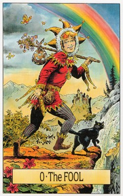
- 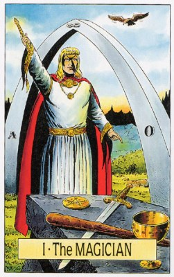
- 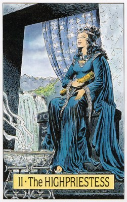
- 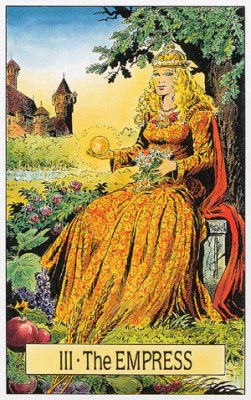
- 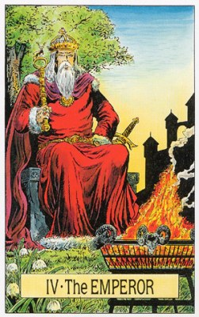
- 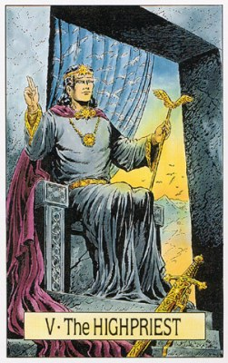
- 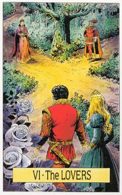
- 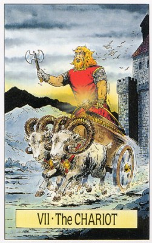
- 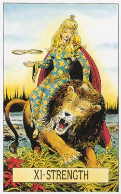
- 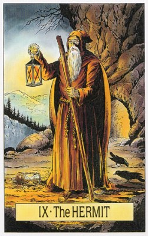
- 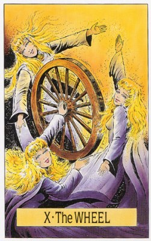
- 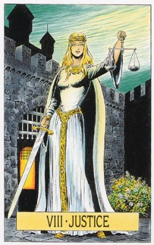
- 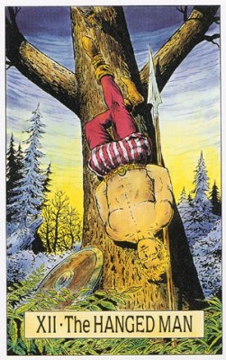
- 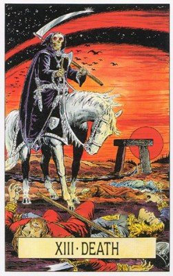
- 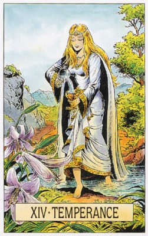
- 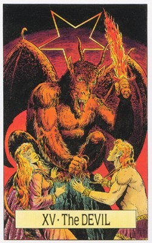
- 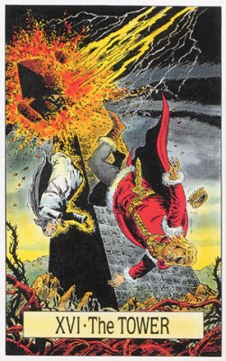
- 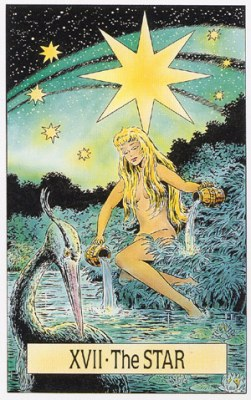
- 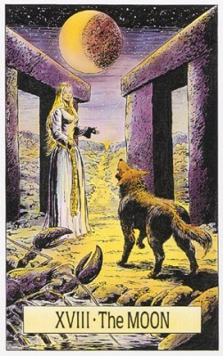
- 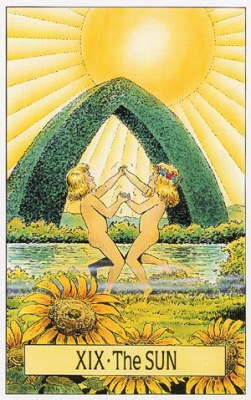
- 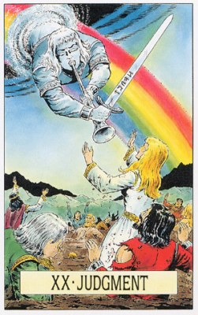
- 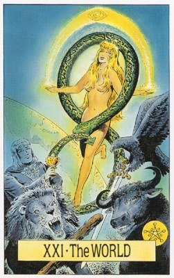
0. Шут
В прямом положении:
Все, что связано с детьми, с продолжением рода, указывает на связи в этой жизни с людьми, которые в предыдущих инкарнациях были нашими детьми, описывает семейные отношения, простые, естественные условия жизни, склонность к простым удовольствиям, молодая душа, одно из первых воплощений, клоун, шут при королевском дворе, актер, комедиант, искатель приключений, скандалист, небольшой духовный опыт, многие начатые, но незавершенные дела, нужно будет их закончить в следующих воплощениях, не было возможности выбрать воплощение.
Историческая личность: Казанова
В сочетании с:
- Папессой - связь ребенок-мать
- Иерофантом - связь ребенок-отец
- Императрицей или Императором - младшие братья и сестры
- Смертью - потеря родителей, сиротство
В перевернутом положении:
карма, собранная в предыдущем воплощении была настолько негативной, что возникла острая необходимость начать все сначала, полное отрицание духовного развития, детоубийство, братоубийство, матереубийство, похищение детей с целью выкупа, жизнь в роскоши за счет других, примитивные рефлексы, удовлетворение любых прихотей, привычка не считаться с другими живыми существами или смерть в очень юном возрасте, спрашивающий умер в младенчестве из-за негативной кармы родителей, родился, чтобы искупить карму родителей, последующая карма полностью зависит от данного воплощения.
Историческая личность: Каллигула
В сочетании с:
- Императрицей или Императором - кровосмешение
- Силой - убийство близкого родственника\члена семьи
- Смертью - умер в младенчестве
Перевернутый: Неожиданные проблемы. Балансирование на краю пропасти. Напрасная трата энергии. Чрезмерный конформизм. Отсутствие перспектив. Неудачные решения. Витание в облаках. Навязчивые идеи. Бросание слов на ветер. Игра с огнем. Не успешная поездка. Плохое влияние друзей. Слишком большое доверие людям. Проблемы между 2 и 6 годом жизни или с 0 до 7 лет. Неосознанные травмы психики. Отсутствие контакта с внутренним ребенком.
Образы:
- Нараяна, бинду, центральная точка в янтре из которой развертывается мир.
- Ребенок говорит "я сам" и начинает делать что-то, что он никогда не делал. Родители при этом пытаются всячески оградить его от ошибки.
- Человеку приходит новая идея о том, чего он никогда не делал, он берется ее осуществлять, не хватает опыта, знаний и навыков.
- Дольф вызывает демона в свои 13 лет и заключает с ним договор (Убить некроманта).
- Свободный художник, живущий и творящий, как ему нравится.
- Человек увольняется с работы и начинает свое дело.
- "Ты - дурак, и я - дурак, спорить будешь?"
Перевернутый:
- Человек берется за новое дело, проявляет неопытность и его постигает неудача. Неудача в любом новом деле.
- Человек подавляет в себе Шута (хочет начать что-то новое, но боится) - поэтому его постигает неудача.
- Рыжий демон берется играть и проигрывает силам добра (Желязни "Проделки рыжего демона").
- Человек проигрывает в азартные игры большое количество имущества.
- В начале нового дела страхи слишком сильны - нужно принимать меры.
- Новая работа для которой не хватает знаний и навыков.
- Главный герой из фильма "Тед", Макс.
- Нарцисс из книги "Убить некроманта".
Символы:
- Пропасть и крокодил - опасности и осознанные страхи перед новым и неизвестным.
- Собака или кошка - интуиция, внутренний голос или доброжелательные люди (любые дружественные силы), пытающиеся помочь советом.
- Посох - жизненный опыт, на который Шут не опирается.
- Котомка с хламом - признак легкомысленности и неординарности Шута (собирает всякую фигню ради удовольствия) и свободу от лишнего.
- Горы - непредвиденные препятствия неизбежные в любом новом деле, которые придется преодолевать.
- Яркая одежда - слишком свободное, неуместно развязное, легкомысленное и веселое поведение.
- Белое солнце или радуга - радость и невинность.
- Белая роза - чистота и невинность.
- Мотыльки - легкомысленность.
Люди: Новорожденный. Ребенок. Тот, кто начинает что-то новое. Мечтатель. Бродяга. Невинный или неопытный человек. Эксцентричный, независимый и неординарный человек. Бисексуал или гомосексуалист. Подросток. Тот, кто готовится либо принять важное решение, либо отправиться в путь. Человек, который начинает новый жизненный этап.
П: Игрок. Безрассудный храбрец. Непостоянный, опрометчивый человек.
Профессия: творческие профессии, мистик, авантюрист, провидец, путешественник (профессия связанная с путешествиями), фрилансер. Человек собирается сменить занятие или часто меняет профессию.
П: аферист, шарлатан, безработный баламут.
Характер: молодой экстравагантный человек, прежде всего дорожащий независимостью, не вступающий ни в какие подчиненные отношения; ребенок, который учится на собственных ошибках.
П: Слишком наивный и неопытный человек, молодой, беспечный, непостоянный.
Урок: Вы — дитя Вселенной и открыты для всего нового, что предоставляет вам жизнь. Будьте готовы использовать момент. Учитесь смеяться над собой, развивайте чувство юмора, и вы поймете, что жизнь во многом – игра, а вы посланы на землю не в наказание, а чтобы совершенствовать себя и радоваться всему, что может вам встретиться.
П: Вы недостаточно продумали те решения, которые собираетесь принять. Вы запутались и можете легко принять неверное решение. Вы заблудились и подвергаете себя огромной опасности просто потому, что отказываетесь видеть правду, которая прямо перед вами. Семь раз отмерить, один раз отрезать.
Работа: Новые проекты или работа.
П: Недостаток квалифицированности, безответственность и ошибки.
Сознание: Неординарность, легкость, разумная азартность, смирение, простота, скромность, откровенность, мобильность, веселость.
П: Глупость, легкомысленность, наивность, хитрость, неоправданный риск. Импульсивность. Неспособность выносить суждения. Риск. Изнуренность. Наивность. Неопытность, Легковерие. Необоснованный оптимизм. Безответственность. Неумение предвидеть ситуацию. Фривольность. Непоследовательность.
Отношения: Радость жизни, жизнерадостность, веселье, легкость, новые отношения или обновление старых, рождение ребенка. Партнер моложе и это не портит отношения. Совместные интересы.
П: Ненадежность, легкомысленность, игра с чувствами, не готовность к серьезным отношениям. Гомосексуализм. Бисексуальность. Партнер моложе и это плохо влияет на отношения или партнер находится под сильным влиянием друзей.
Медицина: Психика, детство, генетика.
П: Детские болезни (корь, свинка, ветрянка), врожденные или генетические болезни. Слабоумие, отставания в интеллектуальном развитии особенно врожденные (синдром Дауна), психические болезни вследствие травм, которых уже не помнит.
Лечение: Народная медицина.
Камни: красная яшма.
Места: веселая вечеринка без конкретного повода; путешествие автостопом, новые места.
Расклад Путь.
Шут — это наш внутренний ребенок. Он означает спонтанное начало чего-то нового, непредвзятость, открытость. Это беззаботная игра, самая элементарная радость жизни, период, когда мы с веселым удивлением и без каких бы то ни было конкретных ожиданий вступаем в неизведанное. Впрочем, он может означать и инфантилизм со всеми его атрибутами — легкомыслием, наивностью, азартностью, да и просто глупостью. Или же — мудрую простоту, скромность запросов и смирение, к которым мы приходим обычно лишь в конце долгого и трудного пути. Шут может также быть и хитрецом, озорником. Так или иначе, он живет только настоящим, это человек откровенный, искренний, мобильный. Хорошо это или плохо? О том, что значит эта карта : наше упорное нежелание стать взрослым или наоборот, приобретенную вместе с долгим опытом простоту — придется судить по всему раскладу в целом. Шут всегда предупреждает о чем-то совершенно новом, что готово ворваться в нашу жизнь, отчего в ней возникает хаос, да и мы сами можем получить пару шишек, однако опасного в этом на самом деле ничего нет.
ПОЗИЦИЯ 2: Вы крайне легкомысленно относились к своим делам, тратя время на поиски чего-то нового, когда нужно-то было заниматься старым. Возможно, вы понадеялись, что все произойдёт само собой, а вам ни во что не надо вмешиваться. Проверьте позиции 1 и 7: нет ли в них указаний, что вы уделяли своим делам слишком мало внимания, а то и наделали глупостей.
ПОЗИЦИЯ 7: Прежде всего поймите, что для вас начинается совершенно новый этап жизни, на котором прежние знания нисколько вам не помогут - они могут лишь помешать. Если вы привыкли быть высокого мнения о самом себе, то имейте в виду, что настал как раз тот случай, когда от этого вам проку не будет, и лучше сразу признать себя учеником, не знающим ничего, или знающим пока еще очень мало.
ПОЗИЦИЯ 3: Вас манит новое, вам хочется оживить ситуацию и сменить обстановку. К тому же вы настроены на открытость и непредвзятость, что уже хорошо. Возможно, впрочем, что вы недооцениваете ожидающего вас риска или слишком беззаботно готовы ввязаться в совершенно незнакомое для вас дело. Может, это у вас просто такой временный бзик?
ПОЗИЦИЯ 6: Вы вступаете в новую для вас область, так идите же навстречу ей с радостным удивлением и самым живым любопытством. Будьте готовы принять все, что попадется вам на пути, и оно подскажет вам, что и как делать дальше. Смело и спокойно принимайтесь за задуманное дело. Слушайте свой внутренний голос, доверяйте ему — вас ведут, причем именно туда, куда вам и надо.
ПОЗИЦИЯ 4: В последние время вы слишком часто нарушали "правила игры", то есть действовали бездумно и безответственно. Если дело, о котором вы думаете, носит серьёзный характер, то ошибок вы наделали очень много. Хотя не исключено, что именно этот ваш "полет над гнездом кукушки" и ваше легкомыслие помогут вам скорее достичь цели.
ПОЗИЦИЯ 5: Продемонстрируйте готовность смело взяться за новое для вас дело, способность учиться всему, что для этого потребуется, и свое умение импровизировать. Не блефуйте и не изображайте из себя знатока, когда будете иметь дело с подлинными знатоками. Признайтесь в том, что волнуетесь и чувствуете себя неуверенно. Это поможет вам завоевать симпатию и поддержку других.
РАБОТА: Шут показывает, что нам предстоит вступить в некую новую, пока еще не знакомую область, однако у нас хватит и любознательности, и умения справиться с новыми задачами. На чисто событийном уровне он может означать и ошибки, какие-то лишние шаги или безответственность. Однако его глубинное значение - мудрость, приобретаемая из любого, даже самого негативного опыта, осознание ограниченности любых правил, которым мы привыкли следовать, и возможность выйти за их пределы, чтобы добиться удовлетворения и успеха.
СОЗНАНИЕ: Здесь Шут означает удивление, с которого, по Платону, начинается всякое познание. И тут он опять-таки может символизировать как ребяческое невнимание к важным вещам, так и глубокое осознание, что ничего в мире не стоит того, чтобы делать из этого проблему, — то есть подлинный жизненный опыт. И, хотя Шут — всегда образ высокого сознания, это не значит, что всякий шут —мудрец.
ЛИЧНЫЕ ВЗАИМООТНОШЕНИЯ: Здесь Шут - символ радости жизни. Правда, и в этом случае он может означать излишнее легкомыслие и безответственность, способные привести к ненадежности, то есть к распаду союза; однако в целом он олицетворяет союз двух веселых, жизнерадостных людей, которым легко друг с другом, которые рады каждый день открывать в партнере что-то новое и любят его за неповторимость и многоликость. На событийном уровне эта карта может означать новую любовь или обновление старой, что в последнем случае часто происходит благодаря рождению ребенка.
Шут - открытость.
У кого нет четкой цели, тот не может заблудиться. (с) Автор неизвестен.
Вопрос для медитации.
Когда я в последний раз играл беззаботно, отдаваясь игре всем сердцем? Насколько я любопытен и открыт для экспериментов?
Отношения.
С легкостью принимайте то, что приходит именно сейчас. Возможно, это начало чего-то большего, возможно, это не имеет такого уж значения. Главное, что это приносит удовольствие.
Будущее.
Все пути открыты, может быть, будущее выглядит даже несколько хаотично. Возможно, вам придется начать с нуля. Не тревожтесь. Просто без лишних забот двигайтесь дальше.
В кризисной ситуации.
Забудьте все испытанные методы и добрые советы. В любом случае вам поможет жажда нового и изрядная доля спонтанности. Вы найдете решение совершенно случайно.
Если сегодня нечем заняться.
Сегодня ваш внутренний ребенок имеет право выбирать, что делать. Положитесь на него. Речь не о том, важно ли то, что вы делаете, а о том, насколько вам это нравится и отдаетесь ли вы этому целиком.
Аффирмация.
Я с радостью и удивлением принимаю то, что дарит мне жизнь. Я учусь у жизни.
1. Исходная ситуация. Все хаотично. Вам скучно, хотите испытать что-то новое. Вы вели себя глупо и оказались "в дураках". В этой ситуации вы - новичок. Наивность. Все возможно.
2. Сейчас не время. Искать новое. Быть готовым к чему-то новому. Действовать опрометчиво и безрассудно. Наивно пускаться в разного рода авантюры. "Валять дурака". Быть открытым к любым возможностям.
3. Сейчас важно. Хотя бы один раз попробовать. С интересом ступить на новую территорию. Подходить к делу открыто, проявляя спонтанность. Доверять своим инстинктам. Осознавать и использовать разные возможности.
4. Результат. Доверие своим инстинктам. Безумная ситуация. Начало чего-то нового, новая обстановка. Смелый переход к новой, радостной фазе вашей жизни. Хаос, из которого формируется нечто совершенно новое. Ситуация, в которой все ясно.
Ребенок, начало, неопытность. Меркурий в Близнецах.
Невинность. Спонтанность. Открытость. Архетип новорожденного младенца. Потенциал. Начало с нуля. Новый шанс, впечатления, способ восприятия мира, возможности. Важное решение. Неожиданное решение. Начало приключения. Время перемен. Интерес к миру и людям. Оригинальность. Открытый разум. Оптимизм. Детское удивление. Наивность. Веселье. Чистота поступков. Свобода от предрассудков. Новый жизненный этап. Волнение из-за открытия чего-то нового. Беззаботное отношение. Неожиданность. Второе рождение. Доверие к судьбе. Свобода, ощущение, что вас ничто не сдерживает. Энтузиазм. Риск. Доверие высшим силам. Уверенность в том, что провидение направляет вас в нужную сторону. Творческий нонконформизм. Для того чтобы начать что-то новое, нужно отпустить прошлое, оставив его позади. Неожиданное влияние. Ноль – это число чистого потенциала. Все возможно. Смело отправляйтесь туда, где не ступала нога человека. Короткое путешествие. Приятное времяпревождение с друзьями.
Совет: Найдите себе что то новенькое, попробуйте сыграть в новую игру.
Предостережение: Избегайте любой неупорядоченности и не будьте слишком легкомысленны.
Стихия: Огонь.
1. Маг
В прямом положении
занятия магией, функции жреца, посвященный, шаман; образованный, но приберегающий свои знания для себя человек; изобретатель, исследователь, ученый; желание оставить свой след на Земле; многочисленные контакты с людьми, существенная роль дружбы в жизни. Указывает на связи с людьми, которые в предыдущих воплощениях были нашими друзьями; разумное использование имеющейся власти на благо других и для собственного развития; жизнь в достатке и гармонии; довольно высокий уровень кармического развития.
Историческая личность: Исаак Ньютон
В сочетании с:
- Иерофантом - священнослужитель господствующей в данное время религии
- Колесницей - человек, достигший успеха на научном поприще
- Луной - дружеские отношения между спрашивающим и женщиной
- Солнцем - дружеские отношения между спрашивающим и мужчиной
В перевернутом положении:
жестокое обращение с людьми, неумение заводить друзей и поддерживать дружеские отношения; непонимание со стороны родственников, склонность использовать других в своих личных целях, использование людей; принцип - цель оправдывает средства; нежелание учиться, невежество, обжорство, пьянство, декаданство, занятия черной магией, сглаз, почитание сил зла, язычник, идолопоклонник, предатель, продажный человек; тот, кто продал идею или друга ради денег; доносчик; много кармических долгов.
Историческая личность: Бенито Муссолини
В сочетаниях с:
- Колесницей - доносчик
- Колесом Фортуны - выдать друга на мучения в корыстных целях
- Дьяволом - занятия черной магией, последователь темных сил
П: Притворная опытность. Слабость. Крушение планов. Промедление. Нежелание воспользоваться случаем. Неумение использовать то, что находится под рукой. Напрасное растрачивание энергии или ресурсов. Нереальные цели. Совершение ошибок. Неумение учиться на прошлых ошибках. Излишняя самоуверенность. Отсутствие легкости в ведении дел и общении. Неумение пользоваться техникой. Бесполезные технологии. Ничего нельзя сделать правильно. Недостаток знания – опасная вещь. Неосуществленные планы, недостигнутые цели. Беспорядок и непоследовательность. Ссоры, косноязычие, сквернословие, сложные отношения с ровесниками. Задержки умственного развития, проблемы с учебой. Дисгармония. Проблемы в период полового созревания, отстранение от контактов с ровесниками, неприятие себя и своего места в социуме, неадекватная самооценка. Страх перед публичными выступлениями.
Образы:
- Брахма творящий.
- Фауст в своей мастерской изучает тайные знания: "я богословьем овладел, над медициною корпел, юриспунденцию долбил… и в магию я обратился чтоб дух по зову мне явился и тайну бытия открыл…"
- Алхимик проводит исследования в поисках философского камня.
- Успешный юрист, оратор или политик, человек, решающий жизненные задачи с помощью коммуникативных способностей и смекалки.
- Вдохновленный человек, искушенный в своей области деятельности и жаждущий приступить к делу из любви к искусству.
- Человек, виртуозно овладевший каким-либо ремеслом и чувствующий вдохновение к своей работе.
- Гендальф Серый из Властелина колец, главный герой из фильма "Знахар", Бетман.
- Человек, переживший "опыт единства со всем сущим".
П:
- Джокер из фильма "Бетмен".
- Саруман из Властелина колец.
- Меркантильный доктор из фильма "Знахар".
- Человек, использующий свою силу и знания во зло другим и себе.
Символы:
Волшебный жезл - символ способности получить силу, вдохновение свыше и творить. Пентакль, меч, жезл и кубок - символы четырех стихий подвластных Магу, равновесие и задания с которыми он должен справиться. Поза Мага - еврейская буква "алеф" - первая буква в алфавите, как вверху так и на низу. Знак бесконечности - постоянный обмен энергией между верхом и низом. Красная одежда и красные розы - энергия и божественная любовь. Пояс - сдерживание чувств и власть. Стол - уровень действительности. Белые лилии - душевная чистота.
Люди: Сын. Брат. Взрослый мужчина или подросток. Тот, кто манипулирует физическим миром. Дети от пяти лет и до половой зрелости. Оратор.
П: Самозванцы. Те, кто пользуются своими внешними данными для достижения цели. Те, кому нужен только секс, а не любовь. Обманщики. Эгоистичные люди. Люди, от которых нет никакой пользы, или же те, кто постоянно мешают. Те, кто уверены в своих собственных знаниях и умениях, не имея на то никаких оснований. Злые гении. Выскочки. Неприятные личности. Те, кому нельзя доверять. Люди, «идущие по трупам», строящие козни.
Профессия: Политик, который умеет правильно распорядиться своей властью. Писатель. Маг. Иллюзионист. Инженер. Изобретатель. Агент. Тот, кто хорошо разбирается в технике и умеет работать с различными инструментами. Предприниматель. Алхимик. Учитель. Гид. Лингвист. Художник. Ученый-практик. Медицинский работник. Нейрохирург. Ремесленник. Психотерапевт.
П: Шарлатан, ученый, работающий на "войну", хакер.
Характер: человек, несущий знание; ученый, работающий на благо человечества; изобретатель; профессиональный консультант.
П: человек, использующий знание для корыстных целей.
Урок: Истинная способность к созиданию означает черпание силы из внутреннего царства Духа и проявление этой священной силы в повседневном мире. Прикасаясь к этому святому потенциалу, вы неизбежно расширяете границы самопознания, обретая удвоенную энергию для начала новых проектов и демонстрируете усиленную ясность мысли и понимание в создании своих убеждений.
П: Вы используете свои силы неразумно или губительно. Вы стремитесь к пустым целям и подвержены влиянию тех, кто лжет и обманывает вас. Ваши проекты плохо продуманы и врядли завершатся успешно.
Работа: Инициатива, профессионализм, способность справиться с проблемами.
П: Шарлатанство, недостаток навыков.
Сознание: Ясность и точность, масштабность мышления, ответственность, решительность, осознание жизненной задачи.
П: Самоуверенность или неуверенность, неадекватная самооценка, непоследовательность. Нерешительность. Неумение видеть вещи такими, какие они есть. Эгоистичное поведение. Действия наугад. Игнорирование собственных талантов. Манипулирование. Подавление сексуальности. Чрезмерная самоуверенность. Недостаток уверенности в себе или силы воли. Нежелание решать проблемы. Силы на исходе.
Отношения: Вдохновение, увеличение магнетизма, осознание важности гармонии. Ровесник, гармония, коммуникабельность, взаимопонимание.
П: Эгоизм, манипулирование. Обманы, нерешительность, нет согласия, сплетни, почти не разговаривают друг с другом, нет общих интересов.
Медицина: верхняя дыхательная система. Центральная нервная система. Легкие. Руки. Пять чувств.
П: Воспалительные процессы в верхних дыхательных путях. Расстройства связанные с речью и слухом. Дыхательные аллергии. Импотенция.
Лечение: Акупунктура.
Камни: горный хрусталь.
Места: научно-исследовательский институт; библиотека; кабинет для научной работы; биржа; кабинет врача; место, где можно обрести гармонию.
Расклад Путь.
Маг обозначает ум, сообразительность, активную жизненную позицию. Это период, когда перед нами встают трудные проблемы, мы должны выдержать некое испытание, однако полная ясность сознания и жизненная сметка помогают успешно справиться с ними. Хоть карта и указывает на высокий потенциал сознания, это не означает, что потенциалом интуиции и других подсознательных сил в это время можно пренебречь. Наоборот : наша готовность к действию, к успеху, на которую указывает Маг, основывается именно на гармонии между сознанием и подсознанием. Только благодаря уверенности в себе, возникающей в результате этой гармонии, мы действительно можем сдвинуть с места горы.
ПОЗИЦИЯ 2: Вопрос заданный вами, волнует вас чрезвычайно сильно, хотя до сих пор вам удавалось прекрасно справляться со своими задачами в этой сфере. Если же теперь вы испытываете неуверенность, то вспомните выражение: "ничего слишком". Возможно, вы в чем-то перестарались, то есть действовали с излишним нажимом, чересчур прямо или резко.
ПОЗИЦИЯ 7: Составьте себе четкий план, продумайте надежную стратегию. Вспомните, что вы человек изобретательный и весьма инициативный. Не идите на поводу у чужих мнений, а выработайте свое и держитесь его твердо. Тогда вы вскоре сумеете ясно представить себе весь будущий ход вашего дела и убедитесь, что оно движется успешно.
ПОЗИЦИЯ 3: Вы сами были сильно увлечены своим замыслом, поэтому все и шло так успешно. Вы, вообще-то говоря, и до сих пор уверены, что у васвсе получится, как задумано. Ну что ж, давайте теперь проверим, так ли это, посмотрев на карту в позиции 6.
ПОЗИЦИЯ 6: Ощутите всю глубину своих чувств, осознайте силу своего духа. Ваше дело правое, так что смело беритесь за выполнение задуманного. Все в ваших руках, и вам отлично удастся добиться своего.
ПОЗИЦИЯ 4: Ваша уверенность в себе, инициативность, активность увлекают и других. Вы обладаете сильным магнетизмом и распространяете свою уверенность и на других людей. Однако подумайте, не перегнули ли вы где-нибудь палку, слишком сильно подгоняя их или даже угрожая им.
ПОЗИЦИЯ 5: Будьте спокойны и уверены в себе. Смело проявляйте инициативу и больше не откладывайте на потом решение сложных проблем. Продемонстрируйте всем свою изобретательность, таланты. Действуйте самостоятельно, подбадривайте других и приступайте к новым проектам. Будьте решительны, подавайте пример окружающим, тогда успех обеспечен.
РАБОТА: Маг показывает, что мы осознаем этот свой потенциал и используем его, проявляя инициативу. В зависимости от того, на что направлена эта инициатива, мы можем добиться финансового успеха, продвижения по службе, или решить какие-то непростые задачи, например, сдать успешно экзамены или завершить какой-то проект. Если нам приходится выполнять функции начальника, мы можем многое сделать для улучшения климата в коллективе, дать своим сотрудникам стимул для увеличения эффективности их труда, а тем самым - и успешной деятельности всей фирмы. В переговорах, проектах, при проведении испытаний или выполнении других заданий, которые мы до сих пор откладывали из-за каких-то трудностей или проблематичности, мы можем теперь разрубить Гордиев узел (каким образом - покажут карты в позиции от 5 до 7 ). В этот период мы сумеем справиться с любыми проблемами.
СОЗНАНИЕ: На уровне сознания эта карта свидетельствует, что наш ум ясен и точен, что у нас хватит сообразительности и дара убеждения, чтобы добиться успеха даже в том, за что мы прежде не решались взяться. Кроме того, Маг показывает, что у нас появилась " высота обзора", позволяющая охватывать всю перспективу в целом, так что мы больше не увязнем в деталях. На более глубоких уровнях сознания. Маг олицетворяет умение отвечать за свои шаги, решительность и осознанное управление собственной судьбой, осознание жизненной задачи.
ЛИЧНЫЕ ВЗАИМООТНОШЕНИЯ: Период вдохновения, отваги, усиления "магнетизма". Будучи использованы с толком, эти олицетворяемые Магом силы помогут вам преодолеть скованность, зажатость, вообще любые имеющиеся проблемы. Использовать с толком - значит ради блага всех, а не только ради собственной выгоды. Маг символизирует знание, в данном случае - осознание важности единства и гармонии во взаимоотношениях.
Маг - мастерство.
Когда человек обладает настоящим талантом, его результат кажется совершенно простым. (с) Карлфрид граф Дюркгейм.
Вопросы для медитации.
Какую задачу мне следует решить? В чем мне необходимо быть активным и проявить инициативу?
Отношения.
Признайте, что все зависит от вашей воли. Создавайте любовь, возьмите инициативу на себя.
Будущее.
Вас ждет успех. Вы умело разберетесь с тем, что пока еще кажется проблемой.
В кризисе.
Рассматривайте проблему как задачу, которую сейчас хочется решить. Не ждите большего. Станьте активным и не останавливайтесь, пока не достигните определенного результата.
Если сегодня нечем заняться.
Проявите инициативу. Сдейлайте шаг, на который вы раньше не решались. Из этого может получиться больше, чем вы предполагаете. Возможно, это будет шедевр.
Аффирмация.
С силой, которую я принимаю свыше, я легко и умело создаю свою жизнь. Я сам творю свои задачи.
1. Исходная ситуация. До сих пор вы действовали разумно. Вы проявили силу воли и оказали влияние. Вы достигли того, чего хотели, затратив много энергии. Вы в более выгодном положении. Вы взяли инициативу на себя. До сих пор вам с легкостью удавалось выполнять свою задачу.
2. Сейчас не время. Быть активным. Казаться уверенным в себе и проявлять настойчивость. Создавать шедевр. Проявлять инициативу. Демонстрировать силу и насаждать свою волю. Обманывать кого-то или проявлять особую сноровку.
3. Сейчас важно. Взять инициативу в свои руки и сделать ставку на успех. Выполнять свои задачи, выражаться ясно и однозначно. Показать свое превосходство. Проявить творческие способности. Проявить свою гениальность.
4. Результат. Новая сила и инициатива. Успех и влияние. Уточнение планов. Опыт, благодаря которому вы станете сильнее. Оригинальный маневр. Умелое решение. Ум, сообразительность, активность, преодолимые испытания, потенциал сознания. Меркурий и Солнце. Архетип возмужавшего сына. Способность добиваться своей цели. Результаты дисциплинированного обучения. Изменение с помощью силы воли. Способности к использованию творческих сил. Творческая визуализация. Способность принимать решения. Дисциплинированные и творческие действия. Желание освоить что-то новое. Уверенность в себе. Творческие силы. Предсказание будущего. Решительность. Умение учиться методом проб и ошибок. Возможности. Умение быстро решать проблемы. Ловкость рук. Умение приспосабливаться к переменам. Мужество. Стремление быть на виду. Бахвальство. Работа на себя. Проворность. Способности к медицине, языкам. Изобретательность. Умение грамотно использовать ценное оборудование. Создание новых долгосрочных проектов. Действия. Современные технологии. Андрогенность (обоеполость). Я хозяин своей судьбы. Я капитан своей души. Интеллигенция, красноречие, литературный талант, гармония. Контактность, уверенность в себе.
Совет: Поверьте в свои способности, в возможность справиться с предстоящим делом.
Предостережение: Не думайте, что для достижения вашей цели все средства хороши.
Стихия: Воздух.
2. Верховная Жрица
В прямом положении:
огромные познания, духовное развитие; понимание законов причины и следствия; ясновидящий, знахарка, акушерка, травник, врач, санитарка, няня, образование и знание на службе людям; жизнь в соответствии с ритмом природы; любовь к природе, животным; уважение к жизни в любом ее проявлении, самопожертвование, альтруизм; человек спасающий чужие жизни; приобретение опыта; влияние на эволюционный прогресс человечества; указывает на отношения мать-дочь, перенесенные из предыдущих воплощений; старая душа; не так много долгов отработать осталось, хорошая карма, была возможность выбрать воплощение.
Историческая личность: Альберт Швейцер
В сочетании с:
- Влюбленными - заботливая мать многодетной семьи
- Отшельником - достижение высокого уровня духовного развития
- Силой - спасение человеческой жизни в тяжелых условиях, например - во время войны, эпидемии
- Солнцем - врач-ученый, фармацевт, натуралист
В перевернутом положении:
необоснованная самоуверенность, высокомерие, использование своих знаний в дурных целях, спесь, чувство превосходства; причинение вреда другим людям; сплетни, обманы, жестокость по отношению к слабым; издевательство над животными, уничтожение природы, неуважение к своей жизни и жизни других существ; неумение воспользоваться опытом, кармический долг по отношению к матери в этом воплощении; тенденции к уничтожению; сломанная жизнь (себе и другим); бездомность, бродяга, большие кармические долги.
Историческая личность: Феликс Дзержинский
В сочетании с:
- Шутом - аборт, детоубийство
- Справедливостью - использование своего положения для причинения вреда другим
- Судом - уничтожение семейного счастья
П: Тайные враги. Нежелание прислушиваться к своим подозрениям. Неумение воспользоваться врожденными талантами. Недоверие своему внутреннему голосу. Нежелание прислушиваться к тому, что подсказывает сердце. Эмоциональная черствость или же повышенная чувствительность. Раскрытые тайны. Нечего скрывать. Поверхностность. Неумение предвидеть ситуацию. Потеря девственности. Жизненная позиция, предполагающая скорее наблюдение, нежели активное участие. Чрезмерное внимание внешним ценностям. Придание повышенной важности анализу и рациональному мышлению. Повышенный интерес к сексу. Все очевидно: черным по белому. У меня нехорошие предчувствия, но я все равно это сделаю. Я делаю ставку только на выигрышные номера. Страсть, не имеющая ничего общего с чувствами. Болтун , сплетни и неспособность хранить тайну. Отсутствие контакта с природой.
Образы:
- Сарасвати - богиня мудрости.
- Мать Тереза, Ванга, Пифия, весталки в Древнем Риме.
- Главная героиня из фильма "Агора".
- Цель жизни - хранить тайное знание и передать его только тем, кто будет готов.
- Медитация в уединении в поисках внутреннего источника Истины.
- Все люди - дети, молчаливое уединение с любовью к миру.
П:
- Гламурная, поверхностная пустышка-блондинка, отсутствие понимания и мудрости, истерия и неспособность доверять интуиции.
- Непонимание, что все есть внутри и только там Истина и вечность, бегство за внешним, временным и иллюзорным.
- Разлад, внутренний или внешний, или и то и другое, неспособность найти гармонию, удовлетворение и покой.
- Беспокойный и развращенный ум, болтливость, неспособность хранить тайну и правильно пользоваться своими способностями.
- Главная героиня-блондинка из фильма (забыла какого), которая была журналисткой приземлившейся на парашюте в загон со свиньями.
- Хаотичная Анна.
Символы:
Свиток в руках - тайное знание, интуитивное понимание божественных законов. Лунная корона - интуиция, психологическое озарение, внутренний голос, яснознание, третий глаз, знание о прошлом, настоящем и будущем. Голубые с белым одежды - символ покоя, медитации, умиротворения и чистоты. Две колонны храма Соломона (Боаз и Йахин) - инь и ян, гармония между ними. Покрывало - скрывать невыразимое, охрана тайны.
Люди: Дочь. Сестра. Весталка-девственница. Одинокая женщина. Монахиня. Набожные люди. Тот, кто желает любви без секса. Люди, наделенные необычными способностями. Люди, обладающие хорошей интуицией. Адепты. Идеализированные возлюбленные. Чувствительные люди. Люди, которым мы интуитивно доверяем. Те, кто хранят какую-то тайну. Инициаторы. Те, кто понимают, что кроется за внешней оболочкой событий. Сказочная фея – крестная. Женщина, которая тайно проявляет интерес к вопрошающему мужчине.
П: Люди-манипуляторы. Тайные враги, особенно женщины. Жестокие женщины. Эмоционально озабоченные люди. Пустые или поверхностные люди. Душевнобольные. Люди, разрушающие сами себя. Люди, ведущие беспорядочный образ жизни.
Профессия: монахиня, психолог, советчик, медиум, таролог, исследователь.
П: колдунья использующая черную магию.
Характер: женщина, которая учит жить; женщина-опекун или терапевт; человек, проникший в тайны жизни; «ведающая» женщина.
П: дурная женщина; продажный человек, тайный враг, лицемер.
Урок: Вы открываете себя для своего интуитивного потенциала и прислушиваетесь к высшим духовным советам. Будьте спокойны и невозмутимы, доверяйте своему внутреннему голосу.
П: Эта карта указывает на склонность к потворству своим желаниям, поверхностности и тщеславию. У вас немного интуитивного понимания, есть лишь оценка внешних сил, работающих в повседневной жизни. В настоящий момент в вашем мире нет никаких тайн или тонкостей.
Работа: Эзотерическая деятельность, терпение и интуиция в работе, ощущение руководства свыше.
П: Сплетни и клевета на работе, тайные враги.
Сознание: Внимание к подсознанию: мечты и фантазии.
П: Неправильное использование интуиции. Предубеждения или предрассудки. Внутренняя пустота. Манипулирование. Недостаточный контроль эмоций. Отчужденность. Слишком мало времени для размышлений. Игнорирование снов и интуиции. Истерические приступы. Подавленные чувства.
Отношения: Взаимопонимание, привязанность, чувствительность, заботливость. Целомудренная жена, жена старше мужа или мудрая жена, честные парные отношения, теплые, альтруизм, бескорыстная любовь. Эта карта показывает, что в этом союзе обязательно должен быть ребенок (кармическая задача).
П: Теща или свекровь, плохая партнерша (не совместимая), женщина из семьи вопрошающего плохо влияет на его отношения с женой. Сокрытие чего-то от партнера (тайные действия).
Медицина: Репродуктивная система, грудь.
П: Бесплодие.
Лечение: Траволечение.
Камни: авантюрин.
Места: место, подходящее для науки и медитации; лес; свободное пространство, не затронутое цивилизацией.
Расклад Путь.
Жрица олицетворяет наши неосознаваемые силы — интуицию, предчувствие, часто необъяснимую, но вполне твердую уверенность в чем-то. Это - ключ к той таинственной истине, которая ускользает от логически мыслящего разума. Она знает, что та истина, которую мы можем выразить словами никогда не бывает вечной. Ее светлая сторона это выражение терпения, понимания, снисхождения, доброты и умение прощать, использование сил подсознания на благо людям — ради помощи, исцеления, ясновидения. Теневая же ее сторона соответствует архетипу "темной сестры" использующей свои душевные силы, чтобы соблазнять других, заманивать их в ловушки или еще как-то вредить им. В Таро, однако, чаще всего выделяется ее светлая, добрая сторона. Она считается одним из трех "ангелов-хранителей" так как, согласно христианской мифологии, Святая Дева-девствeнница может сделать человека неуязвимым.
ПОЗИЦИЯ 2: До сих пор вы терпеливо выжидали, надеясь в душе на возникновение благоприятного шанса. Возможно, вы все еще сомневаетесь, как вам следует поступить, и ждёте какого-нибудь очевидного знака. Проверьте карты в позиции 1 и 7: не исключено, что время действовать уже настало.
ПОЗИЦИЯ 7: Поймите, что силой в данной ситуации ничего не добьетесь, поэтому не дергайтесь, и не хватайтесь за все сразу. Сейчас вам требуется терпение: дайте плоду созреть, и он сам упадет в ваши руки. Не торопитесь – в свое время внутренний голос подскажет вам, что и как нужно сделать.
ПОЗИЦИЯ 3: До сих пор вы были весьма снисходительны к другим, прощали им многое и, скорее всего, действительно заботились о них. Вы всегда были готовы прислушаться и к чужому мнению, и к своему внутреннему голосу. Возможно, вы пытались уйти от ответственности за свои решения или вообще избегали принимать их. Проверьте карту в позиции 6 – не говорит ли она, что пора и самому действовать активнее?
ПОЗИЦИЯ 6: Поймите, что мир иррационален, и примите его с этой стороны. Воспользуйтесь собственным чутьем, интуицией - и вы убедитесь, что вам ясны и мотивы окружающих вас людей, и дальнейшие тенденции развития ситуации. Это придаст вам уверенности в успехе. Доверяйте своему чутью, и пусть оно ведет вас.
ПОЗИЦИЯ 4: До сих пор вы занимали пассивную, выжидательную позицию, полагая, что время действовать для вас еще не пришло. Вы руководствовались очень тонкими вибрациями, возможно, медитировали - или просто по характеру не склонны к активным действиям, предпочитая жить в своем собственном мире, в мире грез.
ПОЗИЦИЯ 5: Вам надо проявить понимание и снисхождение по отношению к окружающим вас людям - и подождать дальнейшего развития событий, прежде чем начать действовать или принимать важные решения. Сейчас события развиваются вполне благоприятно, и поспешность была бы здесь только вредна. Помедитируйте, проявите свои экстрасенсорные или целительские способности.
РАБОТА: Жрица означает, что либо наш род занятий так или иначе относится к сфере ее влияния, то есть к достаточно широкому спектру целительской или эзотерической деятельности. Либо же мы относимся к своей работе в духе принципов Жрицы: подходим к своим любым задачам с открытой душой, с терпением, всегда готовы услышать и воспринять новое, принимаем решения, повинуясь не только логике, но, прежде всего, интуиции. Если такое отношение к работе достигнуто и поддерживается нами сознательно, у нас возникают прекрасные ощущение "ведомости", руководства свыше. Правда, оно не должно, как говорится, выходить из берегов, чтобы мы не выглядели в глазах окружающих капризными, а то и опасными.
СОЗНАНИЕ: Эта карта означает период, когда нам следует посвятить максимум внимания своему подсознанию, тем образам, мечтам и фантазиям, которые возникают в самой глубине души, чтобы приподнять тот покров, под которым Жрица скрывает свое знание - ту самую "Древнюю Истину ", которую людям всякий раз приходится открывать заново. Наш дуалистически устроенный разум отказывает нам в этом путешествии, не позволяя больше различить, где добро, а где зло. "Мудрость Лона" же скрывает тайну присущей всему полярности, которая заставляет нас с восхищением и ужасом одновременно вглядываться в лик белой и черной Изиды, потому что мы никогда не знаем, зло ли, добро ли перед нами, ждет ли нас исцеление или гибель. Этот архетип женского начала, со всей его красотой и опасностью, описан у многих авторов.
ЛИЧНЫЕ ВЗАИМООТНОШЕНИЯ: Здесь Жрица проявляет себя главным образом со светлой стороны. Она олицетворяет взаимопонимание, глубокую привязанность, близость и родство душ, чувствительность, заботливость по отношению друг к другу, и не в последнюю очередь - уверенность в том, что нас с партнером соединяет невидимая, но прочная нить. Если эта карта выпадает в период, когда мы остались одни, то она означает, что этот образ жизни и необходим нам сейчас, доставляет нам удовлетворение. Или она означает, что мы находимся в ожидании, в состоянии открытости и готовности к новой встрече, прислушиваясь к своему внутреннему голосу и не принуждая себя ни к чему или не давая другим принуждать нас.
Жрица - интуиция.
Имеет смысл терпеливо в тишине наблюдать за тем, что происходит в душе, все великое и лучшее случается, когда ничего не навязывается извне и сверху. (с) Карл Густав Юнг.
Вопросы для медитации.
Готов ли я ждать и позволить вести себя? Насколько я позволяю событиям происходить, не вмешиваясь в их ход?
Отношения.
Подождите. Вооружитесь терпением и действуйте только тогда, когда внутренний голос ясно скажет вам, что время пришло.
Будущее.
Вам не нужно ничего делать. Дайте событиям просто происходить. Вас будут вести, и вы можете доверять тому, кто ведет. Интуиция подскажет вам, когда снова следует стать активным.
В кризисе.
ПОпробуйте вступить с проблемой во внутренний контакт и послушайте, что она вам скажет. Вас будут вести к проблеме шаг за шагом, давая ясно почувствовать, когда нужно действовать.
Если сегодня нечем заняться.
Позвольте событиям идти своим чередом и пробуйте ничего не делать, пока не появится импульс, которому вы последуете, возможно, неосознанно. Или долго без какой-либо цели смотрите на озеро, и ждите, пока нечто не откликнется в вас.
Аффирмация.
Я позволяю себя вести. Я доверяю своей интуиции. Я принимаю ход событий таким, коаков он есть.
1. Исходная ситуация. Вы проявили терпение и понимание. До сих пор вы бездействовали и сейчас ждете подходящего момента. Вы позволили себе прислушаться к внутреннему голосу. Вы позволили внутреннему голосу вести вас. Вы позволили кому-то или чему-то вдохновить вас. Вы доверяете своей интуиции.
2. Сейчас не время. Болтать об интуиции или ожидать вдохновения свыше. Ждать и проявлять терпение. Плыть по течению (позволять чему-то происходить). Уходить в себя, погружаться в свой внутренний мир. Доверять силам бессознательного или бояться их.
3. Сейчас важно. Доверять внутреннему голосу и интуиции. Не торопиться. Подождать развития. Войти в мир иррационального. Доверять своим чувствам. Ждать, пока внутренний голос не подскажет вам, что делать. Осторожно заглянуть за вуаль, не срывая ее.
4. Результат. Откровение и глубокое понимание. Терпение и позволение чему-то произойти самостоятельно. Уверенность в том, что вас ведут. Доверие внутреннему голосу и ожидание его совета. Встреча с силами бессознательного.
Интуиция, мудрость, тайна, понимание. Луна. Архетип дочери-девственницы. Архетип Матери Мира. Управление внутренним миром. Внутреннее пространство. Духовные силы. Секреты. Тайные дела. Любовь без секса. Духовное просветление. Психологическое озарение. Внутреннее свечение. Моральные принципы. Внутреннее созерцание. Познание чувств. Умение довериться своему внутреннему голосу. Подсознание. Скрытые тенденции. Ранние воспоминания. Обстоятельства в прошлом. Вещие сны. Тайное влияние. Эзотерические знания. Оккультная мудрость. Помощь. Совет. Проникновение вглубь. Невидимые аспекты Вселенной. Женщина-духовный лидер. Размышления. Медитация. Понимание высших истин. Движение по течению. Нераскрытые тайны. Неизвестное. Анима. Сексуальность, которая только начинает пробуждаться. Женская тайна. Доступ к скрытому знанию. Обучение. Сила в молчании. Раскрытие тайны. Божественная мать. Скрытые таланты. Руководство скрытой истиной. Усвоение. Жизнь без мужчин. Девственность. Низкое либидо. Безбрачие. Движение по течению. Вегетарианство.
Совет: Доверяйте своему внутреннему голосу.
Предостережение: Не плывите по течению, ожидая чуда.
Стихия: Вода.
3. Императрица
В прямом положении:
женщина, замужняя; правительница, королева, княгиня, аристократка, достойный влиятельный человек, человек на своем месте; материнство, совершенство в любви, твердые моральные принципы, патриотизм, красота, умение справиться с жизненными задачами, унаследование семейного достояния, достойные условия жизни; богатство, использованное разумно; человек с хорошим вкусом, эстет; обоснованная уверенность в собственных силах, указывает на отношения с братьями и сестрами перенесенные из предыдущих воплощений, душа с высоким уровнем развития.
Историческая личность: королева Виктория
В сочетании с:
- Шутом - счастье от детей
- Императором - Счастливый брак
- Иерофантом - высокая моральность и привязанность к традициям
- Умеренностью - умение совмещать общественные и семейные функции
В перевернутом положении:
падшая женщина, проститутка, куртизанка, содержанка; человек, который ради денег готов на все; излишний материализм или человек, который из-за своего поведения оказался в самом низу общественной лестницы; капитал, заработанный нечестным путем; моральные принципы в зависимости от обстоятельств; привычка держать нос по ветру; лишенный наследства из-за аморального поведения; использование власти в преступных целях, непотизм (*), человек с дурным вкусом, графоман, кармические долги по отношению к братьям и сестрам в этом воплощении; серьезные кармические долги.
Историческая личность: маркиза де Помпадур
В сочетании с:
- Шутом - неэтичное продвижение своих детей на высокие должности
- Дьяволом - скандалистка, женщина, достигшая своего положения благодаря собственному телу
- Звездой - бездарный человек, пытающийся делать карьеру благодаря протекции
П: Застой. Контроль рождаемости. Беспорядочные половые связи. Проблемы. Болезнь. Физический дискомфорт. Напрасно растрачиваемая энергия. Проблемы с малыми детьми. Плохой вкус, не красивая женщина, финансовые проблемы (причина - подход человека к деньгам).
Образы:
- Лакшми - богиня процветания.
- Талантливая художница с большим количеством идей и стремлением воплощать их из любви к искусству.
- Деметра, Венера, Галадриэль из Властелина Колец, главная героиня "Дьявол носит прада".
- Дж.К.Роулинг (писательница создавшая Гарри Поттера), принцесса Диана.
П:
- Творческий кризис, апатия, депрессия, неспособность найти вдохновение, отсутствие вкуса, эпатаж.
- Неправильное обращение с сексуальной энергией, неспособность направить ее в творческое русло, секс без любви.
- Развратные, похотливые женщины, неспособные жить без физического удовлетворения.
- Проституция и нежелательная беременность, аборт и деструктивные проявления сексуальной энергии.
- Главная героиня из фильма "Больше чем любовь".
Символы:
- Скипетр с шаром или шар - властительница над земным шаром.
- Овощи и фрукты - плодородие, изобилие, достаток, природа, рост, либидо, творческая сила.
- Диадема - солнечный круг (год) со всеми его циклами и этапами развития природы.
- Замок на заднем плане - богатство, социальный статус, власть.
- Красная ткань - энергия.
Люди: Мать. Жена. Значимая женщина. Женщина с хорошо развитыми инстинктами материнства и воспитания. Женщина, всегда готовая оказать помощь. Влиятельная женщина. Беременная женщина. Земная мать. Царственная женщина. Женщина – работодатель. Женщина королевского рода. Женщина, владеющая землей. Творческая личность. Один из родителей. Женщина, обладающая властью и занимающая высокое положение. В вашей жизни появилась важная женщина. Для мужчины – это женщина его мечты.
П: Любовница. Женщина, у которой случился выкидыш. Отвергнутая женщина. Люди, ведущие беспорядочный образ жизни. Непродуктивные люди. Холодные люди. Эмоционально неустойчивые люди. Порочная женщина.
Профессия: владелица бизнеса, бизнес-леди, творческие профессии.
П: проститутка.
Характер: властный влиятельный человек, который, однако, доброжелательно настроен и готов помочь; женщина, достигшая высокого положения. Мужчина у которого очень хорошие отношения с женщинами.
П: женщина, любой ценой стремящаяся доминировать, получить власть над нами и злоупотребляющая этой властью. Женщина у которой проблемы с женской природой (либо слишком либо не принимает). Мужчина - женоненавистник.
Урок: Вы способны раскрыть свое сердце и разум для интуиции и рационального принятия решений. Вы можете привнести мудрость и понимаете в свою повседневную жизнь. Это время для продуктивных действий.
П: Вы занимаетесь непродуктивным делом и не до конца используете свой творческий потенциал. Вы рассеиваете свою творческую энергию так, что это вполне может закончиться разочарованием или неудачей. Опасайтесь показной роскоши, неправильных оценок и соблазна. Отложите серьезные деловые сделки и более тщательно поразмышляйте над ними.
Работа: Вдохновение и творческий подъем, новые идеи, перемены.
П: Неудачные попытки разбогатеть. Финансовые трудности. Бедность. Непродуктивность.
Сознание: Новые знания, фантазии, хорошо развитое воображение, творческий подъем, увлеченность искусством.
П: Нереализованное творчество. Отказ от роста. Неразумное довольство настоящим. Чрезмерное увлечение материальным комфортом. Упущение возможностей. Жадность. Чрезмерный материализм. Депрессия. Отчаяние. Страдания. Отрицание мудрости своего сердца. Неприятие своей женственности или концентрация только на своей женственности. Для мужчин: излишняя женственность в характере или травмы связанные с моментом сексуальной инициации.
Отношения: Перемены к лучшему, взаимность, рождение детей. Жена, желательная беременность, эмоциональный комфорт и устойчивость в отношениях. Новое знакомство с очень интересной дамой.
П: Любовница (кроме жены), муж изменяет, борьба за власть в доме. Секс без любви. Нежелательная беременность. Сложности с партнерскими отношениями из-за другой женщины.
Медицина: Репродуктивная система.
П: Заболевания вредящие красоте (витилиго, облысение, косоглазие, заячья губа, сыпь). Проблемы с зачатием ребенка, аллергии связанные с контактом кожей. Проблемы с беременностью. Импотенция. Аборт. Выкидыш. Стерилизация. Невозможность иметь детей. Бесплодность.
Лечение: Массаж.
Камень: изумруд.
Места: большие скопления народа; королевские дворцы; фестивали и прочие массовые мероприятия подобного характера.
Расклад Путь.
Хозяйка — это неисчерпаемая мощь Природы, беспрерывно порождающей новую жизнь. Эта карта обозначает жизненную силу, плодородие, рост и зарождение нового. Она — неиссякаемый источник всякой жизни, нашего творческого потенциала и нашей способности воспринимать тонкие вибрации и воплощать их в форме чего-то нового. На физическом уровне это рост, плодородие, на эмоциональном — творческие способности, на уровне разума - богатство идей, изобретательность, а на уровне сознания — познание нового. Постоянное рождение нового означает как непрерывное изменение нашей жизни, так и необходимость переносить боль, связанную с этим рождением.
ПОЗИЦИЯ 2: Вы проявили себя как человек творческий, открытый восприятию всего нового, готовый и способный воплотить пришедшие к вам идеи в жизнь. Теперь вы и сами видите, что перемена, обновления были необходимы. Постарайтесь, однако, не переборщить с новшествами, чтобы они не начали создавать вам проблемы. Хозяйка, она ведь может означать и излишества.
ПОЗИЦИЯ 7: Дайте волю своей творческой жилке - и уделите побольше внимания идеям и подсказкам других. Воспользуйтесь ими, подумайте, как воплотить их, и придумайте им зримую форму. Задумайтесь и над заданным вопросом: в нём самом уже заключено указание на очень важные перемены в вашей ситуации, а также на то, что перед вами раскрывается плодотворное поле деятельности.
ПОЗИЦИЯ 3: Движимый страстным желанием перемен, обновления или дальнейшего роста, вы проявили прекрасные творческие способности. Хотя не исключено, что вы "пожадничали", погнались за двумя зайцами (или даже больше), не справились с обилием задач или возможностей.
ПОЗИЦИЯ 6: Дайте простор своему творческому воображению, своей авантюрной жилке, своей динамичности. С новой силой возьмитесь за осуществление своих намерений. Проявите всю широту души, выпустите на свободу свою фантазию, свои желания и мечты, свою жажду деятельности, чтобы они развернулись, наконец, во всей своей полноте и приняли осязаемые формы.
ПОЗИЦИЯ 4: Гибкость и творческий подход, проявленные вами, показывают, что вы активный сторонник перемен и нововведений или, по крайнеймере, одобряете их. Или же проявили истинно материнскую заботу по отношению к кому-то или чему-то. Проверьте карту в позиции 5: она подскажет вам, сумели ли вы соблюсти при этом необходимую меру.
ПОЗИЦИЯ 5: Настала пора доказать, что вы не утратили творческого подхода и готовы "перестроиться" в соответствии с произошедшей переменой, понять и принять новые идеи. Продемонстрируйте свою изобретательность и фантазию, свое жизнелюбие, посвятив всю энергию новому делу.
РАБОТА: Период высвобождения очень мощных энергий. Творческий подъем у художников, писателей и музыкантов или специалистов по рекламе, у инженеров, техников или дизайнеров — новые нетривиальные идеи; у представителей других профессий — перемены, нововведения, рост и оживление деятельности. Хозяйка здесь может обозначать также, что перемены уже произошли, и нам теперь предстоит привыкать к ним, переучиваться со старого на новое. Это могут быть изменения условий труда, новый преподаватель, начальник или сотрудник, или смена рода или объекта деятельности. В некоторых случаях эта карта указывает на новую профессию или должность. Но хоть роды - дело всегда болезненное, эти перемены, в подавляющем большинстве случаев, к лучшему.
СОЗНАНИЕ: Новые знания, представления. Возможно, они не понравятся вам или даже покажутся горькими. Однако в любом случае это ценное приобретение. Оно заставляет нас внимательней присмотреться к казавшемуся таким привычным ходу вещей, чтобы увидеть, как отмирает старое, а из него нарождается новое. На более глубоком уровне эта карта может означать конфликт между обоими аспектами образа матери: светлым, полным заботы и безоговорочной любви, и его темной стороной, которую Юнг называл Mater saeva cupidinum — "дикая мать похотей".
ЛИЧНЫЕ ВЗАИМООТНОШЕНИЯ: В этой области Хозяйка также указывает на перемены и зарождение нового, будь то прибавление в семействе или любые другие изменения в отношениях партнеров. В любом случае они оживляют рутину и по сути своей благоприятны. Кроме того она может означать наступление новой фазы материнской любви, или ту ниву, на которой вызревают ваши новые отношения.
Императрица - энергия жизни.
У границ логики заканчивается наука, но не природа, которая цветет и там, куда еще не вторглась теория. (с) Карл Густав Юнг.
Вопросы для медитации.
Насолько естественна моя жизнь? Живу ли я в гармонии с природными ритами и циклами?
Отношения.
Не размышляйте слишком много. Прислушайтесь к зову природы и верьте в то, что ваше сердце сильнее бьется именно там, где вам нужно быть.
Будущее.
Перед вами лежит плодотворная почва. Смело беритесь за дело, оно принесет вам отличные плоды.
В кризисе.
Твердо стойте на земле и поверьте в то, что жизнь сама позаботится о вас. Может быть, вы уже выросли из этой проблемы?
Если нечем заняться.
Идите на природу. Наслаждайтесь великолепием сочной зелени, ароматами, роскошью и полнотой красок. Послушайте птиц, реку, дождь или ощутите холод и ясность зимы.
Аффирмация.
Я благодарен и счастлив, потому что живу. Я доверяю мудрости природы.
1. Исходная ситуация. Семя упало на благодатную ниву. Творческий подъем. Сейчас важно привнести в этот мир нечто новое. Вы очень оживлены. Вы доверяете естественным циклам и силам роста.
2. Сейчас не время. Позволять чему-то расти. Ступать по новой, плодородной земле. Оживлять то, что у вас в руках. Вносить в этот мир нечто новое. Верить в то, что ситуация разовьется вне зависимости от чего бы то ни было и в свое время принесет плоды.
3. Сейчас важно. Проявить творческий подход. Вдохнуть новую жизнь. Направить действия в нужное русло и начать воплощать свои планы. Развитие новых возможностей. Открыться и довериться жизни. Осознать и использовать естественную энергию роста.
4. Результат. Бурлящий источник. Новая жизненная сила. Новая фаза роста и возможностей. Творческая обстановка. Возвращение к Матери-Природе. Быть в гармонии с естественными ритмами и циклами природы.
Природа, творчество, рост и рождение. Венера в Тельце. Королева жизни. Архетип Матери. По Юнгу – архетип Анимы. Колыбель жизни. Плодовитость. Процветание. Творчество. Продуктивные действия. Плодородие. Воспитание. Исцеление. Любовь. Гармония. Союз. Синтез. Чувствительность. Длительный период роста. Материальные удобства. Статус. Социальное положение. Прекрасный дом. Благоухающий сад. Изобилие. Физическая любовь и привязанность. Женская сексуальность. Брак. Прибыль. Хороший урожай. Беременность. Творчество. Материнские инстинкты. Желание помочь другим. Рождение. Материнство. Сосредоточенность на жизненных процессах. Хороший результат упорной работы. Переход от одной стадии роста к другой. Реализованный потенциал. Гонорар. Хорошая судьба. Мать-Земля. Мать Природа. Продвижение вперед и приумножение. Разумный подход к партнерству, иногда - брак.
Совет: Ищите плодородную почву, будьте открыты росту и переменам.
Предостережение: Избегайте излишеств, но в то же время не упускайте шансов.
Стихия: Земля.
4. Император
В прямом положении:
мужчина, правитель, император, царь, король, князь, высокопоставленный сановник, премьер-министр, президент, министр, человек с принципами, честный и нравственный; большие профессиональные успехи; прочное высокое положение и репутация; отцовство. Деятельный, энергичный, решительный человек, умеющий справится с экстремальными ситуациями, достичь престижа и уважения благодаря своим делам. Военный, военачальник, защитник отечества или, по крайней мере, собственного дома, указывает на отношения начальник-подчиненный, перенесенные из предыдущих воплощений; высокий уровень развития.
Историческая личность: генерал де Голль
В сочетании с:
- Справедливостью - законодатель, Справедливый судья
- Силой - правитель, который способствовал расцвету своей страны
- Башней - военачальник, выигравший войну
- Солнцем - человек, который своими делами добился признания и уважения целого народа
В перевернутом положении:
тиран, деспот, сатрап; человек, упивающийся властью или узурпирующий власть; абсолютный или тоталитарный правитель; насильственное подчинение, насилие, жестокость, трусость; предатель, который в преддверии поражения переходит на сторону противника; ренегат, шпион, солдафон. наемник; привычка прикрываться другими в тяжелых ситуациях; способность посылать людей на верную смерть; тот, кто бездумно выполняет или отдает приказы; кармические долги по отношению к бывшим подчиненным, скверная карма, которую трудно отработать.
Историческая личность: генерал Пиночет
В сочетании с:
- Магом - шпион, действующий во вред собственной стране
- Силой - садист, которому доставляет удовольствие причинение физической боли; палач
- Повешенным - душевнобольной правитель
П: Отказ от роста и взросления. Избежание проблем. Отсутствие контроля или дисциплины. Тирания. Неподчинение. Арбитраж. Следование скорее «букве», нежели «духу» закона. Трудности. Отсутствие руководства. Кто позаботится обо мне? Взвинчивание себя. Непонимание своего предназначения, неправильный выбор, отказ от своей миссии.
Образы:
- Вишну поддерживающий мир.
- Стремление упорядочить и защитить, исполнять свой долг, активность ради блага других.
- Отец Пола Атрейда из Дюны, глава дома Старксов из Льда и Пламени, король Артур.
- Марк Аврелий.
П:
- Жажда власти любой ценой, субъективная нехватка власти, стремление удовлетворить свои эгоистические потребности.
- Проблемы с мужской природой, недостаток силы воли, слюнтяйство, разгильдяйство, неуместная мягкость, безответственность.
- Барон Харконин из Дюны, малолетний король-блондин из Льда и Пламени. Неправильное использование власти и силы.
- Нерон, Калигула, Каракала, Александр Македонский, Гитлер.
- Асура, деспот, тиран, садист.
Символы:
- Анх (жезл) и скипетр - атрибуты власти.
- Доспехи и меч - способность защитить, готовность вступить в битву.
- Голова овна - потребность управлять и властвовать, быть первым.
- Каменный прямоугольный трон - прямолинейность и четкая структура.
- Скалы или замок - суровая действительность.
- Огонь и красная одежда - энергия.
- Пояс - контроль над чувствами.
Люди: Отец. Муж. Человек, обладающий властью или занимающий высокое положение. Важный или влиятельный мужчина. Мужчина с отцовскими инстинктами. Оппонент. Важный соперник. Мужчина, готовый оказать помощь. Работодатель. Владелец земельной собственности. Тот, кто обладает властью. Надежный, стабильный деловой человек. Организатор. Наставник. Коллектив, в котором вы работаете. Человек, занимающий руководящие позиции. Высший класс. Царственный человек. Тот, кто действует напрямую и с напором. Политический лидер.
П: Незрелый мужчина. Трус. Тиран. Провокатор. Тот, кто злоупотребляет своей властью или силой. Слабый и неэффективный в работе человек. Скучный человек. Люди, склонные к эмоциональным вспышкам. Тот, кто подчиняется родительской власти. Тот, кто зависит от других и является для них «обременительной ношей». Маменькин сынок или маменькина дочка. Тот, кто отказывается расти. Тот, кто бунтует без всякой на то причины.
Профессия: политик, владелец бизнеса, президент, военные, милиция.
П: глава мафиозной группировки.
Характер: отец; муж; повелитель; человек с большим авторитетом и сильной волей; мужчина, который счастлив от общественного признания своих заслуг.
П: мужчина, который хочет доминировать и стремится к власти любой ценой; тиран, деспот и сумасброд.
Урок: Истинное лидерство требует сбалансированного взгляда на жизнь. Это не означает, что вам нужно навязывать свою волю другим и требовать от них, чтобы они делали все по-вашему: ваше лидерство должно опираться на более широкое, целостное видение и принимать во внимание потребности других.
П: Вы слабы и лишены власти. Вы демонстрируете склонность к эмоциональной незрелости и можете быть падки на лесть. Вы не берете ответственность за свои действия и слабо представляете будущие последствия своих действий. Кроме того, вы можете проявлять склонность к жестокости и мелкому деспотизму — это признаки несправедливого правителя.
Работа: Стремление навести порядок, настойчивость, решительность, ответственность.
П: Давление со стороны властей или вышестоящих лиц. Проблемы в отношениях с властями. Сложности на работе, увольнение, безработица, не интересная низкооплачиваемая работа.
Сознание: Реализм, прагматичность и упорядочивание.
П: Незрелость. Комплекс неполноценности. Воинственность. Грубость. Нетерпение. Нерешительность. Ненадежность. Лень. Ограниченность мышления. Логика, притесняющая чувства. Привязанность к «материнской юбке». Сплошная логика и отсутствие чувств. Нежелание роста. Чрезмерная ответственность. Синдром Питера Пена. Бунтарство. Зависимость. Мужчина не принимающий своей мужской природы или наоборот: мачо (супермен). Для женщин: слишком мужской тип характера или проблемы с сексуальной инициации. Психологические сложности с властью.
Отношения: Укрепление отношений, надежность, утрата иллюзий. Муж, устойчивый союз, ответственность. Знакомство с новым интересным мужчиной.
П: Любовник (кроме мужа), эмоциональная незрелость и измены со стороны жены. Стремление доминировать над партнером. Опасный мужчина. Шероховатости в отношениях. Сложности в партнерстве из-за мужчины.
Медицина: Голова (без нижней челюсти). Глаза, голова, кровь.
П: Меняйте врача-хирурга. Болезни из-за чрезмерных физических нагрузок или трудоголизма.
Лечение: Хирургическое вмешательство.
Камни: перит.
Места: место, значимое в старину, и до сих пор не утратившее своего значения; крепость; замок; древняя часть города; ратуша.
Расклад Путь.
Хозяин — это структурообразующий элемент, он символизирует наше стремление к стабильности, безопасности и последовательности. Это наше стремление к независимости от условий существования Природы и нашей собственной натуры, часто непредсказуемых. Таким образом, он соответствует нашему стремлению к цивилизации, благодаря которому мы строим себе дома, проводим в них отопление и устанавливаем кондиционеры, чтобы уберечь себя от жары, холода и сырости, создаем автомобили и самолеты, чтобы сократить расстояния и сделать путешествия более комфортабельными, и открываем школы, чтобы повысить уровень образования. Даже то, что при этом многое делается чересчур настойчиво, не зачеркивает для нас тех положительных сторон, которыми обладает эта часто аллергически воспринимаемая карта. Хозяин совмещает в себе не только стремление к порядку, трезвый ум, дисциплину, чувство ответственности и прагматизм, но также и их крайности – упёртость, косность, стремление «улучшать» всё до бесконечности, жажду власти и деспотизм.
ПОЗИЦИЯ 2: Вы действовали трезво, практично и методично. У вас предельно ясная концепция, и вы весьма последовательно работаете над осуществлением своих планов и пожеланий. Если достигнутые результаты до сих пор еще не удовлетворяют вас, подумайте, не слишком ли критично вы относитесь ко всему, или не слишком ли вы озабочены своей безопасностью.
ПОЗИЦИЯ 7: Главное в вашем деле – отличать факты от выдумок, подходить к делу дисциплинированно и методично. Прежде всего, внесите полную ясность в свою концепцию, чтобы ее главное направление просматривалось безошибочно. Избегайте рискованных шагов и слишком смелых надежд, занимайтесь только фактами и только тем, что действительно осуществимо.
ПОЗИЦИЯ 3: Вы прекрасно умеете владеть собой и по натуре человек реалистичный и деловитый. Критически оценив перспективы задуманного дела, вы наверняка достаточно трезво оцениваете шансы на успех, и возможный риск. Смотрите лишь, чтобы такой трезвый подход не превратил вас в утратившего воображение педанта. На это может указывать карта в позиции 1. Возможно, вам следует проявить больше гибкости.
ПОЗИЦИЯ 6: Вам следует полностью владеть собой и подходить к делу чисто практически. Проявите конструктивность, однако внимательнее проверяйте свои планы и замыслы, насколько они осуществимы в данное время. Если карта, попавшая в позицию 1, говорит о том, что они осуществимы, то начинайте последовательно и "железно" проводить их в жизнь. В противном случае от них лучше отказаться.
ПОЗИЦИЯ 4: Вы производите впечатление человека, вполне владеющего собой и ситуацией, возможно, довольно замкнутого, даже "железного". До сих пор, впрочем, вы были достаточно реалистичны в своих оценках и тщательно следовали намеченному плану. Однако не исключено, что при этом вы вели себя чересчур жестко, авторитарно – или чисто формально.
ПОЗИЦИЯ 5: Вам надо быть как можно более практичным и готовым взять на себя всю ответственность за свои решения. Соблюдайте самодисциплину, занимайтесь только делом. Ведите себя уверенно, действуйте методично; сначала наведите абсолютный порядок во всем, а потом учтите все мнения и пожелания, даже самые противоречивые, и гибко используйте их в деле.
РАБОТА: Эта карта означает, что мы прежде всего стремимся навести порядок и осуществить свои давние желания, намерения и планы. Хозяин — это четкая концепция, дисциплина, настойчивость, решительность и готовность нести ответственность за свои решения. При этом потрудиться нам придется на совесть, потому что нам никто ничего (или почти ничего) не подарит и не уступит, так что успех дела зависит целиком от наших собственных усилий.
СОЗНАНИЕ: В плане сознания Хозяин указывает на реалистичность мышления, прагматический подход к делу, методичное следование плану и трезвый ход рассуждений. Это период, когда зыбкие, расплывчатые мечты упорядочиваются и обретают структуру. Пожелания становятся конкретными планами, подвергаются критическому разбору и могут быть приняты к осуществлению. На глубинном уровне эта карта может означать конфликт между различными сторонами образа отца: с одной стороны — защитник, податель благ, с другой — холодный, неприступный деспот.
ЛИЧНЫЕ ВЗАИМООТНОШЕНИЯ: Период, когда наши отношения укрепляются, становятся надежными, прочными. Трезвый, критический аспект карты Хозяина может при этом означать утрату прежних иллюзий. В то же время его стремление к максимальной стабильности и безопасности может завести отношения в тупик, ограничив их только самым необходимым.
Император - исполнение.
Действительность - это то, что не исчезает, когда в нее перестают верить. (с) Филипп К.Дик.
Вопросы для медитации.
Насолько настойчиво я реализую свои желания и планы? Насколько я готов брать на себя ответственность?
Отношения.
Будьте последовательны, возьмите на себя ответственность. Определите, каких результатов вам хочется достичь.
Будущее.
У вас будет время довести дело до конца. Осуществляйте ваши желания, стремитесь сохранить и упрочить достигнутое.
В кризисе.
Освободитесь от иллюзий и мыслей о желаемом. Сконцентрируйтесь на том, что есть. Вы найдете реальное решение, которое шаг за шагом сможет претворить в жизнь.
Если нечем заняться.
Наведите порядок или доведите до конца дело, которое уже давно откладывали.
Аффирмация.
Я действую последовательно и настойчиво.
1. Исходная ситуация. Вы взяли на себя ответстввенность. Вы обеспечили стабильность и порядок. Вы разработали четкий план достижения цели. Вам пришлось усердно потрудиться и сделать все самому без посторонней помощи. Вы осуществили свои намерения.
2. Сейчас не время. Держать все под контролем. Обращать внимание на внешнюю сторону дела. Претворять намеченное в жизнь. Стремиться к защищенности и стабильности. Брать на себя ответственность и использовать свою власть, авторитет. Проявлять себя. Выделяться.
3. Сейчас важно. Расставить приоритеты и вести дело надлежащим образом. Разработать четкую структуру, оформить свои планы. Обеспечить закон и порядок. Выразить свои желания, волю.
4. Результат. Реализация ваших планов. Роль начальника или отца. Готовность взять на себя ответственность. Реалистичный взгляд на вещи. Порядок, стабильность, последовательность, дисциплина, ответственность и безопасность. Упертость, косность, перфекционизм, жажда власти и деспотизм. Солнце в Козероге. Мир взрослых людей. Мужская сила и контроль. Самоутверждение. Статус. Обращение в государственные органы. Временная сила. Влиятельный мужчина. Внешний мир. Структуры общества. Порядок, который мы навязываем миру. Царственность. Рациональное мышление. Стремление к достижениям, успеху, уважению и стабильности. Желание создать что-либо такое, что со временем не потеряет свою ценность. Регулирование. Доминирование. Размышления над событиями. Доминирующее положение по отношению к миру. Честолюбие. Безопасность. Структура. Сила. Роскошь. Бесстрашие. Твердость. Стабильность. Лидерство. Закон и порядок. Мудрость. Логика. Разум преобладает над чувствами. Дух закона. «Суперэго» по Фрейду. По Юнгу – архетип Анимуса. Самоконтроль. Завершение. Достижение. Признание. Правление. Обретение независимости. Материальный достаток. Продвижение по служебной лестнице. Начало новых проектов, имеющих под собой прочный фундамент. Рациональное восприятие. Управление. Помощь от вышестоящих, официальный партнер. Понимание своего предназначения.
Совет: Осуществляйте свои планы твердо и последовательно. Предостережение: Излишние педантизм и рассудительность могут загубить любое живое дело и чувство.
Стихия: Огонь.
5. Иерофант
В прямом положении:
священник, монах, религиозный сановник, папа. епископ, патриарх, святой, мученик за веру, философ, хранитель традиции и морали; член большой семьи; забота о других, защитник обиженных и угнетаемых; духовный лидер, авторитетный и харизматичный человек; благотворительная деятельность; тот, кто осознает необходимость духовного развития; человек с незапятнанной репутацией и безупречным поведением с эстетической точки зрения; осознание уровня собственной кармы. Указывает на отношения с отцом, перенесенные из предыдущих воплощений, высокий уровень отработанных кармических долгов.
Историческая личность: Папа Иоанн Павел II
В сочетании с:
- Папессой - провозвестник экуменических идей
- Императором - защитник обиженных, человек помогающий другим материально или морально
- Повешенным - мученик за веру или убеждения
- Луной - служитель нехристианского культа
В перевернутом положении:
религиозный фанатик, лицемер, человек с двойной моралью; присвоение себе Божественных прав; лжепророк; одержимый гуру, ханжа, лидер секты, сатанист; последователь идей направленных против человека и его достоинства; насаждающий религию "огнем и мечом"; человек, который с именем бога на устах убивал и делал из людей рабов; конквистадор; тот, кто использует религию в своих целях; человек с сомнительной репутацией и такими же этическими принципами; кармические долги по отношению к своему отцу; приобретение негативной кармы, сильно отягощающее данное воплощение.
Историческая личность: Папа Александр VI (Борджиа)
В сочетании с:
- Императором - человек, который во имя мнимых божественных законов, совершал преступления
- Колесницей - навязывание силой своей религии другому народу
- Дьяволом - лидер или иерарх секты, почитающей зло
П: Нетрадиционный подход. Увлечение идеями Нью Эйдж. Плохой совет. Скандал, затрагивающий духовных лиц. Пропаганда. Информация, которая вводит в заблуждение. Если бы Бог хотел, чтобы мы летали, он создал бы нас с крыльями. Встречают по одежке. Не все то золото, что блестит. Вверх по общественной лестнице. Деструктивные тоталитарные секты.
Образы:
- Брихаспати - учитель богов.
- "Сократ" в фильме "Мирный воин", мастер Йода :)
П:
- Лакшми Нараяна дас, Арадхана :)
- Религиозный или материалистичный фанатизм.
- Гуру Прахлады из Махабхараты.
- Белое братство.
Символы:
- Поднятая рука - защита, благословение и одобрение.
- Восход солнца или белые лилии - символ духовной чистоты.
- Покрывало или ключи - доступ к тайным знаниям.
- Жезл в руке - символ духовной власти.
- Меч у ног - отсутствие потребности в физической силе или формальной власти (с помощью богатства или других соц.сил), только духовная власть.
- Корона - активная сахасрара (вишудха и анахата).
- Пояс - контроль над чувствами.
Люди: Тот, кто проводит церемонии. Ученики. Советники. Мудрый человек, готовый помочь. Наставники. Профессионалы. Духовные лидеры. Номинальные начальники. Человек, который передает свои знания и свое понимание молодому поколению. Духовный наставник. Тот, чьи намерения серьезны. Конформисты. Консерваторы. Традиционалисты.
П: Тот, кто увлекается идеями Нью Эйдж, религией. Бунтари. Эксцентричные личности. Новаторы. Люди, которым свойственны предрассудки. Те, кто судят по внешнему виду. Нетерпимые или догматичные люди. Люди с навязчиво-принудительной манерой действий. Пассивно-агрессивные личности. Невеста, сбежавшая из-под венца.
Профессия: папа, священник, учитель, духовный лидер, советник, врач, консультант, арбитр, адвокат. Работники научных и учебных заведений.
П: лжегуру, руководитель секты; священнослужитель без призвания.
Характер: нравственный авторитет; почитаемый духовный человек; священник «от Бога», человек чистых убеждений.
П: лжепророк, религиозный фанатик, кликуша.
Урок: Нужно, чтобы мы выбрали себе духовные истины и учения, которые согласуются с нашим священным внутренним знанием, связаны с нашим интуитивным пониманием и вдохновляются высшим духовным источником. Не бойтесь быть нетрадиционным, если ваши духовные склонности направляют вас в совершенно новом направлении.
П: Вы открыты для новых идей и не боитесь рисковать. Вы неортодоксальны в своих убеждениях. Однако позаботьтесь о том, чтобы в качестве альтернативного духовного варианта не избрать себе суеверие.
Работа: Поиск смысла работы и призвания, испытание на моральность, просветительская деятельность.
П: Сложные отношения со старшими, подверженность влиянию деструктивным учителям, проблемы с высшим образованием. Аморальность и неэтичность в работе или род деятельности требует этого.
Сознание: Поиск смысла, глубокие переживания, проверка принципов.
П: Ограниченность мышления. Догматизм. Упрямство. Бессовестность, аморальность, неэтичность. Материализм. Экстремизм. Мстительность. Секретность. Суровая ортодоксальность или же чрезмерный нонконформизм. Отрицание традиций. Надевание маски. Создание неправильного представления о себе. Чрезмерное соблюдение условностей. Неорганизованность. Религиозный экстремизм. Фанатизм. Инквизиция. Ошибочность общепринятых убеждений. Потребность в оригинальных методах и нетрадиционных решениях. Деструктивный отец, ложные авторитеты, сложности в различении добра и зла.
Отношения: Доверие и влечение, намерение узаконить отношения. Законный супруг (официальный), взаимное доверие, доминирование мужчины, партнер старше, брак освященный ритуалом.
П: Аморальный муж, партнер плохо влияет на отношения, деспот, двойная мораль. Старший мужчина в семье вопрошающего плохо влияет на его отношения с супругой.
Медицина: Кожа.
П: Аутоиммунные болезни связанные с кожей. Наследственные болезни. Диабет. Опухоль (склонность). Ожирение. Язва желудка.
Лечение: Медицинское обследование (без дополнительных анализов нельзя продолжать лечение).
Камни: бриллиант.
Места: храм, монастырь и другие места официальных религиозных культов; дом с древней традицией; «дворянское гнездо».
Расклад Путь.
Жрец олицетворяет мир веры и глубочайшего доверия, основывающегося на непоколебимости избранных ценностей. В древние времена он считался одним из трёх ангелов-хранителей в Таро, обеспечивавшим благоприятный исход любому делу. В этом есть глубокий смысл, потому что доверие вообще и наше доверие к себе в особенности служат основой веры в жизнь, в будущее. Помимо того, эта карта символизирует путь этики и добродетели, то есть те моральные принципы, которыми определяются наши жизненные планы.
ПОЗИЦИЯ 2: До сих пор вы подходили к вашему делу с точки зрения высоких моральных принципов, я бы даже сказал идеалов, с искренней верой в его правоту и успех. Так что всё правильно. Если же теперь у васвозникают сомнения, то, возможно, вам следует спросить себя, не были ли вы кое в чем слишком субъективны, высокомерны или легковерны.
ПОЗИЦИЯ 7: Главное - вам самому нужно поверить в успех вашего дела. И тогда, если вы не отступитесь от своих принципов и не будете нарушать общепринятых этических норм, то успех вам обеспечен.
ПОЗИЦИЯ 3: Ваша вера и уверенность в себе производят самое благоприятное впечатление. Вы проявляли добрую волю и старались вести себя честно. Однако проверьте, какую линию поведения предлагает вам избрать карта в позиции 6. Не были ли эти ваши чувства и действия слегка наигранными, скорее демонстративными ?
ПОЗИЦИЯ 6: Спросите себя, действительно ли вы чувствуете себя призванным выполнить это дело. Пусть ваша вера перерастет в глубокую, твердую уверенность. Тогда, действуя честным путем и сохраняя верность своим идеалам и моральным принципам, вы достигнете своей цели.
ПОЗИЦИЯ 4: Вы старались выглядеть достойной, респектабельной личностью, чтобы никто не мог усомниться в ваших добрых намерениях. Однако не было ли это только обманом, пусть даже самообманом, и не пришлось ли вам пережить немало неприятных минут, когда ваше пасторально- слащавое выступление вызвало лишь гнев и насмешки ?
ПОЗИЦИЯ 5: Принимайтесь за дело с доверием к нему и к людям. Если вы начнёте доверять им, то и они будут доверять вам. Не отступайте от своих идеалов, докажите, что убеждения у вас тверды, а моральные принципы высоки и, если ситуация того потребует, то проявите сочувствие к другим, сами станьте примером, как настоящий учитель.
РАБОТА: Эта карта означает, что нас волнует вопрос смысла всей нашей деятельности в целом, начиная от самого предмета наших занятий и кончая вопросами жизнеобеспечения, успеха, вознаграждения и признания. Жрец - это поиск глубинного смысла, "сверхзадачи", истинного призвания. Наряду с этим карта может обозначать и конкретные ситуации, в которых всевозможным испытаниям подвергается наш моральный облик, наша нравственность, до сих пор не позволявшие нам участвовать ни в каких темных махинациях.
СОЗНАНИЕ: Поиски смысла жизни, "проверка на прочность" наших духовных принципов и нашей системы ценностей. При этом объективная сторона жизни нас в данном случае почти не интересует. Наоборот, Жрец олицетворяет наш чисто субъективный опыт, наш собственный символ веры, который никак "объективно" не проверишь, а он между тем нисколько не теряет для нас своей ценности. Кроме того, эта карта символизирует значительное повышение нашей способности морального суждения, той самой, которая позволяет нам отличать добро от зла, а также какие-либо глубокие переживания, в том числе религиозные, оказывающие большое влияние на всю последующую жизнь
ЛИЧНЫЕ ВЗАИМООТНОШЕНИЯ: Период постоянно возрастающего роста доверия и влечения партнеров друг к другу, когда идеал партнера становится все более возвышенным, а сами партнерские отношения изменяются к лучшему под влиянием системы моральных ценностей и личных добродетелей каждого. На событийном уровне эта карта может означать намерение или желание выйти замуж (жениться).
Жрец - доверие Богу.
Оптимист заявляет, что мы живем в лучшем из всех возможных миров, а пессимист опасается, что это правда. (с) Джеймс Бранч Кейбл.
Вопросы для медитации.
Что я ценю в жизни? Как я представляю себе Бога? Действую ли я исходя из собственных убеждений?
Отношения.
Будьте открыты, честны и доверяйте своей половине. Сделайте что-нибудь стоящее для вашей любви, что-то, что наполнено смыслом. Верьте в ваши отношения.
Будущее.
Вы скоро поймете смысл того, что происходит. Не беспокойтесь. У вас есть основания для того, чтобы быть уверенным.
В кризисе.
Направьте ваш взор не на очевидное, а на то, что скрыто в глубине. Тогда вы вскоре поймете смысл кризиса и найдете выход, которым сможете уверенно воспользоваться.
Если нечем заняться.
Сделайте что-то такое, что позволит вам соприкоснутсья со смыслом жизни. Прочитайте священный текст, духовную книгу, послушайте сакральную музыку, посетите церковную службу или произнесите молитву.
Аффирмация.
Я иду своим путем со здоровым доверием БОгу. Даже если я не могу постичь смысл бытия, я чувствую, что Существование ведет меня.
1. Исходная ситуация. Вы поверили в смысл происходящего. Вы доверяете другим. Вы задаетесь вопросом о значении чего-либо. Вы действовали в соответствии со своими моральными принципами. Вы не понимаете смысла происходящего.
2. Сейчас не время. Выражать доверие. Действовать, исходя из добрых намерений. Следовать за учителем или придерживаться доктрины. Задаваться вопросом о смысле происходящего. Давать пустые обещания.
3. Сейчас важно. Подходить к делу с глубокой верой в Бога. Исследовать и придти к осознанию глубинного смысла. Найти свое истинное призвание. Поступать по совести. Пробуждение активной (неугасимой) веры.
4. Результат. Глубокая истина. Духовное озарение. Важное дело или опыт. Обновленная вера в то, с чем вы имеете дело. Истинное значение за пределами полуправды.
Вера, доверие, учитель, ценности, моральность. Солнце в Стрельце. Архетип Верховного Жреца. Честность, мудрость. Род, традиция, отец, религия, мораль, авторитет, высшее образование, склонность к духовности и монашеству. Народная мудрость. Официальная церемония. Установленный порядок. Моральные требования. Духовный рост. Религиозные церемонии. Посещение свадьбы или религиозной службы, такой как причастие или бармицва. Мудрый совет. Профессиональный совет. Молитва. Духовная власть. Божественный закон. Высшая власть. Кладезь древних учений. Совершенствование моральных качеств. Серьезность. Справедливость или мир. Безбрачие. Платонические отношения. Обучение. Познание нового. Поиск совета. Предпочтение традиций. Конформизм. Консерватизм. Общепринятые правила поведения или общепринятые убеждения. Внешняя власть. По Юнгу – процесс «самоидентификации», привыкание к социальной маске. Поиск духовной истины. Поиск смысла человеческой жизни. Религиозные службы и обряды. Теологическая доктрина. Школы. Место поклонения. Структурированное окружение. Традиционные организации. Учреждения. «Система». Лига Плюща. Небесный Отец. Поиск смысла. Обряды, которые служат символической нитью, соединяющей отдельного человека с традициями, сложившимися в обществе. Могучая крепость наш Господь. Симон говорит… Церковь учит. Как гласит народная мудрость…
Совет: Во всем ищите смысл, и посвящайте себя лишь осмысленному труду. Предостережение: Не гордитесь достигнутым, чтобы не стать агрессивным фанатиком, который всегда прав.
Стихия: Воздух.
6. Влюбленные
В прямом положении:
пастух, земледелец, скотовод, ветеринар, строитель, архитектор, инженер, танцор, балерина, певец, трубадур, менестрель, бард, любящая жена, заботливый муж, преданный ребенок; человек всецело зависящий от семейной жизни4 тот, кто построил собственный дом; домосед; владелец земельного участка; честный работодатель; добросовестный работник; человек, который выполнял свои обязанности на совесть; отсутствие интереса к духовному развитию. Указывает на отношения работник-работодатель, перенесенные из предыдущих воплощений. Средний уровень отработки кармы
Историческая личность: Исаак Левитан.
В сочетании с:
- Магом - многочисленные братья и сестры
- Папессой - тот, кто любил и разводил животных
- Звездой - одаренный в художественном плане человек
- Судом - человек, исключительно сильно привязанный к семье
В перевернутом положении:
рабовладелец или надсмотрщик; эксплуататор, дармоед, асоциальный элемент; человек, избегающий работы и не знакомый с физическим трудом; лентяй; сибарит; бездельник, иждивенец; человек, растративший свое наследство, утрата дома из-за собственных упущений; невнимание к чужим нуждам; кармические долги по отношению к бывшим работникам или партнеру. Для отработки кармы необходим тяжелый физический труд Историческая личность: Ева Браун (любовница Гитлера).
В сочетании с:
- Силой - использование людей, поддержка рабства
- Повешенный - неумение жить в обществе
- Башней - утрата дома из-за стечения обстоятельств, например, пожара, бомбардировки
П: Неудачное испытание. Провал экзамена. Проблемы со здоровьем. Болезнь. Оппозиция.
Образы:
- Камадев - бог любви, Амур, Купидон.
- Человек подвергся искушению и успешно прошел испытание. Потеря интереса к низшему ради высшего.
- Твердая уверенность в правильности сделанного выбора, выбор, положенный по судьбе, предназначение.
- Роковая, судьбоносная встреча, больше чем влечение, кармическая встреча для проработки кармы и духовного развития.
- Союз, развивающий обоих, не обязательно влечение или любовь, более широкий спектр отношений.
- Экзамен, проверка, испытание, искушение, успех в конце. Приятное общение, взаимность.
П:
- Неправильный выбор, человек подвергся искушению и не выдержал испытания. Падение, духовная деградация.
- Наработка новой кармы, вместо проработки, поворот не туда, выбор деятельности не по предназначению.
- Противоречие со своим Высшим Я, поиск счастья в низшем из-за субъективной нехватки счастья. Союз, вредный для духовного развития обоих или одного партнера.
- Провал экзамена. Неприятное общение, неразделенные чувства.
Символы:
- Мужчина и женщина - взаимопритягивающиеся полярности.
- Женщина легкого поведения и невинная девушка - необходимость пройти испытание и сделать правильный выбор.
- Перекресток - экзамен, выбор.
Люди: Партнеры. Влюбленные. Любовники. Пары. Супруги. Деловые партнеры. Близнецы. Тот, кто стоит перед выбором. Хорошие друзья. Ромео и Джульетта.
П: Те, кто столкнулись с необходимостью сделать выбор. Разведенные люди. Оппоненты. Неверные люди. Те, кто состоят в нездоровых отношениях. Дон Жуан. Люди с сексуальными отклонениями.
Профессия: брачный агент.
П: брачный аферист, сутенер.
Характер: любимый(я); партнер; супруг, уважающий независимость своего партнера.
П: неверный партнер.
Урок: Когда нами руководит любовь, мы позитивно воспринимаем жизненные приключения и ощущаем защиту и поддержку во всем, что делаем. Если мы едины, то можем работать с нашим партнером над общей целью, а это, в свою очередь, принесет счастье и гармонию.
П: Неверность и двуличность. Вы хотите лучшее из обоих миров. Ваши привязанности разделены. Выделаете неправильный выбор. Существуют разногласия относительно детей или споры с родственниками со стороны супруга(и). Ваша социальная жизнь непостоянна.
Работа: Анализ и принятие решения, необходимость определиться или избавиться от иллюзий.
П: Безответственность. Неправильный выбор. Работа не по предназначению.
Сознание: Осознание возможностей и понимание, что новые знания откроются только если придерживаться однажды сделанного выбора.
П: Непостоянство. Неправильный выбор. Проваленный экзамен, потакание прихотям, искушение. Свобода всеми средствами. Страх перед влюбленностью. Нетерпение. Страсть к перемене мест. Отказ сделать важный выбор. Недостаточно обоснованное решение. Изменчивость. Неискренность. Незрелое отношение к любви. Гедонизм. Секс без любви. Грубость. Задетые чувства. Разлука. Нерешительность. Внутренний конфликт.
Отношения: Любовь, новый союз. Подготовка к свадьбе, стремление к тому чтобы соединиться с кем-то, гармония, целостность.
П: Секс без любви. Ветреность и легкомыслие в половом поведении. Легкий флирт. Болезненная ревность. Разрыв отношений. Роман негативно повлиявший на жизнь человека. Расставание. Прекращение отношений. Развод. Ссоры. Разногласия. Сопротивление. Союз, навязанный внешними обстоятельствами. Изоляция. Чувство отдаленности от своего партнера. Любовь зла. Я больше тебе не нужен. Полюби и брось. Любовник на каждом углу. Конец любви. Проблемы в браке. Проблемные или нездоровые отношения. Неприязнь. Невозможность быть вместе.
Медицина: Эндокринная система.
П: сложные заболевания связанные с эндокринной системой. ПМС. Менопауза.
Лечение: Рейки и другие энергетические практики (не с человеческой, а с той которая идет сверх).
Камни: рубин.
Места: родной дом; квартира; спальня; собственность; уютное кафе; места для любовных свиданий.
Расклад Путь.
В этой карте объединены два сюжета. Она сулит глубокие любовные переживания, но показывает, что такой шаг предполагает выбор: отказ от прежнего образа жизни (родительского дома, свободы и легких интрижек) и переход на новую ступень, ступень сознания Любви. Лишь подлинное осознание её открывает мощное информационное поле, которое содержит карта Влюбленных. Поэтому-то её раньше и называли «Выбор». Она может значить и какую-то иную ситуацию выбора, не обязательно связанную с любовью. Тогда она означает, что нам так или иначе придётся сделать выбор, решительно и бесповоротно, не оставляя себе никаких лазеек. Который из двух сюжетов выступает перед нами в данном случае, зависит от смысла заданного вопроса. Однако в любом случае это - громкое и определенное «Да».
ПОЗИЦИЯ 2: До сих пор все ваши действия были продиктованы любовью - к человеку ли, к делу, - или, возможно, вы рассчитывали на взаимность. Проверьте теперь, что вас ожидает в действительности, по карте в позиции 1. Если вы намерены действовать так и дальше, то отбросьте всяческие сомнения и сделайте, наконец, свой выбор.
ПОЗИЦИЯ 7: Теперь вы видите, что ситуация требует от вас ясного и недвусмысленного выбора и что только в нём вы найдете ключ к исполнению своих желаний. Если решительность не принадлежит к числу ваших достоинств, то подумайте о том, что даже ошибочный выбор всегда лучше вечных колебаний.
ПОЗИЦИЯ 3: Вы ожидали большой любви или хотя бы исполнения своих желаний. Что ж, пока что вы действительно вкладывали во все эти ожидания свою душу. Но, возможно, вы догадывались, что для этого вам нужно будет сделать выбор, принять какое-то весьма важное решение. Карты в позициях 1 и 6 подскажут вам, что теперь делать.
ПОЗИЦИЯ 6: Вы находитесь на распутье, и от того, какую дорогу вы сейчас выберете, будет зависеть очень многое в вашей дальнейшей жизни. Используйте же этот редкий шанс, мужественно сделайте выбор. Поверьте, он будет правилен уже от одного того, что вы, наконец, решились сделать его, отбросив все сомнения и колебания. Возьмите и скажите «Да»! от всего сердца.
ПОЗИЦИЯ 4: Вы в достаточной мере проявили свою заинтересованность, а возможно, и свои чувства. Но в состоянии ли вы сказать себе, что вы готовы ясно и бесповоротно отвернуться ото всех иных возможностей и отказаться от прежних интересов или прежнего образа жизни?
ПОЗИЦИЯ 5: Отнеситесь к задуманному с любовью. Скажите ясно и безоговорочно: "Да"! Не бойтесь продемонстрировать, что решение принято и выбор сделан, что вы готовы действовать в этом и только в этом направлении. Проявите мужество и решимость не отступать перед кризисами и разочарованиями, докажите всем, что они не только не заставят вас отказаться от задуманного, наоборот, укрепят вас в нём.
РАБОТА: Здесь тоже возникает ситуация выбора. Эта карта говорит, что пришла пора проанализировать все обстоятельства, чтобы решиться, наконец, на что-то определенное, так как от этого зависят наши дальнейшие шаги и вся линия поведения. Это может быть выбор нового направления в работе, смена ее места или переход к новому кругу задач, к какому-то новому проекту и так далее. Впрочем, нового ничего может и не быть, и тогда карта значит лишь, что нам следует избавиться от иллюзий и предрассудков и научиться относиться по-новому к теперешней работе.
СОЗНАНИЕ: «Влюбленные» показывают, что мы начинаем осознавать свои возможности, понимая, что по-настоящему глубокие и чрезвычайно важные знания откроются нам лишь в том случае, если мы будем твердо придерживаться однажды сделанного выбора, сознательно отказавшись от всего остального. Отсюда ясно, что так называемое «multiple – choice -society» (общество, где каждому предоставляется множество шансов) на самом деле предоставляет людям лишь возможность колоссального самообмана: они верят, что шанс в любой момент «передумать», перерешить все заново позволит им вернее ухватить птицу счастья, и не умеют быть довольными достигнутым, потому что всегда надеются найти что-нибудь получше. И разочарование, которое можно видеть на их лицах, происходит вовсе не оттого, что им так и не подвернулась их «самая главная» возможность. А оттого, что всю жизнь им не хватало мужества и воли, чтобы хоть раз сделать определенный выбор, и она так и прошла в бесполезном ожидании этого «главного», ни на что другое они ни сил, ни чувств затрачивать не хотели. Лишь решившись на сознательный, бескомпромиссный выбор и потом, не отступая от него, мы открываем себе путь к подлинному, глубокому счастью.
ЛИЧНЫЕ ВЗАИМООТНОШЕНИЯ: Любовь, озаряющая всю нашу жизнь и во многом меняющая ее. Она имеет мало общего с влюбленностью, которая, по меткому замечанию Эриха Фромма, в лучшем случае представляет собой лишь меру нашего предыдущего одиночества. Карта может указывать как на возникновение нового союза, так и на то, что свое счастье мы можем и должны найти в теперешнем союзе, именно Здесь и Сейчас. И, поскольку в ней присутствует также немаловажная тема «выбора», это означает, что источники счастья и радости откроются нам, лишь когда мы добровольно «откажемся» от чего-то и от всего сердца решим, что дальше будем идти по жизни именно с этим человеком. Ясно, что, встретив «девушку своей мечты» или сказочного принца, любой был бы хоть сейчас готов к такому шагу. Однако пора покончить с этим самообманом и понять, что подобных идеалов для нас никто и нигде не припас, по крайней мере, в готовом виде, зато не исключено, что этот идеал прячется где-то в глубине души нашего партнера, надеясь и ожидая, что мы найдем его и дадим ему воплотиться. Вот почему путь, ведущий одного человека к другому, именуется «выбором».
Влюбленные - решение, принятое сердцем.
Легче любить всех, чем одного. Любовь ко всему человечеству обычно стоит не больше одной фразы, любовь к ближнему требует жертв. (с) Петер Розеггер.Вопросы для медитации.
Насолько глубока и крепка моя любовь? Могу ли я быть рядом с человеком не только в радости, но в горе или же люблю "просто так" до следующего встретившегося на пути?
Отношения.
Будьте искренни. Возьмите на себя обязательство, подсказанное вам сердцем.
Будущее.
Вам предствоит встреча или другой ценный опыт, на который вам следует положиться.
В кризисе.
Размышляя критически и действуя нерешительно, вы не сможете продвинуться вперед. Неуверенность не дает ни тепла, ни уюта. Прислушайтесь к своему сердцу, выберите дорогу и смело шагайте по ней.
Если нечем заняться.
Посвятите день любви. Напишите стихотворение или письмо - может быть, незнакомцу или незнакомке, которого вы, возможно, скоро встретите.
Аффирамация.
Мое решение добровольно. Оно принято сердцем. Благодаря моей любви все, что меня окружает, становится прекрасным.
1. Исходная ситуация. Вы приняли самостоятельное решение. Решение, принятое сердцем. Вы чувствуете, что вас понимают и принимают. Вы ощутили силу любви. Сердечный огонь. Вам удалось совместить несовместимое.
2. Сейчас не время. Принимать решение, основанное на эмоциях. Отправляться на поиски "истинной любви". Проявлять симпатию и любовь по отношению к тому, о чем или о ком вы спрашиваете. Объединяться с другими людьми.
3. Сейчас важно. Решиться на смелый шаг. Позволить себе влюбиться, ощутить любовь. Отстаивать принятое решение. Открыть сердце, излить душу. Преодолеть противоречия и объединить несовместимое.
4. Результат. Ясное решение, созревшее в душе. Радость, приятные события. Смелость, решимость. Истинная любовь. Глубокая солидарность и союз любви.
Выбор, любовь. Венера и Юпитер. Союз. Правильный выбор. Способность найти выход. Распределение. Доверие. Двойственность. Короткие поездки. Здоровье. Исцеление. Романтическая встреча. Сексуальность. Привлекательность. Романтическая любовь. Налаживание сексуальных отношений. Партнерство. Новые отношения. Главный выбор. Важное решение. Развилка на дороге. Испытание. Тяжелое испытание. Искушение. Пересмотр важных отношений. Мысли о любви и браке. Новая любовь. Выбор одного из разветвлений дороги. Любовный роман или отношения, предполагающие испытание или выбор. Сила любви. Желание разделить свою жизнь с другим человеком. Влюбленность. Обручение. Брак. Древо жизни. Выбор между двумя возлюбленными. Непроторенная дорога. Не могу выбросить тебя из головы. Пока смерть не разлучит нас.
Совет: Найти общий язык с другим человеком, чтобы вместе стремиться к общей цели.
Предостережение: Не считайте хорошее начало залогом успешного конца.
Стихия: Вода.
7. Колесница
В прямом положении:
путешественник, журналист; исследователь новых земель, первооткрыватель, железнодорожник, моряк, пилот, коневод, альпинист; человек достигший успеха, известный и знаменитый; путник, ищущий смысл жизни; исследователь иных культур; этнограф, социолог, антрополог, общественный деятель, терпимый и внимательный к нуждам других людей человек. Приобретение богатого опыта и умение им воспользоваться. указывает на необходимость отработать свое отношение к славе и успеху; довольно высокий уровень отработки кармы. Большое количество воплощений Историческая личность: Фритьоф Нансен
В сочетании с:
- Магом - знакомства и связи с людьми разных культур
- Влюбленными - частая смена жительства
- Справедливостью - человек, боровшийся за равенство всех людей
- Смертью - человек, который благодаря жизненным испытаниям трансформировать свою личность
В перевернутом положении:
человек замкнутый в себе, удерживающий дистанцию по отношению к другим; терпимый, трус, эгоцентрик, брюзга, вечно недовольный, анархист, террорист; личность. сметающая все на своем пути только ради сомнительной славы; вор, контрабандист; человек, данное воплощение(воплощение о котором ведется расклад) которого закончилось внезапной смертью, возможно в ДТП; тот, кто облегчал себе жизнь знакомствами и связями, что потянуло за собой кармические долги; уровень отработки кармы может быть различным
Историческая личность: фельдмаршал фон Клюге (нацист)
В сочетании с:
- Смертью - внезапная смерть в аварии
- Дьяволом - тот, кто зарабатывал на жизнь воровством или контрабандой
- Солнцем - ничем не обоснованное чувство превосходства
П: Опрометчивые действия. Поглощающие чувства. Выбор неправильной цели. Неумение выбрать направление. Неправильное распределение и использование своей энергии. Проблемы с поездками или транспортом. Отложенная или отмененная поездка. Авария. Проблемы с машиной. Обстоятельства сильнее нас. Разум выходит из-под контроля. Саморазрушение. Дурная слава.
Образы:
- Картикея, Марс, Овен.
- Карьерист, человек женился и ломится заработать как можно больше денег на семью.
- Одиссей отправляется в путь, Александр Македонский идет завоевывать Индию.
- Концентрация на цели, стремительное движение, целеустремленность.
- Успешное путешествие.
П:
- Картикея собравшийся оббежать Вселенную в соревновании с Ганешей и проигравший.
- Слон ломится в посудную лавку, деструктивное страстное желание, неуклюжесть и горячность в достижении цели.
- Страстное стремление к чему-то на уровне сознания и такое же страстное бегство от этого на подсознательном уровне (привязанность).
- Видит только цель и ничего больше, одержимость идеей фикс.
- Койот пытающийся поймать страуса в детском мультфильме.
- Дон Кихот. Поспешишь - людей насмешишь.
- Автокатастрофа, поломка транспорта.
- Неудачное путешествие.
Символы:
- Два существа тянущих повозку - сила из двойственности, две противоположности дающие силу, вожделение.
- Оставленная крепость - бесстрашие, решимость, готовность ринуться в бой, пройти испытание, полнота сил.
- Красная одежда - энергия и гуна раджас.
- Горы - препятствия и опасности.
Люди: Люди, связанные с транспортом. Победители. Люди, которые находятся в мире с самим собой.
П: Участники конфликта. Неуравновешенные люди. Неосторожные водители. Заядлые автомобилисты. Импульсивные люди. Люди, пристрастившиеся к вредным привычкам (спиртное, наркотики, курение, обжорство).
Профессия: спортсмен, солдат, предводитель, водитель, жокей, путешественник, посыльный, работа связанная с транспортом.
П: неосторожный или не опытный водитель.
Характер: удачливый, амбициозный и решительный человек.
П: человек, использующий свое положение или многое получающий по «блату»; человек, «идущий по трупам»; очковтиратель; взяточник; трус.
Урок: Подлинное продвижение вперед (прогресс) требует самообладания, ясного видения и готовности действовать. Жизнь — это вызов и приключение. Уравновесьте свою внутреннюю вдохновенную мудрость и свой мирской опыт, и ваше путешествие по жизни будет плодотворным и полезным.
П: Вы используете свои таланты и энергии неправильно. Вашей жизни не хватает сбалансированности и самоконтроля (самообладания). Вы действуете неэтично или безответственно. У вас могут быть проблемы со здоровьем.
Работа: Большой шаг вперед, готовность действовать, рисковать, стремление к успеху, принятие более крупных задач и ответственности.
П: Полное нарушение планов. Препятствия. Борьба. Конфликт. Давление. Тщетность. Опасность. Неудача. Неудовлетворенное честолюбие.
Сознание: Уверенность в себе, смелость, любознательность, сила, ловкость, целеустремленность и неопытность.
П: Несбалансированность. Нечестность. Плохая сосредоточенность. Слишком быстрое движение. Неугомонность. Потворство своим желаниям. Невнимание к окружающим. Обида. Фобии связанные с движением (ездой в транспорте). Подозрительность. Беспокойство. Частая смена настроения. Суровость. Репрессии. Недостатки характера, вызванные неспособностью примирить противоречивые эмоции.
Отношения: Начало отношений, импульсивный рывок из старых отношений, что-то новое в старых отношениях. Хорошая любовная информация (письмо, звонок и т.д.), положительное динамическое развитие отношений. Партнер, с которым познакомились в дороге.
П: Партнер куда-нибудь уезжает, временное расставание, реализация планов опаздывает. Ненужное применение силы. Доминирующее отношение. Прекращение отношений.
Медицина: Неврологическая система.
П: Болезнь Паркинсона, рассеянный склероз, фантомные боли, невралгии. Аварии, травмы в дороге.
Лечение: смена климата и санаторно-курортное лечение.
Камни: кровавик.
Места: памятники; вокзалы; аэропорты; различного рода транспортные средства; казармы и воинские подразделения.
Расклад Путь.
Колесница означает ваш значительный рывок вперед. Она показывает, что вы вырвались из круга прежних интересов и пошли новым путем. Движут этим стремление к свободе, честолюбие, поиск утраченного рая или просто жажда самореализации. Колесница - единственная карта в колоде Таро, связывающая подобный порыв с ощущением радости и уверенности в себе. Во всех прочих случаях прощание со старым связано со страхом и тяжестью на душе. А тут - смелость, любознательность — человек рвется вперед, ища применение своим силам и не боясь рискнуть. Карта символизирует силу и ловкость (управление Колесницей), но также и неопытность (путешествие в неведомые края). Поэтому ее следует воспринимать и как предостережение — не переоценивай свои силы, не будь слишком самоуверен и не допускай «головокружения от успехов». Лучше всего вовремя осознать, насколько многому еще предстоит научиться.
ПОЗИЦИЯ 2: Как неустрашимый исследователь, вы уверенно взялись за дело. Вы испытываете душевный подъем и хотите поскорее избавиться от всего "старого хлама". Но, возможно, вы поторопились, не продумали все как следует, а то и переоценили свои силы ?
ПОЗИЦИЯ 7: Беритесь за решение вашей проблемы решительно и смело. Попробуйте абстрагироваться от прежних представлений о ней, как своих, так и особенно от чужих; найдите новый подход, новую точку зрения, отвечающую вам и только вам. В данном случае вам действительно нужно двигаться по совершенно новому пути.
ПОЗИЦИЯ 3: Вы, несомненно, человек смелый и не боитесь риска - если не сказать, что иногда просто напрашиваетесь на него. Однако ваша уверенность в себе действительно помогает вам преодолевать препятствия. И всё-таки проверьте карту в позиции 6: не исключено, что она посоветует несколько сбавить темп.
ПОЗИЦИЯ 6: Соберитесь с духом. Перетрясите все своё "барахло", избавьтесь от старых привязанностей и привычек. Решительно и целенаправленно двигайтесь своим путем. Без проблем, столкновений и конфликтов, в том числе ваших внутренних, здесь, конечно же, не обойдется, но со временем вы справитесь и с ними. С радостью идите навстречу тому новому и неведомому, что вас ожидает.
ПОЗИЦИЯ 4: Да уж, хорошего честолюбия, боевого духа и стремления к успеху вам не занимать. Вы действовали смело и уверенно, да и от старого балласта вовремя избавились. Но не перехвалились ли вы со своими козырями – и не слишком ли дерзко провоцировали других?
ПОЗИЦИЯ 5: Будьте уверены в своих силах и в правоте своего дела. Покажите, что готовы вести его и дальше - и довести его до конца. Докажите, что трезво оцениваете ожидающие вас трудности и не отступите перед ними. И что ничто на свете не заставит вас бросить начатое.
РАБОТА: Тут Колесница показывает, что нам удалось сделать большой шаг вперед, возможно даже — тот самый шаг к независимости, о котором мы мечтали так долго. Она говорит о нашем стремлении к успеху, о настойчивости и отваге, о готовности действовать и рисковать. Поэтому она может означать как уверенное вступление на новое поприще, так и принятие на себя более крупных задач и более высокой ответственности. Она открывает нам двери к успеху, однако предостерегает от злоупотреблений и переоценки собственных сил.
СОЗНАНИЕ: Юное, но уже достаточно мощное самосознание, освобождение из-под гнета чужих мнений и представлений, строительство собственной, достойной нас картины мира, а также готовность смело взяться за решение самых трудных проблем. Часто при этом приходится преодолевать свои внутренние противоречия, например, "раскол" между эмоциями и разумом, волей и влечением, желанием и действительностью.
ЛИЧНЫЕ ВЗАИМООТНОШЕНИЯ: Карта может указывать и на начало новых отношений, в том числе и на импульсивный, необдуманный рывок на волю из "пут" прежнего и еще не изжившего себя круга интересов или взаимоотношений. Но она может означать и порыв "свежего ветра" в рамках прежнего союза, снимающий накопившуюся усталость, рутину, вдыхающий в него новую жизнь.
Колесница - начало радостного пути. Мужество - это не отсутствие страха, а признание того, что есть нечто важнее страха. (с) Амброуз Редмун.
Вопросы для медитации.
Какие цели воодушевляют меня? Какие противоречия необходимо разрешить, чтобы двигаться вперед?
Отношения.
Преодолейте противоречия и вместе сформулируйте новые цели.
Будущее.
Движение вперед принесет вам радость.
В кризисе.
Без колебаний решитесь на следующий шаг.
Если нечем заняться.
Не раздумывайте слишком долго. Станьте активными. Начните что-то новое или сходите куда-нибудь развлечься: пройдитесь пешком, прокатитесь на велосипеде или на машине. Или посмотрите скачки.
Аффирмация.
Сегодня все идет как надо. Я совершу прорыв и достигну свовей цели.
1. Исходная ситуация. Вы желаете как можно быстрее уйти. Вы сделали шаг вперед. Вы выразили готовность рисковать. Нечто знакомое и привычное осталось позади. Вы размышляете о следующем шаге.
2. Сейчас не время. Проявлять агрессию, амбиции и дерзость. Покидать привычное окружение. Выбирать новую дорогу. Уходить, избегать чего-либо. Готовиться к чему-то новому.
3. Сейчас важно. Начать рискованное предприятие. Наконец уйти, преисполнившись смелости и желания рисковать. Ступить на новую территорию. Копить силы для чего-то нового.
4. Результат. Огромный скачок вперед. Начало новой карьеры. Готовность рисковать. Смена привычной обстановки. Приключение. Спокойствие и сила, предшествующие прорыву.
Рывок вперед, честолюбие, жажда самореализации. Овен. Ясная цель. Решительность. Желание продолжать начатое. Инициатива. Самоутверждение. Сила воли. Контроль. Завоевание. Успех. Господство. Сосредоточенность. Внутренний мир. Триумфальный прогресс. Однобокость мышления. Честолюбие. Мастерство. Храбрость. Умение. Энергия, необходимая для достижения цели. Большие усилия. Достижения. Путь к успеху. Самоконтроль. Четкость цели. Путешествие. Новости. Победа. Победа, одержанная собственными силами. Почести. Признание. Контроль над конфликтующими силами. Внутренняя борьба. Самодисциплина. Конфликт интересов. Способность всегда оставаться на высоте. Желание придерживаться «золотой середины». Уравновешивание конфликтующих эмоций. Преодоление препятствий. Продвижение вперед с борьбой и конфликтами. Достижение вершины. Железная воля. Движение по течению. Передвижение. Общение. Транспортные средства. Новая машина. Я хозяин своей судьбы, я капитан своей души. Удачная покупка или продажа.
Совет: Если у тебя есть дело, берись за него, не откладывая и не раздумывая.
Предостережение: Не умеешь - не берись.
Стихия: Огонь.
8. Сила
В прямом положении:
юрист, адвокат, прокурор, законодатель; суровый, но справедливый человек; уравновешенный; рассудительная, сумевшая достичь внутренней и внешней гармонии личность; человек, который умел посмотреть на свои дела и проблемы со стороны; беспрекословное исполнение чужих приказов; главенство закона перед личностью; превращение человека в слепое орудие; необходимость отработать вопросы, связанные с гармонией и равновесием. Средний уровень отработки кармы. Историческая личность: Авраам Линкольн.
В сочетании с:
- Папессой - знаток законов и правил
- Влюбленными - создатель юридических предписаний, касающихся всех, например, конституции
- Повешенным - человек честный, но четко следующий правилам
- Миром - юрист с мировым именем
В перевернутом положении:
продажный человек, уголовник, бандит, преступник, убийца, подделыватель, разбойник, осужденный, каторжник, скупщик краденого. Человек, который закончил свои дни в тюрьме. Несправедливый судья, на совести которого невинно осужденные люди. Взяточник и взяткодатель. Сборщик налогов, инквизитор; следователь, применяющий пытки; палач; сознательно нарушивший закон; работорговец. Полное отсутствие уравновешенности, ужасная карма, огромное количество дел и отношений, требующих отработки.
Историческая личность: Райнхард Гейдрих (начальник главного управления безопасности Рейха).
В сочетании с:
- Шутом - человек, нарушивший закон по глупости
- Императрицей - скупщик краденных произведений искусства или подделывающий их; фальшивомонетчик
- Смертью - убийца, человек, намеренно способствовавший чьей-то смерть
П: Неспособность справиться с чем-либо. Повелевающее отношение.
Образы:
- Хануман, Прахлада успокаивающий Нрисимху.
- Верховая езда без железа и седла, но при этом конь слушается всадника.
- Целостность, гармония, согласие между сознанием и подсознанием, разрешение внутреннего конфликта.
- Инстинкты не подавляются, а направляются в созидательное русло и становятся неисчерпаемым источником энергии.
- Работа с телом, телесно-ориентированная психология, осознание своего тела, хатха-йога, кундалини-йога, тантра.
- Если противник сильнее, твои действия должны выйти за пределы его понимания.
- Победа над на много более сильным противником. Давид и Голиаф.
П:
- Конфликт между подсознанием и сознанием, неудачное стремление подавить и как следствие - слабость и потакание прихотям.
- Конь сбрасывает наездника, подавленные инстинкты вышли наружу в виде болезни или другого деструктивного проявления.
- Игнорирование тела и инстинктов, как следствие - другая крайность: падение во тьму животных "наслаждений".
- Человек-животное, молодая душа, первый раз получившая человеческое тело, обезьяна, хомячок.
- Истощение из-за чрезмерного потакания своим прихотям и не аскетичности.
- Проигрыш более сильному противнику.
Символы:
- Знак бесконечности - гармоничный обмен энергии между высшим (человеческим) и низшим (животным).
- Лев - подсознание, инстинкты, эмоции, чувства, либидо, сексуальная энергия, страсти, агрессия, животная природа.
- Девушка - сознание, достаточно чистое и искусное чтобы приручить животную природу и извлечь из этого созидательную силу (красный плащ).
- Не стягивающий пояс - способность осознано и гармонично взаимодействовать с животной природой не совершая насилия и не становясь ее рабом.
- Белый цвет - невинность, чистота, целомудрие.
Люди: Люди, придерживающиеся здравых убеждений. Арбитры. Люди, контролирующие свои сексуальные и инстинктивные желания. Те, кому удалось укротить темную сторону своей личности.
П: Хрупкие или слабые люди. Инвалиды. Больные люди. Люди с плохим иммунитетом. Зависимые люди. Люди, которые позволяют своим низменным страстям одерживать верх. Люди, зависимые от материального мира. Трусы. Зануды. Люди, поведение которых основано на подсознательных, неуправляемых страхах.
Профессия: атлеты, гимнасты. Те, чья профессиональная деятельность связана с животными, целители.
П: проститутки.
Характер: человек, любящий физический труд; спортсмен; культурист; человек, заботящийся о своей форме; человек, стремящийся собственными усилиями достичь высокого положения.
П: тот, кто позволяет себе насилие; злодей; преступник; человек, чрезмерно заботящийся о своей физической форме; человек, охваченный жаждой власти.
Урок: Вы способны преобразовывать свои физические, умственные и сексуальные энергии в духовную силу, которая приведет вас в новые области интуитивного понимания.
П: Вы способны демонстрировать мастерское владение мирскими и материальными вопросами, но вам не хватает любви и интуиции в ваших отношениях с другими. Вы не справляетесь с ситуацией, и ваши личные и эмоциональные дела находятся в состоянии конфликта. Вы упустили из виду духовную сторону жизни.
Работа: Способность отдавать делу все силы, отвага, энтузиазм, творческий подъем.
П: Недостаток сил для выполнения работы, страсти и эмоции мешают работе.
Сознание: Не отвергать и не подавлять, а объединить противоположности.
П: Вожделение. Похоть. Сомнения в себе. Страх. Неспособность совладать со своими страстями и привязанностями. Несчастье. Подверженность страхам. Отсутствие самодисциплины. Беспокойство. Зависимость. Самобичевание. Невежество. Наглость. Злоупотребление силой. Деспотизм. Тщеславие. Обманчивая сила. Отсутствие убеждений. Пародия на внутреннюю силу. Бунтарство. Фанатизм. Анархия. Конфликтующие интересы.
Отношения: Страсть, темперамент, эмоции. Сильная эмоциональная связь, супруги взаимно помогают в развитии друг друга. Партнеры хотели бы чтобы у них были дети.
П: Физическая или психическая агрессия, ненависть, похоть, секс без любви, враждебные отношения.
Медицина: Иммунитет.
П: Ослабленный иммунитет. Потери сознания, отсутствие аппетита, анемия. Усложнения после прививок.
Лечение: Гомеопатия.
Камни: оникс.
Места: парламент; места, связанные с властью, полицейский участок; военный штаб.
Расклад Путь.
Карта Силы в определенном смысле сродни карте Мага. Так же, как и в ней, необычайная сила этого Аркана основана на глубокой внутренней гармонии. Если могущество Мага - результат гармоничного взаимодействия сознания и подсознания, то жизненная сила, смелость и страстность этой карты есть выражение того равновесия, которое цивилизованный человек находит со своей животной натурой. Это отражается и в мифах, например, о дружбе между Гильгамешем и Энкиду, бывшим сначала его непримиримым противником. Эта карта наглядно показывает, что наша цель — не в том, чтобы научиться скрывать свои инстинкты под покровом бледной добродетели, живущие в нас подчас архаичные страшноватые силы, а в том, чтобы научиться укрощать их любовью, мягкостью и настойчивостью. Таким образом, мы приобретем, контроль не только над этими дикими природными силами, но и над теми запасами энергии, которые нам до сих пор приходилось тратить на подавление этих сил.
ПОЗИЦИЯ 2: Вы знаете свою силу и сознаете, что задуманное потребует от вас больших затрат энергии, мужества и готовности к риску. Если вы действительно готовы приложить все силы, чтобы достичь задуманного, то у вас все получится. Только если в позиции 7 окажется карта Смерти или 10 Мечей, вам следует отказаться от своего плана. Все остальные карты в этой позиции лишь помогают уточнить, с чего лучше начинать.
ПОЗИЦИЯ 7: Вы вступаете в "силовое поле", и это потребует от вас максимального внимания, однако подарит ощущение радости бытия и придаст энергии и сил. Делайте свое дело смело, спокойно, в полном сознании своей силы - и, если карты в позициях 1, 5 и 6 тоже вас подбадривают, можете не бояться никаких приключений.
ПОЗИЦИЯ 3: Задуманное дело по-настоящему волнует вас, вы так и "горите" посильнее за него взяться. Оно и в самом деле поможет вам найти применение своим силам и порывам: своим способностям и желаниям. Не забудьте при этом все-таки проверить карту в позиции 6:на что именно лучше всего направить ваши усилия в данный момент.
ПОЗИЦИЯ 6: Раз уж у вас такая горячая натура, то и дайте ей разгореться как следует. К задуманному делу лучше всего подходить с львиной силой и истинно львиным сердцем. Наслаждайтесь радостью, которую оно дарит вам, а также возможностью полностью ощутить свою силу. И там, где обстоятельства того потребуют, будьте диким и неукротимым.
ПОЗИЦИЯ 4: Вы продемонстрировали свою силу, показали себя гордым, смелым, решительным, возможно - энтузиастом своего дела или непобедимым бойцом. Если эти качества действительно отражают вашу внутреннюю сущность,значит, вам ничто не помешает достичь цели. Если же вы лишь пытались выглядеть таким, то вам немедленно нужно спросить совета у карты в позиции 5,как изменить свою линию поведения.
ПОЗИЦИЯ 5: От вас требуются смелость, сила воли, гордость и готовность бороться за свое дело, как лев (или как львица). Приступайте же, "полный страсти и огня", к выполнению задуманного, и поверьте, что в этот раз вы действительно непобедимы.
РАБОТА: Эта карта означает, что мы отдаем делу все силы и работаем "не за страх, а за совесть". Когда мы находимся в хорошей физической форме, то беремся за дело с отвагой и энтузиазмом, а, достигнув успеха, с радостью обнаруживаем, что сил у нас только прибавилось. Таким образом, карта Силы соответствует периоду высочайшего творческого подъема, горячего желания работать, а тем самым и радости, и успеха.
СОЗНАНИЕ: На этом уровне карта свидетельствует о наступлении значительных изменений, понять которые помогает изображенная на ней алхимическая символика. Красный лев в алхимии означает средство, при помощи которого различные низшие вещества превращают в золото. В приложении к человеку это означает стоящую перед нами задачу: не отвергать и не подавлять в себе силы, так часто именуемые "низшими инстинктами", а «снять» вражду между нашим цивилизованным сознанием и животной натурой. Причем "снять" в трояком смысле: 1) снять эту вражду как проблему с повестки дня; 2) "снять" эти силы в смысле "нанять" их, сделать своими работниками; и, 3) как учит диалектика, "снять" их как противоположности на этом уровне, чтобы перенести на иной, более высокий, где они перестанут бороться друг с другом, а соединятся в новую, непреодолимую силу.
ЛИЧНЫЕ ВЗАИМООТНОШЕНИЯ: Это, прежде всего, страсть. Она проявляется в отношениях, характеризуемых живостью, горячим темпераментом, а иногда и драматическими стычками. Подобные союзы - неиссякаемый источник энергии и силы, необходимых нам в повседневной жизни, хотя бывают случаи, когда эти стычки имеют трагические последствия - возьмите Кармен и дона Хозе из известной оперы Ж. Бизе.
Сила - веселье и страсть.
Сила не делает шума. Она здесь, и она действует. (с) Альберт Швейцер.
Вопросы для медитации.
Я не могу прибавить дни к своей жизни, но как я могу добавить жизни к моим дням? Знаю ли я льва, который живет во мне?
Отношения.
Дайте выход вашей страсти. От всей души наслаждайтесь полнотой жизни.
Будущее.
Вам предстоит увлекательное время, когда вы ощутите, как пульсирует жизнь в каждой клетке души и тела. Пусть это окрылит вас и поможет стремительному исполнению ваших планов.
В кризисе.
Наполнитесь силой, дайте внутреннему льву зарычать, выпустите, если нужно, острые когти. Это поможет вам справиться с кризисом или с проблемой.
Если нечем заняться.
Сделайте что-то для улучшения физического самочувствия, успокойтесь, следуйте влечению. Или посетите хищников в зоопарке.
Аффирмация.
Я наполнен радостью и страстью. Я люблю льва в себе.
1. Исходная ситуация. Вы решительно приступили к реализации своих планов. Вы полны энергии и страсти. Вы обрели смелость, силу и ощущаете радость. Вы продемонстрировали свою силу и гордитесь собой. Вы взялись за дело со всей страстью.
2. Сейчас не время. Выказывать решимость. Быть бесстрашным и гордым. Применять силу. Давать волю своим инстинктам.
3. Сейчас важно. Сражаться как лев. Отстаивать свои устремления. Решительно и страстно исполнять задуманное. Проявлять мужество, жизненную активность и отвагу. Радоваться жизни. Преодолеть страхи и "показать когти". Преодолеть враждебную жизни мораль. Действовать, исходя из смелого желания, со всей страстью отдаваясь процессу. Преодолеть табу и выражать свои желания. Ощутить жажду жизни.
4. Результат. Ситуация, в которой от вас потребуется все ваше мужество. Фаза невероятной жизненной активности, радость бытия. Напряжение, концентрация энергии, страсть. Принятие своих инстинктов. Сильное желание, страсть.
Гармония, сила, смелость, страстность, способность укрощать любовью, мягкостью и настойчивостью. Нагие Богини. Лев. Уверенность в себе. Внутренняя сила. Действия. Сила убеждения. Терпение. Мудрость. Отстаивание собственных интересов. Мягкое применение силы. Способность преодолевать препятствия усилием воли. Сильная позиция. Самодисциплина. Вера в свои способности. Героизм, геройство. Защита. Ненасильственные действия/Храбрость. Энергия. Сила. Мужество. Исцеление. Хорошее здоровье. Выздоровление после болезни. Потенциал. Наделение силой. Доверие к себе. Мягкость. Стойкость. Укрощение «зверя в себе». Укрощение инстинктивных желаний. Направление либидо в нужное русло. Примирение. Дипломатия. Такт. Красавица и чудовище. Терпение – самое главное достоинство.
Совет: Целиком посвятить себя любимому человеку, делу, новым ощущениям.
Предостережение: Не переоценивайте свои силы, не доводите дело до разрушительных последствий.
Стихия: Огонь.
9. Отшельник
В прямом положении:
бодхисаттва, человек с очень высоким уровнем развития. Вернувшийся для того, чтобы служить другим, своей помощью, советом и духовной поддержкой; просветленный, избранный человек с высоким самоосознанием. Служение другим примером, указывая им дорогу, по которой они должны идти. Любящий всех людей, терпимый, мудрый, полный любви и веры; дающий другим надежду; отсутствие негативной кармы; отсутствие кармических связей; все уже отработано. Историческая личность: мать Тереза из Калькутты.
В сочетании с:
- Папессой - духовная служба на благо людей
- Умеренностью - достижение полного равновесия между проблемами духа и материи,
- Солнцем - истинный альтруизм, жизнь ради других
- Миром - совершенный образец для подражания
В перевернутом положении:
человек, находящийся на очень высоком уровне развития, но лишившийся всего, возомнив себя равным Властителям Кармы. Высокомерный, излишне самоуверенный человек, тщеславный и гордый, атеист, богохульник; тот, кто подвергает сомнению существование бога; отрицание духовных ценностей; излишняя привязанность к материальному; человек, который ставил себя выше других, а в данном воплощении должен был научиться смирению, если он не погубит себя окончательно, то у него останется возможность быстро отработать свою карму, благодаря служению людям. Историческая личность: принцесса Диана Уэльская.
В сочетании с:
- Иерофантом - неверующий человек, отрицающий божественные законы
- Силой - излишняя самоуверенность способствовала падению
- Повешенным - эгоизм, не позволяющий обратить внимание на нужды и проблемы других людей.
П: Ненужная изоляция. Вынужденное молчание. Изгнание. Вопрошающий неопытен в каком-то вопросе. Проблемы с пожилыми людьми.
Образы:
- Сатурн, Шанкарачарья принимает монашество в свои 5 лет.
- Йог принимает саньясу и уходит в Гималаи чтобы посвятить жизнь поиску Истины.
- Беспристрастный наблюдатель, осознанность, пребывание вне социума и других внешних явлений.
- Покой и свобода, полное отсутствие страстей, медитация, понимание, что главное - это Истина.
- Духовность - это понимание Истины и способность действовать из позиции этого понимания.
- Иисус уходит в пустыню и голодает там 40 дней.
- Будда покидает дом в поисках просветления.
- Меч победителя куется в уединении.
П:
- Вынужденная изоляция, страдания из-за одиночества или старости.
- Робинзон Крузо. Социофобы, асоциальные люди, странные, нищие и шизоидные.
- Нехватка мудрости, осознанности и духовности чтобы наслаждаться уединением и использовать его для внутреннего роста.
- Гордыня мешает обретению мудрости.
Символы:
- Монашеская одежда - аскетизм, простота, отказ от излишеств.
- Вершины покрытые снегом - вершина познания, стремление к Высшей Истине.
- Посох - жизненный опыт и опора на него в поисках мудрости.
- Борода - мудрость, большой жизненный опыт.
- Капюшон - защита от внешнего влияния и способность держаться вдалеке от социума.
- Зажженный фонарь - способность быть светом во тьме (помочь другим советом и т.д.) и поиск мудрости.
- Песочные часы и вороны - символы энергии Сатурна (старость, мудрость, аскетизм, власть времени, разрушение иллюзии).
- Пояс из грубого шнурка - жесткий контроль над чувствами, аскетизм.
Люди: Духовные советники. Мудрые люди. Отшельники. Пожилые люди. Искатели мудрости. Те, кому необходимо передохнуть и собраться с мыслями, чтобы разобраться в ситуации. Те, кто умеют терпеливо ждать. Те, кто сейчас находятся на подготовительном этапе обретения духовности. Люди, пребывающие в добровольной изоляции. Люди, способные дать разумный совет. Дедушки и бабушки. Довольный собой человек, идеалист но в то же время и реалист.
П: Асоциальные люди. Поглощенные собственной персоной, невежественные или глупые люди. Изгнанники. Одинокие люди. Безответственные люди. Те, кто отказываются видеть правду. Люди, которые отделяются и отгораживаются от других. Слишком самодостаточные или отчужденные люди. Шизоидные или параноидальные личности.
Профессия: духовный наставник, учитель, гуру, монахи и монашки, врачи и знахари.
П: фрилансер, работающий один.
Характер: святой; мудрец; отшельник; человек на высокой стадии духовного развития; строгий, но справедливый начальник; пенсионер.
П: нелюдим; чудак; нищий; человек, охваченный манией преследования.
Урок: Духовный путь, ведущий нас из тьмы нашего невежества к свету, узок и не лишен трудностей. Однако если вы открываете свои сердце и разум для духовного руководства, то, когда это предоставляется вам, вы преодолеваете препятствия, которые появляются перед вами, и в конечном счете достигаете своей цели.
П: Вы отвергаете руководство и хорошие советы, которые предлагают другие. Похоже, в вас нет желания обогатить себя новым опытом — вы слишком сопротивляетесь или создаете себе препятствия па своем пути. Ваши гордость и эго мешают духовному развитию.
Работа: Выяснить чего хотим в работе, серьезность, спокойствие, взвешенность действий и работа на себя.
П: Увольнение. Штраф.
Сознание: Отрешенность, уединения, пост, ритрит.
П: Глупая или чрезмерная самоуверенность. Поглощенность собой. Страх перед близостью, одиночеством и старостью. Сосредоточенность на внешнем аспекте. Отказ от хорошего совета. Грубость. Опрометчивость. Неуважение к мудрым советам. Чувство изолированности. Тяжелая утрата. Отрицание. Ложная гордость. Недостаток общения. Отчужденность. Подозрительность. Жалость к самому себе. Нервозность. Беспокойство о здоровье. Жалобы. Причитания. Скептицизм. Бегство от проблем. Склонность приносить себя в жертву. Замешательство. Самобичевание. Сам себе враг. Я лучше сделаю сам. Я сделаю по-своему. Никто меня не любит. Я скала, я остров. Одиночество; Отсутствие контактов с людьми. Отстранение от других людей. Отвергнутые чувства.
Отношения: Отказ от эгоизма ради другого, передышка в отношениях и понимание, что умение обходиться без другого - важно. Партнер на много старше (больше чем 12 лет). Брак от скуки (любви или страсти нет, просто удобно или привычно быть вместе). Любовь в пожилом возрасте (за 55 лет). Очень устойчивый и длительный союз. Развода не будет. Платонические очень хорошие отношения.
П: Одиночество или одиночество вдвоем. Страх одиночества, цепляние за плохие отношения. Отсутствие эмоциональной близости, холодные отношения.
Медицина: Старческие заболевания.
П: Старческий склероз, замедленный метаболизм, атрофия, общая слабость. Хронические болезни.
Лечение: Литотерапия.
Камни: ляпис-лазурь.
Места: пустынь; место добровольного уединения; кабинет ученого, художника; место отправления религиозного ритуала, не санкционированного господствующей религией.
Расклад Путь.
Отшельник - это карта отрешённости от мира, путь к себе. Это - период интроверсии, когда мы "закрываемся" от внешних влияний, чтобы вдали от суеты и людей обрести покой и, главное, найти самого себя. Тем самым, Отшельник символизирует важные события, показывающие нам, кто мы есть, к чему стремимся и как этого достичь. Он объединяет в себе два полюса: глубочайшие переживания и высочайшее познание. Многие побаиваются этой карты, но совершенно напрасно. Лишь там, где эти качества Отшельника бывают поняты неправильно, возникает страх одиночества и покинутости. Однако тот, кто готов следовать зову Отшельника, не теряет себя, а находит, обретая ясность, силу и умение ладить с самим собой.
ПОЗИЦИЯ 2: До сих пор вы действовали весьма серьезно и обдуманно, стараясь ни в чем не покривить душой. И были, по-видимому, очень сдержанны, если не сказать молчаливы. Вы, скорее всего, сами знаете, что и как делать дальше. Хотя не исключено, что карта в позиции 7 сможет дать вам какой-нибудь полезный совет.
ПОЗИЦИЯ 7: Не позволяйте другим навязывать вам свои мнения и оценки, выработайте свою, собственную независимую позицию. Займитесь делом сосредоточенно и внимательно, чтобы нельзя было усомниться в серьёзности ваших намерений. Может быть, вам будет легче это сделать, если вы уединитесь на время. Будьте сдержанны, но тверды.
ПОЗИЦИЯ 3: Вы человек вдумчивый, сдержанный. Возможно, вам приходилось вести скромный образ жизни, ограничивая себя во многом. И вы сейчас вспоминаете об этом с радостью как о временах глубокого внутреннего диалога с самим собой - или, наоборот, с горечью как о периоде беспросветного одиночества и глубоких сомнений в себе самом.
ПОЗИЦИЯ 6: Не торопитесь, а вернитесь к своему "Я". В этом деле нужно добраться до самых корней, иначе у вас не будет ясности и внутренней уверенности. "Закройтесь" от внешних влияний, чтобы мнения и требования других не помешали вам принять решение. Главное - покой, который лучше любых других средств пробуждает ощущение бесконечных пространств в нашей душе, позволяя увидеть новые горизонты.
ПОЗИЦИЯ 4: Вы старались действовать осторожно, не привлекая к себе внимания. Вам удалось убедить других, что вы - человек серьезный, сосредоточенный на достижении своей цели. Возможно, что вы действительно оказались самым опытным и сообразительным. Или просто действовали в одиночку - оттого, что никто не захотел помочь вам, или вы сами отказались от всякой помощи.
ПОЗИЦИЯ 5: Пусть все убедятся, что в этом деле вы действительно намерены идти своим путем, что ваше решение продуманно и твердо. Если же вы сами в этом не до конца уверены, то лучше отступите и возьмите тайм-аут, чтобы как следует все продумать. Уединитесь, можете помедитировать или даже попоститься, пока внутренний голос не подскажет вам правильное решение.
РАБОТА: Время размышлений, когда мы должны, наконец, выяснить, чего же мы хотим в плане работы. Эти размышления могут привести к пересмотру всех прежних представлений об успехе, признании, престиже, востребованности, о деньгах и о сфере интересов. И в любом случае они приводят нас к лучшему пониманию наших истинных потребностей и нашего истинного призвания. Поняв же это, мы не только укрепляемся духом, но и приобретаем глубокую внутреннюю уверенность, благодаря которой можем теперь медленно, но верно приближаться к осуществлению своей новой цели. Бывает, что Отшельник олицетворяет саму работу, тогда он напоминает нам, что серьезность, спокойствие, взвешенность действий и опора на собственные силы в пределах ограниченных финансов дают большее удовлетворение, чем участие в групповых мероприятиях пресловутого общества потребления.
СОЗНАНИЕ: Эта карта показывает, что мы отрешаемся от мира, чтобы освободиться от чужих мнений и вновь вернуться к своему изначальному "Я". Поэтому Отшельник часто означает некоторый период, от нескольких дней до целого отпуска, когда мы бежим прочь от других, чтобы сосредоточиться на какой-то проблеме, плодотворно поработать или просто дать себе передышку и подумать, чтобы понимание пришло само собой. Часто в такие периоды покоя рекомендуется поститься, воздерживаться от всего, соблюдать обет молчания, заниматься медитациями или иными духовными практиками. В результате такой работы человек становится мудрее, у него прибавляется сил, мужества и решительности.
ЛИЧНЫЕ ВЗАИМООТНОШЕНИЯ : Тут карта имеет двоякое значение, так как может указывать на одиночество, в том числе "одиночество вдвоем". Однако ее основной смысл и здесь заключается в глубоком осознании, понимании наших истинных потребностей и нашего истинного призвания в партнерских отношениях. Часто она знаменует собой переход к более зрелым формам любви, к добровольному отказу от тех или иных чисто эгоистических требований ради сохранения и укрепления парности, союза, брака. Или же - понимание того, что умение обходиться друг без друга - одно из важнейших условий прочности и долговечности союза.
Отшельник - мудрость.
В тишине дремлет возможная мудрость и ум, как скульптура в еще нетронутой глыбе мрамора. (с) Олдос Хаксли.
Вопрос для медитации.
Когда я в последний раз находился в тишине, чтобы собраться с мыслями и обрести себя?
Отношения.
Неважно, живете ли вы один или с партнером, оставайтесь верны себе. Не давайте навязывать вам то, что вам не подходит.
Будущее.
Вам нужно еще немного времени, чтобы ясно увидеть свой путь. Тогда вы точно окажетесь в центре событий.
В кризисе.
Отступите назад. Помолочите и узнайте, что скрыто в тишине.
Если нечем заняться.
Уединитесь. Помолчите и услышьте то, не слышно в суете.
Аффирмация.
Я настраиваю инструмент перед концертом и начинаю свой день с медитации. Я остаютсь верным себе.
1. Исходная ситуация. Вы отказались от участия в чем-либо и уединились. До сих пор вы хранили молчание и сдерживали себя. Вы защитили себя от внешних воздействий. Вы искали тишины и покоя, чтобы обрести ясность. Вы взялись за дело сосредоточенно и страстно. Вы отказались от чего-то и в итоге обрели ценный опыт.
2. Сейчас не время. Защищать себя и отказываться от чего-то. Пребывать (оставаться) в одиночестве. Быть сдержанным и осторожным. Принимать происходящее всерьез и погружаться в раздумья. Искать завуалированный смысл, скрытую истину.
3. Сейчас важно. Побыть в одиночестве и осознать, что действительно важно для вас. Инициировать (или продолжить) процесс самопознания и быть честным с самим собой. Исполняя задуманное, действовать искренне, с горячим желанием, концентрируясь на том, что для вас важно. Поститься и соблюдать тишину. Не позволять другому уговорить вас. Не бояться углубления в себя в поисках истины.
4. Результат. Уединение, размышление, понимание самого себя. Скромность и сдержанность. Осознание себя и своих желаний и целей. Озарение, проливающее свет на нечто темное и неясное. Отрешенность, путь к себе, интроверсия, покой, уединение и одиночество. Сатурн в Водолее. Созерцание. Медитация. Сосредоточенность. Потребность в психологическом пространстве. Соприкосновение с Высшим Разумом. Спокойное изучение. Открытия в самом себе. Удаление от общества. Ответственность за себя. Терпение. Осмотрительность. Благоразумные размышления. Время, проводимое в одиночестве. Рациональное планирование. Поиск разумного совета. Освобождение. Внимание к деталям. Внутренний наставник. Совет. Самопознание. Переоценка. Открытия. Мудрость. Предусмотрительность. Пожилой возраст. Святилище. Процесс поиска глубинной истины. Внутреннее понимание. Размышление над тайнами жизни. Отстранение от ежедневной рутины. Поиск мистического озарения. Потребность в уединении и внутреннем созерцании. Заговоры на добро. Терпеливое ожидание. Созвучие с духовными измерениями Вселенной. Желание вынести знания на свет. Внимание к собственному духовному здоровью. Искупление. Звуки тишины. Ответы следует искать внутри себя. Мне необходимо пространство. Потоки сознания Вселенной проходят через меня. Спокойно. Терпение – вот главная добродетель.
Совет: Оставаться самим собой, не торопить события.
Предостережение: Не изолировать себя от внешнего мира, не озлобляться, не становиться бирюком-одиночкой.
Стихия: Земля.
10. Колесо Фортуны
Эта карта символизирует просто карму, даже в раскладах, касающихся анализа текущих проблем, ее появление на водит на мысль о кармических проблемах и обязательствах
В прямом положении:
банковский служащий, экономист; человек, который занимался финансами; казначей, работник монетного двора. Тот, кто ведет дела, связанные с торговлей в больших масштабах, человек компетентный в своей области. Дипломат, состоятельный человек, живший в полагающемся ему по праву достатке, отсутствие финансовых проблем. Тот, кто хорошо понимает законы кармы и следует им. Указывает на необходимость отработать вопросы, связанные с материей и деньгами в нынешнем положении; высокий уровень отработки кармы.
Историческая личность: Петроний (правитель Вифинии во времена Нерона).
В сочетании с:
- Императором - правитель, который заботился об экономическом развитии своей страны
- Колесницей - человек, который занимался торговлей в больших масштабах или дипломатией на высоком уровне
- Силой - тот, в чьем распоряжении находились большие материальные ценности, например, королевский казначей.
- Смертью - человек, который предпочел смерть позору бесславия.
В перевернутом положении:
человек, который существовал только на материальном уровне, руководствовался в жизни исключительно примитивными побуждениями и удовлетворением своих прихотей. Нищета, крайне бедные условия жизни; нужда; жизнь на уровне удовлетворения элементарных потребностей; нищенство, попрошайничество; нечестный заработок, отсутствие духовной жизни. Возможно, что предыдущее воплощение принадлежало еще животному миру, очень низкий уровень отработки кармы. Одно из первых воплощений в образе человека.
Историческая личность: Лукулл.
В сочетании с:
- Императрицей - примитивная личность, функционирующая на физическом, материальном уровне.
- Повешенным - нищий, бедняк.
- Башней - отсутствие крыши над головой, крайняя нужда.
П: Невезение. Изменчивая госпожа Удача. Проблемы с несовпадением по времени: к примеру, человек готов воспользоваться шансом, а он никак не подворачивается, и наоборот. Надо проработать карму но результат может быть негативным. Повторение ошибок.
Образы:
- Карма, везение, удача, неожиданный счастливый случай. Карма жестко предопределенная прошлыми жизнями.
- Двойственность, движение от противоположности к противоположности, пока не приходит понимание "я - не это" и сознание утверждается в центре колеса - своем Высшем Я - Истине - объединении противоположностей и наблюдении за вечным движением иллюзорного.
- Жизнь - как чертово колесо, за подъемом обязательно будет спад, и наоборот. Всегда так не будет.
- Человек взял на себя аскезу (материальную или духовную) и успешно сдержал свой обет.
- Постоянные перемены, все непостоянно в мире бушующем, есть только миг…
- Способность понимать преходящесть всего и не цепляться ни за что.
- Сфинкс в Египте (4 знака зодиака, вселенские часы).
- Мойры, ткущие человеческие судьбы.
П:
- Плохая карма, жестко предопределенная прошлыми жизнями, злой рок, невезение.
- Человек берет на себя слишком много и его постигает неудача. Предостережение: не стоит брать на себя слишком много.
- Неистовый поиск стабильности в крайне нестабильном мире, неудача на этом поприще. Стабильность - это деградация, развитие возможно только в постоянном движении.
Символы:
- Шакал, сфинкс и змея (три девушки) - настоящее, прошлое и будущее.
- Колесо - время, переменчивость и нестабильность материального мира (то взлет то падение), непредвиденные обстоятельства, жесткая карма.
- Четыре крылатые сущности - четыре стихии.
- Открытые книги - кармические уроки.
Люди: Счастливчики.
П: Те, кто постоянно проигрывают. Невезучие. Несчастные (злополучные) люди.
Профессия: игроки, трейдеры, спекулянты.
П: игрок-неудачник, зависимый от азартных игр человек и т.д.
Характер: эксперт в какой-то области; человек, который умеет преодолевать препятствия; человек, назначенный нам судьбой.
П: дилетант; шабашник; человек, которого злой рок поставил на нашем пути; человек, который не сопротивляется судьбе.
Урок: Возможно, это клише, но оно верно: «Единственно, что постоянно в жизни, это непостоянство». Мы все ощущаем взлеты и падения повседневного существования, но в конце концов спираль изменений устремляется вверх по мере роста нашего духовного понимания.
П: Сейчас вам не везет. Пришло время собраться с силой и храбростью. В настоящее время вы можете испытывать застой, но продолжайте делать то, что делали, потому что со временем вы пожнете то, что посеяли. Впереди вас ждут хорошие времена.
Работа: Везение, удача, неожиданное повышение, предвестник перемен.
П: Неудача. Злополучные обстоятельства. Невезение. Негативные изменения. Неожиданное препятствие. Застой. Ухудшение. Поворот судьбы в худшую сторону. Застой в развитии цикла. Перед тем как измениться в лучшую сторону, обстоятельства ухудшатся.
Сознание: Перемены в лучшую сторону. Надо научиться осознавать необходимость постоянно расти.
П: Цепляние за стабильность. Непонимание непостоянства мира. Несчастье. Разочарование. Топтание на одном месте. Ощущение, будто вы выбились из ритма. Тупик. Скатывание вниз. Сопротивление переменам к лучшему. Чем я заслужил это? Никакого смысла.
Отношения: Счастливый поворот, подарок судьбы, кармические парные отношения. Деньги, которые укрепляют союз.
П: Невозможно повлиять на события, нужно усвоить урок и тогда будут перемены. Раздоры, недоразумения, ссоры на финансовом фоне. Подозрительность, болезненная ревность. Негативные кармические отношения.
Медицина: Печень, поджелудочная железа, селезенка.
П: тяжелые заболевания вышеназванных органов.
Лечение: Госпитализация.
Камень: александрит.
Места: казино; места развлечений; туристическое путешествие с приключениями; тюрьма; больница; все места, связанные с передвижением.
Расклад Путь.
В зависимости от того, как мы относимся к судьбе, Колесо Судьбы предстанет либо как символ нашей зависимости и беспомощности перед нею, либо как жизненный урок, стимулирующий рост и взросление. На событийном уровне оно и в самом деле часто соответствует ситуациям, где мы пока ничего не можем поделать. Мы — на спуске Колеса, то есть наши планы не могут осуществиться: нам помешают "пробки" на дорогах, погода, "несговорчивость" объекта или иные непреодолимые обстоятельства. Колесо Времени показывает, что для нас ещё не настало время браться за это дело. Тогда карты в остальных позициях могут подсказать, что в данный момент необходимо сделать, чтобы перебраться на другую сторону Колеса, соответствующую подъёму, успеху, а также другим неожиданным поворотам судьбы.
ПОЗИЦИЯ 2: До сих пор вы были уверены, что у вас нет возможности изменить что-либо. Только надеялись (если вообще хоть на что-то надеялись), что когда-нибудь будет же и на вашей улице праздник. Если же вы обладаете чуть более глубоким пониманием судьбы, то, наверное, догадываетесь о том, что сейчас просто не время браться за осуществление своих желаний и планов, что вы к этому ещё не готовы.
ПОЗИЦИЯ 7: Поймите, что ситуация, в которой вы очутились, чрезвычайно важна для всей вашей дальнейшей судьбы. Поэтому не пытайтесь ничего изменить силой. Но и не отчаивайтесь: именно глубокое осознание важности быстрее всего приведёт к поворотному пункту, после которого начнётся благоприятный период и новый рост. В повседневном плане эта карта говорит, что время поступков ещё не пришло.
ПОЗИЦИЯ 3: Вы кажетесь себе полностью зависимым от взлётов и падений жизни и надеетесь лишь на благосклонность судьбы. Хотя, возможно, вы уже поняли, что и это ваше ощущение - лишь указание на то, что вам пора попытаться проникнуть в истинную суть вашей ситуации. Проверьте карты в позициях 1 и 6 - не подскажут ли они вам, как воздействовать на ситуацию смелее и активнее?
ПОЗИЦИЯ 6: Осознайте, прочувствуйте значительность того, что вам предстоит. Твёрдо примите свою судьбу и свою "сверхзадачу", согласитесь с ними. Это и будет для вас кратчайшим и самым надёжным путём к поднимающейся, счастливой стороне Колеса. Если карты в позициях 1, 5 и 7 благоприятны, можете пуститься в спекуляции или иные рискованные предприятия.
ПОЗИЦИЯ 4: Вы всё время уверяете себя (и других), что бессильны изменить что-либо и что ваши победы и поражения объясняются причинами, от вас не зависящими. А может быть, вам просто удобнее считать себя фаталистом, вместо того, чтобы взять на себя и свои дела, и ответственность за них?
ПОЗИЦИЯ 5: Покажите всем, что вы готовы с гордо поднятой головой принять свою судьбу. Не надо метаться из стороны в сторону, твёрдо идите своим путём: ну хотя бы ещё шаг, ну ещё один! Колесо в качестве символа обозначает, по К.-Г. Юнгу, такие качества как стойкость, повиновение, чувство меры, невозмутимость и смирение.
РАБОТА: Здесь Колесо тоже символизирует зависимость, часто связанную с однообразием, рутинностью того дела, которым нам приходится заниматься. Однако именно в этом карта призывает нас увидеть важный положительный смысл. Чем сильнее давит на нас это ярмо, тем ближе мы к мысли, что пора брать судьбу в свои руки. Таким образом, Колесо Судьбы можно считать предвестником больших перемен, которых к тому же нельзя избежать. И, чем с большей готовностью примем мы эту свою судьбу, тем скорее окажемся на другой, поднимающейся стороне Колеса. Если соседние карты показывают, что мы уже находимся на подъёме, значит, смелее вперед и успех, повышение или иные победы обеспечены. Если же оно поворачивается к нам своей падающей стороной, то это — совет задуматься над ситуацией, выяснить её первопричину ("зри в корень"), чтобы за кажущимся поражением и даже увольнением с работы увидеть "руку судьбы", ведущую нас на новый путь.
СОЗНАНИЕ: Здесь Колесо Судьбы — это призыв научиться осознавать необходимость, понять, что Колесо Времени требует от нас постоянно расти и развиваться. Не осознав этого закона, который, на первый взгляд, вовсе не обязательно касается именно нас, мы рискуем быстро успокоиться на достигнутом. Вот тут-то и вступает в действие Колесо Судьбы, сталкивая нас с ситуациями, из которых мы должны бываем извлечь очередной урок.
ЛИЧНЫЕ ВЗАИМООТНОШЕНИЯ: Чаще всего это - сохранение status quo, и мы ничего не можем с этим поделать. Если одиночество, значит, пока у нас нет шансов найти (или вернуть) партнёра, если "проблемный" союз, не удовлетворяющий нас, — значит, и тут тоже ничего нельзя изменить. Однако и в этом случае мы должны понять и хорошенько усвоить урок, который нам даёт такая ситуация, после чего для нас станут возможны и перемены к лучшему.
Колесо Фортуны - предназначение.
Когда принимаются жизненно важные решения, фанфары не звучат. Наше предназначение проявляет себя тихо. (с) Агнес ДеМилле.
Вопрос для медитации.
Часы должны ходить не быстро, а правильно. Насколько "правильно" я иду по жизни?
Отношения.
Речь может идти о любви всей вашей жизни. В любом случае вам предстоит важный шаг. Если вы сделаете его верно, то счастье будет на вашей стороне.
Будущее.
Вам предстоит получить опыт, который является важной частью вашей жизненной задачи, даже если вначале это так не выглядит. Сделайте из этого что-то хорошее.
В кризисе.
Подумайте о том, что всему свое время. Поэтмоу важно в каждый момент делать то, что необходимо сделать именно в этот момент. Не делайте все сразу, но не оставляйте ничего неулаженным. Идите своим путем шаг за шагом.
Если нечем заняться.
Подумайте о том, чего хочет от вас жизнь и для чего сейчас время. Изучите для этого ваш гороскоп или разложите карты Таро.
Аффирмация.
Я делаю все в свое время. Мое предназначение ведет меня.
1. Исходная ситуация. Вы ощущаете несвободу, вы не можете делать то, что хотите. Вы ощущаете, что настала пора осуществить задуманное. Вы осознали свою "сверхзадачу" и готовы принять ее. Вы понимаете, что тема вашего вопроса носит кармический характер. Вы понадеялись на благоприятный момент.
2. Сейчас не время. Быть фаталистом. Задаваться вопросом о смысле своего существования. Чувствовать бессилие и плыть по течению. Ожидать судьбоносного поворота событий. Надеяться "ухватить удачу за хвост". Ждать подходящего момента.
3. Сейчас важно. Подчиниться своим нуждам. Принять свою судьбу как фактор дальнейшего роста. Делать то, что рано или поздно вы должны сделать. Понять свою задачу, заложенную в теме вопроса. Осознать, что сейчас самое время решить проблему. Понимать знаки, которые подает время.
4. Результат. Подходящий момент. Ваше истинное предназначение. Понимание своего предназначения. Понимание того, что необходимо. Чрезвычайно благоприятный момент.
Время еще не настало, невозможность повлиять на судьбу, поворот, кармические события, невозможность что-то изменить. Сатурн. Везение. Продвижение. Важное развитие. Улучшение. Быстрые перемены. Подъем в цикле. Судьба. Рок. Прогресс. Новые возможности. Взлеты и падения в судьбе. Дао. Удачный поворот событий. Перемены к лучшему. Завершение одного жизненного этапа и начало другого. Обстоятельства меняются к лучшему. Азартные игры. Госпожа Удача. Новое транспортное средство («новые колеса»). Карма. Все меняется. Нельзя дважды войти в одну и ту же реку. Повышение дохода. Банкирские дела. Ответ "да" (потому что надо отработать карму).
Совет: Познай свою судьбу и научись сам управлять ею.
Предостережение: Не будь фаталистом. Учись не повторять ошибки. Не бери на себя слишком много.
Стихия: Земля.
Колесо Фортуны набирает скорость: берегись вмешиваться в ход событий, не делай лишних движений, иначе снесет! Стремись к центру колеса, к его единственной неподвижной точке — твоему собственному «Я». Остановись и наблюдай. Твоя единственная, самая надежная опора — ты сам. Будь верен себе, и все будет в порядке.
11. Справедливость
В прямом положении:
сильный человек, знавший себе цену и реализовавший свой потенциал. Тот, кто верил в себя, повлиял на свое время, хороший полководец, администратор, управляющий, ученый, предводитель, мудрый человк, спортсмен Человек, который не боялся физических усилий и смело принимал вызовы, которые бросала ему жизнь. Хорошее здоровье, долговечность; первопроходец; человек, который первым чего-то достиг или добился, указывает на необходимость дальнейшего развития, настоящее воплощение было выбрано сознательно с этой целью. Историческая личность: Юлий Цезарь.
В сочетании с:
- Шутом - новатор, инициатор новых течений, направлений, акций
- Императрицей - женщина, которая боролась за равноправие своего пола
- Колесницей - завоеватель, покоритель, первооткрыватель, спортсмен-рекордист
- Миром - человек, идеи которого распространились по всему миру
В перевернутом положении:
человек, который растратил все то, чего достиг в кармическом развитии ранее; абсолютно не реализованный потенциал и возможности. Перекладывание ответственности с себя на других. Человек излишне деликатный, стремление избежать любых услий, особенно физических; невротик. неуверенность в себе, стремление избежать ответственности, невыполнение обязательств; чрезмерная впечатлительность, болезненность, ипохондрия, хронические заболевания, увечье, самоубийство, безвременная смерть в молодости или среднем возрасте. Карма, которую непросто отработать.
Историческая личность: Владимир Маяковский.
В сочетании с:
- Колесницей - врожденный или приобретенный недостаток, увечье
- Повешенным - попытки самоубийства, смерть в результате суицида
- Судом - человек, который всю жизнь был обужой для семьи
П: Несправедливое обращение. Несостоявшееся правосудие. Двусмысленность. Неполучение того, что вы заслуживаете. Несбалансированность. Крайности. Потери. Ложные обвинения. Отказ принести извинения. Неправильное решение. Несправедливый результат. Злоупотребления. Конфликты. Переход на чью-то сторону или использование чьих-то достоинств. Нежелание взвешивать все «за» и «против». Неудачно пройденные испытания. Кумовство. Сепаратизм. Мир любой ценой. Желание побороться. Шероховатости в отношениях. Жестокое и необычное наказание. Желание взять закон в свои руки. Злоупотребление законодательной властью. Беззаконие. Излишняя самоуверенность. Грубые действия полиции. Сокрытие убийства. Из двух неправильных одного правильного не получится. Я никогда не признаю, что я был не прав. Шалтай-Болтай сидел на стене. Надо проработать карму но результат может быть негативным.
Образы:
- Дхармадев - бог религии, долга и закона (ездовое животное Шивы).
- Баланс, рациональный подход и стремление тщательно все обдумать, взвесить все "за" и "против", вынести беспристрастное и точное решение.
- Справедливость восторжествует, судебный процесс будет объективным, беспристрастным и правда будет раскрыта.
- Если + хорошая карта = судебный процесс будет завершен в нашу пользу (независимо от того, на сколько это справедливо).
- Если + плохая карта = судебный процесс будет справедливым но не в нашу пользу.
- Общественное мнение соответствует реальности.
П:
- Дисбаланс, нехватка ясности, зависть и стремление пребывать в иллюзии, не честность в первую очередь с собой, нежелание признавать что-то.
- Плохая карма, наработанная или нарабатываемая в этой жизни. Предостережение: остановись и подумай, что ты делаешь не так.
- Если + плохая карта = судебный процесс завершается осуждением и наказанием (независимо от того, на сколько это справедливо).
- Если + хорошая карта = судебный процесс будет не справедливым но в нашу пользу (созревание плохой кармы откладывается).
- Что-то мешает справедливости восторжествовать, несправедливый суд, незаслуженное наказание или наоборот.
- Чувство, что с нами обходятся несправедливо, обида, эмоциональное волнение.
- Общественное мнение не совместимо с реальностью.
Символы:
- Меч - вынесение и осуществление приговора посредством разума.
- Серые колоны (стены) - беспристрастность, нейтралитет и объективность.
- Весы - тщательное обдумывание и взвешивание всех "за" и "против", рассудительность.
Люди: Свидетели. Те, кто должны принять решение. Суд присяжных. Те, кто должны принести свои извинения.
П: Те, кто предъявляют несправедливые обвинения. Те, кто дискриминируют других или поступают по отношению к ним несправедливо. Те, кто не считают нужным извиниться за то, что были не правы. Манипуляторы. Люди, склонные вершить самосуд. Те, кто занимают выжидательную позицию. Люди с предубеждениями. Фанатики.
Профессия: арбитры, адвокаты, судьи, представители официальной власти.
П: Коррумпированные судьи. Плохие полицейские. Грабители. Линчеватели.
Характер: человек с огромным чувством справедливости; юрист; член Конституционного суда; человек, опирающийся только на факты.
П: человек, манипулирующий Справедливостью в корыстных интересах; продажный чиновник; необъективный судья.
Урок: В ответ на универсальный закон причины и следствия нам всем нужно нести полную ответственность за свои мысли и действия. Рано или поздно вы ощутите сполна всю силу их последствий — во благо или во зло.
П: Вы страдаете от несправедливости или утраты чего-либо, к тому же запутались в юридических сложностях. Вас предали из-за предрассудков. Тот, кого вы знаете, ощущает себя неловко, но не может изменить нынешнее развитие событий.
Работа: Очень четко представлять, чем и зачем занимаемся, рассчитывать на справедливое и доброжелательное отношение к себе, необходимость соблюдать правила. Любой проступок будет строго наказан.
П: Проблемы с законом. Преследование со стороны закона. Незаконные действия. Бюрократизм. Несправедливое решение суда. Отсроченный судебный процесс.
Сознание: Отрезвление, попытка разобраться в проблемах.
П: Фанатизм. Предубеждения. Предрассудки. Отсутствие равновесия. Выжидание. Пристрастность. Несправедливые обвинения. Мстительность. Нечестность. Лень.
Отношения: Справедливость и равновесие. Постоянный, очень стабильный, уравновешенный, хороший союз, похожесть партнеров. Брак в ЗАГСе. Примирение.
П: Партнер хочет отомстить, завидует. Ссоры, драки и разрушение отношений. Отсутствие преданности. Манипуляции.
Медицина: Мочевая система.
П: Воспалительные процессы, опухоли мочевой системы и т.д.
Лечение: Фармакотерапия (традиционные лекарства).
Камни: турмалин.
Места: трибунал; суд; нотариальная контора; налоговая инспекция, а также учреждения, связанные с правовыми нормами.
Расклад Путь.
Карта Справедливости включает несколько сюжетов. Это и ясность, объективность познания, и сознательное, вполне определенное суждение, и неподкупность, уравновешенность и честность. Карта утверждает, что справедливость будет обязательно восстановлена. На обыденном уровне это означает, что все, что мы делаем, эхом отражается в окружающем мире, отвечающем нам добром на добро, злом на зло. Если мы поступаем честно и порядочно, то нас вознаграждают, если же пользуемся сомнительными средствами, то рано или поздно получаем по заслугам. Таким образом, эта карта предполагает высокую меру ответственности человека за свои поступки. Она недвусмысленно показывает, что ничто не дается даром, но ни в чем и не будет препятствий, если мы готовы отвечать за все, что получаем.
ПОЗИЦИЯ 2: Вы хотели все объяснить, добиться объективности. И сами при этом действовали как человек сознательный, трезвомыслящий и деловой. Скорее всего вы уже пришли к некоему определенному результату. Если же вы в этом не уверены, то, может быть, вы были недостаточно самокритичны?
ПОЗИЦИЯ 7: Поймите, что в данной ситуации все зависит только от вас, и результат - в первую очередь. Постарайтесь подойти к делу непредвзято, трезво, подумайте хорошо и представьте всю картину в целом. Пусть она поможет вам принять справедливое решение, которое вы и будете потом претворять в жизнь. И то, что вы сейчас посеете, очень скоро принесет свои плоды.
ПОЗИЦИЯ 3: Вы добивались истины, требуя, чтобы никто не прибегал к запрещенным приёмам. Не исключено, однако, что вы и сами боитесь истины, потому что совесть у вас нечиста. Однако в глубине души вы прекрасно знаете, что в такой ситуации обманывать вам никого и никак нельзя, потому что повредить этим вы можете лишь самому себе.
ПОЗИЦИЯ 6: Забудьте о чьих бы то ни было прежних оценках и отнеситесь, наконец, объективно и критически к самому себе. Если вы видите, что сейчас вам приходится расхлёбывать результаты ошибок, допущенных в свое время вами же, то не надо обижаться на себя. Лучше сразу взять быка за рога и, признав это, решить больше не повторять их. Главное - спокойствие и честная игра с самим собой. Да и с другими тоже.
ПОЗИЦИЯ 4: Вы показали себя человеком трезвомыслящим и действующим во имя справедливости. Вы убедили других в том, что хотели только одного – чтобы всё было честно и по закону. Что ж, если карты в позиции 2 и 3 подтверждают это, значит вы правы, что бы там ни говорили другие. А если нет, то, значит, вам хотелось настоять на своём лишь из принципа, а вовсе не из стремления к справедливости.
ПОЗИЦИЯ 5: Ваши действия должны быть добросовестными, продуманными и честными. Докажите, что вас нельзя подкупить, что вы не тот человек, который принимает поспешные решения и рубит с плеча. Примите или поддержите самое честное и достойное из всех возможных решений. Тем самым вы сохраните свое доброе имя, а может быть, и будете вознаграждены гораздо больше, чем в любом другом случае.
РАБОТА: В этой сфере справедливость означает, что мы должны очень четко представлять себе, чем и зачем мы занимаемся, чтобы ясно решить, как вести себя дальше. Далее она говорит, что мы можем рассчитывать на справедливое и доброжелательное отношение к себе, однако если мы попытаемся добиться своего обманом или иным нечестным путем, то провал обеспечен. Поэтому и в бизнесе она предупреждает о необходимости соблюдать правила игры и платить по счетам.
СОЗНАНИЕ: Эта карта показывает, что настал период своего рода "отрезвления", возвращение на чисто деловой уровень. В такое время мы, как правило, пытаемся разобраться в накопившихся проблемах, составить себе о них ясное и непредвзятое мнение. Тут все решают уже не эмоции и чувства, а наш логически мыслящий рассудок.
ЛИЧНЫЕ ОТНОШЕНИЯ: Здесь также очень важную роль играет принцип справедливости и равновесия. Но это далеко не всегда гармония и отдых — равенство сил бывает и у воюющих сторон. Во всяком случае принцип тут один — "как аукнется, так и откликнется".
Справедливость - ответственность перед собой.
Мы в ответе не только за то, что мы делаем, но и за то, чего не делаем. (с) Жан Батист Мольер.
Вопрос для медитации.
Действительно ли я осознаю, что все, что переживаю, - это эхо моих мыслей, чувств и действий?
Отношения.
Признайте, что ваша личная жизнь - это отражение вашей внутренней установки. Будьте честны в вашей внутренней оценке и примите решение со всей ответственностью.
Будущее.
Ответственность за то, что происходит, целиком лежит на вас. С вами поступают справедливо. В конце вы пожнете то, что посеяли в начале.
В кризисе.
Не перекладывайте вину на других и не ожидайте от других решений. Осознав свою ответственность, вы поймете, как преодолеть кризис.
Если нечем заняться.
Постарайтесь уладить неразрешеннные или невысказанные конфликты. Примите на себя ответственность или выйдите на разговор, который прояснит ситуацию.
Аффирмация.
Я сам отвечаю за свою жизнь. Я обдуманно и честно принимаю свои решения.
1. Исходная ситуация. Вы боролись за объективность суждений. Вы вели честную игру. Вы вели себя осмотрительно. Перед вами ясная картина положения дел. Вам хотелось бы достичь равновесия.
2. Сейчас не время. Искать справедливость. Принимать разумное решение. Стремиться к равновесию. Быть объективным. Надеяться на ответную реакцию.
3. Сейчас важно. Рассмотреть все возможности. Принять разумное, обдуманное решение. Критически подойти к вопросу, вести себя осмотрительно. Быть честным с собой и окружающими. Осознать, что вы пожинаете плоды своих предыдущих действий. Обратить внимание на сбалансированность планов, на соответствие внутреннего с внешним.
4. Результат. Ситуация, в которой вы получите то, что заслужили. Ясное, разумное суждение и верное разрешение ситуации. Последствия того, что было ранее. Умное, справедливое решение. Возврат к равновесию.
Ясность, неподкупность, уравновешенность, ответственность и честность. Юпитер, Марс и Венера в Весах. Юридические вопросы. Равновесие. Гармония. Восстановление баланса. Честность. Арбитраж. Нейтралитет. Беспристрастность. Достижение необходимого баланса. Восстановленный порядок. Благоразумное распоряжение деньгами. Стратегия. Ответственность. Целостность. Проверка совести. Тщательно обдуманные решения. Четкое видение. Чувство пропорции. Сила разума. Рациональность. Справедливый результат. Ясные перспективы. Вмешательство закона. Решения, необходимые для того, чтобы достигнуть справедливости, законности и порядка. Судебный процесс. Разбирательство в суде. Обращение к закону. Тяжба. Контракты. Заключение договоров. Урегулирование вопроса. Извинения. Брачный контракт. Свидетельство о разводе. Силы, которые позволяют восторжествовать справедливости. Девственность. Справедливость восторжествует. Поставьте себя на мое место! «Удовлетворенная женщина» Кроули. Ответ "да" (потому что надо отработать карму).
Совет: Подойти к делу трезво и объективно, осознавая свою ответственность за принятие решения. Предостережение: Избегать предвзятости и веры в непогрешимость собственного суждения.
Стихия: Воздух.
12. Повешенный
В прямом положении:
человек посредственный, серый, скучный, неинтересный. Проблемы в общении с людьми, человек ничего не привносящий ни в свою жизнь, ни в чужую, ни в общественную. Бюрократ и безынициативная личность; тот, кто не оставил после себя ничего; не сделал ничего плохого, но не понял и не выполнил миссии, с которой пришел в данное воплощение; меланхолик; человек, который не умел ничему радоваться, хмурый и мрачный; отсутствие чувства юмора. Потерянная реинкарнация с точки зрения приобретения положительной кармы, в следующих перерождениях следует научиться радоваться жизни.
Историческая личность: король Михаил Вишневецкий.
В сочетании с:
- Папессой - женщина, которая не занималась воспитанием своих детей
- Императором - человек, который занимал высокий пост, но не сделал ничего полезного
- Отшельником - человек, который выбрал отшельническую жизнь, не чувствуя к ней призвания, а лишь стремясь уйти от проблем
- Умеренностью - скучная, серая, бесцветная жизнь
В перевернутом положении:
психически больной человек; неуравновешенная личность; расшатанные эмоции; тяжелый в общении, нервный. Требующий постоянной заботы от членов семьи и знакомых человек. Безволие. подверженность чужому влиянию, изменчивый характер; неврастения, шизофрения, депрессии, нарушение личности; суицидальные наклонности. Указывает на необходимость работать над своим характером, воспитывать вою и более осмысленно строить свою жизнь; нужно также отработать долги в отношениях с близкими.
Историческая личность: Михаил Врубель.
В сочетании с:
- Шутом - человек, душевнобольной с рождения
- Смертью - раздвоение или расслоение личности
- Башней - агрессивный или склонный к суициду человек.
П: Отказ принести необходимые жертвы. Застой.
Образы:
- Шукра висит на дереве, вдыхая дым ради получения сандживани мантры.
- Один висит 9 дней и 9 ночей на мистическом дереве ради постижения мудрости Рун.
- Шиваит решает совершать аскезы ради познания Истины, дает обет и изнуряет свое тело и ум епитимьями.
- Аскеза, добровольная жертва ради более высокой цели. Готовность платить за достижение цели.
- Всегда приходится чем-то жертвовать. За все надо платить. За это надо будет заплатить, нужны усилия для достижения цели.
- Слишком медленное развитие событий. Не скоро. Задержка. Результат будет, но не так скоро, как ожидаем.
- Успешное жертвоприношение.
П:
- Застой, все зависло, придется пойти на вынужденные жертвы. Неспособность что-то изменить - если + карты показывающие действия или процессы.
- Комплекс жертвы, стремление жалеть себя, зависание в негативных состояниях сознания, уныние - если + карты показывающие психику.
- Принятие психотропных веществ, наркомания, зависимость - если + плохие или перевернутые карты.
- Предательство, духовная измена, сложности из-за вредных привычек.
Символы:
- Перекрещенные ноги - земной уровень.
- Положение рук - божественный уровень.
- Связанность - внешний застой, обездвиженность ради пути внутрь и постижения глубинных духовных истин.
- Нимб - просветление, получение результата аскез.
Люди: Те, кто самоотверженно посвящают себя реализации определенной цели. Люди, которые отходят от жизненной суеты для того, чтобы заняться медитацией. Те, кто способны найти в себе смелость измениться. Пациент больницы. Духовный человек. Святой.
П: Жертвы. Эгоисты. Люди, которые пытаются соответствовать требованиям других. Ненадежные люди. Себялюбивые люди.
Профессия: монахи, аскеты.
П: офисный планктон, продавец наркотических веществ.
Характер: человек, созерцающий жизнь; старательный, но малопродуктивный работник; ученик, преданный своему учителю.
П: человек, живущий согласно строго определенному раз и навсегда плану; рафинированный или слишком ортодоксальный человек; тот, кто употребляет разнообразные стимуляторы.
Урок: Мы все способны стать проводниками света и научиться отражать высшую духовную мудрость в своей повседневной жизни. Поступая так, мы научимся воздерживаться от желаний и озабоченностей мирского «я» и отдадимся во власть космических сил.
П: Вы пренебрегаете своим духовным потенциалом и стали более озабоченным своим мирским «я», а значит, закрыли свое сердце и разум для духовного руководства. Вы уязвимы для влияния других людей, которые не имеют ваших интересов в своем сердце и могут обмануть вас, поэтому- нужно действовать осторожно и избегать принятия поспешных решений. Кроме того, вам не помешает усомниться в ценностях и убеждениях, которых вы сейчас придерживаетесь.
Работа: Промедления, препятствия, необходимость осознать, что зашли в тупик. Нужны дополнительные усилия для выхода из ситуации.
П: Неудачные вложения. Проблемы в решении финансовых вопросов. Застой.
Сознание: Слишком долго цеплялись за что-то и теперь видим, что это было помехой, обретение мира и самосозерцание. Готовность совершать аскезы ради духовного развития, более глубокое понимание духовных истин, обретение мудрости.
П: Материализм. Комплекс мученика. Мнимая безопасность. Отсутствие интереса. Триумф эгоизма. Неудовлетворенность. Депрессия. Тоска. Апатия. Недостаточные усилия. Чувство бесполезности. Соблюдение нейтралитета. Отказ порвать с прошлым. Недостаток духовности. Чрезмерный конформизм. Гибель души. Ложное «Я». Отрицание важной части самого себя. Желание соответствовать общественному мнению. Конец нерешительности. Нежелание идти на жертвы или совершать аскезы. Отсутствие внутреннего эмоционального равновесия.
Отношения: Одиночество, безуспешность. Отсутствие активности, застой, смирение с судьбой. Люди, которые хорошо дополняют друг друга. Взаимопонимание на уровне эмоций.
П: Нет покоя и откровенности. Духовная измена. Сложности из-за вредных привычек. Предательство.
Медицина: Психика. Легко перенесенный наркоз.
П: Зависимости: наркомания, шизофрения, мания, бегство во внутренний мир, онейроид, аутизм, алкоголизм и результат (делирия, тременс), эпилепсия и т.д.
Лечение: Гипнотерапия.
Камни: аквамарин.
Места: те места, в которых мы бываем по необходимости; нудный доклад; опостылевшая работа; вымученные родственные или дружеские сборища.
Расклад Путь.
Повешенный, если взглянуть на него по-простому, означает, что мы "застряли", зашли в тупик. При более близком рассмотрении оказывается, что за этой внешней неподвижностью кроются необходимость и неплохая возможность переосмыслить многое в жизни, а как следствие — произвести глубокие перемены, как в ней самой, так и во взгляде на нее. Пассивность, к которой мы приговорены в этот период, больше всего напоминает образ лежачего больного, — это тоже одно из значений карты. О Повешенном как об ощущении хорошо сказал К. Г. Юнг: "Висеть означает(...) и даже вполне позитивное hanging on, что, с одной стороны, означает некоторое затруднение, хотя и преодолимое, однако именно поэтому представляет собой ту редкую ситуацию, которая требует от человека величайшего напряжения, давая ему возможность раскрыть себя целиком".
ПОЗИЦИЯ 2: Вы уже поняли, что "застряли" и что осуществление ваших планов откладывается все дальше и дальше. Заметили ли вы также, что и в вашем сознании многое изменилось, и что вещи, о которых вы прежде и слышать не хотели, теперь представляются вам как бы сами собой разумеющимися? Что делать дальше, вам подскажет карта в позиции 7.
ПОЗИЦИЯ 7: Вам надо в корне пересмотреть свою точку зрения, иначе очень скоро вы окажетесь в тупике. Возможно, вы поторопились, принимая решение, или упустили из виду нечто очень важное. Теперь нужно "остановиться, оглянуться" - и начать готовиться к долгому, упорному труду. Здесь, кстати говоря, отлично помогает медитация. Более конкретный совет, что и как вам теперь следует делать, может дать карта в позиции 1.
ПОЗИЦИЯ 3: Вы чувствуете, что оказались в тупике или, еще хуже, в западне, и хорошо понимаете, что осуществить свои планы вам пока вряд ли удастся. Настроение и самочувствие у вас, скорее всего, тоже ни к черту. Чтобы найти выход, нужно дать волю тем ощущениям, чувствам и эмоциям, которые вы в себе до сих пор усиленно подавляли. Как это сделать, вам подскажет карта в позиции 6.
ПОЗИЦИЯ 6: Настало время перемен. Путь, по которому вы шли до сих пор, закончился тупиком, и ваши дальнейшие попытки прорваться бесполезны. Притормозите, пока ещё не поздно, чтобы не разбить себе лоб о стену. Проявите терпение, ибо лбом стену не прошибёшь. Однако из каждой ситуации можно извлечь что-то полезное. Вот и используйте эту передышку, чтобы успокоиться и оглядеться. Тогда и выход найдётся.
ПОЗИЦИЯ 4: Вы утомлены, расстроены или больны, это ясно. Что бы вы ни делали, все оказывалось очередным промахом, так что вы теперь уже и на это не реагируете, продолжая действовать как бы по инерции. Однако "не вешайте носа": Повешенный, между прочим, это и совет остановиться и задуматься над тем, кто ты и что ты, какова твоя задача в этом мире.
ПОЗИЦИЯ 5: Вы застряли? Устали или больны? Ну, так не скрывайте это. Дайте понять, что намерены ждать, пока обстоятельства (да и ваше мироощущение) изменятся к лучшему, и что вы готовы отказаться от своего плана. Откажитесь от чего-то, чем вы до сих пор дорожили. Это может быть какое-то мнение, старая привычка - или даже что-то материальное. Возможно, карта в позиции 1 подскажет вам, что это может быть.
РАБОТА: Первое значение — стагнация, то есть замедление хода дел, возможно даже значительное, если вообще не остановка. Ваш проект "завис", обещали повысить - и дальше ни звука, перейти к новому делу никак не удается, самые важные планы натыкаются на неодолимые препятствия. Хотя такой застой редко наступает неожиданно. Начинается все с неурядиц, мелких, но досадных; мы злимся, конечно, но не придаем им значения. Лишь когда их накапливается много, потеря темпа становится заметной, а там уже недалеко и до остановки. И тут уж ни упорство, ни даже силовые методы не помогают. И единственный выход из такой ситуации — это осознать, что мы зашли в тупик. Только когда мы действительно будем готовы перестроиться и переучиться, проблемы начнут решаться. Эх, задумайся мы тогда над этими мелочами!..
СОЗНАНИЕ: И тут кризис. Мы слишком долго цеплялись за что-то и теперь видим, что это и было для нас самой большой помехой. Но в том-то и заключается великий смысл этой карты. Часто бывает, что человек долго болел или был без работы, и это давит и будет давить на него до тех пор, пока он не перестроится и не переучится, не привыкнет к новому взгляду на мир или к новым условиям и занятиям. Если мы уже пришли к выводу, что зашли в тупик, однако еще не поняли, в чем ошиблись или за что цеплялись слишком долго, то помочь нам может только обретение мира в душе и терпеливое самосозерцание. И, рассмотрев и проанализировав, как следует, свою проблему, мы рано или поздно придем к познанию ее сущности, обнаружим то, что до сих пор упускали из виду.
ЛИЧНЫЕ ВЗАИМООТНОШЕНИЯ: В этой области карта Повешенного чаще всего проявляет свои самые печальные стороны. Мы прочно застряли в теперешней совсем невеселой ситуации. Это может быть жизнь в одиночестве в течение довольно долгого времени, целый ряд безуспешных попыток найти или восстановить надежные партнерские отношения, или, наоборот, освободиться от нелепого союза, в который мы впутались по собственной неосторожности. Но, как бы там ни было, эта карта и здесь означает необходимость перестроиться и, прежде всего, осознать, что мы в свое время неправильно поняли или сделали, после чего и заработала эта молотилка.
Повешенный - жертва.
Большая ответственность человека в том, что он в каждый момент может сделать поворот и не делает его. (с) Мартин Бубер.
Вопросы для медитации.
К какому повороту должен привести меня мой кризис? Чем мне стоит пожертвовать?
Отношения.
Перед вами дилемма либо вы попали в кризис. Пожертвуйте неким ожиданием или устаревшим взглядом на проблему, чтобы продолжать двигатсья. не останавливаясь на достигнутом.
Будущее.
Вы попали в кризис, который приведет вас к повороту. Смиритесь с тем, что вы попали между молотом и наковальней. Сейчас необходимо пересмотреть все ваши прежние установки, "поставить их с ног на голову".
В кризисе.
Даже если петля уже затягивается, вы не можете разрешить этот кризис силой. Будте терпеливы, пересмотрите некоторые ваши взгляды на жизнь, оставляя позади прежние установки и наблюдения.
Если нечем заняться.
Займитесь йогой или попробуйте сделать стойку на голове, чтобы посмотреть на мир по-другому. Или пойдите сегодня на настоящую жертву.
Аффирмация.
Я расту в глубину. Я вижу все новыми глазами. Я меняюсь.
1. Исходная ситуация. Вы переживаете кризис, вы в тупике. Вы застряли и не знаете, как изменить ситуацию. Осуществление планов приостановлено. Вы ощущаете застой. Никакого продвижения вперед. Вы в "подвешенном" состоянии.
2. Сейчас не время. Отказываться от намеченного или оставлять что-то в покое. Идти на жертвы или становиться жертвой. Бояться остановки. Проявлять апатию или пассивность, устраивать себе отдых. Ощущать себя мучеником.
3. Сейчас важно. Осознать, что дело требует больше времени, чем вам хотелось бы. Взглянуть на мир под другим углом, снизу вверх. Понять, что дальше так продолжаться не может. Разобраться в своих мыслях и выяснить, чего вы до сих пор не замечали, чему не уделяли внимания. Полностью измениться или пойти на жертвы, отказаться от чего-то очень дорогого для вас. Не торопиться и посвятить себя тому, чему до сих пор не уделялось внимания.
4. Результат. Ощущение бессилия. Осознание своих ошибок и того, чего вам не хватает. Изменение образа жизни. Дилемма или полная остановка. Необходимость заняться тем, чего до сих пор избегали.
Тупик, промедления, пассивность, жертва, предательство. Отмена. Приостановленные действия. Неопределенность. Передышка. Период испытаний. Урок, который нужно усвоить. Космическое сознание. Озарение. Уникальная точка зрения. Новый взгляд. Танцы «под другую дудку». Духовное созвучие. Самоотверженность. Жертвенность. Преданность. Посвящение. Гибкость. Приспособляемость. Смелые действия по изменению себя. Разрыв с прошлым. Исправление. Добровольная жертва во имя того, чтобы достичь высшего Добра. Застой. Спокойствие. Медленное движение. Явная неподвижность. Перекрестки. Размышления. Безмятежность. Высшая мудрость. Мистицизм. Привязанность. Неожиданные перемены дома или на работе. Путь все идет так, как будет угодно Богу. Одной ногой там, другой здесь. Я могу видеть землю обетованную. Обнаженными мы приходим в этот мир, обнаженными мы его и покидаем. Позволить себе быть настоящим. Контакт с Богом. Понимание своего внутреннего мира. Хорошая интуиция и эмпатия. Стремление к самопознанию. Аскеза, добровольная жертва.
Совет: Сменить точку зрения, чтобы понять кое-что. Предостережение: Не стоит унывать, махать на себя рукой и цепляться за старое.
Стихия: Вода.
13. Смерть
В прямом положении:
человек, который прошел через страшные испытания, например, концлагерь, но не утратил собственного достоинства и вынес глубокий опыт. Прошедший через внутреннюю трансформацию, переживший страшные трагедии и ставший человеком в полном смысле этого слова. Подлинный гуманизм, человечность, понимание человеческой природы и законов кармы, душевное спокойствие, внутренняя сила; умение помогать другим даже в экстремальных ситуациях, очень высокий уровень отработки кармы, возможность широкого выбора воплощения, у многих людей по отношению к такому человеку есть кармические долги.
Историческая личность: Виктор Франкл (психиатр, создатель логотерапии).
В сочетании с:
- Шутом - умение подняться после трагедии и все начать с нуля
- Папой - подлинный гуманизм, самопожертвование ради других
- Отшельником - страдания приводят на путь духовного развития
- Солнцем - полная трансформация личности
В перевернутом положении:
могильщик, смотритель кладбища; резник, инквизитор. Человек, причиняющей физические или психические страдания другим. Убийца, действующий под прикрытием закона. Бесчеловечная личность, которая никому не сделала добра. Косность. мрачный, жестокий, вспыльчивый человек. Агрессор, бандит, преступник, изобретатель смертоносных орудий, отравитель, бездушный; безжалостный человек с каменным сердцем. Внезапная смерть, смерть в муках. Нужно отработать много негативной кармы, нет возможности выбрать воплощение. Историческая личность: Томас де Торквемада.
В сочетании с:
- Папой - член Святого трибунала, инквизитор
- Дьяволом - человек, которому доставляло удовольствие причинять другим боль; садист
- Луной- тот, кто убивал с помощью яда.
П: Если вы не хотите отпускать от себя что-либо добровольно, вас вынудят это сделать. Потеря друга. Рождение.
Образы:
- Ямарадж - бог смерти, а также его брат - Сатурн. Натарадж - Шива танцующий тандаву (танец разрушения).
- Глубинная трансформация низшего в высшее, катарсис и кардинальные изменения, пробуждение Кундалини и ее движение вверх.
- Змея сбрасывает кожу, гусеница становится куколкой чтобы стать бабочкой и быть свободной словно птичка в небесах. :)
- Феникс сгорает в огне (пока что только сгорает, но возрождение в новом качестве неизбежно, а как же иначе?).
- Вспышка понимания, озарение влекущее за собой пересмотр прошлого и выход на новый уровень.
- Конец этапа, очищение от прошлого, практика перепросмотра, практики с огнем.
- Мера твоей свободы лежит в самом сердце готовности потерять все.
- Свобода, непривязанность, стремление к истине через разрушение иллюзии.
Конец? Нелепое словцо!
Чему конец? Что, собственно, случилось?
Раз нечто и ничто отожествилось,
То было ль вправду что-то налицо?
Зачем же созидать? Один ответ;
Чтоб созданное все сводить, на нет.
"Все кончено". А было ли начало?
Могло ли быть? Лишь видимость мелькала,
Зато в понятье вечной пустоты
Двусмысленности нет и темноты.
(с) Фауст (слова Мефистофеля).
Мудрецы, узревшие истину, пришли к заключению о бренности несуществующего [материального] и о неизменности вечного [души]. Они сделали этот вывод, тщательно изучив природу того и другого. (с) Бхагавад-Гита
Пока зерно не упадет в землю и не умрет, оно не прорастет (с) Новый Завет
Успешное завершение предназначения и выход на новый уровень (в том числе и потеря физического тела). Естественное окончание. Ничего нет прекраснее смерти!
П:
- Цепляния за отжившее. Страх перед смертью или переменами. Болезнь.
- Провал предназначения и неестественное окончание (насильственное или болезненное).
- Человек цепляется за то, что ему уже не надо, но у Высших Сил другие планы и он это все равно теряет.
- Вы должны свернуть с бесплодного старого пути.
Мы отделили жизнь от смерти, и заполнили промежуток между ними страхом. Однако жизни без смерти не существует. (с) Кришнамурти
Символы:
- Скелет и коса - символы смерти и неизбежного конца.
- Черный цвет - мрачность, тяжелая энергия, катарсис.
- Трупы - неизбежность разрушения иллюзий.
- Конь - сила которой обладает смерть.
Люди: Те, в чьей жизни происходят значительные перемены. Люди, изменяющие себя. Те, кто разрывают прежние отношения (это может быть связано и с работой, и с любимым человеком).
П: Тот, кто цепляется за прошлое из-за страха перед грядущими переменами.
Профессия: Люди, предоставляющие ритуальные услуги.
П: Наемные убийцы.
Характер: человек после тяжелых переживаний; человек, в котором произошли огромные изменения; старый человек.
П: тяжело больной или умерший родственник, близкий человек.
Урок: Чтобы развиваться духовно, мы должны отказаться от своего материального «я» и переродиться в свете. Смерть не является концом всего — это переходное состояние.
П: Вы входите в период временного застоя или инерции. Вы чувствуете себя угнетенно и испытываете потребность в новых идеях и мотивации. Эта карта может также указывать на смерть видного человека или надвигающееся бедствие.
Работа: Конец теперешней деятельности, новая работа если человек - безработный, другая профессия.
П: Увольнение, часто неожиданное.
Сознание: Завершение этапа, освобождение от представлений и шаблонов поведения. Рождение новой личности.
П: Инерция. Упрямство. Бездействие. Наваждение. Застой. Неподвижность. Страх перед переменами. Боязнь отказаться от устаревших привычек или отношений. Цепляние за отжившее прошлое. Экстремальные отношения. Отказ от перемен. Упадок. Неприятие будущего. Депрессия. Неопределенность. Цепляние за старое, нежелание взрослеть или переходить на следующий уровень развития. Страх нового, перемен, трансформаций. Страх смерти. Стремление перебросить ответственность.
Отношения: Конец этапа в отношениях, положительные изменения в браке, чистка атмосферы в отношениях. Для одиноких людей, смерть - это начало новых отношений.
П: Отрицательные перемены, разлука.
Медицина: Никакой части тела, выздоровление.
П: болезнь или травма.
Лечение: Традиционная современная медицина.
Камни: аметист.
Места: новое место жительства; новая страна или город; собственный дом, в котором происходят революционные изменения.
Коса Смерти символизирует жатву: вы посеяли свое семя, оно взошло, и пришло время пожинать плоды. Вы получаете то, чему научились, и переходите на следующую, более высокую (если вы учились должным образом) ступень существования.
Расклад Путь.
Смерть — это расставание, прощание, конец. Тем самым она оказывается провозвестницей нового, грядущего, хотя по самой карте на первый взгляд этого не скажешь. Тем не менее, карта скорее хорошая, потому что конец этот закономерен, мы его долго ждали, потому что это - освобождение, хотя и сопровождаемое огорчением и болью. В противоположность Десятке Мечей, означающей конец насильственный, то есть преждевременный, эта карта символизирует естественный конец, указывая, что пришла пора расстаться с кем-то или с чем-то. Так что ее совершенно напрасно связывают с одним только горем. Или, наоборот, считают только началом чего-то нового, не понимая смысла символики Смерти как начала и конца одновременно, как горечи расставания и радости ожидания. "Мы отделили жизнь от смерти, и заполнили промежуток между ними страхом", писал Кришнамурти. — "Однако жизни без смерти не существует".
ПОЗИЦИЯ 2: Мысленно вы уже подвели итоги, для вас все кончилось. Вы поняли, что пришло время расстаться с прошлым. Карта в позиции 1 покажет, настала ли уже для вас пора перейти к чему-то новому, а карта в позиции 7 разъяснит способ действия.
ПОЗИЦИЯ 7: Поймите, наконец, что с прошлым пора расстаться. Отбросьте все свои прежние взгляды и представления. Чем тверже и определеннее вы сумеете отказаться от них, тем скорее и легче сможете приобрести новые навыки и новый опыт, столь необходимый на новом этапе развития.
ПОЗИЦИЯ 3: Внутренне вы уже освободились от прошлого, и теперь, вероятно, испытываете боль и грусть. Отпустите же его от себя совсем, это прошлое, и будьте благодарны за все, что было. Карта в позиции 6 подскажет, нужно ли вам запастись терпением еще на какое-то время, или уже пора вступать в новое будущее.
ПОЗИЦИЯ 6: Пора окончательно освободиться От прежних намерений и мечтаний, которые еще теплятся в глубине души. Выпустите их на волю и спросите себя, все ли вы выполнили из того, чего от вас ожидали. Если да, то дайте вырасти чувствам удовлетворения и благодарности. Если же нет, то проверьте, что еще можно сделать, чтобы расставить все точки над «И» и распроститься, наконец, со своим прошлым.
ПОЗИЦИЯ 4: Вы разошлись, чтобы каждый мог идти дальше своим путем. Однако не торопитесь, дайте всему развиваться своим естественным ходом, чтобы окончательно распрощаться с прошлым. Карта в позиции 5 подскажет, все ли вы сделали для этого. А карта в позиции 1 - чего вам следует ожидать в ближайшем будущем.
ПОЗИЦИЯ 5: Пора ясно и недвусмысленно показать, что вы покончили с прошлым и теперь идете своим путем. Расставьте же все точки над "и". Отпустите от себя все, за что до сих пор держались, и раскройте ладони навстречу новому. И, простившись со старым, не забудьте о благодарности за все.
РАБОТА: Здесь Смерть чаще всего означает конец нашей теперешней деятельности. Она рекомендует окончательно проститься с той работой или должностью, к которым мы так привыкли, внутренне освободиться от них, чтобы подготовиться к тому новому, что ожидает нас впереди. Однако не следует торопить события: эта карта советует дать себе время покоя, чтобы подвести итоги и спросить себя, все ли мы выполнили из того, что должны были. Лишь убедившись, что мы больше ничего никому не должны, мы можем сделать следующий шаг.
СОЗНАНИЕ: Завершение очередного этапа в развитии, пора расставания с прежними представлениями об окружающем мире или о себе самом. Чаще всего это определенные психологические установки, которые мы не сами в себе выработали, а переняли от родителей, учителей или иных людей, к которым не умели относиться критически. Однако это могли быть и собственные шаблоны поведения или маски, которые теперь придется отбросить, чтобы наше подлинное "Я" могло выйти на свет. В глубинном плане эта карта может означать, что у нас выработалось новое понимание смерти - возможно, в том самом смысле, как об этом сказано у К.- Г. Юнга: "Смерть, если подойти к ней психологически правильно, есть не конец, а цель, и поэтому человек, перевалив за вершину жизни, начинает жить ради смерти".
ЛИЧНЫЕ ВЗАИМООТНОШЕНИЯ: Конец очередного этапа в развитии этих отношений, что в большинстве случаев означает расставание с прежним партнером. Даже если оно болезненно, избежать этого невозможно. Поэтому не стоит ни оттягивать это расставание, ни, наоборот, резко рвать все прежние узы, потому что когда рвешь, то и тебя рвет. Лучше поблагодарить своего партнера за все, что он успел дать вам за это время, и пожелать ему удачи на дальнейшем этапе дороги.
Смерть - прощание.
Когда ты родился, ты плакал, а люди вокруг были счастливы. Живи так, чтобы когда ты умрешь, мир плакал, а ты был бы счастлив. (с) Индейская мудрость.
Вопросы для медитации.
Не явлется ли то, что я есть, более непостижимым, чем то, что однажды меня не станет? Что в моей жизни умерло?
Отношения.
Сейчас время расстаться. Отпустите друг друга. Только открытыми ладонями можно зачерпнуть свежей воды.
Будущее.
Развитие прекратилось и скоро дойдет до своего завершения. Примите это и поверьте в то, настало время расстаться с чем-то, что было для вас когда-то важным.
В кризисе.
Скорее всего, вы пытаетесь спасти то, что уже нельзя спасти? Дайте этому закончиться и обратитесь к новому.
Если нечем заняться.
Закончите дела, которые еще не сделаны и не улажены.Понаблюдайте за переменчивостью природы или пройдитесь по кладбищу.
Аффирмация.
Я оставляю прошлое позади. Я прощаюсь с прошлым и открываюсь навстречу новому.
1. Исходная ситуация. Вы закончили что-то. Вы пребываете в разлуке с кем-то или чем-то. Вы хотите или вынуждены уйти. Вам необходимо понять, что все когда-нибудь заканчивается. Вы находитесь в стадии трансформации.
2. Сейчас не время. Надеяться, что нечто придет к своему естественному завершению. Думать об окончании. Ждать, пока не разрешится само собой. Думать о разлуке или уходить. Воздерживаться от каких-либо действий. Жечь мосты и отказываться от чего-либо.
3. Сейчас важно. Распрощаться с прошлым. Отказаться от неких стереотипов поведения. Довериться времени, поверить в то, что все разрешится само по себе. Осознать необходимость ухода. Позвольте завершиться старому, чтобы создать нечто новое.
4. Результат. Необходимый процесс разъединения, отстранения. Нечто, несущее значение смерти. Отпустить что-то или кого-то, чтобы стать свободным (для создания чего-то нового). Естественное (своевременное) окончание. Прошлое уступает дорогу чему-то новому.
Расставание, трансформация, естественный конец и начало, освобождение. Сатурн в 8 доме. Необходимость кардинальных перемен. Освобождение. Расцвет новой эры. Прошлое позади. Завершение одного жизненного цикла и начало нового. Закладывание нового образа жизни. Смерть старой личности. Обретение силы. Возрождение. Внезапные и необратимые перемены. Переход. Очищение. Искупление. Обретение новых жизненных сил. Освобождение от бесполезных дел. Освобождение посредством искупления. Огорчение из-за того, что невозможно вернуться к тому образу жизни, который вы вели раньше. Неизбежный конец. Изменение положения. Брак. Развод. Новая работа или увольнение. Уход из дома. Смена места жительства. Разрыв отношений. Духовное возрождение. Отказ от устаревших взглядов. Реинкарнация. Человек, владеющий своей жизнью. Человек, понявший универсальные космические законы. Открытость всему новому.
Совет: Отпустите от себя старое, дайте ему завершиться.
Предостережение: Не совершайте шагов, у которых нет будущего.
Стихия: Огонь.
Смерть, если подойти к ней психологически правильно, есть не конец, а цель, и поэтому человек, перевалив за вершину жизни, начинает жить ради смерти. (с) К.Юнг
14. Умеренность
В прямом положении:
человек рассудительный, спокойно идущий по жизни. Арбитр, посредник, дипломат. Воплощение, в котором не было бурных событий. Человек, который жил в спокойное время или умел овладеть драматической ситуацией. Тот, кто умел держать дистанцию по отношению к окружающему миру. Человек, уверенный в своей правоте, руководствующийся внутренним голосом. Сила спокойствия. Человек, который делился спокойствием с другими. Дистанцировавшийся от мира, восприимчивый к социальной несправедливости человек. Высокий уровень отработки кармы. Осознанный выбор следующего воплощения.
Историческая личность: Владимир Путин
В сочетании с:
- Императором - мудрый и рассудительный правитель, который вывел страну из кризиса
- Папой - церковный деятель, пропагандирующий экуменические идеалы повешенным - личность, обретающая покой в молитве и медитации
- Дьяволом - тот. кто умел овладеть своими страстями
В перевернутом положении:
тот, кто вечно спешил, но немного достиг, поскольку сам не знал чего хочет. Личность, которой трудно было достичь внутреннего равновесия. Человек, который вносил разлад в жизнь других людей, у которого не было постоянства ни в жизненном плане, ни в эмоциональном, то везло, то не везло, но его это ничему не научило. Тот, кто убежден, что сам строит свою судьбу, а на самом деле является игрушкой в его руках. Негативная карма, которую однако, можно быстро отработать на пути сознательного духовного развития.
Историческая личность: Винсент Ван Гог.
В сочетании с:
- повешенным - чередование крайностей в эмоциональном состоянии - то эйфория. то депрессия
- Смертью - очень частая смена взглядов, зачастую на абсолютно противоположные
- Звездой - художник-декадент.
П: Неумеренность, дисгармония, излишества. Попытка соединить несочетаемые элементы. Неудачные совмещения. Спешка. Небезопасный секс. Угрозы на ветер. Ешь, пей, веселись, так как завтра ты можешь умереть.
Образы:
- Благость, покой, всепринятие, наблюдение сущего, активная сушумна, медитация, созерцание.
- Способность отрешиться от напряженного ожидания и проявить непривязанность к ситуации, терпеливость.
- Йог, медитирующий во врикшасане, релаксационная медитация, расслабленная концентрация на одном.
- Чистота, целомудренность, способность вкусно готовить, осознанность в каждое мгновение жизни.
П:
- Неумеренность, неспособность найти баланс, сопротивление ситуации, потеря покоя.
- Нетерпение, раздражительность, ощущение, что почва постоянно уходит из-под ног, нестабильность и напряжение из-за этого.
- Неспособность совладать со своими ментальными тенденциями, противоположные тенденции и страдания из-за этого.
- Состояние сознания тогда ночью после принятия саньясы, "ментальный ураган", неспособность принять решение.
Символы:
- Ангел - чистота, целомудрие, равновесие, осознанность и благость.
- Треугольник в квадрате - тело есть храм Бога.
- Переливание воды из сосуда в сосуд - поиск равновесия и верной пропорции.
- Одна нога в воде (выход из воды) - духовное рождение, чистота, невинность.
- Текущая вода - время.
Люди: Адепты. Защитники. Партнеры в межрасовом браке. Те, кто умеют хорошо готовить.
П: Обжоры. Производители бракованной продукции. Экстремисты. Те, кто не способны умерить свои аппетиты. Нимфоманы. Наркоманы. Алкоголики. Женщины, которые любят слишком сильно. Те, кого принуждают к сексуальным действиям. Слишком впечатлительные, нетерпеливые и раздражительные люди.
Профессия: Духовные целители. Художники. Руководители. Люди, занимающиеся гражданскими правами. Повара. Алхимики. Медиумы.
П: проститутки попавшие в эту роль не по своей инициативе. Люди, которым мало платят, трудоголики.
Характер: уравновешенный человек; светский или духовный наставник; человек, развивающийся духовно.
П: неуравновешенный человек с больной психикой; тот, кто ни с чем не может справиться; человек, игнорирующий потребность духовного развития.
Урок: Истинная гармония и целостность станут возможными, когда вы научитесь уравновешивать материальные и духовные аспекты своей жизни.
П: Ваши личные и деловые интересы конкурируют друг с другом. Вы ощущаете эмоциональную нестабильность. В настоящий момент ваши решения подводят вас, а ваша творческая энергия рассеивается. Остановитесь и, прежде чем переходить к чему-то новому, сделайте переоценку ключевых аспектов своей жизни.
Работа: Сбалансированный и беззлобный подход, спокойствие, эффективность и целенаправленность.
П: Утомительная и низкооплачиваемая работа, нет покоя и стабильности.
Сознание: Гармония духа, души и тела, способность действовать естественно и без амбиций.
П: Фанатизм. Неблагоразумие. Сексуальные излишества. Вожделение. Отсутствие равновесия. Давление. Отказ идти на компромисс. Слишком бурная реакция. Перевыполнение. Разногласия. Напрасно потраченная энергия. Отсутствие контроля. Наваждение. Чрезмерное честолюбие. Нетерпение. Легкомыслие. Частые смены настроения. Неумеренные страсти. Несдержанность. Неподходящее поведение. Изменчивость. Фривольность. Рассеянная энергия. Импульсивность. Конфликт интересов. Нерешительность. Разум и эмоции не находятся в равновесии. Поспешишь – людей насмешишь. Не от мира сего. Несоответствие. Ограниченность мышления. Стресс. Слабые суждения. Столкновение противоположностей. Аморальность. Безнравственность. Остаться за бортом. Обжорство. Чрезмерное потворство собственным желаниям. Чревоугодие. Излишество во всем. Скука.
Отношения: Мирное и счастливое единение, дружба, доверие и взаимность, скорое новое знакомство. Чувство безопасности, медленное но устойчивое развитие. Партнеры с похожими темпераментами. Тихий поклонник.
П: Конфликт который невозможно разрешить. Качели чувств (неумеренность). Поклонник-нахал.
Медицина: Ноги.
П: травмы или болезни ног. Наркомания, алкоголизм, булимия. Болезни вестибулярного аппарата. Нарушения координации движений и способности держать равновесие.
Лечение: Реабилитация.
Камни: кварц.
Места: большая ферма; красиво обставленный дом; собственность; имение; процветающая фирма.
Расклад Путь.
Значение карты Умеренности станет понятнее, если мы переведем его как "Верная мера". Она составляет позитивную противоположность следующему за ней Аркану Диавола, символизирующего неумеренность. "Умеренность" же характеризуется такими качествами, как гармония, сбалансированность, беззлобность и душевный покой. Эта карта соответствует тому счастливому состоянию, когда человек чувствует себя, любит себя и находится, поэтому в гармоничном равновесии с окружающим миром. Если вопрос касается здоровья, психического или физического, то Умеренность означает хорошее самочувствие или выздоровление.
ПОЗИЦИЯ 2: Вы восприняли все спокойно и вполне беззлобно, не позволив никому сбить вас с толку. Сейчас вы стремитесь восстановить нарушенный баланс и при этом настроены на редкость благодушно и примирительно. Придерживайтесь этой же линии поведения, а уточнить ее можно по карте в позиции 7.
ПОЗИЦИЯ 7: Главное - спокойствие. И, прежде всего, надо разобраться с самим собой. Отбросьте обиду и зависть, мучительные сомнения и стремление во что бы то ни стало быть первым. Пусть мир и покой воцарятся у вас в душе - и в ваших отношениях с другими. Двигайтесь дальше своим путем спокойно и дружелюбно, потому что опасаться вам на самом деле нечего и некого.
ПОЗИЦИЯ 3: Происходящее отнюдь не нарушило вашей душевной гармонии. Вы остались спокойны, сумели ни на кого не обидеться и не «завестись». Постарайтесь и дальше сохранять такое расположение духа, не давайте никому вывести вас из равновесия.
ПОЗИЦИЯ 6: Вам нужно найти путь к самому себе, восстановить покой в своей душе - и не давать никому лишить вас этого покоя. В качестве средств к этому можно рекомендовать живопись, которую называют "пищей для души", и музыку - "воду", утоляющую душевную жажду. Выделите время для этого, дайте себе то, чего вам не хватает для полного счастья.
ПОЗИЦИЯ 4: Вы всегда приветливы, спокойны и миролюбивы. Даже когда вам приходится выступать перед публикой, вы делаете это без напряжения и легко находите общий язык с другими. Пусть же эти сила и спокойствие и дальше не покидают вас. А карта в позиции 5,возможно, подскажет вам что-то новое, что вы могли бы взять себе на заметку.
ПОЗИЦИЯ 5: Проявите свою гармоничную сущность, свою миролюбивую, жизнерадостную натуру. Не торопитесь. Старайтесь не допускать крайностей, излишнего драматизма, а уж тем более наигранных реакций. Действуйте по-простому, по честному и возможно более тонко. Мир и спокойствие, исходящие от вас, придадут сил и окружающим вас людям.
РАБОТА: Здесь она означает, что к работе нужно, прежде всего, подходить сбалансированно и беззлобно. Требуется как дружеская, гармоничная атмосфера в группе, так и нормальный, никем и никуда не подгоняемый рабочий ритм, позволяющие действовать "с чувством, с толком, с расстановкой". Тогда все задачи, раньше разрешавшиеся только в порядке аврала и жуткого стресса, можно будет выполнить спокойно и без напряжения. Причем это вовсе не означает лености, слабости, пофигизма, а тем более халтуры. Наоборот: это и есть то самое душевное спокойствие, которое позволяет действовать быстро, эффективно и целенаправленно (ср. наставления Дзен в искусстве стрельбы из лука).
СОЗНАНИЕ: На уровне сознания "Верная мера" означает гармоничное единение духа, души и тела. То есть нам нужно, прежде всего, договориться с самими собой, войти в резонанс с Космосом, обрести мир в душе, полюбить себя - и забыть о карьеризме-соперничестве, о самокопании и самоедстве из-за пустяков. Осознав, ощутив это, мы приобретем, способность совершенно естественно, безо всяких амбиций, восстанавливать вокруг себя мир и покой, помогать другим найти свое счастье и служить им достойным образцом.
ЛИЧНЫЕ ВЗАИМООТНОШЕНИЯ: Период мирного, счастливого единения душ, дружбы, доверия и взаимности. Это возможно лишь при полном душевном покое. А его, в свою очередь, можно достичь лишь тогда, когда главным для нас станет не успех во внешнем мире (на работе, в политике и т.д.), а тонкость и теплота отношений друг с другом, не показное благополучие семьи, а скромность и простота внутри ее. Еще эта карта может указывать на скорое заключение нового знакомства, новой связи.
Умеренность - гармония.
Ежедневно человек приводит в порядок свои волосы. Почему он не приводит в порядок душу? (с) Китайская мудрость.
Вопросы для медитации.
Что заставляет меня все время терять меру? Как мне обрести внутренний покой?
Отношения.
Пребывайте в гармонии и радуйтесь счастливому времени, которое проводите вместе с любимым или любимой. Ощутите душевный покой.
Будущее.
Вы найдете правильную меру, ту самую золотую середину, благодаря чему вам будет легко идти вперед.
В кризисе.
Расслабьтесь. Окажитесь в ценре своего существования, возможно, с помощью медитации. Найдите точку равновесия. После этого вы сможете решить проблему абсолютно увверенно и спокойно.
Если нечем заняться.
Устройте День здоровья. Сделайте что-нибудь, чтобы почувствовать себя лучше, так чтобы в конце дня вы оказались в состоянии душевной и физической чистоты и гармонии с самим собой.
Аффирмация.
Я стремлюсь к центру, глубине и смыслу. Я доверяю своему ангелу-хранителю.
1. Исходная ситуация. Вы здоровы и полны жизненных сил. Вы в ладу с самим собой, спокойно воспринимаете происходящее. Вы умиротворены и ощущаете гармонию. Внутреннее равновесие. Уравновешенность. Вы знаете толк в искусстве обретения "правильного сочетания".
2. Сейчас не время. Во всем полагаться на своего ангела-хранителя. Стремиться к покою или поддерживать мир, гармонию и баланс. Вести комфортную жизнь. Расслабленность и спокойное отношение. Проявлять дружелюбие и сохранять самообладание. Стремиться объединить противоположное.
3. Сейчас важно. Обратить внимание на свое здоровье. Подходить к делу без излишней напряженности. Не переусердствовать. Доверять внутреннему голосу, ведущему вас в центр вашего существа. Осознать противоположную сторону того, во что вы верите. Признать, что существует и обратная сторона медали.
4. Результат. Осознание собственного центра. Исцеление и выздоровление. Гармония и дружелюбие. Доверие вашему ангелу-хранителю. Внутренняя трансформация.
Гармония, сбалансированность, беззлобность и покой. Венера. Модуляция. Благоразумие. Терпение. Золотая середина. Уравновешенный взгляд. Чувство такта. Честность. Отсутствие предубеждений. Умение не вдаваться в крайности. Компромисс. Вкладывание души в любую работу. Осмотрительность. Совмещение разнородных элементов. Удачные комбинации. Нужные пропорции. Художественное творчество. Конкурентоспособность. Спокойное отношение к своим способностям. Объединение различных сил. Равновесие. Спокойствие. Безмятежность. Мир. Высокая мораль. Гармоничное равновесие. Координация. Приспособление. Адаптация. Мудрое руководство. Бережливость. Милосердие. Уравновешенное проявление сексуальности. Умеренность. Сострадание. Дружба. Прощение. Сотрудничество. Примирение. Мягкость. Очищение души. Смешанные браки. Межрасовая гармония. Время залечивает все раны. Умеренность во всем. Спокойно! Один день за один раз. Никаких излишеств. Все мы дети Божьи. Не обращая внимания на расу, цвет или вероисповедание. Важнейшим фактором этой карты выступает точный выбор момента. Точность, терпеливость, умение работать с деталями.
Совет: Найти верную меру и следовать ей. Предостережение: Не допускайте халтуры и сиюминутных увлечений.
Стихия: Воздух.
15. Дьявол
В прямом положении:
лидер секты. Человек, который ставил других людей в психологическую или физическую зависимость от себя. Кутила, повеса, так называемый паразитирующий элемент, азартный игрок, эротоман, нимфоманка, растратчик, мошенник, вор, брачный аферист, атеист, богохульник. Человек, который сломал свою личную жизнь. Подверженность искушениям, супружеские измены, фальшь, лицемерие и извращение; безответственность, невыполнение обещаний; воплощение, которое задержало духовное развитие и принесло много негативной кармы; нет возможности выбрать воплощение.
Историческая личность: Рон Хаббард.
В сочетании с:
- Папессой - тот, кто обманул или обокрал свою мать
- Влюбленными - соблазнитель, обольститель, человек, разбивающий семьи
- Справедливостью - взяточник, тот, кто вечно был не в ладах с законом
- Башней - тот, из-за кого люди теряли очень многое, например, дом, состояние
В перевернутом положении:
воплощение зла, социальный дегенерат, садист, сексуальный извращенец. Извращения любого рода. Человек без чести, утрата собственного достоинства, великий злодей, серийный убийца, психопат, насильник, шулер, алкоголик, наркоман, пироман; человек, попавший в зависимость от сексуальных извращений; тот, кто даже не пытается скрыть свои отрицательные пристрастия и взгляды; отсутствие каких-либо высших ценностей; мания величия; убежденность в собственной исключительности. Воплощение, которое могло вернуть человека на уровень животного мира, нет никакой возможности выбрать воплощение.
Историческая личность: Нерон.
В сочетании с:
- Шутом - педофил
- Смертью - некрофил
- Миром - психопат, совершивший массовые убийства.
П: Полностью коррумпированная абсолютная власть. Злоупотребление алкоголем, пьянка со скандалом или дракой. Сексуальные извращения, порнография, проституция, искушения. Травмы после сексуального насилия. Влияние деструктивных сект и криминальных структур. Черная магия.
Символы:
1. Бафомет в форме получеловека-полузверя - извращенная животная природа в человеческой форме, негативные мысли, лярва.
2. Перепончатые крылья - демоническая природа и демоническая сила, энергия.
3. Трон Бафомета - господство материализма, иллюзии и безбожия.
4. Перевернутая пентаграма - падение, духовная деградация.
5. Мужчина и женщина - плохие, страстные, болезненные отношения (порочность не бывает сама по себе, в порочности всегда есть как минимум двое).
6. Цепи или шнурки - зависимость, полная подверженность страстям и порокам, неспособность с ними справиться.
7. Хвост - нижняя подключка (контакт с адскими и животными мирами).
8. Черный цвет - мрачность, тяжесть и страдания.
9. Факел - пламя страсти.
Люди: Те, кто слишком озабочены деньгами. Те, кому присущи нездоровые увлечения. Жадные, мелочные люди. Те, кем управляют низменные страсти. Деструктивные люди. Женщины, которых избивают, и мужчины, которые их избивают. Те, чья жизнь в определенной степени имеет непосредственное отношение к рабству или зависимости. Человек, умеющий хорошо влиять на других, способный удовлетворить сексуально, очень сильная воля.
П: Люди со склонностью к садизму, манипулированию. Злобные люди. Мелочные люди. Сексуальные обидчики.
Профессия: аферист, черный маг, маклер (работник биржи).
П: черный маг, член мафиозной группировки, сутенер.
Характер: красивый, но пустой человек; Мисс Мира; Мистер Вселенной.
П: чрезмерный моралист; человек, игнорирующий свое тело, голый секс; сатанист; сексуальный извращенец; алкоголик и наркоман; азартный человек.
Урок: дьявол олицетворяет наши собственные невежество и заблуждение, нашу ложную зависимость от мирских приличий. дьявол может блокировать наш путь к духовному пробуждению, по только если мы сами позволим ему сделать это.
П: Вы устранили препятствия, стоявшие на вашем пути, и теперь можете увидеть то, что лежит впереди. Вы справились со своими эмоциональными недостатками и нашли свою внутреннюю истину. Вы способны видеть насквозь мелочную природу материальной гордости и тщеславия.
Работа: Испытание, искушение, занятия противоречащие убеждениям, опасность.
П: Проблемы с криминальными структурами или влиянием черной магии. Смертельная опасность. Неожиданные деньги.
Сознание: Знакомство с теневой стороной, зависимость, фанатизм, жажда власти, насилие.
П: Нерешительность. Неподатливость. Чрезмерное честолюбие. Неумеренная жадность. Нестабильность. Цепляние за что-либо. Зависимость. Петля на шее. Синдром жертвы. Садизм или мазохизм.
Отношения: Страсть, очень хорошая сексуальная совместимость, совместимость интересов и вкусов. Человек очень нравится противоположному полу. Много страсти и агрессии в отношениях.
П: Подверженность искушениям, неумеренность, излишества, развращение, деструктивная связь, садо-мазохизм. Принуждение к сексуальным отношениям, применение физической силы. Извращения. Подавляющие волю отношения. Злоупотребление силой. Бесчеловечность. Использование людей в своих собственных интересах, с целью обогащения.
Медицина: Серьезные заразные болезни.
П: Очень серьезные заразные болезни (СПИД, венерические, лепра). Смертельно опасные болезни.
Лечение: Лечебная физкультура.
Камни: обсидиан.
Места: кладбища; мавзолеи, подозрительные притоны; публичные дома; места сомнительных развлечений; места для встреч наркоманов; малины.
Расклад Путь.
Из всех Арканов Таро Диавол представляется самым трудным для понимания, потому что у каждого он свой. Общими для всех можно, пожалуй, считать лишь ситуацию зависимости от кого-то или чего-то, слабую волю, постыдный провал благих намерений, а также действия, совершаемые вопреки собственным убеждениям. Диавол как бы олицетворяет темную сторону нескольких карт: для Мага это черная магия, для Жрицы - часть ее негативного архетипа, для Жреца - ханжество, стяжательство под личиной святоши, для Влюбленных - борьба за власть или вырождение партнерских отношений в чистый секс, похоть без малейшего признака любви, для Справедливости - коррупция или неумение признать собственную неправоту. Он олицетворяет также непомерную жадность как обратную сторону Силы, неумеренность в противоположность Умеренности и правит различными областями Неведомого края карты Луны. Как искуситель, он чаще всего предстает перед нами под той или иной привлекательной личиной. Так или иначе, эта карта показывает, что мы играем с огнем и должны быть чертовски (!) осмотрительны, чтобы не обжечься. На глубинном уровне он означает, что наш вопрос затрагивает, прежде всего, теневые стороны нашей личности.
ПОЗИЦИЯ 2: Вы ощутили, что утратили свободу. То есть вы либо поняли, что впутались в совершенно ненужную вам ситуацию, либо начатое дело настолько увлекло вас, что вы никак не можете его бросить, хотя и видите, что оно давно уже противоречит всем вашим принципам. Возможно также, что вы руководствовались какой-то идеей фикс или фанатическим убеждением, что и завело вас в эту ловушку.
ПОЗИЦИЯ 7: Поймите, что вам предстоит экзамен на прочность ваших моральных принципов и убеждений. И не думайте, что вы уже все это проходили и готовы ко всему на свете. Черти на самом деле не чертят чертежей, ясных и понятных каждому, а таятся в таких местах, где их совсем не ожидают увидеть.
ПОЗИЦИЯ 3: Есть что-то, что вас очень привлекает, или вы связаны какими-то обязательствами, требующими вашего активного (и, возможно, рискованного) участия. Однако у вас есть надежда выпутаться из этой ситуации. Сначала представьте весь ход дела и его последствия, как ближайшие, так и отдаленные, в том числе и то, о чем до сих пор не говорилось, а затем действуйте, как вам подскажут карты в позициях 5,6 и 7.
ПОЗИЦИЯ 6: Вам надо быть чертовски осторожным. Эта карта показывает, что вас хотят подвести под монастырь. И, раз уж вы играете с огнем, то будьте любезны принять противопожарные меры. В противном случае вам грозит нездоровье от излишеств, безвкусица (или "бедствие среднего вкуса", как говорят поэты) или зависимость, которая потом может перейти в шантаж.
ПОЗИЦИЯ 4: Либо вы выступили здесь в роли искусителя, либо же попросту дали темным сторонам своей личности прорваться наружу. Возможно, впрочем, что и вы сами - лишь жертва искушения, не умеющая освободиться от своих пут, неспособная пока действовать в согласии с собственными убеждениями.
ПОЗИЦИЯ 5: Не скрывайте свои темные стороны - ни от себя, ни от других. То, что вы задумали, даст вам возможность глубоко познать их. Используйте же эту возможность, чтобы "понять, что такое зло; поняв же это, научитесь избегать его, творя добро вместо зла", как говорил Ваал Шем-Тов.
РАБОТА: Тут Диавол показывает, что наша моральная крепость, наши убеждения и добрые намерения подвергаются серьезному испытанию, если не сказать искушению. При этом речь может идти даже о делах для нас выгодных, но только за счет неопытности или легковерия делового партнера. Может быть и так, что нам предлагают заняться чем-то, противоречащим нашим убеждениям (оружие, наркотики, загрязнение окружающей среды и т.п.), причем в случае отказа мы можем "влететь" на большую сумму или "вылететь" с работы. Диавол, конечно, достаточно хитер, чтобы и тут подкинуть нам то или иное оправдание, чтобы облечь черные дела в белые одежды, придать им благородную окраску, снимая последние наши сомнения старым лозунгом палача: "Если этого не сделаю я, найдется другой".
СОЗНАНИЕ: Диавол показывает, что мы, наконец, познакомились с собственной теневой стороной достаточно близко. Произошли какие-то события, в результате которых мы осознали свою зависимость и несвободу. В редких случаях это бывает фанатизм, жажда власти, непреодолимое желание убить кого-нибудь или настроения вроде садизма или мазохизма. Однако чаще всего речь идет о вещах совершенно обыденных, которых мы потому и стыдимся, что они слишком примитивны, и, тем не менее, никак не можем от них избавиться: хроническая ненадежность, ничем не оправданная ложь, пьянство, клептомания, да что угодно. Или на ментальном уровне - в форме какой-нибудь идеи фикс, с которой мы уже всем надоели, или даже целой философии, основу которой составляет поиск "зла" и его причин исключительно в других людях, в жизненных обстоятельствах, в характере эпохи - где угодно, только не в себе самом. Хотя, как известно, все, что мы находим в людях, обстоятельствах и эпохе, есть лишь наше отражение.
ЛИЧНЫЕ ВЗАИМООТНОШЕНИЯ : Здесь Диавол оборачивается своей самой привлекательной стороной. Многозначительные обещания, дразнящий флирт, чувственная страсть - вот его приманки. Однако и здесь эта карта служит, прежде всего, предостережением: вы играете с огнем! и вам раньше, чем вы думаете, придется вспомнить о словах Шиллера, "Грешим мы миг, а каемся всю жизнь". Кроме того, она, конечно, указывает и на всякие другие отклонения от истинного, сердечного партнерства, будь то странные выходки одного или обоих партнеров, молчаливая покорность или, наоборот, крикливый деспотизм, жестокая похоть или тонкое издевательство.
Дьявол - стечение обстоятельств.
Испытания - это как бродяги: если с ними дружески общаться, они придут снова и приведут с собой других. (с) Марк Твен.
Вопрос для медитации.
В чем я постоянно теряю меру? Что заставляет меня все время делать то, чего я не хочу? Какие тайные позывы являются причиной моего пристрастия? В чем я несправедливо подозреваю окружающих?
Отношения.
Если вы играете с огнем, то должны быть чертовски осторожны, чтобы не обжечься.
Будущее.
Вам предстоят испытания. Следите за тем, чтобы не запутаться, не превысить меру и не злоупотреблить своим влиянием.
В кризисе.
Пройдите через испытания. Вы можете спокойно преодолеть их или пережить что-то экстремальное. Проявите свою темную сторону. Осознайте, насколько вы запутались, в чем и от кого вы зависите.
Если нечем заняться.
Сделайте что-то запрещенное, осуждаемое, неприличное. Или нарисуйте в своей фантазии, что бы вы сделали, если бы были невидимым. Возможно, скоро вы нападете на след своего внутреннего Дьявола.
Аффирмация.
Я знаю, что я небезобиден. Я могу провлять и свою темную сторону.
1. Исходная ситуация. Вы столкнулись со своей тенью. Вы ненасытны, одержимы тем, о чем спрашиваете. Вы запутались, загнали себя в тупик и не знаете, как оттуда выбраться. Вы стоите перед искушением нарушить свои принципы, исходя из "высших соображений". Сейчас у вас есть возможность узнать себя с другой стороны.
2. Сейчас не время. "Играть с огнем" и поддаваться искушению. Следовать навязчивой идее или терять чувство меры. Поддаваться на шантаж или самому пускаться в игры "кто кого". Поворачиваться лицом к темной стороне своей личности. Проливать свет на нечто темное.
3. Сейчас важно. Осознать свои истинные мотивы, а не "благие намерения". Посмотреть на то, на что до сих пор не отваживались взглянуть. Поддаться искушению, в то же время сохранять трезвость и бдительность. Осознать, что же вас держит, от чего вы зависите. Быть необузданным, несдержанным, доставлять беспокойство. Осознанность, что из тьмы рождается свет.
4. Результат. Ситуация, в которой вы подвергнетесь шантажу, прибегнете к нему сами или будете вынуждены нарушить свои принципы. Опасность зависимости или приобретения пагубного пристрастия. Столкновение с вашей тенью. Глубокое осознание своих истинных мотивов.
Зависимость, порок, темная сторона личности, неумеренность, провал и конфликт. Рыбы. Сила негативного мышления. Слишком сложно отказаться. Пессимизм. Отказ искать выход из затруднительного положения. Чрезмерная зависимость. Ненужное чувство вины. Сильное увлечение. Сражение со своими личными «демонами». Темнота. Потребность ясно видеть. Чрезмерная привязанность к материальному. Тщеславие. Эгоизм. Нездоровые привязанности. Жадность. Вожделение. Сильные сексуальные желания. Препятствия. Страхи. «Подвешенное» состояние. Сомнения в самом себе. Безнадежность. Подавленность. Узы, которые давят. Неудачный выбор. Чувство, что вы привязаны к ограниченной ситуации или отношениям. Взаимозависимость. Порабощение. Тюремное заключение. Потворство своим желаниям. Зависимость. Попадание в свои же собственные тиски. Одержимость властью, сексом или деньгами. Садизм. Жестокость. Конфликт между материальным и духовным благополучием. Примитивные желания. Неконтролируемые страсти. Злоупотребления. Извращения. Сексуальные инстинкты. Подавленные страхи. Ваша «ахиллесова пята». Концепция Тени по Юнгу. Хороший секс, хороший любовник, неожиданные деньги. Банкет, пир, шумная компания, пьянка.
Совет: Внести луч света в царство тьмы.
Предостережение: Не поддавайтесь искушению изменить своим принципам, не запутывайтесь в отношениях с другими, не впутывайтесь в грязные дела и борьбу за власть.
Стихия: Огонь.
16. Башня
В прямом положении:
человек с физическим недостатком, слепой, немой, глухонемой, который сумел преодолеть свое увечье. Тот, кто прошел войну, революцию, забастовки, бунты и сумел при этом сохранить человеческое достоинство. Сильная личность. Человек, который сумел на обломках своей мечты начать все с нуля; твердость духа, сила воли и упорство в реализации своих планов. Человек, который поднялся на вершину и упал с нее, но сумел взойти туда еще раз. Воплощение, которое позволило отработать много кармических обязательств. Высокий уровень кармического развития. Большой выбор следующих воплощений.
Историческая личность: Хелен Келлер.
В сочетании с:
- Магом - человек, который был образцом для подражания для своего поколения
- Силой - сильная личность, которая не смотря на трудности, последовательно выполняла свою миссию.
- Смертью - тот, кто не смотря на увечья достиг величия.
- Луной - тот, кто вопреки всему осуществил свою мечту.
В перевернутом положении:
убийца, губитель, палач, помощник палача, мучитель. Человек, подкладывающий взрывные устройства, провокатор. Человек, который "подпитывался" страхом других, шантажист, охранник в концлагере, надсмотрщик. Деструктивная, разрушающая все личность. Тот, кто уничтожал дома и разрушал счастье других людей. Человек, ломающий другим жизнь, изверг. Эта карта указывает на кармические заболевания. такие как рак , псориаз, туберкулез, которые в нынешнем воплощении помогают отработать плохую карму, если данный человек вообще захочет с этим работать. Историческая личность: Лаврентий Берия.
В сочетании с:
- Папессой или Иерофантом - тот, кто предал смерти собственных родителей
- Императором - правитель, преследующий собственный народ
- Колесом Фортуны - человек. который совершил огромные материальные разрушения.
П: Добровольное принятие дополнительных обязанностей. Ситуация, которую не удается изменить. Ограничения свободы. Оковы плоти. Разрыв. Срыв. Хаос. Переворот. Катастрофа. Ценность свободы. Тирания. Невозможность получить ожидаемое. Свобода или смерть. Каменные стены – это еще не тюрьма, железные прутья – это еще не клетка. Плохой момент для начала нового. Плохая организация времени. Стихийные бедствия (+перевернутый повешенный = наводнение). Ломка домашних электроприборов.
Символы:
1. Свержение короны - унижение.
2. Башня - удовлетворенная потребность в стабильности защищенности, но неспособность передвигаться из-за зацепки за стабильность, не было роста.
3. Свергаемые люди - потеря положения или освобождение от ограничивающих факторов.
4. Молния - разрушительная превратность судьбы или внезапное озарение.
Люди: Агрессивные, энергичные люди, которые бросают вызов вашему мнению. Те, кто причиняют боль или становятся причиной разрыва. Люди, перенесшие тяжелый жизненный удар. Жертвы природных катаклизмов.
П: Те, кто пребывают в состоянии шока.
Профессия: Аспирант, студент, ученик, абитуриент.
П: работник скотобойни.
Характер: человек, переживающий духовную эманацию; человек, способный к высшему Посвящению. Несгибаемый человек, преодолевающий любые препятствия, смело смотрит в будущее. Пунктуальный.
П: тот, кто причиняет ужасные страдания или сам переживает спад и кризис; человек, не умеющий понимать других. Страх, что то, что я строю разрушится. Неумение заканчивать старые дела, неспособность переломить стереотипы и ограничения. Привычка опаздывать.
Урок: По существу, эта карта касается преодоления тщетных и эгоистичных амбиций. Если мы строим памятник самому себе, то неизбежно разочаруемся и любой успех будет кратковременным. Однако если мы построим свою жизнь на устойчивом духовном фундаменте и соотнесем нашу цель с волей космоса, наша судьба изменится в положительную сторону.
П: Процесс перемен уже начался. Плывите по течению и не пытайтесь противиться тому, что произойдет в результате. Если вы подавляете чувства печали, гнева или разочарования, позвольте этим чувствам выплеснуться наружу, и ваша жизнь скоро изменится к лучшему.
Работа: Рывок из тесных рамок, увольнение, закрытие или провал проекта.
П: Увольнение. Тюремное заключение.
Сознание: Крах представлений или жизненной философии, прорыв к свободе.
П: Длительное угнетение. Неспособность измениться самому. Несправедливость.
Отношения: Освобождение от отношений, развод.
П: Скандал и развод.
Медицина: Позвоночник и остальные кости (кроме черепа без нижней челюсти).
П: Заболевания или травмы связанные с костями.
Лечение: Биоэнерготерапия (экстрасенсорика, наложение рук).
Камни: кальцит.
Места: горные вершины; высокие постройки; небоскребы; минареты; звонницы; руины; пепелища; пожарища.
Расклад Путь.
Башня говорит о том, что мы довольно долго считали свое положение стабильным и безопасным, и вдруг все рухнуло. При этом рушатся как раз те структуры и условности, которые мы уже превзошли, и они стали тесны нам. Речь может идти как о наших убеждениях или жизненных принципах, так и о работе, финансах, дружеских или иных отношениях, представлявшихся нам стабильными и неизменными. В любом случае Башня символизирует некую концепцию, которая долгое время обеспечивала нам уверенность в будущем, а возможно, и чувство защищенности, а теперь перестала соответствовать нашему возросшему уровню. Как правило, это является для нас сюрпризом: когда старая концепция внезапно рушится, многие воспринимают это как удар молнии. И, поскольку рушатся именно те структуры, которые составляли самую основу нашей уверенности, это часто выглядит как катастрофа. Лишь когда первый шок проходит, мы обнаруживаем, что, оказывается, избавились от давнишнего балласта. Осознание этого приходит само или в виде некой подсказки извне.
ПОЗИЦИЯ 2: Недавно произошел ряд событий, сильно поколебавший ваши прежние взгляды. Возможно из-за этого вы чувствуете себя неуверенно, не знаете, как быть дальше. Пусть это поможет вам перейти на иной уровень сознания, который откроет новые перспективы. Карта в позиции 1 покажет, каковы они, а карта в позиции 7 — миновал ли уже переходный период, или вам еще нужно избавиться от прежнего балласта.
ПОЗИЦИЯ 7: Ваша стратегия не сработала, и вы в плену "ложного видения". Вы упорно держались за химерические идеи или слишком ценили свой покой. Откройте душу идущей грозе — это гроза познания, которая освободит вас из плена прошлого. Дайте место для новых впечатлений, несмотря на то, что они непривычны. Не жалейте о прошлых идеях - к вам придут иные, куда более интересные. придут иные, куда более интересные.
ПОЗИЦИЯ 3: Вам неспокойно. «Стены», за которыми вы прятались, внезапно рухнули, и вы внезапно ощутили нечто вроде паники, потому что оказались целиком во власти событий, не имея возможности противостоять им. Но поймите, что все происходящее – лишь необходимый элемент вашего развития, путь к истинной свободе. Карты в позициях 1 и 6 покажут, как скоро и в какой форме вы сможете насладиться этой свободой.
ПОЗИЦИЯ 6: До сих пор вы были наблюдателем, прячась "в башне из слоновой кости". Пора поставить все на карту. Все ваши «надежды и опоры» исчезнут в водовороте бурных событий. Но унесенные бурей обломки лишь скрывали ту полноту жизни, к которой вы стремились и теперь этот путь открыт вам. Вы убедитесь, что ваша “башня” была тюрьмой, и что выйти из неё можно, лишь разрушив её.
ПОЗИЦИЯ 4: Похоже, у вас почва уходит из-под ног. Вам кажется, что вы падаете в пропасть. Но вы скоро поймете, что это - не падение, а прорыв в новую реальность. Если это не вызывает у вас отклика, то значит, вы стали той «молнией Господней», разрушившей изжившие себя структуры. Проверьте карту в позиции 5 - она покажет,закончился ли этот период, или нужно быть готовым еще к нескольким ударам молнии.
ПОЗИЦИЯ 5: Не затаптывайте фитиль бомбы, готовой взорваться. Сами ломайте все и всяческие барьеры. И пусть вас не остановят ни боязнь потерять запасы «на чёрный день», ни стены, за которыми прячутся от вас другие. Смело идите на риск, будьте конкистадором. Даже если вы потеряете что-то в этой битве, потом вы возместите с лихвой все потери. А выигрышем будут новые силы и свобода действий.
РАБОТА: Башня как бы вырывает нас из ставших слишком тесными рамок, из давно ненужного более сценария “добычи хлеба насущного “, открывая перед нами свободное и широкое поле деятельности. На событийном уровне это часто проявляется в виде увольнения по собственному желанию или по воле работодателя. Эта карта может означать и закрытие фирмы или, в более спокойной ситуации, неожиданный провал планов, казавшихся вполне надежными. Но, каким бы сокрушительным не казался нам этот удар, выбравшись из-под обломков, мы с вздохом облегчения почувствуем, что вышли, наконец, из тюрьмы, хотя раньше она казалась нам такой уютной.
СОЗНАНИЕ: Здесь карта соответствует страшноватому, иногда даже жуткому ощущению краха всех наших прежних представлений, убеждений или целой жизненной философии. При этом часто речь идет о вещах, уже давно давшим нам о себе знать, только мы не хотели принимать их на веру, потому что они раздражали или огорчали нас как мрачные предзнаменования, и мы подавляли их по мере сил. Теперь же, когда они все-таки прорвали линию нашей обороны, мы вдруг убеждаемся, что все наши прежние представления о жизни, о стабильности, о том, что нам надо делать, рухнули и превратились в кучу обломков. Лишь много времени спустя становится ясно, что период был для нас периодом важнейших перемен, пересмотра всех наших жизненных концепций, перехода к подлинно самостоятельному и ни от кого не зависимому бытию; это был прорыв к свободе, как о том замечательно пишет Кришнамурти. Кроме того, Башня может означать революционные взгляды в одной или нескольких областях, победу в сфере нашей исследовательской деятельности или внезапное прозрение, как решить давно мучившую нас проблему.
ЛИЧНЫЕ ВЗАИМООТНОШЕНИЯ: Очень часто, хотя и не всегда, эта карта олицетворяет некое разрушительное начало. Либо это - осуществление назревших перемен, которым мы так долго сопротивлялись, либо освобождение из плена отношений с партнером, ограничивавшим нас в развитии. Впрочем, она может означать также, что мы сами прятались от своих проблем за прочной стеной показного хладнокровия, упрямства и неприступности, и теперь настала пора выйти из этих стен навстречу новому, во всех отношениях плодотворному союзу.
Башня - прорыв.
Ломается старое, меняется время, иновая жизнь цветет из руин. (с) Фридрих Шиллер.
Вопросы для медитации.
Какой пранцирь я должен сломать? Какая "плененная" часть моей души рвется на волю?
Отношения.
В воздухе назрела буря. Вырвитесь из тесноты. Преодолейте ложные представления и отбросьте старые окостеневшие структуры и стесняющие вас убеждения.
Будущее.
Смиритесь с потрясениями и переломами, а также с возможными неудачами.
В кризисе.
Дайте бомбе взорваться, сломайте прежние рамки, преодолейте старые образцы, заявите о своем уходе.
Если нечем заняться.
Дайте разразиться буре. Разрушьте, разорвите, разбейте что-нибудь или порубите дрова.
Аффирмация.
Я разрываю цепи.
1. Исходная ситуация. Ваши былые убеждения пошатнулись. Вы стоите перед пепелищем. Ваши надежды не оправдались, дело закончилось ничем. Удар молнии. Земля ушла из-под ног. Вы находитесь в процессе очищения. Вы испытали на себе очистительное действие боли.
2. Сейчас не время. Начинать войну, "сбрасывать бомбы". Смиряться с катастрофой. Идти на риск, пытаться вырваться на свободу. Предаваться мучениям и страданиям.
3. Сейчас важно. Смести ограничения. Принять крах как долгожданный прорыв к свободе. Перестать цепляться за воображаемую безопасность. Освободиться из "тюрьмы". Признать, что дело завершено, и рискнуть вырваться на волю. Прибегнуть к очищающей силе огня.
4. Результат. Открытое столкновение, битва. Внезапное понимание. Неожиданное и не самое приятное разрешение ситуации, ведущее к определенному сдвигу в делах. Мучительное высвобождение. Крах бесполезных надежд. Истинное очищение.
Провал после стабильности, катастрофа. Сатурн. Разрушение старого образа жизни. Видоизменения. Раскол. Шок. Опустошение. Пробуждение. Нестабильность. Внезапное озарение. Шокирующие открытия. Болезненный опыт. Значительные изменения. Кризис. Неожиданность. Неизбежные изменения. Освобождение от оков. Изъяны в структуре. Смерть иллюзий. Освобождение. Невероятные духовные открытия. Очищение. Быстрые перемены. Тьма рассеивается. Что-то задевает за живое. Волнующие новости. Внезапная вспышка, которая освободит вас Бесполезное озарение. Освобождение из плена собственных ограничений. Смятение. Разочарование. Отказ от ложных убеждений и устаревших форм. Нарушение планов. Разгром бесполезных структур. Переживание стыда или вины. Отсеивание ложных ценностей. Момент истины. Разрушение коррумпированных структур. Отделение зерен от плевел. Свобода. Просветление. Общепринятые условности, которые сковывают вас. Новая работа. Перемена места жительства. Неприятное происшествие. Разлука. Развод. Несчастный случай. Проблемы с собственностью. Банкротство. Утрата безопасности. Землетрясения. Природные бедствия. В медицинском раскладе – внезапный приступ. Госпитализация (особенно если в раскладе присутствует четверка Мечей, указывающая на необходимость восстановления здоровья).
Совет: Взломайте рамки, ставшие слишком тесными.
Предостережение: Избегайте неоправданного риска, будьте готовы к краху прежних представлений и надежд.
Стихия: Земля.
17. Звезда
В прямом положении:
артист, скульптор, поэт, писатель, певец, композитор, драматург, большой талант. Творческий человек, жаждущий передать красоту мира и человеческого духа. Личность, руководствующаяся в жизни высшими ценностями. Впечатлительность, нежность, хрупкость. Чувствительный и сентиментальный человек, сочувствующий и открытый другим, обладающий эмпатией. Развитая интуиция, позволяющая инстинктивно выйти на путь духовного развития. Произведения искусства как оставленный после себя след на Земле. Высокий уровень кармического развития. Большой выбор следующих инкарнаций.
Историческая личность: Рафаэль Санти.
В сочетании с:
- Императором - правитель, поддерживающий развитие искусства
- Силой - творческое использование имеющегося потенциала для исполнения своей миссии
- Луной - тот, кто умело использовал свою интуицию
- Миром - человек, добившийся мировой славы как артист
В перевернутом положении:
человек, который зарыл в землю свои таланты и способности, отдал их на службу антигуманным идеям. Отсутствие восприимчивости и деликатности. конформизм, попытки продать талант, художник, который подчеркивает в искусстве уродство. Отсутствие критицизма, посредственность, безвкусица, стремление к обогащению, нуворишество, карьеризм, отсутствие творческой мысли, исполнительский подход к искусству, подделыватель произведений искусства. Подъем на вершину на чужих плечах. Карма, которую можно отработать, но только с помощью служения другим и правильного использования имеющихся способностей.
Историческая личность: Максим Горький.
В сочетании с:
- Шутом - условия жизни в детстве воспрепятствовали развитию таланта
- Колесницей - отдать свой талант на нужды пропаганды
- Колесом Фортуны - продажа своего таланта за деньги.
П: Задержка действия. Плохое здоровье. Ложный друг, проблемы из-за друзей. Неиспользованный талант.
Символы:
1. Звезда - космическая мудрость, будущее, планы, путеводная звезда.
2. Проливаемая вода - мыслительная деятельность, погруженность в мечты и фантазии.
3. Водоем - источник чистоты, легкости и мечтательности.
4. Голая фея - невинность, чистота, небесные силы.
5. Птица - вестник будущего.
Люди: Ангел-хранитель. Маленькие девочки. Молодые женщины. Люди, которые оказывают помощь.
П: Те, у кого возникают трудности, когда они принимают чью-то помощь. Пессимисты.
Профессия: Художник, поэт, писатель, музыкант. Человек, связанный с рекламной деятельностью. Семейный бизнес. Астрологи. Астрономы. Исследователи НЛО. Целители. Люди, изучающие паранормальные явления.
П: безработный, не реализованный представитель творческой профессии.
Характер: влюбленный; человек, осознающий собственные чувства. Хороший друг, дружелюбие и потребность в близких отношениях. Творческий подход к жизни. Мечтатель и романтик. П: болтун; человек, разбрасывающий позитивную энергию по пустякам; тот, кто «за деревьями леса не видит»; человек, не реализующий своих талантов. Внутренние блокады, проблемы со сферой чувств. Человек, который надевает "маски" потому что боится если будет собой - никто не будет его любить.
Урок: Когда мы являемся проводниками космической энергии жизни, наша жизнь изобильна и полна перспектив. Когда мы доверяемся своему внутреннему свету, управляемся им, наши силы любви и творческого потенциала выходят в мир.
П: Вам не хватает здравомыслия. На горизонте маячат проблемы со здоровьем. Вы не знаете, в каком направлении двигаться. Ваши друзья и возлюбленные оставят вас, и вы можете понести и другие потери.
Работа: Начало новой карьеры, удача, новые планы.
П: Проблемы с учебой. Разочарование в профессии.
Сознание: Перспектива, мечты, иллюзии.
П: Разочарования. Рассеивание иллюзий. Пессимизм. Недальновидность. Неисполненные надежды. Утекающее счастье. Упущенные возможности. Несчастья. Тревога. Потери. Беспокойство. Неподатливость. Сомнения в себе. Недоверие. Упрямство. Эгоизм. Отчуждение. Отказ от духовного наставничества. Наполовину пустой стакан. Усталость.
Отношения: Союзы с долгим будущим. Платоническая и духовная любовь, полная понимания и тепла. Супруги-друзья. Нет страсти. Любовь без сексуального аспекта.
П: Безответная фанатическая любовь, неисполненные надежды, нехватка страсти, страх показать свои чувства.
Медицина: Легкие и руки.
П: Болезни или травмы связанные с руками или легкими. Средняя часть дыхательного тракта (бронхи, бронхиолы и трахеи).
Лечение: арт-терапия.
Камни: молдавит.
Места: цветущие сады и парки, оранжереи; сельская местность; тихие и уютные уголки; художественные галереи; вернисажи и выставки; филармония; театр, кино и другие места, связанные с искусством.
Расклад Путь.
Звезда - это карта надежды, мудрости и понимания высших взаимосвязей всего. Она указывает, что мы в данный момент делаем или планируем вещи, результаты которых проявятся лишь в весьма отдаленном будущем, однако именно поэтому мы можем до конца и не сознавать, что делаем. Лишь задним числом нам станет понятно, какие знаменательные решения были нами приняты тогда (сегодня), под знаком Аркана Звезды. И, как семени нужно время, чтобы прорасти и стать растением, так и Звезда проявляет свое плодотворное действие далеко не сразу. В традиционном Таро Звезду в большинстве случаев считали одним из трех ангелов-хранителей, обещавших благоприятный исход любому задуманному делу.
ПОЗИЦИЯ 2: Вы вполне по-деловому и уверенно использовали открывшиеся вам шансы, отдавая себе отчет в том, что ваши сегодняшние действия закладывают фундамент будущего - может быть, отдаленного, а может быть, и не очень. «Точка обзора» у вас очень высока, и это хорошо. Насколько ваши действия обеспечивают вам благополучие в ближайшем будущем (прямо сейчас), покажет карта в позиции 7.
ПОЗИЦИЯ 7: Постарайтесь взглянуть на все открытыми глазами, увидеть будущее. Ваш план таит в себе мощные, благоприятные зародыши будущего, о которых вы сами, возможно, даже не догадываетесь. Попробуйте же взглянуть на все шире, взобраться на более высокую «кочку», оценить перспективы на долговременный период. Тогда вы убедитесь, что сделали все правильно и вовремя.
ПОЗИЦИЯ 3: Вы инстинктивно доверяете себе, полагая, что все в вашей жизни должно складываться к вашему благополучию. Что ж, это неплохо, это уже как минимум половина дела. Но все-таки проверьте карту в позиции 1 - вдруг вы поставили не на ту лошадку?
ПОЗИЦИЯ 6: Вы же оптимист, вы верите в свою счастливую звезду. Вот и не мешайте ей проявить себя. Тогда все ваши планы осуществятся, и вы вступите в то будущее, о котором мечтали. Пусть эта ваша мечта руководит вами. Тренируйте свою интуицию для анализа текущих ситуаций, чтобы ваше нетерпение не мешало ходу событий.
ПОЗИЦИЯ 4: Вы - человек осторожный и осмотрительный, однако, по духу оптимист, так что никто в вашем окружении не сомневается, что вы настроены на успех. Эта ваша «аура» здорово помогает вам в осуществлении планов. Однако проверьте на всякий случай карту в позиции 5- может быть, вам имеет смысл испробовать какой-либо другой способ действий?
ПОЗИЦИЯ 5: Продемонстрируйте всем, что уверены в своем будущем и в осуществимости своих планов. И двигайтесь дальше своим путем, веря в свою звезду. Постарайтесь обеспечить себе как можно более высокую точку обзора, и планируйте свои дела на большие отрезки времени. Тогда у вас все получится.
РАБОТА: Здесь она показывает, что мы стоим на пороге абсолютно новой карьеры. Это может быть как закономерное продолжение нашей предшествовавшей работы, так и переход к чему-то совершенно новому. Однако любые переговоры, проекты, договоры и союзы, складывающиеся в этот период, обещают нам удачу на долгое время вперед.
СОЗНАНИЕ: Звезда показывает, что наше будущее находится в наших руках. При этом нам открывается широкая перспектива на отдаленное грядущее, весьма далеко выходящая за рамки конкретных договоренностей и планов. Как будто мы вознеслись на высоту полета орла, откуда нам прекрасно видны все разнообразные препятствия, которые могут возникнуть у нас на пути, и средства, с помощью которых мы наверняка сумеем преодолеть их, и конечная цель, необходимая и достаточная для того, чтобы мы могли признаться себе в успехе.
ЛИЧНЫЕ ВЗАИМООТНОШЕНИЯ: Происходят какие-то встречи, казалось бы случайные, но чрезвычайно важные, завязываются контакты, которые будут иметь последствия в течение многих лет. Союзы, заключенные под знаком этой карты, имеют долгое будущее.
Звезда - радостное будущее.
Идеалы как звезды. их нельзя достичь, но по ним можно ориентироваться. (с) Карл Шурц.
Вопрос для медитации.
Если я взгляну на свою жизнь с высоты птичьего полета, какие новые горизонты откроются мне?
Отношения.
Ваше сердце может биться чаще. Перед вами большое будущее, которое обещает вам счастье и полноту жизни.
Будущее.
Счастливая звезда поведет вас к радостному восприятию жизни, подарит вам новую надежду и заманчивое будущее.
В кризисе.
Признайте, прямо перед вашими ногами начинается дорога, которая ведет вас к новому будущему. Оставьте все проблемы позади и уверенно шагайте в будущее.
Если нечем заняться.
Посмотрите на далекое звездное небо. Посмотрите на зовущий горизонт, или изучите гороскоп.
Аффирмация.
Я доверяю моему видению нового прекрасного будущего. Я знаю, что счастливая звезда укажет мне дорогу.
1. Исходная ситуация. Счастливая звезда ведет вас к цели. Ваши намерения перспективны, вы абсолютно уверены в них. На данный момент дела идут хорошо, позитивное развитие. Полноценное видение ситуации благодаря удачному наблюдательному пункту.
2. Сейчас не время. На что-то сильно надеяться. Проявлять оптимизм и уверенность. Думать о будущем и строить планы. Откладывать нечто на потом. Витать в облаках.
3. Сейчас важно. Строить планы на будущее. Смотреть в будущее с надеждой. Надеяться на позитивное развитие ситуации. "Начистить песком старинное серебро".
4. Результат. Освобождение и новые надежды. Грядущие возможности. Фонтан молодости, который привнесет свежую струю в вашу жизнь. Счастливое будущее. Прекрасные перспективы, далеко идущие планы. Отказ от всего малоценного и незначительного как способ постижения сути вещей.
Надежда, мудрость, мечты, планирование. Юпитер в 11 доме. Воодушевление. Удача. Спокойствие. Оптимизм. Доверие. Наслаждение. Уверенность. Вера в будущее. Комфорт. Облегчение. Обновление. Счастье. Обещание. Помощь. Защита. Восстановление. Духовная любовь. Бескорыстие. Божественный свет. Озарение. Размышление. Особый дар. Гармония. Энтузиазм. Творчество. Плодовитость. Харизма. Грация. Красота. Мир. Свежий ветер перемен. Равновесие. Уравновешенность. Эмоциональное и духовное богатство. Внутренний наставник. Целеустремленность. Расширенные горизонты. Внутреннее исцеление. Восстановленное здоровье. Свет, ведущий за собой. Высшее знание. Особые таланты. Понимание оккультного. Приумножение знаний. Способность к планированию будущего. Медитация. Изучение астрологии. Духовный рост. Вера. Созерцание. Помощь из многих источников. Помощь свыше. Астрологическое озарение. Образование. Небеса на земле. Загадать желание на падающую звезду. Как вверху, так и
внизу. Талант к искусству. Хороший отдых.
Совет: Поверьте в свою удачу и в свое будущее. Предостережение: Не увлекайтесь мечтами о будущем, чтобы не упустить сегодняшний шанс.
Стихия: Вода.
18. Луна
В прямом положении:
врач, акушер, последователь нехристианской религии. Открытость иным традициям, терпимость, занятия эзотерикой, сознательное духовное развитие. Большое количество своих или приемных детей, любовь к детям, хорошее воспитание, счастливое детство, ранний брак, стремление руководствоваться сердцем в выборе спутника жизни, понимание, царящее в семье. Человек с пылким воображением, больше чем один брак, существенное значение личных отношений. Хорошая карма, хороший выбор следующих инкарнаций.
Историческая личность: Авиценна.
В сочетании с:
- Шутом - счастливое детство или обеспечение таких условий своим детям
- Влюбленными - счастливые, хоть и многочисленные союзы\браки, например, многоженство.
- Отшельником - высокое самосознание и позитивное влияние на других людей
- Миром - контакты с людьми различный национальностей и рас.
В перевернутом положении:
сомнамбулизм, жизнь в отрыве от каких-то реалий, иллюзии на тему своей особы, нежелание отвечать за себя. Бесплодие, потеря ребенка, сиротство, трудное детство, детство в приюте, отсутствие материнской заботы, суровое воспитание, ортодоксальная религиозность, отрицание всех ценностей, связанных с культурами, рассизм, поддержка классового и кастового антагонизма. Одиночество, развод, внезапная утрата партнера. Негативную карму можно отработать, заботясь о детях и принимая ответственность за свои поступки.
Историческая личность: Мерлин Монро.
В сочетании с:
- Шутом - человек, которого воспитала мачеха
- Отшельником - человек, который прожил жизнь в одиночестве
- Башней - развод, внезапная трагическая потеря партнера.
П: Путь в темноте. Обман. Преследование. Неправда. Проблемы, связанные с женщинами. Примитивные реакции. Темная сторона подсознания. Темные тайны. Предупреждение об опасности. Испытание верности. Отсутствие равновесия между мужской и женской энергиями. Все совсем не так, как кажется.
Символы:
1. Узкая дорога - теснина, опасный путь.
2. Собака - полезная сила инстинкта, интуиция.
3. Волк - опасная сила инстинкта, подсознательные страхи.
4. Рак выползающий на сушу - архетип рождения и выхода наружу подсознательных тенденций.
5. Ночь - подверженность неизвестным опасностям, тайные враги и силы подсознания, самое темное время перед рассветом.
6. Водоем - подсознание, глубинные и скрытые силы, способность "переваривать", путешествие по темному лесу.
7. Две башни - двойственность, путь между Сциллой и Харибдой.
8. Луна - женская природа.
Люди: Матери. Женщины. Путешественники. Художники. Люди, наделенные неординарными психическими способностями. Творческие люди. Писатели. Поэты, Океанографы. Ветеринары. Актеры. Несчастные влюбленные. Психотерапевты. Психологи. Провидцы. Те, кто время от времени обращаются к своему подсознанию. Те, кто любят животных.
П: Те, кто находятся в замешательстве и не могут ясно видеть события. Эмоционально неустойчивые или душевнобольные люди. Люди, которые уклоняются от ответа или обманывают. Тайные враги. Разрушители. Предатели. >Лжецы. Мошенники. Обманщики. Растратчики. Те, кто вешают вам «лапшу на уши». Непрактичные мечтатели.
Профессия: Предсказатель. Психолог. Психотерапевт. Целитель. Медицинский работник. Работа дома (фрилансер). Творческие профессии требующие развитого воображения: актер, писатель, художник.
П: жулик.
Характер: мама; жена; любовница; человек, посвятивший себя дому, семье, работе или другим людям.
П: жизнь в мире иллюзий, мачеха; невротик; человек, особо чувствительный к себе; человек, неспособный понять себя.
Урок: Доверяйте собственным спонтанным чувствам и силе своей интуиции. Прислушивайтесь к посланиям из своих снов.
П: Практичность более важна, чем интуиция или догадки. Не рискуйте в настоящее время. Подождите, пока закончится шторм, — период хаоса подходит к концу (завершается). Если кто-то пробует обмануть вас, не волнуйтесь. Его планы будут разоблачены.
Работа: Страх и неуверенность в завтрашнем дне.
П: Мошенничество. Клевета. Тайные враги.
Сознание: Путешествие в глубины подсознания, опасности и страхи.
П: Невменяемость. Истерия. Фобии. Непонимание. Бегство от действительности. Неоднозначность. Неправильное восприятие. Витание в облаках. Иллюзии. Замешательство. Неопределенные страхи. Беспокойство о здоровье. Тревожные эмоции. Скрытые мотивы. Сомнения в самом себе. Скрытые страхи. «Лунные фантазии»…Бегство от действительности. Смущение. Обман. Запутанные мысли. Хитрость. Страх. Нерешительность. Дурные сны. Опасения. Неспособность предвидеть или предчувствовать неприятности. Нервозность. Переполняющие эмоции. Тревожные образы. Плохое настроение. Депрессия. Нежелание заниматься собой.
Отношения: Романтика, мечтательность, фантазии, эмоции и воздушные замки, неуверенность и страх. Ревность, обидчивость и ранимость. Хорошие отношения с женщинами (подругами, родственницами и т.д. партнерши). Романтическая встреча, ужин, прогулка и т.д. Женщина должна проявить инициативу.
П: Иллюзии, отрицательное влияние из прошлого, неосознанные страхи, тайные враги портят отношения. Тайные отношения. Скучные отношения. Фригидность. Неискренность. Ложь. Предательство. Неверность. Обман.
Медицина: Глотка до желудка.
П: булимия, анорексия, неправильная диета, иррациональные страхи, потеря контакта с реальностью. Пищевые аллергии. Отравления. Неправильное питание.
Лечение: Диета или психотерапия.
Камни: лунный камень, серебро.
Места: озера, моря, реки, болота; дамский будуар; детская; ателье; кино или телестудия.
Расклад Путь.
Карта Луны вводит нас в таинственное царство Тьмы и Ночи, в образный мир души, в мир наших снов, мечтаний и откровений. Светлая сторона Луны - это романтические грезы, живое воображение и художественная фантазия. Однако у этой карты есть и темная сторона, открывающая путь в самые бездны души; это страх, неуверенность, кошмары, мрачные предзнаменования, вообще предубеждение перед всем неведомым, невидимым. Подобный страх мы ощущаем, бредя ночью по темному лесу, который днем казался нам таким безопасным. Тьма, застилающая путь, научила нас бояться. Это может быть также страх перед ужасными демонами древности, обретшими в наше время новое имя: бактерии, вирусы, миллиремы, беккерели, загазованность, кислотные дожди.
ПОЗИЦИЯ 2: Вас одолевают сомнения, вы не знаете, получится ли что- нибудь из ваших планов, и опасаетесь неудачи, или просто не понимаете, что происходит, и ожидаете самых неприятных сюрпризов. Карта в позиции 1 покажет, чего именно вам следует ожидать в данной ситуации, позиция 5- что вам нужно делать, а позиция 6- как справиться со своими сомнениями.
ПОЗИЦИЯ 7: Найдя первопричину своих страхов и неуверенности, вы получите шанс узнать себя и справиться с любыми эмоциями. Действуйте "от противного" (это называется парадоксальной интенцией): если вы боитесь покраснеть, то скажите себе: «ну уж теперь я покраснею так, как никогда!». И докажите всем, что в умении краснеть дадите всем сто очков вперед. Тут-то вы и заметите, что никакого страха у вас больше и нет.
ПОЗИЦИЯ 3: Вы ощущаете беспокойство и страх, хотя надежды тоже не теряете. Постарайтесь же не поддаваться страху и беспокойству, а примите их к сведению и попробуйте извлечь из них пользу для себя: они ведь тоже представляют собой материал для нашего дальнейшего роста. Карта в позиции 6 подскажет, как вам лучше использовать эти эмоции.
ПОЗИЦИЯ 6: Не бойтесь своего страха, признайтесь в нем самому себе. Не считайте его признаком ожидающей вас неудачи: наоборот, он показывает, что вы уже близки к цели. Скажите себе "я боюсь, но я не трус" - и продолжайте двигаться вперёд. Не надо подавлять свои чувства или стараться избавиться от них. Просто - держитесь. И тогда, выполнив свою задачу, страх пройдет сам собой.
ПОЗИЦИЯ 4: Вы действовали неуверенно, давая волю своим страхам и сомнениям - или наоборот, слишком беспечно, как мечтатель-романтик. В любом случае вы дали своим чувствам возможность проявиться, причем, скорее всего, даже сильнее, чем вам самому хотелось.
ПОЗИЦИЯ 5: Не стесняйтесь своих чувств, не скрывайте от других своего страха, неуверенности или озабоченности всем происходящим. Не надо блефовать и воображать себя непобедимым героем. Имейте мужество признать свои слабости. Тем самым вы обеспечите себе симпатию и надежную поддержку других.
РАБОТА: Карта Луны означает страх, неуверенность в завтрашнем дне (могут уволить), в собственных знаниях (не пройду аттестацию), компетенции (не примут на желаемую должность) или способностях (выбрал не ту профессию). При этом ее всегда отличает нотка иррациональности: даже сказав себе, что объективных причин для страха нет никаких, мы все равно продолжаем бояться. Это потому, что корни их лежат глубже, чем мы думаем, и тот симптом, который мы пытаемся побороть, есть не причина, а всего лишь повод. Поэтому от них нельзя избавиться, научившись только избегать определенных ситуаций. В любой новой ситуации эти наши страхи тотчас найдут себе новую пищу. Лишь подлинный и целенаправленный путь к себе, путь через бездну собственных страхов дает надежду вырвать их из своей души с корнем.
СОЗНАНИЕ: Тут перед нами открывается уникальный шанс, сопровождаемый в то же время огромной опасностью. Нам предстоит путешествие в глубины нашего собственного подсознания, многократно описанное в мифах как "Некия", то есть нисхождение в ад, Подземное царство. Поэты и художники нашли выражение для этого ощущения: "Сон разума полон чудовищ". Встреча с этими чудовищами, битва с ними — самый трудный этап Путешествия героя, самый сложный экзамен в нашей жизни. Опасность, о которой предупреждают мифы, таится в кносском лабиринте, где мы блуждаем, в сумрачном лесу, по которому нас ведут, как кажется, доброжелательно настроенные к нам духи, в забвении нашего собственного имени или в принятии пищи, предлагаемой нам обитателями Подземного царства. Эти мифологические образы проявляются, в частности, в ситуациях, когда нетрадиционные психология и терапия перестают быть средством адаптации к окружающей среде и становятся самоцелью, когда эзотерическая группа заменяет и подменяет собой настоящую жизнь. Еще одна опасность таится в том, что с силами подсознания можно и заиграться, да так, что и у крепчайших "корифеев духа" поедет крыша. Этапы и опасности этого Путешествия подробно описываются в мифодраме "Инанна в аду".
ЛИЧНЫЕ ВЗАИМООТНОШЕНИЯ : Романтическая, мечтательная натура, живущая тонкими эмоциями, фантазиями и строящая воздушные замки. При этом подспудно, "заглазно" все время присутствуют ощущения неуверенности и страха. Это может быть союз, разъедаемый ревностью, обидчивостью или жуткой боязнью одиночества одного или обоих партнеров. Однако если им (или вам) выпала эта карта, это означает, что партнеры могут открыть в себе и проработать эти комплексы, идущие из раннего детства, чтобы избавиться от них раз и навсегда. Или что указываемый ею символ — всего лишь иллюзия, если не сказать кошмар, от которого давно пора избавляться.
Луна - тьма.
Днем очень легко рассматривать вещи трезво и несентиментально. Ночью все видится совсем по-другому. (с) Эрнест Хемингуэй.
Вопросы для медитации.
Что скрывается за глубокими страхами, которые меня сопровождают? Какая темнота скрывает мою цель?
Отношения.
Вы совершаете путешествие в пещеру. Будьте бережны и осторожны. Не стоит испытывать сеобя на прочность, постарайтесь обойтись без приключений.
Будущее.
Впереди у вас темный период, когда очень легко совершить ошибку. Либо очень осторожно идите своим путем, либо проложите новое направление.
В кризисе.
Страх - плохой советчик. Не позволяйте себе ужасаться кошмарам. Зажгите свет вместо того, чтобы жаловаться на темноту.
Если нечем заняться.
Намеренно сделайте то, чего боитесь. Не переусердствуйте, но и не отступайте от намеченного слишком быстро.
Аффирмация.
Я со всеми своими страхами переступаю через порог, потому что за ним меня ждет более глубокий опыт.
1. Исходная ситуация. Вы в темноте, вам страшно. Вы испытываете неуверенность и не понимаете, что происходит. Вам больно, и вы решили уйти в себя. Вас мучают кошмары. Вы замечтались и предались несбыточным надеждам. Вы ощутили силу бессознательного. Вы стоит не (пока еще темном) пороге нового дня.
2. Сейчас не время. Бояться своих же страхов. Бороться со своими страхами. Страшиться их и позволять себе раздражаться. Затворяться от мира. Плутать в заколдованном лесу, предаваться мечтам и иллюзиям. Надеяться на завершение темного периода.
3. Сейчас важно. Идти путем своих страхов. Понять, где коренятся ваши беспокойства. Отстаивать свои чувства, принимать свои страхи и слабости. Обратить внимание на сны. Разогнать тьму.
4. Результат. Столкновение с вашими страхами. Глубины вашей души. Период страха и неуверенности. Ночной кошмар. Окончание ночи.
Грезы, воображение, фантазия, страх, кошмары, слезы, болезни. Луна в Скорпионе или Солнце в 7 доме. Рак. Зов Луны. Наши корни в животном царстве. События, произошедшие в прошлом, определяют наше настоящее. Время пассивности и восприимчивости. Интуиция. Сильные эмоции. Скрытые истины Неординарные способности. Медиум. Неосторожность. Мечты. Воображение. Фантазии. Потусторонний мир. Мать. Женский архетип. Перемены. Тайна. Замешательство. Всепоглощающее чувство. Творческий потенциал подсознания. Художественная литература. Литературное творчество. Актерство. Работа, связанная с иллюзиями. Индустрия развлечений. Дикая природа. Первозданность. Путешествия. Женская компания. Адаптабельность.
Совет: Преодолейте свои страхи и перешагните порог неведомого.
Предостережение: Не блуждайте во тьме, не уходите в мир иллюзий и галлюцинаций, чтобы не оступиться перед порогом.
Стихия: Вода.
19. Солнце
В прямом положении:
яркая индивидуальность, выдающаяся личность. Человек, который опередил свое время, смелые и широкие взгляды, открытость новым идеям, наставник человечества. Открыватель законов природы, мудрец, мыслитель, просветленный. Широкий круг интересов, энергия и действие, человек действия, тот, кто жил в согласии с самим собой и окружающим миром. Счастливая семейная жизнь, терпимость, баланс между вопросами духа и материи. Тот, кто достиг высокого уровня духовного развития, совершенная карма, одно из последних воплощений. Историческая личность: Николай Коперник.
В сочетании с:
- Папессой - незаурядная женщина, с чертами характера, традиционно признаваемых мужскими
- Дьяволом - личность, которая преодолела искушения и стремилась к совершенству
- Луной - гармоничная в полном смысле слова личность
- Судом - тот, кто принес славу своему роду
В перевернутом положении:
потеря партнера из-за болезни или несчастного случая, сложности в поисках партнера; упущения в своем развитии, как в материальной, так и в духовной сфере; убежденность в собственном превосходстве; агрессия и неконтролируемая злоба, вымещаемая на других; суицидальные наклонности; патологическая стыдливость и чувство вины, перенесенные из прошлых воплощений; бунт, смерть на костре. Негативную карму можно отработать, установив равновесие между духовным и материальным миром, и овладев своими агрессивными порывами. Историческая личность: Адольф Гитлер.
В сочетании с:
- Императором - жажда власти
- Повешенным - эмоциональные нарушения
- Смертью - смерть в пламени, на костре.
П: Маленькие радости. Не совсем такое, как вы ожидали, но все-таки счастье. Частичный успех. Вы не подозреваете о своем успехе. Карта Солнце обладает настолько позитивным значением, что даже в перевернутом виде она его не теряет. Солнце указывает на успех, но подчеркивает, что он запаздывает и будет не таким бурным, как при появлении карты в правильном положении. Карта Солнце в перевернутом положении может также указывать на стремление к успеху при достижении неверных целей или говорить о вашем желании проявить себя и добиться успеха, хотя вы его и не заслуживаете. Стремление жить в согласии с общепринятыми нормами. Мне, мне, мне. Муха в варенье. Неудачи. Неопределенность. Несчастье. Туманное будущее. Болезнь. Плохое здоровье. Солнечные ожоги. Разорванные обязательства. Неверное мнение. Неспособность к обучению. Приближение темноты. Ночь. Дисгармония между женской и мужской энергией. Проблемы из-за высокопоставленных. Понижение на работе.
Символы:
1. Дитя - чистота, невинность, радость.
2. Сияющее солнце - тепло, радость, успех, жизненная сила.
3. Подсолнухи - способность всегда быть направленным к свету, по правильному пути, к успеху.
Люди: Дети. Младенцы. Отцы. Люди которые любят загорать. Жизнерадостные люди. Решительные люди. Аполлон. Мужественные мужчины. Тот, кто дает жизнь и поддерживает ее.
П: Те, кто вечно пребывают в мрачном расположении духа. Невежественные или хвастливые люди. Те, кто пытаются лишь создать видимость действия. Пессимисты.
Профессия: Человек, достигший успехов в творческом труде. Актер, певец. Политик. Публичная персона. Изобретатели. Лидеры. Короли. Выдающиеся люди. Ученые. Академики. Полководец, генерал и т.д.
П: Непризнанный актер, певец, изобретатель. Неспособность быть руководителем, хороший исполнитель.
Характер: лидер от природы; реализованный человек, полный жизненных сил и энергии; тот, кто заслуженно занимает высокое положение. Сильная и харизматическая личность.
П: психопат; человек с суицидальными наклонностями; человек, живущий в конфликте с собой и со своими наклонностями. Большое количество комплексов и стремление их скрывать. Отсутствие собственного мнения и проблемы с властью.
Урок: Когда нами управляет духовное Солнце, мы движемся к состоянию просвещения и смирения. Мы стремимся возвратиться в состояние невинности и Единства в царстве Духа.
П: В данный момент ваше будущее туманно и неясно. Вы можете понести серьезную утрату или потерпеть неудачу в своих делах. Ваши отношения находятся в опасности: помолвка, вероятно, расстроится или возникнут трудности в вашем браке. Сейчас нужно сделать паузу, реалистично оценить свою жизнь и спросить себя, в каком направлении вы двигаетесь.
Работа: Энтузиазм, успех и радость в работе, хорошие отношения.
П: Успех задерживается, но скорее всего придет к вам. Неудача. Проблемы с экзаменами.
Сознание: Пробуждение, доверие к себе, самопознание, самоосознание, самостоятельность.
П: Мрачность. Потери. Одиночество. Депрессия. Отсутствие энергии. Неясные мысли. Чувство, что вас недооценивают. Несогласие. Непонимание. Аннулирование. Безнадежность. Отсутствие цели.
Отношения: Теплые отношения, радость, отпуск, взаимопонимание и доброта. Счастливое партнерство, союз который способствует развитию личностей партнеров.
П: Постепенное, тихое и спокойное окончание чувств или отношений (как закат солнца). Мезальянс. Союз препятствующий развитию личностей партнеров. Импотенция. Проблемы с детьми. Проблемы в браке.
Медицина: Сердце и кровь.
П: Заболевания сердца или крови, избыток тестостерона. Гемофилия.
Лечение: Самоисцеление.
Камни: цитрин, золото.
Места: плодородные урожайные земли; богатые фирмы; хорошо снабжаемый магазин; деканаты и ректораты в высших учебных заведениях; элегантные квартиры.
Расклад Путь.
Карта Солнца выражает жизнелюбие, радость жизни, теплоту и уверенность в будущем. В нашем сознании она соответствует силам, помогающим обрести ясность, победить опасения и глубокие страхи, преодолеть заблуждения. Кроме того, Солнце олицетворяет юность и такую свежесть чувств, как будто человек заново родился. Это светлая, солнечная сторона жизни. На более глубоком уровне — совет преодолеть свою темную сторону, дать раскрыться нашей солнечной натуре, распознать в себе свое "теневое Я" и вывести его на свет Божий.
ПОЗИЦИЯ 2: Настрой у вас положительный, вы уверены в успехе. Не сомневаетесь вы и в том, что сможете преодолеть любые препятствия, каковы бы они ни были. Что ж, скорее всего, так оно и есть, и успех вам обеспечен. Только в случае, если позицию 1 или 7 занимают Смерть или 10 мечей, шансы на успех слишком малы, и вам лучше отказаться от своего намерения. Во всех остальных случаях - так держать.
ПОЗИЦИЯ 7: Еще раз внимательно рассмотрите свой план во всех деталях при ясном свете дня. Оставьте озабоченность, сомнения и страхи, скажите себе: "Да, я решил взяться за это дело". Тогда ничто и никто не сможет вам помешать достичь цели.
ПОЗИЦИЯ 3: Либо у вас - прекрасный, безоблачный период, либо вы сами человек веселый и склонны воспринимать все с юмором. Вас отличают жизнелюбие и оптимизм. Вам приятно быть щедрым, великодушным, вы любите делать подарки и доставлять радость. Продолжайте в том же духе, и у вас все будет в порядке. Возможно, однако, что карта в позиции 6 посоветует вам добавить еще что-то к своему светлому образу.
ПОЗИЦИЯ 6: Смело приступайте к делу. Будьте готовы принять и простить других, не держите на них зла, проявите широту души. Представьте, что ночью прошел освежающий дождь, и теперь для вас наступает светлое солнечное утро. Если вы сохраните эту свежесть и чистоту восприятия, то и дело ваше увенчается успехом.
ПОЗИЦИЯ 4: До сих пор вы вели себя как человек сильный, смелый и уверенный в себе. Вы играли по правилам, не подставляя и не обманывая других. Если вы делали это искренне, от души, то так и продолжайте, и успех будет не за горами. Если же вы лишь играли роль благородного рыцаря или дамы ради какой-то выгоды, то толку от этого, скорее всего, не будет.
ПОЗИЦИЯ 5: Беритесь за дело спокойно и уверенно. К другим тоже постарайтесь относиться со вниманием и пониманием. Будьте великодушны, старайтесь воздействовать на других людей своим примером - и, если ситуация того потребует, помиритесь с ними, простите им их ошибки.
РАБОТА: Солнце означает, что работа доставляет нам радость, и мы выполняем ее с энтузиазмом и успехом. Кроме того, оно символизирует теплую, дружескую атмосферу в коллективе, хорошие отношения с партнерами, начальством, коллегами, хорошую ауру и умение доступно и доходчиво излагать свои идеи и соображения.
СОЗНАНИЕ: В этом, пожалуй, сосредоточено главное значение карты Солнца. Это пробуждение, расцвет и созревание нашей солнечной натуры, отождествляемой с нашим истинным Я. К солнечной натуре относятся, во-первых, такие качества как доверие к самому себе, уверенность в собственных силах, самопознание и самосознание, самостоятельность. Во-вторых — отказ от самого себя, от себялюбия, эгоизма на низшем уровне и переход к осознанию своего Я на высшем уровне. Этот процесс не имеет ничего общего с тем бегством от самого себя, которое лежит в основе самопожертвенных порывов любителей всем помогать. Подлинный путь к самому себе начинается с парадоксального вопроса о Йозефе Мюллере, сформулированного Диркгеймом: "Как Йозефу прорваться сквозь Мюллера?" Здесь фамилия Мюллер, как одна из распространенных в Германии, символизирует безличное внешнее Я, а имя Йозеф индивидуальную сущность, внутреннее Я человека. Попробуйте задать такой же вопрос себе, и вы поймете, о чем речь.
ЛИЧНЫЕ ВЗАИМООТНОШЕНИЯ: Здесь Cолнце олицетворяет самые безоблачные, теплые отношения, минимум проблем, предприимчивость и всяческие радости жизни. На событийном уровне может означать отпуск. На глубинном уровне - щедрость, великодушие, умение дарить себя, нисколько себя при этом не теряя. Это — символ сердечности, доброты, света, разгоняющего тучи. Партнеры заботятся друг о друге даже балуют один другого, между ними царят взаимопонимание и любовь.
Солнце - радость жизни.
Солнечный луч не был бы виден без пыли, которую он освещает. (с) Андре Жид.
Вопросы для медитации.
Могу ли я спонтанно и беззаботно радоваться простым вещам? Иду ли солнечной стороной жизни?
Отношения.
Покажите, что у вас большое сердце! Будьте простыми, действуйте от души и балуйте людей, которых любите.
Будущее.
Радуйтесь солнечным временам. Скоро вы почувствуете себя вновь ребенком и без забот отправитесь в путь.
В кризисе.
Перед вами новое утро. Поверьте в то, что проблемы скоро решатся очень легко, если вы готовы к этому.
Если нечем заняться.
Играйте с детьми и наслаждайтесь солнцем, но ни в коем случае не делайте ничего разумного.
Аффирмация.
Я люблю жизнь. Я принимаю себя.
1. Исходная ситуация. Вы чувствуете обновление. Вы преодолели беспокойство и полны радости и уверенности. До сих пор вы рассматривали дело в позитивном свете. Вы были щедры, подошли к вопросу с пониманием. Вы беззаботны, полны жизни.
2. Сейчас не время. Искать светлую сторону жизни. Пытаться обрести ясность. Предаваться веселью, стремиться к успеху. Проявлять энтузиазм. Быть в центре внимания. Выбирать самый легкий путь.
3. Сейчас важно. Беззаботно строить планы. Наполниться жизнью. Радоваться жизни. Представить себя в выгодном свете. Веселиться, наслаждаться происходящим. Проявить теплоту и щедрость. Относиться к делу легко.
4. Результат. Новый импульс. Уверенность. Отличное настроение, творчество. Светлая (солнечная) сторона жизни. Зрелое восприятие, истинная уверенность в себе. Осознание своей цели.
Жизнелюбие, радость, теплота и уеренность. Солнце в 5 доме. Жизненная энергия. Удовольствие. Честолюбие. Утверждение. Обретение силы. Мужская энергия. Время взять на себя ответственность. Благоприятное развитие. Озарение. Истина. Логика. Ясное мышление. Теплота. Дружба. Сила позитивного мышления. Чистое рациональное мышление. Радость. Удовлетворение. Творческое самовыражение. Надежда. Обогащение. Самоконтроль. Благословение. Духовная победа. Провозглашение. Проявление. Возможности. Энергия. Спонтанность. Творческое вдохновение. Публичное признание. Празднование. Хорошее здоровье. Мужество. Счастье. Благосостояние. Рациональность. Академические почести. Научные достижения. Изобретения. Брак. Дети. Эмоциональное благосостояние. Заря нового дня. Лето. Жаркая погода. Радость от пребывания на свежем воздухе. День рождения. Ясным днем ты все увидишь. Ты освещаешь мою жизнь. Ты мое солнце. Жизнь прекрасна. Все прекрасно провели время. Повышение, улучшение условий работы, встреча с вышестоящими. Мужская компания.
Совет: Беритесь за дело с оптимизмом и жизнерадостностью.
Предостережение: Не переоценивайте свои силы, не будьте наивны, банальны или легкомысленны.
Стихия: Огонь.
20. Суд
В прямом положении:
человек, который посвятил свою жизнь семье. Жена, которая помогала мужу делать карьеру. Муж, который заботился о жене и семье. Идеалист, честный, сердечный, открытый для других человек. Тот, кто спокойно и гармонично прожил свою жизнь. Человек, который осознал и выполнил свою миссию. Умение непредвзято оценить окружающую действительность, умение принимать верные решения, служение другим. исполняемое с полным пониманием, указывает на кармические связи с пожилыми людьми, дедушками, бабушками, высокий уровень отработки кармы.
Историческая личность: королева Мария Собеская.
В сочетании с:
- Магом - искренняя забота о младшем поколении, учитель, воспитатель молодежи
- Папой - привязанность к семейной, религиозной, национальной традиции
- Влюбленными - многочисленная семья, представители многих поколений
- Умеренностью - рассудительность при принятии решений и их осуществлении
В перевернутом положении:
полное отсутствие семейной жизни или сильно испорченные отношения с семьей; человек, с которым было трудно выдержать другим людям; тот, кто притягивал закон или религию для своих нужд, семейный тиран, деспот, авторитет, заработанный силой; неумение принимать решения и делать выбор; сосредоточенность на собственных прихотях; разрушение чужой семейной жизни; незаконное вмешательство в жизнь других людей, необходимость отработать семейную жизнь; нужно учиться жить с другими людьми под одной крышей, трудная карма.
Историческая личность: Генрих VIII (король Англии).
В сочетании с:
- Шутом - тот, кто негативно повлиял на жизнь своих детей или их не дождался
- Справедливостью - человек, который был несправедлив по отношению к своим близким
- Башней - разрушение семейного счастья, своего или других людей.
П: Нежелательное окончание. Разочарование в прошедшей ситуации. Задержка действия. Вынужденное завершение. Ваши желания раскрыты. Большая нежелательная перемена. Отказ от принятия решений. Феникс не возрождается. Промедление. Несчастливый конец. Разлука с любимым человеком. Рассеивание иллюзий. Потеря. Болезнь. Негативная карма. Проблемы из-за семьи. Разрыв отношений с родственниками, сложные условия жизни. Ущербная система ценностей. Плохая родовая карма.
Символы:
1. Труба - призыв, конец времени страданий.
2. Воскресающие персоны - освобождение высшего из низшего, возрождение, повторение чего-то, исполнение предназначения.
3. Ангел - руководство свыше.
Люди: Сдавшие экзамен, успешно завершившие какое-либо дело.
П: Те, кто переживают нежелательное окончание каких-то событий или нежелательные серьезные перемены в жизни. Те, кто учатся на ошибках прошлого (на своей негативной карме). Студенты, не сдавшие экзамены. Люди, проигравшие судебный процесс.
Профессия: Судьи. Верховный суд.
П: Исполнители. Журналист. Сотрудник почты. Спасатель.
Характер: идеалист, реализовавший свои идеи; тот, кто сильно верит во все, что делает; достигший вершины духовного развития. Умная жизненная философия, прямой контакт со сверхсознанием. Правильная система ценностей, мудрая забота о семье.
П: сумасшедший; одурманенный человек; фанатик; человек, навязывающий свои взгляды и убеждения. Комплексы связанные с семьей, сверхответственность за семью. Слишком жестокий подход к чему-либо.
Урок: Мы умираем для своего старого «я» и возрождаемся снова. Мы уходим от темноты своего невежества, постигая свет нового понимания и мудрости. Мы действительно перерождаемся, когда входим в царство Духа.
П: Вы погружаетесь в пучину негативных эмоций —ощущаете сильные приступы позора и раскаяния и боитесь смерти. Вы повернулись спиной к духовной стороне жизни. Возможно, вы болеете или понесли серьезную личную потерю. Положительным моментом является то, что, если вы прислушаетесь к советам своего внутреннего духовного голоса, вам, может быть, удастся избавиться от негативных эмоций, в которые вы погрузились, и исправить ситуацию.
Работа: Перемены, новая работа или уход, окончание учебы, завершение этапа.
П: Неблагоприятное разрешение юридических вопросов. Рутина. Неудача на экзаменах.
Сознание: Освобождение от связей, привычек или идей, пробуждение сознания, освобождение от зависимости или иллюзий.
П: Нерешительность. Боязнь перемен. Угрызения совести. Сожаление. Отсутствие цели. Нежелание отпускать. Игнорирование призыва к действию. Неприятие вызова или потребности роста. Одиночество. Страх смерти. Отказ взглянуть фактам в лицо. Стыд. Жалость к самому себе.
Отношения: Открытие сокровища в союзе или встреча с новым человеком. Семейное счастье, хорошие отношения с родителями партнера или другими родственниками.
П: Семейные конфликты, нет перспектив на улучшение. Родственники не одобряют выбор вопрошающего (его партнершу).
Медицина: Наследственные и хронические болезни.
П: Болезни нижней части пищеварительной системы.
Лечение: Восточная медицина.
Камни: дымчатый кварц.
Места: пустыни; монастыри всех религий; улицы и площади больших городов; места, по которым мы грустим; места нашего детства.
Расклад Путь.
В толковании карты Суда легко ошибиться, если исходить только из названия. Суд вообще, а тот "суд", который здесь имеется в виду, то есть Страшный Суд в особенности, обычно связывают с наказанием, карой, а тем самым — с безысходностью и страхом. Между тем значение карты основывается, прежде всего, на рисунке, включающем совершенно определенные культурологические и мифологические образы. На карте Суда изображается Воскресение, то есть момент возрождения и освобождения чего-то, долго бывшего подавленным или скрытым; это выход истинного, Божественного начала из темницы к свету. Таким образом, значение у этой карты как раз очень благоприятное. Она олицетворяет важный, решительный шаг на пути становления личности, удачное завершение очередного этапа ее алхимической трансформации, то есть превращения низшей материи в высшую. На бытовом уровне эта карта также означает освобождение — от каких-то забот или от вредного человека, от "лишних" качеств вроде застенчивости, боязливости и т.п. А еще она может указывать, что в том деле, о котором мы спрашиваем, как раз и таится "сокровище", разыскиваемое нами.
ПОЗИЦИЯ 2: Вы уже понимаете, что час вашего освобождения пробил или вот-вот пробьёт, и вы сбросите все свои прежние путы и оковы. И, если вы до сих пор шли верным путем, то теперь перед вами откроется новое широкое поле для деятельности и самореализации. Карта в позиции 1 покажет, на что вам нужно будет в первую очередь направить свои усилия.
ПОЗИЦИЯ 7: Сейчас перед вами открываются возможности, прежде для вас почти невероятные. Будьте же готовы воспринять новые идеи и представления, которых раньше не допускали в свое сознание. Препятствий на вашем пути осталось уже не много, так что не пасуйте перед ними. Решайтесь на то, чего прежде боялись. Вы не пожалеете об этом.
ПОЗИЦИЯ 3: В вашей жизни что-то произошло, вы, наконец, ощутили себя свободными, приняли решение начать самостоятельную, независимую жизнь (или собираетесь это сделать). Во всяком случае, шаг этот для вас очень важен. Проверьте карту в позиции 1, не поджидают ли вас на пути еще какие-то препятствия или они все уже позади. Дайте волю всем своим чувствам, которые прежде боялись проявить.
ПОЗИЦИЯ 6: Возможно, вы уже чувствуете, что вам предстоит сделать решающий шаг к свободе. Сделав его, вы почувствуете себя как бы заново рожденным. Не теряйте же мужества, смелее вперед - цель уже близка! И пусть плод свободы сначала покажется вам горьким - грызите его дальше, и вы убедитесь, что его сердцевина слаще меда.
ПОЗИЦИЯ 4: Вы производите впечатление свободного, ни от кого не зависящего человека. Если это действительно так, значит вы выдержали важный экзамен в своей жизни и сделали большой шаг на пути к самому себе. Карта в позиции 5 покажет, на что лучше всего употребить эту свободу.
ПОЗИЦИЯ 5: Дайте себе свободу. Наберитесь мужества и отбросьте всё, что удерживает и стесняет вас. Восстаньте, как Феникс из пепла. Вы достигли важного поворотного пункта в жизни, и теперь никакие препятствия не помешают вам двигаться дальше. Смело идите своим путем: вы не пожалеете об этом.
РАБОТА: Суд означает большие перемены в работе. Наступает некая решающая фаза, на практике часто связанная с уходом или переходом на другую работу. В любом случае мы воспринимаем эти перемены как освобождение — и как возможность заглянуть вглубь себя, понять, в чем заключается наше истинное призвание. Но даже если никаких формальных перемен в обозримом будущем не предвидится, мы освобождаемся от каких-то старых проблем, надоевших обязанностей и прочих "хвостов". Тогда карта показывает, что под внешне спокойной поверхностью нашей повседневной жизни открывается источник творческой самореализации. На событийном уровне это может означать успешную сдачу экзаменов, завершение какого-либо проекта или задания, окончание учебы или курсов повышения квалификации.
СОЗНАНИЕ : Здесь перед нами открываются теневые стороны нашей личности, о которых мы до сих пор совершенно не думали или забывали. Теперь мы можем освободиться от них, открыть для себя их истинную, светлую природу. Далее карта Суда может указывать на события, благодаря которым мы освобождаемся от прежних связей, привычек или идей-фикс; часто это пробуждение сознания, освобождение от наркотической зависимости или иных иллюзий, возвращение к свободе, к непредвзятому восприятию красоты Творения.
ЛИЧНЫЕ ВЗАИМООТНОШЕНИЯ : Мы находимся на пороге открытия "сокровища" в нашем теперешнем союзе или, если мы в данное время живем одни, то в предстоящем союзе с другим человеком. Это не обязательно должен быть сказочный принц или "женщина нашей мечты", а просто глубокие внутренние изменения, благодаря которым нам станет ясно, что именно до сих пор мешало нам обрести это сокровище. Таков сюжет многих мифов и сказок: в конце долгого пути герой преодолевает последние барьеры (в том числе собственные страх или отвращение) — и происходит чудо, ужасное чудовище превращается в светлого принца или принцессу. Подобную историю очень занимательно и с большим юмором рассказывает Генрих Циммер о рыцаре Гавэйне и даме Рагнелле, которая сначала была ведьмой, но, когда рыцарь ясно и бесповоротно произнес своё: "Да, я люблю тебя", стала самой красивой женщиной на свете.
Суд - чудесное открытие.
Ни по одной гусенице не видно, что из нее получится бабочка. (с) Бакминстре Фуллер.
Вопросы для медитации.
От чего я хочу освободиться? Какую тайну настало время разгадать?
Отношения.
Радуйтесь. Вы стоите перед глубоко обогащающим опытом. Но прежде чем лягушка превратиться в принцессу, вам предстоит ее поцеловать.
Будущее.
Вам предстоит чудесное открытие. Поверьте в то, что жизнь часто меняется к лучшему, позволяя вновь обрести что-то, что казалось навсегда потерянным.
В кризисе.
Вы счастливы - возможно, вы это заслужили. В любом случае ваша проблема разрешится сама собой.
Если нечем заняться.
Послушайте "Симфонию Возрождения" Густава Малера или почитайте сказки, в которых появляются желанные образы. Возможно, вы сможете удивить кого-то из вашего окружения неординарным решением свовей проблемы.
Аффирмация.
Я вижу чудо в обыкновенной жизни. Я нахожу верное решение.
1. Исходная ситуация. В скором времени вы найдете решение проблемы. Вы свободны от всего, что вас ранее сдерживало. Вы обнаружили свои истинные достоинства (талант). Вы пришли к своей истинной цели. Начало новой эпохи.
2. Сейчас не время. Стремиться к разрешению проблемы или к освобождению. Надеяться на чудо. Отправляться на поиски "истинного сокровища" (своих внутренних достоинств). Надеяться на лучшие времена.
3. Сейчас важно. Вновь отыскать нечто подлинное, казавшееся утраченным навсегда. Пытаться найти сокровище. Позволить себе быть свободным от судьбы. Надеяться на окончательную трансформацию. Дать шанс чему-то новому.
4. Результат. Разрешение ваших проблем. Выход из трудного, запутанного положения. Освобождение от зависимости. Нечто настоящее. Ваши истинные способности. Повторное обретение того, что потеряли. Новые начинания.
Освобождение, важный шаг, завершение, сплетни. Юпитер в гармоничном аспекте с Солнцем или Водолей. Веха на пути развития. Важный выбор. Окончание очередного жизненного этапа и подведение итогов. Вы кого-то судите или же судят вас. Рост. Изменение статуса. Конец эры. Завершающая фаза ситуации. Маршрут следования. Смена профессии. Продвижение по службе. Воскрешение. Потребность услышать оценку или оценить самому. Омоложение. Феникс, возрождающийся из пепла. Тяжелое решение. Призыв к действию. Обновление. Личностный кризис. Время для оценки. Новое направление. Новые попытки согласования. Переход. Пробуждение. Метаморфозы. Разрыв с условностями. Большие перемены. Обязательный выбор, который изменит жизнь к лучшему. Очищение. Регенерация. Новая жизнь. Новые возможности. Оценивание себя. Улучшение характеристик своей личности. Окончательные подсчеты. Трансформация. Исцеление. Избавление от старых привычек. Возвращение к жизни. Благоприятное законное решение. Подведение итогов. Проясненное состояние. Окончательная проверка. Начало. Окончание. Что посеешь, то и пожнешь. Семья, отношения с родственниками, род. Компания родственников, правильная система ценностей. Положительная родовая карма.
Совет: Верьте, что решение проблемы или избавление не за горами.
Предостережение: Смотрите, чтобы старые проблемы, давно решенные и пройденные, не воскресли вновь.
Стихия: Земля.
21. Мир
В прямом положении:
поистине просветленный. Тот, кто стоит на вершине пути духовного развития. Человек, несущий любовь, веру и надежду. Тот, кто полностью реализовал свою карму и понимает космические законы, управляющие вселенной, при этом скромен и смирен. Самая совершенная инкарнация, все знающий и понимающий. Совершенство в образе человеческом, скорее всего последнее воплощение, да еще такое, которое имело место в результате свободного выбора. Отсутствие каких-либо кармических обязательств. Дорога к Нирване. Возможность соединиться с Богом. Историческая личность: Иисус из Назарета.
В сочетании с:
- Папессой - тот (та), который возлюбил жизнь
- Иерофантом - просветленный
- Отшельником - совершенный
- Колесом Фортуны - карма исполнилась
В перевернутом положении:
человек, который уничтожил себя в кармическом плане, уничтожил в себе не только божественное, но и человеческое; воплощение зла; человек, который в течение всей своей жизни не совершил ничего хорошего; великий несчастный, который не воспользовался не единым шансом; личность, которая не знала жалости ни для других, ни для себя; человек, который так жаждал достичь величия в этом мире, что погубил свою душу; тот, кто опустился не только на уровень животного мира, но, возможно, даже в мир голодный духов, на отработку кармы нужны тысячелетия.
Историческая Личность: Иосиф Сталин.
В сочетании с:
- Шутом - тот, кто убивал даже детей
- Колесницей - человек, который охватил террором всю страну
- солнцем - тот, кто восхищаясь собой, утратил человеческие черты.
П: Несовершенство. Успех, который близок, но никак не приходит. Неспособность завершить цикл. Расстройство планов. Препятствия. Ожидание завершения. Недочеты. Отложенная поездка. Вы еще не добрались до места назначения. Вам следует идти дальше. Проблемы с поездками за границу, проблемы с иностранцами или из-за незнания правил чужой страны. Сложности с электроникой.
Символы:
1. Голая девушка или андрогин - символ полной гармонии, чистоты, невинности и умиротворенности.
2. Лев, орел, бык и человек (меч, жезл, пентакль и кубок) - символ гармонии между четырьма стихиями, как признак полной целостности.
3. Символ бесконечности - окончательное просветление.
4. Лавровый венок - цель достигнута.
Люди: Победители. Те, кто многого добиваются. Путешественники. Те, кто успешно достигают своих целей.
П: Те, кто за все хватаются, но толком: ничего не могут сделать. Те, кто добровольно втягиваются в рутину. Те, кто имеют обыкновение не заканчивать того, за что берутся. Те, кто в конечном итоге всегда проигрывают. Безответственные люди.
Профессия: Люди, которые занимаются международной деятельностью. Посол. Дипломат. Научный работник.
П: лжепророк.
Характер: человек, который в своем развитии превзошел все мыслимые и не-мыслимые пределы; идеал и совершенство в человеческом воплощении; Посвященный. Открытость миру, хорошее психическое здоровье, чувство юмора, толерантность, целостность и гармоничность.
П: сильная деструктивная личность; человек, искушающий других вступить на путь зла. Отсутствие толерантности.
Урок: Наш мир является настолько большим и обильным, насколько мы можем это себе представить. Нашим горизонтам не нужны границы. Мы находимся в этом мире, чтобы выучить те уроки, которые преподносит нам жизнь.
П: Вы еще не выучили уроки жизни. Вам не хватает видения жизни и еще только предстоит вкусить плоды успеха. Вы не хотите исследовать новые возможности, а ваши опасения могут ввести вас в состояние летаргии или застоя.
Работа: Правильно выбранный род занятий, хорошая работа и отношения с коллегами, контакты с зарубежьем и поездки.
П: Надо ликвидировать бизнес. Нельзя сотрудничать с заграницей. Не принимать на работу. Отсутствие определенной работы. Рутина.
Сознание: Осознание своего призвания.
П: Боязнь перемен. Застой. Бег на месте. Отсутствие ограничений. Слишком быстрое завершение. Неспособность продолжить начатое. Ненадежность. Сопротивление переменам. Нежелание смотреть в будущее. Упрямство. Неумение найти себе применение. Привычка закрывать на все глаза. Неудовлетворительный результат. Переутомление.
Отношения: Счастливые и длительные отношения или встреча с человеком. Конец сложного периода. Встреча с любимым. Встреча с нежданным человеком, который нас любит. Партнер-иностранец. Взаимопонимание, совместимость и похожесть.
П: Препятствия, хлопоты, несовместимость, страхи перед партнерством. Вопрошающий зря жертвует собой ради семьи и избегает устойчивых связей. Сложно рассчитывать на длительные отношения с таким человеком.
Медицина: Цивилизационные болезни, нервная система, аллергии, депрессия.
П: Фобии, травмы, компульсивное поведение (самовредительство), неврозы, депрессии, страх перед всем современным и заграничным.
Лечение: Все очень современные научные прогрессивные методы.
Камни: турмалин.
Места: заграница; чужое государство; мир; небо; другое измерение; космос; вселенная; отмена пространственно-временного континиума; место, дающее внутреннюю стабильность.
Расклад Путь.
Мир указывает на вновь обретенное единство, гармонию и счастливое завершение некоего хода событий. Красоту этой карты трудно передать словами, не скатываясь в слащавое описание очередного хэппи-энда. В Путешествии Героя это счастливый конец, вновь обретенный рай, что в обыденной жизни означает достижение цели. Иногда, в редких случаях, это может быть цель всей жизни, однако чаще всего имеется в виду очередной этап. В области внешней жизни это означает, что мы нашли в ней, наконец, свое место, то самое, которое предназначено нам и только нам. Во внутренней жизни это завершение важнейшего этапа развития, становления нашей личности, целостности нашего самосознания. На событийном уровне Мир олицетворяет счастливый период, когда мы от души наслаждаемся жизнью. Еще эта карта может означать международные связи или путешествия.
ПОЗИЦИЯ 2: Вы считаете, что нашли свое место в жизни, или что ваш план приведет на то место, которого вы заслуживаете, которое по праву могли бы назвать "своим". Если это и в самом деле так, смело идите вперед, и пусть вас не тревожат никакие сомнения. Однако проверьте на всякий случай карту в позиции 1: если вы ошибаетесь, она предостережет вас.
ПОЗИЦИЯ 7: Вам предстоит сделать решающий шаг, который, наконец, приведет вас к цели, к завершению столь долгого и важного для вас дела. Для сомнений нет оснований: путь ваш правилен, и вы займете подобающее вам место.
ПОЗИЦИЯ 3: До сих пор вас все устраивало, вы чувствовали себя уверенно, и единственным вашим желанием было сохранить все, как есть. Проверьте карты 1 и 6:возможно, вы и в самом деле достигли того, чего хотели. Если же эти карты будут "звать вас в поход", значит, достигнутая цель была лишь промежуточным этапом, и вам придется, с благодарностью оставив ее позади, двигаться дальше.
ПОЗИЦИЯ 6: Можете смело радоваться: вы почти у цели. Не сомневайтесь, ничто не помешает вам достичь ее, и вы займете, наконец, то самое место в этом мире, которое предназначалось именно вам, и будете счастливы. Так что идите дальше и ничего не бойтесь: у вас все получится.
ПОЗИЦИЯ 4: Все считают, что вы – счастливый человек, потому что достигли своих целей, нашли свое место в жизни и довольны им. Если вы и сами так считаете, то примите поздравления. Если же это не так, то карты 1 и 5 укажут вам дальнейший путь.
ПОЗИЦИЯ 5: Не скрывайте от других, что нашли то, чего хотели, что достигли своей цели, что счастливы, обретя, наконец, себя в этом мире. Поделитесь своей радостью с другими, дайте и им тоже немножко почувствовать себя счастливыми.
РАБОТА: Мир указывает, что мы правильно выбрали род занятий и работаем именно там, где и должны были — или, по крайней мере, находимся на пути к этому. Это, конечно, не значит, что дальше нам некуда развиваться. Это значит лишь, что все решения, которые мы принимали до сих пор, были правильны, и что мы нашли свое истинное призвание, — по крайней мере, на данном этапе жизни. На повседневном уровне эта карта означает радость от блестяще выполненной работы, искренность и гармонию в отношениях с коллегами, а иногда и контакты с зарубежными коллегами или поездки за границу.
СОЗНАНИЕ: Счастливое сознание того, что мы сделали пусть небольшой, но важный шаг на пути становления личности, осознали свое призвание и предназначение. Перестав воспринимать свой гороскоп, точнее, его "проблемные" элементы как подлые происки злодейки-судьбы и "вспомнив", что наша жизненная задача в том и состоит, чтобы примирить, гармонизировать эти напряженные аспекты в нашем внутреннем и окружающем мире, мы поймем истинную красоту карты Мира. Она показывает, как из первоначального Хаоса противоположностей и противоречий постепенно, шаг за шагом сложился упорядоченный, очищенный от всякой скверны Космос.
ЛИЧНЫЕ ВЗАИМООТОШЕНИЯ: В личном плане карта Мира указывает, что наш союз с партнером - подлинный дом родной для нас обоих, или, если мы пока одиноки, то очень скоро нам предстоит встретить человека, который станет для нас спутником жизни. Союз, олицетворяемый этой картой, никогда не бывает "курортным романом" —это всегда нечто длительное, прочная и по-настоящему глубокая связь или брак, сыгравший важнейшую роль в нашей жизни.
Мир - цель.
В конце наших поисков мы снова будем стоять там, откуда начинали, и увидим это место впервые. (с) Т.С.Элиот.
Вопросы для медитации.
Где мое место в мире? Верна ли моя позиция или установка?
Отношения.
Вы стоите перед целью. Используйте это время. Сейчас речь идет о том, чтобы занять место, которое принадлежит только вам, и наполнить его своей энергией.
Будущее.
Вам предстоит чудесное время - вы достигнете цели, которая будет важна. В нужное время вы окажетесь в нужном месте и займете правильную позицию.
В кризисе.
Откройте глаза. Собственно говоря, вы уже у цели. Возможно, раньше вам не хватало верной точки зрения, чтобы это признать.
Если нечем заняться.
Подумайте о своей жизни и почувствуйте цели, которые как магнитом притягивают вас из будущего. Двигайтесь, танцуйте и наслаждайтесь жизнью.
Аффирмация.
Я благодарен и счастлив. Я радуюсь жизни. Я занимаю свое место в жизни.
1. Исходная ситуация. Вы достигли цели. Вы нашли свое место. Вы находитесь в процессе завершения задачи. Вы предприняли существенный шаг на пути к самовыражению. Вы закончили работу.
2. Сейчас не время. Ощущать счастливое завершение. Пересекать финишную черту. Искать свое истинное место в жизни. Примирять внутренние противоречия.
3. Сейчас важно. Придерживаться цели. Успешно завершить исполнение намеченнго. Занять свое истинное место в жизни. Вступить в пору зрелости. Найти то, что искали. Развитие вашей личности.
4. Результат. Завершение некой стадии развития. Ваша цель в жизни. Видение целостности. Ваше место под солнцем. Счастливое исполнение ваших желаний. Пробужденное сознание.
Единство, гармония, счастливое завершение, достижение цели, международные связи или путешествия. Юпитер в Рыбах или в гармоничном аспекте с Сатурном. Завершение. Последняя карта из Старших Арканов. Исполнение. Достижение. Кульминация. Гармония. Благосостояние. Окончание предыдущей фазы и начало нового этапа. Объединение. Приподнятое настроение. Завершение путешествия. Экстаз. Достижение цели. Получение награды. Целостность. Единство. Хорошо выполненная работа. Восхищение. Красота. Финальная стадия цикла. Успех. Триумф. Свобода. Освобождение. Мир. Радость жизни. Идеальное состояние. Утверждение жизни. Космический поток. Земля обетованная. Расширенные горизонты. Основание радуги. Приятная неожиданность. Озарение. Начало каждого дня с энтузиазмом. Идеальные условия. Физическое и эмоциональное здоровье. Духовное богатство. Наилучший возможный результат. Путешествие. Поездка. Перемена работы или места жительства. Готовность начать все сначала. Начало. Окончание. Спокойная смерть в конце длинной жизни, наполненной событиями. Все хорошо, что хорошо кончается. Где-то за радугой. Окончен бал. Пора назначить день. Иностранцы, иностранные языки. Авиация. Современные вещи (достижения НТП). Экология.
Совет: Найдите свое место и радуйтесь жизни. Предостережение: Достигнув цели, не спешите почивать на лаврах.
Стихия: Воздух.
- 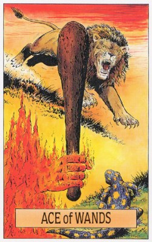
- 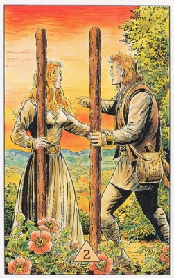
- 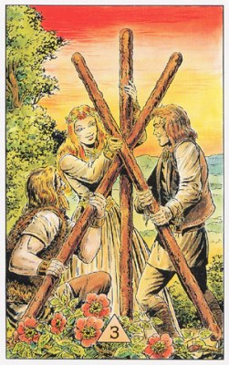

- 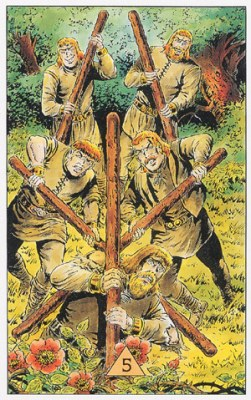
- 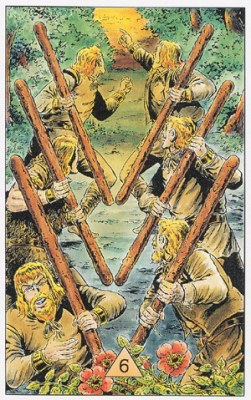
- 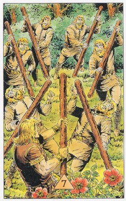
- 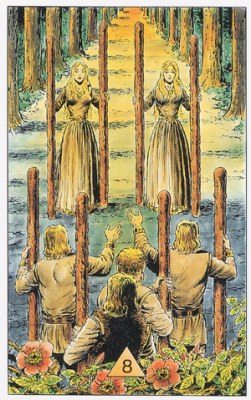
- 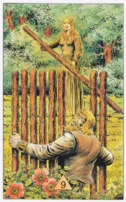
- 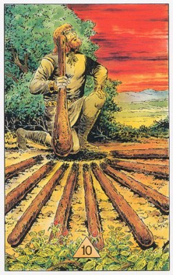
- 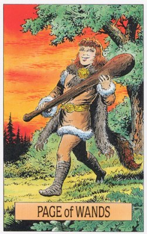
- 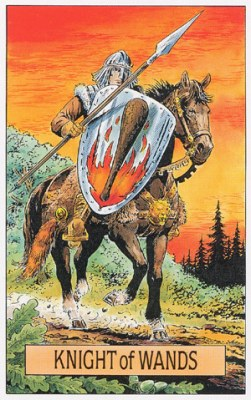
- 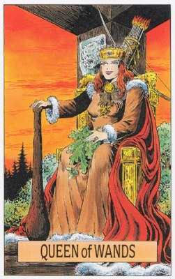
- 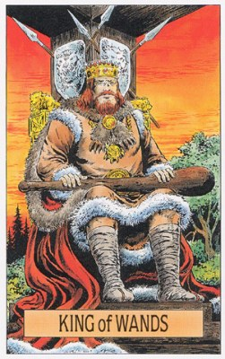
Туз Жезлов
П: Невыполненные обещания. Прерванный рост. Перечеркнутые надежды. Задержка действия. Трудности. Начало неприятностей. Фальстарт. Преждевременные действия. Отмена. Напрасно растраченная энергия. Расстройство планов. Неправильно направленные усилия. Эгоизм. Отсутствие заинтересованности или инициативы. Застой. Скука. Непродуктивность. Напрасные надежды. Плохое планирование. Даже не попытались. Тщетность. Приостановленный прогресс. Безрезультатность. Бессилие. Быть неподатливым. Быть слишком требовательным. Отсутствие идей. Сплошные разговоры и отсутствие действий. Обещания, обещания, обещания!
Люди: Первопроходцы. Изобретатели. Предприниматели. Авантюристы. Инициаторы. Творческие и созидающие личности.
П: Те, кто обещают, но, как правило, ничего не выполняют. Нечестолюбивые, непродуктивные, неспособные люди. Упрямые и неподатливые люди, проявляющие эгоизм, чрезмерную придирчивость, неустойчивость.
Урок: Это карта воображения, творческой энергии и инициативы, она напоминает нам о том, что все мы обладаем большим потенциалом.
П: Будьте осторожны — внимательно оценивайте и изучайте ситуацию, в которой вы оказались. Один эгоистичный поступок может испортить новое деловое предприятие, а другие непредвиденные обстоятельства могут затормозить ваши дела. Возможно, вам недостает энергии, чтобы довести проект до конца.
Работа: Осознание призвания, реализация интересов, сложное задание, честолюбие, сильная мотивация и энтузиазм.
П: Отсутствие энтузиазма и вдохновения, истощенность.
Сознание: Раскрытие сил, убеждений и воли, внутренний рост, самопознание и самосознание.
П: Пессимизм.
Отношения: Живое и плодотворное партнерство, притирание, доброта и любовь, возрастание привязанности, понимания, взрывы темперамента и вспышки страсти. Любовь с первого взгляда, сильное половое влечение к новому знакомому. Секс. Зачатие ребенка.
П: Нехватка страсти, пассивный этап, длительный застой. Лучше ничего не делать. Ждать.
Медицина:
П: Болезни протекающие с сильной болью, наступающие неожиданно и так же уходящие. Травмы, вывихи но не переломы. Ампутирование конечности. Импотенция. Бесплодие. Стерилизация. Выкидыш. Аборт.
4 + П 1Ж + Звезда или Умеренность - ампутация руки или ноги соответственно.
Расклад Путь.
Так же, как и другие Тузы, Туз Жезлов олицетворяет возможности, открывшиеся перед нами, — или нам еще предстоит открыть их. Туз масти Жезлов обозначает предприимчивость, смелость и готовность пойти на риск, а также вдохновение, энтузиазм и раскрытие личности, причем в важнейших составляющих. Учитывая, что Жезлы соответствуют стихии огня, к этим составляющим можно смело отнести укрепление воли, убеждений и моральных принципов, а также другие процессы внутреннего созревания и роста. Таким образом, в целом Туз Жезлов символизирует жизнеутверждение, оптимизм и радость жизни. Хотя, впрочем, в некоторых случаях указывает на недостаток терпения.
ПОЗИЦИЯ 2: Задуманное вами дело и в самом деле обещает неплохие шансы для развития, так что можете браться за него со всей душой. Вероятно, вы и сами понимаете, что оно может иметь большое значение для развития вашей собственной личности. Вам остается лишь тщательно рассчитать и обдумать, как и каким образом, вы можете использовать эти свои шансы.
ПОЗИЦИЯ 7: Внимательно проверьте, достойно ли вас то дело, за которое вам предстоит взяться. И, если да, постарайтесь использовать возможности, которые открываются для вас благодаря этому. В настоящий момент вам требуются оптимизм, мужество и убежденность в правоте начатого дела. Если вам удастся найти их в себе, вы сможете убедить в этом и других.
ПОЗИЦИЯ 3: Вы почувствовали, что это новое для вас дело могло бы сыграть большую роль в вашей жизни. И уже понимаете, что его успех зависит только от вашей предприимчивости и выносливости. Готовы ли вы использовать этот шанс, чтобы дать развиться в себе этим качествам?
ПОЗИЦИЯ 6: Соберитесь с духом и приступайте к своему делу решительно и уверенно. Перспективы у вас самые благоприятные. Станьте движущей силой этого доставшегося вам дела, и тогда благодаря нему вы сможете достичь своих целей.
ПОЗИЦИЯ 4: До сих пор вы действовали, как человек, убежденный в правоте своего дела, не позволяя никому усомниться в своей готовности довести его до конца. Вы продемонстрировали всем, что в нем таятся величайшие возможности роста для всех его участников. Однако уверены ли вы, что у вас хватит терпения и выдержки довести его до конца?
ПОЗИЦИЯ 5: Не стесняйтесь своего честолюбия и темперамента. Энтузиазма у вас хватает, сил тоже, так что приступайте с Богом к задуманному делу. И - смелее, смелее ! Пусть все знают, что вами движет некая высшая сверхзадача, и что вас нельзя подбить ни на какие сомнительные сделки.
РАБОТА: Нам открывается возможность узнать, в чем заключается наше призвание, а тем самым и реализовать, наконец, свои интересы, таланты и способности. Диапазон значений этой карты простирается от поручения нам сложного, блестящего и самого "нашего" задания по месту нашей непосредственной работы до уникального шанса заявить о себе там, куда мы прежде не могли иметь доступа. В любом случае она свидетельствует о честолюбии, чрезвычайно сильной мотивации и энтузиазме по отношению к предстоящему делу.
СОЗНАНИЕ: На уровне сознания эта карта означает период, когда все наши силы, убеждения и наша воля получает свое полное раскрытие. Это — время внутреннего роста, самопознания и самосознания.
ЛИЧНЫЕ ВЗАИМООТНОШЕНИЯ: Живое, плодотворное партнерство, время "притирания" друг к другу, возможность создать сердечный, по-человечески добрый союз или же внести доброту и любовь в союз уже устоявшийся (хотя и несколько прискучивший). В любом случае эта карта обозначает неуклонно возрастающую привязанность друг к другу, хорошее взаимопонимание и стремление предпринять что-нибудь совместно. А поскольку Туз Жезлов — это, что ни говори, стихия огня, тут могут происходить взрывы темперамента и вспышки страсти, однако все должно обойтись без трагических последствий.
Туз жезлов - волнующий шанс.
И однажды наступил день, когда риск остаться в почке стал сильнее, чем риск расцвести. (с) Анаис Нин.
Вопросы для медитации.
Принимаю ли я условия, которые предлагает мне жизнь? Насколько я готов рисковать, чтобы использовать возможность развиваться?
Отношения.
Успокойте свое сердце. Используйте шанс для того, чтобы получить увлекательный опыт.
Будущее.
Будьте внимательны. У вас есть шанс, который вам нужно использовать.
В кризисе.
Признайте, что в вашем кризисе заложен шанс для роста и решения проблемы.
Если нечем заняться.
Оглянитесь вокруг в поисках увлекательного удивительного случая. Рискните. Совершите нечто волнующее, захватывающее.
Аффирмация.
Кто, если не я? Когда, если не сейчас?
1. Исходная ситуация. В данный момент у вас есть возможность: Исполнить желаемое. Достичь чего-то посредством смелости и готовности рисковать. Делать что-то с огромным интересом и энтузиазмом. Двигаться в направлении реализации себя и своих способностей. Сейчас у вас есть возможность смело и решительно проявить инициативу.
2. Сейчас не время. Искать новые возможности для самореализации. Действовать с помощью силы и оказывать нажим. Проявлять амбиции и характер. Стараться изо всех сил. Рисковать.
3. Сейчас важно. Воспользоваться возможностью выразить себя, реализовать свои способности. Собраться с духом и начать осуществлять свои планы. Заразить других своим энтузиазмом. Развивать динамичность, набирать обороты. Пойти на риск.
4. Результат. Приток жизненной энергии. Яркое проявление в деле. Многообещающее начало, инициатива. Самореализация. Преисполнитесь энергии и будьте готовы пойти на риск.
Возможности, предприимчивость, смелость, готовность рисковать, вдохновение, энтузиазм, укрепление воли, убеждений и принципов, оптимизм, радость и недостаток терпения. Солнце и Марс. Начало нового проекта. Энергия. Рождение. Сила стихии Огня. Сила вдохновения. Переломный момент. Новый опыт. Свежие идеи. Новые начинания. Вдохновение. Новаторство. Оптимизм. Умение смотреть вперед. Изобретательность. Уверенность. Энтузиазм. Движение. Мужество. Оплодотворенная яйцеклетка. Всплеск творческой энергии. Приумножение творческой энергии. Старт. Силы, приведенные в движение. Творчество. Плодовитость. Замысел. Рост. Порождение. Мужская потенция. Движущая сила. Претворение мечты в жизнь. Фаллос. Сексуальная страсть. Волнующие возможности. Успех в новом предприятии. Инициатива. Энергия, направленная на достойные проекты. Новости о рождении. Важный деловой разговор. Хорошие новости. Возможно начало чего-то очень значительного.
Совет: Проявляйте инициативу и решительно двигайтесь вперед.
Предостережение: Не будьте восторженны, нетерпеливы и самонадеянны.
2 Жезлов
П: Опасения по поводу какого-то проекта. Задержки действий. Истощение ресурсов. Потеря интереса. Бездеятельность. Неправильный путь. Чувство разбитости, разочарование. Неспособность руководить своей энергией. Нереализованный потенциал. Проблемы с партнером. Отсутствие согласия. Переговоры, которые закончатся неудачей. Неверные ценности. Сомнения в себе. Чрезмерная гордость. Невнимание к деталям. Злоупотребление силой или богатством. Проблемы с собственностью. Плохие новости. Отложенная или отмененная поездка. Ничего не происходит.
Люди: Предприимчивые люди. Деловые партнеры. Гордые люди. Те, кто участвуют в переговорах. Те, кто находятся в состоянии ожидания ответа. Путешественники.
П: Скучные люди. Некомпетентные партнеры. Те, кто сомневаются в своих способностях. Гордые люди, создающие проблемы. Иногда юная девушка, которую постигли жизненные разочарования.
Урок: Мы можем построить крепкие и плодотворные отношения с другими людьми, но при этом должны самоутверждаться как личности. Смелость и предусмотрительность могут привести к положительным результатам.
П: Вся полезные усилия, затраченные на запланированный вами проект, могут ни к чему не привести. Будьте осторожны и терпеливы. Постарайтесь не допускать доминирования над собой других людей.
Работа: Безразличие и делание лишь бы отвязаться, нейтралитет, внутренняя пустота которая может стать депрессией. Надо проверить верны ли установки чтобы можно было обеспечить ясность.
П: Неумение сотрудничать, опасный риск, неспособность использовать возможности.
Сознание: Летаргия, безразличие и нейтралитет.
П: Противоречивые тенденции и пассивность из-за этого.
Отношения: Отступление и отсутствие чувств, отмирание союза. Нужно сделать выбор - либо разрыв союза либо сохранение.
П: Разногласия и неспособность наладить контакт с партнером.
Медицина:
П: Мелкие травмы, порезы, колотые и рваные раны. Разрыв и растяжение мышц. Опасность выкидыша.
4 + П 2Ж + П 13 - рана, которую надо зашивать.
Расклад Путь.
Эта карта соединяет в себе констатацию факта и в то же время вызов: она показывает, что мы хотим сохранить нейтральную индифферентную позицию, однако ситуация вынуждает нас высказаться прямо и недвусмысленно. Ситуации, которым соответствует эта карта, часто напоминают тупики. На объективном плане нет ничего, что мы могли бы считать причиной нашего проигрыша, поражения или дурного настроения, однако вот они налицо, и мы не знаем, что же именно выбило нас из колеи. Тут дело в том, что нам надоело участвовать во внешней жизни, и мы заперлись от нее в очередной башне из слоновой кости. Во всяком случае, мы добились того, что нашу душу ничто больше не тревожит, и нам уже все равно, что происходит с нашими близкими, не говоря уже о дальних. Выбраться из этого состояния можно, лишь дав своим представлениям стать убеждениями, а своим намерениям — делами, причем по-честному.
ПОЗИЦИЯ 2: До сих пор вы колебались, то ли не зная, на что решиться, то ли вам было все равно. Хотя на словах вы, конечно были за - за что уж именно, это ваше дело. Что ж, теперь действительно настала пора принять какую-то определенную сторону. в позиции 7 может подсказать вам, какую именно.
ПОЗИЦИЯ 7: Нейтралитет - это, конечно, хорошо, но только до поры до времени. Для вас теперь настала пора принять чью-то сторону, ясно и четко сформулировать свою позицию. Лишь такой бескомпромиссный шаг может помочь вам довести до конца ваше дело. Если вы не решитесь на это, вас ожидает длительный период застоя.
ПОЗИЦИЯ 3: Вы тут человек незаинтересованный, вам все равно, а возможно, вам просто нет ни до чего дела. Вы боитесь дать волю своим чувствам, потому что уже не раз переживали обиду или отказ, и не хотите повторения. Тем не менее, проверьте карту в позиции 6 — она скажет вам, во что стоит вмешиваться, а во что нет. Карта в позиции 1 покажет, чего следует ожидать в результате.
ПОЗИЦИЯ 6: Беритесь за дело, что называется, всей душой. Бросьте ловить рыбу в мутной воде, дайте волю своим чувствам и ощущениям. От вас сейчас требуется то, что первые христиане называли "обращением" - верую, Господи! Наше дело правое, мы победим: вот так и скажите всем, кто ждет, когда же вы, наконец, выскажете точку зрения.
ПОЗИЦИЯ 4: Вы, как говорится, уселись между двух стульев: определенного мнения по этому вопросу у вас нет. То есть, может быть, вы-то сами знаете, чего хотите, но другим это до сих пор не ясно. Что ж, сейчас для вас как раз настала пора занять определенную позицию, а какую именно — покажет карта в позиции 5.
ПОЗИЦИЯ 5: Соблюдайте нейтралитет, можете даже притвориться равнодушным. Не торопитесь высказывать свое мнение, дайте ему созреть. Вам обязательно нужно будет высказать свое мнение, только момент для этого настанет позже.
РАБОТА: Тут эта карта означает, что нам в действительности нет дела, чем мы занимаемся, и выполняем мы свою работу, лишь бы сбыть ее с рук. Она может означать также, что в очередном конфликте мы демонстративно занимаем абсолютно нейтральную позицию, или становимся на сторону большинства, потому что нам на самом деле все равно, кто там прав, а кто виноват. Расплачиваемся же мы за это внутренней пустотой, которая со временем может привести к полной депрессии. Эта карта настоятельно рекомендует нам проверить, верны ли до сих пор наши внутренние установки, чтобы мы могли обеспечить в своих делах полную ясность.
СОЗНАНИЕ: Здесь Двойка Жезлов показывает, что мы находимся как бы в состоянии некоторой летаргии, освободиться от которой сможем, лишь претворив свои слова в дело. Если уж мы заявляем что-то, то должны и действовать соответственно, чтобы наши слова не оставались пустым звуком.
ЛИЧНЫЕ ВЗАИМООТНОШЕНИЯ: Отступление на "заранее подготовленные позиции" человека, которому ничего не надо, который не испытывает никаких чувств. Это опасно. При этом наши слова могут быть полны страсти, однако за ними ничего не стоит. Опасность же состоит в том, что такой союз, лишенный внутреннего тепла, начинает отмирать. И тут Двойка Жезлов рекомендует нам, наконец, сделать выбор: либо мы делаем все ради сохранения союза, либо уж тогда сразу разрываем его, отпуская своего партнера.
2 жезлов - нерешительность.
И на промедление тоже нужно решиться. (с) Станислав Ежи Лец.
Вопрос для медитации.
В чем я веду себя настолько нейтрально, что забываю про обязательства и теряю интерес?
Отношения.
Будьте дипломатичны, но не навязывайте себя. Будьте открыты в своем решении.
Будущее.
Раньше времени ничего не решится. В лучшем случае все останется на своих местах, однако есть риск развития патовой ситуации.
В кризисе.
Не стоит вести себя нейтрально. Лучше всего заявить о своих намерениях, но пока не принимать окончательного решения.
Если нечем заняться.
Оставьте все открытым. Поупражняйтесь в полном безразличии. Посмотрите фильм или трансляцию спортивного матча, не принимая сторону ни одной из играющих команд.
Аффирмация.
Сейчас не время принимать решение. Я сохраняю нейтралитет.
1. Исходная ситуация. Вы нейтрально относитесь к делу. Вы никак не можете определиться или решиться. Это дело вам наскучило. Отсутствие интереса. Вы решились, готовы к битве и настроены агрессивно. Вы "горите" этим делом.
2. Сейчас не время. Лицемерить, бросать слова на ветер. Избегать чего-то, делая вид, что вам неинтересно. Откладывать решение. Относиться нейтрально. Брать дело в свои руки и отстаивать свои интересы.
3. Сейчас важно. Не более чем заявить о своих намерениях. Предварительно изучить дело со всех сторон. Подождать и выработать свою собственную точку зрения. Изначально придерживаться нейтральной позиции или не браться за это дело. Проявить свой бойцовский характер.
4. Результат. Нейтральное отношение или стадия летаргии. Вы не хотите или не можете принять решение. Нерешительность и неопределенность. Ситуация, в которой вы можете проявить себя, активно и энергично взявшись за дело.
Желание сохранить нейтралитет, но ситуация вынуждает к обратному, внутренний тупик, желаний уйти от внешнего, запереться, равнодушие. Марс в Весах. Сотрудничество в новых действиях. Контролируемый риск. Начальные этапы проекта. Необходимость притормозить и посмотреть, как будут развиваться события. Отсутствие слишком активной деятельности. Сотрудничество. Совместный проект. Завершение первого этапа проекта. Искренние старания. Вера в будущее. Переход. Достижения. Честолюбие. Гордость. Собственность. Совместные творческие усилил. Денежное пособие. Энергичные действия. Рост. Инициатива. Подготовка к успеху. Нереализованный потенциал. Усердная работа может привести к процветанию. Новая перспектива. Новый деловой партнер. Успешные переговоры. Предвидение. Движение в нужном направлении. Ожидание ответа. Смена места жительства. Переезд. Путешествие. Куда мне идти отсюда?
Совет: Соблюдайте нейтралитет.
Предостережение: Будьте готовы не только на словах, но и на деле.
3 Жезлов
П: Замки на песке. Невежество. Непомерная гордость, не позволяющая принять руку помощи. Безрезультатные усилия. Задержка действий. Препятствия в творческом проекте. Творческий застой. Робость. Разочарование. Цели, которых сложно достигнуть. Корабли не приходят. Противостояние. Неосторожность. Дезинформация. Упрямство. Разочарование в достижениях. Низверженние с пьедестала.
Люди: Торговцы. Люди, которые занимаются коммерцией. Производители товаров. Соратники. Авторы. Члены корпораций.
П: Робкие люди, далекие от реальности. Равнодушные и черствые личности.
Урок: Не поздравляйте себя с успехом до тех пор, пока вы не проследите развитие каждого этапа своего предприятия на пути к его завершению. Для процветания нужен крепкий фундамент. Правильно используйте свои способности и стройте свой дом на твердом основании.
П: Небрежность или доверие, оказанное недостойному человеку, без внимания к деталям может все испортить. Вы распыляете, а не концентрируете свою личную энергию. Берегитесь чрезмерной гордости или надменности, поскольку такое поведение может привести вас к падению.
Работа: Поворотный пункт после которого свобода и возможность строить что-то свое, прочный фундамент и перспектива.
П: Многообещающий проект не оправдывает себя. Неудачные вложения. Нереальные планы. Медленное развитие проекта.
Сознание: Взошли на вершину и возможность передышки.
П: Излишняя самоуверенность. Жизнь в своем мире.
Отношения: Прочный союз.
П: Ненужный союз.
Медицина:
П: Ослабленный иммунитет, заразные болезни, заражение крови. Экзотические болезни (тропические и т.д.).
П 13 + П 15 + П 3Ж + П 21 - тропическая болезнь.
Расклад Путь.
Тройка Жезлов объединяет в себе два важных образа. Во-первых, это человек проделавший долгий и трудный путь и достигший, наконец, вершины, и, во-вторых, это тот, кому с высоты открылся широкий обзор окружающего мира. Прочный фундамент — наша опора, и перспектива светлого будущего, наша цель — вот два значения этой карты.
ПОЗИЦИЯ 2: Сейчас у вас под ногами твердая почва, опора, взгляд с которой дает полное и исчерпывающее представление о задуманном деле. И, что бы ни предлагала вам карта в позиции 7 относительно возможного пересмотра вашей позиции, постарайтесь сохранить оптимизм и уверенность в своей правоте.
ПОЗИЦИЯ 7: Не сомневайтесь в успехе, у вас под ногами твердая почва; смелее смотрите в будущее! Оно таит для вас широкие перспективы, новые знания и открытия.
ПОЗИЦИЯ 3: Вы ощущаете внутреннюю уверенность и знаете, что фундамент, на который вы опираетесь, достаточно прочен. Вы можете быть спокойны в отношении дальнейшего хода событий, даже если карта в позиции 6 покажет, что дело на какое-то время застопорится.
ПОЗИЦИЯ 6: Вам нужно подвести под это дело прочный фундамент (сотрудничая с другими), чтобы быть уверенным в успехе. Эта карта показывает, что благодаря этому дело ускорится, и дальнейшие перспективы будут самые благоприятные.
ПОЗИЦИЯ 4: Вы все тщательно продумали и уверены в успехе. Если карты в позициях 2 и 3 подтверждают, что эта уверенность не показная, а истинная, то можете и дальше следовать своим путем. Если же это только блеф, то лучше умерить свои аппетиты и последовать совету карты в позиции 5.
ПОЗИЦИЯ 5: Вы на верном пути. Дайте понять всем, что вы осведомлены обо всех деталях и прекрасно представляете себе суть дела. Действуйте смело, демонстрируя оптимизм и уверенность в успехе.
РАБОТА: Мы достигли некоего поворотного пункта, за которым начинается уже наша земля, принадлежащая только нам, где мы сами можем решать, что и как надо делать, и теперь мы можем строить свои собственные планы на будущее. Тройка Жезлов, как уже говорилось, объединяет в себе два аспекта — прочный фундамент и широкую перспективу.
СОЗНАНИЕ: Мы достигли вершины, с которой видны широкие горизонты. Теперь, когда мы совершили нечто важное в своей жизни, взошли на очередную вершину, мы можем дать себе передышку - и взглянуть вдаль, чтобы узнать, какая цель ждет нас впереди. То, что мы сумели достичь поставленной цели, придает нам уверенности в себе, и мы знаем, что сможем достичь и следующей цели.
ЛИЧНЫЕ ВЗАИМООТНОШЕНИЯ: Ваш союз построен на прочной, творческой основе, позволяющей смело планировать самое далекое будущее. Союзы, подчиненные этой карте, легки, надежны и богаты творческими потенциями. Если вы пока пребываете в одиночестве, эта карта означает, что вы уже заложили фундамент прочных отношений с другим человеком, и теперь остается лишь немного подождать, чтобы эти отношения реализовались.
3 жезлов - золотой горизонт.
Будущее нужно не предсказывать, а делать возможным. (с) Антуан де Сент-Экзюпери.
Вопрос для медитации.
В какой сфере жизни мне нужно оглянуться вокруг и порадоваться тому, что происходит?
Отношения.
Смотрите в будущее смело и уверенно. Вы можете доверять той устойчивой основе, на которую опираетесь.
Будущее.
Скоро вы встанете на твердую почву и увидите радужные перспективы.
В кризисе.
Осознайте, что вы достигли многого и у вас отличные перспективы. Наверное, вам нужно хотя бы раз заглянуть за горизонт.
Если нечем заняться.
Пойдите в горы, заберитесь на башню или найдите другую точку обзора, откуда можно приблизиться далекий горизонт.
Аффирмация.
Я чувствую под моими ногами твердую землю, которая держит меня. Я направляю свой взгляд на горизонт и в лучах золотого солнца радуюсь всему, что ко мне приходит.
1. Исходная ситуация. Вы стоите на прочной платформе. Перспективы воодушевляют. Вы знаете, что вы на правильном пути. Вы энергичны и полны уверенности в себе.
2. Сейчас не время. Уверенно смотреть в будущее. Верить в позитивное развитие. Осуществлять долгосрочные планы. Проявлять оптимизм и самоуверенность. Следовать своим импульсам.
3. Сейчас важно. Рассмотреть ситуацию в целом. Осознать, чего вы уже достигли, и отметить прекрасные перспективы. С уверенностью браться за исполнение намеченного. Открыть глаза и увидеть золотые дали. Подходить к делу с ощущением весны в сердце.
4. Результат. Новый, более позитивный взгляд на действительность. Убежденность, ясная точка зрения, прекрасные перспективы. Уверенность. Широта обзора, дающая возможность осознать свои цели. Приподнятое настроение, бодрость, сила.
Достижение вершины после долгого и трудного пути, обзор мира с высоты, прочный фундамент, перспектива светлого будущего. Меркурий во Льве в гармоничном аспекте с Сатурном. Оживленный бизнес. Новый проект. Начало успеха. Благоприятные первые результаты. Помощь в претворении планов в жизнь. Единомышленники в творческих вопросах. Обмен идеями. Возможности. Определение целей на будущее. Удовлетворение, хотя еще и предстоит дальнейшая работа в этом направлении. Скоро появятся свежие идеи. Новости о работе. Работа в команде. Переговоры. Новый проект. Новая работа. Отправление или отгрузка. Демонстрация своих товаров. Полезный совет. Поддержка и помощь семьи. Семена начинают прорастать. Партнерство дает положительные результаты. Командировки. Звучит заманчиво! Корабль заходит в гавань.
Совет: Проверьте и убедитесь, что основа у вас хорошая и позиции прочны, так что вы можете смело смотреть в будущее.
Предостережение: Не беритесь за дело, не убедившись, что у него есть фундамент и перспективы.
4 Жезлов
П: Задержка действия. Критика. Ненадежность. Плохое обслуживание. Разочарование. Нетерпимость. Чрезмерный консерватизм. Отступление. Ограничения. Неодобрение. Проблемы с собственностью. Потребность защититься от возможной потери счастья.
Люди: Отпускники. Счастливые и довольные собой люди. Те, кто вьют свое гнездышко. Люди, принимающие участие в общественных событиях, таких как бармицва, выпускной вечер и т. д.
П: Медлительные люди. Те, кто оказывают некачественные услуги.
Урок: В промежутке между периодами борьбы за свои отношения порадуйтесь своим позитивным достижениям. Научитесь всему, чему можно, у мира и стабильности. Будьте мягким, а не агрессивным — ибо и в мягкости есть сила.
П: При позитивном настрое вы добьетесь хороших результатов. Научитесь ценить преимущества обычной жизни и находить утешение в поддержке друзей и родственников.
Работа: Хорошая перспективная работа, хорошие условия и выполнение с удовольствием.
П: Пустые и безрезультатные действия, тяжелая физическая работа.
Сознание: Опыт и знания приобретенные ранее ценны, но нужно двигаться дальше.
П: Ограниченность мышления.
Отношения: Мир, безопасность, доброта и любовь.
П: Разочарование в партнере.
Медицина:
П: Воспаления мышц, атрофия, заболевания мышц не связанные с травмами, хроническая усталость, трихинильоз.
13 + КП + П 4Ж + 2Ж - трихинильоз.
Расклад Путь.
Четверка Жезлов соответствует периоду мира и покоя, во время которого мы раскрываемся навстречу жизни и ее радостям. Мы уверены в собственной безопасности, а поэтому готовы покинуть "крепостные стены" и выйти во внешний мир. Это означает общение, развлечение, удовольствие и радость жизни, а также раскрытие нашего "Я" ей навстречу, ощущение глубокой взаимосвязи с другими людьми.
ПОЗИЦИЯ 2: Вы взялись за дело уверенно и с радостью - и ожидаете, что так будет и дальше. Правы ли вы, покажет карта в позиции 1.
ПОЗИЦИЯ 7: Отбросьте все сомнения и колебания. Позиция у вас прочная, вам ничто не угрожает; поэтому смело беритесь за дело, и вы найдете много интересного. Период для вас вполне благоприятный, так что наслаждайтесь им, получайте удовольствие.
ПОЗИЦИЯ 3: Вы принялись за дело легко, и можно сказать, беззаботно, отбросив всякие предосторожности и меры безопасности. Карта в позиции 6 покажет, действительно ли ваш дальнейший путь столь безоблачен или вам все-таки следует поостеречься.
ПОЗИЦИЯ 6: Не прячьтесь от людей в свою "крепость", выйдите наружу и даже, так сказать, из себя. Радуйтесь жизни, наслаждайтесь ею в полной мере. Раскройте другим свое сердце, сделайте шаг им навстречу - и увидите, что они примут вас с радостью. Сейчас у вас чудесный период мира и покоя; пользуйтесь же им, и вы не пожалеете об этом.
ПОЗИЦИЯ 4: Вы показали себя человеком живым и увлекающимся. Дело за которое вы взялись с открытой душой, доставляет вам удовольствие, и вы ожидаете, что так оно будет и дальше. Что ж, если карта в позиции 1 и 5 не говорят об обратном, значит, вам и в самом деле не о чем беспокоиться.
ПОЗИЦИЯ 5: Отбросьте мрачные мысли, смотрите на вещи легче. Ступайте в "народ", общайтесь побольше с веселыми, жизнерадостными людьми. Сходите на танцы. Или пригласите гостей к себе, устройте праздник.
РАБОТА: Работа хорошая, перспективная, лишиться нам ее не грозит, условия труда нас вполне устраивают, так что дело свое мы делаем с удовольствием. Период удовлетворения от работы, сама работа приносит радость, и дело спорится. Впрочем, карта может означать и спокойный, без проблем, переход на другую работу или к новым обязанностям.
СОЗНАНИЕ: Опыт и знания, приобретенные нами ранее, были весьма ценны и полезны, но они уже сослужили свою службу, и теперь нам пора двигаться дальше, навстречу новому, говорит Четверка Жезлов. "Фундамент" у нас хороший, мы готовы непредвзято воспринимать новые вещи, поэтому следующий этап познания доставит нам истинную радость.
ЛИЧНЫЕ ВЗАИМООТНОШЕНИЯ : Безоблачный период мира и покоя. Мы испытываем чувство безопасности, защищенности, сохраняя при этом открытость души и относясь к окружающим с добротой и любовью. Мы предпринимаем что-то совместно с партнером, и это доставляет нам удовольствие, новые контакты и радость жизни.
4 жезлов - мир и радость.
Уже точно известно, что мы любим мир. Но мы не готовы принимать за него столько же страданий, как и за войну. (с) Джон Эндрю Холмс.
Вопрос для медитации.
Чувствую ли я себя желанным гостем в этом мире? Насолько открыто я двигаюсь от себя к другим?
Отношения.
Будьте сердечны и открыты. Бояться нечего. Идите к другим и скажите им: Добро пожаловать.
Будущее.
Вам предстоят ничем не омраченные мирные времена, когда вы почувствуете себя уверенно, устройте праздник и сможете наслаждаться жизнью вместе с другими людьми.
В кризисе.
Осознайте. что вы защищены и можете чувствовать себя уверенно. Откройте и идите навстречу делам или людям.
Если нечем заняться.
Устройте День открытых дверей или "праздник беззаботности". Пригласите друзей, родных и соседей.
Аффирмация.
Я чувствую себя уверенно и открыто иду навстречу миру.
1. Исходная ситуация. Вы радуетесь жизни сполна. Вы распахнули дверь своей кельи и радуетесь всему, что происходит. Вы приобрели новые контакты. Открытость. Гибкий подход к осуществлению планов. Вы предприняли важный шаг и создали некий порядок.
2. Сейчас не время. Надеяться на мирное существование. Покидать оберегающие вас стены. Ждать счастливого события. Быть беззаботным. Открыться и приветствовать других. Завершать дело или вносить в него ясность.
3. Сейчас важно. Уверенно и доверительно выйти из убежища. Быть открытым и беззаботным. Пребывать в отличном настроении. Приветствовать других. Обрести мир и гармонию.
4. Результат. Открытость. Стадия уверенности в себе и предвкушение чего-то нового. Радость и умиротворение. Возможность прояснить дело и\или завершить его.
Мир и покой, раскрытие, безопасность, выход в мир, общение, развлечение, удовольствие и взаимосвязь с людьми. Венера в 5 доме или Луна. Особый повод отметить очередной этап развития. Мир. Пропуск. Радость достижения. Знаменательное событие. Удовольствие. Благословение. Гармония. Счастливый и безопасный дом. Укоренение. Крепкие деловые отношения. Покупка дома. Успех. Закладывание фундамента для брака или серьезных отношений. Переезд в новый дом. Созревание плодов. Хороший урожай. Улучшение. Процветание. Наслаждение. Празднование. Продуктивность. Комфорт. Творческие занятия. Удовлетворение. Счастье. Праздники. Расслабление. Возможность нового романа. Брак. Медовый месяц. Бар-мицва или подобная церемония. Счастливый конец.
Совет: Будьте открыты по отношению к людям и идеям.
Предостережение: Вежливость должна быть не только внешней.
5 Жезлов
П: Нечестные тактики. Удар ниже пояса. Препятствия. Несогласия. Мелкие ссоры по пустякам. Проблемы с планами на поездки. Проблемы с заключением контрактов.
Люди: Любители соревнований. Спортивные команды. Открытые оппоненты. Поклонники боевых искусств. Судьи на соревнованиях.
П: Злобные или тайные враги. Закулисные оппоненты.
Урок: Даже если вы ощущаеге давление нарастающего стресса, обратитесь к внутренним запасам силы и восстановите ясность своего мышления. Откликайтесь на брошенный вам вызов и всегда выискивайте новые возможности в трудностях повседневной жизни.
П: Здесь показан не конфликт, а, скорее, мир и гармония. Ваши отношения стабильны и гармоничны, и жизнь предоставляет вам новые возможности, которые вы можете рассматривать как вызов.
Работа: Задача, конкурсное задание, дело более сложное чем те за которые брались раньше.
П: Юридические битвы. Крупные ссоры. Стресс Нездоровая конкуренция.
Сознание: Проблема или загадка, внутренняя сила.
П: Внутренний конфликт. Отсутствие веры в свою конкурентоспособность.
Отношения: Спорщики которые любят друг друга, некая борьба, совместная борьба за решение проблемы.
П: Злоба. Антипатия.
Медицина: Вены, артерии.
П: Переутомление плохо сказывается на вашем здоровье. Сложности с давлением крови. Прыжки давления. Тахи или бради кардия. Сужение вен (склерозирование), хрупкость сосудов.
Расклад Путь.
Пятерка Жезлов — это брошенный нам вызов, приглашение померяться силами, посоревноваться, проверка: хватит ли у нас силенок? Это отнюдь не связано с враждой или битвой не на жизнь, а на смерть. Нам предлагают попробовать свои силы — может быть, и вправду в каком-то состязании, споре, а может быть, и в некоем новом для нас деле. Силы для этого у нас есть, и нам просто представляется шанс применить их, так что опасаться серьезного поражения или ущерба нет причин, разве что при стечении целого ряда неблагоприятных обстоятельств. Шансы, какие предлагает эта карта, упускать не следует, потому что они дают нам возможность убедиться в своих способностях, осознать их.
ПОЗИЦИЯ 2: В этой ситуации вы усматриваете для себя экзамен, приглашение попробовать свои силы. Что ж, если карта в позиции 7 благоприятствует вам в этом, то идите и сдавайте свой экзамен, причем не откладывая.
ПОЗИЦИЯ 7: Вы - мастер своего дела, и теперь от вас требуется доказать свое мастерство. Если карта в позиции 1 предвещает успех, смело вступайте в конкурс и покажите все, на что способны. Принимайте вызов, рискуйте, сражайтесь! Ну а если не повезет – с достоинством отступите.
ПОЗИЦИЯ 3: Вам предстоит трудное испытание, и вы понимаете, что выдержать его сможете, лишь "выложившись" до конца. Стоит ли тратить на него так много сил? Об этом скажет карта в позиции 1,а позиция 5 покажет, с какого конца следует браться за дело и что оно даст вам.
ПОЗИЦИЯ 6: Постарайтесь понять, что соревнование и борьба - вовсе не то же самое, что конкуренция и война. Это - игра. Не допускайте же в себе раздражения и злости, чтобы дружеская потасовка не превратилась в ожесточенную драку.
ПОЗИЦИЯ 4: Ясно, что вы готовы принять вызов и пройти предложенное вам испытание. Шансы у вас и в самом деле неплохие. Так что только если карта в позиции 1 недвусмысленно предостерегает вас, будьте осторожны.
ПОЗИЦИЯ 5: Покажите всем - вы готовы "выйти на ринг", вы принимаете вызов, и что у вас достаточно спортивного задора, чтобы победить - ну, а, в крайнем случае, и чтобы достойно проиграть.
РАБОТА: Пятерка Жезлов означает задачу, нам предстоит решить; разумеется, она потребует от нас напряжения, но отнюдь не перенапряжения сил. Это может быть качественно новое, непривычное задание, или необычный объем или масштаб работы, на который мы прежде не замахивались; или многоходовая комбинация, требующая ловкости и сообразительности. Это — конкурсное задание, как в телевикторине, и к нему надо относиться как к игре, тренировке сил, а не браться за него с убийственной серьезностью.
СОЗНАНИЕ: Здесь эта карта означает проблему или загадку, над которой придется поломать голову, однако это поможет нам значительно продвинуться вперед по пути познания. В качестве примера можно привести те горячие споры и ожесточенные дискуссии, которые подростки ведут друг с другом и с взрослыми, шлифуя свой ум и постепенно вырабатывая собственные идеи и представления вместо прежних, навязанных другими людьми.
ЛИЧНЫЕ ВЗАИМООТНОШЕНИЯ: Семейство спорщиков, которые любят друг друга, но то и дело пререкаются или соревнуются в чем-то. Это не романтический союз двух нежных душ, а постоянная борьба. Впрочем, эта особенность может и не быть присуща союзу как таковому, а отражает лишь некий период в жизни партнеров. Или же им приходится совместно бороться за решение какой-то проблемы. Еще карта может указывать, что без споров союз быстро превратился бы в унылое болото, поэтому партнеры и поддерживают себя "в полной боевой готовности". Пример — союз главных олимпийских божеств, Зевса и Геры.
5 жезлов - состязание.
Используй свои таланты такими, какими они тебе даны. В лесу было бы очень тихо, если бы пели только те птицы, которые умеют это лучше всех. (с) Генри вам Дайк.
Вопрос для медитации.
В какой области я боюсь сравнений и в чем я готов проявить себя?
Отношения.
Наберитесь смелости, примите выхов или померьтесь силами с партнером.
Будущее.
Вам предстоит серьезное испытание на прочность, которого не стоит избегать. Покажите, на что вы способны, сделайте все, что в ваших силах. Сейчас важнее принять вызов, чем получить положительный результат.
В кризисе.
Рассмотрите кризис как шанс расти, созревать и показывать, на что вы способны. Примите сейчас вызов как состязание и покажите, что вы многое можете.
Если нечем заняться.
Займитесь спортом. Вы можете бегать, плавать, кататься на велосипеде - все это поможет вам быть в форме.
Аффирмация.
Я принимаю вызов. Я открыт для состязаний.
1. Исходная ситуация. Вы приняли вызов судьбы. Вы доказали свою силу. Соревнование требует от вас полной отдачи. Вы показываете, на что способны. Вам необходимо принять вызов. Вы амбициозны, возможно, даже высокомерны.
2. Сейчас не время. Активно браться за дело. Ввязываться в конфликт. Стремиться выстоять благодаря дополнительным усилиям. Испытывать свои силы. Заключать пари. Рисковать чем-то, рассчитывая на победу.
3. Сейчас важно. Активно искать решение проблемы. Выдержать испытание силы. Принять вызов. Использовать всю свою энергию. Проявить дух соревнования. Решиться на что-то необычное, революционное.
4. Результат. Состязание. Ситуация, в которой вам придется показать, на что вы способны. Истинный вызов, проверка на прочность. Выход за рамки ограничений.
Брошенный вызов, соревнование, проверка, спор, новое дело, силы для этого есть, нет причин опасаться, шанс не надо упускать. Марс в 5 доме. Внешний конфликт. Борьба. Соперничество. Потребность в самоутверждении. Зависимость от мужчин. Общение с людьми того же пола. Здоровая конкуренция. Утверждение. Вера в конкурентоспособность другого человека. Бурная молодость. Физическая деятельность. Спорт. Подвижные игры. Свой парень. Кулачные разборки. Препятствия. Время энергичных действий. Успех достигается путем упорных усилий. Споры. Препирательства. Агитация. Соревнование. Диссонанс. Сомнения в самом себе. Крупные ссоры. Ссоры по пустякам. Соперничество. Проблемы с законом. Драка без нанесения ран. Выяснение отношений. Боевые искусства. Раздражающие детали. Легкое раздражение. Досада. Неожиданные проблемы. Конфликт интересов. Слишком много дел, требующих безотлагательного рассмотрения. Потребность в расстановке приоритетов. Военные игры. Тестостерон. Активность гормонов. Территориальность. Задержка путешествия. Принцесса на горошине.
Совет: Не бойтесь помериться силами с другими, даже в новой для вас области.
Предостережение: Честолюбие не должно превращаться в беспардонность, а мастерство — в хвастовство.
6 Жезлов
П: Поражение. Успех задерживается. Это не победа. Отсрочка победы. Триумф ускользает от вас. Победа в битве, но поражение в войне. Преимущество соперника. Выигрывает другой. Вы не принимаете вызов. Бюрократизм. Повезет в следующий раз.
Люди: Победители. Люди, получившие признание.
П: Постоянно проигрывающие. Люди, которым никак не дается победа. Соперники. Человек у которого нет друзей, отшельник.
Урок: Настойчивые усилия вознаградятся, но старайтесь не зазнаваться слишком долго и не смотрите свысока на остальных. Научитесь принимать вклад других, которые готовы поддержать вашу работу и идеи. Цените друзей.
П: Ожидайте плохих новостей. Возможно, конкурент' окажется победителем за ваш счет. Ваш успех откладывается или пресекается, и то, к чему- вы стремились, начинает разваливаться.
Работа: Успех и признание в работе, сданный экзамен, овации, победа, повышение.
П: Провал. Потеря.
Сознание: Успех в поисках ясности, подьем, психология победителя, уверенность.
П: Отсутствие чувства значимости.
Отношения: Радостные переживания, новый чудесный союз, хорошая новость.
П: Неверность. Недостаток общения. Непонимание. Играть роль второй скрипки в оркестре. Меня не уважают!
Медицина: Кровь.
П: Плохая свертываемость крови. Слишком жидкая или густая кровь. Гематомы. Кровотечения.
Расклад Путь.
Шестерка Жезлов — это карта победы, успеха, славы и "всенародного признания", а от сюда и радости, удовлетворения. Если быть совсем точным, то она представляет собой обнародование успеха, провозглашение победы. Так что в обыденной жизни она может означать и просто хорошую новость, безо всякой помпы и парада. Как правило, эта карта показывает, что наш труд и наши усилия увенчаются успехом. Иногда это бывает и неожиданный "незаслуженный" успех.
ПОЗИЦИЯ 2: Вы уверены в успехе. Дело представляется совершенно "беспроигрышным", и вы ожидаете хороших новостей. Так ли это, или же вам лучше пересмотреть свою точку зрения, покажут карты в позициях 1 и 7.
ПОЗИЦИЯ 7: Делайте свое дело убежденно и уверенно. Вы на пути к успеху. Если ваш вопрос предполагает ожидание какого-либо известия или решения, то считайте, что результат положительный, причем даже сверх ожиданий.
ПОЗИЦИЯ 3: Вы были до сих пор настолько уверены в успехе, что не обращали внимания ни на какие предостережения и предзнаменования. Что ж, будем надеяться, что вы не ошиблись и не начали делить шкуру неубитого медведя. Проверьте карту в позиции 6: подтвердит ли она ваш оптимизм, или вам стоит всё-таки быть более осмотрительным.
ПОЗИЦИЯ 6: Можете радоваться: вы выиграли! Возможно, вы даже уже знаете об этом; а если нет, то эта новость дойдёт до вас очень скоро. Примите же её с благодарностью и не забудьте отметить, как следует.
ПОЗИЦИЯ 4: Вы вели себя так, как будто дело уже в шляпе и успех у вас в кармане. Не приняли ли вы желаемое за действительное? Проверьте карту в позиции 5! Если её предостережение покажется вам нелепым и противоречащим вашему убеждению и чутью (позиции 2 и 3), на всякий случай всё- таки готовьтесь к сюрпризам. Тем более что другие на вас так надеялись...
ПОЗИЦИЯ 5: Держитесь победителем. Демонстрируйте оптимизм и непоколебимую уверенность. Такая "установка" поможет вам добиться успеха. А потом не забудьте о благодарности и устройте банкет по поводу своего триумфа.
РАБОТА: Карта показывает, что в своей работе мы можем рассчитывать на успех и признание. Наш труд будет вознагражден и не пропадет даром — у нас сейчас успешный период. И этот успех не рядового масштаба, это высший балл за блестяще сданный экзамен, овации за речь или публичное выступление. Эта карта выпадает победителю на выборах, популярному артисту, вообще человеку, переживающему нечто радостное и интересное, а, говоря о вещах бытовых и приземленных — и тому, кого повысили в должности.
СОЗНАНИЕ: Эта карта показывает, что наши поиски ясности и смысла в какой-то проблеме увенчаются успехом. Это может значить и освобождение от утомительных дум и забот, которого мы долго ждали. Или период подъема, дающий такую уверенность в себе и своих силах, какой мы прежде никогда не испытывали. Отсюда еще одно значение: перемена в сознание, замена "психологии неудачника" психологией победителя.
ЛИЧНЫЕ ВЗАИМООТНОШЕНИЯ: Здесь эта карта победителя означает, что нам предстоят волнующие, радостные переживания: начало нового, чудесного союза или подъем к вершинам счастья в союзе, уже существующем. Эта карта показывает также, что нам удастся разрешить какую-то давнюю проблему, связанную с каким-то человеком или с вашими партнерскими взаимоотношениями. На бытовом уровне она может означать хорошую новость, приятное известие или звонок, которого вы, возможно, долго ждали.
6 жезлов - победа.
Тот, кто одерживает победу над другими, силен. Тот, кто побеждает самого себя, могуществен. (с) Лао Цзы.
Вопросы для медитации.
Способен ли я поверить в хорошую новость или я чаще недоверчив? Я - победитель?
Отношения.
Подходите ко всему без страха, легко, с уверенностью в победе. Ваша любовь расцветет.
Будущее.
У вас впереди полоса везения. Ожидайте хороших новостей, будьте готовы идти вперед других и сделайте ставку на победу.
В кризисе.
Сейчас у вас достаточно сил, чтобы предолеть кризис. Обратите внимание на хорошие новости и используйте эту фазу, чтобы закрепить успех.
Если нечем заняться.
Посмотрите по телевизору, на стадионе или на ипподроме, как празднуют победы, и отдайтесь ликованию. Сегодня вы и сами можете одержать победу.
Аффирмация.
Я сделаю это. Я верю в победу.
1. Исходная ситуация. Вас признали и похвалили. Вы получили хорошее известие. Благодаря удачному повороту вы заинтересованы этим еще больше. Ваши усилия увенчались успехом, вы победили. Ваши достижения позволяют вам быть в "первых рядах".
2. Сейчас не время. Преуспевать и праздновать триумф. Надеяться или ждать приятных новостей. Быть в центре внимания. Рассчитывать на победу. Превосходить то, что есть.
3. Сейчас важно. Довести дело до победного конца. Следовать путем успеха или выбрать его взамен прежнего. Поверить в себя и уверенно взяться за осуществление своих планов. Набрать темп. Воодушевиться. Укрепить уверенность в победе.
4. Результат. Некие хорошие новости или восторг. Успех и признание. Ваши усилия вознаграждены. Успешное исполнение намеченного. Окрыляющий успех.
Победа, успех, слава и признание, радость, обнародование успеха, хорошая новость, труд увенчается успехом иногда незаслуженным. Юпитер в 10 доме. Триумф. Завершение. Приветствие. Признание. Реабилитация. Реализация желаний. Мудрые решения. Успех. Уверенность в себе. Признание публики. Хорошие новости. Дипломатия. Состязание. Достижение. Решение проблем. Награда. Исполнение. Продвижение. Почести. Победа. Аплодисменты. Поощрение. Правильный состав. Сотрудничество. Лояльность. Помощь друзей.
Совет: Ставьте на свою победу! Настройтесь на победу.
Предостережение: Победив, не зазнавайтесь.
7 Жезлов
П: Враги сильнее и одержат победу. Спор будет проигран. Менее выгодная позиция. Недостаток. Победа другой команды. Уход от проблем. Отсутствие желания отстаивать свое мнение. Затруднения. Нежелание решать проблемы. Беспокойство по поводу какого-то решения. Упущенные возможности. Не брать быка за рога. Когда идти становится тяжело, я все равно продолжаю идти. Я скорее откажусь, чем буду бороться. Хуже, когда лают, чем когда кусаются. Самая неловкая встреча. Человек любит быть в обществе глупых людей. Интриги.
Люди: Люди, обладающие определенными преимуществами. Те, кто защищают свои позиции. Люди, пускающие события на самотек. Темноволосые дети.
П: Отчаянные трусы. Те, кто чего-то боятся. Люди, которые пускают события на самотек. Те, кто проигрывают.
Урок: Часто говорят: «Нерешительность губительна». Не позволяйте другим эксплуатировать вас и доверяйте своим внутренним резервам — своей творческой энергии и интуиции. Иногда нам всем нужно твердо придерживаться своих убеждений.
П: Не позволяйте другим людям эксплуатировать вас. Сохраняйте терпение и избегайте нерешительности.
Работа: Конкуренция, внедрение в рынок с жестоким соперничеством, нападки по работе, попытки поставить под сомнение профессионализм, наличие завистника стремящегося занять место. Но положение прочное и если будем бдительны то угрозы нет.
П: Вступление в борьбу, которая будет проиграна. Отступление перед трудностями.
Сознание: Резкая критика убеждений, жаркие дебаты, чтобы насолить нам. Нужна стойкость и твердость убеждений.
П: Пассивность. Неопределенность. Робость. Стыд. Неуверенность в себе. Отсутствие уверенности в чем-либо. Чувство уязвимости и подавленности. Трусость. Боязнь отказа. Страх. Страх перед будущим. Нерешительность.
Отношения: Отношения под угрозой, конфликт, вмешательство третьего, борьба за благосклонность партнера.
П: Уход от конфронтации.
Медицина: Кровь и голова.
П: Проблемы со здоровьем. Инсульты и другие болезни связанные с кровью в области головы и туловища. Нарушение мозгового кровообращения. Гипоксия. Повышенное внутричерепное давление. Солнечный удар. Анемия. Болезни спинного мозга.
Расклад Путь.
Семерка Жезлов означает, что мы подверглись нападению, что против нас выступают конкуренты, завистники или иные противники, причем они сильнее нас или их больше. Тем не менее, эта карта показывает, что шансы на победу у нас хорошие, потому что мы находимся в более выгодном положении. Поэтому её следует воспринимать как предупреждение: будь ловок и бдителен, чтобы не утратить своего позиционного преимущества. Само собой, что о настоящем, физическом нападении речь здесь идет редко; чаще всего это чье-то вмешательство в наши частные или даже личные дела, попытка лишить нас чего-либо или помешать чего-то добиться.
ПОЗИЦИЯ 2: Вас вынуждают обороняться или вступить в борьбу, или же вы просто знаете, что своими действиями вызываете конфликт. Однако у вас есть преимущество перед другими. Будьте же осмотрительны, чтобы не утратить его. Карта в позиции 1 или 7 подскажет вам, какую стратегию лучше выбрать.
ПОЗИЦИЯ 7: Вам придется отстаивать свои позиции перед лицом крайне недолюбливающего вас, и, возможно, превосходящего противника. Проверьте, какими преимуществами и резервами вы обладаете, и постарайтесь применить их с максимальной пользой для вас. Не забудьте учесть и свои слабые стороны. У вас есть все шансы победить или сохранить свои позиции.
ПОЗИЦИЯ 3: Вы ощущаете угрозу или чувствуете чью-то зависть, неодобрение, сопротивление. Что ж, будьте готовы принять бой. Как вам следует вести себя в этом конфликте или, может быть, вам лучше избежать его, покажет карта в позиции 6.
ПОЗИЦИЯ 6: Будьте готовы к тому, что затеянное вами дело вызовет провокацию или конфликт, не говоря уже о зависти и клевете. Продемонстрируйте непоколебимую решимость бороться до конца и готовность ответить ударом на удар. И если вы будете внимательны и осторожны, то сможете успешно выдержать бой даже с превосходящим противником.
ПОЗИЦИЯ 4: Вы ни от кого не скрывали, что знаете об интригах против вас, но отступать не собираетесь и готовы отстаивать свои позиции даже в самой трудной ситуации. Следует ли вам и дальше бороться в одиночку или, может быть, лучше пойти на мировую, покажет карта в позиции 5.
ПОЗИЦИЯ 5: Покажите, что вы готовы к борьбе, что у вас хватит решимости настоять на своем и не отступить. Осознайте свои преимущества в этой борьбе и используйте их, чтобы покончить с противниками одним ударом.
РАБОТА: Здесь эта карта означает главным образом конкуренцию. Мы внедряемся в рынок, на котором царит ожесточенное соперничество, или стремимся получить место, на которое претендует несколько человек. Еще эта карта означает чьи-то нападки на нас по работе или попытку поставить под сомнение нашу квалификацию. В некоторых случаях она указывает, что у нас есть завистник, стремящийся занять наше место. Но, так или иначе, положение у нас прочное и, если мы будем бдительны и не дадим лишить себя своих преимуществ, то нам ничто не грозит.
СОЗНАНИЕ: Наши взгляды и убеждения подвергаются резкой критике; возможно, нам пришлось или придется участвовать в жарких дебатах. И, хотя в этих дебатах мы можем найти для себя и кое-что полезное, ведутся они не ради поиска истины, а чтобы насолить нам и заставить нас замолчать. Так что от нас в данной ситуации требуются скорее стойкость и твердость убеждений, чем готовность к диалогу и желание учиться у других.
ЛИЧНЫЕ ВЗАИМООТНОШЕНИЯ: Наши отношения с партнером находятся под угрозой. Это может быть ваш с ним конфликт, хотя чаще всего сюда вмешивается кто-то третий. Или есть партнер пока "не Ваш", и вы еще только беретесь за его благосклонность эта карта может означать, что у вас могут быть соперники (соперницы). В таком случае она дает совет: отнеситесь к этой конкуренции вполне серьезно, подойдите к делу с умом, и успех будет на вашей стороне.
7 жезлов - отстаивание своих прав.
Кто хочет осуществить свою волю, должен говорить тихо. (с) Жан Жироду.
Вопросы для медитации.
Придерживаюсь ли я своей точки зрения? Осознаю ли я враждебное отношение ко мне?
Отношения.
Мужественно защищайте себя и свою любовь и решительно отражайте нападение извне.
Будущее.
Вам придется смириться с завистью, недоброжелательством и нападками со стороны других. Если вы готовы решительно отстаивать свои позиции, то успешно сможете противостоять большинству.
В кризисе.
Не позволяйте другим сомневаться в вашей позиции. Отсаивайте ее.
Если нечем заняться.
Сделайте что-то для себя, даже если это противоречит интересам других. Защитите себя или посетите курс самообороны.
Аффирмации.
Я отстаиваю свои интересы.
1. Исходная ситуация. Вас вынуждают драться. Вы защищаете свою территорию. Вы были готовы к битве и отвоевали свои позиции. Вы ясно выразили свою точку зрения и действовали соответственно. Вы мужественно защищаете себя. Вы оказались объектом зависти, или кто-то на вас обиделся. Вы проявили смелость.
2. Сейчас не время. Защищаться и пытаться отвоевать свою долю. Ссориться. Готовиться к бою, отстаивать свои позиции и самоутверждаться. Избегать споров и конфликтов. Совершать героический поступок.
3. Сейчас важно. Действовать смело, опираясь на собственное мнение. Защищать то, что уже достигнуто. Постоять за себя. Энергично возражать большинству. Смело выражать себя, рисковать, отважиться на что-то.
4. Результат. Конфликт, который будет продолжаться до тех пор, пока вы воспринимаете его всерьез. Ситуация, в которой вы столкнетесь с завистью и обидой. Стадия самоутверждения. Проверка на смелость.
Нападение конкурентов, завистников или других противников, их больше и они сильнее, попытка помешать чему-то, шансы на победу есть за счет выгодной позиции и ловкости. Будь ловок и бдителен. Меркурий и Марс в аспекте с Сатурном. Противостояние. Нападки врагов, но есть силы для победы. Яростное обсуждение, дискуссия. Занять нужную позицию. Стойко защищаться от сил оппозиции. Бороться, чтобы устоять на вершине. Успех в соревнованиях и конкуренции. Вопросы во главе угла. Стоять на своем. Укрепление положения. Преимущество. Неустрашимость. Храбрость. Сила в несчастье. Занимать главенствующее положение. Уверенность в себе. Утверждение. Удачное завершение. Стойкость. Преданность. Вызов. Конфронтация. Споры. Противостояние. Борьба. Затруднительная ситуация. Конфликт. Изменения в карьере. Внутренняя сила. Удачное преодоление. Изучение. Обучение. Литература. Лекции. Решительность. Настойчивость. Чувство цели. Настойчивость вопреки неприятностям. Взять быка за рога. Обладание преимуществами в определенной ситуации. Стиснуть зубы. Когда идти становится тяжело, я все равно продолжаю это делать. Я скорее буду бороться, чем откажусь. Несмотря ни на что. Выше голову. Один день за один раз. Мы все преодолеем.
Совет: Отстаивайте свою точку зрения энергично и последовательно.
Предостережение: Не стоит недооценивать ваших недоброжелателей.
8 Жезлов
П: Слишком высокая скорость. Преграда. Выход из-под контроля. Давление. Спешка. Плохо обдуманные решения. Стремительные действия. Слишком быстрый шаг. Кража. Оппозиция. Борьба. Неприятные новости. Непонимание. Растрата. Изгнание. Стремление ускорить результаты. Задержка новостей или сообщений. Отмененная или отложенная поездка. Проблемы с транспортом. Планы не осуществляются. Подросток, которого постоянно поучают. Возможность насилия. Вы суетитесь, как курица с отрубленной головой. Поспешишь – людей насмешишь. Не могу справиться. Остановите Землю: я хочу сойти. Почему ты спешишь? Кармические долги в области действий.
Люди: Те, кто в пути.
П: Те, кто торопится в никуда. Люди, оказывающие давление. Люди, от которых можно ожидать нападения с применением физического насилия.
Урок: Терпеливо ожидайте, как будут развиваться события, а не неситесь безрассудно вперед. Когда вам предлагают различные варианты, тщательно продумывайте все последствия своих решений, чтобы эти решения отвечали конкретным ситуациям.
П: Карта говорит об уязвимости, ревности, насилии, ссорах и спорах в семье. Послание, которое вы ждете, не придет.
Работа: Осуществление ожиданий в самые скорые сроки (как хорошие так и плохие), ускорение темпа, неожиданный успех.
П: Потеря работы. Забастовка. Увольнение.
Сознание: Ускорение процесса познания.
П: Чрезмерная настойчивость. Импульсивность. Ненадежность. Зависть к профессиональным успехам.
Отношения: Оживление, новый союз, сюрприз.
П: Расторгнутая помолвка.
Медицина: Сердце.
П: Миокардит, тахикардия, смещение оси сердца. Аритмия. Кардиостимулятор.
П 19 + П 13 + П 8Ж - Нужен кардиостимулятор.
Расклад Путь.
Основное значение этой карты — время. Это — единственная из всех 78 карт, ясно указывающая, что события произойдут в самом ближайшем времени. Но у нее есть и более глубокое значение, она показывает, что что-то меняется, что-то носится в воздухе и наступит скорее, чем мы ожидаем, и что этот процесс уже начался, даже если мы этого пока еще не заметили. При этом Восьмерка Жезлов предвещает по преимуществу благоприятные события, добрые вести или приятные сюрпризы.
ПОЗИЦИЯ 2: До сих пор вам казалось, что события развиваются достаточно быстро и успеха осталось ждать уже недолго. Не исключено, однако, что это была лишь иллюзия, и что подлинные события еще не начались. О том, что же происходит в действительности, вам скажут карты в позициях 1 и 7.
ПОЗИЦИЯ 7: Надеюсь, вы уже понимаете, что назревают некие события, что "процесс уже пошел", и что все произойдет даже скорее, чем вы ожидали. В принципе для вас все обстоит благополучно, все будет так, как вы хотели, если карта в позиции 1 не предупреждает о какой-либо опасности.
ПОЗИЦИЯ 3: Вы сами чувствуете, что дело сдвинулось, наконец, с мертвой точки, что важные события уже приближаются и что ваши ожидания очень близки к осуществлению. Правы ли вы, покажут карты в позициях 1 и 6.
ПОЗИЦИЯ 6: Будьте готовы к тому, что ожидаемые вами события наступят в самое ближайшее время. Если вы ждете новостей или известий, то можете быть уверены, что они уже в пути. Если не уверены в их характере, то можете быть спокойны: ваши надежды осуществятся, - если, конечно, карта в позиции 1 этому не противоречит.
ПОЗИЦИЯ 4: Вы действовали быстро и уверенно, чем успели смутить свое окружение. Сами-то вы не сомневаетесь, что желанные события вскоре произойдут, перемены наступят, или, по крайней мере, готовы приветствовать их. Однако проверьте карты в позициях 1 и 5: не пора ли изменить свое отношение к происходящему?
ПОЗИЦИЯ 5: Докажите свою заинтересованность в назревающих переменах. Считайте, что они уже начались. Постарайтесь и сами ускорить их, и будьте готовы к тому, что они наступят очень скоро.
РАБОТА: Если у нас были определенные планы или ожидания, связанные с работой, то они осуществятся в самом ближайшем будущем; если же это были опасения, то осуществятся, увы, именно они. Она говорит также о том, что этот процесс готовился очень долго, и результаты уже близки, или что его темп неожиданно ускорился, так что нам и надо срочно готовиться к его окончанию, хотя мы предполагали, что у нас впереди еще достаточно времени. Часто эта карта означает неожиданный успех — в поисках нового поприща, новых связей или контрактов.
СОЗНАНИЕ: Тут Восьмерка Жезлов означает, что наш процесс познания ускоряется, что что-то носится в воздухе, и хотя мы получим информацию из неожиданного источника, она, тем не менее, значительно поможет расширению нашего кругозора. Это — живая, гибкая карта, указывающая на спонтанный характер происходящих изменений и довольно часто означающая, что застывшие, закоснелые представления приходят в движения.
ЛИЧНЫЕ ВЗАИМООТНОШЕНИЯ: В плане личных отношений она означает оживление и новые стимулы. Это может быть скорое заключение нового, необычного плодотворного союза (партнерства), или положительное развитие союза уже существующего. И только в случае, если все остальные карты расклада предвещают неприятности, нам следует ожидать неприятных сюрпризов.
8 жезлов - новости.
Нужно считаться со всем, в том числе и с прекрасным. (с) Автор неизвестен.
Вопросы для медитации.
Открыт ли я новым живым импульсам? Что даст мне новый толчок?
Отношения.
Стрелы Амура летят по воздуху. Если вы не отойдете в сторону, они поразят вас. Время ожило и понеслось вперед. Вас ждет хорошая новость и очень скоро.
Будущее.
Ощутите новые живые импульсы. Развитие приходит сейчас быстрее, чем вы думаете.
В кризис.
Нечто, что никак не могло сдвинутсья с места, наконец пришло в движение. В воздухе витают хорошие новости - благодаря им вы найдете верное решение.
Если нечем заняться.
Сделайте что-то, что даст вам ощущение легкости и быстроты, например, покатайтесь на скейте, займитесь виндсерфингом или запустите воздушного змея.
Аффирмация.
Хорошие новости уже в пути. Моя жизнь получает новый импульс.
1. Исходная ситуация. Машина запущена. Нечто новое витает в воздухе и вскоре спустится на землю. Дело набирает обороты. Вскоре вы получите известие. Вас осенила гениальная идея.
2. Сейчас не время. Ждать новостей. Надеяться на быстрое достижение своих целей. Осознавать, что нечто новое уже на подходе. Ожидать активного развития событий, продвижения дел. Ждать быстрого разрешения ситуации.
3. Сейчас важно. Быть готовым к чему-то новому. Смириться с тем, что все пройдет гораздо быстрее. Осознать то, что уже на подходе. Позволить себе удивиться, быть готовым к сюрпризу. Проявить гибкость ума и "выдать" интересную идею.
4. Результат. Новость. Быстрые перемены. Новый импульс, толчок. Удивление, живость. Хорошая, возможно, оригинальная идея.
Время, события произойдут в самое ближайшее время, что-то меняется и наступит скорее, чем ожидается, благоприятные события, добрые вести. Активные действия. Движение вперед. Ровный и быстрый прогресс. Скорые результаты. Быстрый шаг. Путешествие без помех. Активность, Движение. Конец отсрочкам. Срочность. Волнение. Ярость. Ускорение. Новые идеи. Опыт, способствующий расширению кругозора. Предложение новой работы. Продвижение вперед после вынужденной задержки. Быстрое достижение целей. Общение. Новости. Хорошие сообщения. Поездки. Отпуск. Командировки. Внезапная поездка. Путешествие по воздуху. Перелет. Передвижение. Порывы творческого- вдохновения. Продуктивность. Новые друзья. Неожиданный роман. Стрельба из лука. Занятия атлетикой. Физические упражнения. Запуск всех систем. Все по-моему. Отработанные кармические долги в области действий.
Совет: Ждите хороших новостей и благоприятных перемен.
Предостережение: Одна ласточка весны не делает.
9 Жезлов
П: Несоответствующая защита. Потеря прав. Плохая защита. Неполноценность. Непрактичность. Опасность. Чрезмерное желание защищаться. Страх показаться слабым или беспомощным. Изможденность. Несчастье. Нереальные планы. Потеря. Заминка. Препятствие. Задержка действий. Недостаточная подготовка. Невыгодная позиция. Отсутствие инициативы. Неудачная попытка защититься. Неумение постоять за себя. Упрямство. Негибкость. Потеря имущества. Позиция, непригодная для обороны. Удар ниже пояса. Я не смотрел. Не готов.
Люди: Защитники. Хорошо защищенные люди. Военные. Люди, которые борются за свои права и отстаивают свою репутацию.
П: Те, кто находятся в меньшинстве. Те, кто постоянно проигрывают. Запасные игроки. Люди с комплексом неполноценности. Люди с плохим иммунитетом.
Урок: Черпайте силу из своих прошлых обид — из прошлых эмоциональных трудностей и враждебной критики. Вы станете еще более изобретательным(ой), если научитесь справляться с напастями. Доверяйте запасам своей силы и характера, ибо это поможет вам справиться с трудностями.
П: Вы безынициативны, неподготовлены и уязвимы. Вы отказываетесь отстаивать правое дело и сгибаетесь перед лицом опасности.
Работа: Сопротивление нововведениям, ощущение угрозы, опасения, перенесение прошлых поражений на теперешнее, хотя есть достаточно сил чтобы одолеть это. Нужно побороть страх.
П: Понижение в положении.
Сознание: Напрасная оборона от нового, перфекционизм, уверенность что лучше перебдеть чем недобдеть.
П: Беспечность. Глупая оборонительная позиция. Слабость. Трусость. Неумение постоять за себя. Безразличие к людям, расчетливость.
Отношения: Страх что обидят или заденут старые раны, панцирь, самоизоляция, озлобление и ожесточение, стремления закрыться от мира, хотя там больше нет никаких опасностей.
П: Отказ от компромиссов. Подозрительность. Безразличное отношение.
Медицина: Крепкая иммунная система. Сопротивление болезням и инфекциям. Быстрое выздоровление.
П: Болезнь. Травма. Ослабленная иммунная система. Плохое здоровье. Заболевания мозга не связанные с кровью и оболочек мозга. Травмы или воспаления мозга или его оболочек.
4 + П 13 + П ДЖ + П 9Ж - нужна трепанация черепа.
Расклад Путь.
Девятка Жезлов означает упрямство, сопротивление какой-либо ситуации или событию, от которых мы ожидаем лишь неприятностей. При этом она говорит, что никакой угрозы, а самом деле нет, а есть лишь наши воспоминания о прежних неприятностях, откуда и наше теперешнее «оборонительное» состояние. Она олицетворяет состояние души, которое в сказках называют «холодным сердцем». В переводе на житейский язык это означает, что мы ощетиниваемся всеми иглами и противимся любым переменам, хотя и догадываемся, что они могут быть очень важны для нашего дальнейшего развития. Хотя иногда она может означать и нечто прямо противоположное — если мы, например, сделали решающий шаг и закрыли за собой все двери, могущие вести к отступлению. В таком случае эта карта имеет позитивное значение, однако указывает и на одну допущенную нами ошибку: мы позорно сбежали от ответственности за свое прошлое из страха, что оно может нас настигнуть. Для того чтобы от него освободиться, нужно окончательно отпустить от себя свое прошлое, превратить его в фундамент наших дальнейших преобразований, вместо того чтобы чувствовать себя его заложником.
ПОЗИЦИЯ 2: До сих пор вы занимали «оборонительную» позицию, отвергая любые новые предложения, представления и идеи. Вы опасались за свою безопасность, действуя по принципу «лучше перебдеть, чем недобдеть». Настала пора понять, что на самом деле вашей безопасности ничто не угрожает. Это воспоминания о прошлых неприятностях не дают вам двигаться вперед с открытой душой.
ПОЗИЦИЯ 7: Ваш теперешний план может вновь столкнуть вас с проблемами, от которых, как вы думали, уже давно избавились. Поэтому не слушайте советчиков и доброжелателей, не поддавайтесь никаким искушениям. Будьте непреклонны, даже если вас станут обвинять в упрямстве и тупости.
ПОЗИЦИЯ 3: Вам кажется, что кто-то или что-то угрожает вам, и вы возводите вокруг себя настоящие крепостные стены. Поймите, что тем самым вы отказываетесь и от вещей полезных и важных, закрывая им путь к вашему «Я». Попробуйте все-таки снять оборону, открыться, хотя бы постепенно. Тогда вы точно убедитесь, что никакой угрозы больше не существует.
ПОЗИЦИЯ 6: Даже если вы считаете, что вам ничто не угрожает, вам все-таки следует принять меры предосторожности и быть начеку. Ваши старые раны еще не зажили, Постройте же систему защиты, чтобы не допустить новых травм. И - любым путем избегайте возврата к старому, и тому, что вы уже преодолели.
ПОЗИЦИЯ 4: Вы держались как человек, которого ничто не интересует, и настойчиво отвергали решительно все, что вам предлагалось. Окружающие понимали, что вас что-то сильно пугает, и вы поэтому избегаете любых «вмешательств» в ваши внутренние дела. А попробуйте- ка теперь взглянуть на себя глазами окружающих! Тогда вам наверняка станет ясно, что внешний мир вам ничем не угрожает.
ПОЗИЦИЯ 5: Не бойтесь сообщить всем, что чувствуете угрозу и вынуждены принимать меры предосторожности. Пусть все знают, что сейчас вас лучше оставить в покое. Если вы к тому же в недавнем прошлом совершили некий решающий шаг, то сосредоточьте все силы на том, том, чтобы не дать событиям повернуть вспять, чтобы не отступить с занятых позиций.
РАБОТА: Эта карта означает, что мы подсознательно противимся нововведениям, переменам или иным передвижениям, которые назревают у нас на работе. Она может показывать, что мы ощущаем угрозу для себя от начальства, коллег или партнеров по бизнесу, и это тоже объясняется тем, что наша работа вызывает у нас опасения. Нам слишком мешают воспоминания о прошлых поражениях и неприятностях, мы переносим их на нашу теперешнюю ситуацию, хотя на самом деле у нас достаточно сил, чтобы одолеть их. Таким образом, эта карта предлагает нам побороть страх и не только преодолеть возникающие перед нами препятствия, но и освободиться от старых страхов.
СОЗНАНИЕ: На уровне сознания Девятка Жезлов показывает, что мы совершенно зря занимаем оборонительную позицию по отношению к вещам, для нас новым и неожиданным. Это образ человека, иногда не признающего, что он может ошибаться, всегда стремящегося еще «улучшить» то, что он только что, казалось бы, довел до конца, уверенного, что всегда лучше перебдеть, чем недобдеть, и тем самым лишь замуровывающего самого себя в каменных стенах своих собственных, давно отживших убеждений. Старинная пословица о человеке, который не учился на своих ошибках и оттого будет страдать вдвойне, конечно, права, однако лишь до тех пор, пока этот человек не превратит ее в закон собственной жизни, неизбежным следствием которого становится застой и страх перед самой жизнью. Это напоминает шутку Фрица Римана о человеке, считавшим, что у рая две двери, на одной из которых написано: «Вход в рай», на другой же — «Вход в зал заседаний по вопросу о рае» и безоговорочно выбравшем последнее.
ЛИЧНЫЕ ВЗАИМООТНОШЕНИЯ: « Ребенок, обжегшийся на молоке». Здесь эта карта показывает, что мы боимся, что нас обидят, или что заденут старые раны. Мы как бы носим панцирь, оберегающий наше внутреннее «Я» от ударов извне — и платим за это тем, что нас не достигают и те импульсы, которые могли бы быть для нас полезны. Девятка Жезлов предостерегает, что это может привести к полной самоизоляции, озлоблению и ожесточению, потому что наше «Я» загнивает без общения. Но в это же время она и радует нас, сообщая, что внешний мир, которого мы так боимся, не таит для нас больше никаких опасностей.
9 жезлов - замкнутость.
Когда перед нами закрывается одна дверь, открывается другая. Печально, что мы смотрим на закрытую дверь и не видим открытую. (с) Андре Жид.
Вопрос для медитации.
В чем я чересчур осторожен и замкнут? Может это из-за страха разбередить старые раны?
Отношения.
Даже если вы хотите оставаться закрытым, подумайте: разговаривать друг с другом лучше, чем молчать, сидя друг напротив друга.
Будущее.
Вы либо натолкнетесь на закрытые двери, либо сами захлопнете их. Если вы хотите чего-то достичь, вам нужно октрыться и завоевать доверие других.
В кризисе.
Будьте осторожны, и если вы захлопнули дверь с другой стороны, закройте ее так плотно, чтобы ни в коем случае не вернуться.
Если нечем заняться.
Закройте дверь, не пускайте никого к себе. Полностью посвятите день себе, подлечите старые раны.
Аффирмация.
Я умею устанавливать границы и быть закрытым.
1. Исходная ситуация. Вы закрыты для новых идей и впечатлений. Вы ощущаете угрозу, вспоминая предыдущий опыт. Вы заняли оборонительную позицию и отказываетесь идти вперед. Вы боитесь получить удар, поэтому ведете себя сдержано. Вы с огромным энтузиазмом идете к своей цели.
2. Сейчас не время. Ощущать угрозу со стороны и защищаться. Отвергать инновации. Перекрывать себе путь к отступлению. Бояться растравить старые раны. Прятаться за ширмой. Сражаться с мнимой опасностью. Проявлять силу воли и смелость.
3. Сейчас важно. Окопаться и защищать свои позиции. Быть жестким и в то же время сдержанным. Не подпускать кого-то или что-то слишком близко. Поделиться с кем-нибудь своими беспокойствами. Соблюдать особую осторожность несмотря на отсутствие явной опасности. Ощущать свою истинную силу и использовать ее.
4. Результат. Решение обороняться. Стремление защитить себя, дерзкое, вызывающее поведение. Упрямство и грозный вид. Хлопнуть дверью и уйти навсегда. Развитие силы.
Упрямство, сопротивление тому от чего ждем неприятностей, но никакой угрозы нет есть только воспоминания о прошлых неприятностях, оборонительное состояние, холодное сердце, ощетинивание, сопротивление переменам. Или отрезание путей к отступлению, позорное бегство от ответственности за прошлое из страха. Нужно отпустить прошлое. Сатурн и Венера. Отстаивание своих интересов. Активизация защиты. Укрепление. Самозащита. Залечивание старых ран. Способность противостоять нападкам. Охрана. Территориальность. Последнее испытание. Воинственность. Защита. Оборонительное поведение. Атлетическое телосложение. Предшествующий конфликт. Защита своих прав. Неуязвимое положение. Последняя битва. Для окончательной победы необходимо преодолеть последнее препятствие. Внутренняя сила. Решимость. Упорство. Необходимая отсрочка. Последний рывок. На защиту! Еще ничего не закончено, пока все не закончено. Если у вас не получается с первого раза, пробуйте снова и снова. Вовремя отступиться. Если не сломано, не чини. Не меняй лошадей на полпути.
Совет: Будьте осторожны, не подставляйте себя под удар и не отступайте.
Предостережение: Не ломитесь в запертые двери, но и сами не замыкайтесь в себе.
10 Жезлов
П: Неразумное использование своих талантов. Перегруженность. Задержка действия. Поймать на горячем. Жульничество. Выпускание пара. Добровольные обязанности. Сбиться с пути. Проехать свою остановку. Желание контролировать жизнь других людей. Наступать на любимые мозоли. Преследование. Много шума из ничего.
Люди: Очень честолюбивые люди. Трудоголики. Люди, поглощенные работой. Производственный союз.
П: Те, кто создают проблемы или перекладывают их на других людей.
Урок: Независимо от бремени, которое вы в одиночку несете по жизни, все же наступают времена, когда полезно обратиться за советом и помощью к другим людям, которым вы доверяете. Когда ваши личные трудности кажутся вам непосильными, проведите переоценку своей жизни, для того чтобы убедиться в том, что вы по-прежнему находитесь на правильном пути.
П: Ваши таланты и навыки используются неправильно. Вы применяете свою силу и творческую энергию для эгоистических целей и склонны несправедливо перекладывать груз ответственности на других людей.
Работа: Стресс, перегрузки или чрезмерная ответственность, нелюбимая работа, долгие поиски работы, испытания. Нужно сосредоточиться, избавиться от ненужного груза и запастись терпением.
П: Неудача. Нежелание разделить ответственность. Работа не вознаграждена.
Сознание: Сомнения и мысли о тяжелых проблемах из которых не видно выхода, усталость, переутомление. Нужно сделать перерыв, уйти в отпуск.
П: Чрезмерное честолюбие и как результат - истощение.
Отношения: Давнее страдание от одиночества или очень проблемные отношения с партнером.
П: Недоверие. Нечестные обязанности. Зависть. Обман.
Медицина: Напряженная спина. Проблемы с мускульной системой и опорно-двигательным аппаратом. Переутомления.
П: Крайняя степень истощения. Проблемы со спиной, сердцем, мускульной системой и опорно-двигательным аппаратом. Заразные болезни протекающие с высокой температурой (лихорадка, малярия и т.д.). Смещение позвоночных дисков. Проблемы с сердцем. Высокая температура из-за мозга (психосоматическая болезнь). Воспалительные состояния.
Расклад Путь.
Десятка Жезлов — это карта мрачного настроения, показывающая, что мы ожидали слишком многого, а теперь все наши радужные перспективы развеялись, как дым. Может быть, мы сами где-то плохо сработали и теперь расхлебываем. Иногда эта карта означает также, что на пути своего развития мы перескочили через несколько ступеней сразу и теперь чувствуем себя первоклассниками, попавшими сразу в пятый класс; новые непонятные задачи висят тяжелым жерновом на шее. Так что вполне возможно, что сейчас мы с ними опозоримся. Тут нужно время, чтобы привыкнуть, время и терпение, и тогда и задачи перестанут казаться непонятными, и мрачное настроение пройдет, и мы займем, наконец, подобающее нам место.
ПОЗИЦИЯ 2: Вы уже поняли, что взяли на себя слишком много, отчего утратили обзор перспективы. Если карта в позиции 1 показывает, что надо дальше идти тем же путём, то, во всяком случае, не торопитесь, иначе вы вряд ли достигнете своей цели.
ПОЗИЦИЯ 7: Вы уже поняли, что этот великий шаг, который вы собирались сделать, относится к области ненаучной фантастики. Если же вы вопреки всему собираетесь настоять на своём, то запаситесь терпением и дайте себе отдохнуть. И проверьте: может быть, в вашем окружении есть кто-то, готовый взять на себя часть ваших обязанностей, чтобы вы могли следовать своим путём?
ПОЗИЦИЯ 3: В глубине души настроение у вас, конечно, мрачное, и вы почти оставили всякие надежды. Всё, что происходило до сих пор, сильно напрягло вас. Дайте же себе хоть немного покоя, расслабьтесь и отдохните, прежде чем принимать какие-то решения по поводу вашего дела. Карта в позиции 1 может дать вам хороший совет в этом отношении.
ПОЗИЦИЯ 6: Приготовьтесь к тому, что последующий период времени будет для вас очень трудным, и что вам часто будет непонятно, зачем вы вообще взялись за это дело. И, хотя настроение у вас будет мрачное, пожалейте себя и дайте себе отдых - на неделю, на две, сколько получится, - чтобы собраться с силами для следующего решающего шага.
ПОЗИЦИЯ 4: Вы выглядите устало и измученно. Окружающие видят, что вы несёте тяжёлый груз и что ради осуществления своего плана готовы даже продать себя в рабство. Главное, что вам сейчас нужно - это полный отдых от всего и ото всех. Возьмите отпуск и постарайтесь избавиться от всех забот и волнений, прежде чем начать действовать по совету карты,лежащей в позиции 5.
ПОЗИЦИЯ 5: Вы не в состоянии справиться с проблемами, которые на вас свалились, и предложенные вам задачи превышают вашу компетенцию. Не стройте из себя супермена. Возможно, в вашем окружении есть люди, которые могут взять на себя часть ваших обязанностей? И ни в коем случае не позволяйте себе "бросить это дело", как бы ни уговаривали так называемые доброжелатели.
РАБОТА: Стресс, перегрузки или слишком большая ответственность, доставшаяся нам на работе. Часто это результат быстрого возвышения, заставившего нас принять на себя обязанности, о которых мы до сих пор понятия не имели. Здесь важно сосредоточиться (может быть и при помощи медитации), собраться с силами, чтобы прошло необходимое время, и мы вошли в нужную колею без особых потерь. Эта карта может также означать "барщину", то есть нелюбимую работу, которую нам приходится выполнять какое-то время, или долгие поиски работы через бюро трудоустройства, или трудные испытания, вызывающие у нас ощущение ужаса. Тут важно вовремя избавиться от того ненужного груза, который был накоплен за предыдущие годы.
СОЗНАНИЕ: Десятка Жезлов показывает, что нас мучают сомнения и мысли о тяжелых проблемах, и выхода мы из них не видим. Нами правят усталость, переутомление, мрачное настроение. Лучший способ преодолеть эту черную полосу — абстрагироваться от нее, сделать перерыв, уйти в давно желаемый отпуск, будь то отпуск на даче, дорогостоящая поездка к морю или паломничество в какой-нибудь знаменитый монастырь.
ЛИЧНЫЕ ВЗАИМООТНОШЕНИЯ: Мрак, сплошной мрак. Скорее всего, эта карта показывает, что вы давно страдаете от одиночества и не видите выхода из этой ситуации. Или что партнер-то у вас есть, однако с ним такие проблемы, что вы опять-таки не видите выхода. В такой период лучше дать себе передышку, взять отпуск, уехать — или, если это невозможно, внимательно следить за собой, чтобы не дать себе сорваться и разрушить то, что еще осталось хорошего в ваших отношениях.
10 жезлов - тяжелое бремя.
Ты не знаешь, на сколько тяжел груз, который несешь. (с) Африканская пословица.
Вопросы для медитации.
Как часто я перегружаю себя? Как так получается, что я думаю, что должен все сделать сам?
Отношения.
Будьте осторожны, вы слишком много на себя берете. Будьте внимательны, чтобы не потерять желание и перспективу.
Будущее.
Вас ждет нагрузка, которую вы вынесете с трудом. Посмотрите, может ли кто-то вам помочь? Ни в коем случае не теряйте из виду цель.
В кризисе.
Вы можете сделать это с большим напряжением сил. Не останавливайтесь. Приложите все усилия и преодолейте этот трудный участок пути.
Если нечем заняться.
Есть ли в вашей жизни что-то, что давно обременяет или тяготит вас? ПОпробуйте сегодян разобраться в этом. Или сходите в спортзал и хорошенько потренируйтесь.
Аффирмация.
Я несу свою ношу с высоко поднятой головой. Даже если меня обременяют долги, заботы и обязанности, я не теряю из вида цель.
1. Исходная ситуация. Вы чувствуете, что взвалили на себя слишком много. Вы подавлены, у вас имеются серьезные опасения. Ваши усилия оказались бесполезны. Тяжелый груз ответственности. Вам трудно в одиночку справиться с этой проблемой. Вы не видите никаких перспектив на будущее. Вы под давлением или сами оказываете его на других.
2. Сейчас не время. Брать на себя больше, чем это необходимо. Перегружать себя новыми задачами. Брать на себя слишком большую ответственность. Оказывать нажим.
3. Сейчас важно. Продолжать, несмотря на то, что вы не очень в этом разбираетесь. Быть готовым к трудностям и стрессам. Показать, что вы слишком много на себя взяли и нуждаетесь в помощи. Дать себе время вникнуть в новые задачи. Задать себе вопрос: так ли уж необходимо делать все самому? Подавлять внутренние и внешние противоречия.
4. Результат. Перегрузки, безнадежная ситуация. Подавление и большая ответственность. Непосильная (на первый взгляд) задача. Испытывать давление либо оказывает его на других.
Мрачное настроение, разрушение радужных ожиданий, перескочили несколько ступенек на пути развития и чувствуемся первоклассником, новые задачи видятся тяжелыми. Нужно время и терпение. Сатурн и Солнце или Сатурн в 11 доме. Тяжелая ноша. Тяжелое бремя. Стресс на работе. Огромная ответственность. Решительность. Браться за слишком многое. Неспособность переложить часть своих обязанностей на других. Перегруженность. Полная ответственность. Погруженность в работу. Давление. Растянутость событий. Одиночество на вершине. Усердная работа. Ответственный проект. Тяжкие обязанности. Повышение статуса в результате усердной работы. Сверхурочная работа. Желание добиться успеха. Дополнительная работа. Беспокойство. Перенапряжение. Переутомление. Угнетенность. Неудачные попытки добиться желаемого. Одержимое поведение. Соблазны власти. Работа без отдыха, Откусить больше, чем можно прожевать. Романтическое взросление. Если я захочу, чтобы все было сделано правильно, я сделаю это самостоятельно. Он не тяжелый, потому что он мой брат. Как постелишь – так поспишь. Глаза больше, чем желудок. Остановка здесь.
Совет: Перейти к новому делу, даже если вначале нагрузка покажется чрезмерной.
Предостережение: Не следует брать на себя слишком много или пытаться сделать все самому, это может привести к утрате перспективы.
Паж Жезлов
П: Неприятные новости. Торопливое общение. Письмо с отказом. Сдержанный ответ. Импульсивное решение. Официальное письмо. Нежелательная информация. Раздражение из-за того, что с вами резко обошлись. Стремление привлечь к себе внимание негативным способом. Препятствия. Ненадежность. Хвастовство. Сплетни. Излишняя драматизация. Надменность.
Люди: Посланники, несущие хорошие новости. Те, кто излучают оптимизм и воодушевляют окружающих. Лидеры. Смелые и энергичные молодые люди. Умные и подвижные дети. Те, кто приносят хорошие вести. Страстные молодые любовники. Талантливые писатели. Вдохновенные, творческие люди. Люди, умеющие реагировать быстро и эмоционально. Поощряющие ваши желания сексуальные партнеры. Дружелюбные энергичные люди. Учителя. Продавцы. Актеры. Политики. Проповедники. Вдохновленные ораторы. Тренеры. Спортсмены. Иногда темноволосые юноши. Преданные возлюбленные. Посыльные. Почтальоны. Опасные соперники, если за Пажом Жезлов следует Паж Кубков.
П: Примадонна. Человек, разбивший ваше сердце. Люди, которые стремятся обратить на себя внимание. Те, кто плохо отзываются о вас. Торопливые и неискренние люди. Принимающие опрометчивые решения. Люди, которые пытаются доминировать над вами. Те, кто любят пускать пыль в глаза. Те, кто срезают острые углы: им нельзя доверять. Те, кто приносят плохие новости. Поверхностные, ненадежные люди. Сплетники. Хвастуны, с которыми нельзя иметь дело. Люди, не умеющие сохранять конфиденциальность. Противники сексуальности. Вертопрахи.
Урок: Обратите внимание на посланника (вестника). Сконцентрируйтесь на новых инициативах и оставайтесь открытыми для помощи со стороны других людей. Не забывайте нести свою часть ответственности за личные отношения.
П: Когда Паж Жезлов перевернут, ожидайте плохих новостей. Кроме того, возможно, вы не сможете решить какие-то будущие задачи и допустите, что ваши личные отношения пострадают из-за невнимательности с вашей стороны.
Работа: Предложат интересное новое задание, должность, поездка, рост, повышение. Сообщение об устройстве на работу. Возможность профессионального роста. Изменения в карьере. Новая работа.
П: Быстрое увольнение. Отказ. Потеря работы.
Сознание: Открытия, расширяющие кругозор, новые идеи.
П: Придание себе чрезмерной важности. Переутомление. Отсутствие энергии. Растерянность. Нерешительность. Неясное мышление.
Отношения: Новое и увлекательное в отношениях или новые отношения. Полноценная сексуальная жизнь.
П: Разбитое сердце. Сексуальное разочарование. Невостребованная любовь. Проблемы в сексуальной жизни. Ты действуешь мне на нервы. Разрыв сложно пережить.
Медицина: Печень и желчь.
П: Желтуха, гепатит, сепсис, внутрибольничные заражения, гематохроматоз (нарушенное усвоение железа).
Расклад Путь.
Вестники олицетворяют возможности, открывающиеся нам на жизненном пути. Жезлы — это стихия огня, и шанс, открывающийся здесь, имеет форму какой-либо увлекательной идеи или предложения, принимаемое нами с восторгом. Обычно это возможность выйти за рамки привычной сферы интересов, приглашение к приключению, требующему смелости и желания рискнуть, яркий мазок на фоне серых будней. Это вполне может быть, к примеру, участие в конкурсе, спортивном соревновании, какая-то другая возможность проверить свои силы, какие-то необычные переживания, маленькое "открытие Америки".
ПОЗИЦИЯ 2: Ваша деятельность получила новый толчок, оживляющий стимул, который поможет вам значительно продвинуться вперед. И вы уже знаете, что для этого требуется известная смелость и готовность пойти на риск. Если вы решите принять этот вызов, то карта в позиции 5 подскажет, как лучше всего действовать.
ПОЗИЦИЯ 7: Будьте внимательны: в самом ближайшем будущем перед вами откроется некий шанс - тот самый, которого вы ждали так долго. Используйте же его. И не поддавайтесь мелочным сомнениям, не придумывайте себе отговорок, а примите его сразу и без оговорок. Пусть это связано с риском, но этот риск оправдан, а смелости и решительности, что бы одолеть его, у вас хватит.
ПОЗИЦИЯ 3: До сих пор вы вели себя искренне пассивно, дожидаясь своего шанса, чтобы, наконец, вырваться из этой рутины. Возможно, вы ждали чьего-то приглашения или предложения, которое могло бы заинтересовать вас. Карта в позиции 1 показывает, оправдаются ли ваши ожидания, а позиция 6 укажет, не следует ли вам самому проявить инициативу.
ПОЗИЦИЯ 6: Перед вами открывается действительно уникальный шанс. И промедление тут смерти подобно. Забудьте обо всех прежних сомнениях и опасениях и смелее вперед, навстречу приключениям.
ПОЗИЦИЯ 4: До сих пор вы занимали выжидательную позицию, рассчитывая на некий толчок извне. Если вы уже получили необходимый импульс, то используйте его. Если нет, то дальше ждать не имеет смысла: нужно действовать самому, а как именно, покажет карта в позиции 5.
ПОЗИЦИЯ 5: Не торопитесь, подождите благоприятного шанса, который откроется вам в ближайшем будущем. Покажите, что вы готовы взяться за дело, и что вас не пугает связанный с этим риск. Будьте энергичны и решительны, не отступайте перед препятствиями: они преодолимы. Главное - не бояться что у вас "не получится", будьте уверены в себе.
РАБОТА: Нам предложат что-то интересное, и мы будем рады принять это предложение. Новое задание, дающее повод блеснуть своими способностями, новое место или должность, поездка (за границу) или вообще что-то необычное, но весьма привлекательное. В любом случае для нас это означает рост и возможное повышение. Даже если задача окажется трудной, взяться за неё стоит, потому что её выполнение доставит нам радость.
СОЗНАНИЕ: Нас ожидают открытия, расширяющие наш кругозор. Какие-то вещи, на которые мы раньше не обращали внимания, вдруг откроются с неожиданной стороны, увлекут в новую, еще не знакомую или не интересовавшую нас прежде область. Это может быть книга, спектакль, концерт, лекция или семинар, наконец, просто интересный разговор с кем-то. Карта может означать также необходимость решать какие-то чисто бытовые вопросы, в связи с чем у нас возникнут новые идеи.
ЛИЧНЫЕ ВЗАИМООТНОШЕНИЯ: В этом плане Вестник Жезлов часто означает, что нас ждет нечто весьма увлекательное. Это может произойти как в рамках уже устоявшихся отношений, которые станут интереснее и богаче, так и через знакомство с новым партнером; не исключено, что это будет некое приключение, сулящее какие-то новые, непривычные формы отношений.
Паж жезлов - возможность увлечься.
Мы живем так, как будто комфорт и роскошь - это самое большое, чего можно достичь в жизни. При том то, что нам действительно нужно, чтобы быть счастливым - это то, чем мы могли бы увлечься. (с) Чарлз Кингсли.
Вопросы для медитации.
Легко ли мне увлечься чем-то? Чем я мог бы увлечься?
Отношения.
Вам предоставляется отличный шанс. Дайте себе загореться, увлечься. Будьте уверенны и немного смелее обычного.
Будущее.
Радуйтесь хорошему шансу, он означает нвоый подъем или сердечный импульс, который по-настоящему мотивирует вас.
В кризисе.
Примите помощь. Вам нужен кто-то, кто мотивирует вас и придаст вам мужество или просто разожжет ваш огонь.
Если нечем заняться.
Подождите. Кто-нибудь сделать вам интересное предложение.
Аффирмация.
Я радуюсь увлекательному опыту, который дает мне жизнь. Я позволяю себе увлечься, и целиком посвящаю себя этому.
1. Исходная ситуация. Вас приглашают принять участие в приключении. Вас увлекают новые, волнующие возможности. Вам предложили нечто интересное. Ваше настроение улучшилось благодаря происходящему.
2. Сейчас не время. Надеяться на интересное предложение. Ждать вдохновляющих перспектив. Рассчитывать на то, что другие станут мотивировать вас. Надеяться на стимул извне. Надеяться на увлекательное приключение.
3. Сейчас важно. Быть открытым сенсационным новостям из первых рук или заманчивому предложению. Не упустить возможность, которая вскоре у вас появится. Пойти на риск. Позволить пробудиться своим желаниям и страстям.
4. Результат. Импульс извне. Вдохновляющая возможность. Предложение, которое подтолкнет вас к действию. Возможность чего-то искрометного, захватывающего.
Увлекательная идея или предложение, принимаемое с восторгом. Приключение и яркие переживания. Венера с Луной в Стрельце. Важное и волнующее сообщение. Храбрость. Отвага. Оптимизм. Лидерство. Инициатива. Экстраверсия*. Быть в центре внимания. Полный вперед. Энергия. Энтузиазм. Конкуренция. Самостоятельное продвижение себя. Сила. Атлетическая удаль. Находчивость. Творческий потенциал. Вдохновение. Преданность. Воодушевление. Волнение. Быстрый ответ. Страсть. Сексуальное возбуждение. Динамические события. Новые идеи. Время творческих начинаний. Получение вестей от родственника или друга. Важное письмо или телефонный звонок. Литературное творчество. Творческие порывы. Посланник, несущий хорошие новости. Физические упражнения. Начало распространения новостей. Это может стать началом большого пути.
Совет: Получив знак или шанс, не упускайте его, даже если он связан с риском.
Предостережение: Не верьте предложениям и обещаниям, которые могут оказаться мимолетными.
Рыцарь Жезлов
П: Нестабильность. Стресс. Быстрые перемены. Раскол. Промедление. Глупая спешка. Ненадежность. Стремление поспорить. Остановка на одну ночь. Отсрочка поездки. Проблемы с переездом или перемещением.
Люди: Путешественники. Парламентеры. Спорщики. Те, кто всегда в пути. Те, кто с удовольствием принимают участие в соревнованиях. Индивидуалисты. Активные, настойчивые, энергичные люди. Люди, получающие удовольствие от жизни. Стремительные молодые люди, действующие быстро и решительно. Те, кто никак не хотят остепениться. Люди, занятые в новом проекте. Люди, обладающие хорошим чувством юмора. Те, кто всегда торопятся. Люди, любящие повеселиться, которым очень сложно посвятить себя одному делу, ведь им так хочется взяться за все сразу. Спортсмены. Те, кому нравится принимать вызов. Возбужденные любовники. Заяц (из сказки о зайце и черепахе). Те, кто зовут вас на новые дела. Люди, которые могут послужить причиной вашего отъезда. Отсутствующие люди. Люди, благодаря влиянию которых вы меняете свое мировоззрение.
П: Лжецы. Те, кто несутся по ветру. Обаятельные, но ненадежные люди. Молодые люди, любящие поспорить. Любители конфликтов. Фанатики. Люди, ведущие беспорядочный образ жизни. Те, кто много обещают, но мало делают. Ненадежные и безответственные люди. Бродяги. Жигало.
Урок: Чтобы достичь жизненных целей, нам нужны силы и упорство, но есть ли у нас терпение, необходимое для того, чтобы увидеть осуществление своих целей? Мы должны избегать поспешных, импульсивных решений и при планировании своих действий следовать велению своей совести.
П: Ваша работа прервана. Вам мешают или вас огорчают какие-то незначительные препятствия. Бал правят предрассудки и подозрительность. Ваш друг или возлюбленный ревнует вас.
Работа: Нетерпение, увлечение, жесткая конкуренция, столкновение интересов и болезненная реакция на ошибки.
П: Нестабильная занятость.
Сознание: Самоутверждение, отстаивание позиции, борьба за идеалы.
П: Эгоизм. Нерешительность. Оппортунизм. Отсутствие последовательности. Жестокость. Расточительность. Бесцельность. Безрассудство. Бег на месте. Отсутствие энергии. Упадок духа. Растерянность. Зависть. Беспорядочность. Непостоянство. Болезненное стремление соревноваться. Нечестивость.
Отношения: Пламенная страсть, дружелюбие, веселость.
П: Ожесточенное противостояние, страсти, крайности. Спор. Скандализм. Трам, бам, спасибо, мадам. Люби их и брось их.
Медицина: Сердечнососудистая система.
П: Повышенное давление. Сердечная астма. Тахи или бради кардия.
П(0 + 19 + 13 + РЖ) - порок сердца.
Расклад Путь.
Всадник Жезлов символизирует теплоту и даже жар души, проявляющийся в жажде жизни, страстности и энтузиазме, но иногда переходящее в нетерпение, повышенную возбудимость, импульсивность и склонность к преувеличениям. Поэтому очень много зависит от того, к какой сфере нашей жизни относится заданный вопрос, ибо ответ карты может означать как согревающую теплоту, так и опаляющий жар. Нетерпение же, выражаемое этой картой, означает: я хочу все и по возможности все сразу. Если не получится сразу, или нам достается не все, мы раздражаемся, заводимся, становимся агрессивны. Однако внутренняя энергия, присущая Всаднику Жезлов, в любом случае приводит в движение целые пласты бытия, растапливает многолетний лед и вносит свежую струю в давно привычные ситуации.
ПОЗИЦИЯ 2: До сих пор вы подходили к делу слишком нетерпеливо и субъективно. Вы боец по натуре или склонны навязывать другим свое мнение; во всяком случае, ждать вы не любите, а уж уговорить вас пойти на компромисс - и вовсе трудная задача. Будьте же хотя бы осторожны, чтобы ваша поспешность не помешала вам достичь своей цели, проявите терпение, и тогда успех обеспечен.
ПОЗИЦИЯ 7: Проанализируйте ситуацию - и убедитесь, что дальнейшее ожидание и терпение ни к чему не ведут. Настала пора высказать все, что вы думаете, даже если ваше мнение покажется другим (и вам тоже) слишком субъективным. Изложите свое мнение ясно и доступно. И если карта в позиции 1 подтвердит правильность этого вывода, то вы можете смело поставить на "всё или ничего".
ПОЗИЦИЯ 3: Вас прямо-таки снедает внутренний огонь. Либо вам не хватает впечатлений и вас так и тянет на подвиги, либо вы просто чем-то раздражены и жаждете им всем "показать". Любые советы не торопиться, подумать вы воспринимаете, как оскорбление. Тем не менее, проверьте карту в позиции 6: стоит ли так держаться прежней линии поведения или лучше все-таки изменить её.
ПОЗИЦИЯ 6: Что вы ждете ? Действуйте ! Наберитесь мужества совершить то, к чему призывает вас внутренний голос. Дайте вовлечь себя в самую немыслимую авантюру, и разделите с другими ее участниками их энтузиазм. И если ситуация вызовет у вас гнев или раздражение, - смело дайте волю своим чувствам: это пойдет только на пользу делу.
ПОЗИЦИЯ 4: Всем ясно, что вы человек нетерпеливый и настойчивый. Вполне возможно, что вы уже успели показать себя и в гневе и в чрезвычайном раздражении. Успокойтесь, насчет вашего темперамента ни у кого давно уже нет никаких сомнений. Вопрос только в том, не пора ли вам уже начать проявлять терпение.
ПОЗИЦИЯ 5: События развиваются медленно ? Ну что ж, подлейте масла в огонь. Риск слишком велик ? Пойдите на еще больший. Сыграйте ва-банк, "поднимите температуру" хоть в страсти, хоть в соревновании с другими претендентами. Будьте смелы и по-хорошему нахальны. Поднимите ставки, даже если вам сейчас нечем их подтвердить: победа будет за вами.
РАБОТА: Нас снедает нетерпение, наши силы требуют выхода, и нам очень трудно смириться с мыслью, что ничто не дается сразу, что нужно подождать какое-то время. Это может означать, что само дело, сама задача увлекает нас очень, однако нам хотелось приступить к ней сразу, и когда нас заставляют ждать, наше желание "перегорает", и тогда даже малейшее препятствие отбивает у нас всякую охоту работать дальше. В каких-то иных ситуациях Всадник Жезлов может означать жесткую конкуренцию или столкновение интересов внутри коллектива.
СОЗНАНИЕ: Здесь Всадник Жезлов означает, что мы находимся в фазе самоутверждения, отстаиваем свои убеждения, боремся за идеалы, не слишком заботясь об их практической ценности — или надеясь препоручить их выполнение другим. С другой стороны, тот энтузиазм, который мы при этом проявляем, заражают других, и они начинают помогать нам, что, конечно, стимулирует работу всего коллектива. Однако в тех случаях, когда нужно принимать решения, от которых зависит будущее и коллектива, и всех его членов, излишняя эмоциональность и поспешность может привести к ошибкам.
ЛИЧНЫЕ ВЗАИМООТНОШЕНИЯ: Пламя любовной страсти — или, наоборот, ожесточенное противостояние. И то, и другое может легко привести к крайностям. Однако там, где эти мощные энергии могут быть объединены ради осуществления какого-либо общего дела, они приносят великолепные результаты, которых в одиночку вам никогда не удалось бы добиться.
Рыцарь жезлов - пламенный порыв.
Терпение относительно. Вам нравится, когда вас терпят, но как же тяжело терпеть другого! (с) Автор неизвестен.
Вопрос для медитации.
Как часто я упускаю из виду нечто важное из-за повседневной суеты?
Отношения.
Хватит ждать, пора поиграть с огнем. Позвольте себе увлечься.
Будущее.
Радуйтесь увлекательному времени, когда вы будете буквально гореть. Хватит осторожничать. Действуйте.
В кризис.
"Поддайте жару". Наберитесь мужества. Увлекитесь сами и воодушевите других. Покажите, что вы способны усердно трудиться.
Если нечем заняться.
Сделайте что-то такое, что заставит вас спотеть. Хорошенько потренируйтесь в спортзале, позагорайте или сходите в сауну.
Аффирмация.
Я жив и полон сил. Я буквально излучаю страсть и предприимчивость.
1. Исходная ситуация. Вы взвинчены, возможно, вспыльчивы. Вы в нетерпении, никак не можете дождаться чего-то. Вы проявляете энтузиазм относительно этого дела. Внутри вас бушует пламя. Вы ведете поиск новых земель.
2. Сейчас не время. Раздувать сенсацию. Проявлять нетерпение, несдержанность. Строить из себя смельчака, быть сорвиголовой. Создавать ажиотаж вокруг этого дела. Завоевывать новые территории или воодушевляться по поводу чего-то нового.
3. Сейчас важно. Подходить к делу с энтузиазмом. Позволить себе увлечься этим, пойти на риск. Выпустить пар. Быть активным, инициативным. Развить в себе желание завоевать что-то, рискнуть чем-то.
4. Результат. Желание рисковать. Нетерпеливость и жажда нового опыта. Пора активности и пылкости. Накаленная обстановка. Энтузиазм и радость бытия. Бурное освоение новых территорий.
Теплота, жажда жизни, страстность, энтузиазм, нетерпение, возбудимость, импульсивность и склонность преувеличивать. Марс в Овне. Важное событие, связанное с вашим мероприятием. Новые люди. Новые идеи и ощущения. Нежелание остепениться. Неважный посетитель. Командировка. Постоянное движение. Смена обстановки. Избавление от привычки. Быстрое решение. Стремительные действия. Приключение. Вызов. Амбиции. Харизма. Энергия. Любовь к веселью. Чувство юмора. Энтузиазм. Оптимизм. Волнение. Щедрость. Любовь к спорту. Занятия легкой атлетикой. Уверенность. Предвидение. Перспектива. Внезапный отъезд. Перемещение. Полет. Движение. Уход. Путешествие, поездка. Новая работа. Отпуск. Сексуальное приключение.
Совет: Выступайте (действуйте) темпераментно и смело.
Предостережение: Избегайте показной деловитости, не поднимайте «шума и пыли».
Дама Жезлов
П: Эгоизм. Ограниченность мышления. Неумеренные амбиции. Ревность. Требовательность. Беспочвенное соперничество. Склонность к обману. Злоба. Перепады настроения. Склонность к манипулированию. Обольщение. Лживость. Прямота. Доминирование. Дезорганизация. Неверность. Невозможность доверять женщине. Жестокость. Сосредоточенность на себе. Эмоциональный шантаж. Вмешательство. Паранойя. Раздражительность. Ненависть к власти мужчин. Нервозность. Крайняя степень проявления феминизма. Цель определяет средства. Позерство.
Люди: Деловая женщина. Женщина, настроенная на продвижение по служебной лестнице. Одинокая женщина с хорошим положением в обществе. Женщина-начальник или руководитель. Здравомыслящая, зрелая женщина, всегда готовая оказать помощь. Женщина, которая любит командовать. Защитница, которая будет ревностно отстаивать личные интересы и интересы своих друзей. Подвижная, энергичная, веселая и жизнерадостная женщина. Привлекательная, располагающая к себе зрелая женщина. Предприниматель. Женщина, задействованная во многих проектах. Преданная жена и мать. Замужняя женщина, наделенная большой энергией и энтузиазмом, успешно ведущая домашнее хозяйство, но интересы которой простираются также И за его пределы. Любимый друг, всегда готовый помочь. Искренняя, остроумная, но иногда язвительная и агрессивная женщина, готовая встать на защиту своих единомышленников. Добрая, лояльная, щедрая, уверенная в себе женщина, любящая конкуренцию и бизнес; ей нравится быть в центре внимания, но не с меньшей силой она любит и ценит свой дом и семью. Провинциалка. Королева сцены.
П: Темпераментная женщина, подверженная частым нервным приступам, которая никому не уступает и делает все по-своему. Женщина, наделенная деловыми качествами. Женщина, любящая руководить, жесткая, строгая и, возможно, неверная. Женщина, вмешивающаяся в чужие дела. Сплетники. Плохие слушатели. Те, кто считают, что всегда правы, даже если они ошибаются. Жеманные люди, склонные читать морали и навязывать свои ценности окружающим.
Урок: Исследуйте источники собственной силы и установите собственные ограничения (границы). Если вы женщина, то относитесь спокойно к своим эмоциональным потребностям; если мужчина, вы уже контактируете с женскими аспектами своей личности и признаете их в качестве источника вдохновения.
П: Вы склонны быть узколобым, упрямым и деспотичным. Кроме того, существует явная вероятность ревности и обмана.
Работа: Независимость, самостоятельность, созревание и развитие.
П: Чрезмерные амбиции и жажда власти или проблемы в карьере из-за такой женщины.
Сознание: Смелость, жажда приключений, решимость и уверенность в силах.
П: Темпераментность и подверженность деструктивным эмоциям.
Отношения: Раскрытие способностей, открытость новому, готовность к диалогу, обмену мыслями, новые контакты или оживление старого.
П: Ревность, зависть и раздражительность в отношениях. Принуждение.
Медицина: Голова (без нижней челюсти но с языком).
П: Воспаление в области головы (особенно глаза). Сотрясения мозга, травмы и т.д.
П ДЖ + П КП + П 13 - воспаления десен.
Расклад Путь.
Дама Жезлов олицетворяет женскую сторону стихии огня. Тем самым она символизирует доверие к себе, мир с самим собой, кошачью ласковость, свидетельствующую скорее об уме, чем о приспособленчестве. Дама Жезлов всегда сама по себе, однако открыта всему новому и легка на подъем. Гордость, управляющая её личностью, дает ей большую внутреннюю силу, однако делает ее уязвимой для критики и всяких обидных замечаний. Она символизирует радость жизни и жажду счастья в такой степени, что это может вылиться в чистую жажду наслаждений, в бегство в мир иллюзий и в самую расточительную трату душевных сил. Актерский талант и страстность делают ее "королевой сцены", прекрасный пример чему — Кармен в известной опере Ж. Бизе.
ПОЗИЦИЯ 2: До сих пор вы следили за развитием событий очень внимательно и с возрастающим интересом. При этом вы были уверены в своей силе, и эта уверенность передавалась другим. Продолжайте же сохранять эту уверенность, однако постарайтесь при этом не впасть в самоуверенность, которая тут неуместна.
ПОЗИЦИЯ 7: Дело-то, которое вам предлагают, на самом деле интересное, так что не отвергайте его с порога, отнеситесь внимательно к предложениям и советам. Хотя проверить все надо, и главное - убедиться, что оно не противоречит вашим идеалам и моральным принципам. Если с этим все в порядке, то смело беритесь за него, и пусть ваш энтузиазм послужит примером для других.
ПОЗИЦИЯ 3: Вы - человек энергичный и предприимчивый. И в глубине души вы убеждены, что вера - ваша вера! - способна сдвинуть горы. Такая убежденность очень хороша и полезна, однако главное тут – не впасть в крайность, не дать себе завышенной самооценки и не изображать из себя героя, чтобы не потерять представление о границах возможного.
ПОЗИЦИЯ 6: Укрепите в себе доверие к вашему делу. И - радуйтесь, ведь дело- то хорошее, и перспективы у него прекрасные, так что пусть и другие почувствуют эту вашу радость. Прислушайтесь к их мнению - вполне возможно, что они подскажут вам какие-то важные шаги, однако доверять нужно прежде всего своему внутреннему голосу, своему ощущению, где правда, а где ложь.
ПОЗИЦИЯ 4: Вы действовали решительно и смело, а возможно, и пропагандировали свои идеи и идеалы. Что ж, если карты в позициях 2 и 3 не противоречат этому, то можете действовать так и далее, и тогда, учтите лишь совет карты в позиции 7, чтобы ваши действия стали еще более эффективными. Если же вы "перехвалились", как говорят игроки в карты, то вам пора сменить тактику.
ПОЗИЦИЯ 5: Будьте смелы и решительны, продемонстрируйте всем свою силу воли и уверенность в победе. Помните, что ваша жизнерадостность и ваша уверенность заразительны, так что постарайтесь использовать их, чтобы увлечь других на свою сторону в этом деле.
РАБОТА: Это — наше стремление к независимости и самостоятельности. Тут Дама Жезлов показывает, что мы на данный момент открыты по отношению к любым контактам, непредвзяты и готовы взяться за новые большие задачи, сил для решения которых у нас теперь уже вполне хватит. Эта карта олицетворяет нашу готовность к дальнейшему созреванию и развитию, благодаря которым мы можем перейти на новый уровень осознания нашего бытия.
СОЗНАНИЕ: В нас вливается некая сила, несущая теплоту и радость, смелость и жажду приключений. Кроме того, карта означает, что нам больше не мешают мелочные размышления вроде : "А стоит ли?", "А получится ли ?", и что мы больше не позволяем другим людям решать что-либо за нас. Она, эта карта, показывает, что мы полностью готовы взять судьбу в свои руки и устроить жизнь так, как того хотим сами. Теперь у нас хватит для этого опыта и независимости, и сознательности.
ЛИЧНЫЕ ВЗАИМООТНОШЕНИЯ: Время раскрытия душевных способностей и "взятия новых высот", часто необычайно интересных. Мы открыты всему новому, готовы к диалогу, к свободному обмену мыслями и чувствами, что может означать как завязывание новых, живых и плодотворных контактов, так и заметное оживление прежнего союза. "Мир с самим собой", олицетворяемый этой картой, означает, что мы (в плане отношений с партнером) стали, наконец, "взрослыми" и больше не тушуемся перед партнером, до сих пор в чем-то нас превосходившим.
Королева жезлов - мужество жизни.
Если ты хочешь построить корабль, не надо созывать людей, чтобы запастись деревом и распределить работу. Просто зарази их тоской по далекому бесконечному морю. (с) Антуан де Сент-Экзюпери.
Вопросы для медитации.
Чем я действительно могу восхищаться? Насколько мужественно и решительно я иду своим путем?
Отношения.
Отбросьте все заботы и сомнения. Дайте себя увлечь или же сами сделайте что-то, что оживит ваши отношения.
Будущее.
Вы встретие предприимчивую, оптимистически настроенную женщину, которая заинтересована в вас и разбудит в вас уверенность и оптимизм.
В кризис.
Найдите смелую и вместе с тем сердечную женщину, которая заинтересована в вас. Она поможет вам стать увереннее.
Если нечем заняться.
Устройте День силы. Покажите, на что вы способны. Излейте свою ярость, займитесь степом или станцуйте фламенко.
Аффирмация.
Я умею воодушевлять себя и других. Я знаю, чего хочу. Я делаю то, что хочу.
1. Исходная ситуация. Вы горды и уверены в себе. Вы полагаетесь на себя, вы независимый человек. Вы способны вдохновиться и увлечься чем-то. Вы уверенно исполняете то, что задумали. Вы проявили себя как человек импульсивный, энергичный, страстный.
2. Сейчас не время. Позволять себе слишком увлекаться этим. Проявлять силу и самодостаточность. Прислушиваться к советам активной, энергичной женщины. Проявлять силу, активность, требовательность.
3. Сейчас важно. Сохранять оптимизм и уверенность. Проявить такие личные качества, как уверенность и независимость. Прислушаться к советам энергичной женщины, принять ее или доверять ей. Использовать свое умение соблазнять и обольщать.
4. Результат. Встреча с энергичной женщиной. Активность и радость жизни. Радость, жизнелюбие, уверенность в себе, динамичность. Оптимистичный взгляд на вещи. Проявление страстности и энергичности.
Доверие к себе, мир, ласковость, самостоятельность, открытость, гордость, сила, уязвимость к критике, радость, актерство. Луна во Льве. Королева сердца и дома. Любовь к жизни. Величественность. Властность. Честолюбие. Центр внимания. Социальное положение. Популярность. Любовь к сексу. Самоутверждение. Демонстративность. Компетентность. Лидерские способности. Хорошее чувство бизнеса. Многосторонние интересы. Неутомимость. Страсть. Тепло. Живость. Мужество. Предприимчивость. Уверенность. Предусмотрительность. Успех в делах. Любовь к дому. Независимость мыслей. Щедрость. Любовь к природе. Сила позитивного мышления.
Совет: Продемонстрируйте уверенность в себе, заинтересованность и оптимистичность.
Предостережение: Тщеславие, эгоцентризм и самореализация любой ценой для вас — худшие качества.
Король Жезлов
П: Злоупотребления силой, гордыня и близкое падение.
Люди: Решительный лидер. Человек, ответственный за дело. Преданный отец или муж. Щедрый лояльный мужчина зрелого возраста, ценящий моногамные отношения и семейную жизнь. Замечательный собеседник. Надежный, хотя и немного импульсивный деловой человек, женатый и заботящийся о своей семье, Надежный и честный профессионал. Человек, который может помочь вам в финансовом плане. Предприниматель. Предприимчивый мужчина, начинающий многие проекты и берущий на себя ответственность за них. Оптимистичный, веселый, страстный, щедрый человек, который не любит вдаваться в детали и склонен поторапливать действия. Сильный и отважный возлюбленный, Человек, умеющий грамотно вести переговоры. Тот, кто вдохновляет других на творческие успехи. Посредники. Третейские судьи. Вдохновенные ораторы и евангелисты. Журналисты. Учителя. Проповедники. Игроки. Торговцы. Люди, которые занимаются продвижением товаров на рынке и маркетингом. Темноволосые мужчины.
П: Человек, который лжет или не говорит прямо. Шарлатан. Догматик. Подавляющий человек. Излишне самоуверенный, упрямый и контролирующий человек. Предубежденный человек, который мешает осуществлению ваших планов или же пытается задействовать вас в совершенно противоположных проектах. Тот, кто не уделяет достаточного внимания чувствам других людей. Тот, чьей главной целью является собственное продвижение. Корыстные люди. Не слишком щепетильные телевизионные проповедники. Некоторые продавцы подержанных автомобилей. Человек, который любит спорить и не выбирает средства в достижении цели; он упрям, как бык, и терпеть не может чужих наставлений.
Урок: Важно, чтобы вы научились анализировать и понимать взгляды, непохожие на ваши. Постарайтесь преодолеть любые проявления предрассудков и цинизма и учитесь на своих ошибках. Оставайтесь открытыми для сил духовного вдохновения, которые дают вам естественное ощущение динамизма и страсти.
П: В своих отношениях с другими вы склонны к строгости и нетерпимости, а также к некоторой властности. Вы легко вовлекаетесь в споры, позволяете проявляться своим предрассудкам и, возможно, чувствуете себя неловко при осуществлении своих предпринимательских сделок
Работа: Умение действовать решительно, уверенно и убедительно, энергичность и высокая мотивация, организаторский талант, лидерство и профессионализм, активность, увлеченность, готовность рисковать.
П: Проблемы из-за властных и деспотичных людей, старших чем квирент. Торопливая суета, имитация деятельности, неумение рассчитывать время.
Сознание: Созревание, укрепление силы воли, принципов и убежденности.
П: Властность. Уверенность в собственной правоте. Невежественность. Лживость. Выбор окольных путей. Догматизм. Строгость. Предубеждения. Фанатизм. Негибкость. Противостояние. Антагонизм. Несогласие. Вспыльчивость. Противоречивость. Агрессия. Неуступчивость. Безжалостность. Деспотизм. Бесчувственность. Тирания. Лицемерие. Эгоизм. Своекорыстие. Подозрительность. Наличие избыточной власти. Женоненавистничество. Сопротивление женской власти. Зависть к женскому лону. Делай то, что я говорю, а не то, что я делаю.
Отношения: Теплота, великодушие, увлечение, живость, предприимчивость, щедрость, гордость отношениями или поиск достойного партнера.
П: Стремление подавить и грубо подчинить партнера, деспотизм и тирания.
Медицина: Кровь и общая энергетика организма (витальность).
П: Низкая жизненная энергия, ослабление организма, сложности связанные с кровью.
Расклад Путь.
Король Жезлов — это мужская сторона стихии огня, силы и способности которой можно представить себе, вспомнив французского Короля - Солнце — Людовика 14. Это — олицетворение безграничной веры в себя, любви к жизни и ее радостям: богатству, власти, величию. Причем эти качества не эгоистичны в примитивном смысле этого слова, это не самодовольство и не корысть: такой человек щедр и великодушен со всеми, кто его окружает. Таким образом, эта карта выражает волю, уверенность в своих силах, стремление не столько к материальному, сколько к духовному росту, к полной реализации и раскрытию собственной личности. Лишь в отдельных случаях, когда эти качества переходят в крайности, они могут выразиться в самолюбовании, самовозвеличении, тщеславии и хвастовстве.
ПОЗИЦИЯ 2: До сих пор ваш подход к этому делу был исключительно субъективным: вы считали, что для его осуществления нужно лишь проявить волю. Подобная убежденность, конечно, очень помогает, однако все же проверьте, не принимаете ли вы желаемое за действительное.
ПОЗИЦИЯ 7: Приступите к делу с полной убежденностью в своей правоте и в своих силах. Не давайте волю мелочным сомнениям вроде: "А надо ли? А получится ли?", чтобы не смущать других. Вы имеете право на свою, субъективную позицию в этом деле, так что решайтесь на смелый шаг. Установка на победу приведет вас к цели.
ПОЗИЦИЯ 3: У вас очень сильна вера в то, что вы идете правильным путем. Уверенность и мужество - очень хорошее подспорье в любом деле. Хотя возможно, что вам иногда недостает самокритики. Чтобы ваши планы действительно осуществились, проверьте, оставили ли вы себе резерв времени на преодоление трудностей.
ПОЗИЦИЯ 6: Не отступайте от своей веры, от глубокой внутренней убежденности в правоте начатого вами дела. Оставайтесь верны себе и своим моральным принципам. Доверяйте своему чувству справедливости и не утрачивайте величия души.
ПОЗИЦИЯ 4: Вы вели себя как человек, уверенный в себе, оптимистично настроенный и великодушный. Такое поведение убеждало других в правоте вашего дела, привлекало их на вашу сторону. Но не слишком ли пренебрежительно вы относитесь к возможным трудностям, не слишком ли широко замахиваетесь?
ПОЗИЦИЯ 5: Вложите в дело всю силу вашей личности, отстаивайте его тоном глубокого убеждения. Дайте волю своему темпераменту. Возьмите на себя руководство - и будьте великодушны и снисходительны по отношению к другим. Тогда все будут ценить и уважать вас.
РАБОТА: Здесь эта карта олицетворяет умение действовать решительно, уверенно и убедительно, указывает на энергичность и высокую мотивацию. Она также указывает на организаторский талант, стремление к лидерству и достаточную для этого квалификацию. И, разумеется, на большую активность, увлеченность своим делом и постоянную готовность пойти на риск. Король Жезлов — это движущая сила, мотор всего коллектива. Если же чувство реальности у него ослаблено, это, к сожалению, выливается в торопливую суету, в бесплодную имитацию деятельности, о которой баварцы говорят "весь пар в свиток уходит". Неумение рассчитывать время зачастую оказывается слабым местом Короля Жезлов: на осуществление своих планов он отводит самые короткие сроки, отчего порой многие его добрые намерения так и остаются лишь намерениями.
СОЗНАНИЕ: Эта карта означает процесс созревания, связанный с расширением наших горизонтов в процессе поиска мудрости. Часто это выражается в укреплении силы воли, моральных принципов и убежденности в своих взглядах. Для Короля Жезлов жизнь — это поле деятельности, на котором мы сеем семена своих идей и вкладываем волю и силы, чтобы они дали ростки и плоды. Нередко она обозначает период, когда наша система ценностей или религиозные убеждения развиваются настолько, что начинают определять все наше поведение, не теряя при этом того оттенка субъективности, который помогает нам завоевать симпатию других.
ЛИЧНЫЕ ВЗАИМООТНОШЕНИЯ: Эта карта выражает теплоту, великодушие и искреннее увлечение. Король Жезлов здесь — это живость, дух предпринимательства, стремление быть щедрым, доставить радость своему партнеру, отчего человек и сам радуется. Таким образом, карта показывает, что мы в принципе гордимся нашими партнерскими отношениями — или ищем партнера, который был бы сильной, достойной нас личностью.
Король жезлов - сила воли.
Мы вынуждены верить в свободу воли. У нас нет другого выбора. (с) Исаак Башевис Зингер.
Вопросы для медитации.
Знаю ли я, чего на самом деле хочу? Насколько я сердечен, великодушен и сознателен?
Отношения.
Доверьтесь смелому независимому мужчине. Встретьтесь с ним и послушайте его совета.
Будущее.
Вы встретите сильного волевого мужчину с чувством собственного достоинства, который сыграет важную роль в вашей жизни.
В кризис.
Найдите оптимистически настроенного мужчину, попросите у него совета и поговорите с ним. Возможно, с его помощью вы снова поверите в себя.
Если нечем заняться.
Станьте активным. Займитесь спортом или сделайте еще что-нибудь, чтобы быть в форме. Наверняка, вы сможете увлечь этим и других?
Аффирмация.
Я знаю, чего хочу, и всей душой возьмусь за дело.
1. Исходная ситуация. Вы проявили абсолютную уверенность в себе. Вы способны мотивировать других. Вы убеждены в своей правоте. Вы энергично исполняете задуманное. Вы показали себя человеком творческим и\или идеалистичным.
2. Сейчас не время. Обращаться к энергичному человеку или доверять ему. Стараться произвести впечатление или быть убедительным. Казаться щедрым и покровительствовать. Проявлять своеволие. Выходить в лидеры. Стремиться к возвышенным идеалам.
3. Сейчас важно. Выражать свою волю. Прислушиваться к совету энергичного мужчины. Подходить к делу уверенно и убежденно. Быть вдохновляющим центром. Творческое отношение и стремление к возвышенным идеалам.
4. Результат. Период активности. Встреча с энергичным мужчиной. Сила воли и весомые аргументы. Непоколебимая уверенность в себе. Впечатляющий человек.
Вера в себя, любовь к жизни: богатству, власти, величию. Щедрость и великодушие, воля, уверенность, стремление к росту и реализации. Самолюбование, самовозвеличение, тщеславие и хвастовство. Солнце во Льве. Ответственность. Остроумие. Обаяние. Сила. Вдохновение. Мотивация. Зрелость. Отцовство. Образованность. Честолюбие. Решительность. Отвага. Оживленность. Энтузиазм. Желание решать трудные задачи. Тяга к новым впечатлениям. Страсть. Лояльность. Активность. Доминирующее начало. Харизма. Оптимизм. Щедрость. Поощрение. Творчество. Профессионализм. Здоровая конкуренция. Импульсивность. Неожиданный доход. Размышления. Арбитраж. Переговоры.
Совет: Действуйте решительно, целенаправленно и смело.
Предостережение: Наглость, нетерпимость, эгоизм для вас — худшие качества.
- 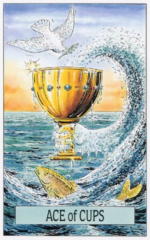
- 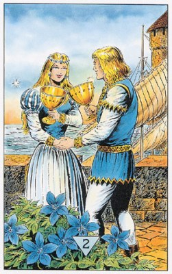
- 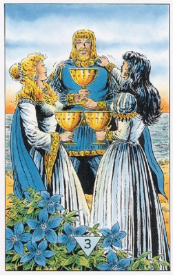
- 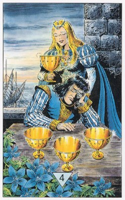
- 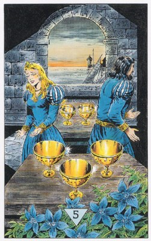
- 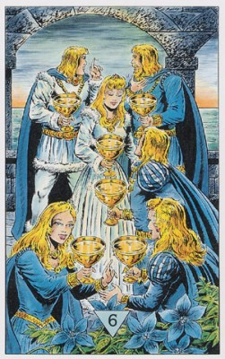
- 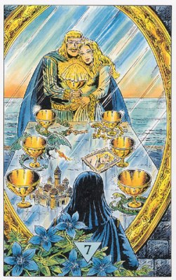
- 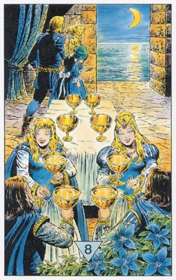
- 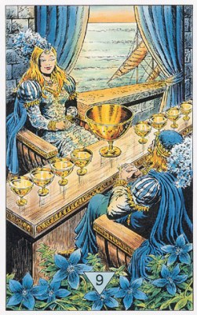
- 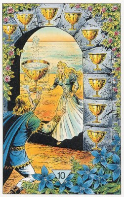
- 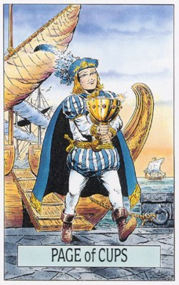
- 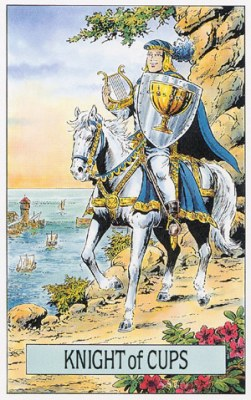
- 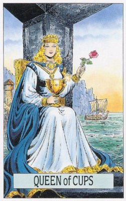
- 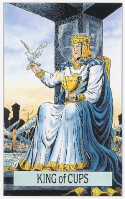
Туз Кубков
П: Боязнь эмоциональной привязанности. Одиночество. Горе. Потеря. Разлука. Слезы. Депрессия, Печаль. Скорбь. Огорчение. Удрученность. Эгоизм. Концентрация только на своих потребностях. Манипуляции. Неготовность к любви. Оттягивание начала отношений. Проблемы в браке. Несчастье. Игра, чувствами другого человека. Жизнь, лишенная эмоций. Эмоциональные всплески.
Люди: Влюбленные. Художники. Медиумы. Сострадательные люди.
П: Те, кого бросили или отвергли. Несчастные и опечаленные люди.
Урок: Вы должны выйти за пределы своих эгоистичных забот, для того чтобы осознать свой истинный духовный потенциал. Дух питает все вещи. Откройтесь для этой высшей мудрости и примите ее в свое сердце.
П: В настоящий момент вы закрыты для ощущений сердца и слишком вовлечены в заботы эго, в частности, очень эгоцентричны, чтобы понимать проблемы других людей.
Работа: Мы на верном пути, который приведет к росту и осознанию призвания, исполнение пожеланий, осуществление проекта и т.д.
П: Ненавистная работа.
Сознание: "Путь к себе", доверие к себе и вера в свои силы, победа над тремя глубинными страхами: уничтожения, непонимания и одиночества.
П: Эмоциональная неуравновешенность, отсутствие эмпатии.
Отношения: Исполнение желаний, особенно желания любви, влюбленность, безопасность и уверенность в завтрашнем дне, подарки.
П: Безответная любовь. Потеря любимого. Разбитое сердце. Вас отвергли. Угасание любви. Окончание романа. Проблемы в отношениях. Любовь по расчету.
Медицина: Наружные половые органы.
П: Бесплодность. Крипторхизм. Грибки, вирусные или бактериальные заболевания наружных половых органов.
П 4 + РК + П 1К + 13 - травма наружных половых органов.
Расклад Путь.
Туз Кубков - одна из самых лучших карт в колоде Таро. Как и другие тузы, он указывает на величайший шанс, нам открывающийся; это может быть и шанс полной самореализации. Что это означает для каждого конкретного человека, зависит от его собственных экспектаций (ожиданий). Спектр значений этой карты включает в себя радость, благодарность, удовлетворение, успех, счастье и единение. На первом месте, конечно, находится любовь как величайший дар во всех ее проявлениях: любовь к ближнему, к родителям, чувственно-эротическая любовь, любовь к самому себе и любовь к Богу. Но она может проявляться и на самом что ни на есть обыденном уровне - как удача, везение, подарок судьбы, хотя, как правило, и без материального субстрата: за материальные "дары" отвечает скорее Туз Денариев. Во всяком случае, нам должно быть ясно, что Туз Кубков обозначает некий необычайно удачный шанс, открывающийся перед нами или перед тем делом, которое мы себе наметили; но этот шанс не реализуется сам собой, для этого нужно приложить усилия.
ПОЗИЦИЯ 2: Вы считаете, что находитесь на верном пути, и что впереди вас ожидают счастье и большая удача. Так ли это, покажет карта в позиции 1, а карта в позиции 7 подскажет, как лучше распознать и использовать шанс, открывшийся перед вами.
ПОЗИЦИЯ 7: Наверное, вы и сами понимаете, что сейчас перед вами открывается уникальный шанс. То, что вы себе наметили, даст вам возможность не только максимально реализовать ваш творческий потенциал, но и ощутить огромную радость. Не оставляйте же усилий, пока не достигнете цели. Результат превзойдёт все ваши ожидания.
ПОЗИЦИЯ 3: Вы полагаете, что теперешняя ситуация сыграла немаловажную роль в вашей жизни, и теперь пытаетесь найти возможность реализовать свой потенциал. Карта в позиции 1 покажет, правилен ли этот ваш вывод, а позиция 6 - как вам следует подготовиться к дальнейшему.
ПОЗИЦИЯ 6: То, что вас ожидает, затронет самые чувствительные струны вашей души. Откройтесь же навстречу этому дару, отдайтесь во власть этому блаженному ощущению счастья. Используйте этот, может быть, уникальный шанс достичь самой прекрасной цели своей жизни.
ПОЗИЦИЯ 4: События до сих пор развивались так, что вы ощущали радость и счастье; эмоции ваши были глубоки, и такой возможности реализовать свой потенциал не было у вас никогда прежде. Вы надеетесь, что так оно будет и дальше. Обоснованны ли ваши надежды, покажет карта в позиции 1. Карта в позиции 5 может подсказать, что вам нужно делать, чтобы вернее достичь цели.
ПОЗИЦИЯ 5: Покажите, что верите в свою судьбу, в благополучное и даже блестящее развитие событий, и что вы готовы с благодарностью принять её дары, каковы бы они ни были. Положитесь на своё чутьё, и ваша интуиция выведет вас на правильный путь.
РАБОТА: В плане работы Туз Кубков означает, что мы находимся на верном пути, который приведет нас не только к ощутимым результатам и профессиональному росту, но прежде всего - к осознанию собственного призвания. Таким образом, здесь эта карта тоже открывает нам уникальный шанс - шанс найти гармоничное единство повседневного труда и процесса самореализации. И, поскольку этот процесс происходит не столько во внешнем, сколько во внутреннем мире человека, то ощущения полной самореализации он может достичь, работая и дворником, и профессором тропической медицины. В обыденных ситуациях эта карта может обозначать исполнение всевозможных пожеланий, касающихся работы - например, успех на экзамене или на аттестации, выполнение намеченных планов, осуществление проекта и т.п.
СОЗНАНИЕ: Здесь Туз Кубков означает "путь к себе", познание своего глубинного "Я" и нахождение ответов на такие глубинные вопросы, как доверие к себе, вера в свои силы и опора на них же. Это также победа над тремя глубинными страхами, о которых писал ещё граф Диркгейм: страхом уничтожения, отчаянием из-за чужого непонимания и безутешностью одиночества. Таким образом, эта карта показывает, что при помощи медитации или иных духовных практик мы можем достичь того счастливого состояния, которое древние безуспешно пытались описать как "прикосновение Вечности" или "Всеединство".
ЛИЧНЫЕ ВЗАИМООТНОШЕНИЯ: В сфере личных отношений Туз Кубков означает исполнение желаний, в первую очередь - желания настоящей Любви. Шансы, открывающиеся перед нами, могут означать и внезапную влюблённость, и счастье зрелой любви, и глубокое взаимное доверие, и ощущение безопасности и уверенности в завтрашнем дне.
Туз кубков - счастье.
Счастье - дело непростое. Его трудно отыскать в нас самих и почти невозможно где-нибудь еще. (с) Чемфорт.
Вопросы для медитации.
Иду ли к выполнению моих желаний? Может быть, я верю, что все случится само собой? Приближаюсь ли я к Граалю или прекратил поиск?
Отношения.
Сейчас у вас все шансы отыскать великую любовь и стать счастливым.
Будущее.
Вам откроется необыкновенная возможность обрести счастье и исполнить желания. Не упустите же этот шанс.
В кризис.
Смотрите в оба, чтобы не упустить возможность выйти из кризиса счастливым, преображенным и освобожденным.
Если нечем заняться.
Сегодня вас ждут великолепные возможности. Делайте то, что подскажет вам сердце. Возможно, вам откроется некий глубокий смысл происходящего.
Аффирмация.
Я благодарен и открыт для счастья, которое готовит мне жизнь.
1. Исходная ситуация. В данный момент есть возможность: Быть счастливым. Влюбиться. Найти свое истинное призвание. Обрести счастье и наполненность. Быть открытым и встретить счастье.
2. Сейчас не время. Надеяться на счастье и исполнение мечты. Ждать, что ваши желания исполняться. Искать свое призвание. Рассчитывать, что события или отношения выльются во что-нибудь серьезное. Искать счастья.
3. Сейчас важно. Всем сердцем отдаться делу. Быть счастливым. Следовать своему призванию. Верить в исполнение желаний. Быть открытым, чтобы не упустить счастливый случай.
4. Результат. Некая возможность. Встреча с большой любовью. Исполнение ваших желаний и счастье. Осознание своего истинного призвания. Возможность получить опыт, который сделает вас по-настоящему счастливым.
Шанс самореализации, успех, счастье, любовь, подарок судьбы без материального субстрата, но нужны усилия для реализации шанса. Юпитер в гармоничном аспекте к Солнцу. Новая любовь. Эмоциональное обновление. Наплыв новых чувств. Сила стихии Воды. Сила воображения. Пища для духа и эмоций, Любовь. Счастье. Дружба. Доброта. Мир. Чувствительность. Созерцание. Начало творческого проекта. Искусство. Поэзия. Радость. Экстаз. Изобилие. Первые волнения любви. Нежные чувства. Влюбленность. Новые отношения или возобновление старых. Сострадание. Общественная жизнь. Партнерство. Позитивный результат отношений. Здоровье. Роман. Брак. Любящий союз. Плодовитость. Беременность. Рождение ребенка. Материнство. Помолвка. Подарок. Платоническая любовь. Неординарные способности.
Совет: Воспользуйтесь предоставленным шансом, он обещает вам большую удачу.
Предостережение: Не предавайтесь пустым мечтаниям.
2 Кубков
П: Небольшие ссоры и разногласия. Разделение обязанностей.
Люди: Пары, партнеры, друзья, любимые, коллеги.
П: Ссорящиеся пары, партнеры, друзья, любимые, коллеги.
Урок: Цените и уважайте вклад обеих сторон в ваши любовные отношения. Доброта и взаимное уважение могут соединить ваши сердца воедино.
П: Ваши отношения разладились. Разногласия создают препятствия на пути прогресса. Любовь превратилась в ненависть и отчаяние.
Работа: Хорошая атмосфера, сотрудничество, приятное место работы. Сотрудничество. Подписание контрактов или соглашений.
П: Ссоры между сотрудниками, напряженные отношения.
Сознание: Любовь и гармония важны, готовность открыться другим, оптимизм вследствие важной встречи, осознание важности любви к ближнему.
П: Внутренние незначительные конфликты и противоречия.
Отношения: Влюбленность, ухаживание, новое знакомство, примирение. Многообещающая встреча, симпатия, начало любви, начальный этап отношений. Помолвка. Объяснение в любви.
П: Постоянные ссоры на фоне эмоциональной привязанности. Сожительство из выгоды и без обязательств. Гражданский брак.
Медицина: Внутренние половые органы.
П: Заболевания внутренних половых органов.
П 2 + П РК + П 2К + П 0 + П 13 - гермафродит.
Расклад Путь.
Двойка Кубков означает соединение влюбленных. Это может быть новое знакомство, примирение с прежним возлюбленным или проявление добрых чувств в устоявшемся союзе. Значение этой карты затрагивает в первую очередь глубоко личную, интимную сферу, о чем бы ни шла речь - о легком флирте, внезапной влюбленности, свидании после долгой разлуки или начале новых дружеских или любовных отношений. Но она может означать и теплый прием, гостеприимство, когда мы приезжаем куда-нибудь в незнакомые места, отправляемся в деловую командировку или на переговоры.
ПОЗИЦИЯ 2: До сих пор вы по большей части относились к людям с доверием, открыто, и были уверены в успехе задуманного. Возможно, такой настрой появился у вас в результате встречи с каким-то замечательным человеком, который сумел вдохновить вас на подвиги и склонить к сотрудничеству или к мысли о возможном совместном будущем.
ПОЗИЦИЯ 7: Будьте готовы к тому, что вас ожидает встреча с человеком или людьми, которые сыграют важную роль в вашем деле. Они окажут вам помощь и поддержку. Так что в будущее вы можете смотреть с оптимизмом: ваши надежды осуществятся, и вы не будете разочарованы.
ПОЗИЦИЯ 3: Вы трудились с энтузиазмом и радостью. Возможно, вы недавно влюбились или нашли человека, с которым вам приятно трудиться вместе. Каков будет результат, и как вам следует относиться к этому человеку, покажут карты в позициях 1 и 6.
ПОЗИЦИЯ 6: Будьте приветливы и добры с окружающими. Вас ожидает радостная встреча, результатом которой (в зависимости от того о чем вы спрашиваете) будет примирение, влюбленность, флирт или прием в чудесную компанию, будь то круг друзей, рабочий коллектив или команда. Дарите людям внимание, любовь и понимание. И вы не пожалеете об этом.
ПОЗИЦИЯ 4: Вы влюблены, погружены в мечты, или у вас просто такая манера держаться. Но, так или иначе, все заметили, что вы находитесь под впечатлением встречи с каким-то интересным или необыкновенным человеком. Во всяком случае, ваше хорошее настроение и приветливость помогли вам найти общий язык со многими людьми, что пошло только на пользу задуманному вами делу.
ПОЗИЦИЯ 5: Будьте любезны, предупредительны и приветливы. Не бойтесь общаться с другими людьми. Наберитесь мужества и сделайте первый шаг сами. Ответом вам будут признательность и благодарность. И, в зависимости от вопроса, вам сейчас надо проявить понимание и снисхождение или взять на себя роль нежного соблазнителя. Покажите, что флиртовать вы еще не разучились.
РАБОТА: Хорошая атмосфера, дух товарищества и сотрудничества, словом - место, где приятно работать. Если эта карта выпадает в ответ на вопрос о возможной смене работы, то она означает, что на новом месте нас ожидает дружеский прием, что новые коллеги и руководители помогут войти в ритм. То же относится к таким намерениям, как поиск работы, открытие собственной фирмы, вообще к любым делам и проектам.
СОЗНАНИЕ: Здесь Двойка Кубков означает, что нас занимают в первую очередь вопросы любви и гармонии, и что мы готовы открыть свою душу другим людям. Нередко она означает оптимистический, жизнеутверждающий взгляд на окружающий мир, и этим мы обязаны некоей важной встрече, которая в свое время многое изменила в нашей душе. Карта может показывать также, что мы осознали то огромное значение, которое имеет любовь к ближнему, и теперь строим свою жизнь на ее основе.
ЛИЧНЫЕ ВЗАИМООТНОШЕНИЯ: Это - главная сфера действия Двойки Кубков. Она олицетворяет период влюбленности, ухаживания, во время нового знакомства, много меняющего в жизни. Но это может быть и чувство, вновь возникшее между прежними партнёрами, или светлый период жизни в устоявшемся союзе, а также примирение после ссоры или периода отчуждения.
2 кубков - союз.
Самое важное время - это настоящее, самый важный человек - это тот, кто сейчас стоит напроитв тебя, а самый важный труд - это любовь. (с) Майстер Экхарт.
Вопросы для медитации.
С чем или с кем мне следует примириться или сотрудничать? ГДе или кому я открою свое сердце?
Отношения.
Идите к партрену, помиритесь с ним. Укрепите то, чего вы вместе достигли.
Будущее.
Вам предстоит любовная встреча, примирение или просто полезное общение.
В кризис.
Дальше не стоит действовать одному. Сделайте это вместе с кем-нибудь. Тогда у вас все получится.
Если нечем заняться.
Идите навстречу другому человеку с открытым сердцем. Завершите внешний или внутренний конфликт.
Аффирмация.
Я соединяю то, что должно быть единым.
1. Исходная ситуация. Важная для вас встреча. Взаимная симпатия. Кто-то был очень любезен с вами. Вы достигли мира и согласия с партнером.
2. Сейчас не время. Быть обаятельным и милым. Делать ставку на общие интересы. Идти на мировую или объединяться с кем-то. Быть искренним с другими. Искать встречи.
3. Сейчас важно. Объединить усилия. Подружиться. Установить мир, наладить отношения. Открыто обратиться к кому-либо и начать общее дело. Дарить и принимать любовь.
4. Результат. Любовная встреча. Период дружбы и гармоничных отношений. Влюбленность. Перемирие и понимание.
Соединение влюбленных, новое знакомство или примирение, гостеприимство. Венера в 1 доме. Разделение обязанностей. Теплота. Привлекательность. Начальный этап гармоничных отношений. Роман. Влюбленность. Атмосфера счастья. Взаимный обмен. Связь. Дружба. Уравновешенные отношения. Деловая сделка. Равновесие между возможностью давать и принимать. Сотрудничество. Взаимность. Доброта. Привязанность. Прекращение враждебности. Понимание. Эмоциональное равновесие. Гармония. Союз. Взаимное уважение. Общие интересы. Преданность в дружбе. Платоническая любовь (при определенных Арканах). Подписание контрактов или соглашений. Помолвка. Брак. Объяснение в любви. Страсть, в основе которой лежат глубокие чувства. Теплота. Привлекательность. Начальный этап гармоничных отношений. Роман. Влюбленность. Атмосфера счастья. Взаимный обмен. Связь. Дружба. Уравновешенные отношения. Равновесие между возможностью давать и принимать. Взаимность. Доброта. Привязанность. Понимание.
Совет: Доверьте свою любовь другому человеку или протяните ему руку дружбы.
Предостережение: Не жертвуйте собой в поисках гармонии.
3 Кубков
П: Невезение, не пронесло. Вредные излишества. Злоупотребление. Нет возможности присоединиться к другим. Тучность. Материальные проблемы. Эксплуатация. Манипулирование другими. Нет поводов для праздника. Приглашение отменено. Отмена. Вы не идете на вечеринку. Праздники откладываются. Печальный повод. Несчастливое окончание. Неудачное использование своих способностей. Зависимость. Это мой праздник, и если я захочу, то буду плакать. Где здесь повод для улыбки?
Люди: Те, кто любят посещать вечеринки. Люди, имеющие какоето увлечение. Те, кто развлекают других. Бармены.
П: Эгоистичные, испорченные люди, чрезмерно потакающие собственным прихотям. Люди, попавшие в зависимость от алкоголя или наркотиков. Неверные любимые. Люди, ведущие беспорядочный образ жизни.
Урок: Придумайте способ делиться своим счастьем, любовью и достатком. Радость может проистекать из прошлых достижений, но может и предвещать счастливую и удачную дорогу впереди. В радостной, шутливой манере проанализируйте свою жизнь и ждите новых и приятных шансов.
П: То, что раньше приносило радость, теперь приносит страдание. Ваш потенциал творческого роста и духовного самовыражения остается скрытым. Вы потакаете своим желаниям и создаете для себя проблемы, вместо того чтобы строить свое будущее.
Работа: Окончание важного этапа работы и празднование этого, сдача экзамена, защита диссертации, повышение, пикник, везение.
П: Начало конца, возможное увольнение или провал. Нужно предпринимать меры для того, чтобы избежать неудачи. Расточительность.
Сознание: Завершение фазы развития с радостью и благодарностью, конец кризиса, испытания, хорошее настроение.
П: Близость небольшого внутреннего кризиса. Чрезмерное потворство собственным прихотям. Гедонизм. Беспорядочность. Жалость к самому себе. Эгоизм. Поглощенность эмоциями.
Отношения: Медовый месяц, гармоничные отношения. Рождение желанного ребенка, что-либо что укрепляет отношения, взаимопонимание и коммуникабельность.
П: Есть опасность ухудшения отношений, предательство, измена, злоупотребление доверием, использование партнера, небольшие извращения, полигамия. Вредное влияние третьего лица на отношения. Неверность. Неудачный роман.
Медицина: Восстановленное здоровье.
П: Алкоголизм. Проблемы с беременностью. Длительное бесплодие. Неспособность иметь детей. Сложности с мочеиспусканием.
Расклад Путь.
Тройка Кубков выражает радость, беззаботность и благодарность - чувства, так ярко проявляющиеся у людей, например, на традиционном Празднике Урожая. Она показывает, что в нашу жизнь вошло нечто важное и прекрасное, или что мы получили подарок (от человека или от самой судьбы), наполнивший нас радостью, счастьем и благодарностью. На более глубоком уровне карта может означать оптимизм и ощущение полноты бытия, на внешнем (событийном) плане - праздник, застолье.
ПОЗИЦИЯ 2: Сейчас Вас переполняют до краев чувства радости и благодарности. Вы добились своего, или оно просто случайно так получилось, однако теперь Вы уже предвкушаете те удовольствия, которые вам предстоит испытать в связи с этим.
ПОЗИЦИЯ 7: Попробуйте взглянуть на ваше дело с самой веселой и радостной точки зрения. И приступайте к нему с легкой душой: вы не разочаруетесь. Вас ожидают приятные события, примите же их с радостью и благодарностью.
ПОЗИЦИЯ 3: Вы испытываете чувства радости и благодарности. Ситуация до сих пор складывалась как нельзя лучше, поэтому вы довольны, и настроение у вас лучше не бывает прекрасное. Проверьте карту в позиции 6: можете ли вы и дальше пребывать в таком настроении, или пора уже готовиться к новому обороту событий.
ПОЗИЦИЯ 6: Откройте свою душу навстречу радостям жизни - и приступайте к выполнению своего замысла с радостью и готовностью быть за все благодарным. У вас начнется счастливая «светлая полоса», насладитесь ею в полной мере. Делайте то, что будет укреплять вас в этом настроении. Бывайте в веселых компаниях, с добрыми друзьями, сходите на танцы, съездите в отпуск.
ПОЗИЦИЯ 4: Вы отпраздновали своё знаменательное событие как, подобает. Чувство удовлетворения и благодарности, наполнившее вашу душу, создавало вокруг вас позитивную «ауру», передающуюся и другим. Если карты в позициях 2 и 3 подтверждают, что настроение у вас и было таким, вам следует и дальше поддерживать эту ауру, слегка модифицировав ее согласно совету позиции 5.
ПОЗИЦИЯ 5: Разделите вашу радость с другими. Пусть все видят, что вы счастливы, благодарны и настроение у вас прекрасное. Устройте праздник и отметьте это событие вместе с друзьями.
РАБОТА: Окончание важного этапа работы и банкет по этому поводу. Это может быть сдача экзамена, защита диссертации, повышение в должности или прибавка к зарплате, заключение выгодной сделки. Или - теплая, дружеская атмосфера в коллективе, совместное мероприятие, пикник с коллегами.
СОЗНАНИЕ: Тройка Кубков указывает, что мы с радостью и благодарностью пришли к завершению какой-то важной фазы своего внутреннего развития - или достигли результатов, которые наполнили нас ощущением радости и счастья. Или же она показывает, что для нас закончился период кризиса, испытания, пусть трудный, но чрезвычайно ценный в смысле приобретенного опыта. Конечно, она может означать, что у нас сейчас просто хорошее самочувствие и настроение, и мы благодарны судьбе за возможность наслаждаться жизнью.
ЛИЧНЫЕ ВЗАИМООТНОШЕНИЯ: Здесь эта карта означает радости «медового месяца» или просто гармоничные отношения с партнером. А также благодарность за то, что у нас такой прекрасный партнер - или за прибавление семейства, ожидаемое или уже имеющее место.
3 кубков - радостная благодарность.
Тысячи свечей можно зажечь от света одной свечи, не укоротив ее жизнь. Радость не уменьшается, когда ее разделяют. (с) Будда.
Вопросы для медитации.
Когда я в последний раз танцевал от радости? искренняя благодарность - знак величия, становлюсь ли я меньше, когда бываю неблагодарным?
Отношения.
Радуйтесь тому, что переживаете прямо сейчас или будете переживать в скором времени, открыто проявляйте благодарность и радость. Покажите всем, что вы счастливы.
Будущее.
Скоро вы получите хороший урожай, и в результате будете счастливы и довольны.
В кризис.
Осознайте то, чего вы достигли, и будьте благодарны, даже если речь идет о небольших успехах. Тогда у вас появится сила для нового разбега.
Если нечем заняться.
Подумайте о человеке, которому вы многим обязаны, и поблагодарите его (ее).
Аффирмация.
Я благодарен жизни за все, что она мне дарит.
1. Исходная ситуация. Вы довольны ходом вещей. Вы наслаждаетесь изобилием. Вы испытываете благодарность за достигнутое. Вы веселы, в прекрасном расположении духа. Вы собрали отменный урожай.
2. Сейчас не время. Устраивать праздник. Предвкушать богатый урожай. Веселиться и радоваться. Быть благодарным и довольствоваться достигнутым. Пребывать в счастье. Надеяться на везение. Стремиться к изобилию.
3. Сейчас важно. Отметить то, что произошло, устроить по этому поводу празднование. Испытывать счастье относительно достигнутого. Быть великодушным и разделить успех с другими. Наслаждаться изобилием.
4. Результат. Благодарность и радость по поводу своих достижений. Празднование, вечеринка. Счастливое время. Обильный урожай.
Радость, беззаботность и благодарность, подарок, оптимизм, праздник, застолье. Венера. Радость. Радостное событие. Удовлетворение. Воссоединение. Объединение с кем-либо. Семейные встречи. Счастливые часы. Увлечения. То, что делается ради удовольствия. Удовлетворение от первых полученных результатов. Праздники. Вечеринки. Процветание семейных отношений. Хорошая судьба. Счастье. Изобилие всего. Игривость. Гостеприимность. Свобода желаний. Праздник щедрости. Сбор урожая. Время, приятно проведенное с другими людьми. Понимание. Зачатие. Беременность (особенно если в раскладе присутствует Императрица в правильном положении, обозначающая плодовитость). Рождение. Достижение. Исцеление. Зарождение счастья. Начало нового образа жизни. Семейное положение. Свадьба. Приближение чего-то. Нечто хорошее. Если бы я знал, что ты придешь, я бы испек пирог. Ешьте, пейте и веселитесь.
Совет: Празднуйте свои праздники, а не календарные.
Предостережение: Поделитесь своей радостью прежде, чем списать ее в архив.
4 Кубков
П: Восстановление отношений с другими людьми. Кто-то, кого вы ожидаете. Принятие общественного приглашения. Мотивация. Инициатива. Общение. Воодушевление. Готовность принять новые возможности. Восстановление жизненных сил. Энергичность. Разрушение своей раковины. Разрушение стен. Удовлетворение. Избавление от рутины.
Люди: Не удовлетворенные чем-то люди. Те, кому приходится переоценивать ситуацию. Отшельники. Затворники.
П: Те, кто отошли от рутинных дел или не участвуют в общественной деятельности.
Урок: Нам нужно поразмышлять вместе с другими и в одиночку над тем, какие решения мы принимаем в своей повседневной жизни. Для этого требуются терпение и усилия. Если мы не сделаем этого, наша жизнь останется статичной и летаргической и мы потеряем всякое ощущение цели (смысла).
П: А вот значение перевернутой карты гораздо позитивнее! Возможны новые отношения, есть мотивация для работы и поступков в обычной жизни, обретают форму новые амбиции.
Работа: Утрата интереса к работе, уныние, злость и обида, монотонная работа, бастовка и уязвленное самолюбие, например, после выговора или отказа. Не ныть, чтобы не упустить нового шанса.
П: Конец периода апатии и начало работы с новыми силами и энтузиазмом.
Сознание: Блуждание ума, апатия и лень, кризис, отчаяние. Если это легкая форма уныния - скоро будут перемены. Если глубокий кризис - немедленно заняться чем-то, что может вывести из апатии.
П: Выход из периода апатии и подавленности.
Отношения: Тяжелая атмосфера, ревность, обида. Нужно пойти навстречу мирным инициативам партнера.
П: Улучшение отношений.
Медицина: Лимфа.
П: Недомогания связанные с лимфой.
Расклад Путь.
Настроение этой карты лучше всего определяется понятиями "пресыщение", "перебор". Помните о непостоянстве наших чувств: мы всеми силами души желаем чего-то, однако, достигнув этого (и даже большего, чем желали), вдруг понимаем, что нам это не нужно, и нас охватывают уныние, обида и отвращение. Это может выражаться в брюзжании, равнодушии или наоборот, раздражении, отчаянии и стремлении все разрушить. Так или иначе, эта карта служит предостережением: не давайте своему дурному настроению перерасти в апатию, чтобы не упустить благоприятного шанса и не оттолкнуть руку помощи.
ПОЗИЦИЯ 2: Вам что-то "встало поперек горла", и теперь вы злы, мрачны и разочарованы. Но перед тем как окончательно все бросить, дайте ситуации последний шанс исправиться. Приглядитесь повнимательнее к тем, кто вас окружает, и вы очень скоро увидите этот шанс. Возможно, карта в позиции 1 даст вам хороший совет.
ПОЗИЦИЯ 7: Вы должны ясно отдавать себе отчет в том, что ваша затея не принесёт вам ничего, кроме неприятностей и испорченного настроения. Так что подумайте, нужно ли на самом деле все это. Если вы все-таки решите продолжать, то постарайтесь не впадать в апатию или в уныние, чтобы не упустить действительно хорошего шанса все наладить.
ПОЗИЦИЯ 3: Настроение у вас плохое, возможно, даже мрачное, вы обижены. Судя по всему, кто-то сильно уязвил ваше самолюбие, и вы не можете ни забыть этого, ни простить. Смотрите же, чтобы это настроение не заслонило от вас весь белый свет: вы рискуете упустить хороший шанс вернуть себе радость жизни.
ПОЗИЦИЯ 6: Вы попали в ситуацию, которая вызывает скуку и досаду. Если карта в позиции 1 показывает, что у вас сейчас и в самом деле такой период, то остается лишь стиснуть зубы и идти вперед, держа, однако, глаза открытыми, чтобы не проглядеть дружескую руку помощи или хороший шанс. Если же это не так, то вам лучше отказаться от своего первоначального плана.
ПОЗИЦИЯ 4: Вид у вас мрачный, угрюмый. Кажется, вам кто-то сильно наступил на мозоль, и вы не скрываете обиды и раздражения. Хотя, возможно, это у вас просто настроение такое, и вам ничего не хочется. Но, так или иначе, а из этого болота пора выбираться. Оглядитесь вокруг, и вам наверняка откроется вариант того, как это можно сделать.
ПОЗИЦИЯ 5: Не стесняйтесь выказать свою боль и обиду. Дайте волю чувствам, даже если вы привыкли строить хорошую мину при плохой игре. В этот раз вы должны дать понять, что вы глубоко задеты. Именно это даст вам новый хороший шанс.
РАБОТА: Четверка Кубков показывает, что работа окончательно утратила для нас свою привлекательность, и нас все сильнее охватывают уныние, злость и обида. Она может также означать "отупение" от монотонной работы, желание "забастовать" и уязвленное самолюбие - например, после полученного выговора или отказа. В таких ситуациях мы должны рассматривать эту карту как совет и предупреждение: не терять времени на бесплодное нытье, чтобы не упустить нового, уже очень близкого шанса.
СОЗНАНИЕ: Здесь у Четверки Кубков широкий спектр значений: это и бесплодная рефлексия ("блуждание ума"), и апатичная леность, и кризис отчаяния из-за "бездарно прожитой жизни". Если речь идет о легких формах уныния, как-то леность и нежелание заниматься чем-либо, то карта означает, что в самом скором времени в нашу жизнь ворвется свежий ветер перемен. Если же это действительно глубокий кризис сознания, то ее следует воспринимать как сигнал тревоги и совет немедленно заняться чем-то, что способно вывести нас из апатии и вернуть в русло нормальной жизни. Например, спортом или гимнастикой, которые помогают освободиться от внутреннего напряжения и иного "негатива": хорошая физическая форма придаст нам сил для решения проблем, мешающих радоваться жизни.
ЛИЧНЫЕ ВЗАИМООТНОШЕНИЯ: Здесь эта карта означает тяжелую, если не сказать отравленную атмосферу. Она показывает, что мы ослеплены ревностью или лелеем свою "обиду", наказывая партнера молчанием или полностью игнорируя его. Обычно в таком настроении мы не замечаем тех жестов доброй воли и шагов к примирению, которые предпринимает партнер. Карта советует как можно скорее преодолеть эту свою апатию и пойти навстречу его "мирным инициативам". Если оба партнера настолько упрямы, что дело дошло у них уже до "позиционной войны", то им можно предложить сыграть в Игру или разложить Гордиев узел; это, конечно, может вылиться в грозу, но после грозы небо, как известно, светлеет.
4 кубков - огорчение.
Невыраженные чувства и невысказанные слова превращаются в яд. (с) Вильгельм Райх.
Вопросы для медитации.
чему я сопротивляюсь и на что злюсь, упуская тем самым лучшие возможности? Часто ли я обижаюсь?
Отношения.
Не застревайте на своем плохом настроении. Лучше воспользуйтесь благоприятным шансом, который дарит вам жизнь.
Будущее.
Вас ожидает спад настроение. Следите за тем, чтобы из-за плохого расположения духа не пропустить хорошие возможности.
В кризис.
Ничего не получится, если вы будете подпитывать свою злобу, даже если ваше недовольство понятно. Откройте глаза, чтобы увидеть решения, лежащие на поверхности.
Если нечем заняться.
Исцелите свою боль, сделайте что-то чтобы освободиться от тяжести и плохого настроения. Если не знаете что, оглянитесь по сторонам. Вам поможет нечто, что находится совсем близко, стоит только протянуть руку.
Аффирмация.
Я прощаю от всего сердца. Я открываюсь всему хорошему, что предлагает мне жизнь.
1. Исходная ситуация. Вы переусердствовали в этом деле и ощущаете усталость. Обида застит вам глаза, и вы не видите благоприятного шанса. Вы получили, что хотели, но не удовлетворены этим. Вы разочарованы и равнодушны. Вас уже тошнит от этого. Отвращение. Апатия, потеря интереса, плохое настроение. Вы испытываете глубокое удовлетворение.
2. Сейчас не время. Раздражаться, испытывать усталость и пребывать в плохом настроении. Впадать в спячку, ощущать апатию. Бездействовать из-за того, что вы обижены. Упускать благоприятную возможность. Для буйной радости и избытка чувств.
3. Сейчас важно. Показать, что вы обижены и злитесь. Преодолеть подавленность. Посвятить этому некоторое время. Не замыкаться в себе. Не упустить выгодного шанса, несмотря на досаду и раздражение. Понять, что же вам мешает. Воспользоваться богатыми ресурсами и наслаждаться ситуацией.
4. Результат. Разочарование и кризис несостоятельности. Равнодушие, отвращение. Глубокая неудовлетворенность. Хандра, депрессия. Душевный подъем, наслаждение жизнью.
Пресыщение, перебор, сильно желаем чего-то но получив - понимаем, что оно не нужно и тогда уныние, обида и отвращение, равнодушие, раздражение, отчаяние и стремление разрушить. Не давайте плохому настроение стать апатией чтобы не упустить шанса. Марс в Раке. Скука. Усталость. Отступление. Общественная изоляция. Отклонение общественных приглашений. Переоценка. Обращение к своему внутреннему миру. Апатия. Замкнутость. Углубление в мысли. Тишина. Отчаяние. Дистанция. Разочарование. Чего-то не хватает. Чувство внутренней пустоты. Тоска. Интроверсия. Рутина. Обида. Депрессия. Чувство изнуренности. Углубление в себя. Отсутствие мотивации. Чувство пресыщенности. Никто меня не понимает. Медовый месяц закончен. Я никогда не обещал тебе миллион алых роз. На том берегу трава зеленее. Зима нашего недовольства. Отвращение ко многому.
Совет: Пусть вы обижены и расстроены, все же держите глаза открытыми: новый шанс уже близок.
Предостережение: Не погружайтесь слишком глубоко в свою обиду, злость и дурное настроение.
5 Кубков
П: Надежда. Хорошие новости. Ожидание. Принятие. Возможности.
Люди: Переживающие боль, обиду или душевные раны. Пессимисты. Женщины, у которых случались выкидыши. Дети, которых обижают.
П: Старые друзья. Люди, которых вы когда-то любили. Любимые, которых вы потеряли.
Урок: Иногда мы настолько поглощены ощущением потери, что забываем, что все в жизни преходяще. Мы должны всегда стремиться к тому, чтобы преодолевать сожаления и угрызения совести и иметь мужество извлекать что-то полезное из своих разрушенных иллюзий.
П: Сейчас все выглядит значительно оптимистичней. чем раньше. Вернулись старые друзья или возлюбленные. У нас появилось достаточно смелости, чтобы двигаться вперед.
Работа: Боль из-за неудачи, провал на экзамене, отказ, убытки. Проанализируйте все, найдите ошибку, не слишком ли легкомысленно или негативно ты относился к ситуации.
П: Окончание плохого периода.
Сознание: Разочарование, боль, обида, должны извлечь урок. Отказ от наивных идеалистичных представлений и переход к прагматизму.
П: Исцеление старых ран. Стакан наполовину полный.
Отношения: Отчаяние, разочарование в партнере, потеря связи с партнером. Распад союза, разочарование. Какую лепту внесли в это мы?
П: Окончание плохого периода в отношениях. Разжигание старой любви. Новые отношения. Возобновление старых связей. Конструктивный подход к недоразумениям.
Медицина: Метаболизм.
П: Нарушения водносолевого обмена, отравления, обезвоживание. Рвота, понос, диурез.
Расклад Путь.
Пятерка Кубков - это карта печали, боли, отчаяния и меланхолии. Она показывает, что мы потеряли что-то, бывшее для нас долгое время очень важным. Она показывает, что мы не останемся один на один с нашим горем, а можем рассчитывать на сочувствие и помощь друзей. Однако эту утешительную сторону карты не следует истолковывать в том смысле, что горе наше надуманное, и что скоро нам снова будет хорошо и весело. Часто карта показывает, что виной всему было наше собственное легкомыслие, что мы не ценили того, что имеем, и поэтому лишились его. Однако есть выход и из этого положения: карта советует не зацикливаться на своем горе слишком долго.
ПОЗИЦИЯ 2: Вы ещё целиком находитесь под впечатлением неких чрезвычайно болезненных переживаний. Вы знаете, что подобные раны заживают медленно, так что вам нужно время, чтобы извлечь урок из этой ситуации. И всё же не забывайте, что вы - свободная личность и можете в любой момент покинуть то место, где Вам пришлось испытать столько боли.
ПОЗИЦИЯ 7: Имейте в виду, что вас ожидают весьма болезненные ощущения и горькое разочарование. Но избегать этого испытания не стоит. Примите всё твёрдо, не закрывая глаз и внимательно следя за происходящим. Ищите те бесценные дары опыта, которые понадобятся вам в дальнейшем. И, если вам удастся усвоить этот урок, вы будете избавлены от повторения подобного испытания.
ПОЗИЦИЯ 3: Вы испытали глубокое разочарование, Ваши чувства в беспорядке, Вам больно. Не отказывайтесь же от помощи и сочувствия, которые предлагают Вам близкие. Но и не надейтесь, что разбитый кувшин еще можно склеить. Карта в позиции 6 подскажет Вам, на что Вам далее нужно будет направить свои чувства.
ПОЗИЦИЯ 6: Вас ждёт жестокое разочарование, и длительный период горя и боли. Не пытайтесь избежать этого или обманывать себя. Ваш путь лежит через Долину слёз. Пройти через неё Вам помогут близкие и друзья – не отвергайте же их поддержку и помощь. И тогда, пройдя этот путь, вы сможете вырваться из круга страданий и выйти к новым, неведомым горизонтам.
ПОЗИЦИЯ 4: Вы выглядите унылым, усталым, убитым. Ясно, что Вам пришлось пережить трудный период. Возможно, Вы стараетесь делать вид, что смирились со своим несчастьем, и оставили всякую надежду на освобождение от тяжких воспоминаний, на обретение новой радости в жизни.
ПОЗИЦИЯ 5: Не скрывайте своего горя и отчаяния. Не пытайтесь скрыть чувства, стискивая зубы и стараясь выдавить улыбку. Да, Вы задеты - что ж, бывает. И не отказывайтесь от утешения и помощи друзей.
РАБОТА: Пятерка Кубков - это разочарование и боль из-за неудавшегося проекта. Она может означать провал на экзамене, отказ от места или сделку, от которой мы ожидали большой прибыли, но несем лишь убытки. Однако карта советует: проанализируй всё, найди свою ошибку, проверь, не слишком ли легкомыслен или негативен был твой настрой с самого начала.
СОЗНАНИЕ: Пятерка Кубков показывает, что мы испытали разочарование, боль и обиду и должны теперь извлечь урок из этого. Часто это означает отказ от наивных, идеалистических представлений и переход к более зрелой и прагматичной жизненной философии. Особенно глубокое значение имеет эта карта в тех случаях, когда мы наконец осознаем, что причиной нашего разочарования были наша собственная небрежность, невнимательность или капризность, или когда испытываемая боль заставляет нас пересмотреть прежние шаблоны поведения и выработать новый взгляд на жизнь.
ЛИЧНЫЕ ВЗАИМООТНОШЕНИЯ: В сфере личных отношений Пятерка Кубков, как правило, означает распад прежнего союза или разочарование в знакомстве, казалось бы, столь много обещавшем. Если это действительно печальный конец когда-то прекрасного союза, то нам стоит спросить себя, какую лепту внесли в это мы лично. Часто при этом мы с удивлением убеждаемся, что одной из главных причин распада было наше собственное раздражение, развившееся на почве скуки. Лишь осознав эти причины, мы получим шанс извлечь урок из всего происшедшего, чтобы не повторять своих ошибок.
5 кубков - скорбь.
Вначале человеку нужно выплакать прежние глаза, только после этого он сможет, смеясь, увидеть мир другими глазами. (с) Густав Мейринк.
Вопрос для медитации.
Без слез не было бы радуги в душе. Какая боль владеет мной?
Отношения.
Попробуйте не улыбаться, когда глаза полны слез. Не проявляйте инициативу, пока у вас тяжело на сердце.
Будущее.
Перед вами долина слез, но есть человек, который поможет вам на вашем пути.
В кризис.
Не скрывайте свое горе, но и не впадайте в отчаяние. Со временем печаль улетучится, и вам откроются новые горизонты.
Если нечем заняться.
Не бегите от своего хмурого настроения. Даже если в душе растут меланхолия и безнадежностЬ, позвольте этим чувствам быть. Со временем они иссякнут.
Аффирмация.
Я с достоинством отпускаю то, что нельзя спасти.
1. Исходная ситуация. Вы испытали жестокое разочарование. Ваши надежды рухнули. Вас покинули. Одиночество. Для вас наступили тяжелые времена. Вы подавлены и разочарованы.
2. Сейчас не время. Беспокоиться или грустить. Отчаиваться или испытывать одиночество. Чувствовать себя несчастным и опускать руки. Поддаваться тревоге и разочарованию. Цепляться за свои страдания. Бояться разочарования.
3. Сейчас важно. Пересечь "долину слез". Принять горе. Показать свое смятение, тревогу. Осознать, что нечто важное потерпело крах. Постепенно преодолевать боль. Смириться с разочарованием.
4. Результат. Эмоциональный кризис. Ощущение утраты. Болезненные вспоминания. Тревога, проблема, неудача. Разочарование и депрессия.
Печаль, боль, отчаяние и меланхолия, потеря чего-то что долгое время было важным, возможность рассчитывать на сочувствие и помощь друзей, виной всему было наше легкомыслие, не ценили того что было и поэтому лишились этого. Не зацикливаться на горе слишком долго. Сожаление. Самообвинения. Грусть. Размышления. Несчастливое окончание. Растревоженные эмоции. Недостаток общения. Потеря доверия. Эмоциональное разочарование. Предательство в любви. Чрезмерный пессимизм. Беспокойство из-за расставания. Спасение того, что осталось. Угасание любви. Проблемы в семье. Время кризиса в любовных отношениях. Расставание. Чувство заброшенности. Вас ругают или наказывают. Разлука, Развод. Выкидыш. Нерастраченные таланты. Что-то потеряно, но что-то и осталось. Не стоит плакать над пролитым молоком. Что сделано, то сделано. Кто прошлое помянет, тому глаз вон. Стакан наполовину пустой, а не наполовину полный.
Совет: Перед вами лежит Долина слез; пройдите же ее с честью.
Предостережение: Не купайтесь в своем горе и не ждите от будущего слишком многого.
6 Кубков
П: Нежелание или неумение приспособиться к ситуации. Все мысли в прошлом. Нежелание отпустить «мамину юбку». Ненужная ностальгия. Желание вернуться к старым мерам безопасности. Тщеславие. Воспоминания, причиняющие страдания. Невозможность оплатить кредит. Призраки прошлого в настоящем. Скелет в шкафу. Приверженность старым традициям и убеждениям. Нежелание испробовать что-то новое. Потребность заглянуть в будущее. Не хочу расти. Вопрошающему придется расстаться кое с кем из друзей, поставить крест на старых делах и привязанностях, ибо он давно «вырос» из всего этого. Не доверяйте Будущему, каким бы приятным оно не казалось! Позвольте Прошлому хоронить своих мертвецов! Действуйте! Действуйте! И живите в Настоящем!
Люди: Старые друзья. Те, кто нам почти как родные. Друзья детства. Дети. Бывшие возлюбленные. Люди, связанные с нашим прошлым.
П: Рип Ван Винкль. Люди, живущие воспоминаниями о прошлом. Маменькины сыночки и дочки. Люди с несовременными, отсталыми взглядами.
Урок: Поразмышляйте над тем, как обогатили вас ваши отношения и уроки, которые вы усвоили у жизни. Но после этого будьте готовы двигаться дальше — нам всем приходится появляться из прошлого, жить в настоящем и открываться тому, что лежит впереди.
П: Вместо того чтобы жить настоящим, вы живете прошлым. Ваши представления и жизненные ценности устарели. Вручение наград, которые, по-вашему, вы заслужили, откладывается. Признание, которое, на ваш взгляд, вам полагалось, получил кто-то другой.
Работа: Романтическое отношение к работе, желание вернуться в те времена когда все удавалось, возврат к детским желаниям.
П: Низкая адаптабельность, неплатежеспособность, подсознательное противостояние карьерному росту.
Сознание: Блуждания ума, регрессия в детство, с горечью часто думаем о чем-то, желание уйти от действительности или демонстративное дурачество.
П: Чрезмерная поглощенность прошлым, неспособность отпустить то, что давно прошло.
Отношения: Теплота и доброта, сказочная влюбленность, воспоминания о ней, мечтательность, слащавая сентиментальность, поэзия и романтика.
П: Неспособность строить нормальные отношения из-за погруженности в прошлое.
Медицина: Генетика.
П: Нарушения генетики (хвостик, слишком много пальцев, сиамские близнецы и т.д.).
Расклад Путь.
Эта карта уводит нас в страну воспоминаний. Она показывает, что прошлое ещё живо в нас, что мы возвращаемся к нему в романтических мечтаниях или в щемяще-ностальгических переживаниях. Такой отрешённо-сентиментальный взгляд на вещи может, как прояснить и осветлить картину мира, так и замутнить, омрачить её. И, раз уж карта, так или иначе, связана с прошлым, при соответственном вопросе она может указывать на какие-то эпизоды или впечатления нашего детства.
ПОЗИЦИЯ 2: Вы всё время оглядываетесь назад, стремясь вернуть прошлое. Возможно, его картины и в самом деле вдохновят вас, придадут новые силы. Если же вам просто хочется бежать от действительности, то проверьте-ка на всякий случай карту в позиции 7: может быть, не стоит больше откладывать принятие решений?
ПОЗИЦИЯ 7: Вспомните о том, что было. Найдите в памяти образы, которые что-то значат для вашей теперешней ситуации и могут помочь найти выход. Возможно, вы поймёте, что какие-то образы из вашего далёкого детства могут сыграть (или уже сыграли) немаловажную роль в ходе выполнения вашего замысла.
ПОЗИЦИЯ 3: Вы погружены в мечты, полностью отдав себя на волю чувств. Возможно, вы с лёгкой грустью вспоминаете о своих прежних замыслах. Что ж, черпать можно и из этого источника, однако не забывайте возвращаться в на- стоящее - хотя бы время от времени. Проверьте, что посоветует вам карта в позиции 6.
ПОЗИЦИЯ 6: Вспомните о своих мечтах, о несбывшихся фантазиях. Восстановите в памяти эти картины во всех подробностях. Сходите на какую- нибудь выставку, посмотрите старый фильм, прочтите занимательную книгу. Ваша душа тоскует. Дайте же ей эту пищу, утолите её голод. И вскоре вы почувствуете, как в вас вливаются новые силы.
ПОЗИЦИЯ 4: Вы вели себя как человек, верный только своему прошлому и игнорирующий настоящее, или же как человек не от мира сего, погруженный в себя и по- детски наивный. Или, возможно, вы просто устали всё время быть взрослым. На всякий случай проверьте, можете ли вы и дальше позволить себе такой отдых, или карта в позиции 5 посоветует вам активнее включиться в настоящее.
ПОЗИЦИЯ 5: Поделитесь с другими своими воспоминаниями, фантазиями и мечтами. Не бойтесь показаться чудаком и фантазёром. Ваши переживания и ваша ностальгия лишь прибавят привлекательности вашему образу. Маска печального клоуна может сослужить вам неплохую службу.
РАБОТА: Шестёрка Кубков говорит о том, что свою работу мы воспринимаем скорее романтически, чем прагматически, и нас увлекает именно её идеальное представление о ней, а не повседневная рутина. В творческих профессиях это даже плюс, однако, там, где требуется аккуратность и организованность, такой подход только мешает и нам, и тем, кто работает вместе с нами. Если нам грозит потеря работы, заказов или перепрофилирование, то эта карта указывает на возврат к детским желаниям, когда нам хотелось стать тем-то и тем-то, когда вырастем. И, в зависимости от того, насколько эти наши детские желания успели осуществиться, она олицетворяет либо грусть и безысходность, либо радость и прилив новых сил. Если у нас просто трудности в работе или на работе, то она может означать, что нам хочется вернуться в те времена (или на ту работу), когда нам всё удавалось.
СОЗНАНИЕ: Мы оглядываемся назад, чаще всего на детство, или предаёмся "блужданию ума", как говорят буддисты, то есть часто (и обычно с горечью) думаем о чём-то. Образы, появляющиеся при этом, могут воплощаться в стихах, картинах и других произведениях искусства. Но они могут вызвать и желание уйти от действительности, и просто демонстративное дурачество. Вот как пишет об этом Филипп Метман: "Тот, кто пытается осуществить свои детские надежды во взрослой жизни, никогда не достигнет зрелости. Однако тот, кто подавляет их, не давая воплотиться или обрести новое качество, сразу становится стариком".
ЛИЧНЫЕ ВЗАИМООТНОШЕНИЯ: Здесь эта карта чаще всего означает теплоту и доброту, характерные для периода сказочной влюблённости. Иногда - воспоминания о таком периоде. Именно в этой сфере наиболее сильно выражается мечтательная, подчас слащаво-сентиментальная сторона этой карты, хотя в ней есть и поэзия, и подлинная романтика.
6 кубков - радостное воспоминание.
В старости воспоминания приобретают такую же ценность, как мечты в юности. (с) Эрна Беренс-Гигл.
Вопросы для медитации.
Какого человека, который исчез из моей жизни, я бы снова с удовольствием увидел? Какие прежние мечты вдохновляют меня и сейчас?
Отношения.
Вспомните о том, чего вы хотели сильнее всего, и попробуйте сейчас исполнить это желание.
Будущее.
Вы будете рады встретить кого-то из вашего прошлого или вспомнить что-то, что когда-то было для вас важным, и что сегодня поможет вам.
В кризис.
Ищите помощи старого знакомого. Вспомните о своих прежних целях и идите к ним.
Если нечем заняться.
Посвятите день своему прошлому. Поройтесь в старых вещах, почитайте старые письма или дневники, полистайте фотоальбомы или поищите уголки, где накопился хлам.
Аффирмация.
Я осознаю свои прежние цели и достигну их, если они еще важны для меня.
1. Исходная ситуация. Воспоминания детства. Думать о давнишних планах и желаниях. Вы столкнулись с чем-то, что напомнило вам о прошлом. Ностальгия. Вы отлично проводите время, наслаждаетесь всем, что происходит.
2. Сейчас не время. Зацикливаться на прошлом. С сожалением оглядываться назад. Предаваться мечтам. Получать удовольствие от воспоминаний. Предаваться плотским наслаждениям.
3. Сейчас важно. Вдохновиться, вспоминая нечто хорошее. Не избегать романтических чувств. Уделить внимание своему "внутреннему ребенку". Вспомнить свои давние мечты и попробовать воплотить их. Заглянуть в прошлое, в детство. Наслаждаться жизнью в полной мере.
4. Результат. Встреча со своим прошлым. Полезное самонаблюдение. Назад, в детство. История минувших дней. Определение своей позиции. Счастливый период в жизни.
Ностальгия, романтичные мечтания о прошлом, впечатления детства. Луна в Рыбах или Раке. Невинность. Воспоминания детства и событий, связанных с ним. Обмен впечатлениями и воспоминаниями. Откровенный разговор. Возрождение любви. Возобновление старых связей. Восстановление гармонии. Размышления об ушедших временах. Любимый из прошлого. Возвращение прошлого. Старые друзья. Кармические связи. Счастливые воспоминания. Годовщины. Эмоциональное обновление. Извлечение скрытых эмоциональных сокровищ. Теплые встречи. Праздники. Подарки. Сентиментальность. Семейные ценности. Радость от пребывания в семейном кругу. Поездка к близким родственникам. Предложение новой работы. Переезд. Наследство. Общение с детьми.
Совет: Вспомните о своем прошлом, о забытых желаниях и мечтах: они помогут вам лучше сориентироваться в настоящем.
Предостережение: Не предпочитайте прошлое настоящему.
7 Кубков
П: Решительность. Реалистичные ожидания. Потребность принять определенное решение. Хороший выбор. Способность увидеть лес за деревьями. Время действий. Разум превыше чувств. Ясность мыслей. Улавливание сути. Легкость в принятии решений. Реалистичный взгляд на вещи. В конце концов побеждает настойчивость. Успех достигается со второго захода. Необходимость попробовать еще раз. Назад, к основам. В ясный день все.видно хорошо. Я принял решение! Из грязи – да в князи. Если у вас не получается с первого раза, пробуйте снова и снова.
Обычно семерка Кубков в перевернутом положении обозначает решимость и реализм, но если весь расклад имеет негативное значение, эта карта символизирует разочарование. Полное разочарование. Самозащита. Замешательство. Иллюзии. Нежелание взглянуть на реальность. Фантазии. Упущенные возможности. Неудачная первая попытка: Необходимость предпринимать дальнейшие попытки. Ложные обещания. Боязнь успеха. Сыграй еще разок, Сэм? Скажи, что.
Люди: Те, кого посещают видения. Мечтатели. Люди, витающие в облаках. Художники. Творческие люди. Те, кому предоставляется слишком большой выбор. Те, чье мышление не назовешь достаточно ясным. Светловолосые дети.
П: Те, кто стараются иметь четкое представление обо всем. Прилежные ученики. Реалисты.
Урок: Всем нам приходится делать какой-то жизненный выбор. Научитесь принимать решения, спускайтесь с небес и деловито добивайтесь своих целей — в противном случае вы можете потеряться в мире иллюзий и фантазий.
П: Вы уже способны сконцентрироваться на определенной задаче или проекте. Сейчас вы находитесь на правильном пути. Добивайтесь своих целей.
Работа: Строим воздушные замки, иллюзии и если не опомнимся - катастрофа. Предостерегает от липовых сделок, ложных целей, грязных дел и интриг. Обман, халтура на работе и призыв сохранять трезвость и чистоту рук.
П: Предпочтение синице в руке перед аистом в небе.
Сознание: несбыточные мечты, розовые очки, бегство от реальности.
П: Возвращение в реальный мир из своих грез.
Отношения: Эйфория влюбленных предшествующая болезненному пробуждению, идеализация партнера, предъявление завышенных требований к партнеру. Надо относиться со скепсисом к отношениям.
П: Избавление от иллюзии о партнере, переход отношений на новый более зрелый уровень возможно через кризис.
Медицина: Почки.
П: Болезни связанные с неправильным строением почек.
Расклад Путь.
Семёрка Кубков — это карта не истины, иллюзии, миража, призраков. Она показывает, что мы поддаёмся обманчивым надеждам и ложным представлениям, что мы обманываемся и позволяем обманывать себя. Как правило, она выступает предвестницей отрезвления, то есть разочарования, и её надо воспринимать как последнее предупреждение: открой глаза! Хотя у неё есть и положительный аспект: если мы осознаём свои заблуждения, освобождаемся от иллюзий и действительно хотим посвятить себя чему-то реальному, она обещает нам помощь и поддержку со стороны тех, от кого мы этого не ожидали.
ПОЗИЦИЯ 2: Вы поверили в иллюзию, пали жертвой обмана или своих завышенных экспектаций. Вам недостало критического взгляда на вещи, или же просто не хотелось знать истину. Теперь все эти мыльные пузыри лопаются. Настало время выделить из них рациональное зерно, достойное реализации, и начать выращивать его. И, взявшись за дело как следует, вы получите неожиданную помощь.
ПОЗИЦИЯ 7: Позвольте себе мечту. Самую смелую, какую только сумеете придумать. Дайте образам своего воображения возможность подсказать вам что-то, но остерегайтесь, чтобы они вас не заворожили. И выберите один из этих образов, чтобы со всей решимостью воплотить его в реальность. При этом можете смело рассчитывать на помощь других.
ПОЗИЦИЯ 3: Отдавшись прекрасным мечтам и надеждам, вы дали себя обмануть; вас провели, как ребёнка. Или, возможно, вы просто предпочитаете не замечать плохого, отчего и приняли за золото то, что всего лишь блестело. Проснитесь же, пока эти мечты не завели вас ещё глубже в лабиринт обманчивых иллюзий.
ПОЗИЦИЯ 6: У вас такой период, когда вы можете предаться самым фантастическим мечтам и обитать в небесах. Дайте волю своему воображению, осуществите ваши мечты в путешествии на какие-нибудь Острова Блаженных. Пусть эти образы придадут вам сил, породят новые идеи и замыслы. Потом вы сможете претворить их в жизнь — они найдут поддержку. Только не забудьте это сделать.
ПОЗИЦИЯ 4: Все считают вас фантазёром, мечтателем, человеком увлекающимся, неспособным отличить желаемое от действительного. Не исключено, что вы пали жертвой собственной доверчивости, и вас обманули или даже "подставили". Или это вы сами оказались таким ловкачом и хитрым обманщиком?
ПОЗИЦИЯ 5: Напрягите всю свою фантазию, дайте волю воображению и чувству чудесного. Создайте вокруг себя атмосферу волшебства, сказки, в которой вы - Цирцея или Мерлин. Но будьте осторожны, чтобы самому не пасть жертвой собственноручно сотворённого миража.
РАБОТА: В плане работы эта карта показывает, что в последнее время мы занимаемся строительством воздушных замков, строим себе иллюзии и вообще вступаем на зыбкую и опасную почву пустого прожектёрства и буратиньего легковерия. И, если мы не взглянем на вещи трезво, не умерим свои претензии и не ограничимся тем, что и в самом деле осуществимо, нас ожидает катастрофа. Карта предостерегает от липовых сделок, от ложных целей, а в некоторых случаях и от участия в грязных делах и подлых интригах. Кроме того, она может свидетельствовать, что у нас на работе процветают приписки, обман и халтура, и призывать нас сохранять трезвость и чистоту рук.
СОЗНАНИЕ: Здесь эта карта олицетворяет период несбыточных мечтаний и взгляда на всё сквозь розовые очки. Если мы поймём, что это всё иллюзии, то подобная эйфория может закончиться сама собой без болезненных последствий. Если же мы будем принимать эти мечты за действительность, поверим в них, то пробуждение может оказаться очень горьким. В своём самом тяжёлом варианте Семёрка Кубков может означать бегство от действительности, прыжок очертя голову в фантастические миры, разрушение привычных структур и, как результат, строительство новых, иллюзорных структур, некоей иррациональной, но необычайно сладостной для нас реальности,… которая рано или поздно лопнет, как мыльный пузырь.
ЛИЧНЫЕ ВЗАИМООТНОШЕНИЯ: В этой сфере Семёрка Кубков может порой олицетворять эйфорию влюблённых. Однако она предостерегает, что пробуждение может оказаться болезненным. Дело тут не в том, что предмет нашего обожания недостоин такового, а скорее в том, что мы сами предъявляем к нему непомерно завышенные требования — и сами же будем виноваты в своём разочаровании. Она советует также не убаюкивать свой рассудок сладостными мечтами, а отнестись со здоровым скепсисом к своим партнёрским отношениям.
7 кубков - реальность в мечтах.
В некоторые вещи нужно поверить, чтобы суметь их увидеть. (с) Ральф Ходгсон.
Вопросы для медитации.
Чего сегодня является для меня действительностью? О чем говорят мои мечты? О чем я мечтаю в жизни?
Отношения.
Вы мечтаете о любви или прямо сейчас влюблены по уши. Вовсю наслаждайтесь этим временем.
Будущее.
Вы надели розвоые очки и раскрасили действительнсоть в яркие цвета. Будьте осторожны, не попадитесь в сети иллюзий.
В кризис.
Вам нужно найти выход из сложившейся ситуации. Отведите для этого время, вспомните ваши мечты и послушайте голос сердца, пока перед глазами не проявится ясная картина, которая вдохновит вас.
Если нечем заняться.
Подарите этот день своей фантазии. Вернитесь к тому, о чем мечтали. Нарисуйте что-нибудь необыкновенное или отдайтесь волшебству книги, фильма или пьесы.
Аффирмация.
Я иду по пути желания. Я знаю, что мои желания ведут меня к цели.
1. Исходная ситуация. Существует опасность погнаться за миражом. Вы не хотите видеть то, что происходит на самом деле. Вера в собственные иллюзии. Вы позволили другим соблазнить и обмануть вас. Вы стали жертвой пустых обещаний. Вы мечтаете. Вы живете в мире иллюзий.
2. Сейчас не время. Избегать реальности и быть опьяненным чем-то. Смотреть на мир через розовые очки. Позволить кому-то увлечь вас. Витать в облаках. Поддаваться самообману.
3. Сейчас важно. Дать волю своему воображению, вспомнить о нереализованных мечтах и фантазиях. Сконцентрироваться на видении будущего и начать продвигаться в этом направлении. Фантазировать и строить воздушные замки. Позволить себе мечтать и ощутить вдохновение. Быть осторожным, опасаться упоения, вредных пристрастий и зависимости.
4. Результат. Обман и разочарование. Царство грез, возможно, ваше видение будущего. Мошенничество. Принятие желаемого за действительное. Уход от реальности.
Иллюзия, мираж, обманчивые надежды, романтическая любовь, предвещает отрезвление и разочарование. Открой глаза! Если освободимся от иллюзий - помощь от тех, от кого не ожидали. Мечты. Фантазии. Витание в облаках. Плохая сосредоточенность. Неопределенность. Трудный выбор. Неясное мышление. Слишком большой выбор. Невозможность принять решение. Запутанные мысли. Рассеянная энергия. Нереальные ожидания. Множество альтернатив. Иллюзии. Дезорганизация. Романтика. Эмоции превалируют над разумом. Желание сбежать подальше. Неспособность справиться с чем-либо. Измененное состояние. Видения. Вещие сны. Впечатления. Непрактичность. Игра воображения. Страстные желания. Замешательство при необходимости сделать выбор. Томление. Неконтролируемое воображение. Трудные решения. Злоупотребление алкоголем или наркотиками (особенно если в раскладе присутствует еще одна карта, указывающая на желание убежать от действительности, например Луна). Что я сейчас делаю? Строю замки на песке. Чего я хочу на самом деле? Нельзя получить все! Все призрачно. За деревьями леса не видно.
Совет: Выберите себе мечту и всеми силами беритесь за ее осуществление.
Предостережение: Не бегите от действительности и не поддавайтесь на приманки, ведущие к гибели.
8 Кубков
П: (Положительные значения) Трудные времена подходят к концу. Удовольствие. Поиск счастья. Посещение вечеринки. Новый роман. Флирт. Дружба. Праздник. Возобновление старых отношений в течение месяца. (Негативные значения) Отказ двигаться дальше. Цепляние за прошлое. Страх перед неизвестным. Неправильное решение. Отказ от личностного роста. Проблемы, которые вытекают из ограничений. Неспособность «перерасти» устаревшие отношения и увлечения. Посредственность. Следование ложным идеалам. Отказ от ценных отношений. Страх перед близостыо. Поворачиваться спиной к ценным в эмоциональном плане союзникам. Менять что-то, о чем потом можно пожалеть. Трава зеленеет на другом берегу. Не стоит «выплескивать ребенка вместе с водой». Траур, тоска из-за отсутствия любви, разрушение порядка. Непроработанные кармические долги в области чувств.
Люди: Те, кто находятся в поиске. Пережившие расставание. Люди, которые оставили неудовлетворительную ситуацию в прошлом. «Блондинки», готовые помочь.
П: Те, кто «выплескивают ребенка вместе с водой». Злобные «блондинки».
Урок: Откройтесь для новых возможностей. Доверьтесь руководству высшего духовного источника.
П: Вы хотите пожить мирской жизнью и на мгновение поверглись спиной к духовным вопросам. Вас больше интересуют личный успех, хорошая еда и приятная компания. Скоро в вашей жизни появится новый возлюбленный.
Работа: Уход с работы, расставание с привычным и неуверенность в завтрашнем дне.
Сознание: Прежние взгляды и привычки больше не нужны и от них надо избавляться.
П: Тоска из-за отсутствия любви.
Отношения: Расставание с человеком, который значил очень много. Развилка и необходимость с благодарностью проститься. Отказ от наивных мечтаний и возвращение к реальности.
Медицина: Улучшение состояния здоровья.
П: Болезни надпочечников (кисты, нарушения выделения адреналина и т.д.).
Расклад Путь.
Восьмёрка Кубков — это одна из трёх карт "прорыва", обозначающая печальное прощание (наряду с Колесницей, означающей радостное "выступление героя" на поле битвы, и Шестёркой Мечей, символизирующей поход в неизвестное, к новым берегам). Она показывает, что мы должны покинуть привычное окружение, расстаться с людьми или вещами, к которым "прикипели сердцем", и отправиться в далёкий путь, в неведомое будущее. В любом случае она свидетельствует, что нас не изгнали, это мы сами, по своей воле решили уйти (другое дело, что у нас могло не быть иного выхода). "Тяжесть прощания" заключается в двух моментах: мы должны покинуть то, что нам дорого, и не знаем, что нас ожидает.
ПОЗИЦИЯ 2: Сейчас у вас происходит процесс прощания со старым, и ваши мысли заняты главным образом теми вещами, с которыми вы должны расстаться. О том, что вас ожидает в будущем, вы пока думать не осмеливаетесь. Карта в позиции 1 покажет, на что вы можете рассчитывать в будущем, а позиция 7 - как вам надо будет себя вести.
ПОЗИЦИЯ 7: Поймите, что вы должны идти своим, особым путём, даже если то, от чего придется отказаться, очень вам дорого. Забудьте о своих прежних убеждениях - и постарайтесь не заменять их новыми. Вам нужно какое-то время пожить "в неизвестности", прежде чем внутренний голос выведет вас на новую дорогу.
ПОЗИЦИЯ 3: Вам горько расставаться с прошлым и нелегко думать о будущем, на неведомый путь к которому вы уже вступили. Не бойтесь, говорит эта карта, продолжайте идти вперёд, несмотря на неуверенность. И вскоре вы почувствуете себя увереннее. Карта в позиции 1 покажет, что ожидает вас на этом пути в ближайшее время, а позиция 6 - каковы будут ваши ощущения.
ПОЗИЦИЯ 6: Внутренне подготовьте себя к тому, что придётся расстаться с людьми или вещами, которые были для вас дороги. Постарайтесь ощутить собственную независимость, осознать способность принимать самостоятельные решения и отпустите от себя прошлое, чтобы действительно освободиться.
ПОЗИЦИЯ 4: Вы расстались с кем-то (или с чем-то) и пошли своим путём. Люди видят, что это далось вам нелегко, и что вам жаль прошлого. Карта в позиции 3 покажет, насколько сильны узы, связывающие вас с прошлым, а позиция 1-правильно ли вы поступили, решив с ним расстаться.
ПОЗИЦИЯ 5: Отбросьте всё, связывающее вас с прошлым, даже если оно очень вам дорого. Поймите сами и дайте понять другим, что решительно и бесповоротно намерены идти своим путём. Не скрывайте того, что это вам нелегко даётся, что вам больно. Роль непоколебимого героя в данном случае неуместна.
РАБОТА: Чаще всего это — расставание с прежней работой. Это может быть вообще отход от активной деятельности — по возрасту, в результате решения посвятить себя семье, или из-за свёртывания данной отрасли, или по иным подобным причинам. Боль из-за расставания с привычным, давно знакомым, сочетается здесь с чувством неуверенности в завтрашнем дне. Впрочем, эта карта может указывать и на менее глубокие изменения в нашей жизни: вашу работу передают другому или вообще закрывают как неперспективную. Однако и в этом случае она означает опустошённость и неуверенность: что же нам делать дальше, куда поведёт нас судьба?
СОЗНАНИЕ: Здесь эта карта означает осознание того, что наши прежние взгляды, привычки или какие-то элементы мировоззрения больше не служат нам верой и правдой, и от них нужно избавляться. Иногда это бывает связано с переходом в следующую возрастную группу, когда нам приходится отказываться от многого, — тот самый "великий отказ" в философии дзен. Такое "расставание" с вещами, столь много для нас значившими, часто сопровождается чувством страха и безысходности. Но эти шаги, хоть они и трудны, ведут к новой свободе.
ЛИЧНЫЕ ВЗАИМООТНОШЕНИЯ: Восьмёрка Кубков — это расставание с человеком или людьми, значившими для нас до сих пор очень много. Эта карта обозначает перепутье, развилку, где наши с ними пути разделяются, указывая, что нам пора с благодарностью проститься с ними и, если надо, порвать ту "пуповину", которая нас с ними связывала, чтобы двинуться своим путём. На более глубоком уровне она может означать расставание с прежними представлениями о партнёре как сказочном принце или принцессе, осознание того, что идеальных партнёров не бывает, отказ от наивных мечтаний и возвращение к реальности, которая не торопится раскрывать перед нами свой секрет того, как приблизить партнёра к идеалу.
8 кубков - уход с тяжелым сердцем.
Не заботься о том, куда приведет тебя отдельный шаг, только тот, кто смотрит далеко, находит прваильный путь. (с) Даг Гамарскольд.
Вопросы для медитации.
Что заставляет меня держаться за привычное страдание? Могу ли я освободиться от этих пут?
Отношения.
Освободитесь от старых представлений и привычек. Проложите новый путь, даже если вначале он будет трудным.
Будущее.
Вы распрощаетесь с тем, к чему привыкли, и решительн пойдете новым путем, который вначале окажется непростым.
В кризис.
Освободитесь от старой трясины. Смело шагайте вперед. Вы об этом не пожалеете.
Если нечем заняться.
Попробуйте сделать то, на что раньше не решались. Или пройдитесь пешком в одиночестве.
Аффирмация.
Мужество - это страх, прочитавший молитву.
1. Исходная ситуация. Вы на пути в неизвестное. Полная неопределенность. Вы уходите с тяжелым сердцем. Вы вовлечены в болезненный процесс прощания со старым. Вы знаете, что пора уходить. Вы ловите рыбу в мутной воде.
2. Сейчас не время. Расставаться с чем-то, что для вас важно. Отказываться от чего-то знакомого, привычного. Уходить в неизвестность. Вести поиски "где-то там", неизвестно где. Отказываться от своих намерений. Бояться опасности или катастрофы.
3. Сейчас важно. Отказаться от привычек или идей, которые вы лелеяли годами. Оставить знакомое окружение и отправиться в неведомое будущее. Уйти, несмотря на боль и грусть. Настойчиво искать выход, даже если это трудно. Осознать, что дело загублено, и ничего нельзя исправить.
4. Результат. Уход по собственной воле. Тяжесть на сердце, неуверенность при вступлении на неизведанный путь. Убежденность в том, что вам пора уходить "неизвестно куда". Губительное окружение, таящее опасность.
Печальное прощание, необходимость покинуть привычное окружение, решение уйти, потеря иллюзий, необходимость покинуть что-то дорогое и незнание, что ожидает. Сатурн и Луна. Уход. Удаление. Разрыв. Путь в неизвестное. «Ариведерчи». Поворотный пункт. Отдаление. Разлука. Прошлое заставляет вас чувствовать себя обездоленным. Разочарование. Прощание с прошлым. Разрыв эмоциональной зависимости. Поворот спиной к сложной ситуации. Взгляд внутрь. Поиск смысла. Отказ от устаревшего образа жизни. Направление энергии на новые интересы. Отказ от старых концепций. Уход из дому. Бросить «мамину юбку». Уход от сложной семейной ситуации. Поиск новых отношений. Поиск духовного удовлетворения. Оставить эмоции позади. Смена работы. Переезд. Саёнара. В поисках чаши Святого Грааля. В течение месяца. Отработанные кармические долги в области чувств.
Совет: Отказаться от привычного, искать новые пути.
Предостережение: Не вступайте на путь, если это придется делать с тяжелым сердцем.
9 Кубков
П: Неполучение желаемого. Нереалистичные желания. Слишком много хорошего. Сам себя не похвалишь, никто не похвалит. Поверхностные отношения. Неспособность поставить себя на место другого. Злоупотребление. Назвался груздем – полезай в кузов. Мамин маленький помощник. Не могу получить удовлетворения. Все мы примитивные людишки. Ешь, пей, веселись, потому что завтра ты можешь умереть.
Люди: Те, кто получают желаемое. Люди, которым до роскоши буквально рукой подать. Люди, которые слишком снисходительны к себе. Получающие удовольствие. Сказочные «феи-крестные» из сказки о Золушке.
П: Самодовольные люди. Нарциссы. Плейбои. Пай-девочки. Гедонисты.
Урок: Хотя данная карта относится главным образом к материальному счастью, важно помнить о том, что настоящее счастье означает удовлетворение наших эмоциональных и духовных потребностей. Продолжайте общаться со своей интуицией, оставайтесь спокойным(ой) и расслабленным(ой), а также открытым(ой) для позитивного и творческого потенциала, который разворачивается перед вами в настоящий момент.
П: Здесь показано злоупотребление пищей и напитками. В данный момент ваши желания не осуществятся. Вы может е пострадать от какой-то неудачи или некоего лишения, например отсутствия денег или изменения своего материального достатка, правда, такая ситуация вряд ли продлится долго.
Работа: Удовольствие от работы, надежная команда, душевный подъем. Надо помнить о мере.
П: Работа не приносящая удовольствия, повторение ошибок. Финансовые потери. Лишения. Отсутствие денег.
Сознание: Обращение к наслаждению, гедонизм, радость.
П: Хроническая неудовлетворенность жизнью. Гедонизм. Излишняя увлеченность чувственными удовольствиями. Самодовольство. Тщеславие. Потворство собственным желаниям. Экстравагантность. Незначительные ценности. Жадность. Поверхностность. Пустота. Культура нарциссизма. Мастурбация. Гедонистическая сосредоточенность на самом себе. Отсутствие милосердия.
Отношения: Счастье и наслаждения. Удовлетворенность и счастливое супружество. Переход на более зрелый уровень отношений. Прочная духовная связь между супругами. Следует избегать излишеств.
П: В отношениях нет удовлетворенности, человек отягощает своими проблемами окружающих, чувственный инфантилизм, перекладывание своих проблем на других. Не желание держать обещание. Нет возможности улучшить союз.
Медицина: Половые гормоны.
П: Поиск забвения в алкоголе или наркотиках. Алкогольная зависимость. Обжорство. Плохое отношение к своему телу. Гонадовая патология. Нарушения месячных, оволосение у женщин.
Расклад Путь.
Девятка Кубков означает период, когда мы испытываем подлинную радость, купаемся в ней. Правда, такой период может обернуться и излишествами, стремлением "съесть больше, чем можешь переварить", однако в целом значение у этой карты положительное: приятные события, беззаботность, веселая компания, словом, то, что называется «красиво жить не запретишь».
ПОЗИЦИЯ 2: Все предстоящее ассоциируется у вас с чередой удовольствий, и вы уже готовитесь неплохо провести время. В принципе такой оптимистический, радостный настрой не так уж плох. Однако проверьте карту в позиции 7: не посоветует ли она вам подумать о самодисциплине и несколько более прагматичном подходе?
ПОЗИЦИЯ 7: Присмотритесь повнимательнее - и вы убедитесь, что в задуманном деле есть нечто привлекательное для вас. Отнеситесь к нему с юмором, настройтесь на веселое, легкое времяпрепровождение. Это поможет вам и с делом справиться, и к будущему подготовиться.
ПОЗИЦИЯ 3: Вы прекрасно провели время и извлекли из ситуации максимум удовольствия. Если эти слова кажутся вам неуместными, значит, к вам относится второе значение карты: вы ничего не сделали для того, чтобы изменить ситуацию, потому что были слишком ленивы и нелюбопытны.
ПОЗИЦИЯ 6: Вас ожидает период радости и удовольствий. Пусть же он начнется с того, что вы побалуете себя чем-то, о чём долго мечтали, но не решались себе позволить. Расслабьтесь и наслаждайтесь от всей души.
ПОЗИЦИЯ 4: Вы показали себя веселым, компанейским человеком, обладающим незаурядным чувством юмора. Все убедились, что дела у вас в порядке, настроение хорошее, и вы довольны собой. Или же это только маска, которая скрывает нежелание предпринять что-либо, и чистая погоня за наслаждением?
ПОЗИЦИЯ 5: Покажите себя с самой лучшей, веселой и добродушной стороны. Пусть все убедятся, что у вас есть чувство юмора, и что вы способны посмеяться над собой. Не поддавайтесь меланхолии и вообще устройте себе эдакий период развлечений. Приглашайте друзей в гости, ходите к ним, делайте подарки себе и другим, и дарите прежде всего радость.
РАБОТА: В этот период работа доставляет удовольствие, и дело ладится как никогда. Большую роль играет также спаянный коллектив, хорошая и надежная команда. Душевный подъем и хорошее настроение помогают забыть о трудностях и конфликтах прошлого. Однако не стоит забывать о мере, иначе спаянный коллектив превратится в споенный, а работа - в халтуру.
СОЗНАНИЕ: Период, когда наше мировоззрение обращено к наслаждению. В своих наиболее ярких проявлениях это - гедонист, главный принцип которого: "Живи и радуйся", или эпикуреец, любитель чувственных наслаждений. В умеренных формах это хорошее чувство юмора, период чистой радости бытия, когда у нас есть время и желание наслаждаться красотой мира, радоваться жизни и с удовольствием вспоминать о каждом прожитом дне.
ЛИЧНЫЕ ВЗАИМООТНОШЕНИЯ: На этом уровне карта олицетворяет период счастья и наслаждений. Фантазии, прежде осуществимые только в мечтах или в кратком отпуске, становятся повседневной действительностью. Однако и здесь Девятка Кубков предостерегает от излишеств, которые могут превратить радость жизни в погоню за наслаждениями или тупое переваривание уже надоевших удовольствий.
9 кубков - удовлетворенность.
Я спал и видел во сне, что жизнь - это радость. Я проснулся и увидел, что жизнь - это долг. Я выполнил свой долг и увидел, что жизнь стала радостью. (с) Рабиндранат Тагор.
Вопрос для медитации.
Как часто я радуюсь своей жизни и как часто я позволяю ей проходить мимо?
Отношения.
Найдите время друг для друга, оставьте позади все заботы, балуйте друг друга и наслаждайтесь любовью.
Будущее.
Вы будете наслаждаться достигнутым и проводить время с симпатичными людьми.
В кризис.
На какое-то время просто позвольте тому хорошему, что есть в вашей жизни, быть. Встретьте с друзьями и порадуйтесь жизни.
Если нечем заняться.
Пригласите добрых друзей. А если сегодня пригласить некого, побалуйте себя сами по всем правилам искусства.
Аффирмация.
Я наслаждаюсь каждым днем так, как будто этот день последний.
1. Исходная ситуация. Вам нравится ваше настоящее положение. Вы отлично проводите время. Вы беззаботны и расслаблены. Вы испытываете удовольствие от общения. Вы вполне счастливы.
2. Сейчас не время. Расслабляться, относиться к этому легко. Веселиться. Надеяться на свою общительность и на хороших друзей. Кутить, прожигать жизнь. Искать блаженства.
3. Сейчас важно. Побаловать себя. Устроить праздник и пригласить гостей. Наслаждаться свободным временем. По-настоящему радоваться жизни. Культивировать бодрость духа и жизнелюбие.
4. Результат. Приятный опыт. Отдых в кругу друзей. Заслуженный отдых, расслабление. Здоровье и благополучие. Беззаботная радость жизни. Счастье и восторг, наслаждение жизнью.
Радость, беззаботность, веселье, красиво жить не запретишь. Луна в Тельце. Наслаждение. Удовлетворение. Удовольствие. Получение удовольствия. Комфорт. Здоровье. Счастье. Изобилие. Довольство собой. Насыщение. Физическое удовольствие. Материальное счастье. Хорошо выполненная работа. Финансовое благополучие. Снисходительность к себе. Мечта, воплощенная в реальность. Долгожданный брак. Вы получите то, чего хотите. Если загадаете желание на падающую звезду, оно исполнится. Ешьте, пейте и веселитесь. Альтруизм, помощь другим людям, гостеприимность, вселенская любовь, семейное счастье.
Совет: Пора заканчивать работу и приступать к развлечениям.
Предостережение: Не увлекайтесь банкетами.
10 Кубков
П: Дисгармония. Потеря. Печаль. Ухудшение. Задетые чувства. Непостоянство. Бунтующий подросток. Семейная жизнь не налажена. Повышенные требования ваших детей. Преступное поведение. Отмененный праздник. Пустое гнездо.
Люди: Счастливая семья. Компания друзей. Любимые люди.
П: Те, кто создают проблемы. Люди, которые остаются замкнутыми в отношениях с окружающими. Те, чье присутствие может испортить любой праздник. Повзрослевшие дети, покидающие дом. Сбежавший ребенок. Бунтующий подросток. Родитель-одиночка. Подросток, переживающий возрастной кризис.
Урок: Число Десять обозначает совершенство и завершенность, но может означать и начало какого-то нового цикла. Признайте ту работу, которую проделали вы и окружающие вас люди, для того чтобы сейчас вы ощущали радость и удовлетворенность собой, но оставайтесь открытыми для новых возможностей, чтобы ваше счастье не прекращалось.
П: Это могут быть предательство, семейные ссоры, печаль и война детей с родителями.
Работа: Хорошие отношения, ровность, любезность и приветливость.
П: Испорченные отношения между сотрудниками.
Сознание: Мир, вдохновение, радость, легкость, человеколюбие.
П: Депрессия. Пессимизм.
Отношения: Идеальная любовь между двумя, семейное счастье. Защищенность, безопасность, радость, спокойствие, свадьба.
П: Семейные конфликты. Несовместимость. Разрыв связи. Семейные разногласия. Ссоры. Столкновение интересов. Личностные конфликты. Вас подвели. Прерванная дружба. Разрушенная семья.
Медицина: Беременность.
П: Наклонность к выкидышам на психическом фоне.
10К + Шут - свадьба ребенка вопрошающего.
П 10К + Справедливость - развод.
П 10К + П 12 + 13 или 0 - выкидыш на психическом фоне.
П 10К + П 6 или П 13 - выкидыш на фоне гормонов.
П 10К + П 18 + П 13 - выкидыш на фоне отравлений.
Расклад Путь.
Эта карта выражает наивысшую гармонию и глубокую, благотворную любовь. Она показывает, что мы уверены в себе и в будущем, что наши чувства глубоки и чисты, и что мы свободны от каких бы то ни было иллюзий или самообмана. Она означает душевное спокойствие, добрососедство, любовь и радость в общении с другими, истинное счастье и чувство глубокой благодарности в семье или в партнёрских отношениях.
ПОЗИЦИЯ 2: До сих пор вы относились к происходящему чрезвычайно миролюбиво и гармонично. Судя по всему, вам ясны все положительные стороны ситуации, поэтому вы спокойно смотрите в будущее. Если же вы не совсем уверены в этом, то проверьте, не завела ли вас слишком далеко ваша уступчивость.
ПОЗИЦИЯ 7: В ситуации, с которой вы столкнулись, опасности для вас нет. Поэтому вы можете смело настроиться на приятные, радостные ощущения. Люди, от которых зависит решение вашего вопроса, не только вызовут у вас симпатию, но и действительно пойдут вам навстречу. Вы наладите отношения с ними, и они будут рады вам.
ПОЗИЦИЯ 3: Вами владеют чувства благодарности и признательности. Вы освободились от проблем, вас уже больше не страшит будущее, вы окружены близкими, дорогими вам людьми. Это прекрасно, но, может быть, вам пора вспомнить и о внешнем мире, применить там свой потенциал, накопленный в этих благоприятных условиях?
ПОЗИЦИЯ 6: Пойдите навстречу другим - друзьям, партнёру. Перестаньте сомневаться и думать о возможных проблемах, отдайтесь чувству единения с ними и взаимной радости. Дайте окрепнуть вашим чувствам симпатии и признательности. Постарайтесь преодолеть свою робость и внутренние барьеры: вам ничто не угрожает. Можете смело довериться тем людям, которые вас окружают.
ПОЗИЦИЯ 4: Вас не без оснований считают человеком милым, добрым и находящимся в ладу с самим собой. Если таково и ваше внутреннее ощущение, то вам и менять нечего, оставайтесь таким, как были.
ПОЗИЦИЯ 5: Ничего не бойтесь. Проявите по возможности миролюбие, доброжелательность, а где надо, и уступчивость. Пойдите навстречу другим, даже если они только что вошли в вашу жизнь. Не "отгораживайтесь" от них: гармония и благодарность вернее приведут вас к цели.
РАБОТА: Прекрасные отношения между коллегами, хорошо "сыгранная" команда. Ровность, любезность и приветливость в отношениях с начальством, подчинёнными, преподавателями, товарищами. Новые интересные знакомства и связи, деловые контакты, способствующие нашему профессиональному росту.
СОЗНАНИЕ: Здесь Десятка Кубков означает мир и покой в душе, когда мы открыты творческому вдохновению и забываем о прежних мрачных, деструктивных или мучительных мыслях. Их место занимает ощущение радости и лёгкости. На более глубоком уровне карта может символизировать подлинное человеколюбие.
ЛИЧНЫЕ ВЗАИМООТНОШЕНИЯ: Чувство защищённости, "безопасности". Период, когда забываются старые обиды и трудности, сглаживаются кризисы, преодолеваются внутренние барьеры, и на их место приходят радость, благодарность и спокойствие. В партнёрских отношениях это означает наступление "светлой полосы", когда преобладают любовь, доверие и самые лучшие чувства. Часто карта означает начало нового долговременного знакомства, а то и свадьбу.
10 кубков - общее счастье.
Нет ничего больше и благороднее, чем два человека, которые хорошо понимают друг друга и на злость врагам и на радость друзьям живут вместе как муж и жена. (с) Гомер.
Вопросы для медитации.
Где я действительно чувствую себя как дома? В кругу каких людей я чувствую себя в безопасности?
Отношения.
Порадуйтесь счастливому времени, которое вы проведете вместе и без колебаний откройтесь друг другу.
Будущее.
Вы сблизитесь с симпатичными людьми и будете чувствовать себя в этом кругу свободно, как дома.
В кризис.
Осознайте, к какому кругу людей вы относитесь. Действуйте вместе с другими и решайте проблему совместными усилиями.
Если нечем заняться.
Посвятите день семье, а если у вас нет семьи, займитесь чем-нибудь с друзьями или знакомыми. Потанцуйте, поиграйте или обсудите общие планы.
Аффирмация.
Я обрету свой дом. Я найду дорогу домой.
1. Исходная ситуация. На данный момент все в порядке. Вы пребываете в мире и гармонии. Вы счастливы и ощущаете заботу других. Окружение, в котором вы чувствуете себя как дома. Вы прибыли к месту назначения. Вы достигли кульминации в развитии. Теперь (можно надеяться) вы удовлетворены.
2. Сейчас не время. Проявлять любезность и миролюбие. Искать общества, безопасности и уверенности. Пытаться обрести равновесие и гармонию. Искать дорогу домой. Стремиться к наивысшему счастью.
3. Сейчас важно. Искать моральной поддержки у людей, которым вы доверяете. Объединить усилия. Искать дом или побывать дома. Помириться или подружиться с кем-то. Создать семью. Наслаждаться счастьем, но не цепляться за него, быть способным вновь вернуться с небес на землю.
4. Результат. Заключение нового союза. Люди, с которыми вы чувствуете себя как дома. Гармоничное, счастливое завершение важной (новой) дружбы. Кульминация вашего эмоционального развития.
Наивысшая гармония, глубокая благотворная любовь, уверенность, свобода от иллюзий, спокойствие, благодарность. Юпитер и Луна. Долгие и счастливые отношения. Спокойствие. Единство. Доверие. Связь. Общее благополучие. Давать и получать любовь. Хорошие отношения между родителями и детьми. Исполнение. Блаженство. Эмоциональное совершенство. Безопасность. Процветание Защита. Довольство. Любовь. Супружество. Верная дружба. Партнерство. Совместимость. Радость семейной жизни. Хорошие отношения с семьей и друзьями. Безмятежность. Вечная любовь. Духовное счастье. Исполнение желаний. Счастливый случай. Торжество в знак благодарности.
Совет: Почувствуйте себя дома и разделите свое счастье с другими.
Предостережение: Не впадайте в излишества и не пытайтесь выглядеть счастливее, чем вы есть на самом деле.
Паж Кубков
П: Ненадежность. Несчастье. Изоляция. Поверхностность. Капризы. Лень. Отрешенность. Безответственность. Беспорядочность. Отсутствие здравого смысла. Раскрытый обман. Флирт. Неумение планировать будущее. Дискомфорт. Летаргия. «Выплеснуть ребенка вместе с водой». Угасающая дружба. Ослабленные социальные взаимодействия. Проблемы с наркотиками или алкоголем.
Люди: Любящие дети. Мягкие и артистичные молодые люди. Гомосексуалисты. Те, кто помогают вам и успокаивают вас. Художники. Поэты. Учителя. Педагоги. Дружелюбные люди, готовые всегда прийти на помощь. Чувствительные, думающие молодые люди. Интроверты, умеющие работать с другими. Мечтательные люди с хорошо развитым воображением и наделенные интуицией. Эмоциональные, зависимые от других люди. Те, кто практикуют медитацию. Люди, занимающиеся изготовлением талисманов. Пассивные молодые люди, мягкие, любящие, неагрессивные. Студенты. Тренеры. Люди, предпочитающие заниматься в одиночестве. Люди, интересующиеся изучением эмоций. Друзья молодого возраста. Светловолосые юноши. Молодые люди из хороших семей в поисках юных леди.
П: Избалованные дети. Наркоманы или алкоголики. Люди, живущие в мире фантазий. Мечтатели. Рассеянные люди. Люди с путаными мыслями. Инфантильные молодые люди, чье поведение отличается фривольностью. Люди, которые называют себя вашими друзьями только тогда, когда все хорошо. Несчастные дети. Бедные студенты. Отрешенные люди. Те, кто не строят никаких планов на завтра. Эмоционально неустойчивые молодые люди. Дети разведенных родителей. Люди, распространяющие сплетни в отместку за что-то. Ленивые, эгоистичные люди. Несчастный ребенок.
Урок: Вы преодолели препятствия и можете видеть вещи в новом свете. Оставайтесь открытыми(ой) для помощи других — особенно молодых. Это хорошее время для концентрации па конкрентой эмоциональной проблеме, и эта концентрация поможет вашему личному росту.
П: Вам не хватает воображения и вы стали эгоистом. В настоящее время ваши творческие способности покинули вас.
Работа: Хорошая новость, награда, признание, похвала, высокая оценка, дружеская вечеринка в узком кругу, добрый совет, дружеская помощь.
П: Очень много работы и не видно результата, проблемы в учебе детей. Период творческого кризиса и нехватка воображения.
Сознание: Дружеские импульсы и идеи, утешение, поддержка, сочувствие, глубокие чувства и жажда нового развития.
П: Эмоциональная инфантильность. Жизнь в мире фантазий. Мечтательность. Эскапизм. Запутанное мышление.
Отношения: Дружеский, примирительный жест со стороны партнера, мир после войны или просто влечение одной души к другой, предложение руки. Весточка от любимого человека, или хорошие новости о любимом человека. Партнер моложе.
П: Несчастливая любовь. Плохие новости о партнере и плохие слова от партнера.
Медицина: Ступни, простуды и гипофиз.
П: Травмы и заболевания ступней. Расстройства сна. Эмоционально-психические расстройства.
Расклад Путь.
Как и три других валета, Валет Кубков олицетворяет некий импульс, толчок, шанс. В данном случае это может быть приглашение к участию в приятном деле или жест любви и примирения. Так или иначе, это инициатива, исходящая от других, которая апеллирует к нашим чувствам, и мы принимаем ее с радостью и благодарностью. Карта олицетворяет начало мира после ссоры или конфликта, сочувствие, проявленное к нам в трудное время, а иногда и чей-то душевный порыв, оборачивающийся для нас влюбленностью. Этот порыв, как правило, чист и искренен, и лишь в случае, если другие карты говорят об обратном, следует отнестись к нему с настороженностью.
ПОЗИЦИЯ 2: У вас есть определенный план, и вы рассчитываете на понимание и поддержку друзей или других людей, или уже получаете помощь и знаете, что вам сочувствуют. Правда, если в позиции 1 находится какая-либо из карт Мечей, Диавол или Луна, вам нужно быть предельно осторожным. Во всех остальных случаях можете спокойно принимать предложенную вам помощь.
ПОЗИЦИЯ 7: Прислушайтесь к предложениям и словам других, примите их добрые советы или жесты миролюбия. В них – ключ к успеху задуманного вами. Даже если эти жесты покажутся неуклюжими или излишне сентиментальными, смеяться над ними не стоит.
ПОЗИЦИЯ 3: Вы человек открытый, готовый принять как советы других, так и их предложения к примирению. Если же этого нет, то, возможно, вы сами блокируете их попытки сближения, и вам самому надо сделать первый шаг. Проверьте на этот счет карту в позиции 5.
ПОЗИЦИЯ 6: Смелее приступайте к задуманному вами делу: вас поймут и поддержат. Если возникнет конфликт или обида, вы сумеете найти путь к примирению и взаимному прощению. Если к вам отнесутся по-дружески, с пониманием, не отвергайте такого искреннего жеста. И не держите зла ни на кого, разве только в случае, если карта в позиции 1 окажется слишком сомнительной.
ПОЗИЦИЯ 4: Вы дали понять окружающим, что без их дружеской поддержки, помощи или хотя бы одобрения не справитесь с намеченным делом, или что вам нужен какой-нибудь знак внимания, понимания, примирения. Карта в позиции 5 покажет, следует ли вам ждать такого знака или все же лучше надеяться исключительно на свои силы.
ПОЗИЦИЯ 5: Дайте другим понять, что нуждаетесь в их дружбе, понимании и поддержке. Не стоит изображать из себя "одинокого волка", готового к отчаянной борьбе. Покажите, что вы готовы принять помощь других, и будьте благодарны им за то, что они пошли вам навстречу.
РАБОТА: Здесь Валет Кубков обещает нам нечто новое, и это новое будет не только полезным, но и приятным, а возможно, и лестным. Это может быть награда, признание, заслуженная похвала или какое-то известие по работе, подтверждающее высокую оценку наших способностей. Или приглашение на дружескую вечеринку в узком кругу, или, например, предложение старшего и уважаемого всеми товарища перейти с ним на "ты". Иногда это добрый совет или дружеская помощь, благодаря которым мы сумеем гораздо лучше справиться со своей задачей.
СОЗНАНИЕ: К нам приходят дружеские импульсы и идеи, помогающие лучше разбираться в ситуации. Это может быть утешение или поддержка в трудное время, сочувствие по поводу наших бед и проблем, или спонтанные жесты, пробуждающие в нас глубокие чувства и жажду нового развития. Кубки символизируют стихию воды, что может обозначать также мудрый совет или послание, пришедшее к нам в процессе медитации или иного обращения к высшим силам.
ЛИЧНЫЕ ВЗАИМООТНОШЕНИЯ: Дружеский, примирительный жест со стороны партнера. Свежий ветер после периода ссор и конфликтов или просто влечение одной души к другой. На событийном уровне может значить предложение руки.
Паж кубков - примирение, предложение, полное любви.
Если ты хочешь, чтобы кто-то перестал досаждать тебе, сделай этому человеку что-нибудь приятное. (с) Хасинто Бенавенте.
Вопросы для медитации.
Открыт ли я для дружеских жестов? Может ли нечто тронуть меня?
Отношения.
Откройтесь для любовного импульса, для предложения о мире или для возможности влюбиться по уши.
Будущее.
Вода будет литься на вашу мельницу. Люди будут на вашей стороне, идти вам навстречу или - если возникнут конфликты - предложат вам мир.
В кризис.
По отношению к вам проявят понимание, участие и эмоциональную поддержку. Будьте открыты этому и используйте предложенный шанс.
Если нечем заняться.
Подождите. Сегодня вам представится хорошая возможность. Вероятно, вам предложат нечто, что понравится и принесет пользу.
Аффирмация.
Я радуюсь людям, которые идут мне навстречу доброжелательно и от всего сердца. Я открыт для любви.
1. Исходная ситуация. Кто-то предложил вам мир. Вы получили приятную новость. Окружающие отнеслись к вам дружелюбно. Кто-то польстил вам или признался в любви. Вам представилась мистическая возможность.
2. Сейчас не время. Надеяться на перемирие. Ждать эмоциональной поддержки. Принимать дружеский жест. Ждать или принимать совет, основанный на лучших побуждениях. Поддаваться на лесть. Ждать, пока вам раскроют глаза.
3. Сейчас важно. Принять искреннее предложение. Вести себя открыто, пойти навстречу. Ждать внешнего стимула. Прислушаться к доброму совету. Не противиться мистическому очарованию.
4. Результат. Позитивная возможность, предполагающая радость и веселье. Нечто, на что в польститесь. Примирение и прощение. Мистический импульс или тайный жест.
Импульс, толчок, шанс, приглашение к участию в приятном деле, примирение, инициатива от других которую принимаем с радостью и благодарностью, мир после ссоры, сочувствие к нам, чей-то душевный порыв. Венера в 1 или 5 доме. Повышенная эмоциональная чувствительность. Приглашение на какое-то событие. Любовь. Тепло. Увлечение. Комфорт. Доброта. Начало творческого процесса. Обсуждение чувств. Нежные эмоции. Новая фаза в отношениях. Творческое воображение. Спокойное изучение. Интуиция. Вдохновение. Интроверсия. Паранормальные способности. Дружелюбие. Задумчивость. Вдохновение со стороны друга. Новости о каком-то эмоциональном событии, возможно о рождении ребенка или свадьбе. Любовное письмо. Новые чувства. Очередной этап эмоционального развития. Проявление скрытых талантов. Артистические способности. Новый план. Эстетические чувства. Хорошие идеи. Важное сообщение. Начало нового проекта. Общение с другом. Удовольствие, получаемое от работы в одиночестве. Обучение. Тренировка. Образование. Ребенок. Дети. Новые знакомства, способные превратиться в длительную дружбу. Приятный отдых, приятная компания.
Совет: Использовать предложенный шанс, согласиться на компромисс или пойти на примирение.
Предостережение: Не верьте льстивым похвалам и обещаниям.
Рыцарь Кубков
П: Выдумки. Фантазии. Обман. Манипуляции. Слабость. Растрата. Несостоятельность. Нестабильность. Отсутствие реализма. Все совсем не так, как кажется сначала.
Люди: Романтические молодые люди. Идеалисты. Мечтатели. Лучшие из худших. Влюбленные. Утонченные, артистичные люди с хорошо развитой интуицией. Танцоры. Музыканты. Художники. Люди, обладающие паранормальными способностями. Психологи, Терапевты. Консультанты. Продавцы. Пассивные люди, легко поддающиеся влиянию. Эмоциональные люди. Романтики, привносящие в вашу жизнь любовь. Соблазнители. Искусители. Любовники. Мужчина или женщина вашей мечты. Добродушные, интеллигентные молодые люди, у которых много новых идей и предложений. Ромео и Джульетта.
П: Слабаки. Льстецы и подхалимы. Любимый человек, который обманывает вас. Мошенники. Те, кто вводят вас в заблуждение, завуалированно выражаясь или скрывая часть правды. Закоренелые лжецы. Инфантильные и ленивые люди. Безнадежные романтики. Пассивно-агрессивные личности с нарциссическими наклонностями. Те, у кого плохое чувство самоопределения, так называемые «люди без крыши». Подобострастные люди. Эта карта символизирует «беглецов» – людей, которые прячутся от реальности или ответственности, особенно в делах эмоциональных. Сердцеед. Возможно гомосексуализм.
Урок: Семь раз отмерьте и один отрежьте! Да не обманет вас внешность! Не концентрируйтесь на внешней стороне предложения настолько, чтобы не заметить его содержания.
П: Если недавно вы получили какое-то предложение, проверьте все сопутствующие обстоятельства, потому что это предложение может быть неискренним. Вы склонны позволять своему воображению уноситься ввысь вместе с вами. Остерегайтесь полуправды.
Работа: Спокойная работа, хорошие отношения, творчество.
П: Мошенничество. Безответственность. Жульничество.
Сознание: На поводу у чувств, иллюзии, розовые очки, интерес к сказкам, мифам и снам, поверхностность.
П: Иллюзии. Эскапизм. Инфантильность. Неопределенность. Непостоянство. Пассивность. Бесхребетность. Чрезмерный нарциссизм. Пассивно-агрессивное поведение.
Отношения: Радость, влюбленность, ласка, уют, примирение, лучшее понимание. Медовый месяц, приятное путешествие с партнером, партнер-ровесник.
П: Невозможность доверять. Неискренность. Боязнь увлечься. Сокрытие правды. Ложь. Полуправда. Измена. Подобострастие. Лесть. Временное расставание (партнер уезжает на некоторое время). Соблазн.
Медицина: Гормоны и половая система.
П: СПИД и венерологические заболевания, проказа. Онкологические заболевания.
П 13 + П 15 + П РК + Х (орган в котором опухоль) - злокачественная опухоль.
П 13 + П 15 + РК + П 3 - доброкачественная опухоль груди.
+ 9 или + 20 - наследственная опухоль.
+ П 1 или П 18 - канцерогенные субстанции спровоцировали опухоль.
+ П 4 - опухоль вследствие механического повреждения
Расклад Путь.
Рыцарь Кубков означает добрую, дружескую атмосферу, хорошее настроение и мудрую улыбку. Это время медитации, ощущение гармонии, романтические мечтания и готовность влюбиться. Там, где царили раздоры и конфликты, эта карта провозвещает примирение и покой. Это и просто часы отдыха, время, когда мы даём волю своему воображению, радуемся красоте жизни, наслаждаемся искусством, особенно музыкой.
ПОЗИЦИЯ 2: Вы относитесь к своему делу спокойно, без особых эмоций. По отношению к другим людям вы настроены на редкость миролюбиво. Проверьте карту в позиции 7 - скажет ли она вам, что нужно и дальше продолжать в том жедухе, или посоветует взяться за дело поактивнее, возможно даже, пойти на конфликт?
ПОЗИЦИЯ 7: Отнеситесь к делу спокойно, взгляните на него с любовью. Отбросьте на сей раз свой критический разум, ощутите происходящее душой, чувствами. Откройте в нём его светлую, радостную сторону. И не волнуйтесь: вам ничто не угрожает.
ПОЗИЦИЯ 3: Ваш проект очень важен для вас, вы относитесь к нему с любовью и радостью. И если карта в позиции 1 не содержит никаких особенных предостережений, то успех вам обеспечен.
ПОЗИЦИЯ 6: Ведите себя мягко, примирительно, будьте открыты проявлениям радости и любви со стороны других. Если ситуация вас не устраивает, то вспомните о старинном японском искусстве "бусидо", об этой житейской мудрости, которая советует почаще улыбаться и видеть в жизни её хорошие стороны, считая плохое лишь ошибкой или недоразумением.
ПОЗИЦИЯ 4: Настроение у вас, судя по всему, прекрасное. Если это и в самом деле так (проверьте карты 2 и 3), то и менять ничего не надо. Если же вы лишь стараетесь придать себе весёлый вид, то лучше будет всё-таки показать другим, каковы ваши истинные ощущения. Карта в позиции 5 может дать вам хороший совет, как это сделать.
ПОЗИЦИЯ 5: Будьте дружелюбны, проявите готовность к примирению. Постарайтесь создать вокруг себя атмосферу любви и доброты. Не стесняйтесь проявлять такие чувства как приязнь, симпатия, влюблённость. И, если вам встретится человек без улыбки, подарите ему свою.
РАБОТА: Хороший климат в коллективе, работа спокойная, без авралов, отчего у нас и настроение хорошее, и дело ладится "играючи". При смене работы Рыцарь Кубков показывает, что мы намерены отдать предпочтение творческой, художественной стороне нашей натуры. Действительно ли мы решимся на такую смену работы, можно судить только по всему раскладу в целом. Рыцарь же Кубков указывает главным образом на наше отношение к работе, но практически ничего не говорит о её содержании.
СОЗНАНИЕ: Здесь эта карта указывает, что мы идём на поводу у своих чувств, создавая для себя иллюзорную картину мира. Испытав целый ряд приятных ощущений, мы преисполнились восторга и теперь смотрим на мир сквозь розовые очки. Карта может означать также интерес к миру образов, к сказкам, мифам и сновидениям. Однако в любом случае наш взгляд остаётся поверхностным. В глубину ведут лишь карты Жрицы или Луны.
ЛИЧНЫЕ ВЗАИМООТНОШЕНИЯ: Главный смысл Рыцаря Кубков лежит именно в этой сфере. Здесь он означает период радости, влюблённости, ласки, уюта, словом — "весну", начало партнёрского союза. Или примирение, когда партнёры начинают лучше понимать друг друга, когда им больше не нужны слова.
Рыцарь кубков - сердечность, романтика и искусство.
Мягкое сильнее жесткого, вода сильнее скалы, любовь сильнее насилия. (с) Герман Гессе.
Вопрос для медитации.
Готов ли я принять за мир столько же страданий, сколько за войну?
Отношения.
Откройтесь, заключите мир, поделитесь вашим отличным настроением с другими, наслаждайтесь любовью.
Будущее.
Вам предостоит мирное время любви, когда вы сможете, наконец, расслабиться и отдохнуть.
В кризис.
Несмотря на плохое настроение, прекратите ссоры, заключите мир и невозмутимо ищите решение проблемы.
Если нечем заняться.
Доставьте человеку радость или объяснитесь в любви. Просто распространяйте хорошее настроение и проведите этот день с удовольствием.
Аффирмация.
Я полон любви. Я распространяю мирное настроение.
1. Исходная ситуация. Вы пребываете в отличном настроении. Вы бодры и настроены миролюбиво. Вы влюблены. Дело стимулирует вас.
2. Сейчас не время. Пребывать в мире. Идти на примирение. Быть вежливым, дружелюбным и романтичным. Мечтать о чем-то и погрязнуть в своих фантазиях. Воспарять к вершинам счастья.
3. Сейчас важно. Душевно относиться к происходящему. Пребывать в хорошем настроении. Быть мягким и миролюбивым. Создать и распространять вокруг себя атмосферу гармонии и романтики. Видеть светлую, желанную сторону дела. Позволить чувствам окрылить вас.
4. Результат. Теплый весенний воздух. Спокойное настроение, расслабление. Романтическая любовь. Теплая, дружеская атмосфера. Эмоциональная стадия развития.
Добрая, дружеская атмосфера, хорошее настроение, медитация, гармония, романтика, мечты, готовность влюбиться, примирение, отдых, наслаждение искусством, особенно музыкой. Венера и Луна. Важное событие, связанное с отношениями или эмоциями. Новые впечатления. Приглашение в гости. Отдых с друзьями. Предложение. Деловое предложение. Новые возможности. Новая любовь. Соблазн. Воображение. Чувствительность. Искусство. Музыка. Танцы. Мечты. Интуиция. Доброта. Сочувствие. Симпатия. Путь к мечте. Розовые очки. Забота о тех, кому меньше повезло. Частая смена настроений. Нарциссизм. Соблазнительное предложение. Утопический идеализм. Предложение руки и сердца. Мечты о невозможном. Делать то, что доставляет удовольствие.
Совет: Выступайте (действуйте) легко, весело, дружелюбно и с любовью.
Предостережение: Не делайте благородных жестов, если они ни к чему не приведут.
Дама Кубков
П: Сплетни. Злобная ложь. Предубеждения. Осуждение. Обман. Хитрость. Слухи. Плохие новости. Мстительность. Жестокость. Потеря. Холодность. Горе. Несчастье. Жалобы. Одиночество. Слезы. Пришла беда – отворяй ворота. «Свет мой зеркальце, скажи, кто на свете всех милее?»
Люди: Любовница, хорошая жена, чья-то мать, лучшая подруга. Человек, наделенный глубокими чувствами. Кто-то, понимающий только свои собственные чувства. Артистичная, эмоциональная, заботливая женщина, наделенная хорошим воображением и способностью к визуализации. Преданная жена и мать. Сиделка. Помощница. Хорошая слушательница. Социальный работник. Понимающая, заботливая женщина, готовая оказать помощь. Любительница животных. Женщина, наделенная даром предвидения. Женщина, глубоко погруженная в свой собственный мир, витающая в облаках. Очень восприимчивая женщина с хорошо развитой интуицией. Глубоко эмоциональная, страстная и верная женщина. Кубки всегда обозначают людей, которые легко поддаются влиянию других.
П: Ограниченная женщина без интересов и хорошего вкуса. Разгневанная женщина, которая чувствует, что ее обманули или ею пренебрегли. Злобная сплетница. Противостоящая вам (часто тайно) коварная, мстительная женщина, склонная к закулисным интригам. Женщина, которая ожесточилась и озлобилась в результате пережитых трудностей или эмоциональных потерь. Женщина, имеющая какие-то предубеждения, распространяющая сплетни, подрывающая авторитет. Люди, которые подводят окружающих и которым нельзя доверять. Люди, искажающие факты в свою пользу. Те, кто чувствуют себя вне закона. Умный, красноречивый тайный враг, никогда не вступающий в открытый бой.
Урок: Озарение приходит изнутри, и важно оставаться от- крытым(ой) для получения вдохновения из более глубокого источника. Однако вам следует быть проницательным(ой), чтобы вас не отвлекали нереалистичные желания.
П: Вы своенравны, ожесточенны и склонны к преувеличениям. Если вас позовут помочь другим, вы не будете слишком надежны или достаточно уравновешенны.
Работа: Покой, ожидание, превращение таланта мыслить образами в профессию: кино, писательство, эзотерика, искусство, особенно музыка.
П: Отсутствие перспектив.
Сознание: Настрой на восприятие образов подсознания, восстановление целостности с темной стороной.
П: Непостоянство, ревнивость. Неправильное использование своего интеллекта и словарного запаса. Неуважительное отношение к закону. Заблуждение. Ненадежность. Суровость. Отсутствие щепетильности. Мелочность. Чрезмерная интеллектуальность. Ограниченность мышления.
Отношения: Тонкая, таинственная и чувственная близость, взаимное доверие и внимание друг к другу или нужда в близком человеке. Помощь от человека, который хорошо относится к вопрошающему. Родители одобряют партнера ребенка.
П: Неискренность. Сарказм. Запугивание. Нетерпимость. Фанатизм. Жалобы. Предательство. Возмездие. Манипулирование. Обида. Эмоциональный шантаж. Посторонние люди (не родственники) плохо влияют на отношения. Родители не одобряют выбор ребенка.
Медицина: Желудок.
П: Расстройства желудка (заброс пищи обратно, кровотечения и т.д.).
П КЖ + П ДК + 13 - кровотечение, если + П 18 - с желудка, если + П 20 - из кишечника.
Расклад Путь.
Королева Кубков, олицетворяющая женский аспект стихии воды, означает тонкость чувств, эмпатию, образное мышление и готовность к самопожертвованию, символизирует целительную, укрепляющую силу, а также взгляд внутрь себя. Таким образом, она управляет неосознанными силами души. Это — фея и мудрая волшебница, живущая внутри нас, прорицательница, толкующая наши сновидения, ясновидящая, помогающая найти путь в тумане. Ее иногда называют "темной картой", потому что истоки ее мудрости скрыты, и познать их с помощью рационального мышления не удается.
ПОЗИЦИЯ 2: Вы относитесь к своему делу спокойно, выжидательно, полагаясь главным образом на чувство. Не исключено, что вы "замечтались" и позволили кому-то обмануть себя. Или сами были не совсем искренни в общении с другими.
ПОЗИЦИЯ 7: Относитесь к происходящему снисходительно и сочувственно. Наберитесь терпения и тщательно прислушайтесь к своему внутреннему голосу. В глубине души вы ведь уже знаете, что вам делать и чего следует ожидать. Положитесь же на свое чутье.
ПОЗИЦИЯ 3: Вы вели себя в этой ситуации как человек тонкий и благородный, всегда готовый помочь другим, хотя и были, возможно, излишне сентиментальны. Или просто позволяли, чтобы другие манипулировали вами. Будьте начеку: как бы вас не втянули в какую-нибудь интригу.
ПОЗИЦИЯ 6: Доверьтесь своей тонкой чувствительности и внутреннему голосу. Дайте своей интуиции свободу действий. Прислушайтесь к советам, которые получаете во сне. Даже если некоторые из них покажутся вам загадочными, в них тоже содержится информация, которую ваше подсознание уже поняло и учло. Слушайте музыку: она поможет вам разгадать все загадки.
ПОЗИЦИЯ 4: Вы вели себя сдержанно и осторожно, если не сказать робко. Не исключено, что вас сочли человеком слабым, боязливым или загадочным, странным. В самом благоприятном случае вас могли принять за необычайно ловкого интригана.
ПОЗИЦИЯ 5: Не скрывайте, что вы натура чувствительная и нуждаетесь в дружеской атмосфере взаимного доверия. Будьте и сами великодушны по отношению к другим, не отказывайте им в помощи и сочувствии - докажите, что вы человек тонкий и понимающий. Если вы считаете себя робким, то и это скрывать не надо; но не давайте никому сбить себя с пути к намеченной цели.
РАБОТА: Здесь эта карта означает период покоя, ожидания, когда мы прислушиваемся к себе, чтобы уловить дальнейшее направление профессионального развития. Или превращение нашего таланта мыслить образами в профессию: кино, телевидение, радио, писательство, журналистику, иногда эзотерику, оккультизм, довольно часто - искусство, главным образом, музыка.
СОЗНАНИЕ: Наше сознание настроено на восприятие образов подсознания, отражающих как наши желания и предчувствия, так и наши страхи и кошмары. Эти образы могут стать источником вдохновения, столь необходимого в художественном творчестве. На более глубоком уровне карта может обозначать, что мы приближаемся к восстановлению целостности нашей "темной стороны", которое описывает К.- Г. Юнг в своей знаменитой книге “Символы мечтаний в процессе индивидуации".
ЛИЧНЫЕ ВЗАИМООТНОШЕНИЯ: Период тонкой, таинственной и чувственной близости, полного взаимного доверия и внимания друг к другу. Или — указание на нашу потребность в этом, на нужду в близком человеке.
Королева кубков - глубина чувств.
Мужество доказывает не могучий дуб, который видит приближение бури, а хрупкий цветок, который распускается в снегу. (с) Алиса М.Свейм.
Вопросы для медитации.
Насколкьо я открыт в своих чувствах? Насколько легко я доверяю интуиции? Как часто моя мягкость побеждает мое жестокосердие?
Отношения.
Откройте свое сердце для женщины, полной чувств. Слушайте, что она вам говорит, даже без слов.
Будущее.
Вы встретите женщину, с прекрасно развитой интуицией, умеющую тонко чувствовать. Эта встреча окажется для вас важной.
В кризисной ситуации.
Ищите совета женщины-терапевта, ясновидящей, предсказательницы. Она сможет указать вам путь из кризиса. Обратите внимание на то, что говорят вам ваши мечты.
Если нечем заняться.
Сегодня посвятите себя одному человеку. Выслушайте его, принимайте участие во всем, что им движет, или просто без слов будьте рядом. Или загляните внутрь себя и позвольте родиться неким образам, видениям или предчувствиям.
Аффирмация.
Я доверяю своему чувству и полагаюсь на интуицию.
1. Исходная ситуация. Вы спокойны и сдержаны. Вы позволяете чувствам вести вас. Вы чувствительны и отзывчивы. У вас хорошее чутье. Вы прислушиваетесь к своему внутреннему голосу.
2. Сейчас не время. Проявлять симпатию и понимание. Проявлять терпение и снисходительность. Задумываться о природе вещей. Прислушиваться к женщине, опирающейся на чувства и иррациональность (возможно, это медиум). Изображать из себя прорицательницу или обращаться к ней за советом.
3. Сейчас важно. Проявить сочувствие и готовность помочь. Прислушаться к голосу интуиции. Доверять совету чувствительной женщины, медиума. Следовать своей интуиции или спросить совета у мудрой женщины.
4. Результат. Встреча с чувствительной женщиной. Момент, когда вы точно знаете, что для вас важно. Вы это почувствуете. Ситуация, в которой вы проявите интуицию или целительный дар. Ваша помощь или ваш дар исцеления.
Тонкость чувств, эмпатия, образное мышление, самопожертвование, целительная сила, взгляд внутрь, неосознанные силы, прорицание. Луна в Рыбах. Королева эмоций. Чувствительность. Не от мира сего. Интуиция. Восприимчивость. Выбор, основанный на искренних чувствах. Воображение. Воспоминания. Видения. Мечты. Доброта. Паранормальные способности. Сопереживание. Шестое чувство. Симпатия. Привязанность. Сдержанность. Самоанализ. Артистические и творческие способности. Мягкость. Эмоции. Тайна. Интерес к оккультным наукам. Предсказание. Пророчество. Мистицизм. Психология. Совет. Таинственная атмосфера. Любовь к музыке и к искусству. Щедрость. Привязанность к дому и семье. Любящий друг. Волнение сердца. Хороший вкус и талант в искусстве.
Совет: Оставайтесь верны своим чувствам.
Предостережение: Не думайте, что имеете право прощать себе любые капризы, и не принимайте желаемое за действительное.
Король Кубков
П: Плохой совет. Интриганство. Опасность. Незрелость. Нервозное поведение. Обманчивый внешний вид. Беспочвенные предположения. Двойная игра. Обман. Нечестность. Неискренность. Слишком хорошо, чтобы быть правдой.
Люди: Любовник, хороший муж, добрый друг, творческий человек, знаток психологии. Образованный, культурный, начитанный мужчина. Зрелый, эмоционально устойчивый человек, с которым легко общаться. Профессионал. Человек, советам которого можно доверять. Холостяк. Тот, кому нравится принимать на себя дополнительную ответственность. Мужчина, который ассоциируется с законом или религией. Мужчина, обладающий достоинством. Спокойный, добрый, уважаемый, внушающий доверие, сопереживающий человек, умеющий дать хороший совет. Портной. Учитель. Тот, кто интересуется искусством и наукой. Человек, чья профессия предполагает оказание помощи или заботу о других. Идейный человек. Добрый врач. Судья или адвокат. Бизнесмен. Советчик. Хороший друг. Лицо, ведущее переговоры. Художник. Тот, кто понимает подсознательные побуждения. Человек, чья жизнь полна эмоций.
П: Нарциссическая личность. Манипулятор. Жулик. Люди, которые заботятся исключительно о себе. Человек, не испытывающий зазрений совести. Ленивый человек, слишком снисходительный к себе. Люди, чрезмерно потакающие тем, кого они любят. Те, кто играют эмоциями окружающих для достижения собственных целей. Асоциальная личность. Человек, который может вас предать или ввести в заблуждение. Мошенник. Нечестный человек. Женоненавистник Те, кому нравится причинять другим эмоциональную боль. Алкоголик или наркоман. Жиголо. Человек, который лжет сам себе о собственных чувствах и, возможно, подкрепляет этот самообман с помощью спиртного, наркотиков, сексуальных излишеств и бессмысленных выходок.
Урок: Вы должны устранить устаревший образ мышления и развивать свое самопознание. Как только мы справились со своими эмоциями, мы способны мыслить здраво.
П: Вы можете быть вовлечены в какой-то скандал, обман или дутую форму нечестного или жульнического поведения. Существует большая вероятность того, что вы можете потерять что-то значительное.
Работа: Ощущение что в работе нужна душа, ломание шаблонов и внесение идей, желание сменить род занятий или уйти с работы, начать делать то к чему лежит сердце. Искусство, целительство и социальная реабилитация.
П: Жульничество. Потери. Задействована сила (власть). Мошенничество.
Сознание: Возвращение к внутреннему миру, работа с подсознанием, развитие экстрасенсорных способностей, доверие к внутреннему миру, анализ снов, мифов и архетипов.
П: Самообман. Потворство своим желаниям. Насилие. Ненадежность. Лень. Слабость. Эгоизм. Неутолимая жажда власти. Зависимость. Зависимое поведение. Необузданный нарциссизм.
Отношения: Расцвет чувств, понимание, романтика, выражение чувств и сентиментальность. Зрелый и серьезный подход к парным отношениям. Партнер старше вопрошающего.
П: Действия с намерениями уязвить. Уклончивое поведение. Сексуальная эксплуатация. Игра на эмоциях. Запутанные связи. Манипуляции. Предательство. Слишком большая разница возраста является причиной сложностей и проблем.
Медицина: Жидкости кроме крови.
П: Злоупотребление алкоголем или наркотиками. Отеки или сложности с кожей связанные с истеканием жидкости из пораженных участков кожи. Заболевания репродуктивной системы. Гидроцефалия. Асцит.
Расклад Путь.
Король Кубков олицетворяет мужской аспект стихии воды, наше стремление к приобретению трансцендентного опыта, к освобождению от пут сознания и мистическому единению с первоначалом, с Космосом (или возьмите любое другое обозначение того, для чего нет слов в наших языках). Он знает, что эти сферы закрыты для рационального познания, и что проникнуть в них может лишь тот, кто научился полагаться на свою интуицию и готов довериться Космосу и его течениям. Кроме того, Король Кубков означает потребность выразить свои чувства, дать волю интуиции, воплотить образы нашего подсознания в музыке, стихах или иной вещественной форме, в том числе и в форме целительства и психотерапии. Однако если этот процесс воплощения скатывается в дилетантизм, то есть в незнание основ дела или в пренебрежении ими, Король Кубков превращается в "гуру с заднего двора", в жалкого проповедника чужих ценностей, а то и просто в шарлатана; такое "второгодническое" непонимание основных закономерностей бытия делает его игрушкой космических сил, и он рано или поздно оказывается жертвой чужих интриг.
ПОЗИЦИЯ 2: До сих пор вы действовали, полагаясь на свою интуицию, и не скрывали своих чувств перед окружающими. В общем вы правильно оцениваете ситуацию и не мешаете её развитию. Но на всякий случай подумайте: не слишком ли снисходительны вы были к другим людям, не слишком ли часто позволяли им манипулировать вами?
ПОЗИЦИЯ 7: В своём деле вы должны полагаться исключительно на чутьё, интуицию, на "седьмое чувство", не поддаваясь ни на чьи уговоры или провокации. В данном конкретном случае не стоит полагаться на свой "критический разум", определить же линию вашего дальнейшего поведения поможет карта в позиции 6.
ПОЗИЦИЯ 3: Вы отдались делу всей душой, вложив в него и свои эмоции, и своё музыкальное или иное художественное дарование. Если вы привыкли руководствоваться интуицией и во всех остальных делах, то вам нечего опасаться. Однако, на всякий случай проверьте соседние карты: не говорят ли они об излишней мечтательности, сентиментальности или податливости?
ПОЗИЦИЯ 6: Прислушайтесь к внутреннему голосу своего сердца. Не скрывайте своих чувств, каковы бы они ни были, ни в горе, ни в радости. До сих пор вы двигались по правильному пути, и ваше чутьё вас не обманывало. Следуйте же ему и дальше.
ПОЗИЦИЯ 4: Вы вели себя как человек понимающий, добрый и великодушный; другие увидели в вас личность тонкую, чувствительную и, возможно, несколько не от мира сего. Не исключено, правда, что вы показались им утопическим мечтателем, безвольным или, наоборот, слишком скользким и необязательным человеком.
ПОЗИЦИЯ 5: Не стесняйтесь своих чувств. Пусть все убедятся в вашей сердечности, душевности и готовности помочь ближнему. Не скрывайте и своей боли, озабоченности чем-то. Будьте просты и уступчивы, старайтесь по мере возможности понять других и помочь им. И, когда потребуется для дела, не стесняйтесь проявить свои музыкальные или иные художественные способности.
РАБОТА: Период, когда мы чувствуем, что, кроме чисто ремесленных навыков, нам в работе требуется душа. На практике это выражается в том, что заданные рамки кажутся тесны нам, мы вносим собственные идеи и ломаем шаблоны, — даже если это выражается только в том, что мы начинаем острить по поводу порученного задания. Эта карта может означать также, что мы хотим уйти с этой работы или вообще сменить род занятий, начать делать то, что даст нашим способностям возможность проявиться по-настоящему. Это касается в первую очередь профессий, связанных с искусством, целительством и социальной реабилитацией.
СОЗНАНИЕ: В области сознания Король Кубков означает, прежде всего, наше обращение (возвращение?) к своему внутреннему миру, работу с собственным подсознанием. Мы как бы "пробуждаемся", тренируем экстрасенсорные способности и окончательно определяем, какое именно место занимаем в общей структуре Космоса. Эта карта может также служить указанием, что мы наконец доверились нашему внутреннему миру и всерьёз занялись анализом собственных снов, древних мифов или образов коллективного бессознательного.
ЛИЧНЫЕ ВЗАИМООТНОШЕНИЯ: В личном плане это время расцвета чувств, когда мы более чем когда-либо понимаем, какие влечения, сомнения и страхи мучают нашего партнёра, и чем мы можем ему помочь как самому близкому существу на свете. Таким образом, Король Кубков чаще всего означает благоприятный, "романтический" период отношений, когда мы не стесняемся выражать свои чувства и готовы понять и принять чувства партнёра, хотя иногда это кажется слишком сентиментальным.
Король кубков - сила чувств.
Большие мысли родом из сердца. (с) Люк де Клапьер Маркиз де Вовенаргус.
Вопросы для медитации.
Насколько ми чувства ясны и важны для меня? Насколько хорошо я умею их выражать?
Отношения.
Доверьтесь мужчине, умеющему тонко чувствовать и выражать сильные переживания. Слушайте его советы или откройте ему сердце.
Будущее.
Вам встретится мужчина с хорошей фантазией и сильными чувствами, который станет важным для вас.
В кризис.
Вам нужен человек, который поймет вас, и которому вы сможете открыть сердце. Поищите такого "духовного" друга. Вам станет легче, и появится новое видение ситуации.
Если нечем заняться.
Отдайте дань вашим художественным талантам. Рисуйте, пишите стихи, музицируйте. А если это не для вас, долго прогуляйтесь вдоль реки или озера.
Аффирмация.
С помощью фантазии я сделаю свою жизнь лучше.
1. Исходная ситуация. Вы открыто выразили свои чувства. Вы проявили доброту. Вы оказались интуитивным человеком. У вас великолепное чутье, которое поможет в этом деле. Ваши мотивы благородны, вы стремитесь к наивысшему благу.
2. Сейчас не время. Обращаться к чувствительному мужчине или доверять ему. Быть мечтательным и "не от мира сего". Проявлять мягкость и доброту. Быть социально активным. Стремиться к высоким идеалам.
3. Сейчас важно. Проявить сочувствие и оказать помощь. Проявить свою способность предсказывать будущее. Прислушаться к совету или доверять чувствующему мужчине. Взяться за это дело, проявив чувствительность. Обратиться к миру души. Стремиться к высоким идеалам.
4. Результат. Эмоциональный период в жизни. Встреча с мужчиной, умеющим глубоко чувствовать. Глубокое сопереживание и стремление помочь. Уверенность, основанная на интуиции. Стремление к возвышенному.
Стремление к трансцендентному опыту, понимание, что это возможно только с помощью интуиции, потребность выразить чувства, интуицию, тонкость чувств, готовность помогать, музыка, стихи, целительство, психотерапия и т.д. Негативное: "гуру с заднего двора", шарлатан, жалкий проповедник. Солнце в Рыбах. Помощь. Чувства. Воображение. Уважение. Доверие. Предупредительность. Понимание. Элегантность. Ответственность. Надежность. Умениехранить тайну. Щедрость. Мудрость. Культура. Доброта Утонченност Необходимая осведомленность. Профессионализм. Достоинство. Сдержанность. Защита. Интерес. Воспитание. Забота. Целительство. Сопереживание. Хороший совет. Умение вести переговоры. Хороший слушатель. Надежный друг.
Совет: Дайте волю эмоциям и оставайтесь верны своим чувствам.
Предостережение: Излишняя мягкость, доверчивость и чувствительность могут повредить вам.
- 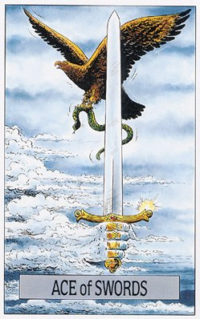
Туз Мечей
П: Чрезмерная сила. «Тяжелая» рука. Нестоящая победа. Отсутствие возможности реализовать важную идею. Отрывистая речь. Сарказм. Подстрекательство. Противостояние. Преследование. Задержка действия. Плохое чувство такта. Препятствия. Отсутствие планирования. Злоупотребление силой. Энергия, направленная не в то русло. Ненужные раны. Деструктивность. Несправедливость. Нечестность. Самоистязание. Поспешишь – людей насмешишь. Тот, кто с мечом придет, от меча и погибнет. Сила определяет поступки. Задеть за живое. Вам решать!
Люди: Чемпионы. Люди с хорошо развитой логикой. Доминирующие личности. Юристы. Истинные борцы за свое дело. Хирурги и другие медицинские работники. Люди, спасающие жизнь. Острые языки.
П: Провокаторы. Самоистязатели. Эксплуататоры. Жертвы. Джек-потрошитель.
Урок: Туз — это обоюдоостиый меч, поэтому в данной ситуации вы должны оценить свою личную власть (силу) в глобальном смысле и не оставаться двоедушным. Научитесь реагировать интеллектуально и эмоционально на окружающий вас мир. Это означает, что вы должны развивать свою проницательность в такой степени, чтобы быть в состоянии согласовывать элементы, которые поначалу могут казаться вам противоположными.
П: Вы позволяете своей чрезмерной власти влиять па ваши суждения. Вы обеспокоены и угнетены и ожидаете, что произойдет худшее. Вам грозит поражение.
Работа: Ясное представление о деле, близкое разрешение проблемы, сдвижение с мертвой точки, новая идея, раставление все по местам, избавление от застоя, продуманное решение расстаться с прежней работой.
П: Проблемы с властью. Проблемы с законом. Разрушение планов, невозможно реализовать идею.
Сознание: Осознанность, ясность, понимание. Нужно по-новому взяться за проблему, разделить ее на части и проанализировать по очереди.
П: Умственное леньтяйство, неосознанность. Иллюзии. Неясное мышление. Плохая память. Безнравственность. Хаос. Неправильное использование интеллекта.
Отношения: Серьезный разговор, который принесет свободу или решение проблемы, освобождение от иллюзий, распад союза.
П: Неуважение к чувствам других. Вас используют. Угрозы. Сплетни. Ненужный разрыв. Эксплуатация. Доминирование. Незапланированная беременность.
Медицина: Тяжелая операция. Проблемы с медицинским вмешательством. Верхние дыхательные пути. Необходимость хирургического вмешательства. Медицинское обследование. Анализ крови. Инъекции.
П: Суицидальная депрессия. Простуды и другие инфекционные заболевания верхней части дых.тракта.
Расклад Путь.
Каждый из Тузов олицетворяет некий шанс. Туз Мечей соответствует высшему Разуму, той силе познания, которая ведет к ясности, непротиворечивости и способности принимать решения. В противоположность следующей карте (Двойке Мечей), символизирующей разрушительную силу сомнения, здесь работа ума осуществляется в наиболее чистой, светлой и освобождающей форме. Всю остроту ума, которой мы располагаем, надо направить на проникновение в суть проблемы, не теряя при этом из виду общей картины, не топя проблему в споре о словах и не отмахиваясь от нее "за незначительностью", говорит эта карта.
ПОЗИЦИЯ 2: Вы очень ясно и разумно проанализировали положение вещей и можете теперь принять вполне однозначное решение. Постарайтесь лишь не увлекаться пустыми словопрениями и не терять из виду общей картины.
ПОЗИЦИЯ 7: Попробуйте сначала абстрагироваться от происходящего, попытайтесь понять, что лежит в его основе. Найдите эту идею и разберите её во всех деталях, а уж потом делайте выводы. Возможно, что при этом вы обнаружите некую "чувствительную точку", которой до сих пор не замечали, и это поможет вам выработать ясное и однозначное решение.
ПОЗИЦИЯ 3: Вы чувствуете, что "кризис назрел", то есть пора принять окончательное решение. При этом вы уже свободны от каких бы то ни было колебаний и эмоций. Остается лишь проверить карту в позиции 6:на что вам следует настроиться дальше?
ПОЗИЦИЯ 6: От вас требуются хладнокровие и благоразумие, потому что возможны конфликты, а также здоровый скепсис по отношению ко всему происходящему. Будьте начеку и не слишком увлекайтесь. Тогда вы сможете судить обо всём непредвзято и принять разумное решение.
ПОЗИЦИЯ 4: Вы показали себя умным, гибким или достаточно трезвомыслящим человеком. Все уже убедились, что вам нужен ясный и четкий выход из создавшейся ситуации. Проверьте карту в позиции 7:она подскажет, каким может быть этот выход.
ПОЗИЦИЯ 5: Продемонстрируйте свою решимость конструктивно разобраться с этой проблемой. Пусть все убедятся, что вы стремитесь разрушить старое, чтобы построить новое. Но не слишком увлекайтесь, а постарайтесь оставаться в пределах объективности.
РАБОТА: Ясное, четкое представление о своем деле, позволяющее принимать вполне однозначные решения, а также признак близкого разрешения какой-то запутанной проблемы. Некая свежая струя, дающая новый стимул рутинному делу или сдвигающая с мертвой точки "буксующие" переговоры. Или беседа, которая расставит все по своим местам и оживит "застоявшуюся" атмосферу. Символика остроты и разделения, связанная с этой картой, может означать продуманное решение расстаться с прежней работой.
СОЗНАНИЕ: Здесь этот Туз показывает, что нам нужно по-новому взяться за проблему, долго казавшуюся нам неразрешимой, чтобы разделить ее на отдельные, доступные анализу части и разобраться с ними по очереди: только так мы сможем решить всю проблему в целом. Благодаря этой способности к анализу и синтезу мы можем найти выход из запутанных ситуаций, освободиться от зависимостей разного рода и начать целенаправленно двигаться по новому пути.
ЛИЧНЫЕ ВЗАИМООТНОШЕНИЯ: Туз Мечей может означать здесь серьезный разговор, который принесет свободу, или решение (и преодоление) глубоко лежащей проблемы. Кроме того, ясный и трезвый взгляд на вещи, с которым связывается эта карта, может означать освобождение от иллюзий, то есть, в конечном итоге, распад союза.
Туз мечей - познание.
К некотоырм правильным решениям приходишь только потому, что дорога к неправильным в тот момент была закрыта. (с) Ганс Крайлсхаймер.
Вопрос для медитации.
Ищу ли я высшего знания или часто мне достаточно простых и удобных объяснений?
Отношения.
Отдавайте себе отчет в том, что вы делаете. Сейчас у вас есть шанс прояснить что-то, глубоко понять или принять разумыне важные решения.
Будущее.
Перед вами решающая фаза. Используйте возможность прояснить что-либо или принять разумное решение.
В кризис.
Мысленно отойдите в сторону и попытайтесь решить свою проблему отдельно от желаний, забот и бед. Вам в голову придет ясное решение, и вы сможете расколоть орешек.
Если нечем заняться.
Вы отодвигаете от себя решение? Вы никак не можете начать что-то? Тогда сегодня - День прояснения.
Аффирмация.
Я готов к решающему открытию. Я принимаю четкие и ясные решения.
1. Исходная ситуация. В данный момент у вас есть возможность: Ясно видеть, что происходит. Четко анализировать проблемы. Выделить то, что нуждается в прояснении или пересмотре. Принять четкое решение. Придти к правильному восприятию через интуитивное озарение.
2. Сейчас не время. Ждать озарений. Искать возможность прояснить ситуацию. Анализировать или принимать решение. Проявлять сдержанность, хладнокровие, опираться на здравый смысл, относиться к чему-то скептически. Надеяться на интуитивное прозрение и восприятие.
3. Сейчас важно. Принять четкое решение. Избавиться от беспокойства, "витающего в воздухе". Вникнуть в самую суть дела. Понять, что именно необходимо отделить, разрешить, прояснить. Оттачивать свой ум. Использовать интуицию и ум, чтобы принять грамотное решение.
4. Результат. Гениальная идея, которая поможет разрешить проблему. Принятие разумного решения. Ясность. Возможность понять, что лучше всего подходит вашему умственному и душевному складу.
Шанс прояснить ситуацию, ясность, острый ум. Меркурий и Марс или Меркурий и Юпитер. В вашем распоряжении большая сила. Новая идея. Сила стихии Воздуха. Сила разума. Свобода. Решительность. Ментальная энергия. Смелость. Свежие идеи. Сила слова. Не было бы счастья, да несчастье помогло. Начало успеха. Чувство такта. Неотвратимые и радикальные перемены. Концентрация энергии. Преодоление препятствий. Сфокусированный разум. Логика. Порядок. Дисциплина Умение определять цели. Уравновешенные действия. Рациональность. Умение все тщательно обдумывать. Попадание «в яблочко». Справедливость. Закон. Юридические вопросы. Авторитарность. Сила воли… У каждого облака – серебряный краешек. Перо сильнее меча. Следует подумать, прежде чем действовать. Сначала разум, потом чувства. Великое процветание или великая нищета. Начало учебы, участие в конференции, симпозиуме и т.д. Первая мысль. Идея-фикс.
Совет: Выясните отношения, вникните в суть дела, примите решение.
Предостережение: Не придирайтесь к Мелочам и не старайтесь все «просчитать».
2 Мечей
П: Выход из тупика. Движение. Перемены. Способность принять решение. Облегчение. Быстрые результаты принятия решения. Возобновление движения. Ослабление контроля. Эффект пульсации.
Люди: Те, кто не в состоянии принять решение. Люди, подавляющие свои эмоции. Вражеская сторона.
П: Те, кто недавно приняли ответственное решение, но его последствия еще не известны. Жулики.
Урок: Возможно, вы являетесь самым главным врагом для самого(ой) себя. Не наступайте на горло собственной песне.
П: Остерегайтесь недобросовестных дельцов. Вы вольны продолжить движение, но опасность по-прежнему близка. Делайте все свои дела с большой осторожностью.
Работа: Научное или интеллектуальное сотрудничество с другим человеком. Начало учебы на другом факультете.
П: Жульничество, разногласия между сотрудниками. Отказ от учебы. Неустойчивое положение.
Сознание: Прекрасные аналитические способности, но без целостности. Прекрасные способности к концентрации.
П: Решение принято. Эмоции вырываются на поверхность. Внимание к собственным чувствам.
Отношения: Внутренний разлад, скепсис, нежелание или неспособность сделать выбор, принять решение, сомнения. Единственное спасение - резкий разрыв, но это крайняя мера.
П: Ожесточенная дискуссия способная испортить отношения. Бестактность.
Медицина: Легкие и плевра.
П: Заболевания легких и плевры (грыжа диафрагмальная, пневмосклероз, саркоидоз).
Расклад Путь.
Эта карта указывает на ситуации, в которых человека охватывают сильные, буквально гложущие его сомнения. Иногда это — отчаянная попытка напрячь весь свой интеллект, чтобы выработать позицию и найти путь к решению. Однако подлинная убеждённость возникает, лишь когда мы осознаем проблему и на уровне чувств. А эта область подсознания (на карте - символы моря и Луны) оказалась отрезана от всего остального. Скрещённые мечи — это границы интеллекта, закрывающие ему доступ к ней. Таким образом, карта олицетворяет то неприятное положение, в которое мы попадаем, когда слишком надеемся на логику, отказываясь прислушаться к своему внутреннему голосу. Двойка Мечей составляет противоположность Жрицы, о её сродстве с которой напоминает сидячее положение обеих. Голубые тона, олицетворяющие интуицию Жрицы, здесь оттеснены на задний план. Женская фигура в сером, на серой же опоре, возможно, символизирует бесцветность мысли, пустые рассуждения, — ту самую "сухую теорию", о которой писал Гёте. В народных сказках символом такой "всеразъедающей" силы сомнения часто служит серый волк.
ПОЗИЦИЯ 2: До сих пор ваше отношение ситуации было скорее скептическим – или неопределённым. Однако ваш критический, нарочито беспристрастный взгляд так и не привёл вас к оптимальному или даже хоть сколько-нибудь приемлемому решению. Вы ведь уже давно всё проанализировали - соберитесь же с силами и выберите ясный и однозначный способ действий.
ПОЗИЦИЯ 7: Будьте скептиком! Постарайтесь в этот раз подняться выше своих собственных чувств и внимательно проанализируйте свои влечения и страхи. Первым делом вы должны подвергнуть всё сомнению, чтобы добиться полной ясности, иначе вы можете сильно обмануться в своих ожиданиях.
ПОЗИЦИЯ 3: Вас охватывают противоречивые чувства. При этом вы не осмеливаетесь доверять своему чутью и мечетесь между эмоциями и логикой. Возможно, вы запутались в сомнениях, заблудились и уже не верите, что когда-нибудь выберетесь из этой ситуации. Однако время идёт, и вам пора уже восстанавливать своё внутреннее равновесие.
ПОЗИЦИЯ 6: Вам вряд ли стоит полностью доверяться чувствам. Вы раньше бывали слишком легковерны, а теперь стоит подойти к делу более критично. Даже если вам будет стыдно за свою недоверчивость, не идите на поводу у инстинкта, у своих желаний и влечений. Если же ситуация внушает вам опасения, обдумайте всё как можно более здраво, чтобы уберечь себя от ошибок и иллюзий.
ПОЗИЦИЯ 4: Вами двигал скепсис, сомнения – или, возможно, нерешительность. Вы с самого начала не верили в это дело и даже, может быть, выражали своё недоверие слишком резко. Впрочем, это могло быть и от отчаяния.
ПОЗИЦИЯ 5: К этому делу нужно отнестись крайне критично. Не бойтесь выглядеть скептиком, покажите, что вы не склонны верить пустым обещаниям. От вас требуется холодный, трезвый расчёт.
РАБОТА: Мы дошли до точки, в которой логика больше не помогает нам выбрать дальнейший способ действий, однако мы упорно не решаемся положиться на интуицию. Обдумать "головой" детали, конечно, не помешает, однако если мы по-прежнему будем подавлять свои чувства, то никогда не найдём кардинального решения проблемы.
СОЗНАНИЕ: Карта говорит о прекрасных аналитических способностях. Это — карта интеллекта, способного постепенно, по частям разобраться в самых запутанных проблемах. Опасность лишь в том, что в конце этого анализа дальнейший путь нам может преградить гора этих самых мелких частей, из которых мы не сумели сложить нового целого. Пока путь к морю, символизирующему целостность, остаётся закрыт, мы можем строить лишь всё более головоломные умозрительные конструкции, возможно, даже блестящие, однако никогда не достигнем мира с самими собой. Чем строже будет наша логика, тем логичнее мы придём к выводу, сделанному ещё великим скептиком Декартом: "Всё, что вероятно, вероятнее всего ложно".
ЛИЧНЫЕ ВЗАИМООТНОШЕНИЯ: Внутренний разлад, скепсис, нежелание или неспособность сделать выбор, принять окончательное решение. Состояние, близкое к критическому, потому что союз двух партнёров основывается на чувствах — любви, близости и привязанности, а яд сомнения подрывает эти основы. Единственным спасением в такой ситуации часто оказывается резкий разрыв. Но этим средством можно воспользоваться лишь как крайней мерой: привыкать к нему ни в коем случае нельзя.
2 мечей - сомнения.
Никогда неизвестно, что будет, если положение вещей изменится. Но разве известно, что произойдет, если все останется на своих местах? (с) Элиас Ганетти.
Вопросы для медитации.
Что раздирает меня изнутри? Есть ли у меня неосознанные сомнения, которые сковывают меня?
Отношения.
Будьте настроены скептически и прислушивайтесь к своим сомнениям. Возможно, вам нужно критически взглянуть и на собственную позицию?
Будущее.
Вы попали в конфликт интересов или начинаете сомневаться. Отнеситесь к своим сомнениям серьезно. Не дайте себя уговорить.
В кризис.
Проведите критическую переоценку ценностей. Поставьте под сомнения все - себя самого, свои цели, образ действий, свою доверчивость. Доверяйте только тому, что выдержит этот экзамен.
Если нечем заняться.
Просто представьте, что все, во что вы верили как в само собой разумеющееся, неправильно, что правильным может быть как раз противоположность. Позвольте себе удивиться тому, что из этого получается.
Аффирмация.
Мой критический, аналитический ум защищает меня от глупостей и легкомыслия.
1. Исходная ситуация. Сомнения довели вас до головной боли. Вы разрываетесь на части, не знаете, что выбрать. Вы не в состоянии принять решение. Вы стремитесь привести в порядок свои мысли. Вы хотите принять честное решение, уравновешивающее противоречия.
2. Сейчас не время. Для сильного умственного напряжения. Подвергать сомнению все подряд. Быть критичным, хладнокровным, расчетливым. Сомневаться в этом деле. Закрывать глаза на факты и тянуть с решением. Вести себя нейтрально. Стремиться к миру любой ценой.
3. Сейчас важно. Подойти к делу критически. Рассмотреть ситуацию со всех сторон. Выразить сомнения по этому вопросу. Задать основополагающие вопросы. Стремиться избежать конфликта и\или уладить его. Тщательно рассмотреть это дело.
4. Результат. Большие сомнения. Ситуация, в которой вы будете разрываться между несколькими вариантами. Положение, которое вы попытаетесь разрешить с помощью своих умственных способностей. Мирное разрешение проблемы.
Сомнения, напряжение ума, дискуссия, слишком надеемся на логику. Луна в Близнецах. Сдерживание эмоций в узде. Чувство безысходности. Неуверенность в выборе пути. Приостановленные действия. Нерешительность. Патовое положение. Парадокс. Бездействие. Напряжение. Противостояние. Задержка действий. Ожидание. Отчуждение. Неизменность положения. Антагонизм. Ссоры. Перемирие в борьбе. Трудное решение. Перегруженность из-за слишком большого количества факторов. Хрупкое равновесие. Подавление чувств. Быстрое движение в никуда. Неспособность двигаться. Идеальное равновесие. Умение не выказывать своих эмоций. Согласие, Урегулирование. Способность делать итоги.
Совет: Подвергай все сомнению; доверяй, но проверяй.
Предостережение: Не пытайтесь найти решение или линию поведения с помощью одного только интеллекта. Логика больше не может помочь, следует довериться интуиции.
3 Мечей
П: Разочарование. Ложная информация.
Люди: Брошенные люди. Люди, переживающие горе. Раздраженные люди. Люди, находящиеся в состоянии стресса. Научные работники сконцентрированные только на своих теориях и исследованиях.
П: Отвергнутые любимые. Изолированные от мира люди. Монахи и монахини.
Урок: Из страданий рождается мудрость и понимание. Любовь возможна только тогда, когда в отношениях преобладает честность.
П: Потеря, беспорядок и замешательство.
Работа: Требуется шаг идущий вразрез с чувствами, ненавистная работа, тяжелый разговор, неприятности.
П: Прошлые психологические травмы мешают работе.
Сознание: Утрата иллюзий или предстоит узнать горькую истину, утратить иллюзии.
П: Длительное сожаление и депрессия. Нежелание отпустить боль, причиненную в прошлом. Безысходность.
Отношения: Несчастная любовь, разочарование, обида, взаимные упреки, разрыв, решение покончить с союзом-ловушкой.
П: Вы пережили разлуку, но боль еще продолжается. Менее болезненный разрыв. Отчуждение.
Медицина: Больное сердце. Аборт. Нарушения равновесия кислотно-щелочного баланса.
П: Несложные хирургические операции. Выздоровление.
Расклад Путь.
Из-за рисунка эту карту часто считают символом огорчений, главным образом, из-за несчастной любви. У неё есть, конечно, и такой аспект, однако этим её содержание далеко не исчерпывается. Главное значение Тройки Мечей — выбор, сделанный вопреки чувству. А вот что это, малодушие или, наоборот, шаг к освобождению, можно понять, лишь зная подоплеку заданного вопроса и проверив остальные выпавшие карты. В ситуациях, когда чувства жестоко подавляются разумом, эта карта, конечно, имеет негативный характер. Но если она показывает, что нам силой разума удалось вырваться из плена какой-либо зависимости, освободиться от сомнительных привычек, то это —шаг хоть и болезненный, но необходимый.
ПОЗИЦИЯ 2: Вы понимаете, что ваш план сопряжён с весьма болезненными переживаниями и огорчениями. Если вы уверены, что таким путём положите конец состоянию, ставшему невыносимым, то не отступайте от своего. Если же вы, наоборот, стараетесь подавить в себе нужные, ценные чувства, то остерегитесь. Карта в позиции 7 укажет, как следует расценивать эту ситуацию.
ПОЗИЦИЯ 7: Не бойтесь узнать нечто неприятное для себя. Доверьтесь выводам, к которым приходит ваш разум: они помогут вам найти выход из теперешней ситуации. Преодолейте свои прежние чувства и покончите раз и навсегда со всеми старыми привычками и привязанностями.
ПОЗИЦИЯ 3: Вы глубоко оскорблены и разочарованы. Либо вы прошли болезненный, но необходимый этап освобождения от иллюзий, либо же с самоубийственной настойчивостью пытались вытравить в себе чувства с помощью яда разума. Проверьте хорошенько, на правильном ли вы пути. Карта в позиции 6 может дать вам в этом отношении важный совет.
ПОЗИЦИЯ 6: Вы находитесь в ситуации больного, помочь которому может только операция. Наберитесь же мужества и вступите на этот путь ясного, хотя и болезненного познания. Помогите себе избавиться от прежних зависимостей и болезненных чувств. И, когда ваши раны заживут, вы вновь почувствуете себя здоровым и свободным.
ПОЗИЦИЯ 4: Вы чувствуете себя "униженным и оскорблённым". Или, наоборот, стараетесь держать свои чувства под контролем. Если это - реакция на недавние события, то такая проработка своих чувств может быть очень полезна. Если же это стало вашей привычной маской, как можно скорее перебирайтесь на светлую сторону жизни. Карты в позициях 5 и 7 подскажут вам, как это сделать.
ПОЗИЦИЯ 5: Не скрывайте боль и разочарование, но прежде всего – покажите, что вы не измените своё решение ни при каких условиях. Не давайте сбить себя с толку и двигайтесь дальше прямым, хотя и тернистым путём познания. Каждый шаг и каждый новый день будут придавать вам уверенности в себе и удалять от опасности вернуться к старому.
РАБОТА: Здесь Тройка Мечей означает, что от нас требуется некий шаг или действия, идущие вразрез с нашими чувствами. Мы должны выполнить работу, которую ненавидим, или пойти на тяжёлый разговор, от которого нас с души воротит. Если положение у нас скорее руководящее, то карта может означать неприятную необходимость выговора подчинённому, которого мы очень ценим. Конечно, она может означать, что это нам самим придётся выслушать выговор, возможно, несправедливый, или пережить какие-либо иные неприятности, которые могут закончиться даже увольнением.
СОЗНАНИЕ: На уровне сознания Тройка Мечей показывает, что нам предстоит узнать горькую истину, утратить все прежние иллюзии. Нам может открыться нечто, что заставит нас отказаться от прежних, привычных представлений, преодолеть инерцию мышления, или сделать тот шаг, которого мы до сих пор избегали — из страха ли или из отвращения. Там, где интеллект задавил все чувства, эта карта служит предостережением, однако если острое лезвие разума может освободить нас от болезненных, чрезмерно владеющих нами чувств, этот болезненный шаг может быть спасительным, как вовремя сделанная хирургическая операция.
ЛИЧНЫЕ ВЗАИМООТНОШЕНИЯ: А вот здесь это действительно чаще всего — несчастная любовь. Разочарование, обида, взаимные упрёки, нередко заканчивающиеся разрывом. Однако, и тут эта карта может проявить своё позитивное значение: решение, наконец, покончить, несмотря на всю боль, с союзом, ставшим для нас ловушкой, тупиком или пыткой.
3 мечей - болезненное осознание.
Для большинства из нас лечение - это то, что создает хорошее самочувствие и уменьшает боль. И все же часто как раз то, от чего мы хотим вылечиться, и есть то, что нас лечит. (с) Питер Кингсли.
Вопросы для медитации.
Какое неприятное открытие я до сих пор скрывал сам от себя? Каким образом я оттягиваю трудное решение?
Отношения.
Вам предстоит трудное осознание и нелегкое решение. Не упускайте этот опыт, будьте трезвы и последовательны.
Будущее.
Смиритесь с разочарованием, неприятным открытием или решением, которое дается с трудом, если при этом вы уверены, что они правильные.
В кризис.
Не позволяйте себе идти за вымыслами или ложным сочувствием. Сейчас время трезвой критической оценки положения вещей и болезненных, но верных решений.
Если нечем заняться.
Сегодня улаживайте только те дела, которые должны быть сделаны, даже если это вас совсем не интересует.
Аффирмация.
Я делаю то, что нужно и то, что верно, даже если это причиняет боль.
1. Исходная ситуация. Вам пришлось пройти через боль и пережить кризис. Вы страдаете от любви. Вы разочарованы и ранены в самое сердце. Вам пришлось принять трудное, болезненное решение. Вы скорбите, вы разочаровались или узнали горькую правду.
2. Сейчас не время. Принимать решение, противоречащее вашим чувствам. Идти на разумные жертвы. Бояться боли или испытывать разочарование. Смиряться с болезненным известием или пониманием. Позволить разуму победить.
3. Сейчас важно. Предпринять болезненный, но необходимый шаг. Быть готовым к мучительному осознанию. Смириться с разочарованием. Обратить внимание на тревогу и беспокойство. Принять разумное решение, даже если это трудно.
4. Результат. Вынужденное, но разумное решение. Разочарование. Конфликт ума и сердца. Болезненное и вместе с тем важное осознание.
Огорчение, несчастная любовь, выбор, сделанный вопреки чувству, освобождение от зависимости. Марс и Луна в аспекте с Меркурием. Эмоциональная гроза. Потеря. Огорчение. Эмоциональная боль. Утраченная любовь. Проблемы во взаимоотношениях. Буйные эмоции. Нарциссическая обида. Раздражительность. Ссоры. Конфликты. Непонимание. Отчуждение. Дисгармония. Переворот. Нервное поведение. Грусть. Боль. Невезение. Хирургическая операция. Разрыв. Огорчающие перемены. Самочувствие зависит от погоды (чувства меняются как погода). Семь пятниц на неделе. Стресс. Напряжение. Плач. Горе. Скорбь. Темнота перед рассветом. Глубина чувств. Трещина. Разделение. Развод. Отверженность. Отказ. Потеря любимого. Слезы. Выкидыш. Похороны. Некролог. Смерть. Болезненные новости. Задеть за живое.
Совет: Будьте готовы узнать о чем-то неприятном, но неизбежном.
Предостережение: Не предавайтесь мечтаниям, чтобы не испытать разочарования. Вам нужна консультация специалиста чтобы найти выход.
4 Мечей
П: Некогда расслабляться. Возобновление действий. Отдых окончен. Призыв к действию. Приход в себя после предыдущей деятельности. Вперед! Вперед на штурм!
Люди: Те, кто нуждаются в отдыхе. Люди, выздоравливающие после болезни. Сотрудники медицинских учреждений. Посетители больницы. Пациенты.
П: Непрошеные гости. Заключенные. Узники. Изгнанники. Бастующие рабочие.
Урок: Хотя мы можем чувствовать себя более безопасно в рамках привычной системы взглядов, тем не менее, если мы откроемся для высшего духовного руководства, мы сможем выйти за пределы своих повседневных проблем и конфликтов.
П: Вы снова активны. Продолжайте двигаться с осторожностью и задействуйте свою проницательность.
Работа: Застой, истощение, нужен отпуск или помощь специалиста.
П: Возвращение к работе.
Сознание: Интеллект перегружен и теперь не может действовать, если продолжать работу это приведет к отчаянию, нужна пауза.
П: Конец плохого периода, застоя и истощения. Новые силы и желание вернуться к жизни.
Отношения: Изоляция, брошенность, истощение и одиночество, риск потерять себя либо партнера, нужен отдых.
П: Конец периода изоляции, возобновление отношений и общения.
Медицина: Пребывание в больнице. Посещение больницы. Визит к врачу.
П: Вирусные заболевания передающиеся воздушно-капельным путем.
П 4М + 2М + 13 + 17 - вирусное воспаление легких.
Расклад Путь.
Четверка Мечей — это карта застоя, прерванной деятельности и вынужденного покоя. В этом значении она напоминает карту Повешенного, отличие же ее от него в том, что она связана с конкретными событиями: те препятствия или затруднения, на которые указывает Четверка, обычно просты и понятны, и преодоление их не требует от нас переворота всех жизненных устоев. Это положение сродни болезни, которая тоже составляет одно из значений карты. Мы вынуждены прервать активную деятельность, сделать паузу. Будем ли мы страдать или постараемся использовать эту паузу, чтобы разобраться с самими собой, зависит только от нас. При этом ясно, что использовать паузу для работы над собой мы можем, но вот устраивать ее себе по доброй воле стали бы вряд ли.
ПОЗИЦИЯ 2: Вы видите, что тут ничто не сдвигается с места уже длительное время, и каких-то "всплесков" вам ожидать не приходится. Проверьте, обещает ли вам карта в позиции 1 улучшение или ускорение. Если нет, то оставьте все, как есть, до тех пор, пока не восстановятся ваши силы.
ПОЗИЦИЯ 7: Думаю, что вы уже убедились, что ваше дело "застряло", причем надолго. И, если вы будете продолжать, то лишь потратите понапрасну последние силы, так что вам все равно придется остановиться. Лучше скажите себе: сейчас не время заниматься этим. Оставьте пока все как есть и переключитесь на что-нибудь другое.
ПОЗИЦИЯ 3: Вы чувствуете себя беспомощным, попавшим в тупик. Проверьте карту в позиции 6: если она дает совет попробовать еще раз, то мобилизуйте все резервы и идите на приступ. Во всех других случаях лучше пощадить себя, отдохнуть и сделать себе что-нибудь приятное.
ПОЗИЦИЯ 6: В ближайшее время в вашем деле не предвидится подвижек, так что не тратьте силы зря. Сделайте паузу, порадуйте себя чем-нибудь - живописью, музыкой, медитацией, но опять-таки без излишних усилий. Съездите куда- нибудь "проветриться" хоть на недельку - в горы, к морю, просто на природу, хоть на рыбалку. И увидите, как быстро у вас появятся новые силы.
ПОЗИЦИЯ 4: По вам заметно, что дела у вас не идут, что проблема не решается, или что вами пренебрегают. Вид у вас усталый. Возможно, вы даже болеете. Вам немедленно нужен отдых. Спросите карту в позиции 5, что она посоветует вам делать.
ПОЗИЦИЯ 5: Похоже, что ваши замыслы потерпели фиаско или, по меньшей мере, застряли на неопределенное время. Если это так, то какой смысл скрывать от других свою усталость и разочарование? Извлеките из них пользу, используйте это время, чтобы "отключиться" от всего, восстановить свой душевный покой. Съездите куда-нибудь отдохнуть или, если вы болеете, то подлечитесь.
РАБОТА: Застой. Дело не может сдвинуться с мертвой точки, потому что наши силы иссякли. Продолжать дальше нет смысла, потому что "сопротивление материала" и наша слабость могут в сумме привести нас к полному краху. В таких-то ситуациях нам и нужны бывают покой, отдых, пауза, а может быть, и действительно помощь врача или консультация психотерапевта. Лишь когда мы восстановим свои силы, побывав, например, в отпуске, можно вновь взяться за решение задачи, представлявшейся такой безнадежной. И тогда мы с удивлением обнаружим, что дело идет легко, как по маслу.
СОЗНАНИЕ: Вполне вероятно, что мы дали своему интеллекту слишком большую нагрузку, и теперь он не может связать даже двух самых простых мыслей. Мы спотыкаемся о препятствия, через которые раньше перенеслись бы с легкостью, и не видим пути дальше. Если же мы проигнорируем предостережение карты и все-таки попытаемся мучительно продолжать работу, это может низвергнуть нас в бездну отчаяния. Вместо этого нам нужно сделать, наконец, так давно необходимую паузу и отдаться радостям жизни, чтобы забыть о своих проблемах на какое-то время. Думать, что мы при этом "теряем драгоценное время", есть величайший абсурд: мы потеряли бы больше времени, тащась в своем теперешнем состоянии по той беговой дорожке, которую после отдыха сможем пробежать с легкостью и радостью.
ЛИЧНЫЕ ВЗАИМООТНОШЕНИЯ: Здесь эта карта означает изоляцию. Либо мы чувствуем себя брошенными, исключенными из числа участников Великих Любовных Игр, либо же ощущаем одиночество или истощение сил в союзе с прежним партнером. Тогда Четверка Мечей предупреждает, что мы рискуем потерять либо себя, либо партнера. Нам нужно срочно дать себе отдых, отбросив все проблемы, и привести себя в порядок, даже побаловать себя чем-нибудь.
4 мечей - затишье.
В жизни есть дни, через которые нужно пройти. Иногда это длится годами. (с) Ганс Кристиан Мюллер.
Вопросы для медитации.
Что обрекло меня на покой? Что поможет мне отдохнуть?
Отношения.
Сейчас лучше отложить то, о чем вы спрашиваете, и подождать лучших времен.
Будущее.
Смиритесь с промедлением. Возможно, вашу идею нужно на какое-то время "заморозить".
В кризис.
Оставьте это, сделайте паузу. Пощадите себя, пока снова не наберетесь сил.
Если нечем заняться.
Просто ничего не делайте.
Аффирмация.
Я отношусь к себе мягко и с любовью. Я веду себя спокойно и жду, что подарит мне тишина.
1. Исходная ситуация. Ваши силы иссякли, вы ощущаете себя парализованным. Вы зашли в тупик. Вы больны или кто-то вынудил вас оказаться без движения. Развитие достигло крайней точки. Вы чувствуете усталость и опустошение. Вы устали после долгого, напряженного конфликта. Вы сложили оружие.
2. Сейчас не время. Останавливаться или притворяться спящим. Чувствовать себя жертвой или ощущать беспомощность. Откладывать намеченное или отгораживаться от своих чувств. Соглашаться на временное перемирие.
3. Сейчас важно. Осознать собственное бессилие. Позаботиться о себе, восстановить силы. Успокоиться и обратить взгляд внутрь себя. Заняться медитацией. Временно отложить это дело. Смириться с вынужденной остановкой. Отказаться от внешних баталий и восстановить внутреннее спокойствие.
4. Результат. Ситуация, в которой вы ничего не можете сделать. Усталость, бессилие или болезнь. Затянувшаяся пауза, промедление или вынужденная остановка. Перемирие.
Застой, прерванная деятельность, вынужденный покой, простые препятствия не требующие переворота всех жизненных устоев, болезнь, пауза. Сатурн в 5 или 6 доме. Потребность в отдыхе и расслаблении. Передышка. Потребность в обновлении. Медленный период. Восстановление сил. Выздоровление. Отдых. Тайм-аут. Отбой. Избавление от стресса. Долгожданный перерыв. Восстановление здоровья. Бездействие. Перегруппировка. Отступление. Потребность в отпуске. Одиночество. Молитва. Медитация. Углубление в себя. Созерцание. Переоценка. Затишье перед грозой. Отпуск. Путешествие. Мирное окружение. Уход от всего. Дайте мне передохнуть. Давайте помолимся.
Совет: Забудьте о чем-то, сделайте перерыв и успокойтесь.
Предостережение: Возможны истощение сил, болезнь, затруднения или тупиковая ситуация.
5 Мечей
П: Ущемленная гордость. Ложная гордость. Смущение. Хитрость. Тайное злорадство. Интриги. Суматоха. Закулисные делишки. Злость. Саботаж. Неискренность. Ограничения. Потеря. Ужесточение ограничений. Кража. Нежелание учитывать последствия. Неосмотрительность. Бестактность. Обвинение. Деструктивное поведение. Похороны. Это нечестно. И это все? Важно только то, проиграешь ты или выиграешь, а не то, как ты играешь. Осторожно: вы можете получить именно то, что хотели.
Люди: Потерявшие свое лицо. Люди, которые все время проигрывают. Злобные сплетники. Саботажники. Те, кто создают проблемы. Враги.
П: Потерявшие свое лицо. Люди, которые все время проигрывают. Злобные сплетники. Саботажники. Те, кто создают проблемы.
Урок: Если вы только что вышли победителем из конфликтной ситуации, то какова цена этой победы? Одержана ли она за счет других? Если вы потерпели поражение, то что можно сделать для того, чтобы вас не эксплуатировали в будущем?
П: Вы по-прежнему переживаете потерю, но не так серьезно, как ожидали. Вы одержали пиррову победу. Вы ведете себя нечестно в деловых отношениях с другими.
Работа: Трудный период, интриги, клевета, низкие оскорбления, увольнение, суд, провал, хождение по трупам.
П: Неудача. Невезение. Поражение. Потеря лица.
Сознание: Агрессивное, деструктивное мышление, раздражительность, жажда разрушения, культ насилия, ненависть, самоубийство.
П: Трусость. Негативное мышление. Неясное мышление. Эгоизм.
Отношения: Бессердечие, ненависть, подлости, садизм, жажда мести, жестокость, распад союза.
П: Унижение. Споры. Насмешки. Высмеивание. Предательство. Злобные сплетни. Дискуссии. Враждебность. Сплетни за спиной. Манипуляции. Доминирующее отношение. Месть. Предательство.
Медицина: Щитовидная железа.
П: Например, зоб, гипертиреоз, гипотиреоз, нарушения обмена йода и т.д.
Расклад Путь.
Пятёрка Мечей, пожалуй, самая "вредная" карта Младших Арканов Таро. Она означает обострение конфликта, мерзкий скандал, "удары ниже пояса", низость и подлость. При этом карта не указывает, исходят ли все эти вредоносные действия от нас самих или, наоборот, мы оказались втянуты в эту неблаговидную историю в качестве жертвы. Об этом могут сообщить лишь остальные карты расклада. Однако в любом случае Пятёрка Мечей означает "Пиррову победу", которая недолго будет радовать победителя.
ПОЗИЦИЯ 2: Вы переживаете фазу обострения конфликта, ожесточения спора, в котором опасаетесь потерпеть тяжёлое поражение. Или же вы сами настолько злы и полны жажды мщения, что готовы "идти по трупам". Если вы немедленно не измените эту свою позицию, то, во всяком случае, ощутимые травмы вам обеспечены. Так что проверьте, что советуют вам карты в позициях 5, 6 и 7.
ПОЗИЦИЯ 7: Вы оказались в весьма неприятной ситуации, которая может перейти в жестокую битву и в любом случае окончится для вас поражением, ибо победитель окажется проигравшим с точки зрения морали. Если вы не видите никакой альтернативы этому, то постарайтесь не опуститься до подлости и низости. Не поддавайтесь на провокации, не попадайтесь в расставленные ловушки.
ПОЗИЦИЯ 3: Вы чувствуете себя разбитым во всех смыслах слова. Возможно, вы лелеете коварные планы в отместку за причинённую вам несправедливость. Однако вспомните: "Кто сеет ветер, пожнёт бурю". Поищите лучше какой-то отвлечённый выход для гнева и агрессии — хорошо помогают рубка дров, ходьба на лыжах, бег или любой вид спорта, где требуются рывок и натиск.
ПОЗИЦИЯ 6: Вам приходится терпеть клевету, унижения и мучения или сносить несправедливые обвинения. Или же вы сами, поддавшись жажде мести, прибегаете к запрещённым приёмам. Вспомните о своём человеческом достоинстве и о своих моральных принципах, чтобы остаться хотя бы моральным победителем в этом споре. Не поддавайтесь на провокации.
ПОЗИЦИЯ 4: Одно из двух: либо вы чувствуете себя глубоко оскорблённым и совершенно разбитым, либо, наоборот, ведёте себя издевательски, раздражённо и оскорбительно по отношению к окружающим. В обоих случаях вы рискуете потерпеть самое сокрушительное поражение, поэтому срочно откорректируйте свою линию поведения согласно указаниям карты в позиции 5.
ПОЗИЦИЯ 5: Смело вступайте в битву, покажите, что вы тоже можете наносить удары исподтишка, устраивать западни и при этом держаться на ногах. Однако дайте понять своим противникам, что бессмысленная борьба "не на жизнь, а на смерть" лишь измотают обе стороны, а потому вы в любой момент готовы покончить дело миром при посредстве нейтрального третьего лица.
РАБОТА: Здесь Пятёрка Мечей знаменует собой трудный период, связанный с интригами, клеветой и самыми низкими оскорблениями, после чего обычно следует увольнение, а часто и драматическое продолжение в суде. Но карта может означать и какой-либо чувствительный удар — отклонение проекта, провал на экзаменах. Иногда это может быть и манера действовать крайне беспардонно, "хождение по трупам".
СОЗНАНИЕ: На уровне сознания она означает, что мы переживаем период агрессивного, деструктивного мышления, формы выражения которого — от раздражительности и жажды разрушения до человеконенавистничества и культа насилия. Иногда эти порывы обращаются против нас самих — в форме последовательного подрыва собственного здоровья или попыток самоубийства. Самая неприятная форма — "психология крестоносца", считающего или выдающего свою разрушительную деятельность за "добродетель" или за служение некоему высшему делу. В области самопознания она может означать внезапный крах всех прежних идеалов и связанное с ним глубочайшее отчаяние —которое, однако, может стать началом пути к открытию Истины.
ЛИЧНЫЕ ВЗАИМООТНОШЕНИЯ: Период бессердечия, ненависти, всяких подлостей и прямо-таки садистской жажды мести, когда партнёры наносят друг другу самые жестокие и безжалостные удары. Это происходит в тех союзах, которые либо уже распались, либо им это вскоре предстоит. А поскольку столь разъярённые противники обычно не способны сами договориться друг с другом, то их примирению лучше всего может способствовать кто-то третий, лицо абсолютно нейтральное. Да и то лишь в том случае, если на это решатся оба партнёра, потому что тот, кто считает себя "более сильным" (или более правым), часто с издёвкой отвергает всякие попытки другого к примирению.
5 мечей - подлость.
Побежденный враг редко похож на того, кого следовало победить. Он напоминает победителю о бедствиях, которые он сам пережил. (с) Манес Шпербер.
Вопросы для медитации.
Сколько ненависть, ярости и жажды я скрываю в своем сердце? Где в своей жизни я открыто или явно применяю насилие?
Отношения.
Сейчас ничего нельзя достичь шармом и дипломатией. Если вы не можете выйти из игры, покажите со всей резкостью, что с вами так шутить нельзя.
Будущее.
Будьте предельно осторожны, перед вами груда осколков. Если же вы пойдете дальше, вам придется вооружиться и вступить в открытую конфоронтацию.
В кризис.
Признайте, что что-то действительно дошло до точки кипения. Приличие, добрая воля и сговорчивость больше не помогают. Отступите и начните все с самого начала, возможно, в другом месте.
Если нечем заняться.
Если вы разгромлены, оступите назад и залечите раны. Или прочитайте историю о Пирровой победе, о которой король молоссов сказал: "Еще одна такая победа, и мы пропали".
Аффирмация.
Если это должно быть так, я буду непреклонно настаивать на своем. Я прорвусь.
1. Исходная ситуация. Вы оказались в ловушке. Вы хотите войны. Вы боитесь позорного поражения. Вы столкнулись с бессердечием, ненавистью и подлостью. Вы чувствуете, что вас предали. Конфликт оказался неизбежен.
2. Сейчас не время. Бояться поражения и действовать исподтишка. Замышлять месть. Впадать в слепое разрушительное неистовство. Провоцировать спор или бояться унижения.
3. Сейчас важно. Выпустить пар. Показать себя не с самой лучшей стороны. Проявить холодность. Признать злость, раздражение, низкие поступки или даже поражение. Бороться изо всех сил, всеми средствами. Больше не избегать войны.
4. Результат. Руины. Болезненный опыт. Крушение планов. Воистину неприятная ситуация или ловушка. Оскорбление, конфликт. Позорный проигрыш. Затянувшийся конфликт, тяжелая ситуация.
Обострение конфликта, мерзкий скандал, низость и подлость, Пиррова победа. Марс в Скорпионе. Ущемленная гордость. Унижение. Споры. Ложная гордость. Насмешки. Высмеивание. Смущение. Хитрость. Тайное злорадство. Интриги. Суматоха. Закулисные делишки. Предательство. Злобные сплетни. Дискуссии. Враждебность. Злость. Саботаж. Сплетни за спиной. Неискренность. Ограничения. Потеря. Ужесточение ограничений. Неудача. Невезение. Поражение. Потеря лица. Трусость. Негативное мышление. Неясное мышление. Кража. Нежелание учитывать последствия. Манипуляции. Эгоизм. Доминирующее отношение. Неосмотрительность. Бестактность. Обвинение. Деструктивное поведение. Месть. Предательство. Похороны. Это нечестно. И это все? Важно только то, проиграешь ты или выиграешь, а не то, как ты играешь. Осторожно: вы можете получить именно то, что хотели.
Совет: Перестаньте выжидать: лучше честно проиграть, чем сдаться без боя.
Предостережение: Не ввязывайтесь в сомнительные дела и прожекты.
6 Мечей
П: Задержки действий. Отсрочки. Отказ от предложенной помощи. Неспособность выпутаться из проблемной ситуации. Затягивание узла. Движение против течения. Отсутствие прогресса. Одна проблема задругой. Мимолетное облегчение. Неумение увидеть ситуацию в целом. Нежелание видеть реальность. Поездка отменяется или откладывается. Изменение планов в отношении поездки. Возвращение из путешествия. Из огня да в полымя. Прятать голову в песок. Не успешный семейный бизнес. Опасность аварии в дороге.
Люди: Путешественники. Люди, совершающие круиз. Пережившие период страданий. Люди, приехавшие издалека. Те, кто помогут в нужде. Самоучки.
П: Медлительные люди. Лентяи. Те, кому нравится плыть по неспокойному морю. Люди, возвратившиеся из поездки.
Урок: Вы должны совершить это странствие. У вас есть силы и упорство, чтобы достичь своей цели. Нацельтесь на то, чего вы можете достичь в будущем.
П: От существующих трудностей нельзя убежать — вы должны оставаться на месте и наблюдать за тем, что произойдет. Поездка, которую вы планировали, будет отложена.
Работа: "Целина", смена работы, новые задачи, нужно расстаться со старым чтобы прийти к новому.
П: Рутина.
Сознание: Осторожное приближение к новым чужым идеям, обычно под чьим-то мудрым руководством, неуверенность.
П: Зацикливание на негативных мыслях. Чувство безысходности или стрессовая ситуация. Бездействие. Неспособность оставить проблемы прошлого позади.
Отношения: Перемены, раставание со старым и привычным и переход к новым. Компромисс.
П: Работа мешает семейным отношениям. Семейные неурядицы.
Медицина: Рот и нос.
П: Стоматологические заболевания, кариес, цинга и т. д. Воспаления слизистых оболочек.
Расклад Путь.
Шестёрка Мечей указывает на перемены, благодаря которым мы можем достичь новых берегов. Как карта "прорыва", она находится как бы посередине между полным радости выступлением героя (Колесница) и печальным прощанием (Восьмёрка Кубков). Конкретное же её значение в большой мере зависит от нас самих — от того, радуемся ли мы предстоящим переменам, ждём ли их, или, наоборот, опасаемся. В любом случае она символизирует путь к новому берегу, для чего, однако, придётся покинуть старый. Что ждёт нас впереди, неизвестно. Поэтому она означает также горечь прощания, неуверенность, опасения и заботы, но также определённое любопытство и интерес к тому, что будет. При этом необходимо учитывать, что этот "новый берег", ожидающий нас впереди, не обязательно означает физическое перемещение откуда-то куда-то; это может быть открытие чего-то нового в самом себе, усвоение новых правил игры, новых норм жизни, или знакомство с другими культурами и религиями. В книге Ицзин и в мифологии переход через воду всегда означает шаг от множественности к единичности.
ПОЗИЦИЯ 2: Вы сами уже чувствуете, что перемены назревают, и именно в той области, о которой вы спрашиваете. Вам придётся отказаться от всех прежних, привычных способов решения проблем, чтобы принять совершенно новую точку зрения. Ваши сомнения понятны, но всё-таки - не сворачивайте с избранного пути!
ПОЗИЦИЯ 7: Вам придётся перестраиваться, хоть это и болезненно. Но с новых высот то, что казалось прежде таким загадочным, теперь стало простым и ясным. Поиграйте в такую игру. Задайте себе вопрос: "Что было бы, если бы...?" И если какая-то мысль начала повторяться, запишите её как ключевое слово. Ежедневно просматривайте свои записи: одна из них и выведет вас к новому берегу.
ПОЗИЦИЯ 3: Внутренне вы уже распростились с прошлым и двинулись вперед, к новому будущему - хотя, возможно, коленки у вас дрожат и сердце ёкает. Присмотритесь внимательно к тем, кто вас окружает - и убедитесь, что вы не одни, что вам помогают, что вас "ведут". Карты в позициях 1 и 6 сообщат вам, кстати, что ждёт вас "на другом берегу".
ПОЗИЦИЯ 6: Забудьте о своих прежних чувствах. Если что-то сильно волнует вас, абстрагируйтесь от этой ситуации. Если вы ощущаете себя сторонним наблюдателем, то пора проявить интерес и смело взяться за дело. У Вас есть шанс уйти от множественности (раздробленности) к единичности (целостности). Об этом говорится в книге Ицзин: "Переход через воду всегда полезен".
ПОЗИЦИЯ 4: Вы ушли, распрощались и движетесь теперь в новом направлении, однако в мыслях вы часто возвращаетесь к прежнему, спрашивая себя, правильно ли вы поступили. Проверьте карту в позиции 1: Она покажет, что ждёт вас на другом берегу, и верно ли вы выбрали путь.
ПОЗИЦИЯ 5: Проститесь навсегда с вашей прежней ситуацией. Даже если такой шаг вас пугает: идите вперёд без страха и сомнений. У вас хватит мужества вступить на ещё не изведанную землю. И, когда вы приблизитесь к цели, то убедитесь, что вам протягивают "с той стороны" руку помощи.
РАБОТА: "Целина". Это может быть как увольнение и переход на другую работу, так и возникновение новых задач на прежнем месте. В любом случае карта показывает, что нам придётся распроститься со знакомой деятельностью и познакомиться с новой, что обычно вселяет неуверенность, а то и страх. Была бы наша воля, мы предпочли бы хотя бы одной ногой оставаться на старом берегу до тех пор, пока не освоимся на новом. Однако карта указывает нам, что расставание со старым есть обязательное условие, без которого новый берег нам не откроется. Этот переход всегда ощущается как некое "подвешенное" состояние, мандраж, страх провалиться на экзамене. Однако мы, как правило, всегда можем рассчитывать при этом на помощь других, по крайней мере, на первых порах.
СОЗНАНИЕ: Постепенное, осторожное приближение к новым, прежде скорее чуждым для нас идеям и представлениям, обычно под чьим-либо мудрым руководством. Отказ от старых представлений и взглядов, "переходный период", неуверенность первых шагов знакомства с новым — вот основной смысл этой карты.
ЛИЧНЫЕ ВЗАИМООТНОШЕНИЯ: Перемены, как внешние, так, возможно, и чисто внутренние. Причём перемены могут быть любые. Например, расставание с прежним партнёром и путь к новому берегу. Или, наоборот, расставание с прежними представлениями (например, о неизбежности собственного одиночества) и налаживание по-настоящему прочных отношений с партнёром. В любом случае нам придётся расстаться со старыми, привычными нормами жизни, чтобы перейти к новым, нам ещё не знакомым.
6 мечей - постепенные изменения.
Чем дольше медлишь перед дверью, тем больше отчуждение. (с) Франц Кафка.
Вопрос для медитации.
Решусь ли я переплыть реку лии буду ждать на берегу до тех пор, пока вся вода не утечет?
Отношения.
Преодолейте замешательство. Решитесь - пусть и осторожно - на новый опыт.
Будущее.
Вы стоите перед переменами, которые вначале не вдохновят вас, но потом приведут к новым берегам. Не задумываясь, принимайте помощь окружающих.
В кризис.
Даже если вы не знаете, зачем это: отбросьте старое и пробирайтесь к новым берегам. Прислушайтесь к русской пословице: На Бога надейся, а сам не плошай.
Если нечем заняться.
Осторожно решитесь на шаг, от которого вы до этого уклонялись. Преодолейте себя, но в то же время не поступайте опрометчиво.
Аффирмация.
Я прорвусь к новым берегам. Я доверяю себе.
1. Исходная ситуация. Вы покинули знакомое окружение. Ощущаете страх перед выступлением на публике. Страх сцены. Вы осторожно движетесь к чему-то новому, неизвестному. Вы направляетесь к новым берегам, прихватив с собой старые страхи. Вы ищите новые горизонты.
2. Сейчас не время. Постепенно отдаляться или позволять течению уносить вас прочь. Проявлять нерешительность или колебаться. Рисковать и уходить к чему-то новому. Вовлекаться в неизвестное. Экспериментировать.
3. Сейчас важно. Нацелиться на нечто новое. Отправиться к новым берегам. Сориентироваться, даже если это трудно. Отказаться от устаревших убеждений. Открыться, несмотря на все свои страхи. Испытать нечто новое.
4. Результат. Новые берега. Изматывающий, действующий на нервы отъезд. Робко попробовать нечто новое. Ситуация, в которой может проявиться страх выступления перед аудиторией. Радость эксперимента, поиски новых перспектив.
Новые берега, прорыв, неуверенность, горечь прощания, опасения, любопытство к будущему. Марс в 4 доме и Меркурий в 9 доме. Стресс и проблемы остаются позади. Ослабление напряжения. Долгожданные перемены. Примирение. Поиск более спокойной гавани. Восстановление ясного и спокойного мышления. Ослабление напряжения после периода стресса. Попутный ветер. Уход от конфликтов и проблем. Движение по течению. Путешествие. Перемещение. Поездка. Заграничное турне. Благополучный переезд. Общение с людьми, находящимися на расстоянии. Приумножение знаний. Избавление от стрессовой ситуации. Благоприятные перемены. Ослабление уз. Изменение отношения. Смерть, которая несет с собой окончание страданий. Переход от деструктивной ситуации к конструктивной. Самое плохое позади. Как мост над мутной водой. Семейный бизнес.
Совет: Отправляйтесь в путь, несмотря на задержки, и вступите на новую землю.
Предостережение: Не празднуйте труса.
7 Мечей
П: Хороший совет. Конструктивная критика. К вам вернется что-то, что ранее принадлежало вам. Действия в своих собственных интересах. Возвращение украденного. Своевременная оплата кредита.
Люди: Изобретательные люди. Воры. Ловкие люди. Доносчики. Те, кто постоянно переезжают с места на место.
П: Дураки. Тупицы. Воры-неудачники.
Урок: Когда нужно подумать над важными вещами, не позволяйте себе уклоняться в сторону (от насущных вопросов). Просчитайте последствия своих действий. Не действуйте торопливо или импульсивно.
П: Вы даете полезный совет другому человеку. Вам можно доверять. То, что у вас украли, будет вам возвращено.
Работа: Могут обмануть, или можем обмануться, возможно добываемся чего-то нечестным путем, лицемерие, "подставка" и т.д. Увиливание от ответственности и халтурение.
П: Незаконченные проекты.
Сознание: Нежелание признавать очевидное и избегание дискуссий, закрываем путь к познанию истины и посвящаем жизнь ложному. Не возводить в абсолют свои взгляды, подвергать их сомнению.
П: Нерешительность. Лень. Пессимизм. Трусость. Мрачное расположение духа.
Отношения: Мелкие гадости, злорадство, лицемерие, низкая ложь, злоба, подлость и предательство, недостаток открытости в отношениях, избегание прямых разговоров и увиливание от решений.
П: Встреча со старым другом или примирение.
Медицина: Нервы.
П: Проблемы психического характера. Воспаления нервов. Защемление или повреждение нерва. Все болезни временные.
Расклад Путь.
Семерка Мечей показывает оборотную сторону Мага, с которой её роднит золотистый фон обеих карт. Сила познания, ясный, острый ум превращаются здесь в хитрости и интриги, подлость и обман. В более мягкой форме это может быть злой язык, интеллектуальное высокомерие или позиция "моя хата с краю" — нежелание замечать какие-то вещи, привычка юлить, увиливать, филонить и т.п. При этом непонятно, кто кого тут обманывает, кто мы - жулик или жертва. Но чаще всего оказывается, что мы вредим тут сами себе.
ПОЗИЦИЯ 2: Вы действовали очень хитро, стараясь либо увильнуть от этого дела, либо обернуть его в свою пользу. В любом случае вы играли не по правилам. То ли вы обманывали сами себя, лишившись шанса приобрести ценный опыт, то ли пытались обмануть или использовать других в своих целях. Возможно, впрочем, что это вам пытались нанести ущерб и вы своевременно обнаружили это.
ПОЗИЦИЯ 7: Если карта в позиции 1 рекомендует действовать, то примените свой ум и смекалку, чтобы добиться цели. Похоже, что вам придется иметь дело с отъявленными мошенниками и помочь вам могут только разум, хватка и даже безжалостность. Если карта в позиции 1 неблагоприятна, то лучше откажитесь от своего плана, по крайней мере, в его теперешнем виде и "уйдите под лёд".
ПОЗИЦИЯ 3: Вы лицемерите, пытаетесь обхитрить других, получить преимущества перед ними. Если эти слова кажутся вам преувеличением: проверьте себя: не упускаете ли вы шанс приобрести ценный опыт, не избегаете ли важного разговора или спора? Карта может означать также, что вы не хотите ввязываться в это дело, что ваш план пугает вас или что вы чувствуете себя обманутым.
ПОЗИЦИЯ 6: Если карта в позиции 1 выглядит сомнительной, то вы очень скоро обнаружите себя впутанным в чьи- то интриги. Будьте начеку, чтобы вас не обманули и не "подставили". Вам самому немного хитрости и маскировки не помешает. Если карта в позиции 1 говорит о чем-то более опасном, то надо быстро и по-умному выйти из дела.
ПОЗИЦИЯ 4: В ваших действиях была некая задняя мысль, и другие заметили это. Вы пытались "пролезть без очереди" или прокладывали себе дорогу любой ценой. Если вам кажется, что такая оценка преувеличенна, значит, вы не были готовы активно взяться за дело или хотя бы занять по отношению к нему ясную позицию. Вместо этого вы ходили вокруг да около, увиливая и пытаясь схалтурить.
ПОЗИЦИЯ 5: Не впутывайтесь в это дело. Напрягите все свои ум и хитрость, чтобы найти отговорку. Будьте, наконец, нахальны, покажите, что вы тоже можете и сжульничать, и подножку подставить, раз уж честно здесь играть не дают. И проверьте карту в позиции 1:она может вовремя предостеречь вас от возможных неприятностей.
РАБОТА: Нас могут обмануть, или мы сами можем обмануться; возможно, мы пытаемся добиться чего-то нечестным, жульническим путем. В ход идут такие сомнительные средства как лицемерие, "подставка", проход вне очереди и прочие малопочтенные трюки. Если эта карта выпадает в ответ на вопрос о работе, конечно, нужно быть начеку, но главное - повнимательнее присмотреться к тому, как мы ведем себя сами, чтобы не пасть жертвой собственных интриг. На событийно-личностном уровне карта символизирует волынщика, либо всячески увиливающего от ответственности, либо откровенно халтурящего.
СОЗНАНИЕ: На уровне сознания она показывает, что мы упорно не желаем признавать очевидное и избегаем дискуссий на эти темы. А это нечестно прежде всего по отношению к самим себе: так мы закрываем себе путь к познанию истины, а в особо тяжёлых случаях посвящаем свою жизнь делу заведомо ложному. Поэтому здесь эту карту нужно воспринимать как серьёзное предостережение и совет не возводить в абсолют свои взгляды, почаще подвергать их сомнению.
ЛИЧНЫЕ ВЗАИМООТНОШЕНИЯ: Здесь спектр этой карты весьма широк: от мелких гадостей, вроде злорадства и лицемерия, до низкой лжи, злобы, подлости и предательства. С другой стороны, она может указывать на недостаток открытости в отношениях, когда мы избегаем прямых разговоров с партнером или увиливаем от важного решения.
7 мечей - ложь.
Трудно верить человеку, если знаешь, что ты на его месте лгал бы! (с) Генри Луис Менкен.
Вопросы для медитации.
Насколько я искренен с другими и с самим собой? Как часто я что-то скрываю?
Отношения.
Будьте осторожны. Возможно, в личной жизни сейчас не все идет так, как надо. Проверьте свою искренность.
Будущее.
Обратите внимание на то, чего вы не получаете. Возможно, вы становитесь жервтой несдержанных обещаний. Но вы и себя водите за нос. Ведете ли вы чесную игру? Задумайтесь: чаще всего обманывает очевидное.
В кризис.
Успокойтесь. Чтобы выпутаться из ситуации, вам нужны хитрость и коварство.
Если нечем заняться.
Сыграйте с друзьями или с членами семьи в игру, где нужно хитрить. Разыграйте партию в покер или почитайте историю о бароне Мюнхгаузене или авантюристе Феликсе Круле.
Аффирмация.
Если нужно, я пройду огонь, воду и медные трубы.
1. Исходная ситуация. До сих пор вы избегали этого вопроса. Вы отказываетесь верить в то, что происходит. До сих пор вам удавалось избегать конфликта. Вы попались на удочку. Некий умник обвел вас вокруг пальца. Вы обманываете себя. Вы обманываете себя и других.
2. Сейчас не время. Идти по пути наименьшего сопротивления. Быть ненадежным, лживым, коварным. Поступать подло. Избегать конфликта и пытаться тайком улизнуть. Бояться обмана или нечестности. Принимать ложное, фиктивное решение. Обманывать себя и других.
3. Сейчас важно. Выйти из игры. Не связываться с этим. Уйти или прибегнуть к хитрости для того, чтобы выпутаться из ситуации. Не обнаруживать своих истинных намерений и блефовать. Показать, что вы знаете все трюки торговли. Доказать свою ловкость и хитрость. Смириться с нечестностью. Понять, что надежды напрасны.
4. Результат. Окружение, которому нельзя доверять. Интрига, тайна или обман. Мошенничество, нечестность или уклонение от ответственности. Тщетные попытки. Опасность быть нечестным с самим собой.
Хитрость, интриги, подлость, обман, злой язык, высокомерие, безразличие, увиливание, самовредительство. Меркурий. Обман. Неосмотрительность. Хитрость. Мошенничество. Сообразительность. Двойственность. Перекладывание чего-либо на других. Неискренность. Умение воспользоваться преимуществами других. Мысли о путешествии. Изменения в карьере или смена места работы. Переезд на новое место. Потребность в разумном управлении. Саботаж. Уклончивые или запрещенные методы. Дипломатия. Осторожность. Ловкость. Уклонение. Непрямые действия. Внимание. Окольные пути. Ум доминирует над силой. Потребность получить профессиональный совет. Уникальное мировоззрение. Нечестные поступки. Незаконность. Кража. Грабеж. Разбой. Надувательство. Невезение. Вина. Расстройство. Предательство. Преследование. Недостойные поступки. Самозащита. Кратковременная поездка. Желание сбежать. Побег. Продвижение вперед. Сам себе враг. Поведение, продиктованное стремлением защитить себя. Чувство неловкости, бегство от действительности. Чувство, что вас предают или что вы потерпите поражение.
Совет: Сблефуйте, подтасуйте карты и выходите сухим из воды.
Предостережение: Обман, хитрость и вероломство могут быть применены против вас.
8 Мечей
П: Преодоление препятствий. Снятие блоков. Новые начинания. Открытые глаза. Снять покрывало с лица. Свобода от ограничений. Освобождение. Облегчение. Избавление от постороннего вмешательства. Свободный проход. Обретение силы. Восстановление способности двигаться. Возвращение продуктивности. Необходимое самоутверждение. Ты свободен и можешь идти. Я знаю, как выбраться из этой ситуации. Непроработанные кармические долги связанные с властью и амбициозностью.
Люди: Те, кто чувствуют себя загнанными в угол, ограниченными, пойманными на горячем. Слепые. Находящиеся в заключении. Люди, которых ограничивают какие-то отношения. Те, кто «ходят по кругу».
П: Те, кто освободились от ограничений, вырвались на свободу, избавились от сковывающих свободу отношений. Освобожденные из тюремного заключения.
Урок: Вы основываете свои планы на ложных предположениях, и это помешает вашему продвижению вперед. Пересмотрите ситуацию и спросите себя, почему вы продолжаете действовать в прежней манере. Вам нужно исследовать другие варианты, но окончательное решение принимайте самостоятельно.
П: Вы уже больше не боитесь. Вы свободны от всех ограничений и можете начать все заново.
Работа: Работа не позволяет раскрыться каким-то сторонам личности, поэтому подавляем их. Надо предоставить себе личную свободу, в крайнем случае - сменить работу. Кража или потеря денег.
П: Пробелы в образовании, материальные потери из-за собственной наивности. Неспособность отдать свои долги. Плохая организация работы и времени.
Сознание: Ледяная тирания рассудка, подавление порывов и чувств, осознание этой тирании.
П: Преодоление страха. Возрождение веры в себя.
Отношения: Скрываем стороны личности и боимся показать их партнеру, одиночество, неготовность открыться другому.
П: Обретение способности открыться другому.
Медицина: Гортань и голосовые связки.
П: Временная или постоянная потеря голоса, полипы на голосовых связках, инфекции или отек гортани. Механические повреждения горла.
Расклад Путь.
Восьмерка Мечей показывает, что мы сами подавляем какую-то часть своей личности. Часто это внутренние барьеры или запреты, которые мы обычно ставим себе сами, однако предпочитаем находить их причину в окружающей среде. Такая типичная позиция "Да, но...", как ее описывает Реверенд Айк: "Я бы с удовольствием сделал то-то и то-то, но...", «Мне бы очень хотелось иметь то-то и то-то, но..., «Я был бы рад стать тем-то и тем-то, но...». При этом единственным препятствием на пути нашего "Я" к этим прекрасным вещам оказывается на самом деле лишь наше собственное "но". Эта карта показывает нам, что те ограничения, трудности и запреты, которые мы ощущаем как помеху, не принадлежат внешнему миру, а отражают лишь наши собственные страхи и барьеры. В любом случае Восьмерка Мечей предупреждает, что мы подавляем что-то сами в себе. Хотя иногда речь может идти лишь о временном отказе от чего-либо или о добровольном ограничении, основанном на вполне достоверной информации.
ПОЗИЦИЯ 2: Вы, наконец, осознали свою несвободу, поняли, что подавляли до сих пор некую важную часть своей души. Возможно, вы сознательно пошли на такое самоограничение, зная, что это временно. Если же такое состояние грозит затянуться, то проверьте карту в позиции 7: она подскажет вам, как освободиться от оков.
ПОЗИЦИЯ 7: Чтобы достичь цели, вы должны будете отказаться от прежних предпочтений и привязанностей. Проверьте, готовы ли вы к этому, сумеете ли вы совершить "бросок через пустыню". Если нет, то вам лучше отказаться от своего плана или пересмотреть свое отношение к ситуации. Попытка приспособиться к ней приведет лишь к подавлению некоей немаловажной части вашей личности.
ПОЗИЦИЯ 3: Вы стесняетесь, робеете или просто привыкли держать себя сдержанно. Какие-то важные стороны вашей души подавлены, скрыты, вы ощущаете несвободу. Карта в позиции 6 скажет, что нужно делать, чтобы такое состояние не затянулось слишком надолго.
ПОЗИЦИЯ 6: Если вы хотите преуспеть в начатом вами деле, то вам придется ограничить себя кое в чем, а также научиться подавлять кое-какие из ваших чувств. Если карты в позициях 1, 5 и 7 подтверждают эту точку зрения, то действуйте сообразно этому в течение некоторого времени. Если же нет, то вам лучше всего отказаться от задуманного.
ПОЗИЦИЯ 4: Вам сейчас трудно. Возможно, что это не все замечают; однако внимательный наблюдатель поймет, что вы что-то скрываете или умалчиваете. Может быть, карта в позиции 2 укажет, что вам следует скрывать это и дальше, а карта в позиции 5 - как сделать своё поведение более открытым.
ПОЗИЦИЯ 5: Покажите, что владеете собой и готовы на решительный шаг. Но его стоит делать, только, если эта ситуация для вас временная. Если же она перманентная, то лучше еще раз продумать всё от начала и до конца. Если эти советы ничего не говорят вам, то тогда эта карта означает, что вам надо осознать свои внутренние барьеры, согласиться со своей робостью и любовно преодолеть ее.
РАБОТА: Наша работа не позволяет раскрыться каким-то сторонам нашей личности, поэтому нам приходится подавлять их. Если мы знаем, что мы в силу обстоятельств вынуждены сейчас пойти на такое ограничение, то с ним можно согласиться. Если же карта указывает на положение, которому конца нет, то ее следует воспринимать как совет срочно предоставить себе личную свободу, а в крайнем случае, и сменить работу.
СОЗНАНИЕ: На этом уровне у карты может быть два значения. Она может означать ледяную тиранию рассудка, с помощью которого мы подавляем важнейшие порывы и чувства, полагая, что это и значит "держать под контролем” свои желания, влечения и мечты. Или - осознание этой тирании, а тем самым и первый шаг к освобождению своего внутреннего узника.
ЛИЧНЫЕ ВЗАИМООТНОШЕНИЯ: Здесь это тоже главным образом барьеры. Мы скрываем какие-то стороны своей личности, потому что боимся предъявить их партнеру. Или же эта карта описывает союз, в котором какая-то часть личности не получает - опять-таки потому, что мы боимся неодобрения или иной негативной реакции со стороны партнера. В любом случае карта рекомендует изменить это положение как можно скорее, потому что подавление какой-то части нашего "Я" рано или поздно неизбежно приведет к распаду союза. Впрочем, карта может описывать и ощущение одиночества, когда мы живем без партнера. Тогда она означает нашу внутреннюю неготовность открыться другому человеку, заранее принять все радости и горести, с этим связанные, и советует для начала создать в себе все необходимые для этого предпосылки, и тогда встреча с ним произойдет сама собой.
8 мечей - трудный переход.
Трудные времена никогда не бывают потерянными временами. (с) Райнер Мария Рильке.
Вопросы для медитации.
Какие внутренние трудности и внешние запреты мешают мне развиваться как личности? Может быть, я всего лишь раскрасил стены и вообразил себе, что свободен?
Отношения.
Сдержитесь. Сейчас не время открываться или надеяться на воплощение заветной мечты.
Будущее.
Считайтесь с ограничениями, которые вы пока нарушили. Вы, скорее всего, будете чувствовать себя униженным или отстраненным.
В кризис.
Затяните пояс потуже. Вы на трудном участке пути и должны идти осторожно и делать маленькие шаги, пока не пройдете его.
Если нечем заняться.
Соблюдайте пост или ограничивайте себя каким-то другим способом. Сегодня двигайтесь только в каком-то ограниченном пространстве.
Аффирмация.
Я могу идти свободно, несмотря на мои оковы. Я владею собой.
1. Исходная ситуация. Вы стеснительны и робки. Вы ощущаете ограничение свободы движения. Вы не знаете, как освободиться. Ваши планы четко сформулированы. Отныне вы не позволите чему-либо вмешиваться в их осуществление.
2. Сейчас не время. Брать себя в руки и подавлять нечто. Ощущать себя способным что-то сделать. Позволить препятствиям возникнуть на вашем пути. Сдерживать себя, держать в руках. Смиряться с трудностями. Устранять то, что мешает.
3. Сейчас важно. Взять себя в руки, внутренне собраться, чтобы достичь цели. Отказаться от чего-либо, ограничить себя. Приготовиться к "засухе". Признать существование препятствий и ограничений. Преодолеть внутренние и внешние барьеры, чтобы обрести ясность.
4. Результат. Ситуация, в которой вам придется взять себя в руки. "Засуха", период различных ограничений. Препятствия и запреты. Четкое видение происходящего и преодоление препятствий.
Подавление части личности, внутренние барьеры, запреты, страхи, временный отказ, разумное добровольное ограничение. Сатурн в 4 доме. Враждебное окружение. Недостаток сил. Заблокированность. Узы. Вынужденные ограничения. Порочный круг. Недостаток самоутверждения. Изоляция. Страх перед неизвестным. Замедленная энергия, Неспособность двигаться. Чувство, что тебя заперли. Несвобода мысли. Поймать на горячем. Сдерживание себя. Закрывать глаза. Недостаток уверенности не позволяет продвигаться дальше. Барьер. Проблемы с общением. Разочарование. Скованность страхом. Неспособность выбраться из сложной ситуации. Беспокойство. Волнение. Цензура. Эмоциональная боль. Тяжелые времена. Несчастные случаи. Смерть. Несчастья из-за собственного поведения. Замешательство. Непонимание. Нерешительность. Паралич. Боязнь применить свою силу. Сопротивление попыткам самоутверждения. Отсутствие веры в себя. Негативные чувства, которые мешают продуктивным действиям. Болезнь. Я продолжаю биться головой о стену. Будь проклят, если ты это сделаешь, и будь проклят, если ты этого не сделаешь. Не подходи. Не отгораживайся от меня. И это пройдет. Когда я говорю «нет», я чувствую себя виноватым. Проработанные кармические долги связанные с властью и амбициозностью.
Совет: Соберитесь с духом и пройдите через вашу пустыню.
Предостережение: Не превращайте свои трудности в бесконечную пустыню.
9 Мечей
П: Надежда. Хорошие новости. Необоснованные переживания. Вера. Луч солнца. Помощь в ближайшем будущем.
Люди: Люди, которые переживают или беспокоятся. Страдающие от бессонницы. Люди, которые в настоящий момент болеют или готовятся к операции.
П: Те, кто лелеют надежды на будущее. Те, кому довелось пережить кошмарную ситуацию.
Урок: Если вы печальны, то должны выявить источник своей печали, гнева или стыда, потому что он сдерживает вас. Это время для самооценки.
П: Вы получили хорошие известия, касающиеся вашего возлюбленного. Будущее сулит надежду и утешение.
Работа: Уныние и пессимизм, страх не справиться, переутомление, риск, страх что ошибка будет обнаружена.
П: Тяжкий труд. Страх перед экзаменом. Или конец плохого периода.
Сознание: Страх, озабоченность и чувство вины сбивают с толку и лишают уверенности.
П: Отставания в интеллектуальном развитии. Страх перед критикой. Или: Конец страданиям. Период стресса и переживаний закончен. Новый рассвет. Чувство значимости. Приятные мечты. Беспокоиться больше не о чем. Свет в конце туннеля. Время залечивает все раны. Кошмар закончен.
Отношения: Страх быть брошенным, боль разлуки, подавленность, одиночество, стыд из-за того что партнер узнал что-то постыдное о нас.
П: Доверие. Обещание.
Медицина: Дыхательная система и психика.
П: Аллергия связанная с воздухом. Самоубийство. Хирургическое вмешательство. Женщина, переживающая боль. Проблемы со здоровьем у женщин. Вероятность смерти.
Расклад Путь.
Этот образ бессонных ночей соответствует состоянию глубокой озабоченности и подавленности. Здесь может быть нечистая совесть, не дающая уснуть, или же ощущение какой-то опасности для жизни, например, болезни или тяжелой утраты. Карта изображает ночные страхи, когда мы лежим без сна, мучимые своими мыслями, и ждем рассвета. При этом она не говорит нам, что именно нас так угнетает: чувство собственной вины или стыда, которое гонит сон прочь, ощущение неуверенности в своих силах перед трудным испытанием или какой-то реальной опасностью, угрожающей нашей жизни. Она показывает только наше отчаяние, тоску, озабоченность, внезапное кошмарное пробуждение, бессонную ночь.
ПОЗИЦИЯ 2: Вы чем-то озабочены. Тёмные предчувствия и опасения убавляют ваш энтузиазм, а то и вовсе лишают вас его. Если эти опасения вызваны внешними причинами, то переговорите с друзьями - возможно, они помогут прояснить ситуацию. Если же это – результат чувства страха или стыда, то вам сперва нужно разобраться с этой теневой стороной своей личности, а потом продолжать дело.
ПОЗИЦИЯ 7: Интуиция духовного роста раскрывает перед вами именно те области личности, где обитают страхи. Переступить через порог страха - это и есть внутренний рост, отступить перед ним - трусость, слабость и новые страхи. Идите же спокойно своим путём через ночь. Поверьте, что путь ваш правилен, и он придаст вам сил, поможет пройти его с прямой осанкой и достичь успеха.
ПОЗИЦИЯ 3: Вы лишились покоя, вас посещают мрачные мысли, мучают и угнетают всевозможные проблемы. Попытайтесь прояснить эту ситуацию: проверьте карту в позиции 1, которая покажет, что вас ждёт впереди, а также карту в позиции 6,которая подскажет, как откорректировать свои действия.
ПОЗИЦИЯ 6: Вас ожидает период подавленности или угрызений совести. Не пытайтесь подавить в себе эти чувства, иначе они вернутся в виде ночных кошмаров и страхов. Откройтесь навстречу своим проблемам. Дайте выход своему горю, своей боли, "выговорите" их наружу. И тогда вы почувствуете, что страхи уходят и наступает облегчение: наконец-то вы сможете вздохнуть свободно.
ПОЗИЦИЯ 4: Ваше мрачное настроение, ваше беспокойство почувствовали все. Бессонные ночи и страхи наложили на вас свой отпечаток. Обязательно дайте себе отдых, побалуйте себя чем-нибудь.
ПОЗИЦИЯ 5: Возможно, вы до сих пор подавляли в себе беспокойство и озабоченность. Эта карта требует от вас как раз противоположного: перестаньте скрывать свою беду, дайте другим разделить вашу боль.
РАБОТА: Унылый, пессимистический настрой из-за того, что работа,начальник или атмосфера в коллективе нас угнетают. Это может быть боязнь не справиться с полученным заданием, переутомление из-за повышенной нагрузки, ощущение повышенного риска или мандраж перед экзаменом, публичным выступлением и т.п. Или нечистая совесть, мешающая нам спать, потому что мы где-то допустили ошибку, небрежность и теперь опасаемся, что это будет обнаружено.
СОЗНАНИЕ: Наш горизонт затянут тучами, мы утратили ясность взгляда из-за страха, озабоченности или чувства вины. Эти чувства могут быть обоснованны, а могут и нет, однако они всё равно вмешиваются в наше сознание, сбивают нас столку и лишают уверенности в себе. Или, возможно, мы сделали для себя некое неприятное открытие и теперь опасаемся последствий.
ЛИЧНЫЕ ВЗАИМООТНОШЕНИЯ: Страх оказаться "брошенным", боль разлуки. Подавленное настроение из-за одиночества или боязнь потерять любимого партнёра, повергающая нас в пучину душевных мук и сомнений. Это могут быть также наши опасения по поводу близких - как оправданные, так и неоправданные. Иногда это стыд оттого, что партнёр вдруг узнал о нас (или чуть было не узнал) такие вещи, которые могут уронить нас в его глазах.
9 мечей - тревога и раскаяние.
Как много часов нашей жизни, которые не вернуть, мы тратим на размышления о проблемах и заботах, о которых забудем уже через год. (с) Андре Моруа.
Вопросы для медитации.
Кому и что я должен? Что выводит меня из равновесия?
Отношения.
Поговорите о своих страхах, раскройте сердце и покажите, что вы раскаиваетесь, если вас что-то угнетает.
Будущее.
Вам могут предстоять бессонные ночи. Будьте осторожны и не делайте тогО, из-за чего позже будете раскаиваться.
В кризис.
Страх - плохой советчик. Не прячьтесь за ним. Если у вас тяжело на душе, лучше поделитесь этим с кем-то.
Если нечем заняться.
Придите к внутреннему спокойствию. Подумайте о тмо, что вас обременяет, о том, чего вам не хочется делать.
Аффирмация.
Я искренне раскаиваюсь в том, что я сделал. Я иду своим путем со всеми моими страхами.
1. Исходная ситуация. Вас мучат страхи, преследуют ночные кошмары. Вы сожалеете о сделанном. У вас бессонница. Вы ощущаете тяжесть и страшитесь неудачи. Вы во власти страхов.
2. Сейчас не время. Поддаваться страхам или проводить бессонные ночи. Терзаться угрызениями совести. Жалеть о чем-то. Изводить себя сомнениями. Паниковать и идти на поводу у своих страхов.
3. Сейчас важно. Пройти дорогой страха. Не поддаваться страхам. Не сожалеть о чем-либо. Открыться кому-нибудь, что вас мучают кошмары. Признаться, что вам очень страшно.
4. Результат. Ваши страхи. Вы боитесь сами себя. Бессонница. Ночной кошмар. Опасность поддаться панике.
Бессонные ночи, озабоченность, подавленность, нечистая совесть, опасность, болезнь, утрата, страхи, отчаяние, тоска. Сатурн и Луна. Грустные, бессонные ночи. Беспокойство. Крайняя степень стресса. Неприятные предчувствия. Угрозы. Вина. Муки. Переживания. Боль. Сильная боль. Депрессия. Чувство бесполезности или разбитости. Деморализация. Задумчивость. Отсутствие уверенности. Мрак и печаль. Агония разума. Убожество. Жестокость. Злоба. Клевета. Печаль. Безнадежность. Несчастье. Слезные причитания. Обвинения. Отвращение к самому себе. Чувство вины. Болезнь. Необоснованные страхи. Никто меня не любит. Это моя вина. Я плохой.
Совет: Пройдите через свой страх до конца и, если это нужно, совершите покаяние.
Предостережение: Не зацикливайтесь на своих кошмарах или на тех чувствах и поступках, в которых рано или поздно человеку приходится раскаиваться.
10 Мечей
П: Перемены к лучшему. Улучшение. Уменьшение проблем. Завершение цикла и новые начинания. Тьма рассеивается. Бедственная ситуация остается позади. Сила молитвы. Помощь других людей. Обращение за помощью к высшим силам. Возвращение из «смерти». Свет в конце туннеля. Известие о чьей-то смерти или о человеке, который находится при смерти. Некролог. Самое худшее уже позади. Даже у самой черной тучи есть серебряный краешек.
Люди: Опустившиеся «на дно». Люди, пережившие тяжелую потерю. Люди, которые находятся в опасности.
П: Те, кто выжили. Долго страдавшие люди. Те, чья жизнь находилась в опасности. Люди, вернувшиеся из «смерти».
Урок: Окончание — это еще и начало. Это завершение одной главы вашей жизни и начало новой. Прежде чем двигаться дальше, вы должны отказаться от некоторых своих старомодных, устаревших взглядов.
П: Улучшение здоровья, большой личный успех и процветание.
Работа: Решительное, резкое прекращение работы, уход, переход к новому роду занятий или на другую работу.
П: Конец периода безработицы или повышение.
Сознание: Подведение черты под прошлым. Не торопимся ли мы? Не отказываемся ли от чего-то важного?
П: Односторонняя или неустойчивая точка зрения. Интеллектуальные ограничения.
Отношения: Разрыв ненужных связей, но чаще это: подавление чувств, отказ от чего-то ценного и разрушение добрых отношений.
П: Улучшение или возобновление отношений.
Медицина: Медицинское обследование. Нарушения интеллекта: дезориентация, замедление мышления, неправильное понимание, ограничение или потеря сознания. Летаргия. Кома. Очень тяжелое заболевание. Смерть.
П: Избавление от угрозы жизни или здоровью.
Расклад Путь.
Подобно карте Смерти, Десятка Мечей олицетворяет завершение, конец чего-то, размежевание. Отличие заключается в том, что Смерть означает естественный, а Десятка Мечей - искусственный, иногда насильственный конец, то есть наступающий "не в своё время". И, хотя такой конец часто сопровождается тяжёлыми, болезненными переживаниями, это не обязательно так: такое множество мечей символизирует могучую силу разума, решившего "подвести черту" под чем-то. Это могли быть важные, обогащающие нас переживания, но могли быть и неприятные ситуации, дурные привычки или трудный, неблагоприятный период в жизни. Так или иначе, это горький момент расставания с кем-то или с чем-то. Какое ощущение возникает у нас при этом, трагической потери или облегчения, как после хирургической операции, можно определить лишь по контексту. Точно так же и о том, нужно ли было такое вмешательство или не нужно, было ли оно своевременным или нет, нам скажут лишь остальные карты расклада.
ПОЗИЦИЯ 2: Вы понимаете, что настала пора расставания с прошлым. Решение принято, и вы готовы отвечать за его последствия. Проверьте ещё раз, действительно ли этот резкий шаг так необходим, или вы лишь повредите им другим и себе. Только в случае, если карта в позиции 7 подтверждает ваше решение, продолжайте осуществлять его последовательно и неуклонно.
ПОЗИЦИЯ 7: Соберитесь с силами, чтобы подвести конец своей теперешней ситуации. Ведь вам уже ясно, что дело, которым вы до сих пор занимались, обречено на провал, и что лишь полный отказ от него даст вам свободу, необходимую для начала чего-то нового.
ПОЗИЦИЯ 3: Вы подавили или даже умертвили в себе чувство. Смотрите, как бы вам не стать жертвой чрезмерной жестокости своего разума. Только если карта в позиции 6 подтверждает необходимость такого жёсткого подхода, продолжайте действовать в том же духе, если это не так, то, по всей вероятности, вы были слишком жестоки – по отношению к себе или другим.
ПОЗИЦИЯ 6: Судя по всему, вы запутались в эмоциях, от которых вам нужно освободиться, причём как можно быстрее. Напрягите всю силу разума, чтобы разрубить этот Гордиев узел. Будьте внутренне тверды, а если надо, то и холодны, как лёд. Карта в позиции 1 покажет, чего вы сможете этим добиться, и не исключено, что это придаст вам уверенности в себе.
ПОЗИЦИЯ 4: Вы резко подвели черту под своим прошлым, взяв на себя ответственность за последствия. В вашей решимости и бескомпромиссности никто уже не сомневается. Так же ли сильна ваша внутренняя уверенность в своей правоте? Это покажут карты в позициях 2 и 3. А карта в позиции 5 даст совет, стоит ли и дальше продолжать ту же линию.
ПОЗИЦИЯ 5: Станьте «tabula rasa», сотрите с неё всё, что было, освободитесь от вашей теперешней ситуации. «Подведите черту», и пусть все убедятся, что вы больше не желаете идти прежним путём. Тем самым вы освободите в себе пространство для приобретения нового опыта, а какое именно, покажет карта в позиции 1.
РАБОТА: Решительное, даже резкое прекращение работы, уход с должности, расставание с прежней деятельностью. На практике это наиболее часто уход и переход к новому роду занятий. Реже - небольшие перемены, например, переход на другую работу в рамках той же фирмы или внезапная отмена прежнего задания.
СОЗНАНИЕ: Здесь эта карта чаще всего означает, что мы "подводим черту" под своим прошлым, напрягая для этого весь свой разум и волю. Это могут быть как отдельные представления и убеждения, так и мировоззрение в целом. Впрочем, некоторый элемент искусственности, присущий этой карте, всегда служит предостережением: не поторопились ли мы со своим решением, не отказываемся ли мы от чего-то действительно важного, не проходим ли мимо ценного жизненного урока, сопротивляясь ему только потому, что он противоречит нашим прежним взглядам?
ЛИЧНЫЕ ВЗАИМООТНОШЕНИЯ: В этой сфере Десятка Мечей оборачивается самой опасной, кризисной стороной. Она может указывать и на разрыв каких-то действительно ненужных, дурных связей, однако чаще всего она означает, что мы употребляем всю силу разума, чтобы подавить свои чувства, роя самому себе яму и отказываясь от чего-то чрезвычайно ценного, рискуя разрушить добрые человеческие отношения.
10 мечей - заключительный штрих.
Придет время, и ты поверишь, что все закончилось. Именно тогда все начнется. (с) Луи ЛАмур.
Вопросы для медитации.
С чем мне нужно расстаться? Что я должен прекратить раз и навсегда?
Отношения.
Завершите эпизод или фазу ваших любовных отношений.
Будущее.
Вы катитесь по наклонной плоскости, и вам кажется, что это неслучайно. К сожалению, карта ничего не говорит о том, правилен ли этот шаг, и что будет дальше.
В кризис.
Не теряйте энергии. Порвите с прошлым окончательно и бесповоротно. Как только вы действительно отвлечетесь, вы заметите, как другое направление (поведение, взгляд) с каждым днем открывает вам все новые и новые перспективы.
Если нечем заняться.
Решительно откажитесь от того, что вас уже долгое время угнетает. Закончите то, что уже давно пора закончить. Займитесь уборкой. Выбросите старый хлам.
Аффирмация.
Я разрываю с прошлым. Я заканчиваю то, что должно быть закончено.
1. Исходная ситуация. Вы решили прекратить это. Вы считаете нечто завершенным. Вы больше не можете этого выносить и хотите, чтобы оно поскорее закончилось. Вы "убили", "заморозили" свои чувства.
2. Сейчас не время. Заканчивать, прекращать что-то, даже исходя из разумных соображений. Завершать это раньше времени. Насильно освободиться от чего-то.
3. Сейчас важно. Избавиться от старых обязательств. Ни в коем случае не действовать так, как раньше. Незамедлительно остановиться, приложив к этому все усилия. Прекратить конфликт, урегулировать дело. Решительно порвать с прошлым.
4. Результат. Произвольный конец. Болезненный поворотный момент в жизни. Разрыв. Расставание с прошлым.
Насильственный неестественный конец, сила разума решившего подвести черту, расставание. Марс и Сатурн. Жизненный крах. Провал. Поражение. Решающий перелом. Вынужденные перемены. Эмоциональный разрыв. Решение, которое изменит жизнь. Крах предприятия. Прекращение печали. Смерть иллюзий. Постоянная угроза патовой ситуации. Разрыв. Боль. Время отпустить. Кража. Негативное мышление. Стресс. Несчастье. Потеря. Опустошение. Банкротство. Грабеж. Раскол. Скатывание на дно ямы. Бедствие. Серьезная болезнь. Смертельное противостояние. Опасная ситуация. Крушение. Развод. Расставание. Трудности. Риск. Сокрушительный удар. Провал с треском. Вероятное путешествие (возможно, по воде). Хирургическая операция. Необходимость проведения инъекций. Единственный выход – вверх. Пока зерно пшеницы не упадет в землю и не умрет, оно не прорастет. Решительные перемены. Постоянно возникающие проблемы. Возвращение прошлых трудностей. Разрыв. Самое худшее еще впереди.
Совет: Пора «подвести черту», решительно покончив с чем-то.
Предостережение: Не поддавайтесь жажде разрушения и не увлекайтесь пустыми прожектами.
Паж Мечей
П: Сплетни. Подозрительность. Коварство. Шпионаж. Вмешательство. Шантаж. Проблемы. Обман. Плевки в спину. Воинственность. Непристойное поведение. Вуайеризм. Язык без костей. Неожиданное поведение. Непредсказуемость. Плохие новости. Непредвиденные события, нарушающие планы. Неспособность хранить тайну. Неуспешные переговоры. Искаженная информация.
Люди: Шпионы. Рано повзрослевшие молодые люди. Сообразительные дети. Умные и энергичные люди. Те, кто ведут переговоры. Посредники. Люди, способные решать проблемы рационально и бесстрастно. Люди, которые умеют защищаться. Те, кто думают быстро и находят множество путей решения проблемы. Расчетливые люди, которые во всем ищут выгоду и не обращают внимания на чувства других. Дипломатичные молодые люди. Профессиональные консультанты. Люди, наделенные физической и умственной ловкостью. Общительные люди. Ученые. Математики. Лингвисты. Авиаторы. Путешественники.
П: не очень сообразительные люди. Косноязычные. Люди склоняющиеся перед чужим авторитетом. Болтуны.
Урок: Пройдя через период сомнений и самооценки, сейчас вы уже готовы действовать. Эта карта говорит о том, что вы готовы расстаться с прошлыми иллюзиями, избавиться от наваждений и способны начать все с нуля.
П: Впереди вам придется столкнуться с чем-то неожиданным. Возможно, вы получите какие-то неприятные, на ваш взгляд, известия, которые нарушат ваши планы на будущее.
Работа: Конфликт, напряженность, несправедливый выговор, соперничество, разногласия, опасность и рисковое задание, начало конца деятельности, внесение ясности.
П: Работа спустя рукава. Судебное разбирательство.
Сознание: Полемика поколеблет убеждения, подвергнемся критике.
П: Непонимание. Сарказм. Цинизм. Острый язык. Обида. Жестокость.
Отношения: Конфликт, инициатором которого станет партнер, обострение разногласий, охлаждение, упреки, разочарование.
П: Оскорбление словами.
Медицина: Дыхательные пути.
П: Отравления ядовитыми газами, химические ожоги, герпес, попадание инородного тела в дыхательные пути.
Расклад Путь.
Валет Мечей так же, как и другие валеты, олицетворяет некий шанс или возможность, которые нам открываются, внешний движущий импульс. Валет масти Мечей, таким образом, часто означает разъяснение, прояснение ситуации, некую свежую струю, благодаря которой нам вдруг открывается истинный смысл происходящего, и даже самое запутанное дело становится простым и понятным. Чаще всего это однако, происходит через конфликт, скандал или резкий разговор, на который Валет Мечей может указывать. Поэтому его следует воспринимать как предостережение, готовиться к неизбежной драке или же не оттягивать её, чтобы конфликт послужил, наконец, к прояснению сути дела.
ПОЗИЦИЯ 2: Вы чувствуете, что конфликт уже назрел, и что вам придётся пережить довольно неприятный разговор. Постарайтесь же обернуть его к общей пользе. Карта в позиции 1 покажет вам направление развития ситуации, а позиция 7 – какую стратегию избрать.
ПОЗИЦИЯ 7: С вами будут спорить и весьма резко критиковать вас. И вы с успехом выдержите этот бой, если будете готовы отпарировать любой выпад. Не впадая в панику перед "превосходящими силами противника", внимательно проверьте все возможные обвинения на истинность и ложность, и вы сможете ясно и по-деловому оценить обстановку и выйти победителем в любом споре.
ПОЗИЦИЯ 3: Вы ощущаете чьё-то повышенное внимание к себе и таящуюся за этим угрозу. Может быть, это болезненное любопытство, а может быть, за этим кроются резкие упрёки в ваш адрес (несправедливые). Однако критика может быть и вполне обоснованной, так что вам следует извлечь из неё урок. Как именно вам следует к ней относиться, покажет карта в позиции 6.
ПОЗИЦИЯ 6: Не бойтесь критики. Приготовьтесь к тому, что на вас будут нападать. А вот будут ли то несправедливые упрёки или добрые советы, вы поймёте, если будете открыты критике, если не будете избегать конфликта. Воспользуйтесь же этой ситуацией, чтобы, наконец, выяснить то, о чём так долго умалчивалось.
ПОЗИЦИЯ 4: Люди уже отметили и ваше недовольство сложившейся ситуацией, и ваш обиженный вид. Подумайте теперь, не пора ли несколько подкорректировать свою позицию. Карта в позиции 5 покажет, что следует предпринять.
ПОЗИЦИЯ 5: Продемонстрируйте свою боевую готовность. Покажите, что пойдёте на обострение конфликта, чтобы расставить, наконец, все точки над "и". Что вы не только не боитесь критики, но и умеете ценить её как совет и подсказку, и что вы готовы бросить вызов противнику, сколько бы он не вилял и не увиливал
РАБОТА: В связи с работой нам придётся готовиться к конфликтам, разборкам, напряжённости, возможно, к резкой полемике. Карта может означать и выговор от начальства (несправедливый), и возникновение соперничества между коллегами, или разногласия с деловым партнёром. Или чувство опасности в связи с рискованным заданием. Поэтому, в принципе, она может означать и начало конца нашей теперешней деятельности, хотя это может быть и некая "свежая струя", да пусть даже ураган, который освежит атмосферу у вас на работе и внесёт ясность в создавшуюся ситуацию.
СОЗНАНИЕ: Мы можем оказаться втянутыми в споры, полемику, ожесточённые дискуссии, которые сильно поколеблют наши прежние убеждения и взгляды, короче - нас будут критиковать. Станет ли это для нас жестоким ударом или полезным уроком, поводом пересмотреть свои взгляды, зависит от нашей готовности учиться на своих ошибках. Но выяснить это можно, лишь проверив другие карты расклада.
ЛИЧНЫЕ ВЗАИМООТНОШЕНИЯ: Здесь Валет Мечей означает конфликт, инициатором которого станет ваш партнёр, или же обострение давних разногласий, угрожающее разрушить ваш союз. Это может выражаться во внезапном охлаждении партнёров, ещё недавно так любивших друг друга, в потоке упрёков, в разочаровании, копившемся долгое время, в выплёскивании стародавних обид или просто каких-то житейских мелочей, достигших некоей "критической массы". Ясно, что подобный всплеск накопившихся эмоций может сильно обострить ситуацию и даже привести к разрыву. Однако Валет Мечей может означать и возможность заново укрепить союз посредством очищающего конфликта.
Паж мечей - отрезвляющая критика.
Моряки, которые чувствуют ветер, могут с его помощью даже плыть против ветра. (с) Питер Брюгге.
Вопросы для медитации.
Почему я не могу принимать критику без злобы? Боюсь ли я нападок? Прав ли тот, кто меня критикует?
Отношения.
Считайтесь с колкостями, критикой и злобой. Попытайтесь реагирвоать не болезненно, а спокойно и разумно.
Будущее.
Вы почувствуете встречный ветер. Если вы будете принимать критику открыто и сознательно, то сможете продвинуться на своем пути.
В кризис.
Дайте себя покритиковать. Найдите человека, который четко и ясно скажет вам, что, по его мнению, вы делаете неверно.
Если нечем заняться.
Попросите лучшего друга или подругу открыто или честно сказать вам, в чем, по их мнению, ваша самая большая ошибка.
Аффирмация.
Я принимаю критику спокойнои с юмором.
1. Исходная ситуация. Холодный ветер хлещет вас по лицу. Вы столкнулись с враждебностью. Вы подверглись критике. Вы втянуты в конфликт. Вы готовы взбунтоваться.
2. Сейчас не время. Бороться с конкурентами или врагами. Избегать конфликта. Считаться с критикой. Бояться мятежа.
3. Сейчас важно. Повернуться лицом к конфликтом ситуации. Быть готовым к критике. Обсуждать и прояснять ситуацию. Считаться с конфликтами и нападками. Признать мятеж.
4. Результат. Ситуация, в которой вы подвергнетесь нападкам. Конфликт, который может привести к некоему важному осознанию. Резкая критика. Возможность бунта.
Прояснение, дискуссия, новость, обучение. Марс в 3 доме в напряженном аспекте с Меркурием. Сильная воля. Острый разум. Проницательность. Волнующие перемены. Вынужденное или резкое общение. Любопытство. Стимул к умственной деятельности. Путешествие. Важная информация. Логика. Честность. Решимость. Осмотрительность. Осторожность. Конструктивная критика. Шпионаж. Дипломатия. Хорошее деловое чутье. Ловкость. Проворство. Адаптивность. Способность вести деликатные дела. Защита. Задержка в выполнении плана. Телефонный звонок. Сообщение. Важный документ. Контракт или договор. Вызов в правоохранительные органы. Профессиональный совет. Зачатки абстрактного мышления. Новости о конфликте, болезни или споре. Неприятные новости. Сообщение, обещающее перемену. Говори как есть. Называй вещи своими именами. Кто сомневается, тот проиграл. Умение вести переговоры и быстро ориентироваться в новых условиях.
Совет: Примите критику в свой адрес и извлеките из нее урок.
Предостережение: «Не плюйте против ветра»: критикуя других, будьте готовы и сами выслушать немало неприятного.
Рыцарь Мечей
П: Расстройство. Поспешные слова. Жестокое поведение. Причуды. Хвастовство. Плохое мнение. Поспешные действия. Внезапное исчезновение. Внезапный отъезд. Предубеждение. Ссоры. Эгоизм. Нетерпение. Плохой совет. Спешка. Давление. Властность. Фанатизм. Злобность. Конфронтация. Несогласие. Слишком быстрое продвижение. Непрошеный и ненужный совет. Экстравагантность. Сарказм Лукавство Обман Отговорки Время залечь на дно. Когда идти становится трудно, я все равно продолжаю идти. Ловить мух на уксус вместо меда.
Люди: Победители. Лидеры. Революционеры. Очень храбрые, сильные, решительные люди, умеющие отстаивать свои права. Те, кто получают все, что они хотят. Профессиональные консультанты. Сообразительные молодые люди. Адвокаты. Те, кто работают в правоохранительной системе. Инженеры. Люди, которые по роду своей профессии много общаются. Люди, занятые интеллектуальным трудом. Экономисты. Люди, работа которых связана с техникой. Властные, агрессивные, доминирующие и нетерпеливые люди. Сильные, надежные и галантные во всех отношениях молодые люди, готовые оказать помощь Интеллектуалы. Те, кто втягивают вас в конфликт. Те, кто успешно занимаются бизнесом, но при этом могут быть безжалостными и эгоистичными в достижении своих целей. Неискренние люди, поглощенные только собой. Сообразительные и живые люди. Те, у кого разум доминирует над эмоциями.
П: Властные люди. Фанатики. Диктаторы. Те, кто думают только о себе и не принимают во внимание чувства других людей. Люди, которые внезапно исчезают. Люди, создающие проблемы. Агрессивные молодые люди. Неуравновешенные, незрелые люди. Враги. Подстрекатели. Сплетники. Те, кто противодействуют вам и расстраивают ваши планы. Всезнайки. Упрямые, воинственные, неуважительные и задиристые молодые люди. Лукавые люди, делающие все украдкой. Рассеянные, жестокие люди.
Урок: Это время для того, чтобы признать и противостоять разрушительным аспектам вашей личной жизни и ваших отношений. Будьте терпеливы и подождите еще немного, прежде чем двигаться дальше.
П: Вы — нарушитель спокойствия и готовы начать драку. Вы скрытны и не разглашаете своих планов. Есть человек, которого вам нужно избегать, поскольку он может расстроить ваши планы и вызвать у вас панику.
Работа: Охлаждение отношений между коллегами, рознь и неприязнь, напряженность, придирчивость, критика, конфликт, крах, прекращение сотрудничества, охлаждение энтузиазма, здоровый скепсис и трезвая (само)критика.
П: Внезапные перемены к худшему, скорее всего из-за деятельности врагов.
Сознание: Охлаждение к увлечениям, (само)критика, взгляд со стороны и раздражение, конфликтность, сомнения, насмешки, презрение к ценностям, трезвая переоценка.
П: Рассеянное мышление. Бестолковое поведение. Отсутствие сосредоточенности. Воинственность. Жестокость. Импульсивность. Торопливость.
Отношения: Охлаждение чувств, злость, ненависть, издевка.
П: Внезапный разрыв отношений.
Медицина: Ноги от бедра до голеностопного сустава.
П: Переломы, повреждения или болезни.
Расклад Путь.
Рыцарь Мечей - это всегда нечто холодное, острое, коварное, несущее раздоры и споры, способное отравить даже те сферы жизни, которые до сих пор служили вам надежным, уютным убежищем. Символизируемый им холод может, конечно, разогнать туман и вывести на свет Божий всё, представлявшееся до сих пор неясным; однако чаще всего в этой карте стихия воздуха оборачивается к нам своей негативной стороной. Это означает холод отчуждения, острые дискуссии, резкие и дерзкие выводы, злой язык и едкую иронию. Поэтому Рыцарь Мечей часто предвещает ссору, разрыв отношений, яростную полемику и тщательно спланированную подлость.
ПОЗИЦИЯ 2: Ваше отношение к происходящему характеризуется немного нарочитой отстраненностью, повышенным критицизмом и, возможно, вызовом, желанием ввязаться в драку. Не исключено, что вами движут злорадство, издевка и желание расквитаться "за все". Именно на это направлены сейчас все ваши помыслы, отчего вокруг вас и создается такой "леденящий" климат.
ПОЗИЦИЯ 7: Ваш взгляд на вещи должен быть холоден и критичен. Сохраняйте дистанцию. Вещи, которые вас ожидают, могут таить в себе опасность, так что вам понадобится весь ваш ум, хитрость и боеготовность. Дайте всем понять, что вас нельзя поколебать ни кнутом, ни пряником.
ПОЗИЦИЯ 3: Вы озлоблены, раздражены и устали от постоянного напряжения. Ваши чувства требуют выхода, вы жаждете мести. Или, как минимум, испытываете душевную холодность, отчуждение или разочарование, отклоняя любые теплые чувства обидными, язвительными словами. Проверьте, не посоветует ли вам карта в позиции 6 несколько смягчить свою линию.
ПОЗИЦИЯ 6: Укутайтесь потеплее; вам придется встретиться с порывом холодного ветра. В этот раз вам не стоит доверяться чувству, поддаваться на лесть и заигрывания: все это нужно решительно отвергнуть, может быть, даже с язвительной иронией. Не теряйте критического взгляда и скептического подхода, иначе вас обойдут или будут манипулировать вами.
ПОЗИЦИЯ 4: Вы держались холодно и отчужденно, возможно, даже зло, во всяком случае язвительно и вызывающе, подвергая все уничтожающей критике. Возможно, карта в позиции 5 посоветует вам проявить больше терпимости и дружелюбия?
ПОЗИЦИЯ 5: Пора "показать зубы". Пусть все убедятся, что вы готовы к бою и будете твердо отстаивать свои интересы. Держитесь холодно и иронично, отвечая ударом на удар. Пусть ваша тактика будет хитрой, а в необходимых случаях и коварной.
РАБОТА: Здесь он часто означает охлаждение отношений между коллегами, усиление розни и неприязни. Это - период напряженности, когда мы становимся слишком придирчивы к другим или, наоборот, сами подвергаемся критике. Иногда такая напряженность разрешается через очищающий, снимающий противоречия конфликт. Но чаще раны, наносимые и получаемые нами, бывают глубоки и долго не заживают. Эта карта олицетворяет "мороз", от которого лопается самый прочный фундамент. Это может обозначать крах проектов, планов и других деловых начинаний; при этом прекращается сотрудничество, обещавшее быть весьма плодотворным. В более "мягком" варианте - охлаждение первоначального энтузиазма. Уходит прежняя увлеченность, рушатся воздушные замки, и их место занимает здоровый скепсис и трезвая (само) критика.
СОЗНАНИЕ: Рыцарь Мечей означает заметное охлаждение по отношению к прежним увлечениям, усиление критики или, возможно, самокритики. Нам удалось, наконец, взглянуть на самих себя или на окружающее "со стороны", и это вызвало у нас раздражение и повышенную склонность к конфликтам, для нас совершенно неожиданную. Нас обуревают сомнения, и мы начинаем относиться с насмешкой и презрением к тем ценностям, которые прежде были для нас дороже всего. Здесь эти" заморозки" тоже могут означать просветление, трезвую переоценку наших прежних, слишком поспешно усвоенных или просто "модных" представлений.
ЛИЧНЫЕ ВЗАИМООТНОШЕНИЯ: В сфере личных отношений эта карта часто оборачивается к нам своей самой болезненной стороной. Здесь она означает не только внезапное охлаждение прежних теплых чувств, но и превращение их в свою противоположность - злость, ненависть или издевку. Она показывает, что даже глубокие чувства могут пасть жертвой пренебрежительных замечаний и язвительных острот, когда человек, серьёзно считая себя "справедливым" и "объективным", вытаскивает эти чувства из их укромного уголка на свет Божий, и они бьются, точно пойманная на крючок рыба, задыхаясь и умирая, иронизировать над чем может лишь человек абсолютно бессердечный.
Рыцарь мечей - холодные времена.
Люди забывают, где зарыта трубка мира. При этмо они всегда помнят, где лежит топор войны. (с) Марк Твен.
Вопрос для медитации.
Горячие головы и холодные сердца еще ничего не решали. Что во мне побуждает меня мстить?
Отношения.
Будьте осторожны - атмосфера накалена! Если дойдет до конфликта, вам придется приложить все усилия, чтобы прояснить ситуацию.
Будущее.
Оденьтесь тепло. Сильный встречный ветер будет дуть вам в лицо критикой и злобой. Однако это поможет вам осознать нечто важное.
В кризис.
Будьте начеку. Только так вы сможете разрешить конфликт и остановить нападки. Лишь в этом случае у вас появится возможность прояснить ситуацию.
Если нечем заняться.
Выпустите пар, не сдерживайте свой гнев. Если у вас есть возможность, прогуляйтесь по холоду или искупайтесь в ледяной воде.
Аффирмация.
Я готов бороться. Я выясню все, даже если из-за этого мне нужно будет спорить.
1. Исходная ситуация. Вам очень "холодно". Вы циничны и агрессивны. Вам приходится резко выказывать несогласие. Вы критикуете или подвергаетесь критике со стороны других. Вы демонстрируете остроту ума, проявляете находчивость и сообразительность.
2. Сейчас не время. Вести себя холодно и расчетливо. Замышлять коварную месть. Быть слишком интеллектуальным, догматичным или анализировать что-либо. Быстро принимать решение не в пользу чего-либо.
3. Сейчас важно. Относиться к делу критически, подозрительно, хладнокровно. Признать холод в отношениях. Быть отстраненным. Не избегать конфликта. Критиковать и быть готовым к критике. "Показать зубы", если это потребуется. Спорить, используя свой острый язык.
4. Результат. Период споров и разногласий. Атмосфера холода, ледяной ветер. Спор, резкая критика. Конфликт, в котором вы, защищая свои интересы, проявите находчивость и сообразительность.
Холод, острота, коварство, раздоры, ссоры, разрыв отношений, полемика, подлость, споры, отчуждение, дискуссии, резкие и дерзкие выводы, злой язык и едкая ирония. Сатурн и Венера или Марс и Меркурий. Неожиданная ситуация. Важное событие, связанное с вашими размышлениями или конфликтом. Новые люди. Свежие впечатления. Активные или импульсивные действия. Быстрые решения. Ментальная стимуляция. Лидерство, Амбиции. Уверенность. Бесстрашие. Утверждение. Агрессивность. Решительность. Настойчивые действия. Новые идеи. Сила разума. Перемены в мышлении. Профессиональный совет. Аналитические способности. Неустанность. Разнообразие. Многосторонность. Энергия Меркурия. Общение. Сила. Применение силы. Галантность. Мужество. Прямолинейность. Решимость. Защита в трудные времена. Борьба с властью, революция. Интерес к новому, современному или неизвестному.
Совет: Не избегайте конфликта.
Предостережение: Смотрите, чтобы конфликт не привел к резкому охлаждению и ухудшению атмосферы в коллективе.
Дама Мечей
П: Неправильное использование своего интеллекта и словарного запаса. Неуважительное отношение к закону. Заблуждение. Сарказм. Запугивание. Нетерпимость. Фанатизм. Жалобы. Предубеждения. Осуждение. Обман. Хитрость. Слухи. Плохие новости. Мстительность. Жестокость. Потеря. Холодность. Неискренность. Горе. Несчастье. Жалобы. Одиночество. Слезы. Пришла беда – отворяй ворота. «Свет мой зеркальце, скажи, кто на свете всех милее?»
Люди: Один из родителей, который в данный момент находится на расстоянии и не принимает участия в вашей жизни. Женщина, которая пережила горе и замкнулась в себе. Спокойная, уравновешенная и собранная личность. Тот, кто пережил потерю или трудности. Образованная, остроумная женщина с аналитическим складом ума. Деловая женщина, которая может постоять за себя. Женщина, дающая советы (врач, адвокат и т. д.). Женщина-преподаватель. Женщина, которая по роду своей деятельности связана с техникой. Женщина, имеющая отношение к образованию. Журналист. Судья. Разведенная женщина или вдова. Женщина, у которой нет детей. Женщина, которая прошла через страдания, но осталась сильной и мужественной. Умная женщина, способная видеть ситуацию со стороны и манипулировать ею в своих целях. Волевая, честолюбивая, но холодная женщина. Женщина-идеалистка, придерживающаяся прогрессивных мыслей. Женщина с гуманитарным складом ума. Женщина, высоко ценящая престиж и успех. Женщина, которая строит свою карьеру и уделяет мало внимания своей личной жизни.
П: Злобная сплетница. Противостоящая вам (часто тайно) коварная, мстительная женщина, склонная к закулисным интригам. Женщина, которая ожесточилась и озлобилась в результате пережитых трудностей или эмоциональных потерь. Женщина, имеющая какие-то предубеждения, распространяющая сплетни, подрывающая авторитет. Люди, которые подводят окружающих и которым нельзя доверять. Люди, искажающие факты в свою пользу. Те, кто чувствуют себя вне закона. Умный, красноречивый тайный враг, никогда не вступающий в открытый бой.
Урок: Вы хотите трансформировать печаль в мудрость, но, делая это, вы позволяете своему интеллекту подавлять свои эмоции. В своем подходе к жизни вы должны дать волю своей интуиции.
П: Вы склонны быть обманчивым в своих действиях. так как хорошо понимаете человеческую природу и используете свои способности во вред людям.
Работа: Готовность учиться, независимое и гибкое поведение в переговорах. Мы дорожим своей свободой и не будем жертвовать ею ради престижной и высокооплачиваемой работы.
П: Отсутствие перспектив.
Сознание: Богатство идей, творческая любознательность, готовность учиться, ясность, пробуждение сознания и познание себя. Полный контроль над эмоциями.
П: Чрезмерная интеллектуальность. Холодность. Циничность. Дружит с головой но не с сердцем. Подозрительность.
Отношения: Осознание себя и взаимоотношений с человеком, попытка взглянуть на отношения со стороны, необходимость равенства с партнером, мы не станем больше терпеть некоторые вещи, холодность и ирония.
П: Предательство. Возмездие. Манипулирование. Обида. Эмоциональный шантаж. Ненадежность. Суровость. Отсутствие щепетильности. Мелочность. Сплетни. Злобная ложь.
Медицина: Мочевая система.
П: Кровавое мочеиспускание.
Расклад Путь.
Королева Мечей - это женское проявление стихии воздуха. Она олицетворяет собой ум, открытость, независимость, фантазию и сообразительность. Это - выражение нашей способности решать проблемы при помощи логики, восходить на всё более высокие ступени познания, не теряясь перед наплывом идей и сомнений. В отличие от прежнего представления о Королеве Мечей как “злой женщине”, в лучшем случае - вдове, сейчас мы видим в ней женщину (или женское начало в мужчине), освобождающую себя от зависимости благодаря силе своего разума. Лишь в некоторых случаях нам открывается негативная сторона этой карты: это чаще всего “снежная королева”, за внешней привлекательностью которой скрывается холодный расчет и почти непреодолимое отчуждение.
ПОЗИЦИЯ 2: До сих пор вы подходили к делу весьма и весьма разумно, учитывая и взвешивая все объективные обстоятельства. И вы уже пришли ко вполне определённому решению. Проверьте карты в позициях 1 и 5: может быть, они укажут, что настала, наконец, пора действовать.
ПОЗИЦИЯ 7: Вам нужно занять выжидательную, критическую позицию. Не поддавайтесь чужому давлению, ведь у вас много своих идей. Будьте независимы в своих суждениях, выражайте своё мнение ясно и без обиняков.
ПОЗИЦИЯ 3: До сих пор всё происходящее оставляло вас скорее холодным, вы старались держаться в стороне и, возможно, не скрывали своего презрения. Или же для вас эстетическая, вкусовая сторона дела оказалась важнее фактической.
ПОЗИЦИЯ 6: Вам не следует принимать все безропотно. Будьте начеку и помните о внутренней свободе. Вы – человек находчивый и изобретательный. Так используйте эти свои качества, чтобы занять умную и достаточно нетривиальную позицию.
ПОЗИЦИЯ 4: Вы старались сохранить холодность и невозмутимость, даже неприступность, иной раз чрезмерную. Что ж, может быть, вам и в самом деле нужно идти своим, независимым путем. Однако если это не так, то попробуйте “оттаять” хотя бы немного, чтобы другие могли приблизиться к вам.
ПОЗИЦИЯ 5: Покажите, что идей у вас достаточно, и что вы готовы твёрдо отстаивать свою, чёткую и независимую, точку зрения. Будьте дипломатичны, однако сохраняйте дистанцию, а если понадобится, то продемонстрируйте холодность и недоверие.
РАБОТА: Здесь Королева Мечей указывает на готовность учиться и с открытыми глазами воспринимать всё новое, на обдуманную и точную реакцию и на умное, независимое и гибкое поведение в деловых переговорах. Кроме того, она показывает, что мы слишком дорожим своей свободой, чтобы жертвовать ей ради престижной или высокооплачиваемой работы, и немедленно уйдем, если её условия перестанут удовлетворять нас или нам предложат что-то получше.
СОЗНАНИЕ: На уровне сознания эта карта прежде всего говорит о богатстве идей, о творческой любознательности и готовности учится новому, однако в то же время о силе и ясности разума, позволяющих нам осознать свою зависимость от кого или чего бы то ни было – и освободиться. Таким образом, эта карта всегда указывает на некий важный процесс, свидетельствующий о пробуждении сознания и начале истинного познания самого себя.
ЛИЧНЫЕ ВЗАИМООТНОШЕНИЯ: В этой сфере Королева Мечей тоже означает осознание нами самих себя и смысла наших взаимоотношений с другим человеком. Чаще всего это выражается в попытке взглянуть на эти отношения как бы “со стороны”, чтобы разобраться в них и сформулировать (по крайней мере, для себя) всё, что нас не устраивает или беспокоит. Это - период, когда мы особенно нуждаемся в равенстве с партнером и, возможно, начинаем выступать более решительно благодаря обретению внутренней свободы. Так или иначе, карта показывает, что мы не станем больше терпеть некоторые вещи; в отдельных случаях этот протест принимает форму холодности, тонкой или даже едкой иронии.
Королева мечей - ум.
Мысли, которые нам приходят, лучше, чем те, которые создали мы сами. (с) Джозеф Джуберт.
Вопрос для медитации.
В чем мне следует проявлять большую независимость и самостоятельность?
Отношения.
Держите дружескую, но, тем не менее, заметную дистанцию. Оберегайте свою свободу.
Будущее.
Вы встретие умную красноречивую женщину, которая сыграет важную роль в вашей жизни.
В кризис.
Ищите совета умной женщины, возможно, женщины-эксперта. Она укажет вам путь из кризиса.
Если нечем заняться.
Работайте над проблемой до тех пор, пока не найдете решения. Или почитайте хорошую книгу.
Аффирмация.
Я действую решитлеьно и четко. Я открыт для нового знания.
1. Исходная ситуация. Вы ведете себя холодно и недружелюбно. Вы отстранены от окружающих. Вы хотите разобраться с этим критически и осторожно. Вы освободились от зависимости. Вы показали себя человеком умным, готовым возражать.
2. Сейчас не время. Подавлять свои чувства и проявлять равнодушие. Быть критичным и отстраненным. Доверять умной женщине. Сохранять дистанцию. Демонстрировать свою смекалку и остроту ума.
3. Сейчас важно. Проявить ум и знания. Быть начеку, чтобы суметь выделить главное. Ясно выразить свое независимое мнение. В одиночку продолжать свой путь. Обрести независимость или сохранять ее. Прислушаться к совету умной женщины. Спорить, проявляя язвительность и несогласие.
4. Результат. Свобода и независимость. Встреча с умной женщиной. Независимое решение. Ясное, отстраненное, прохладное отношение. Видеть ситуацию насквозь.
Открытость, независимость и сообразительность. Ум, логика, освобождение от зависимости благодаря силе разума. Холодный расчет и отчуждение. Солнце в Водолее. Сильная воля. Острый ум. Сарказм. Автономность. Честолюбие. Высокий интеллект. Аналитические способности. Отчужденность. Руководство разумом, а не чувствами. Восприимчивость. Острая проницательность. Справедливые суждения. Правильные решения. Общение. Обучение. Профессиональный совет. Независимость. Железная логика. Решительность. Желание сделать карьеру. Хороший совет. Дипломатичность. Профессиональные навыки. Ощутимая помощь. Ответственность за свои поступки. Вдовство. Одиночество. Способность легко переносить одиночество. Я не вчера родилась. Образованность. Способность легко вести разговор. Полный контроль над своими эмоциями.
Совет: Умейте выбирать аргументы, будьте независимы, находчивы и остроумны.
Предостережение: Цинизм и холодный расчет для вас — худшие качества.
Король Мечей
П: Нечестное решение. Предубеждение. Грандиозность. Интриганство. Неспособность делать правильные выводы. Подозрительность. Обвинения. Несправедливость. Нечестность. Предвзятость. Мстительность. Излишняя предосторожность. Жестокость. Суровость. Цинизм. Чрезмерная самоуверенность.
Люди: Люди, о которых можно сказать «сам себе хозяин». Люди, сопротивляющиеся ограничениям, которые им навязывают. Доминирующий, агрессивный человек. Посторонний человек, образованный, независимый, неэмоциональный аналитического склада ума, занимающий руководящую позицию и способный дать беспристрастную оценку и прекрасный совет. Люди, которые не прислушиваются к собственным чувствам. Те, кто с опаской относятся к вступлению в близкие отношения с малознакомыми людьми. Люди, занимающие высокое положение в государственных органах. Военные. Политики. Лидеры. Начальники. Юристы. Врачи. Судьи. Арбитры. Специалисты. Государственные служащие. Профессионалы. Люди, способные отстаивать ваши интересы. Руководители с высокими моральными принципами, но не обращающие внимания на чувства и личные проблемы других людей. Образованный человек, которому нравится учиться и познавать абстрактные истины. Человек, который семь раз отмерит и один отрежет. Люди, специализирующиеся в социальных науках или в области коммуникации. Те, кто способны рассмотреть ситуацию со стороны, не обращая внимания на эмоции. Независимый человек, учитывающий только свое собственное мнение. Ваш отец. Агрессивный мужчина, с которым вы встречаетесь.
П: Садисты. Безжалостный, подозрительный, саркастичный, мстительный, жестокий мужчина. Провокатор. Человек, испорченный властью. Излишне осторожные люди. Бессердечный, бездушный, жестокий или несправедливый человек, склонный к предательству. Хитрый, агрессивный фанатик.
Урок: Вы полагаетесь на собственную мудрость и готовы делать то, что нужно. Если вы начинаете новые отношения, убедитесь в том, что интересы вашего нового партнера дополняют ваши собственные интересы.
П: Обозначены злые намерения. Вы можете столкнуться с кем-то. кто злонамеренен, или запутаться в разорительном судебном процессе. Против вас вынесено решение, которое не кажется справедливым.
Работа: Гибкость, разумность, контактность, умение договориться, высокий профессионализм, гибкий и грамотный подход к работе, красноречие, обаятельность, расчетливость, стремление запугать собеседника или заговорить зубы.
П: Тирания. Жажда власти. Проблемы с законом.
Сознание: Период обучения, оттачивание разума, поиск формулы - основы всего, анализ. Стремиться к объективности и быть осторожным, чтобы яд сомнения не уничтожил ценности и т.д.
П: Эгоизм. Безжалостность. Расчетливость. Многоликость.
Отношения: Привнесение ясности в отношения, отчуждение.
П: Доминирующее отношение. Склонность к манипулированию. Запугивание. Садизм. Насилие. Агрессивность. Эксплуатация.
Медицина: Все, что связано с дыханием. Нервная система.
П: Заболевания связанные с дыхательной и нервной системой.
Расклад Путь.
Король Мечей - это мужское проявление стихии воздуха. Это - сила острого, быстрого, тонкого ума, выражающегося здесь как в своей творческой, многосторонней и часто непредсказуемой форме, так и в форме хитрости и ироничной дерзости. Такой ум - прекрасное средство познания, понимания, анализа, логического рассуждения и абстракции, математического и чисто практического расчета, решения и всестороннего разрешения любых проблем, Однако там, где он доминирует надо всеми остальными способностями, проявляются и его отрицательные стороны: сугубый интеллектуализм, холодность чувств, едкое и циничное критиканство, увлечение игрой слов и "легкость мысли необыкновенная".
ПОЗИЦИЯ 2: Вы вели себя достаточно разумно, даже мудро, рассмотрев и проанализировав всю ситуацию с различных сторон. Подоплека ситуации, ее искомая формула или концепция должны быть теперь ясны вам. Не пора ли уже приступать к делу ?
ПОЗИЦИЯ 7: Сохраняйте дистанцию, чтобы получить как можно более объективное представление о ситуации. Пришло время отбросить все прежние привязанности, предпочтения и мечтания - критически проанализируйте все свои планы.
ПОЗИЦИЯ 3: Вы целиком подчинили чувства контролю разума. Однако давать разуму такую власть можно лишь в самых критических случаях. Если в позиции 6 – Королева, Рыцарь, Двойка, Тройка, Четверка, Пятерка, Семерка или Восьмерка Мечей, то это именно тот случай. При любых других картах в этой позиции уже пора выпустить чувства "из темницы" и вновь прислушаться к внутреннему голосу.
ПОЗИЦИЯ 6: Не идите на поводу у своих чувств, желаний или эмоциональных порывов. Трезво и спокойно проверьте, на пользу ли вам происходящее. Продумайте все как следует, разберитесь в своих чувствах - и освободитесь, если потребуется, от всех эмоций.
ПОЗИЦИЯ 4: Вы держались подчеркнуто вежливо и независимо, стараясь в то же время быть обаятельным и остроумным. Может быть, ваша теперешняя ситуация действительно требует внимательности и трезвого расчета. Возможно, однако, что окружающих в той или иной степени задевают ваша ирония, насмешка или цинизм.
ПОЗИЦИЯ 5: Будьте приветливы, милы и остроумны. Не стесняйтесь проявить свои знания и интеллект, ненавязчиво помочь добрым советом. Дайте понять, что вы - человек знающий и отлично во всем разбираетесь. Проявите критический, а когда нужно – и независимый, нелицеприятный взгляд на вещи.
РАБОТА: Гибкость, разумность, контактность и умение договориться с кем угодно. Высокопрофессиональный, гибкий и тактически грамотный подход к работе. Красноречие, обаятельность и умение понимать намеки в общении с коллегами, начальством, партнерами и клиентами. Однако это может быть и предостережение от впадения в такие крайности, как холодная расчетливость, стремление запугать собеседника или заговорить ему зубы.
СОЗНАНИЕ: Здесь эта карта означает период обучения и усвоения. Мы познаем, накапливаем информацию, ведем научно-методическую работу. В это время мы оттачиваем разум, чтобы с его помощью разобраться в своих проблемах, в себе самих и в окружающем мире. Главное здесь - стремиться к объективности. Мы ищем некую формулу, идею, которая лежит в основе всего. Точно так же, как в математике верный результат достигается не за счет энтузиазма или зубрежки, а лишь путем последовательного логического рассуждения, так и от нас требуется не эмоция, а рациональный анализ. Часто это затрагивает самые сокровенные области наших чувств или веры, которые подвергаются теперь самой тщательной проверке на логическую непротиворечивость. Однако острый меч интеллекта требует осторожного обращения. Иначе яд сомнения легко может уничтожить самые основные ценности, и мы вместо желанной ясности получим лишь груду обломков своих прежних чувств и убеждений, оставшись стоять перед нею с пустыми руками.
ЛИЧНЫЕ ВЗАИМООТНОШЕНИЯ: Эта карта вносит ясность и в личные отношения, однако это часто сопровождается отчуждением. Рациональный анализ помогает распознать неверные шаблоны поведения и таким образом достичь исцеления. И там, где мы ощущаем зависимость или сталкиваемся с запутанными, неразрешимыми проблемами, "оперативное вмешательство" отчуждающего рассудка может быть хотя и болезненным, но целительным и полезным. Там же, где он превращает живое человеческое существо в объект анатомического исследования, душевное общение подменяется пустым интеллектуализмом.
Король мечей - проницательность.
Многих минут траура можно избежать благодаря минутам размышлений. (с) Хоймар фон Дитфурт.
Вопросы для медитации.
Какую проблему я недостаточно обдумал? В чем мне по-настоящему не хватает стратегии?
Отношения.
Обратитесь к умному мужчине и прислушайтесь к его совету.
Будущее.
В вашей жизни появится умный опытный мужчина, который сыграет важную роль в вашей жизни.
В кризис.
Обратитесь к эксперту. Воспользуйтесь советом.
Если нечем заняться.
Найдите такое дело, которое потребует душевных усилий. Попробуйте прояснить какую-то ситуацию или решить проблему. Вступайте в дискуссии. Послушайте лекцию или поиграйте в шахматы.
Аффирмация.
Я критически посмотрю на проблему и найду верное решение.
1. Исходная ситуация. Вы обратились за советом к знающему человеку. Вы проявляете себя холодно и отстраненно. Вы отнеслись к этому делу критически. Вы проявили свой ум и опытность. При всем вашем уме, ничто человеческое вам не чуждо.
2. Сейчас не время. Умело спорить или применять тактические приемы. Быть сообразительным и активным. Казаться умным, холодным или проницательным. Быть жестким или необщительным. Обращаться за советом или помощью к умному мужчине. Доказывать проницательность, хитрость.
3. Сейчас важно. Прислушаться к совету умного мужчины или принять его помощь. Обратиться за помощью к эксперту или посреднику. Сохранять спокойствие, трезвую голову, проявить сообразительность и опытность. Действовать трезво, рассудительно. Рассмотреть это дело отстраненно. Проявить одновременно и чувства, и интеллект.
4. Результат. Невозмутимая, отстраненная позиция. Сообразительность или острый язык. Опытный в этом дел человек, который может дать вам совет. Встреча с умным мужчиной. Единение разума и чувств.
Сила быстрого, тонкого ума, хитрость, ирония, познание, понимание, анализ, логика, абстракция, математика, расчет, разрешение проблем. Интеллектуализм, холодность, едкое и циничное критиканство, игра слов. Меркурий в Близнецах. Правда. Контроль. Уравновешенные суждения. Правильные решения. Аналитический склад ума. Профессионализм. Интеллигентность. Склонность к новаторству. Честолюбие. Отстаивание собственных позиций. Агрессивность. Властность. Быстрое движение. Острая дискриминация. Умение дать правильный ответ. Объективность. Рациональность. Равенство. Справедливость. Арбитраж. Закон и порядок. Профессионализм. Обаяние. Сотрудничество. Уверенность. Благоразумие. Хороший совет. Логика. Ясное мышление. Острый ум. Способности к анализу. Дипломатичность. Возвышенные идеалы. Сила характера. Увлеченность. Специализация. Голова работает активнее, чем сердце. Не прислушиваться к собственным чувствам.
Совет: Отмежеваться и посмотреть на ситуацию со стороны.
Предостережение: Нельзя основывать свои планы на одних лишь теоретических рассуждениях.
Туз Пентаклей
П: Складывание всех яиц в одну корзину. Семь раз отмерь – один отрежь. Поспешишь – людей насмешишь. Я хочу то, что хочу, и когда я этого хочу. Чек по почте. Я выдохся. Нехватка денег на покупку.
Люди: Помощники. Трудоголики. Чувственные люди. Те, кто нашли общий язык со своей физической сущностью. Люди, которые занимаются физическими упражнениями. Труженики.
П: Те, кто не сдержали обещания или не оправдали надежд. Торопливые, жадные люди. Скряги. Циники. Пуритане.
Урок: Это начало — время в вашей жизни, когда вы ясно и оптимистично можете смотреть в будущее. Ваша личная жизнь устойчива и удовлетворительна, и вы можете ожидать, что ваши деловые предприятия будут процветать.
П: Ваше богатство делает вас более несчастным или грустным. Ваши планы не осуществляются, а спокойствие обманчиво. Все идет не так, как вы хотели.
Работа: Шанс достичь вершины в профессии, высокие доходы, стабильность, почет, уважение, слава, удовлетворение, независимость, перспектива роста и возможность достичь цели.
П: Отсрочка поступлений. Неадекватная оплата. Материальные потери. Плохое распоряжение деньгами или собственностью. Бесперспективные инвестиции. Неудачное начало проекта. Расстройство планов. Фальстарт. Неудачи в торговых делах. Удача в делах производства и финансирования.
Сознание: Возможность получить важную информацию, идея разрешающая проблему, урок, рост самосознания.
П: Жадность. Скупердяйство. Недовольство. Собственничество. Материализм. Поспешные решения. Плохой выбор. Безрассудство. Чрезмерное потворство собственным желаниям.
Отношения: Шанс создать прочный душевный союз, новое знакомство или новые возможности в старом союзе.
П: Чрезмерная расчетливость и жадность в отношениях.
Медицина: Желудок и органы чувств.
П: Отравления в основном бактериальные. Нарушения в работе органов чувств.
Расклад Путь.
Туз Денариев, как и другие тузы, показывает шансы, скрытые в нас самих. Этот туз призывает нас заглянуть внутрь самих себя, оглядеться вокруг, чтобы найти еще не использованные возможности выхода из создавшейся ситуации, благополучного и удачного в смысле стихии земли, которую этот туз представляет, то есть в смысле не только материального, но, прежде всего, духовного богатства. Наряду с Тузом Кубков это — одна из самых лучших карт среди Младших Арканов. Однако символизируемая им удача не падает с неба, ее нужно отыскать. И вполне возможно, что поиски эти потребуют немалого труда, как поиски клада в винограднике. Однако результат не только оправдает все наши надежды, но еще и добавит нам ощущение глубокого счастья.
ПОЗИЦИЯ 2: Вы приступили к делу, видя в нем шанс достичь удачи, повысить свои доходы или обеспечить уверенность в завтрашнем дне. Карта в позиции 1 скажет вам, чего вы и в самом деле можете достичь, а позиция 5 — какой тактики следует придерживаться.
ПОЗИЦИЯ 7: Перед вами раскрываются величайшие возможности, постарайтесь же заметить и использовать их. Вы на верном пути, и вы сумеете достичь своей цели, если будете действовать твердо и последовательно. Не ожидайте помощи от других: это - только ваш шанс, вам его и разрабатывать. Главное - начать, а дальше все пойдет само собой.
ПОЗИЦИЯ 3: Вы предвкушаете удачу, полагая, что наконец-то поймали за хвост птицу счастья. В самом ли деле это так, или вам лучше приготовиться к разочарованию, покажет карта в позиции 1.
ПОЗИЦИЯ 6: Не сомневайтесь, беритесь за дело со всей душой, и вы вскоре убедитесь, что натолкнулись буквально на золотую жилу. И - не оставляйте усилий, не прекращайте поисков до тех пор, пока действительно не найдете своего счастья.
ПОЗИЦИЯ 4: Вы показали всем, что рассчитываете на крупный выигрыш, что готовы поставить все на карту. А уж верно ли это, или же ваш риск был напрасен, покажет карта в позиции 1. Если все верно, то карта в позиции 5 подскажет вам, как лучше действовать, чтобы и в самом деле получить, а также сохранить свой выигрыш.
ПОЗИЦИЯ 5: Не скрывайте от других, что вы видите перед собой, может быть, величайший шанс своей жизни, вы готовы пойти на всё ради его осуществления. Поэтому действуйте решительно и смело, чтобы ни у кого не осталось сомнений в твёрдости и непоколебимости ваших намерений.
РАБОТА: Здесь эта карта означает, что перед нами открывается великолепный шанс достичь вершины в своей профессии. Для кого-то это может означать высокие доходы и стабильное материальное положение, для кого-то - почет, уважение, славу, а для кого-то и просто внутреннее удовлетворение и сознание своей независимости от признания или непризнания другими, потому что дело, которому мы служим, составляет смысл нашей жизни. В любом случае эта карта означает прекрасные перспективы роста и возможность достичь поставленной цели.
СОЗНАНИЕ: Туз Денариев и здесь означает шанс, открывающийся нам на пути познания, возможность получить важную и действительно нужную информацию. Это может быть некая идея, которая позволит нам решить казавшуюся неразрешимой проблему, или мысль, внезапно озаряющая путь к успеху, или же урок, полученный на одном уровне, но позволяющий многое понять на другом; рост самосознания или своего рода «открытие Америки» в себе самом, новый шаг на пути познания самого себя.
ЛИЧНЫЕ ВЗАИМООТНОШЕНИЯ: Шанс создать прочный, глубоко душевный союз. Часто этот Туз выпадает как предвестник нового, ни с чем не сравнимого знакомства. Но он иногда указывает, что новые возможности открываются для нас в старом, привычном союзе, который теперь может стать настоящим благом для обоих партнёров.
Туз пентаклей - ценный шанс.
Райская птица садится только на руку, которая не пытается ее схватить. (с) Джон Берри.
Вопросы для медитации.
Есть ли в моей жизни шанс, который я могу с легкостью использовать? Что я считаю ценным?
Отношения.
Момент благоприятный. Используйте отличную возможность значительно улучшить вашу личную жизнь.
Будущее.
У вас есть реальный шанс получить ценные результаты, которые останутся надолго. Извлеките из этого пользу.
В кризис.
Вы достаточно долго ждали. Настало время исопльзовать прекрасный шанс, чтобы существенно улучшить ситуацию.
Если нечем заняться.
Оглянитесь вокруг в поисках ценного шанса. Возможно, он появится, когда вы будете доумать о финансах или о чем-то, что дает вам чувство уверенности?
Аффирмация.
Жизнь дает мне большие возможности. Я использую шанс, который дает мне жизнь.
1. Исходная ситуация. В данный момент у вас есть возможность: Достичь осязаемых результатов, чего-то прочного, существенного. Быть счастливым. Обрести внутреннее и внешнее богатство.
2. Сейчас не время. Полагаться на счастье и успех. Становиться богатым. Злоупотреблять финансовыми возможностями. Стремиться к достижению устойчивого результата.
3. Сейчас важно. Воспользоваться прекрасными перспективами. Использовать новые возможности, которые приведут вас к созданию чего-то прочного, устойчивого, продолжительного. Внимательно следить за своими финансами и достичь стабильности. Сделать себя счастливым.
4. Результат. Отличные возможности. Начало чего-то нового, продолжительного. Достижение процветания и стабильности. Внутреннее богатство.
Шанс скрытый от нас, материального и духовного богатства, но удачу нужно отыскать. Надо заглянуть внутрь себя, оглядеться и найти возможности выхода из ситуации. Венера во 2 доме. Финансовое положение начинает улучшаться, Реальное начало. Сила твердости и безопасности. Сила стихии Земли. Уют. Процветание. Чувственные удовольствия. Физические вопросы. Энергия материальных достижений. Увеличение зарплаты. Хорошее наследство. Выигрыш. Начальный этап материального процветания. Зарождение благосостояния. Новые возможности. Начало удачного проекта. Приток капитала. Появление денег. Приобретения. Вопросы собственности. Материальная прибыль. Финансовые поступления. Успех. Признание. Продвижение. Изменения в карьере. Награда за усердную работу. Новые начинания, имеющие надежное основание. Плодовитость. Хорошие события в жизни. Стабильное здоровье. Монетки с неба. Все, до чего ни дотронешься, превращается в золото. Первая работа, первая зарплата, материальная прибыль. Отдых в деревне или на природе.
Совет: Используйте этот шанс, чтобы обогатить свой опыт — и неплохо заработать.
Предостережение: Не ищите одной только материальной выгоды.
2 Пентаклей
П: Неспособность достигнуть равновесия. Плыть против течения. Нестабильность. Неуравновешенность. Тщетность. Печальные новости. Противостояние. Отсрочка или отмена поездки. Неспособность собрать все в единое целое. Все вылетает в трубу. Все трещит по швам. Стремление откусить гораздо больше, чем можно прожевать. Глаза гораздо больше, чем желудок. Я посвятил себя благосостоянию своей компании. Больше не могу это выдержать.
Люди: Те, кому приходится выполнять слишком много данных обещаний. Те, кто берутся сразу за все.
П: Рассеянные люди. Импульсивные, незрелые, негибкие люди. Испытывающие финансовые затруднения люди, растратившие все свои сбережения. Тот, кто манипулирует своими финансами, не может как следует распоряжаться ими.
Урок: Ищите гармонию в своей жизни. По-видимому, вы обладаете бесконечными способностями уравновешивать сразу несколько вещей, I ю ваша жизнь легко может стать хаотичной. Старайтесь быть более сосредоточенным.
П: В вашей жизни происходит слишком много событий — у вас очень много дел. Вы получите плохие известия. Ваши планы провалятся.
Работа: Гибкость и приспособляемость, легкомысленность, безответственность, освобождение от рутины и возможность посвятить себя любимому делу. Возможность устроиться на работу или работать на двух работах, сотрудничество в паре. Хороший договор. Сфера услуг.
П: Неорганизованность. Долги. Неразумные траты. Неправильное распоряжение финансами. Плохое материальное положение. Неадекватные усилия. Сложности. Покупка слишком многих товаров в кредит. Бюрократизм. В распоряжении партнера находится слишком много ресурсов. Проблемы с партнером или по вине партнера.
Сознание: Невесомость, инфантилизм, нерешимость, смирение.
П: Негибкость. Частая смена настроения. Беспокойство. Нерешительность. Бесцельность. Недостаточная концентрация. Упадок духа.
Отношения: Беззаботная радость, инфантильное легкомыслие и капризы.
П: Нестабильные отношения.
Медицина: Метаболизм.
П: Нарушения метаболизма (гипо и гипер гликемия, липидозы). Нарушения строения белков (муковисцидоз). Гипо или гипер витаминоз.
Расклад Путь.
Двойка Денариев - это карта игрока, но также карта человека, которому безразлично, какое решение принять. Она показывает, что мы умеем приспосабливаться к превратностям жизни, и переносим ее взлеты и падения без лишних волнений. В зависимости от того, с каким вопросом или с какой областью жизни связана эта карта, она может значить ловкость, коммуникабельность, веселость, спонтанность и нетривиальность или же отсутствие собственной точки зрения, соглашательство, капризность и привычку подхалимничать или подлизываться. Таким образом, она охватывает обширный спектр качеств от полного безволия до мудрости королевского Шута.
ПОЗИЦИЯ 2: До сих пор вы относились к своему делу скорее как к игре, избегая окончательного решения и личной ответственности. Не исключено, что вы напрасно не дали себе труда задуматься надо всем этим поглубже. Что ж, возможно, карта в позиции 7 даст вам совет определиться, наконец, со своей точкой зрения.
ПОЗИЦИЯ 7: Попробуйте взглянуть на дело со стороны, как на некую игру. Не исключено, что до сих пор вы слишком серьезно относились к нему (или к себе); пришла пора избавиться от этого лишнего груза. Забудьте о своих опасениях и ожиданиях, прислушайтесь к Природе и Космосу, ощутите свое единство с ними и действуйте соответственно.
ПОЗИЦИЯ 3: Вы ведете себя свободно, в какой-то мере даже легкомысленно. До сих пор вы скорее играли, чем воспринимали дело всерьез. Что ж, проверьте теперь, стоит ли вам и дальше пребывать в состоянии такой блаженной невесомости, или же карта в позиции 7 советует перейти к серьезным и решительным действиям.
ПОЗИЦИЯ 6: К этой ситуации не следует относиться слишком серьезно. Дайте себе поиграть, отдохнуть душой. Не задумывайтесь о результатах, просто действуйте, как получится. Бояться вам нечего: внутренний голос всегда подскажет, что и как надо делать.
ПОЗИЦИЯ 4: Вы вели себя как человек колеблющийся, не очень решительный и чересчур импульсивный. Глядя на вас, никто не думал, что вы относитесь к делу всерьёз. Очень может быть, что эта ваша позиция правильна, но проверьте на всякий случай позицию 5: не исключено, что вам уже пора действовать более решительно.
ПОЗИЦИЯ 5: Проявите гибкость, отнеситесь ко всему как к игре. Дайте всем понять, что вы весьма цените возможность поучаствовать в таком эксперименте, однако не воспринимаете его всерьез. Действуйте спонтанно, без мучительных раздумий, не зацикливаясь ни на чем и не придавая ничему слишком большого значения.
РАБОТА: Здесь Двойка Денариев указывает на гибкость и высокую приспособляемость — к полученному заданию, к условиям труда, к коллективу. Она может означать также, что мы не слишком серьезно, если не сказать легкомысленно, относимся к делу. В последнем случае карта может указывать на безответственность и полное небрежение порученным делом. В своем же высоком смысле она служит признаком освобождения от унылой «трудовой повинности», рутины, от мелочной заботы о куске хлеба, благодаря чему мы можем, наконец, с радостью посвятить себя любимому делу.
СОЗНАНИЕ: В плане сознания мы оказались, так сказать, в состоянии невесомости. Если, как пишет Милан Кундера, это состояние приходит на смену ощущению гнетущей нас к земле тяжести, то это - величайшее облегчение. Если же оно приобретает затяжной характер, то может привести к глубоким кризисам. Тем самым эта карта может означать огромное облегчение после периода жизненных неудач и бед —или же непреодолимый инфантилизм, не позволяющий человеку выработать собственную точку зрения, причем он сам искренне жалуется, что его «никто не понимает». С одной стороны, это символ «твари дрожащей», не способной ни на что решиться, с другой — символ смиренной мудрости Шута, прошедшего долгий путь познания и вернувшегося, наконец, к простоте и непредвзятости мировосприятия ребенка.
ЛИЧНЫЕ ВЗАИМООТНОШЕНИЯ: Прекрасный период беззаботной, ничем не омраченной радости - или же период инфантильного легкомыслия и капризов. Которая из этих сторон проявится сильнее, зависит от наших собственных установок и ожиданий - ведь и капризность можно рассматривать как простодушную нерешительность, привлекательную именно в силу своей незащищенности.
2 пентаклей - непостоянство.
В игре под названием жизнь приходится не только держать в руках хорошие карты, но и хорошо играть с плохими. (с) Х.Т.Лесли.
Вопросы для медитации.
Насколько легко я могу приспособиться к изменениям в моей жизни? Насколько часто я бываю в жизни несерьезным, шутливым?
Отношения.
Не связвайте себя сейчас обещаниями. Пробуйте разные возможности и проявляйте гибкость.
Будущее.
Вы сумеете искусно жонглировать обстоятельствами, при этом вам будут открыты многие возможности, и вы сможете шутя принимать решения.
В кризис.
Отнеситесь к этому легко. Естественные взлеты и падения жизни привели вас к кризису. Поверьте в то, что волна жизни легко вынесет вас на верх.
Если нечем занятья.
Дайте дню просто начаться. Поиграйте возможностями. Попробуйте себя в роли жонглера.
Аффирмация.
Я пропускаю через себя ход жизни и приспосабливаюсь к взлетам и падениям ее волн.
1. Исходная ситуация. Вы изучили вопрос, но до сих пор не определились. Вы играете возможностями. Вы - человек гибкий. Вы обеспечили разнообразие.
2. Сейчас не время. Относиться к этому делу поверхностно, легкомысленно. Часто менять решения, потакая своим капризам. Идти туда, куда дует ветер. Проявлять непостоянство, быть ненадежным. Искать разнообразия или провоцировать изменения.
3. Сейчас важно. Не принимать все слишком серьезно. Относиться к этому играючи. Быть расслабленным, беззаботным. Быть гибким, уметь приспосабливаться. Быть открытым к переменам и трансформации. Осознать вечное движение жизни.
4. Результат. Легкость на сердце, беззаботное время. Отсутствие напряженности. Игривая нерешительность. Гибкость (возможно, непостоянство). Большее разнообразие или значительные изменения.
Игрок, безразличие к тому какое решение принять, умения приспосабливаться и переносить взлеты и падения без волнений, ловкость, коммуникабельность, веселость, спонтанность, нетривиальность, отсутствие собственной точки зрения, соглашательство, капризность, подхамыжество. Луна и Марс. Уравновешивание многочисленных обязанностей. Хождение по канату. Ощущение, что вас тянут в разные стороны. Повседневные дела. Финансовая нестабильность. Работа одновременно в двух или нескольких местах. Разрозненные ресурсы. Уравновешенные действия. Тяжелый труд ради того, чтобы свести концы с концами. Творческое финансирование. Распределение ресурсов. Занятость одновременно в нескольких проектах. Ответственность за многие дела. Необходимость принятия решения. Хорошие новости. Подарок. Перемена места работы или смена обстановки. Новые отношения. Морское путешествие. Переезд или путешествие, которые изменят вашу жизнь. Поездка. Все меняется. Легко пришло, легко ушло. Занять у Питера, чтобы заплатить Полу. Плыть по течению. Время – деньги.
Совет: Проявите гибкость и попробуйте поиграть со всеми возможностями.
Предостережение: Не отказывайтесь от хорошего дела только из-за своего переменчивого настроения.
3 Пентаклей
П: Разочарование. Ничтожные попытки. Скука. Невежество. Упущенные возможности. Отсутствие уважения. Излишняя озабоченность получением признания, одобрения или высокого положения.
Люди: Труженики. Талантливые люди. Ремесленники. Внимательные, достойные, компетентные работники. Успешные торговцы. Люди, стремящиеся к идеалу. Люди у которых несколько образований или профессий.
П: Лодыри. Паразиты. Неопытные работники. Люди, которые почти ничего не умеют, но любят пускать пыль в глаза. Плохие работники. Люди, которые стремятся добиться высокого социального положения.
Урок: Тело, разум и дух здесь объединены. Вы освоили нужные вам навыки и можете идти вперед, зная, что ваше душевное равновесие поможет вам достичь ваших целей. Продолжайте верить в значимость взаимодействия и сотрудничества.
П: Ваша работа посредственна и определенно может быть улучшена. Вы стишком неопытны — вам нужно больше учиться. Финансовое вознаграждение интересует вас больше, чем качество работы.
Работа: Повышение квалификации, испытание, экзамен, продолжение работы по данной специальности.
П: Плохая работа. Неудовлетворительная работа. Отсутствие направления. Лодырничанье. Отсутствие честолюбия. Работа «для галочки». Неопытность. Недостаток знаний. Неадекватные навыки. Плохие способности. Неподходящее оборудование. Неблагодарная работа. Недостаточное количество материалов. Критика из-за плохой работы. Плохие оценки в школе. Неприятная ситуация на работе: вас явно недооценивают. Потеря возможностей из-за лени.
Сознание: Путь к тайне посвящения, духовный рост, погружение в темные глубины, количество накопленных знаний переходит в качество.
П: Провал экзамена на пути личностного или духовного развития. Зависть к чужим успехам.
Отношения: Предстоит сделать решающий шаг к более зрелому союзу, окончание периода поисков и начало постоянного союза. Прошлые трудности преодолены, выход на новый уровень.
П: Неудачная попытка наладить постоянный союз.
Медицина: Кожа и соединительная ткань.
П: Кисты, наросты на коже и другие болезни на фоне неправильного разрастания соединительной ткани. Слишком мало или много кальция. Гнойники, фурункулы.
Расклад Путь.
Из-за черного фона Тройку Денариев часто считают «несчастливой картой». Однако она, наоборот, означает успешно выдержанный экзамен, то есть необходимый и полезный опыт. В отличие от Восьмерки Денариев, олицетворяющей Ученика, Тройка — это уже Подмастерье. Тем самым она показывает, что мы уже взошли на новую ступень познания, характеризуемую не одним только желанием учиться, но и некоторым накопленным опытом. Это - успешное окончание периода учебы или работы, переход в следующий разряд.
ПОЗИЦИЯ 2: Вы понимаете, что вам предстоит серьезное испытание, экзамен на квалификацию и на умение грамотно использовать накопленный опыт. Если карта в позиции 1 не предрекает однозначно негативного результата, то вас ожидает успех и новые знания или новая сфера деятельности.
ПОЗИЦИЯ 7: Вам нужно понять, что дело, за которое вы взялись, выведет вас в совершенно новую область занятий, ощущений или чувств, а это, в свою очередь, может означать начало нового этапа жизни. Не отступайте же: пришла пора перемен. Вы сумеете преодолеть все трудности и откроете для себя новый мир, полный удивительных переживаний.
ПОЗИЦИЯ 3: До сих пор вы с большим интересом или любопытством изучали возможные варианты дальнейших действий. Теперь вы чувствуете, что настало время подвести итоги и сделать выбор.
ПОЗИЦИЯ 6: То, что вы задумали, будет означать для вас испытание, экзамен. Однако опыта у вас достаточно, так что вы можете смело рассчитывать на свои силы. Вы не только сумеете весьма успешно выдержать свой «экзамен», но и вступите в новую для себя сферу деятельности, которая сыграет важную роль в дальнейшем развитии вашей личности.
ПОЗИЦИЯ 4: Вы проявили себя квалифицированным специалистом и доказали всем, что готовы подвергнуть свои навыки и знания любой проверке. Если вы не блефовали и не переоценивали свои силы, то теперь ничто не помешает вам достичь успеха.
ПОЗИЦИЯ 5: Докажите, что вы человек знающий и опытный. Пусть все убедятся, что вы хорошо разбираетесь в своем деле и готовы выдержать любой экзамен. Беритесь же за работу уверенно и с радостью, ибо она даст вам возможность сделать большой шаг вперед. И не стесняйтесь признаваться в том, что чего-то не знаете, будьте всегда готовы учиться новому.
РАБОТА: Тройка Денариев здесь более чем какая-либо иная из карт Таро указывает на повышение квалификации. Она означает, что мы окончили очередной курс (или стадию развития) и можем теперь взять на себя большую ответственность или приступить к новым задачам. Еще она может означать испытание, экзамен, в котором для нас важна не оценка, а признание нашей квалификации и связанное с этим возможное повышение статуса. В любом случае она показывает, что мы будем пока продолжать работать по данной специальности, и что смена рода занятий у нас пока не предвидится.
СОЗНАНИЕ: Тут становятся понятны темные цвета карты, потому что она означает путь к тайне Посвящения. Она свидетельствует о духовном росте, когда количество накопленных знаний переходит в качество, и мы находим, наконец, свой путь к истине. Это - порог, за которым поиск Многого сменяется поиском Единственного, когда мы погружаемся в темные глубины, вместо того чтобы распространяться вширь по поверхности.
ЛИЧНЫЕ ВЗАИМООТНОШЕНИЯ: В личном плане Тройка Денариев показывает, что нам предстоит сделать решающий шаг, который позволит перейти к более зрелым формам союза с партнером. Это может означать окончание периода поисков и начало постоянного, действительно теплого и душевного союза. Если такой союз уже есть, карта означает, что первоначальные трудности или бывшие кризисы преодолены, и мы выходим на новый уровень, используя накопленный опыт «болезней роста». В более глубоком смысле это может означать, что мы находимся на пороге открытия великой тайны Любви.
3 пентаклей - экзамен, новая ступень мастерства и прогресс.
Прежде чем начать учиться танцевать на канате, нужно научиться уверенно ходить. (с) Анри Матисс.
Вопросы для медитации.
В чем и каким образом я могу использовать свои возможности? В какой области мне нужно доказать свою квалификацию? Насколько далеко я продвинулся на духовном пути?
Отношения.
Преодолейте фазу, которая относится к прошлому. Переведите свою внутреннюю установку, любовь и внешнее поведение, на более зрелый уровень.
Будущее.
Вы продвинетесь вперед, выдержите экзамен и получите поощрение (повышение по службе).
В кризис.
Не ходите по кругу. Примите кризис как проверку ваших возможностей, благодаря чему вы станете сильнее и мудрее.
Если нечем заняться.
Докажите себе и другим, что вы можете. Испытайте себя, решитесь преодолеть препятствие, перед которым вы до этого останавливались.
Аффирмация.
Я использую свои возможности и преодолею это препятствие.
1. Исходная ситуация. Вы сдали экзамен, получили повышение. Вы переходите на новый уровень. Вы сделали важный шаг на пути духовного развития. Вы показали, на что способны. Вы достигли стабильности и делаете все, чтобы укрепить позиции.
2. Сейчас не время. Стараться делать это еще лучше. Подвергать себя испытаниям, жаждать повышения. Пытаться преодолеть себя, чтобы продолжить на более высоком уровне. Стремиться к более глубокому духовному восприятию. Продолжать работать и стремиться к стабильности.
3. Сейчас важно. Подвергнуть себя испытанию и выдержать его. Завершить нечто и продолжить на более высоком уровне. Проверить себя или свои планы. Подтвердить свои способности. Рискнуть, сделать решительный шаг для обретения более глубокого понимания. Упорно трудиться, тем самым упрочив свое нынешнее положение.
4. Результат. Испытание, которое вы выдержите. Возможность преодоления старого. Новые начинания на более высоком уровне. Завершение стадии развития. Стабильность и закрепление достигнутого.
Успешно сданный экзамен, подмастерье, переход в следующий разряд. Юпитер и Марс. Начало завершения… Первые награды. Работа. Высокое положение на работе. Возможность хорошо заработать. Сверхспособности. Профессиональный рост. Повышение в должности. Уверенность. Искренние усилия. Высокие стандарты. Опытность. Мастерство. Должный уровень выполнения работы. Умения, приносящие успех. Удовлетворение от работы. Старательность. Внимание к деталям. Улучшение условий труда. Продвижение. Признание, Одобрение. Повышение социального статуса. Честь, Хорошие оценки в учебном заведении. Получение свидетельства. Прогресс. Новые знания. Братское, отношение. Доверие. Оплата или поощрение за хорошо, проделанную работу. Желание добиться высокого общественного положения и получить признание. Получение, диплома (ученой степени). Помощь со стороны окружающих. Возможность, переменю места жительства. Хороший старт. Торговля.
Совет: Покончите с прежними занятиями и переходите на новый, более высокий уровень.
Предостережение: Не считайте себя величайшим из мастеров.
4 Пентаклей
П: Небрежность. Задержки действия. Препятствия. Подозрение. Оправдывание себя. Эгоизм. Противодействие. Отсутствие инициативы. Не могу получить удовлетворения. Инстинкт собственника.
Люди: Банкиры. Финансовые работники. Состоятельные люди. Консерваторы.
П: Скупцы. Жадные люди. Транжиры. Люди, не умеющие распоряжаться деньгами. Бессильные люди. Злые и завистливые люди. Скряги. Ультраконсерваторы. Те, кто чересчур заботятся о деньгах.
Урок: Вытаскивание этой карты, возможно, означает, что вы повернулись спиной к своим друзьям и коллегам и закрыли себя для новых идей и творческих мыслей. Вам надо открыть свое сердце и разум и прислушиваться к советам тех, кто может вам помочь. Человек умеющий рассчитывать только на себя.
П: Вы столкнулись с крупной потерей или серьезными препятствиями. Другое значение перевернутой карты: вы слишком свободно распоряжаетесь своими деньгами, вам нужно прекратить необоснованные траты.
Работа: Мы цепляемся за должность или ожидаем стабильного дохода, излишний консерватизм, нежелание пересматривать позиции и учиться новому, а привычка действовать определенным образом, отчаянная попытка выжать еще что-то из исчерпавшего себя поприща, когда нас ждут новые пути, нежелание замечать этого, предпочитая держаться за убогое и привычное кресло. Достижение материальной безопасности.
П: Проблемы с бюджетом. Отсутствие финансовой безопасности. Плохое распоряжение финансами. Потеря денег. Невозможность избавиться от проблем. Неудачная попытка переложить часть ответственности на других. Неадекватная оплата за оказанные услуги. Скудные награды. Ненужные траты. Проблемы с деньгами. Несбалансированный бюджет. Транжирство. Невыполнение. Неудачная сдача экзамена.
Сознание: Идея-фикс, предрассудок, мешающий воспринимать новые возможности, чрезмерное упрямство и ограниченность.
П: Жадность. Неуправляемый страх потерять собственность. Расточительность. Зависть. Страх перед неудачей. Робость.
Отношения: Страх перед открытыми, естественными отношениями, цепляние за партнера, подсознательный страх оказаться брошенным, озабоченность.
П: Ревность, страхи и чрезмерное собственничество по отношению к партнеру.
Медицина: Гормоны и жировая ткань.
П: Гормональные нарушения метаболизма, склонность к ожирению или похуданию из-за гормонов. Холестерин. Неусвоение пищи. Грибки.
Расклад Путь.
Четверка Денариев означает чрезмерную озабоченность будущим, проявляющуюся в алчности, скупости и глубоко укоренившемся страхе перед любыми переменами. Такая «установка» по сути своей враждебна жизни, потому что любые попытки «остановить мгновение», удержать всё, как есть, не только напрасны, но и противоречат естественному ходу вещей. Таким образом, эта карта обычно указывает, что нам остался один шаг до стагнации (застоя), и часто является предвестником Башни(16),означающей разрыв затвердевшей корки. Если Четверка Денариев оказывается в позиции, требующей от нас такого поведения, то это значит, что нам в данный момент необходимо сосредоточиться, ограничить себя в чём-то, отступить — или же, взявшись за дело, уже не выпускать его из своих рук.
ПОЗИЦИЯ 2: Вы не хотите отказаться от привычных представлений. Возможно, вами владеет когда-то усвоенная мысль о том, что такое «уверенность в завтрашнем дне». А уверенным можно быть лишь в том, что ни в чём уверенным быть нельзя. Теперь вам предстоит либо изменить свою точку зрения (как именно - скажет карта в позиции 7), либо ждать, пока события не принудят вас к этому.
ПОЗИЦИЯ 7: Сосредоточьте свои силы на самом главном. Постройте свои планы лишь на том, в чем абсолютно уверены, и постарайтесь обезопасить себя со всех сторон. Продолжайте осуществлять свое намерение, не давая никому навязать вам свое мнение.
ПОЗИЦИЯ 3: Вы наивно хватаетесь за соломинку, полагая, что она вас выручит. Вы слишком скупы – в материальном или в душевном отношении. Научитесь отдавать. И тогда то, что вам так хочется удержать, раскроется перед вами во всей полноте. Жар-птица умирает, если посадить её в клетку.
ПОЗИЦИЯ 6: Играйте только наверняка. Будьте осторожны и предусмотрительны, «подстелите соломки» где надо. Берегите свои чувства, не давайте никому попирать их и не доверяйтесь, кому попало. Удовлетворитесь пока тем, что есть, и копите силы, прежде чем снова выйти в открытый бой. Но не отступайте от своего, продолжайте добиваться своей цели.
ПОЗИЦИЯ 4: В последнее время вы производили впечатление человека мелочного, душевно скупого или даже просто жадного. Ни о какой открытости с вашей стороны не могло быть и речи. Даже если у вас и были причины вести себя так скрытно и осторожно, проверьте карту в позиции 5: возможно, она посоветует вам стать несколько щедрее и мягче.
ПОЗИЦИЯ 5: Не упускайте из рук того, что пришло к вам, не давайте отнять у вас ничего. Покажите всем, что ни за что не откажетесь от своего намерения. Не позволяйте сбить себя с толку и, если надо, займите «круговую оборону». Будьте экономны, избегайте нерасчетливого риска.
РАБОТА: Здесь эта карта показывает, что мы цепляемся за свою должность или, по меньшей мере, ожидаем, что она гарантирует нам стабильный доход и благополучие. Это - выражение излишне консервативного отношения к жизни, которое блокирует нам путь к новым, более благоприятным ситуациям. Иногда она означает, что мы просто привыкли думать и действовать определенным образом, не желая ни пересматривать свои позиции, ни учиться новому. Мы отчаянно пытаемся выжать еще хоть что-то из исчерпавшего себя поприща, тогда как нас давно уже ждут новые пути и возможности; или же мы просто не желаем их замечать, потому что не верим в их надежность, предпочитая держаться за свое убогое, но привычное кресло.
СОЗНАНИЕ: На уровне сознания Четверка Денариев означает некую идею-фикс или укоренившийся предрассудок, который мешает нам воспринимать новые возможности и взгляды. Здесь она играет роль предупреждения: мы близки к тому, чтобы пасть жертвой собственного упрямства или собственной же ограниченности. Эту карту следует воспринимать как совет отказаться от наших прежних представлений как можно скорее, научиться воспринимать новые взгляды и способы действия, потому что иначе нас ожидает кризис, который в конечном итоге заставит нас это сделать.
ЛИЧНЫЕ ВЗАИМООТНОШЕНИЯ: Печальное состояние. Человек боится открытых, естественных отношений, пытаясь заменить их ритуалами и раз и навсегда заданными шаблонами поведения. Человек «цепляется» за партнера, что говорит о его подсознательном страхе оказаться брошенным, покинутым. И, хотя эти попытки по-человечески понятны, они в то же время глупы: там, где доверие заменяется постоянной озабоченностью («а что же будет завтра?»), а естественные человеческие отношения — ритуальными, «договорными», всякая любовь умирает. Поэтому Четверка Денариев и здесь служит предостережением: даже если такая озабоченность - результат самых благих намерений, она все равно приведет к разрыву.
4 пентаклей - косность (стабильность в ущербр гибкости).
В порту корабли в безопасности, но так на них нельзя заработать. (с) Майкл Лилли.
Вопросы для медитации.
Использую ли я то, что у меня есть? В чем я стал слишком осторожным?
Отношения.
Стремитесь к стабильности и защищенности в отношениях. Но не сдерживайте себя слишком сильно, иначе вы можете подавить любовь.
Будущее.
Вперед вас ждет стабильность и уверенность, опасность возникнет только в связи с ситуацией застоя, если вы будете слишком бояться рисковать.
В кризис.
Сделайте ставку на безопасность, но обратите внимание на то, чтобы не ходить по кругу, а сделать шаг вперед.
Если нечем заняться.
Посчитайте ваши деньги. Загляните в книгу расходов или посмотрите выписку из банковского счета. Внесите ясность и наведите порядок в финансовых делах.
Аффирмация.
В действительности я владею лишь тем, чего могу лишиться.
1. Исходная ситуация. Вы ходите по кругу. Вы цепляетесь за нынешнюю ситуацию. Вам не хватает гибкости в отношении к данному вопросу. Вы зашли в тупик, стремясь к защищенности и стабильности. У вас слишком развито чувство собственности. Вы обеспечили стабильность и структуру.
2. Сейчас не время. Быть жадным. Избегать риска, действовать наверняка. Устанавливать слишком узкие рамки. Продолжать испытывать привычные мучения. Быть поглощенным навязчивой идеей. Обеспечивать последовательность и структуру.
3. Сейчас важно. Полностью обезопасить себя, исключить любую возможность риска. Не уступать. Прийти к ясному пониманию. Защищать свои позиции и собственность. Придерживаться своих планов. Навести порядок, стабилизировать распределение сил.
4. Результат. Вы слишком дорожите достигнутым. Преувеличенное желание защищать свои позиции. Период стабильности. Опасность попасть в замкнутый круг из-за неумения (нежелания) отпускать. Четкость, аккуратность, дисциплина.
Озабоченность будущим, алчность, скупость, страх перед переменами, остался один шаг до застоя, предвещает башню. Надо сосредоточиться, ограничить себя, отступить или взявшись за дело не выпускать его из рук. Старун во 2 доме. Обогащение. Обладание. Оплаченная упорная работа. Разумное управление деньгами. Финансовая безопасность. Прочный финансовый фундамент. Сбалансированный бюджет. Владение. Получение денег. Материальные приобретения и возможность совершать их. Разумные суждения о бизнесе. Изо всех сил держаться за свою собственность. Требование гарантий. Покупка дома. Консервативные инвестиции. Основательное изучение. Глубоко укоренившиеся убеждения. Успешная сдача экзамена, Излишняя предосторожность. Подарок. Наследство. Кто не рискует, тот не пьет шампанское. Нельзя быть слишком осторожным. Заруби себе на носу.
Совет: Действуйте только наверняка, не подвергайте себя никакому риску.
Предостережение: Не «прилипайте сердцем» ни к кому и ни к чему: если с вами и произойдет катастрофа, то только из-за этого.
5 Пентаклей
П: Поворот к лучшему. Решение проблемы. Окончание плохого периода.
Люди: Обедневшие. Одинокие. Опустившиеся на дно и отвергнутые обществом.
П: Пережившие трудные времена.
Урок: Вы можете использовать ваши нынешние несчастья как возможность для личного роста. Возможно, есть чувство эмоциональной уязвленности или духовной опустошенности, но настал поворотный момент вашей жизни. Пойдете ли вы вперед с более позитивным настроем, зависит исключительно от вас.
П: Вы принимаете уроки жизни, даже когда они неблагоприятны, и пробуете преодолеть препятствия, с которыми сталкиваетесь. Вам могут предложить новую работу. Ощущение духовного пробуждения обогащает вашу жизнь.
Работа: Помехи делам и опасность потерять работу. Смена работы, неуверенность при переходе от привычного к новому. Проблемы с деньгами. Крайняя бедность. Жестокие лишения. Расстройство планов. Безработица.
П: Конец периода безработицы или бедности, улучшение финансового состояния. Улучшение условий работы.
Сознание: Низкая самооценка. Субъективное ощущение нищеты, упадка, озабоченность судьбой, хотя может быть богатство при этом. Несчастье. Отчаяние.
П: Повышение самооценки. Духовное возрождение. Возобновление веры.
Отношения: Чувство покинутости и потери, ощущение что нас не любят и что мы не нужны, безнадежность, кризис.
П: Конец периода одиночества или улучшение отношений.
Медицина: Истощение организма, слабый иммунитет, авитаминоз. Нарушения работы кишечника, гипоксия, туберкулез кишечника, заболевания брюшины.
П: Восстановление здоровья.
Расклад Путь.
Пятёрка Денариев — это карта кризиса, лишений и треволнений. Это упадок, провал в делах, когда мы чувствуем себя жалкими, несчастными, брошенными, а иногда и в самом деле находимся в стеснённых обстоятельствах. При этом Пятёрка Денариев редко служит предвестницей по-настоящему серьёзных потерь, горестей или разорения, а лишь указывает на неопределённость положения и на наше субъективное ощущение страха лишиться почвы под ногами. Подобные периоды упадка характерны для всякого кризиса роста, когда человек покидает некую сферу, успевшую стать привычной, стабильной, и переходит в новую, ещё незнакомую, и, возможно, опасную.
ПОЗИЦИЯ 2: Вам кажется, что вас ожидает кризис или упадок сил. И вы боитесь не выдержать этого испытания, не дойти до цели. Действительно ли всё так плохо, или ваш пессимистический настрой излишен, покажет карта в позиции 1.
ПОЗИЦИЯ 7: Приготовьтесь к тому, что вам придётся жить в неуверенности, а возможно, и в стеснённых обстоятельствах. Но это не значит, что вы обязательно должны отказаться от своего плана. Скорее всего, это будет лишь необходимый "переход через пустыню". Если же ваш вопрос касается некоего честолюбивого или амбициозного проекта, то будьте готовы к ощутимым финансовым потерям.
ПОЗИЦИЯ 3: Вы чувствуете себя несчастным, покинутым и со всех сторон уязвимым. Душа ваша страдает и требует помощи или поддержки, чтобы снова собраться с силами и обрести уверенность в себе самой. Проверьте, не указывает ли карта в позиции 1 на скорое окончание кризиса. Если нет, то вам действительно следует обратиться за помощью к тем, кому вы доверяете.
ПОЗИЦИЯ 6: Вас ожидает фаза упадка душевных сил. Вы ощутите, что почва уходит у вас из-под ног, и временами вам будет казаться, что у вас ничего не получится. Если вы преследуете некую высшую цель, то не обращайте внимания на эти ощущения. Они - часть большого и важного процесса трансформации, завершив который, вы обретёте новую, ещё более мощную душевную стойкость.
ПОЗИЦИЯ 4: Сейчас люди видят в вас человека вполне несчастного, одинокого или попавшего в безвыходное положение. Изучите как следует свою ситуацию: действительно ли всё у вас так мрачно, или же вам просто хочется вызвать в других сочувствие, чтобы избежать необходимости принимать решение в не совсем приятной для вас ситуации.
ПОЗИЦИЯ 5: Не скрывайте своих чувств, покажите всем, что вам плохо, что у вас кризис. Не изображайте из себя рекламного героя, у которого всегда всё хорошо. Но и не впадайте в образ волка- одиночки, готового сражаться против всех и каждого. Видимо, для вас всё же настала пора обратиться за помощью к другим.
РАБОТА: Проблемы и объективные трудности, которые могут помешать нашим делам и планам, или даже лишить нас работы. Таким образом, карта означает опасность потерять что-то (имущество, деньги, должность) провалиться на экзамене, вообще потерпеть жизненное фиаско. Она также часто выпадает в связи со сменой места работы, когда привычное дело и гарантированный заработок сменяются новыми задачами и повышенным риском, как, например, при переходе от службы в фирме к частному предпринимательству. Однако карта вовсе не указывает на ошибочность такого шага. Это, скорее, вполне нормальное ощущение неуверенности при переходе от старого к новому в процессе профессионального роста. Таким образом, она характеризует лишь субъективное ощущение, и лишь в редких случаях означает действительную неудачу.
СОЗНАНИЕ: Субъективное ощущение нищеты, упадка, хотя в реальности ничего подобного может и не быть. Карта показывает лишь, что мы озабочены своей дальнейшей судьбой, хотя жизнь у нас при этом может быть вполне обеспеченной и даже богатой. Урок подобных ощущений состоит в том, что нищету духа нельзя преодолеть никаким внешним богатством, - и, наоборот, что внешняя бедность не помеха богатству души. Кроме того, эта карта может указывать на очередной кризис роста, вполне естественный для любого процесса развития, в ходе которого проявляется наш (врождённый) страх перед нищетой и упадком, хотя путь к новым, светлым далям может лежать именно через них.
ЛИЧНЫЕ ВЗАИМООТНОШЕНИЯ : В личных отношениях эта карта означает чувство покинутости, потери. Ужасное чувство, что нас не любят, что мы никому не нужны. Она может также выражать ощущение безнадёжности, которое нужно воспринимать как приближение фазы "перелома", когда мы сможем, наконец, избавиться от старых шаблонов поведения и построить качественно новые отношения. Если она и служит предвестницей кризиса, то и этот кризис есть неотъемлемый элемент развития, а не катастрофа. После такого кризиса отношения между партнёрами лишь налаживаются.
5 пентаклей - путь через пустыню.
Кризис - это продуктивное состояние. Нужно только убрать привкус катастрофы. (с) Макс Фриш.
Вопросы для медитации.
Чего мне не хватает в жизни? С кем вместе я могу пройти через эту пустыню?
Отношения.
Сейчас лучше не возлагать слишком больших надежд. Считайтесь с тем, что какое-то время вам придется "недоедать" и - по крайней мере, временно - в чем-то себя ограничивать.
Будущее.
Внимание! Вы ступили на нетвердую почву. Будьте осторожны и в целях безопасности принимайте то малое, что приходит.
В кризис.
Не ждите чудесного моментального решения, осторожно, но настойчиво идите через кризис. Возможно, вы найдете кого-то, кто пойдет с вами? Бедствия сплачивают людей.
Если нечем заняться.
У каждого человека есть времена дворцов и времена хижин. Сегодня вы оказались в хижине. Поэтмоу сами решитесь на ваш минимум.
Аффирмация.
Я признаю свои потребности. Я шаг за шагом одолеваю путь через пустыню.
1. Исходная ситуация. Тревога и лишения терзают ваше сознание. Вы находитесь в трудном положении. Вы ощущаете себя несчастным, жалким, покинутым. Вы ступили на зыбкую почву. Вы ощущаете неуверенность, вас мучит беспокойство.
2. Сейчас не время. Потакать своей неуверенности. Бояться кризиса. Испытывать острую нехватку чего-либо. Подвергать себя чему-то нестабильному. Чувствовать себя беззащитным, нелюбимым, жалким. Изводить себя беспокойством и тревогой.
3. Сейчас важно. Быть готовым к лишениям. Отказаться от надежности и стабильности. Осознать, что в ближайшее время вы не будете удовлетворены. Признать кризис. Выбрать мучительную дорогу, пребывать в подавленном состоянии и искать решение.
4. Результат. Ощущение, что вам чего-то не хватает. Ситуация, в которой вам понадобится помощь. Чувствовать себя бедным, несчастным, жалким. Трудное положение, некие препятствия. Нравственные мучения и трудное решение.
Кризис, лишения, упадок, провал, не серьезные потери, а неопределенность и страх лишиться почвы под ногами, кризис роста когда уход из привычного к новой. Сатурн во 2 доме. Потери. Разочарования. Невезение. Проблемы. Безработица. Рискованное дело. Трудности. Отсутствие собственности. Упущение. Чувство заброшенности. Финансовые затруднения. Сокращение средств. Пропадающие таланты. Печаль. Неопределенность. Депрессия. Лишения. Тяжелые времена. Растянутость. Законное обоснование. Отсутствие веры. Неспособность определить духовные ценности. Отказ от такого дара свыше, как вера. Одиночество. Отчаяние. Деморализация. Холод. Чувство покинутости. Проблемы со здоровьем. Необходима переоценка. За деньги нельзя купить счастье.
Совет: Готовьтесь к переходу через пустыню.
Предостережение: «Тришкин кафтан»: не пытайтесь усилить одну сферу за счет ослабления другой.
6 Пентаклей
П: Низкий уровень интереса к инвестициям. Неумение предвидеть. Кусать руку, которая тебя кормит. Дают деньги так, что и брать не хочется. Интересоваться не тем, что вы можете сделать для своей страны, а что ваша страна может сделать для вас.
Люди: Наставники. Покупатели. Филантропы. Податели милостыни. Мудрые инвесторы. Те, кто одалживают деньги. Люди, откладывающие на «черный день». Благодетели, те, кто оказывают услуги. Те, кто занимаются благотворительностью.
П: Обслуживающий персонал. Люди, занимающие деньги. Попрошайки. Воры. Скряги. Транжиры, Те, кто отмывают деньги. Те, кто занимаются финансовыми махинациями. Люди, чьи насущные потребности зависят от других. Сын, проматывающий деньги родителей. Те, кто тратят деньги только на себя.
Урок: Вероятно, вам следует спросить себя, щедры ли вы к другим насколько это возможно и справедливы ли вы к себе. Может быть, вам нужно быть добрее к окружающим, а также уделять больше внимания тем сторонам своей личности, которые требуют большей заботы и уважения.
П: Вы очутились в неблагоприятной финансовой или деловой ситуации: получаете подарки, но они даются вам как взятки. Вашему нынешнему процветанию угрожают ревность или неэтичное поведение. Человек получающий награду, но недостойный ее.
Работа: Мы взялись за стоящее дело, в котором заинтересованы другие и мы получим от них помощь, наши желания отвечают чаяниям других и дают возможность реализоваться. Мы должны быть готовы великодушно оказать другим помощь.
П: Отсутствие поддержки от тех, на кого рассчитывали. Нас подвели. Отказ от финансовой поддержки. Нечестные сделки. Двойная бухгалтерия. Неоплаченные счета. Проблемы с деньгами. Большие долги. Невыплаченные долги. Кража или неизбежная потеря чего-то из-за небрежности. Неполучение денег, которые вам задолжали. Незаконные денежные операции. Отмывание денег.
Сознание: Мы можем найти достойное применение своим знаниям, мы рады помочь обращающимся к нам людям или нам не откажут в помощи.
П: Жадность. Эгоизм. Скупость. Скряжничество. Неравенство. Расточительство. Излишняя заинтересованность в самом себе. Зависть материальному благополучию других. Опрометчивость. Отсутствие милосердия.
Отношения: Взаимопомощь и поддержка, признание за партнером права жить по его правде, готовность проявить понимание и терпимость, поддержка партнеров во всем, деля радости и горести, подставляя плечо.
П: Зависть более успешному родственнику. Ревность. Отсутствие признания. Нежелание поделиться. Почему я должен тебе что-то давать?
Медицина: Желчный пузырь и кишечник.
П: Острые заболевания желчного пузыря, синдром после удаления. Поносы, неправильная перистальтика кишечника. Нарушенная абсорбция в кишечнике.
Расклад Путь.
Шестёрка Денариев обозначает такие качества, как готовность прийти на помощь, великодушие и терпимость. Она может указывать, что мы сами обладаем такими качествами, или что кто-то проявит их по отношению к нам. И речь здесь идёт не о минутном порыве или показном благочестии, а об имманентных чертах характера, естественных и постоянных. На практическом уровне эта карта может означать награду, xуспех, перспективный проект.
ПОЗИЦИЯ 2: До сих пор вы относились к этому делу с позиций самого широкого великодушия, с пониманием относясь ко всем "неувязкам". Если у вас и в самом деле такой характер, то вы и впрямь немало способствовали успеху задуманного. Или, может быть, вы просто рассчитывали на великодушие и понимание со стороны других?
ПОЗИЦИЯ 7: Надеюсь, что вы уже убедились не только в осуществимости, но и в правоте своего дела. Вас поддержат, но не забывайте и сами поддерживать и ободрять других. Не стесняйтесь радоваться жизни и делиться этой радостью с близкими. И, когда надо, помогите им добрым советом.
ПОЗИЦИЯ 3: Вы не скупились на эмоции, сочувствовали и помогали другим, вкладывая в общее дело всю душу. Было ли это хорошо обдуманным решением, или вы действовали, повинуясь лишь порыву энтузиазма?
ПОЗИЦИЯ 6: Не мелочитесь. Раскройте сердце навстречу другим людям, помогите им, чем можете, отнеситесь к их проблемам терпимо и с пониманием, не впадая, однако, в роль благодетеля. Ваши действия должны быть искренни, ненавязчивы и достойны.
ПОЗИЦИЯ 4: Вы действовали, как человек сердечный, великодушный и понимающий проблемы других. Если такова ваша внутренняя сущность, то это очень хорошее подспорье в любом деле. Если же у вас возникли сомнения в правильности такой линии поведения, то проанализируйте его: не навязывали ли вы другим свою помощь, не раздавали ли её как милостыню?
ПОЗИЦИЯ 5: Не стесняйтесь проявить своё благородство, без ложной скромности, но и без тщеславия. Будьте великодушны, терпимы и готовы помочь ближнему. И, если надо, окажите и финансовую поддержку.
РАБОТА: Шестёрка Денариев говорит о том, что мы взялись за стоящее дело, в котором заинтересованы и другие, и мы получим от них помощь и поддержку. Наши желания, идеи и планы отвечают чаяниям других, а потому дают и нам возможность реализовать свой творческий потенциал. Кроме того, эта карта указывает, что мы и сами должны быть готовы великодушно оказать другим и поддержку, и помощь.
СОЗНАНИЕ: Здесь эта карта показывает, что мы можем найти достойное применение своим знаниям и способностям, не скрывая и не придерживая их "про запас" из страха, что другие могут оказаться умнее нас или украдут наши идеи. Эта карта говорит, что мы не только готовы, но и рады помочь обращающимся к нам людям - или, наоборот, что нам не откажут в помощи и поддержке.
ЛИЧНЫЕ ВЗАИМООТНОШЕНИЯ : В плане личных отношений Шестёрка Денариев также указывает на взаимопомощь и поддержку. Она означает, что мы признаём за партнёром право жить по его правде, что мы всегда готовы проявить понимание и терпимость. Партнёры поддерживают один другого во всём, искренне деля и радости, и горести, "подставляя плечо" в трудных ситуациях и не завидуя, а радуясь успеху и удаче партнёра.
6 пентаклей - великодушие и взаимопомощь.
Нет большего удовольствия, чем удивить человека тем, что ему дают больше, чем он ожидал. (с) Шарль Бодлер.
Вопросы для медитации.
Мое великодушие идет от сердца? Насколько хорошо я умею просить помощь?
Отношения.
Покажите, что у вас большое сердце, побалуйте самого близкого вам человека.
Будущее.
Вы можете рассчитывать на великодушие и поддержку или сами найдете возможность проявить свое великодушие.
В кризис.
Примите помощь и не стесняйтесь просить помощь.
Если нечем заняться.
Подумайте, кому вы приносите радость, кому вы можете помочь своим великодушием, и удивите этого человека.
Аффирмация.
Я люблю помогать другим и принимать помощь.
1. Исходная ситуация. Вам оказывают помощь. Вы стали гораздо терпимее, лучше понимаете партнеров. Вы проявили щедрость. Вы получили то, в чем нуждались. Удача и успех сопутствуют вам.
2. Сейчас не время. Проявлять милосердие, быть отзывчивым и щедрым. Помогать и быть терпимым. Оказывать поддержку или ожидать ее от других. Надеяться, что кто-то даст вам это. Принимать чью-то помощь. Надеяться на успех.
3. Сейчас важно. Собраться с силами и проявить терпимость и понимание. Продвигать других, быть щедрым. Найти спонсора для осуществления своих планов. Обратить внимание на равновесие между желанием отдавать и принимать. Разделить успех с другими. Извлечь пользу из благоприятной встречи.
4. Результат. Щедрый жест. Терпимость и понимание. Награда. Эффективная помощь от стороны. Звезды вам благоприятствуют. Удача на вашей стороне.
Готовность прийти на помощь, великодушие, терпимость, мы обладаем этими качествами или кто-то проявит их к нам, награда, успех и перспективный проект. Юпитер в Рыбах, во Льве или Водолее. Помощь другим. Благотворительные мероприятия. Выплата долгов. Возвращение вложений. Благодарность. Материальные приобретения. Разумное распоряжение деньгами. Хорошее применение своего таланта, времени, денег. Получение денежного займа. Субсидии. Призы. Премии. Возможность поделиться состоянием. Благотворительность. Подарки. Признание. Финансовая помощь. Дополнительные деньги. Возврат долга. Хорошая оплата за работу. Равный раздел имущества. Честные финансовые сделки. Удовольствие, получаемое от созерцания плодов своего труда. Доходы. Передача своего опыта другим. Наставничество. Доля в денежных вложениях. Возможности в бизнесе. Продвижение. Премия.
Совет: Будьте щедры, и вам ответят щедростью.
Предостережение: Не нарушайте сложившегося равновесия своими чрезмерными или сугубо эгоистичными притязаниями.
7 Пентаклей
П: Потери. Усталость. Быстрое движение в никуда. Трудный выбор. Упущенные возможности. Дисбаланс. Терпение – главная добродетель. Преждевременное прекращение попыток к действию. Чего-то не хватает. Стерильность.
Люди: Фермеры. Инвесторы. Люди, которые занимаются планированием. Терпеливые работники.
П: Те, у кого опускаются руки. Те, кто бросают начатое на половине пути. Нетерпеливые люди.
Урок: Остановитесь и изучите ситуацию, но затем будьте готовы продолжить движение. Если вы терпеливы, то с большей вероятностью добьетесь успеха.
П: Нетерпение, беспокойство и депрессия. Ваши инвестиции не принесут прибыли.
Работа: Необходимость приготовиться к долгому но благодарному ожиданию, скорого результата не будет, нельзя ускорять события, положительный результат будет позже. Любимая работа с приемлемым доходом.
П: Препятствия в карьерном росте. Неудачные вложения. Работа, которая не даст никакого результата. Недостаток финансов. Банкротство. Проигрыш в азартных играх. Отказ от проекта. Несостоятельность проекта. Спекуляции ведут к потерям. Неоплаченная работа. Неудачная попытка воспользоваться выгодной возможностью.
Сознание: Созревание новых идей, не торопиться с решениями, а дать себе усвоить новые мысли. Адекватная самооценка.
П: Беспокойство. Разочарование. Депрессия. Деморализация. Отчаяние. Напрасная трата энергии. Вялость. Безнадежность. Отказ от успеха. Преждевременное прекращение попыток. Беспокойство по поводу денег. Страх перед бедностью. Жалость к самому себе. Нетерпение. Поспешные решения. Нежелание видеть всю ситуацию в целом. Исчерпанность. Опустошенность. Депрессия. Ощущение неудачи. Чувство, что все попытки были напрасными. Неудовлетворенность. Неисправимость.
Отношения: Медленный, но верный рост качества отношений, обещающий богатый урожай. Беременность. Призыв к созерцанию и терпению, не деланию лишнего.
П: Препятствия на пути развития отношений.
Медицина: Нижняя часть пищеварительного тракта.
П: Болезнь. Повреждение. Инфекция. Проблемы с зачатием ребенка. Заболевания толстого кишечника, аппендицит, запоры. Тошнота, рвоты.
Расклад Путь.
Эта карта олицетворяет терпение и медленный рост. Она рекомендует не торопиться, найдя для себя многообещающий шанс, а всесторонне обдумать его, дав себе время, прежде чем принимать решение: пусть семя выпустит росток, покажет свои листья и цветы. Если мы не будем торопить события и рвать плоды еще зелеными, то сможем достичь успеха. Вместе с Повешенным и Четверкой Мечей Семерка Денариев составляет триаду, указывающую на необходимость ожидания. Однако она, в отличие от этих двух карт, обозначает не остановку, а непрерывный рост.
ПОЗИЦИЯ 2: Вы считаете, что плодов от посеянного вами придется ждать долго, и что терпение вернее всего приведёт вас к цели. Правильна ли ваша оценка ситуации, или это лишь выражение затаённого пессимизма и неверия в будущее, покажут карты в позициях 1 и 7.
ПОЗИЦИЯ 7: Вам, вероятно, придется смириться с тем, что для осуществления ваших планов потребуется больше времени, чем вы предполагали. И, если вы наберетесь терпения, то можете быть уверены в успехе. Суета и спешка могут лишь помешать делу, а спокойствие и пристальное внимание помогут ему.
ПОЗИЦИЯ 3: Вы спокойны и уверены в себе, понимая, что для осуществления вашего плана нужно время. Однако, как бы ни была обдуманна эта ваша позиция, проверьте на всякий случай карты 1 и 6: возможно, что вы давно уже просто ищете "алиби", чтобы оправдать свое бездействие и нежелание сделать окончательный выбор.
ПОЗИЦИЯ 6: Наберитесь терпения, настройтесь на долгий период медленного роста. Если эта фраза вызывает у вас раздражение, значит, вам тем более надо умерить свой темперамент. И, если вы не станете спешить и торопить события, то можете быть уверены в их благополучном исходе. сделать окончательный выбор.
ПОЗИЦИЯ 4: Вас считают человеком тихим, спокойным и сосредоточенным. Ваше долготерпение также играет вам на руку. Тем не менее, проверьте, что скажет карта в позиции 5: возможно, вы рискуете упустить плоды своего труда.
ПОЗИЦИЯ 5: Подойдите к делу вдумчиво, с готовностью ждать столько, сколько понадобится, чтобы "плоды" действительно созрели. Шлифуйте, дорабатывайте свой план и не сомневайтесь: у вас хватит терпения, даже чтобы "высидеть" его, как яйцо.
РАБОТА: Здесь Семерка Денариев означает необходимость приготовиться к долгому, но благодарному ожиданию, пока не закончится очередная фаза развития. Если мы ждали скорого результата, то, скорее всего, будем разочарованы; если пытались ускорить события, то можем вообще оказаться перед разбитым корытом. Лучше всего — проявить сейчас максимум терпения, чтобы с полной уверенностью дождаться положительного результата.
СОЗНАНИЕ: Период созревания новых идей, концепций и представлений. Это процесс медленный, но неуклонный. От нас требуется не торопиться с решениями, а дать себе время усвоить новые представления и мысли, освоиться с ними.
ЛИЧНЫЕ ВЗАИМООТНОШЕНИЯ: Медленный, но верный рост качества отношений, обещающий богатый урожай. Может также означать беременность. Семерка Денариев — это призыв к созерцанию и терпению, к "у-вэй" китайцев ("не делай лишнего"), к тому, о чем сказано в книге Даодэцзин: действует, бездействуя, мудрец. Если мы вступаем в новый союз, то эта карта также советует не торопиться, не мешать своим нетерпением естественному созреванию.
7 пентаклей - терпение.
Трава не растет быстрее, когда ее тянут. (с) Африканская пословица.
Вопросы для медитации.
Кому или чему нужны мои любовь и внимание? Что зреет во мне?
Отношения.
Дайте любви время, и она расцветет пышным цветом.
Будущее.
Это будет продолжаться дольше, чем вы думаете, но все будет хорошо, если вы дадите этому время.
В кризис.
Иногда и времени нужно дать время. Поупражняйтесь в терпении, тогда у вас "созреют" отличные результаты.
Если нечем заняться.
Займитесь растениями. Поиграйте в игры на терпение и понаблюдайте за людьми в зале ожидания.
Аффирмация.
Я знаю - время принесет прекрасные плоды.
1. Исходная ситуация. Вы терпеливо ждали и позволили времени работать на вас. Вы действуете осторожно. Вы понимаете, что плод должен созреть. Вы ощущаете внутреннюю опустошенность. Вы застряли. Вы понесли убытки.
2. Сейчас не время. Долго ждать и рассчитывать на подходящий момент. Надеяться на то, что нечто разрешится само собой. Испытывать свое терпение. Разбираться с тем, что идет наперекосяк.
3. Сейчас важно. Проявить терпение. Дать своим планам оформиться. Подготовиться к медленной фазе роста. Поверить, что время на вашей стороне. Подождать и посмотреть, что произойдет. Смириться с неудачей и потерями.
4. Результат. Разумные и неторопливые действия. Ситуация, когда вам придется проявить терпение. Стадия медленного, но устойчивого развития. Уверенность в том, что время - наш партнер. Кризис, утрата надежд, ваша вера в успех пошатнется.
Терпение и медленный рост, необходимость ожидания и непрерывный рост. Не торопиться, всесторонне обдумать. Юпитер и Сатурн. Переоценка проекта, над которым вы какое-товремя работали. Ожидание результатов. Размышления о том, что вам удалось приобрести, о том, чего удалось достичь за истекший период. Упорная работа будет оплачена. Терпение. Настойчивые попытки. Практические навыки. Основательная работа. Период ожидания. Плато. Терпение. Медленное, но верное продвижение вперед. Внимательное воспитание. Передышка, дающая возможность все хорошенько обдумать и принять решение. Время перемен. Долгосрочные проекты. Период затишья в развитиикакого-то проекта. Время создания и утверждения планов на будущее. Выбор между риском и безопасностью. Благоприятные перемены в области финансов. Ожидание результатов. Медленно, но верно. Вы прошли долгий путь.
Совет: Наберитесь терпения и верьте, что все обернется к лучшему.
Предостережение: Не увлекайтесь еще сырыми идеями и обещанием скорой прибыли.
8 Пентаклей
П: Притворство, желание создать впечатление, что вам известно гораздо больше, чем на самом деле. Нетерпение. Поиск легких путей. Неподходящее использование своих навыков. Ярлыки. Плохое качество. Второсортные попытки. Ложная безопасность. Нежелание учиться. Шаг назад. Обман. Нечестность. Тотализатор. Развал системы. Маленькая награда. Проблемы с компьютером. Лишение прав на что-либо. Не проработанные кармические долги в материальной области.
Люди: Ученики. Хорошие работники. Ремесленники. Компьютерные гении. Профсоюзные лидеры. Учителя, студенты, наставники, руководители. Те, кто обучают других.
П: Те, кто притворяются, что знают больше, чем есть на самом деле. Те, кто живут за счет других и не хотят зарабатывать себе на жизнь. Некомпетентные, ленивые или нечестные работники. Студенты; пользующиеся шпаргалками на экзаменах. Растратчики. Мошенники. Фальшивомонетчики. Плуты. Люди, совершающие махинации со страховками. Уклоняющиеся от выплаты налогов. Безработные. Социально обездоленные люди. Люди, лишенные прав. Люди, богатеющие благодаря несчастью других. Люди, у которых нет обеспечения на старость.
Урок: Вы обладаете значительными талантами и потенциалом, но есть шанс усовершенствовать и развить эти таланты еще больше, благодаря настойчивости и дисциплине.
П: Вам нужны четкие указания и руководство. Вы все делаете неправильно: избегаете трудной работы и используете свои навыки для неэтичных целей.
Работа: Переход на новую работу или новое задание. Приступание к заданию без навыков и опыта, но с желанием и интересом. Плата за обучение, радужные перспективы в новой области.
П: Мошенничество. Жульничество. Утомительная работа. Бесплодный труд. Отсутствие работы. Потеря работы. Безработица. Плохо организованная работа. Утомительный труд. Плохое качество исполнения. Лицемерие в бизнесе.
Сознание: Снова придется учиться, будут ценные и полезные знания.
П: Жадность, отказ от удовольствий ради накопления богатства. Отсутствие концентрации. Отсутствие увлеченности. Самокритичность. Нечестность. Меркантильность. Злость из-за отсутствия возможностей.
Отношения: Начало нового этапа, знакомство или новая стадия прежнего союза, новые перспективы.
П: Лицемерие. То, чего они не знают, не навредит им! Трам, бам, спасибо, мадам, Мне без разницы.
Медицина: Аппетит и пищеварительная система.
П: Анорексия, булимия. Истощение организма. Гельминты. Лямблиозы.
Расклад Путь.
Восьмерка Денариев означает начало какого-либо многообещающего дела. Это - карта Ученика, готового приступить к долгой и трудной, однако чрезвычайно важной для него работе. Таким образом, карта объединяет в себе мотивы начала и прекрасной перспективы на будущее. Кроме того, она показывает, что мы заинтересованы в своем деле, получаем от него удовольствие и гордимся первыми результатами. Она может означать также удачу новичка.
ПОЗИЦИЯ 2: Вы сознаете, что находитесь еще в самом начале пути, и что у вас еще нет необходимых навыков и опыта. Если карта в позиции 1 не имеет заведомо неблаго- приятного характера, то можете смело рассчитывать на успех вашего предприятия: вам нужны лишь настойчивость и терпение. И - не переоценивайте свои силы.
ПОЗИЦИЯ 7: Дело, к которому вы приступаете, для вас совершенно новое, и вы должны понимать, что ваши прежние навыки и опыт тут не годятся. Поэтому будьте открыты по отношению ко всему, что встретится вам на пути, и не стесняйтесь учиться. Держитесь скромно. Ваше любопытство будет удовлетворено, и результат вас не разочарует.
ПОЗИЦИЯ 3: Для вас настал период учебы; вы чувствуете себя новичком и понимаете, что от вас требуется смирение и терпение. Если вы любите учиться, то этот период будет для вас интересным. Возможно, карта в позиции 6 покажет, что вы продвинулись даже дальше, чем думали, и можете уже пожинать первые плоды.
ПОЗИЦИЯ 6: Новое начинание - всегда радость. Время томительных ожиданий, наконец, прошло. Перед вами раскрывается обширное поле деятельности, и опыт, который вы здесь приобретёте, не только даст свои плоды, но и будет способствовать вашему внутреннему росту.
ПОЗИЦИЯ 4: До сих пор вы, конечно, выглядели новичком. Если вы действительно взялись за новое, прежде не знакомое вам дело, то это даже хорошо. Если же от вас ожидали и требовали большего, то, боюсь, вы многих разочаровали.
ПОЗИЦИЯ 5: Ведите себя скромно, покажите, что пока ещё плохо разбираетесь в этом деле, но готовы учиться. Приступайте к делу целеустремлённо, настойчиво и с энтузиазмом. Будьте любознательны и усердны. Опыт, который вы приобретёте, будет служить вам ещё очень долго.
РАБОТА: Переход на новую работу или выполнение нового, непривычного для нас задания. Мы приступаем к нему, еще не имея ни необходимых навыков, ни опыта, зато с горячим желанием и интересом. В практическом плане эта карта может обозначать плату за обучение в буквальном смысле - или ту психологическую «плату», в которую нам обходится вступление в новую для нас область. Однако главное значение карты — радужные перспективы, открывающиеся для нас именно в этой новой области.
СОЗНАНИЕ: Здесь Восьмерка Денариев означает, что нам вновь придется сесть за парту — в прямом или переносном смысле. Наступает период учебы, и нам предстоит либо освоить новую область знаний, либо приобрести новый жизненный опыт. И, в зависимости от нашей готовности воспринимать новое, этот период принесет нам радость открытий или покажется мучительным и трудным. Но в любом случае эти знания и опыт будут для нас ценными и полезными.
ЛИЧНЫЕ ВЗАИМООТНОШЕНИЯ: В области личных отношений эта карта также обозначает начало нового, многообещающего этапа. Это может быть новое знакомство, а может и качественно новая стадия развития прежнего союза, в ходе которой нам открываются далеко идущие и, как правило, обнадеживающие перспективы.
8 пентаклей - многообещающее начало.
Кто не отваживается быть учеником, тот никогда не станет мастером. (с) Эттигирб Релет.
Вопросы для медитации.
Чему новому я готов учиться? В чем мне имеет смысл начать с начала?
Отношения.
Создавайте что-то вместе и стройте долгосрочные планы. Если вы одни, сейчас наступило время решиться на отношения - у вас есть все шансы.
Будущее.
Вы в начале долгого пути. Собирайтесь в дорогу.
В кризис.
Не переоценивайте себя. Из болота лучше выбираться кочка за кочкой.
Если нечем заняться.
Не делайте того, что умеете. Попробуйте нечто, в чем вы еще новичок.
Аффирмация.
Я стою в начале долгого, перспективного пути.
1. Исходная ситуация. Вы прилежно и умело куете свое счастье. Вы в начале многообещающего пути. Вы создаете себя либо что-то еще. Вы хотите научиться чему-то новому. Вы планируете следующий шаг.
2. Сейчас не время. Учиться чему-то новому и изображать из себя новичка. Начинать все сначала. Повышать квалификацию и практиковать навыки и умения. Строить новые долгосрочные планы. Готовиться к следующему шагу.
3. Сейчас важно. Начать все с нуля. Усердно трудиться, практиковаться. Обратить внимание на долгосрочные перспективы. С усердием взяться за новый проект. Не стесняться показать себя новичком в этом деле. Тщательно продумать следующий шаг и начать действовать, усердно трудиться.
4. Результат. Многообещающее начало. "Возвращение за парту". Успех через прилежание. То, где вы обретете счастье. Четко продуманное начало какого-либо дела.
Начало многообещающего дела. Ученик, готовый приступить к долгой и трудной но важной работе. Начало и прекрасные перспективы. Заинтересованность в деле и удача новичка. Меркурий в 3 доме. Талант. Обучение профессии. Школа. Обучение. Изучение. Саморазвитие. Приобретение навыков. Отношение к работе с энтузиазмом. Любимая работа. Стажировка. Упорный труд над совершенствованием своих навыков. Программы по обучению специальности. Поглощенность работой и получение удовольствия от этого процесса. Новая работа. Материальная безопасность. Удачное применение своих талантов. Изменения в карьере или продвижение по служебной лестнице. Попытки. Работа на себя. Увлечение или призвание. Работа над проектом. Ученичество. Навыки работы на компьютере. Подготовка к будущему. Сбережения. Большие денежные поступления. Осторожные вложения. Забота о деньгах. Обучение грамотному распоряжению деньгами. Прибыль, полученная благодаря удачному применению своих навыков. Благоразумие. Посвящение. Настойчивость. Наставничество, шефство, передача своего опыта и знаний другим. Если вы собираетесь что-то делать, делайте это основательно. Проработанные кармические долги связанные с материальной стороной жизни.
Совет: Начинайте изучать новое, у вас хорошие перспективы.
Предостережение: Не переоценивайте свое еще неокрепшее мастерство.
9 Пентаклей
П: Неразумные решения. Потери. Лишения, Тщетность. Кража. Торопливые решения. Глупые поступки. Препятствия. Результаты необдуманных решений. Сознание вины. Проблемы с животными.
Люди: Жена. Самодостаточные люди или те, которые работают на себя. Те, кто неуклонно заботятся об окружающей среде и защищают другие формы жизни. Люди, обладающие грациозностью, красотой, умениями, талантом и деловой хваткой. Люди, умеющие мудро распоряжаться собственностью. Те, кто проводят много времени в одиночестве. Те, кто любят животных.
П: Нечестные люди. Те, кто чувствуют себя виноватыми. Плохие руководители.
Урок: Вы достигли пика в плане материального успеха и уверенности в себе. Однако Девятка Пентаклей называется «Повелитель Материальной Выгоды», поэтому вам еще нужно развиваться эмоционально и духовно.
П: Возможная потеря друзей или собственного дома. Сложности с законом. Это время для пересмотра (переоценки) своих целей и личных желаний.
Работа: Успешный бизнес, хорошая прибыль, престижная и высокооплачиваемая должность, сдача экзамена, ошеломляющий успех.
П: Финансовые потери. Ограниченные финансовые поступления. Бремя богатства. Незаконные деньги. Проблемы с собственностью или недвижимостью. Незапланированный ремонт. Задержки денежных поступлений. Банкротство.
Сознание: Открытие внутреннего или внешнего богатства, новые способности, возможности роста и раскрытия личности.
П: Зависимость. Тоталитаризм.
Отношения: Обретение верного спутника жизни, впечатляющая встреча, светлая полоса в существующем союзе.
П: Ухудшение отношений.
Медицина: Кожа.
П: Ухудшения здоровья из-за собственных ошибок. Инфаркт, депрессия, аллергия. Изменения цвета кожи. Абсцессы на коже, бородавки. Кондилома. Ожоги. Перхоть. Длительная болезнь.
Расклад Путь.
Девятку Денариев ещё в старину считали картой финансового успеха, выигрыша, крупной и часто неожиданной прибыли. Таким образом, она означает поворот к лучшему, везение и ситуации, о которых в народе говорят: "счастье привалило". Наряду с этим, несомненно, благоприятным значением внешней удачи, она обещает также ощутимую перемену личности (в лучшую сторону).
ПОЗИЦИЯ 2: Вы видите для себя шанс (возможно, уникальный) "выиграть самый главный приз", или же вам уже крупно повезло в той области, которой касается ваш вопрос. Верно ли вы оцениваете ситуацию, и как вам следует вести себя дальше, покажут карты в позициях 1 и 7.
ПОЗИЦИЯ 7: Учтите, что у вас сейчас идёт полоса невероятной удачи, и что ваши планы осуществятся даже успешнее, чем вы ожидали. Используйте же эту полосу, как говорится, "на всю катушку", позвольте себе рискнуть больше, чем обычно. Вы выиграете.
ПОЗИЦИЯ 3: Вы чувствуете, что поймали свой шанс, и хотите теперь рискнуть всем, чтобы сорвать банк, или же вам уже крупно повезло, и вы наслаждаетесь ролью баловня судьбы. Проверьте на всякий случай карту в позиции 6: можно ли вам и дальше уповать на свою удачу, или же настала пора более трезво взглянуть на вещи?
ПОЗИЦИЯ 6: Пора отбросить робость и ложную скромность, преодолеть свои внутренние барьеры. Смело вступайте в игру, верьте в свою удачу, - шансы у вас самые выигрышные, так что счастье и в самом деле скоро "привалит".
ПОЗИЦИЯ 4: До сих пор вы играли роль счастливчика. Если в вашей жизни всё действительно так хорошо, то вас можно только поздравить. Если же вы лишь блефовали, то дай вам Бог, чтобы удача не покинула вас в самый неподходящий момент.
ПОЗИЦИЯ 5: Повышайте ставки. Пусть все видят, что вы верите в свою удачу и умеете пользоваться ею. Если карты в позициях 6, 7 и особенно 1 дают благоприятный прогноз, то вы можете и в буквальном смысле поставить всё на карту: выигрыш будет за вами.
РАБОТА: В этом плане карта предвещает успешный бизнес и, возможно, очень хорошую прибыль. Она может означать также довольно престижную и высокооплачиваемую должность, или что резюме, поданное в службу занятости, будет иметь ошеломляющий успех, или что мы выдержим экзамен на "отлично", чего никак нельзя было ожидать. Подытоживая вышесказанное, можно отметить, что карта подтверждает наш высокий профессиональный уровень, ощущение творческого подъёма и удовлетворения от своей работы.
СОЗНАНИЕ: Внезапное открытие внутреннего, а, возможно, и внешнего богатства. Что-то вдруг случается в нашей повседневной жизни, происходит неожиданная встреча с кем-то, после чего мы, к собственному своему удивлению, обнаруживаем в себе способности, о которых не знали раньше, новые возможности роста и раскрытия личности. Карта может обозначать также переход на новую ступень сознания, когда мы не только надеемся, что обладаем неким внутренним богатством, но уже полностью осознаём его.
ЛИЧНЫЕ ВЗАИМООТНОШЕНИЯ: Нам "привалило счастье", что в обыденной жизни означает "хорошую партию", обретение верного спутника жизни, впечатляющую встречу и другие нетривиальные события. Однако это совершенно не обязательно подразумевает новые знакомства. В испытанном временем союзе это новая, светлая полоса жизни, когда партнёры открывают друг перед другом свои душевные богатства, как это бывает, например, во время беззаботного отпуска, вдали ото всех забот и волнений, только вдвоём.
9 пентаклей - счастливый случай, большая прибыль.
Мы вынуждены верить в удачу. Как бы иначе мы объяснили успех человека, которого мы не любим? (с) Жан Кокто.
Вопрос для медитации.
Я бодствую и готов к условиям, которые предлагает мне жизнь, или я просыпаю свое счастье?
Отношения.
Ловите момент. Сейчас вы можете сделать важный шаг и приобрести счастливый опыт.
Будущее.
Ясно отдавайте себе отчет в том, что делаете. Используйте свой шанс. Счастье на вашей стороне. Вы можете вытянуть счастливый билет.
В кризис.
Вам повезло. Вермя для вас благоприятное, и вы можете рассчитывать на удачный поворот событий.
Если нечем заняться.
Дайте своему счастью шанс. Сделайте то, на что раньше не решались, или хотя бы купите лотерейный билет.
Аффирмация.
Я вижу отличные возможности и умею ими пользоваться. Я знаю, что счастье на моей стороне.
1. Исходная ситуация. Неожиданная выгода, отличный улов. Вам действительно повезло или повезет вскоре. Вы верите в свою удачу. Вы - баловень судьбы.
2. Сейчас не время. Рисковать своим счастьем или бросать вызов судьбе. Надеяться на благоприятное расположение звезд. Рассчитывать на прибыль. Играть в лотерею.
3. Сейчас важно. Воспользоваться благоприятным моментом. Сорвать большой куш. Реализовать отличную возможность. Поставить на карту все. Осознать радостную и многообещающую сторону дела.
4. Результат. Великолепная возможность. Обогащение. Новые перспективы роста и развития. Значительная прибыль. Приятный сюрприз.
Финансовый успех, выигрыш, крупная и неожиданная прибыль, везение, перемена личности к лучшему. Юпитер и Венера. Самообладание. Достижение. Получение желаемого. Стремление к финансовой безопасности. Деньги. Успех. Материальный комфорт. Досуг. Плодовитость. Обработка. Высокая самооценка. Благополучие. Удовольствие. Утонченность. Процветание, которое стало возможным благодаря приложенным усилиям. Единоразовое поступление денег. Заслуженный успех. Удачные операции с недвижимостью и собственностью. Наследство. Нетрудовой доход. Дивиденды. Владение. Собственность. Вложения в недвижимость. Налаживание дел с недвижимостью или собственностью. Ремонт. Материальная стабильность. Дополнительный доход. Удовлетворение. Работа на себя. Управление собственными финансами. Забота о себе. Материальные выгоды. Самодостаточность. Любовь к природе. Любовь к животным. Удовольствие от пребывания на свежем воздухе. Садоводство. Забота об окружающей среде. Уединение. Чувство несостоятельности. За деньги нельзя купить любовь. Сад земных наслаждений. Я сам. Жизнь в согласии с естественными циклами. Благополучное завершение. Общее признание и уважение. Передача опыта и знаний.
Совет: Верьте в свою удачу.
Предостережение: Прибыль надо не только получить, но и сохранить.
10 Пентаклей
П: Болезнь одного из родителей. Тяжелое бремя богатства. Проблемы с наследством. Семейные ссоры по поводу денег. Домашние проблемы. Возможное судебное разбирательство. Смерть в семье. Проблемы с крупными корпорациями или правительством.
Люди: Члены семьи. Династия. Состоятельные люди.
П: Занятые решением семейных проблем. Люди, у которых возникли проблемы с финансами.
Урок: Достигнув успеха в материальном плане, нужно стремиться к высшим духовным сферам. Эта карта олицетворяет кульминацию нашего нынешнего мирского существования и выход в новые области духовного сознания.
П: Семейные неурядицы. Потеря чести или престижа.
Работа: Стабильное положение на работе, интересные задания, хорошая зарплата, удачные сделки, успех. Приглядеться к текущей поднадоевшей работе, чтобы открыть в ней чтото новое.
П: Финансовые потери. Проблемы с деньгами. Неустойчивое финансовое положение в семье. Неразумные финансовые спекуляции. Реструктурирование финансов.
Сознание: Богатство мыслей, расширение кругозора, осознание богатства которым владеем. Целостность.
П: Отсутствие мотивации. Беспокойство о старших членах семьи.
Отношения: Прекрасный период.
П: Ссоры. Неодобрение членов семьи.
Медицина: Ферменты.
П: Заболевания связанные с ферментами (болезнь Гильберта, фенилокетонурия, алькаптонурия).
Расклад Путь.
Десятка Денариев обозначает период богатства, стабильности, полноты жизни и уверенности в завтрашнем дне. При этом богатство и полнота могут проявляться как на внешнем плане, так и на внутреннем. Однако, чтобы достичь внутренней полноты, нужно все время держать глаза открытыми. Таким образом, карта предупреждает, что за деловыми хлопотами и усердием нельзя забывать о делах душевных, житейских. За бытом, на первый взгляд таким серым, нужно уметь увидеть чудеса, которые он в себе таит.
ПОЗИЦИЯ 2: Вы уже убедились, что начатое вами дело таит в себе огромные возможности. Не исключено, однако, что вы придаете слишком большое значение материальной стороне дела, той прибыли, которую оно должно принести вам, забывая о подлинных ценностях, в нем сокрытых.
ПОЗИЦИЯ 7: Я надеюсь, что вы видите, какая масса возможностей и вариантов открывается перед вами. Осознав это, проанализируйте их как можно тщательнее, и ваш план увенчается успехом. И не упускайте из виду никаких, даже малейших деталей.
ПОЗИЦИЯ 3: Вы посвятили делу все свое умение и силы и действительно ощутили не только удовлетворение, но и счастье от его осуществления. Однако не слишком ли много внимания вы уделили его внешней стороне - рекламной, парадной?
ПОЗИЦИЯ 6: Раскройте свое сердце навстречу богатству и полноте ожидающих вас переживаний. Не торопитесь, оставьте себе достаточно времени для того, чтобы насладиться предоставленными вам возможностями. Успех уже весьма близок.
ПОЗИЦИЯ 4: Вы действовали уверенно, решительно и вполне недвусмысленно. Никому даже в голову не пришло, что это дело может оказаться вам "не по зубам". Хотя опять же не исключено, что вы слегка преувеличили свои возможности и упустили из виду целый ряд немаловажных деталей.
ПОЗИЦИЯ 5: Действуйте решительно и уверенно. Ваш план вполне реален и должен блестяще осуществиться. Только не намечайте себе никаких конкретных шагов заранее, а готовьтесь действовать по обстановке, полагаясь на свои способности, знания и силы.
РАБОТА: Совет повнимательнее приглядеться к своей текущей и уже малость поднадоевшей работе, чтобы открыть в ней что-то новое и интересное для себя. Это может обогатить нас опытом. Эта карта говорит о стабильности нашего положения на работе, об интересных заданиях, хорошей зарплате, об удачных сделках, об успехе как в материальных делах, так и в духовном развитии.
СОЗНАНИЕ: Богатство мыслей. Поток мыслей и связанные с ним открытия расширяют наш кругозор. Отдельные, давно известные факты складываются, наконец, подобно мозаике в целостную картину, становясь основой наших дальнейших действий. Теперь мы осознаем, каким богатством владеем.
ЛИЧНЫЕ ВЗАИМООТНОШЕНИЯ: Здесь эта карта предвещает прекрасный период, во время которого мельчайшие детали наших взаимоотношений с партнером начинают сверкать новыми удивительными гранями. Именно здесь наше внутреннее богатство начинает играть ключевую роль: мы замечаем малейшие проявления внимания и любви к себе, которые прежде терялись за пеленой привычки или суеты повседневной жизни.
10 пентаклей - богатство.
Несчастен человек, который не чувствует себя богатым, даже если он управляет всем миром. (с) Луций Анней Сенека.
Вопросы для медитации.
Что для меня означают уверенность и богатство? Позволяю ли я себе пользоваться своей собственностью?
Отношения.
Идите навстречу друг другу и не позволяйте другим "важным делам" отвлекать вас.
Будущее.
Вас ждут стабильность, уверенность и роскошь.
В кризис.
Осознайте богатство и разнообразие своих возможностей. Не давайте черным пессимистическим мыслям угнетать вас.
Если нечем заняться.
Используйте богатство, которое окружает вас повсюду, и которого вы не замечаете в повседневной спешке. Или сегодня вам нужно поговорить с кем-то о деньгах и финансах?
Аффирмация.
Я отрыт для большого богатства, которое окружает меня в повседневной жизни.
1. Исходная ситуация. У вас все в порядке. Вы ощущаете себя богатым и уверенным. Вы достигли успеха. Вы процветаете.
2. Сейчас не время. Становиться богатым. Рассчитывать на успех. Жаждать стабильности и счастья. Стремиться к защищенности и надежности. Для окончательного исполнения вашей мечты.
3. Сейчас важно. Осознать полноту того, что вас окружает. Понять всю ценность ваших желаний и мечтаний. Стремиться к внутреннему и внешнему богатству. Увидеть "то золото, которое не блестит".
4. Результат. Период стабильности, изобилия, процветания. Духовное и материальное благополучие. Скрытые богатства. Истинное обогащение.
Период богатства, стабильности, полноты жизни и уверенности в завтрашнем. За деловыми хлопотами нельзя забывать о душевных делах. Юпитер во 2 доме. Крепкие семейные узы. Традиции. Комфорт. Деньги. Благосостояние. Финансовая стабильность. Успех. Безопасность. Стабильность жизни. Страховка. Производство. Ответственность. Финансовая помощь. Здравый совет. Накопление богатства. Семейные дела. Связь поколений. Генеалогическое дерево. Процветание. Повышение зарплаты. Прочное финансовое положение. Уютный дом. Счастье. Собственность. Крупные покупки или финансовые сделки. Хорошие вложения. Забота о родителях. Семейное благополучие. Наследство. Пенсия. Пересечение рубежа. Наследственные способности. Доверие. Признание. Репутация. Начало семейной жизни. Приверженность традиционному образу жизни. Семейное торжество, такое как свадьба или крестины. Брак по расчету. Устроенный брак. Корпорации. Большой бизнес. Правительственная служба.
Совет: Заключайте выгодные сделки и радуйтесь своему успеху.
Предостережение: Не торопитесь, чтобы не пройти мимо настоящего богатства.
Паж Пентаклей
П: Плохие новости. Неприятное письмо. Задержка в переговорах. Посредственность. Небрежность. Неблагодарность. Предубеждения. Нелогичность поступков. Монотонность. Озабоченность мелкими деталями или техническими приемами. Плохие новости о ребенке. Отсутствие способности к обучению. Проблемы со школой. Необразованность. Плохой выбор возможностей образования. Из-за деревьев леса не видно. Оторвите нос от книги.
Люди: Спокойные, задумчивые и добросовестные молодые люди. Люди без предубеждений. Студенты. Ученые. Люди, умеющие ценить хорошие вещи. Те, кто испытывают желание учиться. Книжные «черви». Интроверты Надежные друзья. Те, на кого можно положиться. Трудяги. Практичные, обязательные и здравомыслящ и е люди. Добродушные люди. Любители природы. Серьезные студенты. Исследователи. Усидчивые работники. Молодые люди, [которые серьезно относятся к учебе и материальным достижениям. (Секретари. Переписчики. Старательные и обязательные молодые люди. Те, кто занимаются коммерцией. Ловкачи. Люди, которые на первый взгляд созерцательно спокойные, но именно о таких ходит роговорка: «В тихом омуте черти водятся». Темноволосые юноши. Молодые офицеры и солдаты.
П: Проблемный ребенок. Молодые люди, у которых отсутствуют способности к обучению. Люди с нереальными представлениями о жизни. Неблагодарные люди. Обидчивые, завистливые молодые люди. Ограниченные, эгоистичные технократы. Мелочные бюрократы. Унылые молодые люди. Люди, обладающие лишь поверхностными знаниями. Люди, которые чересчур озабочены погоней за роскошью. Те, кто вас не уважают. Одержимоманиакальные личности. Расточительные молодые люди. Больные дети. Люди, отказывающиеся от хорошего совета.
Урок: Возможно, сейчас вы настолько сосредоточились на преследовании своих целей, что стали нечувствительными к потребностям других. Смотрите в будущее, которое нe только положительно для вас, но и выходит за рамки ваших личных горизонтов.
П: Вы получите неблагоприятные известия. Вы стали недисциплинированным и капризным, к тому же оказались в окружении людей, чьи взгляды совершенно не совпадают с вашими.
Работа: Новое назначение, задание, сделка, должность, план в осуществлении которого будет оказана помощь.
П: Неожиданные расходы. Бюрократизм. Неблагоприятный финансовый отчет. Проблемы с деньгами. Проблемы с контрактом.
Сознание: Шанс получить вещественные результаты труда, превращение мечты в план и осуществление плана.
П: Скука. Невежество. Бунтарство. Отсутствие здравого смысла. Повторение прошлых ошибок. Претенциозность. Поверхностные знания. Материализм Тщетность. Экстравагантность. Частая смена настроений. Лень. Жалость к себе. Обида. Неуважение. Расточительность. Мелочность. Обструкционизм. Зависть. Игнорирование важной информации. Самокритика.
Отношения: Новые ощущения, возможность создать прочный союз, шаг от влюбленности к союзу.
П: Излишний конформизм.
Медицина: Прямая кишка.
П: Воспалительные процессы и дисфункции из-за неправильного питания.
Расклад Путь.
Валет Денариев обозначает некий шанс, некий толчок к действию. Поскольку денарии обозначают стихию земли, этот Валет может символизировать какое-то конкретное, вполне практическое предложение. Земля - это прочность, стабильность, поэтому и предложение будет, скорее всего, верным и надежным. При этом, в зависимости от заданного вопроса, речь может идти о выгодной сделке, о новой перспективной работе, просто о жизненном опыте или неожиданном, но очень благоприятном выходе из создавшегося положения. Эта карта всегда указывает на нечто вещественное, прочное, каковы бы ни были предлагаемые ею шансы и варианты.
ПОЗИЦИЯ 2: До сих пор вы ожидали некоего толчка извне, который подсказал бы вам, что делать дальше - или, возможно, вы уже и сами обнаружили открывшийся шанс. Теперь вы ожидаете лишь случая, когда можно будет приступить к выполнению намеченного плана.
ПОЗИЦИЯ 7: В ближайшее время вам представится, наконец, хорошая возможность осуществить задуманное. У вас появится то, в чём вы давно нуждались. Будьте же внимательны, не упустите свой шанс и воспользуйтесь им.
ПОЗИЦИЯ 3: Инстинкт говорит вам, что надо не торопиться, а ждать подходящей возможности или чьей-то помощи, чтобы приступить к выполнению плана с полной уверенностью в успехе.
ПОЗИЦИЯ 6: Положитесь на своё чутьё, и оно подскажет вам, где и когда откроется ваш "шанс". В самом скором времени вам сделают весьма заманчивое или выгодное предложение. Будьте готовы, не отказывайтесь от него и от помощи со стороны других.
ПОЗИЦИЯ 4: До сих пор вы вели себя пассивно, демонстрируя, что без чужой помощи, без "толчка" извне не сможете двинуться дальше. Вы ждали "подходящего случая" – и, может быть, надеялись, что кто-то снабдит вас необходимым "стартовым капиталом".
ПОЗИЦИЯ 5: Покажите, что готовы прислушаться к чужим советам и принять предложенную помощь. Проявлять инициативу самому, пожалуй, не стоит; достаточно продемонстрировать лишь своё желание и готовность действовать.
РАБОТА : Новое назначение, задание, план, в осуществлении которого будет оказана ощутимая помощь. Валет означает открывшуюся возможность найти хорошую работу, перейти на новую должность или заключить неплохую сделку.
СОЗНАНИЕ : Шанс получить конкретные, вещественные результаты своего труда. Все вопросы, сомнения и проблемы, долгое время мучившие нас, внезапно разъясняются благодаря этому толчку извне. Планы приобретают законченность, проекты осуществляются. Идеи, прежде бывшие лишь фантазиями, претворяются в жизнь. "Когда-нибудь мне хотелось бы..." становится руководством к действию и графиком конкретных работ.
ЛИЧНЫЕ ВЗАИМООТНОШЕНИЯ: В плане личных отношений эта карта также выражает возможность приобрести конкретный полезный опыт. Спектр этого опыта простирается от новых чувственных ощущений до возможности создать прочный, долговременный союз. При этом Валет Денариев может обозначать некий решающий шаг, который мы должны сделать, чтобы перейти от влюблённости к настоящему союзу. В уже сложившемся союзе он указывает на возможность успешного разрешения проблем и споров, копившихся, возможно, годами, и перехода ваших отношений на новый уровень.
Паж пентаклей - выгодное предложение.
У нас никогда не возникает мысли, что счастье, которое пришло к нам, ошиблось адресом. Когда к нам приходит беда, мы думаем так всегда. (с) Ганс Крайлсхаймер.
Вопросы для медитации.
Насколько я открыт и благодарен богатству, которое дает мне жизнь?
Отношения.
Радуйтесь хорошей возможности, настоящему шансу, который дает вам жизнь.
Будущее.
Вам предложат нечто ценное. Не спешите отвергать это.
В кризис.
Примите помощь. Оглянитесь вокруг. Доверяйте предложению, которое вам делают.
Если нечем заняться.
Просто дожлитесь тогО, что придет к вам. Что-то приозойдет. Следуйте шансу, который вам представится.
Аффирмация.
Мое сердце и глаза открыты для ценного опыта, который дарит мне жизнь.
1. Исходная ситуация. Кто-то сделал вам открытое предложение. Вы ждете подходящей возможности. Вы готовы к честному, солидному предложению. Вы не хотите упустить приятную возможность.
2. Сейчас не время. Ждать ценных возможностей. Рассчитывать на выгодное предложение. Надеяться, что кто-то предложит вам нечто ценное. Принимать солидное предложение. Искать чувственных удовольствий.
3. Сейчас важно. Быть открытым к ценному предложению. Не проморгать счастливую возможность. Воспользоваться серьезным предложением. Использовать шанс заработать деньги. Использовать возможность, которая доставит вам истинное наслаждение.
4. Результат. На вашем пути предстанет ценная возможность. Предложение, которое продвинет вас вперед. Солидное дополнение к вашим планам. Отличная возможность заработать деньги. Опыт, который принесет удовольствие.
Шанс, практичное предложение, верное и надежное. Письменное послание. Хорошие новости, касающиеся денег или финансовых операций. Желание учиться. Возможность получить образование. Посещение школы. Событие, связанное со школой или образованием. Медленный, но верный прогресс. Терпение. Настойчивость. Бережливость. Обязанности. Реализм. Экономность. Доброта. Решительность. Уважение к материальным вещам. Любовь к природе. Возможности в образовании. Стремление к обучению. Закладывание прочного фундамента. Терпеливое развитие. Отсутствие предубеждений. Реальные цели. Хорошо проверенная информация. Формальное обучение. Изучение материальных ценностей. Склонность к скрупулезной работе. Технические ноу-хау. Начало нового бизнеса. Методичность. Возможность увеличения доходов. Благоприятные перемены. Ученичество. Стипендия. Кропотливая работа с бумагами. Сообщение, содержащее полезную и практическую информацию. Домашняя работа. Документы. Книги. Журналы. Контракты. Переговоры. Новости, касающиеся детей.
Совет: Примите серьезное предложение и используйте его творчески.
Предостережение: Не увлекайтесь одной лишь материальной выгодой.
Рыцарь Пентаклей
П: Безвыходное положение. Скука. Медленное развитие событий. Тяжеловесность. Никакого прогресса. Спешка. Застой. Препятствия. Отказ от разумного риска. Получить срок. Сложности в дороге.
Люди: Разумные, мыслящие, зависимые люди. Бухгалтеры. Финансовые менеджеры. Торговые представители. Ремесленники. Механики. Люди, занятые в промышленности. Машинисты. Инженеры. Математики. Командировочные. Владельцы земли, управляющие или разработчики. Легкие в общении, трудолюбивые люди. Те, кого называют «золотые руки». Надежные, терпеливые, ответственные, старательные люди. Серьезные, методичные люди. Люди, для которых работа – главное и которых не волнуют чувства других людей. Верные друзья. Те, кто настойчиво идут к своей цели. Люди, любящие животных, природу. Ветеринары. Люди, любящие детей. Те, кому не хватает воображения. Фермеры. Любители проводить время на свежем воздухе. Добрые и верные возлюбленные. Черепаха (из сказки о зайце и черепахе). Посредники.
П: Растратчики. Безработные. Те, кто проводят нечестные финансовые операции. Моты. Бездельники. Те, кто оставляют всю тяжелую работу другим или же совсем отказываются работать. Безответственные люди, из-за которых вы можете оказаться в долгах. Люди, которые слишком торопятся и из-за этого допускают ошибки. Жадные, злобные и хищные люди. Неуверенные в себе, невоодушевленные, благодушные люди. Расчетливые в финансовых делах хитрецы.
Урок: Вы способны добиваться цели, но иногда забываете наслаждаться повседневными радостями жизни. Эта карта призывает вас вновь пробудить свое спящее страстное «я».
П: Инерция, безделье, небрежность и нетерпение. Застой в бизнесе и финансах.
Работа: Здоровая рабочая атмосфера, трудолюбие, надежность, чутье на выгодные сделки, хорошие партнеры, четкая и продуктивная работа, хороший период в который реализуются способности благодаря умению отличать реальное от нереального, солидный, прочный и долговременный результат.
П: Проблемы с деньгами. Задержки в бизнесе. Нечестные финансовые сделки. Неадекватная оплата вашего труда. Бесполезные действия. Неэтичные финансовые сделки.
Сознание: Овладевание умением отличать реальное от нереального, находим пути осуществления идей, политика маленьких шажков, придется заниматься материальными вопросами, предостережение от излишнего упрямства, черствости и жадности. Альтруизм. Терпение. Устойчивость. Практический подход к жизни.
П: Жадность. Отсутствие вдохновения. Леность. Тоска. Беспечность. Подлость. Безответственность. Тщетность. Скупость. Отсутствие планирования. Черствость. Нетерпение. Растрачивание энергии. Депрессия. Неудовлетворенность. Апатия. Слабость. Самодовольство. Инертность.
Отношения: Постоянство, надежность, верность, чувственность. Прочный союз или перспектива такового.
П: Равнодушие, вялость и скука в отношениях.
Медицина: Нижняя челюсть. Жир.
П: Жировики. Ожирение внутренних органов. Сложности на уровне шеи.
Расклад Путь.
Рыцарь Денариев олицетворяет состояние духа, характеризуемое усердием, терпением и настойчивостью, в котором создаются вещи нужные и полезные. Он символизирует нечто солидное, прочное, постоянное, ту почву или фундамент, на которых мы можем строить свое будущее. Это настоящее выражение стихии земли, той вещественности и материальности, которая придает нам уверенности в себе, помогает смотреть на вещи с практической точки зрения и позволяет добиваться реальных результатов. Она же, впрочем, означает и вполне определенную границу способности нашего чувственного восприятия. Там, где мы выходим за эту границу, положительные качества Рыцаря Денариев искажаются или даже иногда переходят в свою противоположность, оборачиваясь упрямством, косностью, толстокожей ленью и чувственными излишествами.
ПОЗИЦИЯ 2: Вы очень реалистично смотрите на вещи и понимаете, что самое главное в вашем деле - надежность, постоянство и упорство. Но не слишком ли прагматичен ваш подход, не маловато ли фантазии вкладываете вы в свое дело? И не слишком ли долго держитесь за одну и ту же точку зрения?
ПОЗИЦИЯ 7: Вы и сами понимаете, какие возможности открываются перед вами, хотя и сознаете, что главное тут - не увлекаться, а трезво все рассчитать и распланировать. Проверьте, все ли детали вашего плана осуществимы, нет ли среди них фантастических или лишних. А потом приступайте к его выполнению. Проявите всю свою практическую сметку и не пускайтесь ни в какие спекуляции.
ПОЗИЦИЯ 3: У вас сильно развито "чувство локтя", и до сих пор вы жили и действовали в атмосфере дружбы и товарищества - или надеетесь добиться этого, когда ваш некий план осуществится. При этом план ваш вполне конкретен и четок. Но все же проверьте, не слишком ли вы "зациклились" на этой конкретности, не следует ли проявить гибкость, чтобы не топтаться на одном месте?
ПОЗИЦИЯ 6: Вам придется запастись терпением и упорством. Создайте вокруг себя атмосферу солидности, надежности, не торопите события, дайте всему созреть. Ваш план должен быть ясен, четок и продуман во всех деталях; выполняйте же его шаг за шагом, не поддаваясь на уговоры "ускорить дело" или заменить его другим, на первый взгляд более соблазнительным.
ПОЗИЦИЯ 4: До сих пор вы действовали грамотно, четко и упорно, про- изводя впечатление вполне надежного и обязательного человека. Не исключено, однако, что вы были излишне педантичны, негибки, отчего дело не сдвигалось с места, так что другие считали вас занудой или флегматиком.
ПОЗИЦИЯ 5: Докажите, что вы реалист. Последовательно и твердо отстаивайте свою точку зрения, даже если вас сочтут человеком упрямым и несговорчивым. Не поддавайтесь иллюзиям, делайте лишь то, что считаете возможным. Вы знаете "свои пределы", поэтому главное сейчас не терять почву под ногами, не гнаться за мнимыми ценностями, а делать дело грамотно и солидно.
РАБОТА: Здесь Рыцарь Денариев означает здоровую рабочую атмосферу, дух трудолюбия и надежности, благодаря которым и дело ладится, и планы успешно выполняются. Это и чутье на выгодные сделки, на хороших партнеров, и желание (и умение!) работать четко и продуктивно. Карта может означать также, что впереди у нас - благоприятный период, во время которого мы сумеем реализовать свои способности и заслужить уважение других благодаря умению отличать возможное от невозможного, ценное от пустого. Если спрашивают о предстоящем экзамене, переговорах или каком-то проекте, то Рыцарь Денариев предвещает солидный, прочный и долговременный результат.
СОЗНАНИЕ: На уровне сознания эта карта показывает, что мы овладеваем умением отличать реальное от нереального, а также находим, наконец, пути и средства к осуществлению своих замыслов и идей. Это может означать "политику маленьких шажков", при которой ближайший, хоть и небольшой, результат ценится выше, чем отдаленные, хотя и великие цели. Кроме того, карта показывает, что нам придется заниматься чисто материальными вопросами и проанализировать свой замысел с точки зрения затрат и хозрасчета. Бывают, хотя и редкие, случаи, когда эта карта предостерегает от излишнего упрямства, чёрствости или жадности.
ЛИЧНЫЕ ВЗАИМООТНОШЕНИЯ: Постоянство, надежность, продолжительность, верность — и, отнюдь не в последнюю очередь, нежная чувственность. Прочный союз или перспектива такого союза, если партнера у нас пока нет. В союзе, характеризуемом Рыцарем Денариев, доверие и верность играют более важную роль, чем поиск новизны, а понятие "мы вдвоем" - более важную роль, чем поиск общения с друзьями или забота о личной свободе и независимости.
Рыцарь пентаклей - упорство.
Делай, что можешь, с тем, что имеешь, там, где ты есть. (с) Теодор Рузвельт.
Вопросы для медитации.
Насколько сильны мои корни? Насколько твердо я стою на Земле?
Отношения.
Будьте внимательны и не играйте с любовью. Будьте надежны, преданны и постоянны.
Будущее.
Вы найдете прочную опору и не остановитесь, пока не достигнете цели.
В кризис.
Проверьте ситуацию. Отбросьте иллюзии и основывайтесь на фактах. Вы найдете выход и сможете постепенно выйти из положения.
Если нечем заняться.
Займитесь рукоделием. Слепите горшок, испеките торт, нарисуйте рисунок, смастерите что-нибудь или позаботьтесь о своем теле.
Аффирмация.
У меня под ногами твердая почва, и я выстою до конца.
1. Исходная ситуация. Вы думаете о стабильности, постоянстве и надежности. Вы стоите на прочной платформе. Вас окружает атмосфера стабильности и надежности. Вы терпеливы и настойчивы. Вы проявили выносливость и настойчивость.
2. Сейчас не время. Проявлять терпение и выдержку. Обращать внимание на стабильность. Выказывать упрямство и настойчивость. Проявлять упорство. Начинать нечто продолжительное. Начинать "марафонский забег".
3. Сейчас важно. Создать вокруг себя атмосферу надежности и стабильности. Проявить выносливость и усердие. Быть непоколебимым и решительным. Работать с осознанием успеха и пользы дела. Вас ждет прекрасный урожай. Отдать предпочтение надежности. Доказать свою выносливость.
4. Результат. Твердая почва под ногами. Терпеливое ожидание. Честность и справедливость. Ощущение защищенности. Выносливость и решительность.
Усердие, терпение и настойчивость, прочность, постоянство, уверенность, практичность. Упрямство, косность, толстокожая лень и излишества. Юпитер в Тельце. Важное событие, связанное с материальной стороной жизни. Новые люди. Новые впечатления. Здравый смысл. Улучшение финансового положения. Командировка. Разумные действия. Старание. Склонность попадать в зависимость. Терпение. Настойчивость. Консервативные меры. Неожиданный источник доходов. Трудолюбие. Практичность. Условности. Разумная дискриминация. Тщательность. Надежность. Безопасность. Практические разработки. Методичная работа. Внимание к деталям. Осторожность. Спокойствие. Доброта. Преданность. Серьезность. Лояльность. Вдумчивость. Внимательность к другим людям. Доверие. Услуги. Тяга к работе. Простота характера. Любовь к животным, к природе. Усердный работник. Хорошее планирование окупает себя. Простые радости жизни. Распространение. Слово – золото. Медленно, но верно. Время лечит. Осторожность никогда не помешает. Хороший забор – хорошие соседи. Дорогой подарок. Выигрыш.
Совет: Беритесь лишь за дела серьезные и проверенные.
Предостережение: Не становитесь бухгалтером, отвергающим любые фантазии.
Дама Пентаклей
П: Пустить дела на самотек. Неосторожность в финансовых делах. Сексуальная несостоятельность. Напрасная трата времени.
Люди: Деловая женщина. Хороший организатор. Чувственная женщина. Проницательная, талантливая, творческая, состоятельная женщина. Покровительница искусств. Те, кому в жизни нравятся хорошие вещи. Практичная женщина с деловой хваткой. Те, кто умеют хорошо распоряжаться деньгами. Приземленная женщина с сильным инстинктом материнства и склонностью к воспитанию. Человек, имеющий дело с материальным состоянием других людей. Способная женщина, являющаяся одновременно и хорошей матерью, и успешной деловой женщиной. Выносливая, чувственная женщина, любящая роскошь и ценящая материальные вещи. Те, кто усердно работают ради достижения материального благополучия. Друг, готовый прийти на помощь. Командный игрок. Благодетельница. Филантроп. Поставщик. Женщина, которой нравится демонстрировать свое благосостояние. Женщина, занимающая достаточно высокую должность.
П: Язвительная, но довольно симпатичная женщина. Женщина, не испытывающая чувства стабильности и безопасности. Человек, исполненный страхов. Обжора. Те, кто любят брать, но взамен дают мало. Женщина, подверженная депрессиям и частым сменам настроений. Ленивый, подозрительный, недоверчивый человек, которому не хватает мотивации. Те, кто не чувствуют себя в безопасности, не берут на себя никакой ответственности. Люди, напрасно растрачивающие большую часть своего времени. Экстравагантные личности. Те, у кого отсутствует здравый смысл. Жадные люди, готовые присвоить себе все самое лучшее. Те, кто считают себя вправе всем распоряжаться. Люди, любящие навешивать ярлыки. Люди, желающие занять высокое социальное положение. Золотоискатели. Женщины, которым нравится выставлять напоказ свое благосостояние и которые будут с гордостью демонстрировать его, несмотря на страдания окружающих.
Урок: Вы всегда готовы послужить другим, но иногда ваша помощь и преданность воспринимаются как должное. Обращайте внимание и на свои потребности и фокусируйтесь на своих приоритетах.
П: Вы слишком сильно зависите от друтих людей, пренебрегаете своими обязанностями, недоверчивы и подозрительны и не развиваете своих творческих способностей.
Работа: Работа требующая практической сметки, терпения, упорства, творческая. Надежность и профессионализм, умение работать и развиваться. Стабильная работа без взлетов и падений.
П: Проблемы с деньгами. Неудачное распоряжение деньгами.
Сознание: Вынашивание важной идеи, без мечтаний и ухода от мира, влечение к практическому и долговременному, чувственные радости.
П: Безответственность. Недостаток здравого смысла. Застой. Нерешительность. Недоверие. Подозрительность. Эгоизм. Ограниченность мышления. Перекладывание своих обязанностей на других. Подозрительные идеи. Претенциозность. Преувеличение собственной значимости. Жадность. Лень. Зависимость. Боязнь неудачи. Нестабильность. Страхи. Неуверенность в себе. Недостаток мотивации. Хвастливость. Чрезмерное потворство собственным желаниям. Жадность или транжирство. За деньги готов на все.
Отношения: Душевная теплота, сердечность, чувственные радости, верность, постоянство, стремление к доброте и защищенности, зрелость для вступления в брак.
П: Чрезмерная опека.
Медицина: Кости плечевого и бедренного пояса.
П: Чревоугодие. Боли в области крестца, дисплазия тазобедренных суставов.
Расклад Путь.
Королева Денариев, олицетворяющая женскую сторону стихии земли, означает трезвость, доброту, надежность, реализм, трудолюбие, плодородие и плодотворный труд, душевность и чувственные радости. Она обладает природным инстинктом и любовью к земле, что ярче всего проявляется в образе крестьянки. Кроме того, у нее «легкая рука» в отношении материальных ценностей, о чем напоминает грубовато-добродушный образ маркитантки - матушки Кураж из одноименной пьесы Б. Брехта. Это также заботливая, многодетная мать, талантливая актриса или художница или просто чувственная натура, получающая истинное удовольствие от самых простых радостей жизни. Но в этом также нужна мера, иначе вышеназванные положительные качества обернутся разочарованием или инертностью, ленью, жаждой одних лишь наслаждений.
ПОЗИЦИЯ 2: Вы долго раздумывали, взвешивали все "за" и "против", стараясь не сходить с реалистических позиций. Видимо, теперь у вас уже созрел ясный план дальнейших действий. Карта в позиции 5 покажет, пора ли вам уже приступать к его выполнению или нужно еще немного подождать.
ПОЗИЦИЯ 7: Отнеситесь к делу со всей возможной осторожностью и осмотрительностью. Возможно, вам понадобится время, чтобы хорошо проанализировать все факты. Не принимайтесь за дело, пока не выясните для себя все и не выработаете ясную и четкую точку зрения.
ПОЗИЦИЯ 3: В душе вы человек добрый и сердечный, хотя и не всегда это выказываете. Вы обладаете тонким чутьем, позволяющим отличать выполнимое от невыполнимого, полезное от бесполезного. Впрочем, к некоторым вещам и людям вы относитесь слишком критично. Проверьте карту в позиции 6: может быть, она посоветует вам рискнуть разок-другой ?
ПОЗИЦИЯ 6: Не поддавайтесь наплыву эмоций и не делайте поспешных шагов. Нужно тщательно все обдумать, подойдя к делу критично и отделив возможное от невозможного. Хорошенько прислушайтесь к советам других, но не сразу принимайте их на веру, а тоже проверьте. Дайте себе время,
ПОЗИЦИЯ 4: Вы показали себя трезвым, практически мыслящим и терпеливым человеком, продемонстрировав умение работать, выносливость или творческие способности. И, конечно, ваша привычка сначала думать, а потом сделать, также дала вам «лишние» очки. Но, возможно, вы были слишком холодны и неуступчивы - или, наоборот, слишком ярко проявляли свою чувственную натуру?
ПОЗИЦИЯ 5: Вам нужно проявить практическую сметку и умение трезво смотреть на вещи. Дайте другим понять, что не будете браться за дело, превышающее ваши возможности. И сами не ставьте перед собой невыполнимых задач. Терпеливо, последовательно занимайтесь тем, что вам действительно по плечу. Возможно, что уже в ближайшее время вы увидите плоды своего труда.
РАБОТА: Работа, требующая практической сметки и навыка, терпения и упорства, но в то же время и творческая, которую мы выполняем не только успешно, но и с удовольствием. Королева Денариев означает здесь нашу надежность и высокую квалификацию, умение работать и творческий рост. Шумного успеха или наград ожидать не приходится, потому что главное в этой работе - ее непрерывность и наша способность «дать всему идти своим чередом» (К. Г. Юнг).
СОЗНАНИЕ: Здесь Королева Денариев указывает, что мы переживаем период «вынашивания» очередной идеи, призванной сыграть в нашей жизни важную роль. Мы всегда открыты для восприятия советов и идей других, но всегда проверяем их на осуществимость и полезность. Туманные мечтания или модные концепции нас сейчас не увлекают, мы ищем то, что имеет практический и долговременный смысл. При этом мы вовсе не «уходим из мира», не отказываемся от радостей жизни. Даже наоборот: Королева Денариев символизирует чувственные радости, придающие этой карте значение душевной теплоты и полноты чувств.
ЛИЧНЫЕ ВЗАИМООТНОШЕНИЯ: Наступает период душевной теплоты и сердечности, чувственных радостей и вообще радостей жизни. Кроме того, эта карта указывает на верность, постоянство и стремление к доброте и защищенности. Она может означать также, что мы "созрели для того, чтобы вступить в брак и создать семью.
Королева пентаклей - способности и практичность.
Счастье в том, чтобы делать то, что любишь, а в том, что любишь то, что делаешь. (с) Дж.М.Берри.
Вопросы для медитации.
Каковы мои планы? Во что вложить силы?
Отношения.
Проявите надежность, постоянство и преданность. ПОзвольте вашей чувственной натуре расцвести.
Будущее.
Вам встретится деловая, практичная, земная женщина. Она сыграет некую важную роль в вашей жизни.
В кризис.
Ищите практического совета здравомыслящей, искусной женщины. Она даст вам ценное указание, возможно, посоветует быть осторожнее.
Если нечем заняться.
Сделайте сегодня что-то практичное. Приведите в порядок вещи, отремонтируйте что-нибудь, поухаживайте за цветами или совершите долгую прогулку по ботаническому саду.
Аффирмация.
Я с любовью оберегаю то, что мне принадлежит, и ухаживаю за этим.
1. Исходная ситуация. Вы оказались человеком добродушным и реалистичным. У вас отличное чутье на то, что осуществимо, а что нет. Вы проявили надежность, практичность и терпение. Вы вели себя разумно и сдержано. Вы проявили теплоту и чувственность.
2. Сейчас не время. Быть здравомыслящим и реалистичным. Быть осторожным и сдержанным. Стремиться к стабильности и защите. Прислушиваться к словам женщины-реалистки. Изображать из себя человека, получающего удовольствие.
3. Сейчас важно. Твердо стоять на ногах. Обратить внимание на ощущение уверенности и защищенности. Проявить себя хорошим семьянином, преданным человеком. Ощутить связь с природой, обратить внимание на здоровье и питание. Уделять внимание себе и умело планировать быт. Тепло отнестись к чему-то или кому-то.
4. Результат. Встреча с женщиной-реалисткой. Спокойствие и постоянство. Ситуация, в которой вы проявите практичность. Плодотворный период. Расцвет вашей чувственности.
Трезвость, доброта, надежность, реализм, трудолюбие, плодородие, душевность и чувственные радости. Заботливая, многодетная мать, крестьянка, чувственная, талантливая художница. Разочарование, инертность, лень, жажда наслаждений. Луна в Тельце. Организованность. Плодотворность. Процветание. Чувственность. Любовь к природе. Гостеприимство. Проницательность. Изобилие. Собственность. Любовь к роскоши. Ответственность. Изобретательность. Хорошее чувство бизнеса. Стабильная работа. Хорошие вещи в жизни. Безопасность. Творчество. Достаток. Здравый смысл. Уверенность. Воспитание. Эмоциональная зрелость. Основательное образование. Большие способности к растениеводству. Прекрасный дом и окружение. Забота о физических и эмоциональных потребностях других людей. Умение хорошо распоряжаться деньгами. Сад земных удовольствий.
Совет: Запаситесь терпением и выдержкой, чтобы осуществить свои планы.
Предостережение: Не становитесь хлопотуньей и скопидомшей.
Король Пентаклей
П: Стремление соответствовать общественным принципам. За деньги нельзя купить любовь. Цель оправдывает средства. Все продается.
Люди: Добросовестный работник. Человек, который может дать дельный совет по финансовому вопросу. Лидер производства. Финансисты. Инженеры. Математики. Владельцы собственности. Люди, которые занимаются развитием рынка недвижимости. Бизнесмены. Те, кто работают с землей. Преданные отцы, понимающие своих детей. Методичный, ответственный, уравновешенный, надежный, молчаливый и консервативный мужчина. Хороший руководитель. Женатый человек со стабильным финансовым положением. Банкиры. Инвесторы. Биржевые брокеры. Торговцы. Мужчины, которые умеют хорошо распоряжаться деньгами. Человек, обладающий способностью к математике. Честолюбивые мужчины, которые много и усердно работают, чтобы добиться своих целей. Патриарх. Покровитель искусств. Щедрый состоятельный человек. Те, кто имеют дело с финансами. Поставщики. Защитники. Честные и верные друзья. Люди, для которых «деньги превыше всего». Как правило, темноволосый мужчина.
П: Меркантильные скупердяи или расточители. Люди, которые не умеют обращаться с деньгами. Люди, которые ради денег готовы на что угодно. Неинтересный, материалистичный, излишне самоуверенный, фанатичный, предубежденный человек. Обедневший человек. Скупой, медлительный, подозрительный человек. Человек, слишком озабоченный финансовыми делами. Люди, всепоглощающий материализм которых заставит их ради денег пойти на что угодно; материализм – их настоящий идол.
Урок: Вы успешны и надежны, но время от времени настолько вовлечены в деловые вопросы, что от этого страдают ваши личные отношения. Вы должны научиться уравновешивать потребности друзей и семьи с вашей врожденной способностью успешно управлять своим бизнесом и финансовыми предприятиями.
П: Вы стали слишком меркантильным, а также ограниченным (ой) и самоуверенным(ой) и часто кажетесь глупым(ой) в глазах других. Вас можно подкупить. Вы используете свои таланты неэтичным образом.
Работа: Труд радостный, мастерство, терпение и умение доводить дело до конца, с финансами все хорошо, чутье на денежные дела, обманщиков и шарлатанов, умение работать в команде.
П: Неспособность руководить. Чрезмерная озабоченность финансами. Уверенность в том, что карьера и деньги превыше всего. Дилетантство. Одержимость работой.
Сознание: Чувство реальности, предпочтение синице в руке, создание практичной картины мира и осуществление желаний, крестьянская хитрость.
П: Материализм. Тупость. Склонность придавать деньгам слишком большое значение. Подлость. Фанатизм. Суеверие. Бесчувственность. Жадность. Мошенничество. Нечестность. Мелочность. Нелояльность. Бестактность. Тяжелая рука. Грубость. Порнография. Неподатливость. Упрямство. Авторитарность. Паранойя. Неорганизованность. Неторопливость. Лень. Паразитарный способ жизни. Тугодум.
Отношения: Постоянство, крепкая дружба, надежность, верность и теплота. Желание создать семью.
П: Меркантильность и расчетливость в отношениях. Ревность.
Медицина: Пищеварение, кожа, волосы, кости.
П: Нарушения метаболизма. Стоматологические заболевания.
Расклад Путь.
Король Денариев олицетворяет мужскую сторону стихии земли. Таким образом, он олицетворяет наше стремление обладать собственностью, быть уверенным в завтрашнем дне и в реальных ценностях, быть в ладу с окружающей действительностью. Для него главное - дела, а не слова, мечты или благие намерения. Это - наше стремление к прочности и надежности бытия, к возможности постоянно обращаться к тому, что хорошо знакомо. При этом Короля Денариев отличает хорошее чутье, инстинкт, позволяющий распознавать, что реально, а что нет, какое дело стоит того, чтобы им заниматься, а за какое и браться нечего, и каков будет результат. Кроме того, у него прекрасное чувство времени: он понимает, что истинные ценности «созревают» медленно, и умеет ждать. Он терпелив и не признает поспешности. Кроме того, он выражает нашу радость жизни, любовь к развлечениям и удовольствиям, а также плотскую чувственность. Но у него есть и теневая сторона: это неутолимая похоть, прожженное торгашество или вальяжное безделье - тот самый "Обломов внутри нас", о котором так замечательно написал И. Гончаров.
ПОЗИЦИЯ 2: Вы вели себя трезво и по- деловому, зная свои возможности и свои границы. Что ж, вы действительно показали себя практиком и реалистом. Тем не менее, не исключено, что карта в позиции 7 посоветует вам проявить побольше фантазии, а то и отважиться хотя бы на небольшой риск.
ПОЗИЦИЯ 7: Судьба устраивает вам своего рода экзамен на "чувство реальности". Тщательно взвесьте еще раз все ваши планы: выполнимы ли они, есть ли у них реальное основание. Проверьте также, сколько сил вам придется затратить – и окупятся ли потом эти затраты, а также сколько времени вам понадобится, чтобы довести дело до конца, иначе вы можете оказаться в цейтноте.
ПОЗИЦИЯ 3: До сих пор вы получали истинное удовольствие от ситуации, она радовала и веселила вас, и вам хотелось бы и дальше строить свои планы так, чтобы они приносили вам и прибыль, и радость. Возможно, впрочем, что вы слегка разленились, отвыкли по-настоящему трудиться; если это так, то карта в позиции 6 даст вам совет быть собраннее и целеустремленнее.
ПОЗИЦИЯ 6: Попробуйте получить удовольствие от вашего дела. Если речь идет о работе или финансах, то доверьтесь своему чутью, чтобы отличить выгодное предложение от невыгодного. Двигайтесь к цели последовательно и терпеливо, и не торопитесь, чтобы "не сойти с дистанции" раньше времени.
ПОЗИЦИЯ 4: Вы проявили себя знающим, надежным и реалистично мыслящим человеком, и ваши действия были грамотными и эффективными. Так что, если вы не блефовали или не были слишком упрямы и ленивы, то ваш план обязательно осуществится.
ПОЗИЦИЯ 5: Здесь нужен трезвый, реалистический подход к делу, надежность и упорство, и пусть все поймут, что вы не отступите, что вас интересует не быстрый успех, а длительный, перспективный рост, и что цели у вас «стратегические». Будьте готовы работать "в команде". Ну, а если выдастся возможность повеселиться вместе с ней, покажите, что это вы тоже прекрасно умеете делать.
РАБОТА: Эта карта указывает, прежде всего, на наше стремление к надежности и к уверенности в завтрашнем дне, на любовь ко всему прочному, стабильному, постоянному. Труд, доставляющий радость, высокое мастерство, терпение и умение доводить дело до конца, отличающие многих крестьян, ремесленников или банкиров. С финансами у Короля Денариев обычно всегда все в порядке, к тому же ему помогает его прямо-таки выдающийся нюх на все, что может принести деньги. Он никогда не упустит своего шанса. С другой стороны, он способен безошибочно распознавать обманщиков и шарлатанов. Он любит и умеет работать "в команде", одиночки-индивидуалы среди таких людей почти не встречаются. СОЗНАНИЕ: Король Денариев показывает, что мы решили довериться своему чувству реальности, отказавшись от погони за высокими, но несбыточными идеалами и предпочтя "синицу в руке". Это - период, когда мы, с одной стороны, стремимся создать себе ясную и практичную картину мира, а с другой - как можно полнее осуществить наши желания и добрые намерения. Карта Короля Денариев - это крестьянская хитрость. Она означает, что для нас важнее всего дело и его результат, и что мы готовы двигаться маленькими шажками (и даже делаем это с удовольствием), если знаем, что в данном случае никакой иной путь не приведет нас ближе к цели.
ЛИЧНЫЕ ВЗАИМООТНОШЕНИЯ: Здесь эта карта означает постоянство, крепкую дружбу, надежность, верность и душевную теплоту, которые для нас дороже развлечений или новизны. Именно в этой области аспект чувственной радости, присущий этой карте, проявляется наиболее ярко. Она говорит о нашем стремлении к светлому, чувственному и продолжительному союзу, в котором мы чувствуем себя в безопасности. В некоторых случаях она может означать желание создать семью. Если же чувство безопасности отсутствует, Король Денариев может указывать на ревность, готовую принять опасные формы.
Король пентаклей - постоянство и достаток.
Традиции - это не поклонение пеплу, а передача огня. (с) Густав Малер.
Вопросы для медитации.
Насколько я в своей жизни близок к реальности или далек от нее? Насколько глубоко я могу открываться земным радостям, ценностям и удовольствиям?
Отношения.
Доверьтесь солидному, практичному мужчине с сильными яркими чувствами. Идите к нему и (или) послушайте его совета.
Будущее.
Опытный практичный мужчина встретится вам. Он сыграет некую важную роль в вашей жизни.
В кризис.
Найдите человека, который обеими ногами твердо стоит на земле. Попросите его совета, возможно, его помощи. Он покажет вам, как постепенно можно снова ощутить под ногами твердую почву.
Если нечем заняться.
Поиграйте в богатого довольного помещика. Позвольте делам идти хоршо. Осознайте, чего вы достигли в жизни, насладитесь этим и разделите свою радость с другими.
Аффирмация.
В жизни я твердо стою на ногах. Я наслаждаюсь жизнью свсеми своими чувствами.
1. Исходная ситуация. Вы проявили себя человеком здравомыслящим, умеющим выделить главное. Вы - сама надежность. На первом месте для вас стоят стабильность и преданность. Вы хотите получать удовольствие или уже наслаждаетесь тем, что происходит. Вы делаете все, чтобы впоследствии собрать прекрасный урожай.
2. Сейчас не время. Обращаться за советом или помощью к мужчине-реалисту. Защищать себя. Стремиться к обладанию. Искать удовольствий и чувственных наслаждений. Стремиться к вечным ценностям. Работать до изнеможения.
3. Сейчас важно. Проверить, осуществимы ли ваши планы. Проявить надежность и чувство локтя. Решительно продолжать дело. Обратить внимание на результаты. Ориентироваться на то, что осуществимо и реально исполнимо. Не спешить. Выложиться, но довести это дело до конца.
4. Результат. Внутренняя уверенность и внешняя стабильность. Встреча с мужчиной-реалистом. Стабильность, ощущение семьи, семейные ценности. Терпение, настойчивость, решимость. Результат, достигнутый благодаря прилежанию и усердию.
Стремление обладать собственностью, уверенным в завтрашнем дне, главное - дела, а не слова, стремление к прочности и надежности, хорошее чутье, чувство реальности и времени, умение ждать, терпеливость, радость жизни, любовь к развлечениям, плотская чувственность. Похоть, торгашество, безделье. Солнце в Тельце. Стабильное продвижение вперед. Честолюбие. Проницательность. Практичность. Способности к бизнесу. Достаток. Терпение. Власть. Жизненная стабильность. Надежность. Преданность. Удовлетворение. Организаторские способности. Приветливость. Положение. Дисциплина. Контроль. Тщательность. Удовольствие. Мягкость. Доброта. Спокойствие. Любовь к природе. Финансовые способности. Лидерство в промышленности. Математическая проницательность. Здравый смысл. Щедрость. Настойчивость. Устойчивое руководящее положение. Напряженная работа. Заслуженный успех. Умелое руководство. Рациональное использование земли. Увеличивающиеся доходы. Профессиональный успех. Разумные инвестиции. Продажа и покупка недвижимости. Собственность. Настойчивые усилия ведут к высоким достижениям. Продвижение по служебной лестнице. Банковские вклады. Защита. Переговоры о деньгах.
Совет: Радуйтесь достигнутому и разумно используйте свои ресурсы.
Предостережение: Не будьте упрямы и не поддавайтесь бессмысленному скопидомству.